Thank you for downloading the Guru-600, an emulator of the Sequential Circuits Prophet-600. We hope you enjoy playing it as much as we enjoyed creating it. This guide shows you everything your FM-1 can now do. Enjoy the music!
Merci d’avoir téléchargé le Guru-600, un émulateur du Prophet-600 de Sequential Circuits. Nous espérons qu’il vous donnera autant de plaisir à jouer qu’il nous en a donné à le créer. Cette notice vous fait découvrir tout ce que votre FM-1 sait désormais faire. Bonne musique !
Danke, dass Sie den Guru-600 heruntergeladen haben, ein Emulator des Prophet-600 von Sequential Circuits. Wir hoffen, dass Ihnen das Spielen damit so viel Freude bereitet wie uns seine Entwicklung. Diese Anleitung zeigt Ihnen alles, was Ihr FM-1 jetzt kann. Viel Spaß beim Musizieren!
Gracias por descargar el Guru-600, un emulador del Prophet-600 de Sequential Circuits. Esperamos que disfrute tocándolo tanto como nosotros disfrutamos creándolo. Esta guía le muestra todo lo que su FM-1 sabe hacer ahora. ¡Disfrute de la música!
Grazie per aver scaricato il Guru-600, un emulatore del Prophet-600 di Sequential Circuits. Speriamo che suonarlo vi dia lo stesso piacere che abbiamo avuto noi nel crearlo. Questa guida vi mostra tutto ciò che il vostro FM-1 ora sa fare. Buona musica!
1What the Guru-600 bringsCe que le Guru-600 apporteWas der Guru-600 mitbringtLo que aporta el Guru-600Cosa porta il Guru-600Guru-600 带来了什么Guru-600 がもたらすもの
The Guru-600 turns the M-VAVE FM-1 into an emulator of the Sequential Circuits Prophet-600 (1982), one of the very first synthesizers with MIDI. It is a firmware: it replaces the FM-1’s original firmware and can be removed at any time.
Le Guru-600 transforme le M-VAVE FM-1 en émulateur du Prophet-600 de Sequential Circuits (1982), l’un des tout premiers synthétiseurs MIDI. C’est un firmware : il remplace celui d’origine du FM-1 et peut être retiré à tout moment.
Der Guru-600 verwandelt den M-VAVE FM-1 in einen Emulator des Sequential Circuits Prophet-600 (1982), einen der allerersten Synthesizer mit MIDI. Er ist eine Firmware: Er ersetzt die Original-Firmware des FM-1 und lässt sich jederzeit wieder entfernen.
El Guru-600 convierte el M-VAVE FM-1 en un emulador del Sequential Circuits Prophet-600 (1982), uno de los primeros sintetizadores con MIDI. Es un firmware: sustituye al firmware original del FM-1 y puede quitarse en cualquier momento.
Il Guru-600 trasforma l’M-VAVE FM-1 in un emulatore del Sequential Circuits Prophet-600 (1982), uno dei primissimi sintetizzatori dotati di MIDI. È un firmware: sostituisce quello originale dell’FM-1 e si può rimuovere in qualsiasi momento.
What it addsCe qu’il ajouteWas er hinzufügtLo que añadeCosa aggiunge新增功能追加される機能
A P600 sound engine built like the original: two oscillators per voice with sync, a 24 dB filter with its own envelope, Poly-Mod, an LFO, unison and six voices (chapter 8).Un moteur sonore P600 construit comme l’original : deux oscillateurs par voix avec synchronisation, un filtre 24 dB avec son enveloppe, la Poly-Mod, un LFO, l’unisson et six voix (chapitre 8).Eine P600-Klangerzeugung, aufgebaut wie das Original: zwei Oszillatoren pro Stimme mit Sync, ein Filter mit 24 dB und eigener Hüllkurve, Poly-Mod, ein LFO, Unisono und sechs Stimmen (Kapitel 8).Un motor de sonido P600 construido como el original: dos osciladores por voz con sincronización, un filtro de 24 dB con su propia envolvente, Poly-Mod, un LFO, unísono y seis voces (capítulo 8).Un motore sonoro P600 costruito come l’originale: due oscillatori per voce con sync, un filtro a 24 dB con il proprio inviluppo, Poly-Mod, un LFO, unisono e sei voci (capitolo 8).P600 声音引擎，按原机结构打造：每个复音两个振荡器并支持同步、带独立包络的 24 dB 滤波器、Poly-Mod、LFO、齐奏和六个复音（第8章）。P600 サウンド・エンジン：オリジナルと同じ構成で、1ボイスあたり2基のオシレーター（シンク付き）、専用エンベロープを備えた24 dB フィルター、Poly-Mod、LFO、ユニゾン、6ボイスを搭載しています（第8章）。
255 sounds: the Prophet-600’s 100 factory programs under their real names, 100 free sounds from the Prophet-600 community, and 55 sounds made for the Guru-600. With the 71 sounds of Felucca’s other engines, the list holds 326 sounds, plus 32 USER slots for yours (chapter 11).255 sons : les 100 programmes d’usine du Prophet-600 sous leurs vrais noms, 100 sons libres de la communauté du Prophet-600 et 55 sons créés pour le Guru-600. Avec les 71 sons des autres moteurs de Felucca, la liste compte 326 sons, plus 32 emplacements USER pour les vôtres (chapitre 11).255 Sounds: die 100 Werksprogramme des Prophet-600 unter ihren echten Namen, 100 freie Sounds aus der Prophet-600-Community und 55 für den Guru-600 geschaffene Sounds. Mit den 71 Sounds der anderen Klangerzeugungen von Felucca umfasst die Liste 326 Sounds, dazu 32 USER-Plätze für Ihre eigenen (Kapitel 11).255 sonidos: los 100 programas de fábrica del Prophet-600 con sus nombres reales, 100 sonidos libres de la comunidad del Prophet-600 y 55 sonidos creados para el Guru-600. Con los 71 sonidos de los demás motores de Felucca, la lista reúne 326 sonidos, más 32 posiciones USER para los suyos (capítulo 11).255 suoni: i 100 programmi di fabbrica del Prophet-600 con i loro veri nomi, 100 suoni liberi della comunità del Prophet-600 e 55 suoni creati per il Guru-600. Con i 71 suoni degli altri motori di Felucca, l’elenco conta 326 suoni, più 32 posizioni USER per i vostri (capitolo 11).255 个音色：Prophet-600 的 100 个出厂程序（沿用原名）、Prophet-600 社区的 100 个免费音色，以及为 Guru-600 制作的 55 个音色。加上 Felucca 其他引擎的 71 个音色，列表共有 326 个音色，另有 32 个 USER 位置留给您自己的音色（第11章）。255 種類のサウンド：Prophet-600 の100 のファクトリー・プログラムを本来の名前のまま収録し、さらに Prophet-600 コミュニティによる無料サウンド100 種と、Guru-600 のために作られた55 種を加えています。Felucca のほかのエンジンの71 のサウンドを合わせると、リストは326 サウンドになり、さらにご自分のサウンド用の USER 枠が32 あります（第11章）。
MORPH and MUTATE: gradually turn one sound into another, or create a variation of a sound in one gesture (chapter 10).MORPH et MUTATE : transformer progressivement un son en un autre, ou créer une variante d’un son en un geste (chapitre 10).MORPH und MUTATE: einen Sound schrittweise in einen anderen verwandeln oder mit einer einzigen Geste eine Variante eines Sounds erzeugen (Kapitel 10).MORPH y MUTATE: transformar progresivamente un sonido en otro, o crear una variación de un sonido con un solo gesto (capítulo 10).MORPH e MUTATE: trasformare gradualmente un suono in un altro, o creare una variante di un suono con un solo gesto (capitolo 10).MORPH 与 MUTATE：将一个音色逐渐变为另一个音色，或一个动作就生成某个音色的变体（第10章）。MORPH と MUTATE：あるサウンドを別のサウンドへ徐々に変化させたり、ワン・アクションでサウンドのバリエーションを作ったりできます（第10章）。
55 places of your own for P600 sounds, in addition to the 32 USER places, with the original sound always one gesture away (chapter 12).55 places à vous pour les sons P600, en plus des 32 emplacements USER, et le son d’origine toujours à portée d’un geste (chapitre 12).55 eigene Plätze für P600-Sounds, zusätzlich zu den 32 USER-Speicherplätzen, wobei der Originalsound immer nur eine Geste entfernt ist (Kapitel 12).55 posiciones propias para sonidos P600, además de las 32 posiciones USER, con el sonido original siempre a un gesto de distancia (capítulo 12).55 posizioni personali per i suoni P600, oltre alle 32 posizioni USER, con il suono originale sempre a portata di un gesto (capitolo 12).55 个专属位置用于存放 P600 音色，另外还有 32 个 USER 位置，原始音色始终一步即可恢复（第12章）。P600 サウンド専用の55 の保存枠：32 の USER 枠に加えて使え、オリジナルのサウンドにはいつでもワン・アクションで戻れます（第12章）。
Sounds sent from a computer: original Prophet-600 files (.syx) go into the FM-1 and come back out in the Prophet-600’s own format (chapter 13).Des sons envoyés depuis un ordinateur : les fichiers d’origine du Prophet-600 (.syx) entrent dans le FM-1 et en ressortent au format du Prophet-600 (chapitre 13).Vom Computer gesendete Sounds: Originaldateien des Prophet-600 (.syx) gelangen in den FM-1 und kommen im Originalformat des Prophet-600 wieder heraus (Kapitel 13).Sonidos enviados desde un ordenador: los archivos originales del Prophet-600 (.syx) entran en el FM-1 y vuelven a salir en el formato propio del Prophet-600 (capítulo 13).Suoni inviati da un computer: i file originali del Prophet-600 (.syx) entrano nell’FM-1 e ne escono nel formato proprio del Prophet-600 (capitolo 13).从电脑发送音色：Prophet-600 原版文件（.syx）可导入 FM-1，也能以 Prophet-600 自身的格式导出（第13章）。コンピューターから送るサウンド：Prophet-600 のオリジナル・ファイル（.syx）を FM-1 に取り込み、Prophet-600 本来のフォーマットで書き出せます（第13章）。
A chord memory: play a chord once, and one finger then plays it in any key (chapter 14).Une mémoire d’accords : jouez un accord une fois, un seul doigt le rejoue ensuite dans n’importe quelle tonalité (chapitre 14).Ein Akkordspeicher: Spielen Sie einen Akkord einmal, danach spielt ihn ein Finger in jeder Tonart (Kapitel 14).Una memoria de acordes: toque un acorde una vez y luego un solo dedo lo toca en cualquier tonalidad (capítulo 14).Una memoria di accordi: si suona un accordo una volta, poi un solo dito lo suona in qualsiasi tonalità (capitolo 14).和弦记忆：弹一次和弦，之后用一根手指即可在任意调上弹奏它（第14章）。コード・メモリー：コードを一度弾けば、あとは指1本でどのキーでもそのコードを演奏できます（第14章）。
A MIDI map that follows the GliGli firmware’s: a setup made for a real Prophet-600 controls the Guru-600 as is (chapter 17).Une table MIDI qui suit celle du firmware GliGli : un réglage prévu pour un vrai Prophet-600 pilote le Guru-600 tel quel (chapitre 17).Eine MIDI-Belegung nach dem Vorbild der GliGli-Firmware: Ein für einen echten Prophet-600 eingerichtetes Setup steuert den Guru-600 ohne Änderungen (Kapitel 17).Un mapa MIDI que sigue el del firmware GliGli: una configuración hecha para un Prophet-600 real controla el Guru-600 tal cual (capítulo 17).Una mappa MIDI che segue quella del firmware GliGli: una configurazione pensata per un vero Prophet-600 controlla il Guru-600 così com’è (capitolo 17).沿用 GliGli 固件的 MIDI 映射：为真正的 Prophet-600 做的设置可以直接控制 Guru-600（第17章）。GliGli ファームウェアに準拠した MIDI マップ：本物の Prophet-600 用に組んだセットアップで、そのまま Guru-600 をコントロールできます（第17章）。
A new look: Prophet-600-style pages, a screen that draws the sound in 3D in real time, a colored message band and an animated start screen (chapter 7).Un nouveau visage : des pages à l’image du Prophet-600, un écran qui dessine le son en 3D en temps réel, un bandeau de messages coloré et un écran de démarrage animé (chapitre 7).Ein neues Erscheinungsbild: Seiten im Stil des Prophet-600, ein Display, das den Klang in Echtzeit in 3D zeichnet, ein farbiges Meldungsband und ein animierter Startbildschirm (Kapitel 7).Un aspecto nuevo: páginas al estilo del Prophet-600, una pantalla que dibuja el sonido en 3D en tiempo real, una banda de mensajes en color y una pantalla de inicio animada (capítulo 7).Un nuovo aspetto: pagine in stile Prophet-600, uno schermo che disegna il suono in 3D in tempo reale, una banda colorata per i messaggi e una schermata di avvio animata (capitolo 7).全新外观：Prophet-600 风格的页面、实时以 3D 绘制声音的屏幕、彩色消息条和动画启动画面（第7章）。新しいデザイン：Prophet-600 風のページ、サウンドをリアルタイムに3D で描く画面、カラーのメッセージ・バンド、アニメーション付きの起動画面を備えています（第7章）。
Easier navigation: a double tap on a page button goes back one page, and a quick screen held 1 s stays open (chapters 6 and 15).Une navigation plus simple : deux appuis rapides sur un bouton de page ramènent à la page précédente, et un écran rapide maintenu 1 s reste ouvert (chapitres 6 et 15).Einfachere Navigation: Doppeltippen auf eine Seitentaste geht eine Seite zurück, und eine Schnellansicht, die 1 s lang gehalten wird, bleibt geöffnet (Kapitel 6 und 15).Una navegación más sencilla: una doble pulsación en un botón de página vuelve una página atrás, y una pantalla rápida mantenida 1 s se queda abierta (capítulos 6 y 15).Una navigazione più semplice: una doppia pressione su un pulsante di pagina torna indietro di una pagina, e una schermata rapida tenuta per 1 s resta aperta (capitoli 6 e 15).更便捷的操作：双击页面按钮可返回上一页；按住一秒的快捷屏幕会保持打开（第6章和第15章）。より簡単なナビゲーション：ページ・ボタンを素早く2回押すと1ページ戻り、1秒間押し続けたクイック画面は開いたままになります（第6章と第15章）。
Two resets, clearly separated: one for the sounds only, one for the whole instrument (chapter 18).Deux réinitialisations, bien distinctes : l’une pour les sons seuls, l’autre pour tout l’instrument (chapitre 18).Zwei Resets, klar getrennt: einer nur für die Sounds, einer für das ganze Instrument (Kapitel 18).Dos reinicios, claramente separados: uno solo para los sonidos y otro para todo el instrumento (capítulo 18).Due reset, ben distinti: uno solo per i suoni, uno per l’intero strumento (capitolo 18).两种重置，界限分明：一种只针对音色，一种针对整台乐器（第18章）。2種類のリセットを明確に分けています。サウンドだけを戻すリセットと、楽器全体を戻すリセットです（第18章）。
An application for Mac: the whole Guru-600 on the computer screen, to explore it, prepare sounds, or play without the FM-1 (chapter 3).Une application pour Mac : tout le Guru-600 sur l’écran de l’ordinateur, pour le découvrir, préparer des sons ou jouer sans le FM-1 (chapitre 3).Eine Anwendung für den Mac: der komplette Guru-600 auf dem Computerbildschirm, um ihn zu erkunden, Sounds vorzubereiten oder ohne den FM-1 zu spielen (Kapitel 3).Una aplicación para Mac: todo el Guru-600 en la pantalla del ordenador, para explorarlo, preparar sonidos o tocar sin el FM-1 (capítulo 3).Un’applicazione per Mac: tutto il Guru-600 sullo schermo del computer, per esplorarlo, preparare suoni o suonare senza l’FM-1 (capitolo 3).Mac 应用程序：在电脑屏幕上呈现完整的 Guru-600，可用来探索功能、准备音色，或在没有 FM-1 的情况下演奏（第3章）。Mac 用アプリケーション：Guru-600 のすべてをコンピューターの画面上で使えます。機能を試したり、サウンドを準備したり、FM-1 なしで演奏したりできます（第3章）。
What it keeps from FeluccaCe qu’il garde de FeluccaWas er von Felucca übernimmtLo que conserva de FeluccaCosa conserva di Felucca沿用自 Felucca 的功能Felucca から引き継いでいるもの
The Guru-600 is built on Felucca, a free firmware for the FM-1 by Leo Kuroshita. Everything Felucca does remains and works with the P600 engine: four tracks, thirteen other sound engines, a 64-step sequencer with automation, an arpeggiator, effects, scales and chords, songs and projects. Chapters 19 to 24 summarize them; the Felucca wiki gives the details.
Le Guru-600 repose sur Felucca, un firmware libre pour le FM-1 écrit par Leo Kuroshita. Tout ce que fait Felucca demeure et fonctionne avec le moteur P600 : quatre pistes, treize autres moteurs sonores, un séquenceur de 64 pas avec automation, un arpégiateur, des effets, des gammes et des accords, des morceaux et des projets. Les chapitres 19 à 24 les résument ; le wiki de Felucca donne le détail.
Der Guru-600 basiert auf Felucca, einer freien Firmware für den FM-1 von Leo Kuroshita. Alles, was Felucca kann, bleibt erhalten und funktioniert mit der P600-Klangerzeugung: vier Spuren, dreizehn weitere Klangerzeugungen, ein Sequencer mit 64 Steps und Automation, ein Arpeggiator, Effekte, Skalen und Akkorde, Songs und Projekte. Die Kapitel 19 bis 24 fassen sie zusammen; das Felucca-Wiki liefert die Details.
El Guru-600 se basa en Felucca, un firmware libre para el FM-1 creado por Leo Kuroshita. Todo lo que hace Felucca se mantiene y funciona con el motor P600: cuatro pistas, otros trece motores de sonido, un secuenciador de 64 pasos con automatización, un arpegiador, efectos, escalas y acordes, canciones y proyectos. Los capítulos 19 a 24 los resumen; la wiki de Felucca da los detalles.
Il Guru-600 si basa su Felucca, un firmware libero per l’FM-1 di Leo Kuroshita. Tutto ciò che fa Felucca resta e funziona con il motore P600: quattro tracce, altri tredici motori sonori, un sequencer a 64 passi con automazione, un arpeggiatore, effetti, scale e accordi, song e progetti. I capitoli da 19 a 24 li riassumono; il wiki di Felucca fornisce i dettagli.
The Felucca wiki (github.com/hugelton/Felucca/wiki) describes Felucca, the original firmware: a few details may differ in the Guru-600. It is in English.
Le wiki de Felucca (github.com/hugelton/Felucca/wiki) décrit Felucca, le firmware d’origine : quelques détails peuvent différer dans le Guru-600. Il est en anglais.
Das Felucca-Wiki (github.com/hugelton/Felucca/wiki) beschreibt Felucca, die ursprüngliche Firmware: Einige Details können im Guru-600 abweichen. Es ist auf Englisch.
La wiki de Felucca (github.com/hugelton/Felucca/wiki) describe Felucca, el firmware original: algunos detalles pueden diferir en el Guru-600. Está en inglés.
Il wiki di Felucca (github.com/hugelton/Felucca/wiki) descrive Felucca, il firmware originale: alcuni dettagli possono differire nel Guru-600. È in inglese.
Compared with the Prophet-600Face au Prophet-600Im Vergleich zum Prophet-600Frente al Prophet-600A confronto con il Prophet-600与 Prophet-600 相比Prophet-600 と比べて
The Guru-600 is a digital imitation of an analog synthesizer. The 100 factory sounds use the original settings, read from Sequential’s files. The envelopes, filter and LFO are calibrated on a measured Prophet-600. Each Prophet-600 sounded a little different from the next: expect the same character, not the same machine.
Le Guru-600 est une imitation numérique d’un synthétiseur analogique. Les 100 sons d’usine reprennent les réglages d’origine, lus dans les fichiers de Sequential. Les enveloppes, le filtre et le LFO sont calibrés sur un Prophet-600 mesuré. Chaque Prophet-600 sonnait un peu différemment du suivant : attendez-vous au même caractère, pas à la même machine.
Der Guru-600 ist eine digitale Nachbildung eines analogen Synthesizers. Die 100 Werksklänge verwenden die originalen Einstellungen, ausgelesen aus den Dateien von Sequential. Hüllkurven, Filter und LFO sind an einem vermessenen Prophet-600 kalibriert. Jeder Prophet-600 klang ein wenig anders als der nächste: Erwarten Sie denselben Charakter, nicht dieselbe Maschine.
El Guru-600 es una imitación digital de un sintetizador analógico. Los 100 sonidos de fábrica usan los ajustes originales, leídos de los archivos de Sequential. Las envolventes, el filtro y el LFO están calibrados según un Prophet-600 medido. Cada Prophet-600 sonaba un poco distinto del siguiente: espere el mismo carácter, no la misma máquina.
Il Guru-600 è un’imitazione digitale di un sintetizzatore analogico. I 100 suoni di fabbrica usano i parametri originali, letti dai file di Sequential. Gli inviluppi, il filtro e l’LFO sono calibrati su un Prophet-600 misurato. Ogni Prophet-600 suonava in modo un po’ diverso dall’altro: aspettarsi lo stesso carattere, non la stessa macchina.
Über das Original hinaus, mit der P600-Klangerzeugung:
Más allá del original, en el motor P600:
Oltre l’originale, sul motore P600:
在 P600 引擎上，超越原版的功能：
P600 エンジンでは、オリジナルにない機能もあります：
An LFO with tempo sync and more shapes, a modulation matrix, velocity on the filter, stereo spread.Un LFO synchronisable au tempo avec plus de formes, une matrice de modulation, la vélocité sur le filtre, l’étalement stéréo.Ein LFO mit Tempo-Sync und mehr Wellenformen, eine Modulationsmatrix, Anschlagdynamik auf das Filter, Stereobreite.Un LFO con sincronización al tempo y más formas, una matriz de modulación, velocidad sobre el filtro, separación estéreo.Un LFO con sincronizzazione al tempo e più forme d’onda, una matrice di modulazione, la velocity sul filtro, l’apertura stereo.支持速度同步和更多波形的 LFO、调制矩阵、滤波器力度响应、立体声扩展。テンポ同期と多彩な波形を備えた LFO、モジュレーション・マトリクス、フィルターへのベロシティ、ステレオの広がり。
Mono, legato and note priorities; VINTAGE drift; USB audio and MIDI.Mono, legato et priorités de notes ; la dérive VINTAGE ; audio et MIDI par USB.Mono, Legato und Notenprioritäten; die VINTAGE-Drift; Audio und MIDI über USB.Mono, legato y prioridades de notas; la deriva VINTAGE; audio y MIDI por USB.Mono, legato e priorità delle note; la deriva VINTAGE; audio e MIDI via USB.单音、连奏和音符优先级；VINTAGE 漂移；USB 音频和 MIDI。モノ、レガート、ノート・プライオリティ。VINTAGE のドリフト。USB オーディオと MIDI。
How to read this guideComment lire cette noticeSo lesen Sie diese AnleitungCómo leer esta guíaCome leggere questo manuale如何阅读本指南このガイドの読み方
New to synthesizers? Read chapters 4 (first steps) and 5 (the synthesizer in plain words), then 6 and 7.Vous débutez ? Lisez les chapitres 4 (premiers pas) et 5 (le synthétiseur expliqué simplement), puis 6 et 7.Neu bei Synthesizern? Lesen Sie die Kapitel 4 (erste Schritte) und 5 (der Synthesizer einfach erklärt), dann 6 und 7.¿Es nuevo en los sintetizadores? Lea los capítulos 4 (primeros pasos) y 5 (el sintetizador en palabras sencillas), y después 6 y 7.Nuovi ai sintetizzatori? Leggere i capitoli 4 (primi passi) e 5 (il sintetizzatore in parole semplici), poi 6 e 7.初次接触合成器？请先阅读第4章（入门）和第5章（通俗讲解合成器），然后阅读第6章和第7章。シンセサイザーは初めてですか？まず第4章（最初の一歩）と第5章（シンセサイザーの基本をやさしく）を読み、続いて第6章と第7章を読んでください。
You know synthesizers? Go straight to the P600 engine (8), MORPH (10) and how to keep your sounds (12).Vous connaissez les synthétiseurs ? Allez directement au moteur P600 (8), à MORPH (10) et à l’enregistrement des sons (12).Sie kennen sich mit Synthesizern aus? Gehen Sie direkt zur P600-Klangerzeugung (8), zu MORPH (10) und dazu, wie Sie Ihre Sounds behalten (12).¿Ya conoce los sintetizadores? Vaya directamente al motor P600 (8), a MORPH (10) y a cómo guardar sus sonidos (12).Conoscete già i sintetizzatori? Passare direttamente al motore P600 (8), a MORPH (10) e al modo di conservare i propri suoni (12).熟悉合成器？请直接阅读 P600 引擎（第8章）、MORPH（第10章）以及如何保存音色（第12章）。シンセサイザーをよくご存じですか？ P600 エンジン（第8章）、MORPH（第10章）、サウンドの保存方法（第12章）に直接進んでください。
Something not working as expected? Chapter 25 answers the usual questions and explains every message the screen can show.Quelque chose ne marche pas comme prévu ? Le chapitre 25 répond aux questions courantes et explique chaque message que l’écran peut afficher.Etwas funktioniert nicht wie erwartet? Kapitel 25 beantwortet die üblichen Fragen und erklärt jede Meldung, die das Display anzeigen kann.¿Algo no funciona como esperaba? El capítulo 25 responde a las preguntas habituales y explica todos los mensajes que puede mostrar la pantalla.Qualcosa non funziona come previsto? Il capitolo 25 risponde alle domande più comuni e spiega ogni messaggio che lo schermo può mostrare.遇到意外情况？第25章解答常见问题，并解释屏幕可能显示的每一条消息。思ったとおりに動きませんか？第25章で、よくある質問に答え、画面に表示されるすべてのメッセージを説明しています。
Words in CAPITALS are what you read on the FM-1’s buttons and screen: EDIT, CUTOFF, OCT+.Les mots en CAPITALES sont ceux que vous lisez sur les boutons et l’écran du FM-1 : EDIT, CUTOFF, OCT+.Wörter in GROSSBUCHSTABEN sind das, was Sie auf den Tasten und dem Display des FM-1 lesen: EDIT, CUTOFF, OCT+.Las palabras en MAYÚSCULAS son lo que usted lee en los botones y en la pantalla del FM-1: EDIT, CUTOFF, OCT+.Le parole in MAIUSCOLO sono quelle che si leggono sui pulsanti e sullo schermo dell’FM-1: EDIT, CUTOFF, OCT+.大写单词即 FM-1 按钮和屏幕上显示的文字：EDIT、CUTOFF、OCT+。大文字の語は、FM-1 のボタンや画面に表示される表記です：EDIT、CUTOFF、OCT+。
KNOB 1 to KNOB 4 are the four knobs at the top right, under the screen’s four settings, from left to right.KNOB 1 à KNOB 4 sont les quatre boutons rotatifs en haut à droite, sous les quatre réglages de l’écran, de gauche à droite.KNOB 1 bis KNOB 4 sind die vier Regler oben rechts, unter den vier Einstellungen des Displays, von links nach rechts.KNOB 1 a KNOB 4 son los cuatro potenciómetros de arriba a la derecha, bajo los cuatro ajustes de la pantalla, de izquierda a derecha.Da KNOB 1 a KNOB 4: sono le quattro manopole in alto a destra, sotto i quattro parametri dello schermo, da sinistra a destra.KNOB 1 至 KNOB 4 指右上方的四个旋钮，从左到右依次对应屏幕上显示的四个参数。KNOB 1 〜 KNOB 4 は、右上にある4つのノブで、左から順に画面に表示される4つの設定に対応しています。
MENU › SYSTEM › HELP means: open the menu, go to the SYSTEM tab, choose the HELP row.MENU › SYSTEM › HELP signifie : ouvrez le menu, allez à l’onglet SYSTEM, choisissez la ligne HELP.MENU › SYSTEM › HELP bedeutet: Öffnen Sie das Menü, wechseln Sie zum Reiter SYSTEM und wählen Sie die Zeile HELP.MENU › SYSTEM › HELP significa: abra el menú, vaya a la pestaña SYSTEM y elija la línea HELP.MENU › SYSTEM › HELP significa: aprire il menu, andare alla scheda SYSTEM, scegliere la riga HELP.MENU › SYSTEM › HELP 表示：打开菜单，进入 SYSTEM 标签页，选择 HELP 一行。MENU › SYSTEM › HELP は、「メニューを開き、SYSTEM タブに移動して、HELP の行を選ぶ」という意味です。
Tap: press and release right away. Hold: keep pressed. Double tap: two quick taps on the same button.Appui : appuyer et relâcher aussitôt. Maintenir : garder enfoncé. Double appui : deux appuis rapides sur le même bouton.Tippen: drücken und sofort loslassen. Halten: gedrückt halten. Doppeltippen: zweimal schnell auf dieselbe Taste tippen.Pulsar: pulsar y soltar enseguida. Mantener: mantener pulsado. Doble pulsación: dos pulsaciones rápidas en el mismo botón.Toccare: premere e rilasciare subito. Tenere premuto: mantenere la pressione. Doppia pressione: due tocchi rapidi sullo stesso pulsante.单击：按下后立即松开。按住：保持按下。双击：在同一按钮上快速单击两次。タップ：押してすぐに離します。長押し：押したままにします。ダブル・タップ：同じボタンを素早く2回タップします。
Notes use letter names: C D E F G A B; C4 is middle C.Les notes sont écrites à l’anglaise : C D E F G A B pour do ré mi fa sol la si ; C4 est le do du milieu.Noten werden mit Buchstaben bezeichnet: C D E F G A B (B entspricht dem deutschen H); C4 ist das mittlere C.Las notas se escriben con letras: C D E F G A B (do re mi fa sol la si); C4 es el do central.Le note usano la notazione anglosassone: C D E F G A B (do re mi fa sol la si); C4 è il do centrale.音符采用字母音名：C D E F G A B；C4 为中央 C。音名は英語表記（C D E F G A B）を使います。C4 は中央のド（ミドル C）です。
2Installing the Guru-600 on an FM-1Installer le Guru-600 sur un FM-1Den Guru-600 auf einem FM-1 installierenInstalar el Guru-600 en un FM-1Installare il Guru-600 su un FM-1在 FM-1 上安装 Guru-600FM-1 に Guru-600 をインストールする
The Guru-600 1.0 is a first release, installed at your own risk: the author accepts no responsibility if your FM-1 is damaged or misbehaves. The Guru-600 replaces the official M-VAVE firmware, which you can put back at any time.
Le Guru-600 1.0 est une première version, installée à vos risques : l’auteur décline toute responsabilité si votre FM-1 est endommagé ou fonctionne mal. Le Guru-600 remplace le firmware officiel de M-VAVE, que vous pouvez remettre à tout moment.
Der Guru-600 1.0 ist eine erste Version, die Installation erfolgt auf eigenes Risiko: Der Autor übernimmt keine Verantwortung, wenn Ihr FM-1 beschädigt wird oder nicht richtig funktioniert. Der Guru-600 ersetzt die offizielle Firmware von M-VAVE, die Sie jederzeit wieder aufspielen können.
El Guru-600 1.0 es una primera versión, que se instala bajo su propia responsabilidad: el autor declina toda responsabilidad si su FM-1 resulta dañado o funciona mal. El Guru-600 sustituye al firmware oficial de M-VAVE, que puede volver a instalar en cualquier momento.
Il Guru-600 1.0 è una prima versione, da installare a proprio rischio: l’autore declina ogni responsabilità se l’FM-1 viene danneggiato o funziona male. Il Guru-600 sostituisce il firmware ufficiale M-VAVE, che si può reinstallare in qualsiasi momento.
What you needCe qu’il vous fautWas Sie brauchenLo que necesitaCosa serve准备工作必要なもの
The FM-1.Le FM-1.Den FM-1.El FM-1.L’FM-1.FM-1。FM-1。
A USB data cable, plugged directly into the computer.Un câble USB de données, branché directement sur l’ordinateur.Ein USB-Datenkabel, direkt am Computer angeschlossen.Un cable USB de datos, conectado directamente al ordenador.Un cavo USB dati, collegato direttamente al computer.一根 USB 数据线，直接连接到电脑。USB データケーブル（コンピューターに直接接続）。
A Mac, a PC or a Linux computer.Un Mac, un PC ou un ordinateur Linux.Einen Mac, einen PC oder einen Linux-Computer.Un Mac, un PC o un ordenador con Linux.Un Mac, un PC o un computer Linux.一台 Mac、PC 或 Linux 电脑。Mac、PC、または Linux コンピューター。
Installing, step by stepInstaller, pas à pasInstallation Schritt für SchrittLa instalación, paso a pasoL’installazione, passo per passo分步安装インストールの手順
Switch the FM-1 on and connect it to the computer with the USB data cable.Allumez le FM-1 et branchez-le à l’ordinateur avec le câble USB de données.Schalten Sie den FM-1 ein und verbinden Sie ihn mit dem USB-Datenkabel mit dem Computer.Encienda el FM-1 y conéctelo al ordenador con el cable USB de datos.Accendere l’FM-1 e collegarlo al computer con il cavo USB dati.打开 FM-1，用 USB 数据线将其连接到电脑。FM-1 の電源を入れ、USB データ・ケーブルでコンピューターに接続します。
Close every application that uses MIDI (music software, another browser tab with an editor).Fermez toutes les applications qui utilisent le MIDI (logiciel de musique, autre onglet avec un éditeur).Schließen Sie alle Anwendungen, die MIDI nutzen (Musiksoftware, ein anderer Browser-Tab mit einem Editor).Cierre todas las aplicaciones que usen MIDI (programas de música, otra pestaña del navegador con un editor).Chiudere tutte le applicazioni che usano il MIDI (software musicali, un’altra scheda del browser con un editor).关闭所有使用 MIDI 的应用程序（音乐软件、打开了编辑器的其他浏览器标签页）。MIDI を使用しているアプリケーション（音楽ソフトウェア、エディターを開いている別のブラウザー・タブなど）をすべて終了します。
Open the installation page and press Install. When the browser asks for MIDI (SysEx) access, allow it.Ouvrez la page d’installation et cliquez sur Installer. Quand le navigateur demande l’accès MIDI (SysEx), autorisez-le.Öffnen Sie die Installationsseite und klicken Sie auf Installieren. Wenn der Browser nach dem MIDI-Zugriff (SysEx) fragt, erlauben Sie ihn.Abra la página de instalación y pulse Instalar. Cuando el navegador solicite el acceso MIDI (SysEx), permítalo.Aprire la pagina di installazione e premere Installa. Quando il browser chiede l’accesso MIDI (SysEx), consentirlo.打开安装页面，点击 “Install”（安装）。浏览器请求 MIDI（SysEx）访问权限时，请允许。インストール・ページを開き、Install（インストール）を押します。ブラウザーが MIDI（SysEx）へのアクセスを求めてきたら、許可してください。
Do not unplug the cable and do not close the page during the installation.Ne débranchez pas le câble et ne fermez pas la page pendant l’installation.Ziehen Sie das Kabel nicht ab und schließen Sie die Seite nicht während der Installation.No desconecte el cable ni cierre la página durante la instalación.Non scollegare il cavo e non chiudere la pagina durante l’installazione.安装期间请勿拔线，也不要关闭页面。インストール中はケーブルを抜いたり、ページを閉じたりしないでください。
The FM-1 restarts.Le FM-1 redémarre.Der FM-1 startet neu.El FM-1 se reinicia.L’FM-1 si riavvia.FM-1 将重新启动。FM-1 が再起動します。
If the installation stopsSi l’installation s’arrêteFalls die Installation abbrichtSi la instalación se detieneSe l’installazione si interrompe如果安装中断インストールが止まったときは
The page saysLa page afficheDie Seite meldetLa página indicaLa pagina indica页面显示ページの表示
What to doQue faireWas zu tun istQué hacerCosa fare处理方法対処方法
This browser cannot do it.Ce navigateur ne peut pas le faire.Dieser Browser kann das nicht.Este navegador no puede hacerlo.Questo browser non può farlo.“This browser cannot do it.”（此浏览器无法完成安装。）「This browser cannot do it.」（このブラウザーでは実行できません。）
Open the page in a MIDI-compatible browser: Chrome, Edge, Brave, Opera…Ouvrez la page dans un navigateur compatible MIDI : Chrome, Edge, Brave, Opera…Öffnen Sie die Seite in einem MIDI-fähigen Browser: Chrome, Edge, Brave, Opera…Abra la página en un navegador compatible con MIDI: Chrome, Edge, Brave, Opera…Aprire la pagina in un browser compatibile MIDI: Chrome, Edge, Brave, Opera…请在支持 MIDI 的浏览器中打开页面：Chrome、Edge、Brave、Opera……MIDI 対応のブラウザーでページを開いてください：Chrome、Edge、Brave、Opera など。
MIDI (SysEx) access was not allowed.L’accès MIDI (SysEx) n’a pas été autorisé.Der MIDI-Zugriff (SysEx) wurde nicht erlaubt.No se permitió el acceso MIDI (SysEx).L’accesso MIDI (SysEx) non è stato consentito.“MIDI (SysEx) access was not allowed.”（未允许 MIDI（SysEx）访问。）「MIDI (SysEx) access was not allowed.」（MIDI（SysEx）へのアクセスが許可されませんでした。）
Click the icon to the left of the address bar, allow MIDI for the site, then press Install again.Cliquez sur l’icône à gauche de la barre d’adresse, autorisez le MIDI pour le site, puis cliquez de nouveau sur Installer.Klicken Sie auf das Symbol links in der Adressleiste, erlauben Sie MIDI für die Website und klicken Sie dann erneut auf Installieren.Haga clic en el icono situado a la izquierda de la barra de direcciones, permita MIDI para el sitio y pulse Instalar de nuevo.Fare clic sull’icona a sinistra della barra degli indirizzi, consentire il MIDI per il sito, poi premere di nuovo Installa.点击地址栏左侧的图标，为该网站允许 MIDI，然后再次点击“Install”（安装）。アドレス・バーの左にあるアイコンをクリックしてサイトに MIDI を許可し、もう一度 Install を押してください。
FM-1 not found.FM-1 introuvable.FM-1 nicht gefunden.No se encontró el FM-1.FM-1 non trovato.“FM-1 not found.”（未找到 FM-1。）「FM-1 not found.」（FM-1 が見つかりません。）
Check the cable (a data cable), switch the FM-1 on, close the other applications that use MIDI, and press Install again.Vérifiez le câble (un câble de données), allumez le FM-1, fermez les autres applications qui utilisent le MIDI, puis cliquez de nouveau sur Installer.Prüfen Sie das Kabel (ein Datenkabel), schalten Sie den FM-1 ein, schließen Sie die anderen Anwendungen, die MIDI nutzen, und klicken Sie erneut auf Installieren.Compruebe el cable (un cable de datos), encienda el FM-1, cierre las demás aplicaciones que usen MIDI y pulse Instalar de nuevo.Controllare il cavo (un cavo dati), accendere l’FM-1, chiudere le altre applicazioni che usano il MIDI e premere di nuovo Installa.检查数据线（须为数据线），打开 FM-1，关闭其他使用 MIDI 的应用程序，然后再次点击“Install”（安装）。ケーブル（データ・ケーブルであること）を確認し、FM-1 の電源を入れ、MIDI を使用しているほかのアプリケーションを終了してから、もう一度 Install を押してください。
The connected device is not an FM-1.L’appareil branché n’est pas un FM-1.Das angeschlossene Gerät ist kein FM-1.El dispositivo conectado no es un FM-1.Il dispositivo collegato non è un FM-1.“The connected device is not an FM-1.”（所连接的设备不是 FM-1。）「The connected device is not an FM-1.」（接続されたデバイスは FM-1 ではありません。）
Unplug the other MIDI devices and try again.Débranchez les autres appareils MIDI et recommencez.Trennen Sie die anderen MIDI-Geräte und versuchen Sie es erneut.Desconecte los demás dispositivos MIDI e inténtelo de nuevo.Scollegare gli altri dispositivi MIDI e riprovare.拔下其他 MIDI 设备，然后重试。ほかの MIDI デバイスを外して、もう一度お試しください。
The USB connection was lost. / Stopped.La connexion USB a été perdue. / Arrêté.Die USB-Verbindung wurde unterbrochen. / Abgebrochen.Se perdió la conexión USB. / Detenido.La connessione USB si è interrotta. / Interrotto.“The USB connection was lost.”（USB 连接已断开。）/“Stopped.”（已停止。）「The USB connection was lost. / Stopped.」（USB 接続が切れました。／停止しました。）
Replug the cable and press Install again.Rebranchez le câble et cliquez de nouveau sur Installer.Stecken Sie das Kabel wieder ein und drücken Sie erneut auf Installieren.Vuelva a conectar el cable y pulse de nuevo Instalar.Ricollegare il cavo e premere di nuovo Installa.重新插上数据线，再次点击“安装”。ケーブルを差し直し、もう一度「インストール」を押してください。
The FM-1 in update mode was not found.Le FM-1 en mode mise à jour est introuvable.Der FM-1 im Update-Modus wurde nicht gefunden.No se encontró el FM-1 en modo de actualización.L’FM-1 in modalità aggiornamento non è stato trovato.“The FM-1 in update mode was not found.”（未找到处于更新模式的 FM-1。）「The FM-1 in update mode was not found.」（アップデート・モードの FM-1 が見つかりません。）
Replug the USB cable and press Install again.Rebranchez le câble USB et cliquez de nouveau sur Installer.Stecken Sie das USB-Kabel neu ein und klicken Sie erneut auf Installieren.Vuelva a conectar el cable USB y pulse Instalar de nuevo.Ricollegare il cavo USB e premere di nuovo Installa.重新插好 USB 线，再次点击“Install”（安装）。USB ケーブルを差し直して、もう一度 Install を押してください。
The FM-1 did not come back.Le FM-1 n’est pas revenu.Der FM-1 hat sich nicht zurückgemeldet.El FM-1 no ha vuelto a responder.L’FM-1 non si è riavviato.“The FM-1 did not come back.”（FM-1 未能重新连接。）「The FM-1 did not come back.」（FM-1 が復帰しませんでした。）
Switch it off and on again.Éteignez-le puis rallumez-le.Schalten Sie ihn aus und wieder ein.Apáguelo y vuelva a encenderlo.Spegnerlo e riaccenderlo.将其关机后再开机。電源を一度切って、もう一度入れてください。
The file to install is damaged.Le fichier à installer est endommagé.Die zu installierende Datei ist beschädigt.El archivo que se va a instalar está dañado.Il file da installare è danneggiato.“The file to install is damaged.”（待安装的文件已损坏。）「The file to install is damaged.」（インストールするファイルが破損しています。）
Reload the page and start again.Rechargez la page et recommencez.Laden Sie die Seite neu und beginnen Sie von vorn.Vuelva a cargar la página y empiece de nuevo.Ricaricare la pagina e ricominciare.重新载入页面，从头开始。ページを再読み込みして、最初からやり直してください。
If the FM-1 runs a firmware from another author that the installation page does not find, first put back the official M-VAVE firmware with M-VAVE’s updater, then install the Guru-600.
Si le FM-1 utilise un firmware d’un autre auteur que la page d’installation ne trouve pas, remettez d’abord le firmware officiel avec l’outil de mise à jour de M-VAVE, puis installez le Guru-600.
Läuft auf dem FM-1 eine Firmware eines anderen Autors, die die Installationsseite nicht findet, spielen Sie zuerst mit dem Update-Programm von M-VAVE die offizielle Firmware wieder auf und installieren Sie dann den Guru-600.
Si el FM-1 usa un firmware de otro autor que la página de instalación no encuentra, vuelva a poner primero el firmware oficial con el actualizador de M-VAVE y luego instale el Guru-600.
Se l’FM-1 usa un firmware di un altro autore che la pagina di installazione non trova, rimettere prima il firmware ufficiale con lo strumento di aggiornamento di M-VAVE, poi installare il Guru-600.
If the FM-1 no longer starts and the computer sees a USB device named WL80UBOOT: try another USB data cable, close the other applications that use MIDI and run the installation again. If the FM-1 stays in this mode, recover it with the FM-1 Transporter (link on the installation page).
Si le FM-1 ne démarre plus et que l’ordinateur voit un périphérique USB nommé WL80UBOOT : essayez un autre câble USB de données, fermez les autres applications qui utilisent le MIDI et relancez l’installation. Si le FM-1 reste dans ce mode, récupérez-le avec le FM-1 Transporter (lien sur la page d’installation).
Startet der FM-1 nicht mehr und sieht der Computer ein USB-Gerät namens WL80UBOOT: Versuchen Sie ein anderes USB-Datenkabel, schließen Sie die anderen Anwendungen, die MIDI nutzen, und starten Sie die Installation erneut. Bleibt der FM-1 in diesem Modus, stellen Sie ihn mit dem FM-1 Transporter wieder her (Link auf der Installationsseite).
Si el FM-1 ya no arranca y el ordenador ve un dispositivo USB llamado WL80UBOOT: pruebe otro cable USB de datos, cierre las demás aplicaciones que usan MIDI y vuelva a lanzar la instalación. Si el FM-1 sigue en ese modo, recupérelo con el FM-1 Transporter (enlace en la página de instalación).
Se l’FM-1 non si avvia più e il computer vede un dispositivo USB chiamato WL80UBOOT: provare un altro cavo USB dati, chiudere le altre applicazioni che usano il MIDI e rilanciare l’installazione. Se l’FM-1 resta in questa modalità, ripristinarlo con l’FM-1 Transporter (link nella pagina di installazione).
如果 FM-1 无法启动，而电脑识别到名为 WL80UBOOT 的 USB 设备：请换一根 USB 数据线，关闭其他使用 MIDI 的应用程序，然后重新运行安装。如果 FM-1 仍停留在此模式，请用 FM-1 Transporter 恢复（链接见安装页面）。
FM-1 が起動しなくなり、コンピューターに WL80UBOOT という USB デバイスが見える場合：別の USB データ・ケーブルを試し、MIDI を使う他のアプリケーションを閉じて、インストールをやり直してください。FM-1 がこのモードのままなら、FM-1 Transporter で復旧してください（リンクはインストール・ページにあります）。
Updating the Guru-600Mettre à jour le Guru-600Den Guru-600 aktualisierenActualizar el Guru-600Aggiornare il Guru-600更新 Guru-600Guru-600 のアップデート
A new version installs the same way, from the installation page. First back up with the Felucca web editor.
Une nouvelle version s’installe de la même façon, depuis la page d’installation. Sauvegardez d’abord avec l’éditeur web Felucca.
Eine neue Version wird genauso über die Installationsseite installiert. Sichern Sie vorher mit dem Felucca-Webeditor.
Una nueva versión se instala de la misma manera, desde la página de instalación. Antes, haga una copia de seguridad con el editor web Felucca.
Una nuova versione si installa allo stesso modo, dalla pagina di installazione. Prima fare un backup con l’editor web Felucca.
Switching to another firmware, then coming backPasser à un autre firmware, puis revenirZu einer anderen Firmware wechseln und zurückkehrenCambiar a otro firmware y volverPassare a un altro firmware, poi tornare换用其他固件，然后再换回来別のファームウェアに切り替えて、また戻す
In the Felucca web editor (link on the installation page), click Save backup: a file is saved to the computer.Dans l’éditeur web Felucca (lien sur la page d’installation), cliquez sur Save backup : un fichier est enregistré sur l’ordinateur.Klicken Sie im Felucca-Webeditor (Link auf der Installationsseite) auf Save backup: Eine Datei wird auf dem Computer gespeichert.En el editor web Felucca (enlace en la página de instalación), haga clic en Save backup: se guarda un archivo en el ordenador.Nell’editor web Felucca (link nella pagina di installazione), fare clic su Save backup: un file viene salvato sul computer.在 Felucca 网页编辑器（链接见安装页面）中点击 Save backup：一个文件会保存到电脑上。Felucca ウェブ・エディター（リンクはインストール・ページにあります）で Save backup をクリックします。ファイルがコンピューターに保存されます。
Install the other firmware with its own tool. For the official M-VAVE firmware: M-VAVE’s updater, on M-VAVE’s site.Installez l’autre firmware avec son propre outil. Pour le firmware officiel : l’outil de mise à jour de M-VAVE, sur le site de M-VAVE.Installieren Sie die andere Firmware mit ihrem eigenen Werkzeug. Für die offizielle M-VAVE-Firmware: das Update-Programm von M-VAVE auf der Website von M-VAVE.Instale el otro firmware con su propia herramienta. Para el firmware oficial de M-VAVE: el actualizador de M-VAVE, en el sitio de M-VAVE.Installare l’altro firmware con il suo strumento. Per il firmware ufficiale di M-VAVE: lo strumento di aggiornamento di M-VAVE, sul sito di M-VAVE.用其他固件自带的工具安装它。官方 M-VAVE 固件：使用 M-VAVE 网站上的 M-VAVE 更新工具。別のファームウェアを、そのファームウェア用のツールでインストールします。M-VAVE の公式ファームウェアの場合は、M-VAVE のサイトにある M-VAVE のアップデーターを使います。
To come back, install the Guru-600 from the installation page, then in the Felucca web editor click Restore backup and choose the file.Pour revenir, installez le Guru-600 depuis la page d’installation, puis, dans l’éditeur web Felucca, cliquez sur Restore backup et choisissez le fichier.Um zurückzukehren, installieren Sie den Guru-600 über die Installationsseite, klicken Sie dann im Felucca-Webeditor auf Restore backup und wählen Sie die Datei.Para volver, instale el Guru-600 desde la página de instalación y, en el editor web Felucca, haga clic en Restore backup y elija el archivo.Per tornare, installare il Guru-600 dalla pagina di installazione, poi nell’editor web Felucca fare clic su Restore backup e scegliere il file.要换回来，请从安装页面安装 Guru-600，然后在 Felucca 网页编辑器中点击 Restore backup 并选择该文件。戻すときは、インストール・ページから Guru-600 をインストールし、Felucca ウェブ・エディターで Restore backup をクリックしてファイルを選びます。
The FM-1 comes back exactly as you left it: the current music, the projects, the USER sounds, the P600 sounds kept in the places, the samples and their slices, the FM6 voice bank and the settings.
Le FM-1 revient exactement tel que vous l’aviez laissé : la musique en cours, les projets, les sons USER, les sons P600 rangés dans les places, les échantillons et leurs découpes, la banque de voix FM6 et les réglages.
Der FM-1 ist danach genau so, wie Sie ihn verlassen haben: die aktuelle Musik, die Projekte, die USER-Sounds, die in den Plätzen abgelegten P600-Sounds, die Samples und ihre Slices, die FM6-Voice-Bank und die Einstellungen.
El FM-1 vuelve exactamente como lo dejó: la música actual, los proyectos, los sonidos USER, los sonidos P600 guardados en los lugares, las muestras y sus cortes, el banco de voces FM6 y los ajustes.
L’FM-1 torna esattamente come l’avevate lasciato: la musica attuale, i progetti, i suoni USER, i suoni P600 salvati nei posti, i campioni e le loro sezioni, il banco di voci FM6 e le impostazioni.
3The Guru-600 application on a MacL’application Guru-600 sur MacDie Guru-600-Anwendung auf dem MacLa aplicación Guru-600 en un MacL’applicazione Guru-600 su un MacMac 上的 Guru-600 应用程序Mac 用 Guru-600 アプリケーション
Guru-600.app runs the Guru-600 firmware in an FM-1 emulator on the Mac. Everything in this guide works in it: explore the Guru-600 before installing it, prepare sounds, learn the pages or play without the device.
Guru-600.app fait tourner le firmware Guru-600 dans un émulateur du FM-1 sur le Mac. Tout ce que décrit cette notice y fonctionne : découvrez le Guru-600 avant de l’installer, préparez des sons, apprenez les pages ou jouez sans l’appareil.
Guru-600.app führt die Guru-600-Firmware in einem FM-1-Emulator auf dem Mac aus. Alles in dieser Anleitung funktioniert darin: Erkunden Sie den Guru-600 vor der Installation, bereiten Sie Sounds vor, lernen Sie die Seiten kennen oder spielen Sie ohne das Gerät.
Guru-600.app ejecuta el firmware Guru-600 en un emulador del FM-1 en el Mac. Todo lo que describe esta guía funciona en ella: explore el Guru-600 antes de instalarlo, prepare sonidos, aprenda las páginas o toque sin el aparato.
Guru-600.app esegue il firmware Guru-600 in un emulatore dell’FM-1 sul Mac. Tutto ciò che è descritto in questo manuale funziona anche lì: esplorare il Guru-600 prima di installarlo, preparare suoni, imparare le pagine o suonare senza lo strumento.
Guru-600.app 在 Mac 上的 FM-1 模拟器中运行 Guru-600 固件。本指南中的所有内容都适用于它：在安装前探索 Guru-600、准备音色、熟悉各个页面，或在没有设备的情况下演奏。
Sie benötigt einen Mac mit Apple-Chip (M1 oder neuer).
Necesita un Mac con chip de Apple (M1 o posterior).
Serve un Mac con chip Apple (M1 o successivo).
需要一台搭载 Apple 芯片（M1 或更新）的 Mac。
Apple シリコン（M1 以降）搭載の Mac が必要です。
Installing and opening itL’installer et l’ouvrirInstallieren und öffnenInstalarla y abrirlaInstallarla e aprirla安装与打开インストールと起動
Unzip Guru-600-Mac.zip.Décompressez Guru-600-Mac.zip.Entpacken Sie Guru-600-Mac.zip.Descomprima Guru-600-Mac.zip.Decomprimere Guru-600-Mac.zip.解压 Guru-600-Mac.zip。Guru-600-Mac.zip を解凍します。
Double-click Guru-600.app. The first time, the Mac blocks it: open System Settings › Privacy & Security and click Open Anyway.Double-cliquez sur Guru-600.app. La première fois, le Mac la bloque : ouvrez Réglages Système › Confidentialité et sécurité et cliquez sur Ouvrir quand même.Doppelklicken Sie auf Guru-600.app. Beim ersten Mal blockiert der Mac sie: Öffnen Sie Systemeinstellungen › Datenschutz & Sicherheit und klicken Sie auf Trotzdem öffnen.Haga doble clic en Guru-600.app. La primera vez, el Mac la bloquea: abra Ajustes del Sistema › Privacidad y seguridad y haga clic en Abrir igualmente.Fare doppio clic su Guru-600.app. La prima volta il Mac la blocca: aprire Impostazioni di Sistema › Privacy e sicurezza e fare clic su Apri comunque.双击 Guru-600.app。第一次打开时 Mac 会阻止它：请打开“系统设置”›“隐私与安全性”，点击仍要打开。Guru-600.app をダブルクリックします。初回は Mac にブロックされます。システム設定 › プライバシーとセキュリティを開き、このまま開くをクリックしてください。
Playing with the mouseJouer à la sourisMit der Maus spielenTocar con el ratónSuonare con il mouse用鼠标演奏マウスで演奏する
Buttons and keys: click. Hold the mouse button down to hold them; drag across the keys for a glissando.Boutons et touches : cliquez. Gardez le bouton de la souris enfoncé pour les maintenir ; glissez sur les touches pour un glissando.Tasten und Klaviertasten: anklicken. Halten Sie die Maustaste gedrückt, um sie zu halten; ziehen Sie über die Klaviertasten für ein Glissando.Botones y teclas: haga clic. Mantenga pulsado el botón del ratón para mantenerlos pulsados; arrastre sobre las teclas para hacer un glissando.Pulsanti e tasti: fare clic. Tenere premuto il pulsante del mouse per tenerli premuti; trascinare sui tasti per un glissando.按钮和琴键：点按。按住鼠标键即可按住它们；在琴键上拖动可弹出刮奏。ボタンと鍵盤：クリックします。押し続けるにはマウス・ボタンを押したままにします。鍵盤の上をドラッグするとグリッサンドになります。
Knobs (SELECT, PRESETS, ALGORITHM, KNOB 1 to 4, MASTER): drag up or down on them, or scroll over them with the wheel or the trackpad. Up turns clockwise.Boutons rotatifs (SELECT, PRESETS, ALGORITHM, KNOB 1 à 4, MASTER) : glissez dessus vers le haut ou le bas, ou faites défiler avec la molette ou le trackpad au-dessus d’eux. Vers le haut revient à tourner vers la droite.Regler (SELECT, PRESETS, ALGORITHM, KNOB 1 bis 4, MASTER): darauf nach oben oder unten ziehen oder mit dem Mausrad oder Trackpad darüber scrollen. Nach oben dreht im Uhrzeigersinn.Potenciómetros (SELECT, PRESETS, ALGORITHM, KNOB 1 a 4, MASTER): arrastre hacia arriba o hacia abajo sobre ellos, o desplácese sobre ellos con la rueda o el trackpad. Hacia arriba gira en el sentido de las agujas del reloj.Manopole (SELECT, PRESETS, ALGORITHM, da KNOB 1 a 4, MASTER): trascinare verso l’alto o verso il basso, oppure scorrere sopra di esse con la rotella o il trackpad. Verso l’alto si ruota in senso orario.旋钮（SELECT、PRESETS、ALGORITHM、KNOB 1 至 4、MASTER）：在旋钮上向上或向下拖动，或用滚轮、触控板在其上方滚动。向上为顺时针旋转。ノブ（SELECT、PRESETS、ALGORITHM、KNOB 1 〜4、MASTER）：ノブの上で上下にドラッグするか、ホイールやトラックパッドでスクロールします。上方向が時計回りです。
Double tap: two quick clicks on the same button.Double appui : deux clics rapides sur le même bouton.Doppeltippen: zwei schnelle Klicks auf dieselbe Taste.Doble pulsación: dos clics rápidos en el mismo botón.Doppia pressione: due clic rapidi sullo stesso pulsante.双击：在同一按钮上快速点按两次。ダブル・タップ：同じボタンを素早く2回クリックします。
Quick screens (chapter 15): hold the button for more than 1 s, then let go: the quick screen stays open, and you can click its keys and knobs. Click the button again to close it.Écrans rapides (chapitre 15) : maintenez le bouton plus de 1 s et relâchez : l’écran rapide reste ouvert, et vous pouvez cliquer sur ses touches et ses boutons. Cliquez de nouveau sur le bouton pour le fermer.Schnellansichten (Kapitel 15): Halten Sie die Taste länger als 1 s und lassen Sie sie dann los: Die Schnellansicht bleibt geöffnet, und Sie können ihre Tasten und Regler anklicken. Klicken Sie erneut auf die Taste, um sie zu schließen.Pantallas rápidas (capítulo 15): mantenga pulsado el botón más de 1 s y suéltelo: la pantalla rápida se queda abierta y puede hacer clic en sus teclas y potenciómetros. Vuelva a hacer clic en el botón para cerrarla.Schermate rapide (capitolo 15): tenere premuto il pulsante per più di 1 s, poi rilasciarlo: la schermata rapida resta aperta e si può fare clic sui suoi tasti e sulle sue manopole. Fare di nuovo clic sul pulsante per chiuderla.快捷屏幕（第15章）：按住按钮超过一秒后松开：快捷屏幕会保持打开，您可以点按其中的琴键和旋钮。再次点按该按钮即可关闭。クイック画面（第15章）：ボタンを1秒以上押してから離すと、クイック画面が開いたままになり、その鍵盤やノブをクリックできます。もう一度ボタンをクリックすると閉じます。
Two controls at once (GLO + PLAY, OCT− + OCT+…): hold one with the computer keyboard and click the other.Deux commandes à la fois (GLO + PLAY, OCT− + OCT+…) : maintenez l’une avec le clavier de l’ordinateur et cliquez sur l’autre.Zwei Bedienelemente gleichzeitig (GLO + PLAY, OCT− + OCT+…): Halten Sie eines über die Computertastatur und klicken Sie auf das andere.Dos controles a la vez (GLO + PLAY, OCT− + OCT+…): mantenga uno con el teclado del ordenador y haga clic en el otro.Due comandi insieme (GLO + PLAY, OCT− + OCT+…): tenerne premuto uno con la tastiera del computer e fare clic sull’altro.同时操作两个控件（GLO + PLAY、OCT− + OCT+…）：用电脑键盘按住其中一个，再用鼠标点按另一个。2つの操作子を同時に（GLO + PLAY、OCT− + OCT+…）：一方をコンピューターのキーボードで押さえたまま、もう一方をクリックします。
Playing with the computer keyboardJouer au clavier de l’ordinateurMit der Computertastatur spielenTocar con el teclado del ordenadorSuonare con la tastiera del computer用电脑键盘演奏コンピューターのキーボードで演奏する
Mac keyTouche du MacMac-TasteTecla del MacTasto del MacMac 按键Mac のキー
FM-1FM-1FM-1FM-1FM-1FM-1FM-1
A W S E D F T G Y H U J K O L P ; '
the keys, from C4 (A) up to F5 (')les touches, du C4 (A) au F5 (')die Klaviertasten, von C4 (A) bis F5 (‚)las teclas, de C4 (A) a F5 (')i tasti, da C4 (A) fino a F5 (')琴键，从 C4（A）到 F5（’）鍵盤：C4（A）から F5（’）まで
quit (the memory is kept)quitter (la mémoire est gardée)beenden (der Speicher bleibt erhalten)salir (la memoria se conserva)uscire (la memoria viene conservata)退出（内存会保留）終了（メモリーは保持されます）
KNOB 1 to 4 and MASTER can only be turned with the mouse. The letters refer to key positions on a QWERTY keyboard; on an AZERTY keyboard, use the keys in the same positions.
KNOB 1 à 4 et MASTER se tournent à la souris uniquement. Les lettres suivent la position des touches d’un clavier QWERTY ; sur un clavier AZERTY, ce sont les touches situées aux mêmes endroits.
KNOB 1 bis 4 und MASTER lassen sich nur mit der Maus drehen. Die Buchstaben beziehen sich auf die Tastenpositionen einer QWERTY-Tastatur; auf einer QWERTZ- oder AZERTY-Tastatur verwenden Sie die Tasten an denselben Positionen.
KNOB 1 a 4 y MASTER solo se pueden girar con el ratón. Las letras corresponden a posiciones de tecla en un teclado QWERTY; en otro teclado (AZERTY…), use las teclas situadas en las mismas posiciones.
Da KNOB 1 a 4 e MASTER si possono ruotare solo con il mouse. Le lettere si riferiscono alle posizioni dei tasti su una tastiera QWERTY; su una tastiera italiana o AZERTY, usare i tasti nelle stesse posizioni.
Every MIDI keyboard or controller connected to the Mac before you open the application plays it. If you connect one later, quit the application and open it again. Its mod wheel and knobs work as described in chapter 17.
Tout clavier ou contrôleur MIDI branché au Mac avant d’ouvrir l’application la fait jouer. S’il est branché après, quittez l’application et rouvrez-la. Sa molette et ses boutons rotatifs fonctionnent comme décrit au chapitre 17.
Jedes MIDI-Keyboard oder jeder Controller, der vor dem Öffnen der Anwendung am Mac angeschlossen ist, spielt sie. Schließen Sie eines später an, beenden Sie die Anwendung und öffnen Sie sie erneut. Mod-Rad und Regler funktionieren wie in Kapitel 17 beschrieben.
Cualquier teclado o controlador MIDI conectado al Mac antes de abrir la aplicación la hace sonar. Si conecta uno después, salga de la aplicación y vuelva a abrirla. Su rueda de modulación y sus mandos funcionan como se describe en el capítulo 17.
Ogni tastiera o controller MIDI collegato al Mac prima di aprire l’applicazione la fa suonare. Se ne collegate uno dopo, uscire dall’applicazione e riaprirla. La sua rotella di modulazione e le sue manopole funzionano come descritto nel capitolo 17.
在打开应用程序之前连接到 Mac 的任何 MIDI 键盘或控制器都能演奏它。如果之后才连接，请退出应用程序并重新打开。其调制轮和旋钮的用法见第17章。
アプリケーションを開く前に Mac に接続した MIDI キーボードやコントローラーで演奏できます。後から接続した場合は、アプリケーションを終了して開き直してください。モジュレーション・ホイールとノブは第17章のとおりに動作します。
The menusLes menusDie MenüsLos menúsI menu菜单メニュー
Backup › Export Backup…: saves the application’s whole memory in a file. Import Backup…: replaces that memory with a file’s, from the application or from a FM-1; the application starts again (below).Sauvegarde › Exporter une sauvegarde… : enregistre toute la mémoire de l’application dans un fichier. Importer une sauvegarde… : remplace cette mémoire par celle d’un fichier, venu de l’application ou d’un FM-1 ; l’application redémarre (ci-dessous).Backup › Backup exportieren…: speichert den gesamten Speicher der Anwendung in einer Datei. Backup importieren…: ersetzt diesen Speicher durch den einer Datei, aus der Anwendung oder von einem FM-1; die Anwendung startet neu (siehe unten).Copia de seguridad › Exportar copia de seguridad…: guarda toda la memoria de la aplicación en un archivo. Importar copia de seguridad…: sustituye esa memoria por la de un archivo, de la aplicación o de un FM-1; la aplicación se reinicia (más abajo).Backup › Esporta backup…: salva tutta la memoria dell’applicazione in un file. Importa backup…: sostituisce questa memoria con quella di un file, dell’applicazione o di un FM-1; l’applicazione si riavvia (più sotto).Backup › Export Backup…：把应用程序的全部内存保存到一个文件中。Import Backup…：用某个文件（来自应用程序或 FM-1）替换这些内存；应用程序会重新启动（见下文）。Backup › Export Backup…：アプリケーションのメモリー全体をファイルに保存します。Import Backup…：そのメモリーを、アプリケーションまたは FM-1 のファイルの内容で置き換えます。アプリケーションは再起動します（下記）。
Audio › Latency: 20 ms (fastest): instant response, but the sound may crackle if other applications are running. 50 ms (safest): no crackling, a slight delay. 35 ms: in between.Audio › Latency (latence) : 20 ms (fastest) : réponse immédiate, mais le son peut craquer si d’autres applications sont ouvertes. 50 ms (safest) : aucun craquement, un léger retard. 35 ms : entre les deux.Audio › Latency (Latenz): 20 ms (fastest): sofortige Reaktion, aber der Klang kann knistern, wenn andere Anwendungen geöffnet sind. 50 ms (safest): kein Knistern, eine leichte Verzögerung. 35 ms: dazwischen.Audio › Latency (latencia): 20 ms (fastest): respuesta inmediata, pero el sonido puede crepitar si hay otras aplicaciones abiertas. 50 ms (safest): sin crepitaciones, un ligero retraso. 35 ms: un término medio.Audio › Latency (latenza): 20 ms (fastest): risposta immediata, ma il suono può gracchiare se altre applicazioni sono aperte. 50 ms (safest): nessun gracchio, un leggero ritardo. 35 ms: una via di mezzo.Audio › Latency（延迟）：20 ms (fastest)：响应即时，但如果打开了其他应用程序，声音可能出现爆音。50 ms (safest)：没有爆音，略有延迟。35 ms：介于两者之间。Audio › Latency（レイテンシー）：20 ms (fastest)：反応は即座ですが、他のアプリケーションが開いていると音がパチパチすることがあります。50 ms (safest)：ノイズなし、わずかな遅れ。35 ms：その中間。
If the window’s title shows less than 1.00x, close other applications or choose a higher latency.Si le titre de la fenêtre affiche moins de 1.00x, fermez d’autres applications ou choisissez une latence plus élevée.Zeigt der Fenstertitel weniger als 1.00x, schließen Sie andere Anwendungen oder wählen Sie eine höhere Latenz.Si el título de la ventana muestra menos de 1.00x, cierre otras aplicaciones o elija una latencia mayor.Se il titolo della finestra mostra meno di 1.00x, chiudere altre applicazioni o scegliere una latenza più alta.如果窗口标题显示低于 1.00x，请关闭其他应用程序或选择更高的延迟。ウィンドウのタイトルが1.00x 未満を示す場合は、他のアプリケーションを閉じるか、より高いレイテンシーを選んでください。
Window: the usual macOS commands to place and size the window.Fenêtre : les commandes habituelles de macOS pour placer et dimensionner la fenêtre.Fenster: die üblichen macOS-Befehle, um das Fenster zu platzieren und seine Größe zu ändern.Ventana: los comandos habituales de macOS para colocar y dimensionar la ventana.Finestra: i consueti comandi di macOS per posizionare e dimensionare la finestra.Window：macOS 常用的窗口摆放和调整大小命令。Window：ウィンドウの配置やサイズ変更のための、macOS の通常のコマンドです。
Help (Aide, Hilfe…) › Guru-600 User Guide opens this guide in your browser, in the Mac’s language.Aide › Notice d’utilisation du Guru-600 ouvre cette notice dans votre navigateur, dans la langue du Mac.Hilfe (Help, Aide…) › Guru-600 User Guide öffnet diese Anleitung in Ihrem Browser, in der Sprache des Mac.Ayuda (Help, Aide, Hilfe…) › Guru-600 User Guide abre esta guía en su navegador, en el idioma del Mac.Aiuto (Help, Aide, Hilfe…) › Guru-600 User Guide apre questo manuale nel browser, nella lingua del Mac.帮助（Help、Aide、Hilfe…）› Guru-600 User Guide（Guru-600 用户指南）会在浏览器中以 Mac 的语言打开本指南。ヘルプ（Help、Aide、Hilfe…）› Guru-600 User Guide を選ぶと、このガイドが Mac の言語でブラウザーに表示されます。
Its memorySa mémoireIhr SpeicherSu memoriaLa sua memoria内存アプリケーションのメモリー
The application keeps your sounds, your projects and your settings. Quit with Esc or the red button to keep them. To back them up: Backup › Export Backup…. To start fresh, delete the file ~/Library/Application Support/Guru-600/flash.bin with the application closed.
L’application conserve vos sons, vos projets et vos réglages. Quittez avec Échap ou le bouton rouge pour les garder. Pour les sauvegarder : Sauvegarde › Exporter une sauvegarde…. Pour repartir de zéro, supprimez le fichier ~/Library/Application Support/Guru-600/flash.bin, application fermée.
Die Anwendung behält Ihre Sounds, Projekte und Einstellungen. Beenden Sie sie mit Esc oder dem roten Knopf, um sie zu behalten. Zum Sichern: Backup › Backup exportieren…. Um neu zu beginnen, löschen Sie die Datei ~/Library/Application Support/Guru-600/flash.bin bei geschlossener Anwendung.
La aplicación conserva sus sonidos, sus proyectos y sus ajustes. Salga con Esc o el botón rojo para conservarlos. Para hacer una copia de seguridad: Copia de seguridad › Exportar copia de seguridad…. Para empezar de cero, borre el archivo ~/Library/Application Support/Guru-600/flash.bin con la aplicación cerrada.
L’applicazione conserva i vostri suoni, progetti e impostazioni. Uscire con Esc o il pulsante rosso per conservarli. Per fare un backup: Backup › Esporta backup…. Per ripartire da zero, cancellare il file ~/Library/Application Support/Guru-600/flash.bin ad applicazione chiusa.
From the application to the FM-1, and backDe l’application au FM-1, et inversementVon der Anwendung zum FM-1 und zurückDe la aplicación al FM-1, y al revésDall’applicazione all’FM-1, e viceversa从应用程序到 FM-1，以及反向アプリケーションから FM-1 へ、またその逆
From the application to the FM-1De l’application au FM-1Von der Anwendung zum FM-1De la aplicación al FM-1Dall’applicazione all’FM-1从应用程序到 FM-1アプリケーションから FM-1 へ
In the application: Backup › Export Backup…, and choose where to save the file.Dans l’application : Sauvegarde › Exporter une sauvegarde…, et choisissez où enregistrer le fichier.In der Anwendung: Backup › Backup exportieren…, und wählen Sie, wo die Datei gespeichert wird.En la aplicación: Copia de seguridad › Exportar copia de seguridad…, y elija dónde guardar el archivo.Nell’applicazione: Backup › Esporta backup…, e scegliere dove salvare il file.在应用程序中：Backup › Export Backup…，然后选择文件的保存位置。アプリケーションで Backup › Export Backup… を選び、ファイルの保存先を選びます。
Connect the FM-1, open the Felucca web editor (link on the installation page), click Restore backup and choose that file.Branchez le FM-1, ouvrez l’éditeur web Felucca (lien sur la page d’installation), cliquez sur Restore backup et choisissez ce fichier.Schließen Sie den FM-1 an, öffnen Sie den Felucca-Webeditor (Link auf der Installationsseite), klicken Sie auf Restore backup und wählen Sie diese Datei.Conecte el FM-1, abra el editor web Felucca (enlace en la página de instalación), haga clic en Restore backup y elija ese archivo.Collegare l’FM-1, aprire l’editor web Felucca (link nella pagina di installazione), fare clic su Restore backup e scegliere quel file.连接 FM-1，打开 Felucca 网页编辑器（链接见安装页面），点击 Restore backup 并选择该文件。FM-1 を接続し、Felucca ウェブ・エディター（リンクはインストール・ページにあります）を開いて Restore backup をクリックし、そのファイルを選びます。
From the FM-1 to the applicationDu FM-1 à l’applicationVom FM-1 zur AnwendungDel FM-1 a la aplicaciónDall’FM-1 all’applicazione从 FM-1 到应用程序FM-1 からアプリケーションへ
In the Felucca web editor, click Save backup.Dans l’éditeur web Felucca, cliquez sur Save backup.Klicken Sie im Felucca-Webeditor auf Save backup.En el editor web Felucca, haga clic en Save backup.Nell’editor web Felucca, fare clic su Save backup.在 Felucca 网页编辑器中点击 Save backup。Felucca ウェブ・エディターで Save backup をクリックします。
In the application: Backup › Import Backup…, and choose that file. The application starts again with the FM-1’s memory.Dans l’application : Sauvegarde › Importer une sauvegarde…, et choisissez ce fichier. L’application redémarre avec la mémoire du FM-1.In der Anwendung: Backup › Backup importieren…, und wählen Sie diese Datei. Die Anwendung startet mit dem Speicher des FM-1 neu.En la aplicación: Copia de seguridad › Importar copia de seguridad…, y elija ese archivo. La aplicación se reinicia con la memoria del FM-1.Nell’applicazione: Backup › Importa backup…, e scegliere quel file. L’applicazione si riavvia con la memoria dell’FM-1.在应用程序中：Backup › Import Backup…，然后选择该文件。应用程序会带着 FM-1 的内存重新启动。アプリケーションで Backup › Import Backup… を選び、そのファイルを選びます。アプリケーションは FM-1 のメモリーで再起動します。
Everything goes across: the music, the projects, the USER sounds, the P600 places, the samples and their slices, the FM6 voice bank and the settings. What the other machine held is replaced.Tout passe : la musique, les projets, les sons USER, les places P600, les échantillons et leurs découpes, la banque de voix FM6 et les réglages. Ce que contenait l’autre machine est remplacé.Alles wird übertragen: die Musik, die Projekte, die USER-Sounds, die P600-Plätze, die Samples und ihre Slices, die FM6-Voice-Bank und die Einstellungen. Was das andere Gerät enthielt, wird ersetzt.Todo pasa: la música, los proyectos, los sonidos USER, los lugares P600, las muestras y sus cortes, el banco de voces FM6 y los ajustes. Lo que contenía la otra máquina se sustituye.Passa tutto: la musica, i progetti, i suoni USER, i posti P600, i campioni e le loro sezioni, il banco di voci FM6 e le impostazioni. Ciò che conteneva l’altra macchina viene sostituito.所有内容都会传过去：音乐、工程、USER 音色、P600 位置、采样及其切片、FM6 音色库和设置。另一台设备原有的内容会被替换。すべてが移ります：曲、プロジェクト、USER サウンド、P600 の枠、サンプルとそのスライス、FM6 ボイス・バンク、設定。もう一方の機器にあった内容は置き換えられます。
The application saves the current music by itself, at most a little over a minute after your last change. To be sure of it, save it in a project before exporting (chapter 24).L’application enregistre la musique en cours d’elle-même, au plus un peu plus d’une minute après votre dernier changement. Pour en être sûr, rangez-la dans un projet avant d’exporter (chapitre 24).Die Anwendung speichert die aktuelle Musik selbst, spätestens etwas mehr als eine Minute nach Ihrer letzten Änderung. Um sicherzugehen, legen Sie sie vor dem Export in einem Projekt ab (Kapitel 24).La aplicación guarda la música actual por sí sola, como mucho algo más de un minuto después de su último cambio. Para estar seguro, guárdela en un proyecto antes de exportar (capítulo 24).L’applicazione salva da sola la musica attuale, al massimo poco più di un minuto dopo l’ultima modifica. Per esserne sicuri, salvarla in un progetto prima di esportare (capitolo 24).应用程序会自动保存当前音乐，最晚在您最后一次修改后一分钟多一点。为确保无误，请在导出前把它存入一个工程（第24章）。アプリケーションは現在の曲を自動的に保存しますが、最後の変更から最大で1 分少々かかります。確実にするには、エクスポートの前にプロジェクトに保存してください（第24章）。
What the application cannot doCe que l’application ne sait pas faireWas die Anwendung nicht kannLo que la aplicación no puede hacerCosa l’applicazione non può fare应用程序无法做到的事アプリケーションでできないこと
Receive sounds from the Sound Sender page or the Felucca editor.Recevoir des sons de la page d’envoi ou de l’éditeur Felucca.Sounds von der Seite Sound Sender oder vom Felucca-Editor empfangen.Recibir sonidos desde la página Sound Sender o desde el editor Felucca.Ricevere suoni dalla pagina Sound Sender o dall’editor Felucca.接收来自 Sound Sender 页面或 Felucca 编辑器的音色。Sound Sender ページや Felucca エディターからサウンドを受信すること。
Send MIDI or audio to other applications.Envoyer du MIDI ou de l’audio vers d’autres applications.MIDI oder Audio an andere Anwendungen senden.Enviar MIDI o audio a otras aplicaciones.Inviare MIDI o audio ad altre applicazioni.向其他应用程序发送 MIDI 或音频。ほかのアプリケーションに MIDI やオーディオを送ること。
RESET GURU-600 (chapter 18) also works in the application.
RESET GURU-600 (chapitre 18) fonctionne aussi dans l’application.
RESET GURU-600 (Kapitel 18) funktioniert auch in der Anwendung.
RESET GURU-600 (capítulo 18) también funciona en la aplicación.
RESET GURU-600 (capitolo 18) funziona anche nell’applicazione.
The HOME page.La page HOME.Die Seite HOME.La página HOME.La pagina HOME.HOME 页面。HOME ページ。
Switch the FM-1 on.Allumez le FM-1.Schalten Sie den FM-1 ein.Encienda el FM-1.Accendere l’FM-1.打开 FM-1。FM-1 の電源を入れます。
Turn MASTER (top left) to set the volume.Tournez MASTER (en haut à gauche) pour régler le volume.Drehen Sie MASTER (oben links), um die Lautstärke einzustellen.Gire MASTER (arriba a la izquierda) para ajustar el volumen.Ruotare MASTER (in alto a sinistra) per regolare il volume.转动 MASTER（左上方）调节音量。MASTER（左上）を回して音量を調整します。
Play the keys: track 1 plays the Prophet-600’s first factory sound, 1 ORGAN I.Jouez sur les touches : la piste 1 joue le premier son d’usine du Prophet-600, 1 ORGAN I.Spielen Sie auf den Tasten: Spur 1 spielt den ersten Werksklang des Prophet-600, 1 ORGAN I.Toque las teclas: la pista 1 toca el primer sonido de fábrica del Prophet-600, 1 ORGAN I.Suonare i tasti: la traccia 1 suona il primo suono di fabbrica del Prophet-600, 1 ORGAN I.弹奏琴键：音轨 1 播放 Prophet-600 的第一个出厂音色 1 ORGAN I。鍵盤を弾いてみましょう。トラック1では、Prophet-600 の最初のファクトリー・サウンド 1 ORGAN I が鳴ります。
2. Change the sound2. Changer de son2. Den Sound wechseln2. Cambiar de sonido2. Cambiare suono2. 切换音色2. サウンドを切り替える
Turn PRESETS: one step, one sound.Tournez PRESETS : un cran, un son.Drehen Sie PRESETS: ein Schritt, ein Sound.Gire PRESETS: un paso, un sonido.Ruotare PRESETS: uno scatto, un suono.旋转 PRESETS：每转一格换一个音色。PRESETS を回します。1ステップごとに1つのサウンドが切り替わります。
Sounds 1 to 100 are the Prophet-600’s factory sounds, 101 to 200 the free v2022 collection, 201 to 255 the Guru-600’s own. After 255 come the other engines’ sounds (chapter 20), then your own (chapter 12).Les sons 1 à 100 sont ceux d’usine du Prophet-600, 101 à 200 la collection libre v2022, 201 à 255 ceux du Guru-600. Après le 255 viennent les sons des autres moteurs (chapitre 20), puis les vôtres (chapitre 12).Die Sounds 1 bis 100 sind die Werksklänge des Prophet-600, 101 bis 200 die freie Sammlung v2022, 201 bis 255 die eigenen des Guru-600. Nach 255 folgen die Sounds der anderen Klangerzeugungen (Kapitel 20), dann Ihre eigenen (Kapitel 12).Los sonidos 1 a 100 son los sonidos de fábrica del Prophet-600; del 101 al 200, la colección libre v2022; del 201 al 255, los propios del Guru-600. Después del 255 vienen los sonidos de los demás motores (capítulo 20) y luego los suyos (capítulo 12).I suoni da 1 a 100 sono i suoni di fabbrica del Prophet-600, quelli da 101 a 200 la collezione libera v2022, quelli da 201 a 255 i suoni propri del Guru-600. Dopo il 255 vengono i suoni degli altri motori (capitolo 20), poi i propri suoni (capitolo 12).音色 1 至 100 是 Prophet-600 的出厂音色，101 至 200 是免费的 v2022 合集，201 至 255 是 Guru-600 自己的音色。255 之后是其他引擎的音色（第20章），然后是您自己的音色（第12章）。1〜100 は Prophet-600 のファクトリー・サウンド、101〜200 は無料の v2022 コレクション、201〜255 は Guru-600 独自のサウンドです。255 の後には、ほかのエンジンのサウンド（第20章）、続いてご自分のサウンド（第12章）が並びます。
Turn PRESETS the other way to go back.Tourné dans l’autre sens, PRESETS revient en arrière.Drehen Sie PRESETS in die andere Richtung, um zurückzugehen.Gire PRESETS en sentido contrario para volver atrás.Ruotare PRESETS nell’altro senso per tornare indietro.反方向旋转 PRESETS 即可返回。PRESETS を逆に回すと戻ります。
3. Shape the sound3. Modeler le son3. Den Klang formen3. Dar forma al sonido3. Modellare il suono3. 塑造音色3. 音を作る
On HOME, the four knobs at the top right change these settings:
Sur HOME, les quatre boutons rotatifs en haut à droite changent ces réglages :
Auf HOME ändern die vier Regler oben rechts diese Einstellungen:
En HOME, los cuatro potenciómetros de arriba a la derecha cambian estos ajustes:
Nella pagina HOME, le quattro manopole in alto a destra modificano questi parametri:
在 HOME 页面上，右上方的四个旋钮调节以下参数：
HOME では、右上の4つのノブで次の設定を変更します：
KnobBoutonReglerPotenciómetroManopola旋钮ノブ
What it doesCe qu’il faitFunktionQué haceFunzione功能機能
ValuesValeursWerteValoresValori取值値
KNOB 1
CUT: the filter’s cutoff. Low: muffled; high: bright.CUT : la coupure du filtre. Bas : étouffé ; haut : brillant.CUT: die Grenzfrequenz des Filters. Niedrig: dumpf; hoch: hell.CUT: el corte del filtro. Bajo: apagado; alto: brillante.CUT: la frequenza di taglio del filtro. In basso: ovattato; in alto: brillante.CUT：滤波器的截止频率。低：沉闷；高：明亮。CUT：フィルターのカットオフ。低くするとこもった音に、高くすると明るい音になります。
HzHzHzHzHzHzHz
KNOB 2
RES: the resonance. The sound becomes nasal, then whistles.RES : la résonance. Le son devient nasal, puis siffle.RES: die Resonanz. Der Klang wird näselnd und beginnt dann zu pfeifen.RES: la resonancia. El sonido se vuelve nasal y luego silba.RES: la risonanza. Il suono diventa nasale, poi fischia.RES：共振。声音先变得带鼻音，然后发出啸叫。RES：レゾナンス。音が鼻にかかったような響きになり、さらに上げると口笛のような音になります。
0–100 %0–100 %0–100 %0–100 %0–100 %0–100%0–100%
KNOB 3
FENV: how much the filter envelope opens the filter at each note.FENV : à quel point l’enveloppe du filtre ouvre celui-ci à chaque note.FENV: wie weit die Filterhüllkurve das Filter bei jeder Note öffnet.FENV: cuánto abre el filtro la envolvente del filtro en cada nota.FENV: quanto l’inviluppo del filtro apre il filtro a ogni nota.FENV：每个音符时滤波器包络打开滤波器的程度。FENV：ノートごとにフィルター・エンベロープがフィルターをどれだけ開くか。
0–100 %0–100 %0–100 %0–100 %0–100 %0–100%0–100%
KNOB 4
MIX: the balance between oscillators A and B.MIX : l’équilibre entre les oscillateurs A et B.MIX: das Verhältnis zwischen den Oszillatoren A und B.MIX: el equilibrio entre los osciladores A y B.MIX: il bilanciamento tra gli oscillatori A e B.MIX：振荡器 A 与 B 之间的平衡。MIX：オシレーター A と B のバランス。
0–100 %0–100 %0–100 %0–100 %0–100 %0–100%0–100%
To get the original sound back, turn PRESETS one step away and back. If you turned PRESETS too far and lost a changed sound, hold SAVE for 1 s: the previous sound comes back with your changes (hold it again to go forward). Only the last load comes back: a quick run of turns counts as one; after several separate turns, only the sound before the last one returns.
Pour retrouver le son d’origine, tournez PRESETS d’un cran puis revenez. Si vous avez tourné PRESETS trop loin et perdu un son modifié, maintenez SAVE 1 s : le son d’avant revient avec vos changements (maintenez-le de nouveau pour revenir en avant). Seul le dernier chargement revient : une série rapide de crans compte pour un seul ; après plusieurs tours séparés, seul le son d’avant le dernier revient.
Um den Originalsound zurückzuholen, drehen Sie PRESETS einen Schritt weiter und wieder zurück. Wenn Sie PRESETS zu weit gedreht und einen veränderten Sound verloren haben, halten Sie SAVE 1 s gedrückt: Der vorherige Sound kommt mit Ihren Änderungen zurück (erneut halten, um wieder vorwärts zu gehen). Nur der letzte Ladevorgang lässt sich zurückholen: Eine schnelle Folge von Drehungen zählt als eine; nach mehreren getrennten Drehungen kehrt nur der Sound vor der letzten zurück.
Para recuperar el sonido original, gire PRESETS un paso y vuelva atrás. Si giró PRESETS demasiado y perdió un sonido modificado, mantenga pulsado SAVE 1 s: vuelve el sonido anterior con sus cambios (manténgalo de nuevo para volver hacia delante). Solo vuelve la última carga: una serie rápida de giros cuenta como uno; tras varios giros separados, solo vuelve el sonido anterior al último.
Per ritrovare il suono originale, ruotare PRESETS di uno scatto e poi tornare indietro. Se si è ruotato PRESETS troppo oltre e si è perso un suono modificato, tenere premuto SAVE per 1 s: il suono precedente ritorna con le modifiche (tenerlo di nuovo premuto per tornare avanti). Ritorna solo l’ultimo caricamento: una serie rapida di scatti conta come uno solo; dopo più rotazioni separate, ritorna solo il suono precedente all’ultima.
要恢复原始音色，将 PRESETS 转开一格再转回来。如果 PRESETS 转得太远，丢失了已修改的音色，请按住 SAVE 1 秒：之前的音色连同您的修改都会回来（再按住一次则重新前进）。只能恢复最近一次载入：快速连续旋转算作一次；分开旋转多次后，只能恢复最后一次之前的那个音色。
4. Play higher or lower4. Jouer plus aigu ou plus grave4. Höher oder tiefer spielen4. Tocar más agudo o más grave4. Suonare più in alto o più in basso4. 升高或降低八度4. 高い音域・低い音域で弾く
OCT− and OCT+ move the keyboard one octave down or up, up to three octaves each way; their lights show when you are away from the middle. Press both together to return to the middle.
OCT− et OCT+ descendent ou montent le clavier d’une octave, jusqu’à trois octaves de chaque côté ; leur voyant signale que vous n’êtes plus au milieu. Appuyez sur les deux ensemble : retour au milieu.
OCT− und OCT+ verschieben die Tastatur um eine Oktave nach unten oder oben, bis zu drei Oktaven in jede Richtung; ihre Lämpchen zeigen an, wenn Sie nicht in der Mitte sind. Drücken Sie beide zusammen, um zur Mitte zurückzukehren.
OCT− y OCT+ bajan o suben el teclado una octava, hasta tres octavas en cada sentido; sus luces indican cuándo está fuera del centro. Pulse los dos a la vez para volver al centro.
OCT− e OCT+ spostano la tastiera di un’ottava verso il basso o verso l’alto, fino a tre ottave in ciascun senso; le loro spie indicano quando ci si trova lontani dal centro. Premerli insieme per tornare al centro.
5. Go deeper5. Aller plus loin5. Tiefer einsteigen5. Ir más allá5. Andare più a fondo5. 深入探索5. さらに踏み込む
Press EDIT to open the P600 engine’s pages; press it again for the next page. Eleven pages, in the order of the Prophet-600’s panel (chapter 8).Appuyez sur EDIT pour ouvrir les pages du moteur P600 ; appuyez de nouveau pour la page suivante. Onze pages, dans l’ordre de la façade du Prophet-600 (chapitre 8).Drücken Sie EDIT, um die Seiten der P600-Klangerzeugung zu öffnen; drücken Sie erneut für die nächste Seite. Elf Seiten, in der Reihenfolge des Bedienfelds des Prophet-600 (Kapitel 8).Pulse EDIT para abrir las páginas del motor P600; púlselo de nuevo para pasar a la página siguiente. Once páginas, en el orden del panel del Prophet-600 (capítulo 8).Premere EDIT per aprire le pagine del motore P600; premerlo di nuovo per la pagina successiva. Undici pagine, nell’ordine del pannello del Prophet-600 (capitolo 8).按 EDIT 打开 P600 引擎的页面；再按一次进入下一页。共十一页，按 Prophet-600 面板的顺序排列（第8章）。EDIT を押すと P600 エンジンのページが開きます。もう一度押すと次のページに進みます。Prophet-600 のパネルの並びに沿った11ページです（第8章）。
Double tap EDIT: back to the previous page.Double appui sur EDIT : retour à la page précédente.Doppeltippen auf EDIT: zurück zur vorherigen Seite.Doble pulsación en EDIT: vuelta a la página anterior.Doppia pressione su EDIT: ritorno alla pagina precedente.双击 EDIT：返回上一页。EDIT をダブル・タップすると、前のページに戻ります。
Press HOME: back to the HOME page, from anywhere.Appuyez sur HOME : retour à la page HOME, de n’importe où.Drücken Sie HOME: Von überall zurück zur Seite HOME.Pulse HOME: vuelta a la página HOME, desde cualquier lugar.Premere HOME: ritorno alla pagina HOME, da qualsiasi punto.按 HOME：无论在哪里，都返回 HOME 页面。HOME を押すと、どこからでも HOME ページに戻ります。
6. Four tracks6. Quatre pistes6. Vier Spuren6. Cuatro pistas6. Quattro tracce6. 四个音轨6. 4つのトラック
The FM-1 plays four tracks at once, each with its own sound. Turn ALGORITHM to choose the track (1 to 4). At power-on, track 1 is a P600 organ, track 2 an FM6 pad, track 3 a LOFI lead and track 4 a drum kit. The keys, PRESETS and the knobs always act on the track shown.
Le FM-1 joue quatre pistes à la fois, chacune avec son propre son. Tournez ALGORITHM pour choisir la piste (1 à 4). À l’allumage, la piste 1 est un orgue P600, la piste 2 une nappe FM6, la piste 3 un lead LOFI et la piste 4 une batterie. Les touches, PRESETS et les boutons rotatifs agissent toujours sur la piste affichée.
Der FM-1 spielt vier Spuren gleichzeitig, jede mit ihrem eigenen Sound. Drehen Sie ALGORITHM, um die Spur zu wählen (1 bis 4). Beim Einschalten ist Spur 1 eine P600-Orgel, Spur 2 ein FM6-Pad, Spur 3 ein LOFI-Lead und Spur 4 ein Drumkit. Die Tasten, PRESETS und die Regler wirken immer auf die angezeigte Spur.
El FM-1 toca cuatro pistas a la vez, cada una con su propio sonido. Gire ALGORITHM para elegir la pista (1 a 4). Al encender, la pista 1 es un órgano P600, la pista 2 un pad FM6, la pista 3 un solo LOFI y la pista 4 una batería. Las teclas, PRESETS y los potenciómetros actúan siempre sobre la pista mostrada.
L’FM-1 suona quattro tracce contemporaneamente, ciascuna con il proprio suono. Ruotare ALGORITHM per scegliere la traccia (da 1 a 4). All’accensione, la traccia 1 è un organo P600, la traccia 2 un pad FM6, la traccia 3 un lead LOFI e la traccia 4 un kit di batteria. I tasti, PRESETS e le manopole agiscono sempre sulla traccia mostrata.
Switch off whenever you like: the FM-1 starts again with the sounds and the music as you left them (MENU › SYSTEM › RESTORE LAST). After a change, stop the sequencer and wait a minute before switching off.
Éteignez quand vous voulez : le FM-1 redémarre avec les sons et la musique tels que vous les avez laissés (MENU › SYSTEM › RESTORE LAST). Après un changement, arrêtez le séquenceur et attendez une minute avant d’éteindre.
Schalten Sie aus, wann Sie möchten: Der FM-1 startet wieder mit den Sounds und der Musik, wie Sie sie verlassen haben (MENU › SYSTEM › RESTORE LAST). Stoppen Sie nach einer Änderung den Sequencer und warten Sie eine Minute, bevor Sie ausschalten.
Apague cuando quiera: el FM-1 vuelve a arrancar con los sonidos y la música tal como los dejó (MENU › SYSTEM › RESTORE LAST). Tras un cambio, detenga el secuenciador y espere un minuto antes de apagar.
Spegnere quando si vuole: l’FM-1 riparte con i suoni e la musica come li si è lasciati (MENU › SYSTEM › RESTORE LAST). Dopo una modifica, fermare il sequencer e attendere un minuto prima di spegnere.
随时可以关机：FM-1 会以您离开时的音色和音乐重新启动（MENU › SYSTEM › RESTORE LAST）。更改之后，请停止音序器并等待一分钟再关机。
いつでも電源を切れます。FM-1 は、終了したときのサウンドと音楽のまま再起動します（MENU › SYSTEM › RESTORE LAST）。変更したあとは、シーケンサーを停止して1 分待ってから電源を切ってください。
Restored is not saved. A changed sound comes back after power-off, but it is not saved: turning PRESETS replaces it. To keep it for good, save it to a place of your own (chapter 12).
Retrouvé n’est pas enregistré. Un son modifié revient après l’extinction, mais il n’est pas rangé : le prochain tour de PRESETS le remplace. Pour le conserver définitivement, rangez-le dans une place à vous (chapitre 12).
Wiederhergestellt ist nicht gespeichert. Ein veränderter Sound kommt nach dem Ausschalten zurück, ist aber nicht gespeichert: Ein Drehen an PRESETS ersetzt ihn. Um ihn dauerhaft zu behalten, speichern Sie ihn auf einem eigenen Platz (Kapitel 12).
Restaurado no es guardado. Un sonido modificado vuelve después de apagar, pero no está guardado: girar PRESETS lo sustituye. Para conservarlo definitivamente, guárdelo en una posición propia (capítulo 12).
Ripristinato non vuol dire salvato. Un suono modificato ritorna dopo lo spegnimento, ma non è salvato: ruotando PRESETS lo si sostituisce. Per conservarlo definitivamente, salvarlo in una posizione personale (capitolo 12).
5The synthesizer, in plain wordsLe synthétiseur expliqué simplementDer Synthesizer, einfach erklärtEl sintetizador, en palabras sencillasIl sintetizzatore, in parole semplici通俗讲解合成器シンセサイザーをやさしく
A synthesizer builds a sound in a few stages, always in the same order.
Un synthétiseur fabrique un son en quelques étapes, toujours dans le même ordre.
Ein Synthesizer erzeugt einen Klang in wenigen Stufen, immer in derselben Reihenfolge.
Un sintetizador construye un sonido en unas pocas etapas, siempre en el mismo orden.
Un sintetizzatore costruisce un suono in alcune fasi, sempre nello stesso ordine.
1. The oscillators: the raw sound1. Les oscillateurs : le son brut1. Die Oszillatoren: der Rohklang1. Los osciladores: el sonido en bruto1. Gli oscillatori: il suono grezzo1. 振荡器：原始声音1. オシレーター：素材となる音
An oscillator vibrates and makes a steady tone, like a string being bowed without stopping. Its shape (waveform) gives it its color:
Un oscillateur vibre et produit un son continu, comme une corde frottée sans interruption. Sa forme d’onde lui donne sa couleur :
Ein Oszillator schwingt und erzeugt einen gleichbleibenden Ton, wie eine Saite, die ohne Unterbrechung gestrichen wird. Seine Form (Wellenform) bestimmt seine Klangfarbe:
Un oscilador vibra y produce un tono continuo, como una cuerda frotada con el arco sin parar. Su forma (forma de onda) le da su color:
Un oscillatore vibra e produce un suono costante, come una corda suonata con l’archetto senza mai fermarsi. La sua forma (forma d’onda) ne determina il colore:
SAW (sawtooth): bright and buzzy, rich in harmonics — brass, strings, leads.SAW (dent de scie) : brillante et nasillarde, riche en harmoniques — cuivres, cordes, leads.SAW (Sägezahn): hell und schnarrend, reich an Obertönen – Bläser, Streicher, Leadsounds.SAW (diente de sierra): brillante y zumbón, rico en armónicos: metales, cuerdas, solos.SAW (dente di sega): brillante e ronzante, ricco di armonici – ottoni, archi, lead.SAW（锯齿波）：明亮、嗡嗡作响，泛音丰富——铜管、弦乐、主音。SAW（ノコギリ波）：明るくジリジリした音で、倍音が豊富です。ブラス、ストリングス、リードに。
TRI (triangle): soft and round, close to a flute.TRI (triangle) : douce et ronde, proche d’une flûte.TRI (Dreieck): weich und rund, ähnlich einer Flöte.TRI (triángulo): suave y redondo, parecido a una flauta.TRI (triangolo): morbido e rotondo, simile a un flauto.TRI（三角波）：柔和圆润，接近长笛。TRI（三角波）：柔らかく丸い音で、フルートに近い音色です。
PLS (pulse): hollow and woody. Its pulse width changes its character: a square wave (50 %) sounds like a clarinet; a narrow pulse sounds thin and nasal. Moving the width slowly creates the shimmer of string ensembles.PLS (impulsion) : creuse et boisée. Sa largeur d’impulsion change son caractère : carrée (50 %), elle évoque la clarinette ; étroite, elle devient fine et nasale. La faire bouger lentement donne le scintillement des ensembles de cordes.PLS (Puls): hohl und holzig. Seine Pulsbreite verändert den Charakter: Als Rechteck (50 %) klingt er wie eine Klarinette, schmal klingt er dünn und näselnd. Wird die Pulsbreite langsam verändert, entsteht das Schimmern von String-Ensembles.PLS (pulso): hueco y amaderado. Su ancho de pulso cambia su carácter: cuadrado (50 %) suena como un clarinete; estrecho, suena fino y nasal. Mover el ancho lentamente da el brillo ondulante de los conjuntos de cuerdas.PLS (impulso): cavo e legnoso. La sua larghezza d’impulso ne cambia il carattere: quadra (50 %) ricorda un clarinetto, stretta suona sottile e nasale. Variare lentamente la larghezza dà lo scintillio tipico degli ensemble d’archi.PLS（脉冲波）：空洞、带木质感。脉冲宽度会改变其特性：方波（50%）听起来像单簧管，窄脉冲则单薄带鼻音。缓慢改变脉宽可得到弦乐合奏般的闪烁感。PLS（パルス波）：中空で木のような音です。パルス幅によって性格が変わります。矩形波（50%）はクラリネットのように、幅を狭くすると細く鼻にかかった音になります。幅をゆっくり動かすと、ストリングス・アンサンブルのようなきらめきが生まれます。
The Guru-600, like the Prophet-600, has two oscillators per voice, A and B. Each can use several shapes at once. Tuning them apart (an octave, a fifth, or just slightly) makes the sound fuller. SYNC forces A to restart with each cycle of B: a hard, biting sound, very ‘80s.
Le Guru-600, comme le Prophet-600, a deux oscillateurs par voix, A et B. Chacun peut combiner plusieurs formes d’onde. Les accorder différemment (une octave, une quinte, ou juste un peu) épaissit le son. La SYNC oblige A à redémarrer avec B : un son dur et mordant, très années 80.
Der Guru-600 hat wie der Prophet-600 zwei Oszillatoren pro Stimme, A und B. Jeder kann mehrere Wellenformen gleichzeitig nutzen. Stimmt man sie unterschiedlich (eine Oktave, eine Quinte oder nur ganz leicht), klingt der Sound voller. SYNC zwingt A, mit jedem Zyklus von B neu zu starten: ein harter, bissiger Klang, typisch 80er-Jahre.
El Guru-600, como el Prophet-600, tiene dos osciladores por voz, A y B. Cada uno puede usar varias formas a la vez. Afinarlos de forma distinta (una octava, una quinta o solo ligeramente) hace el sonido más lleno. SYNC obliga a A a reiniciarse con cada ciclo de B: un sonido duro y mordiente, muy de los años 80.
Il Guru-600, come il Prophet-600, ha due oscillatori per voce, A e B. Ciascuno può usare più forme contemporaneamente. Accordarli a distanza (un’ottava, una quinta o anche di pochissimo) rende il suono più pieno. SYNC costringe A a ripartire a ogni ciclo di B: un suono duro e graffiante, molto anni ‘80.
Guru-600 与 Prophet-600 一样，每个复音有两个振荡器：A 和 B。每个振荡器可以同时使用多种波形。将它们调开（一个八度、一个五度，或只是略微偏离）会让声音更饱满。SYNC 强制 A 在 B 的每个周期重新起振：坚硬、尖锐的声音，极具 80 年代风格。
Guru-600 は Prophet-600 と同じく、1ボイスあたり A と B の2基のオシレーターを備えています。それぞれ複数の波形を同時に使えます。2基のチューニングをずらす（1オクターブ、5度、またはわずかに）と、音に厚みが出ます。SYNC は、B の周期ごとに A を強制的にリスタートさせます。硬く鋭い、いかにも80 年代らしい音になります。
2. The mixer2. Le mixeur2. Der Mixer2. El mezclador2. Il mixer2. 混音器2. ミキサー
The MIXER sets the balance between oscillator A and oscillator B.
Le MIXER règle l’équilibre entre l’oscillateur A et l’oscillateur B.
Der MIXER regelt das Lautstärkeverhältnis zwischen Oszillator A und Oszillator B.
El MIXER (mezclador) ajusta el equilibrio entre el oscilador A y el oscilador B.
Il MIXER regola il bilanciamento tra l’oscillatore A e l’oscillatore B.
MIXER 设置振荡器 A 与振荡器 B 之间的平衡。
MIXER は、オシレーター A とオシレーター B のバランスを設定します。
3. The filter: the tone control3. Le filtre : le réglage de timbre3. Das Filter: die Klangregelung3. El filtro: el control del timbre3. Il filtro: il controllo del timbro3. 滤波器：音色控制3. フィルター：音色のコントロール
The filter removes the high frequencies, like a very powerful treble knob. CUTOFF sets how bright the sound is: turned down, it is muffled; turned up, it is bright. RESONANCE boosts the frequencies right at the cutoff: the sound becomes nasal, then whistles. With resonance very high, the filter whistles on its own.
Le filtre retire les aigus, comme un réglage de tonalité très puissant. CUTOFF (coupure) règle la brillance : bas, le son est étouffé ; haut, il est brillant. La RESONANCE renforce les fréquences proches de la coupure : le son devient nasal, puis siffle. Poussé très haut, le filtre siffle tout seul.
Das Filter entfernt die hohen Frequenzen, wie ein sehr kräftiger Höhenregler. CUTOFF bestimmt, wie hell der Klang ist: niedrig eingestellt klingt er dumpf, hoch eingestellt hell. RESONANCE hebt die Frequenzen genau an der Grenzfrequenz an: Der Klang wird näselnd und beginnt dann zu pfeifen. Sehr weit aufgedreht pfeift das Filter von selbst.
El filtro elimina las frecuencias agudas, como un control de agudos muy potente. CUTOFF (corte) ajusta el brillo del sonido: bajo, el sonido queda apagado; alto, es brillante. RESONANCE (resonancia) refuerza las frecuencias justo en el punto de corte: el sonido se vuelve nasal y luego silba. Muy alta, el filtro silba por sí solo.
Il filtro elimina le frequenze alte, come una manopola degli acuti molto potente. CUTOFF regola la brillantezza del suono: in basso è ovattato, in alto è brillante. RESONANCE esalta le frequenze proprio attorno al punto di taglio: il suono diventa nasale, poi fischia. Portato molto in alto, il filtro fischia da solo.
4. The envelopes: how the sound evolves4. Les enveloppes : comment le son évolue4. Die Hüllkurven: wie sich der Klang entwickelt4. Las envolventes: cómo evoluciona el sonido4. Gli inviluppi: come evolve il suono4. 包络：声音如何变化4. エンベロープ：音の時間変化
An envelope describes what happens from the moment you press a key until after you release it, in four steps:
Une enveloppe décrit ce qui se passe entre le moment où vous appuyez sur une touche et celui où le son s’arrête, en quatre étapes :
Eine Hüllkurve beschreibt in vier Schritten, was vom Drücken einer Taste bis nach dem Loslassen geschieht:
Una envolvente describe lo que ocurre desde el momento en que pulsa una tecla hasta después de soltarla, en cuatro etapas:
Un inviluppo descrive ciò che accade dal momento in cui si preme un tasto fino a dopo averlo rilasciato, in quattro fasi:
包络描述了从按下琴键到松开之后所发生的变化，分为四步：
エンベロープは、鍵盤を押した瞬間から離した後までに起こることを、4つの段階で表します。
ATTACK: how fast the sound appears (a piano: instant; strings: slow).ATTACK (attaque) : la vitesse d’apparition du son (un piano : immédiate ; des cordes : lente).ATTACK (Anstieg): wie schnell der Klang einsetzt (Klavier: sofort; Streicher: langsam).ATTACK (ataque): la rapidez con la que aparece el sonido (un piano: instantáneo; unas cuerdas: lento).ATTACK (attacco): la rapidità con cui il suono compare (un pianoforte: istantaneo; gli archi: lento).ATTACK：声音出现的快慢（钢琴：瞬间；弦乐：缓慢）。ATTACK：音が立ち上がる速さ（ピアノは瞬時、ストリングスはゆっくり）。
DECAY: how fast it then drops.DECAY (déclin) : la vitesse à laquelle il redescend ensuite.DECAY (Abfall): wie schnell er danach wieder abfällt.DECAY (caída): la rapidez con la que después vuelve a bajar.DECAY (decadimento): la rapidità con cui poi ridiscende.DECAY：随后回落的快慢。DECAY：その後、音が下がっていく速さ。
SUSTAIN: the level it holds while you keep the key down.SUSTAIN (maintien) : le niveau gardé tant que la touche reste enfoncée.SUSTAIN (Haltepegel): der Pegel, der gehalten wird, solange Sie die Taste gedrückt halten.SUSTAIN (sostenimiento): el nivel que se mantiene mientras sigue pulsando la tecla.SUSTAIN (sostegno): il livello mantenuto finché si tiene premuto il tasto.SUSTAIN：按住琴键期间保持的电平。SUSTAIN：鍵盤を押し続けている間に保たれるレベル。
RELEASE: how long it takes to die away once you let go.RELEASE (relâchement) : le temps qu’il met à s’éteindre une fois la touche relâchée.RELEASE (Ausklingen): wie lange er nach dem Loslassen zum Verklingen braucht.RELEASE (liberación): el tiempo que tarda en apagarse una vez que suelta la tecla.RELEASE (rilascio): il tempo che impiega a spegnersi dopo aver lasciato il tasto.RELEASE：松开琴键后声音消失所需的时间。RELEASE：鍵盤を離してから音が消えるまでの時間。
The Guru-600, like the Prophet-600, has two: the AMPLIFIER envelope shapes the volume; the FILTER ENVELOPE opens and closes the filter — the ‘wah’ of a brass attack, the ‘pluck’ of a clavinet.
Le Guru-600, comme le Prophet-600, en a deux : l’enveloppe d’AMPLIFIER façonne le volume, la FILTER ENVELOPE ouvre et ferme le filtre — le « wah » d’une attaque de cuivre, le « pincé » d’un clavinet.
Der Guru-600 hat wie der Prophet-600 zwei davon: Die AMPLIFIER-Hüllkurve formt die Lautstärke; die FILTER ENVELOPE öffnet und schließt das Filter – das „Wah“ eines Bläsereinsatzes, das „Zupfen“ eines Clavinets.
El Guru-600, como el Prophet-600, tiene dos: la envolvente del AMPLIFIER (amplificador) da forma al volumen; la FILTER ENVELOPE (envolvente del filtro) abre y cierra el filtro: el «wah» del ataque de un metal, el «pluck» de un clavinet.
Il Guru-600, come il Prophet-600, ne ha due: l’inviluppo dell’AMPLIFIER modella il volume; il FILTER ENVELOPE apre e chiude il filtro – il «wah» dell’attacco degli ottoni, il «pluck» di un clavinet.
5. The LFO: movement5. Le LFO : le mouvement5. Der LFO: Bewegung5. El LFO: el movimiento5. L’LFO: il movimento5. LFO：让声音动起来5. LFO：動きをつける
The LFO (low-frequency oscillator) is a slow, inaudible wave that moves another setting up and down: the pitch (vibrato), the filter (wah-wah), the pulse width (shimmer) or the volume (tremolo).
Le LFO (oscillateur basse fréquence) est une onde lente, inaudible, qui fait bouger un autre réglage : la hauteur (vibrato), le filtre (wah-wah), la largeur d’impulsion (scintillement) ou le volume (trémolo).
Der LFO (Niederfrequenzoszillator) ist eine langsame, unhörbare Schwingung, die eine andere Einstellung auf und ab bewegt: die Tonhöhe (Vibrato), das Filter (Wah-Wah), die Pulsbreite (Schimmern) oder die Lautstärke (Tremolo).
El LFO (oscilador de baja frecuencia) es una onda lenta e inaudible que hace subir y bajar otro ajuste: la afinación (vibrato), el filtro (wah-wah), el ancho de pulso (brillo ondulante) o el volumen (trémolo).
L’LFO (oscillatore a bassa frequenza) è un’onda lenta e non udibile che fa salire e scendere un altro parametro: l’intonazione (vibrato), il filtro (wah-wah), la larghezza d’impulso (scintillio) o il volume (tremolo).
6. Poly-Mod: the Prophet’s signature6. La Poly-Mod : la signature du Prophet6. Poly-Mod: das Markenzeichen des Prophet6. Poly-Mod: la firma del Prophet6. Poly-Mod: la firma del Prophet6. Poly-Mod：Prophet 的招牌6. Poly-Mod：Prophet の代名詞
POLY-MOD lets the filter envelope or oscillator B shape oscillator A’s pitch or the filter, inside each voice. Small amounts add bite; larger amounts make bells, metallic sounds, sweeps and sound effects that ordinary synthesizers cannot produce.
La POLY-MOD permet à l’enveloppe du filtre ou à l’oscillateur B de modeler la hauteur de l’oscillateur A ou le filtre, dans chaque voix. Une faible dose ajoute du mordant ; une forte dose donne des cloches, des sons métalliques, des balayages et des effets qu’un synthétiseur ordinaire ne sait pas faire.
Mit POLY-MOD können die Filterhüllkurve oder Oszillator B innerhalb jeder Stimme die Tonhöhe von Oszillator A oder das Filter formen. Kleine Werte sorgen für Biss; größere ergeben Glocken, metallische Klänge, Sweeps und Soundeffekte, die gewöhnliche Synthesizer nicht hinbekommen.
POLY-MOD permite que la envolvente del filtro o el oscilador B modifiquen la afinación del oscilador A o el filtro, dentro de cada voz. Con cantidades pequeñas se añade mordiente; con cantidades mayores se obtienen campanas, sonidos metálicos, barridos y efectos de sonido que los sintetizadores corrientes no pueden hacer.
POLY-MOD permette all’inviluppo del filtro o all’oscillatore B di modulare l’intonazione dell’oscillatore A o il filtro, all’interno di ogni voce. Piccole quantità aggiungono mordente; quantità maggiori creano campane, suoni metallici, sweep ed effetti sonori che i sintetizzatori comuni non sanno fare.
POLY-MOD 让滤波器包络或振荡器 B 在每个复音内部调制振荡器 A 的音高或滤波器。少量调制能增加冲劲；大量调制则能做出钟声、金属声、扫频和音效，这些是普通合成器做不到的。
POLY-MOD は、各ボイスの中で、フィルター・エンベロープやオシレーター B によってオシレーター A のピッチやフィルターを変化させる機能です。少量ならアタックに鋭さが加わり、多めにすると、一般的なシンセサイザーでは作れないベル、金属的な音、スイープ、効果音が生まれます。
7. Voices, unison and glide7. Voix, unisson et glide7. Stimmen, Unisono und Glide7. Voces, unísono y portamento7. Voci, unisono e glide7. 复音、齐奏与滑音7. ボイス、ユニゾン、グライド
Six voices mean six notes at once. UNISON stacks all the voices on one note for a huge single-note sound (basses, leads). GLIDE slides from one note to the next instead of jumping.
Six voix, c’est six notes en même temps. L’UNISON empile toutes les voix sur une seule note pour un son énorme (basses, leads). Le GLIDE fait glisser d’une note à l’autre au lieu de sauter.
Sechs Stimmen bedeuten sechs Noten gleichzeitig. UNISON legt alle Stimmen auf eine einzige Note und ergibt so einen gewaltigen einstimmigen Klang (Bässe, Leads). GLIDE gleitet von einer Note zur nächsten, statt zu springen.
Seis voces significan seis notas a la vez. UNISON (unísono) apila todas las voces en una sola nota para obtener un sonido enorme de una nota (bajos, solos). GLIDE (portamento) desliza de una nota a la siguiente en lugar de saltar.
Sei voci significano sei note contemporaneamente. UNISON sovrappone tutte le voci su una sola nota per un suono monofonico enorme (bassi, lead). GLIDE scivola da una nota alla successiva invece di saltare.
8. Effects8. Les effets8. Effekte8. Efectos8. Effetti8. 效果器8. エフェクト
REV (reverb): the sound of a room or a hall around the instrument.REV (réverbération) : le son d’une pièce ou d’une salle autour de l’instrument.REV (Hall): der Klang eines Raums oder Saals rund um das Instrument.REV (reverberación): el sonido de una sala o de un auditorio alrededor del instrumento.REV (riverbero): il suono di una stanza o di una sala attorno allo strumento.REV（混响）：乐器周围房间或大厅的声音。REV（リバーブ）：楽器のまわりの部屋やホールの響き。
DLY (delay): echoes that repeat the sound.DLY (delay) : des échos qui répètent le son.DLY (Delay): Echos, die den Klang wiederholen.DLY (retardo): ecos que repiten el sonido.DLY (delay): echi che ripetono il suono.DLY（延迟）：重复声音的回声。DLY（ディレイ）：音を繰り返すエコー。
CHO (chorus): a slightly doubled, wider sound.CHO (chorus) : un son légèrement doublé, plus large.CHO (Chorus): ein leicht gedoppelter, breiterer Klang.CHO (chorus): un sonido ligeramente duplicado y más amplio.CHO (chorus): un suono leggermente raddoppiato, più ampio.CHO（合唱）：略微加倍、更宽广的声音。CHO（コーラス）：わずかに二重にした、広がりのある音。
DST (distortion): saturates the sound, from warm to aggressive.DST (distorsion) : sature le son, du chaud à l’agressif.DST (Verzerrung): sättigt den Klang, von warm bis aggressiv.DST (distorsión): satura el sonido, de cálido a agresivo.DST (distorsione): satura il suono, da caldo ad aggressivo.DST（失真）：让声音饱和，从温暖到激烈。DST（ディストーション）：音を歪ませます。温かい音から攻撃的な音まで。
Chapter 8 shows where each of these controls is on the Guru-600, page by page.
Le chapitre 8 montre où se trouve chacune de ces commandes sur le Guru-600, page par page.
Kapitel 8 zeigt Seite für Seite, wo sich jeder dieser Parameter im Guru-600 befindet.
El capítulo 8 muestra dónde está cada uno de estos controles en el Guru-600, página a página.
Il capitolo 8 mostra dove si trova ciascuno di questi comandi sul Guru-600, pagina per pagina.
第8章逐页说明这些控制在 Guru-600 上的位置。
第8章では、これらの操作子が Guru-600 のどこにあるかを、ページごとに紹介します。
6The FM-1’s controls and gesturesLes commandes du FM-1 et les gestesBedienelemente und Gesten des FM-1Los controles y gestos del FM-1I comandi e i gesti dell’FM-1FM-1 的控件与手势FM-1 の操作子と操作方法
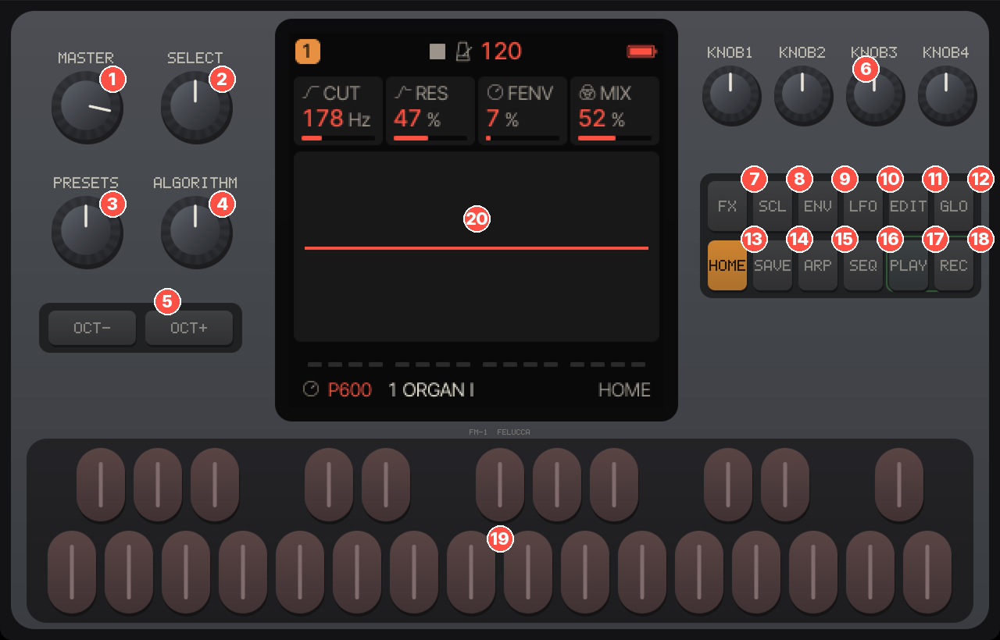
No.N°Nr.N.ºN.编号番号
ControlCommandeBedienelementMandoComando控制器操作子
What it doesRôleFunktionQué haceFunzione功能機能
1
MASTER
Overall volume (speaker, headphones and USB audio, unless MENU › AUDIO › USB LEVEL = FIXED).Volume général (haut-parleur, casque et audio USB, sauf si MENU › AUDIO › USB LEVEL = FIXED).Gesamtlautstärke (Lautsprecher, Kopfhörer und USB-Audio, außer bei MENU › AUDIO › USB LEVEL = FIXED).Volumen general (altavoz, auriculares y audio USB, salvo con MENU › AUDIO › USB LEVEL = FIXED).Volume generale (altoparlante, cuffie e audio USB, a meno che MENU › AUDIO › USB LEVEL = FIXED).总音量（扬声器、耳机和 USB 音频，除非 MENU › AUDIO › USB LEVEL = FIXED）。全体の音量（スピーカー、ヘッドホン、USB オーディオ。ただし MENU › AUDIO › USB LEVEL = FIXED の場合を除く）。
2
SELECT
The tempo by default. Can instead step through the pages, act as the mod wheel, or set the keys’ velocity (MENU › CONTROL › SELECT).Le tempo, par défaut. Peut aussi faire défiler les pages, servir de molette de modulation ou régler la vélocité des touches (MENU › CONTROL › SELECT).Standardmäßig das Tempo. Kann stattdessen durch die Seiten blättern, als Modulationsrad dienen oder die Anschlagstärke der Tasten einstellen (MENU › CONTROL › SELECT).El tempo por defecto. Puede, en su lugar, recorrer las páginas, hacer de rueda de modulación o ajustar la velocidad de las teclas (MENU › CONTROL › SELECT).Il tempo, per impostazione predefinita. Può invece scorrere le pagine, fare da rotella di modulazione o regolare la velocity dei tasti (MENU › CONTROL › SELECT).默认调节速度。也可以改为逐页切换、充当调制轮，或设定琴键力度（MENU › CONTROL › SELECT）。初期設定ではテンポ。代わりに、ページの切り替え、モジュレーション・ホイール、鍵盤のベロシティ設定に使うこともできます（MENU › CONTROL › SELECT）。
3
PRESETS
Changes the selected track’s sound. On some pages it moves the cursor or the row instead.Change le son de la piste choisie. Sur certaines pages, il déplace le curseur ou la ligne.Wechselt den Sound der ausgewählten Spur. Auf manchen Seiten bewegt er stattdessen den Cursor oder die Zeile.Cambia el sonido de la pista seleccionada. En algunas páginas mueve en su lugar el cursor o la línea.Cambia il suono della traccia selezionata. In alcune pagine sposta invece il cursore o la riga.切换所选音轨的音色。在某些页面上则改为移动光标或行。選択中のトラックのサウンドを切り替えます。ページによっては、カーソルや行を移動します。
4
ALGORITHM
Selects the track, 1 to 4. In the menu: the tab.Choisit la piste, de 1 à 4. Dans le menu : l’onglet.Wählt die Spur, 1 bis 4. Im Menü: den Reiter.Selecciona la pista, de 1 a 4. En el menú: la pestaña.Seleziona la traccia, da 1 a 4. Nel menu: la scheda.选择音轨 1 至 4。在菜单中：选择标签页。トラック1〜4 を選びます。メニューではタブを切り替えます。
5
OCT− / OCT+
Octave down / up. On action pages, in dialogs and in the menu: back or cancel / confirm.Octave inférieure / supérieure. Sur les pages qui exécutent une action, dans les dialogues et dans le menu : retour ou annuler / confirmer.Oktave nach unten / oben. Auf Aktionsseiten, in Dialogen und im Menü: zurück oder abbrechen / bestätigen.Octava abajo / arriba. En las páginas de acción, en los cuadros de diálogo y en el menú: atrás o cancelar / confirmar.Ottava sotto / sopra. Nelle pagine di azione, nelle finestre di dialogo e nel menu: indietro o annulla / conferma.降低 / 升高八度。在操作页面、对话框和菜单中：返回或取消 / 确认。オクターブを下げる／上げる。実行を伴うページ、ダイアログ、メニューでは：戻る・キャンセル／確定。
6
KNOB 1–4
The four settings shown at the top of the screen.Les quatre réglages affichés en haut de l’écran.Die vier Einstellungen, die oben auf dem Display angezeigt werden.Los cuatro ajustes que se muestran en la parte superior de la pantalla.I quattro parametri mostrati in alto sullo schermo.屏幕顶部显示的四个参数。画面上部に表示される4つの設定。
7
FX
The effects pages. Held: the FX quick screen (performance effects).Les pages d’effets. Maintenu : l’écran rapide FX (effets de jeu).Die Effektseiten. Gehalten: die Schnellansicht FX (Performance-Effekte).Las páginas de efectos. Mantenido: la pantalla rápida FX (efectos de interpretación).Le pagine degli effetti. Tenuto premuto: la schermata rapida FX (effetti performance).效果器页面。按住：FX 快捷屏幕（演奏效果）。エフェクトのページ。長押し：FX クイック画面（パフォーマンス・エフェクト）。
8
SCL
The scale and chord pages. Held: the SCL quick screen.Les pages de gamme et d’accords. Maintenu : l’écran rapide SCL.Die Seiten für Skala und Akkorde. Gehalten: die Schnellansicht SCL.Las páginas de escala y de acordes. Mantenido: la pantalla rápida SCL.Le pagine di scale e accordi. Tenuto premuto: la schermata rapida SCL.音阶与和弦页面。按住：SCL 快捷屏幕。スケールとコードのページ。長押し：SCL クイック画面。
9
ENV
The amplifier envelope pages.Les pages de l’enveloppe d’amplitude.Die Seiten der Verstärkerhüllkurve.Las páginas de la envolvente del amplificador.Le pagine dell’inviluppo dell’amplificatore.放大器包络页面。アンプ・エンベロープのページ。
10
LFO
The LFO pages and the modulation matrix. Held while turning the knobs: MOMENTARY changes.Les pages du LFO et la matrice de modulation. Maintenu avec les boutons rotatifs : changements MOMENTARY.Die LFO-Seiten und die Modulationsmatrix. Gehalten beim Drehen der Regler: MOMENTARY-Änderungen.Las páginas del LFO y la matriz de modulación. Mantenido mientras se giran los potenciómetros: cambios MOMENTARY.Le pagine dell’LFO e la matrice di modulazione. Tenuto premuto mentre si ruotano le manopole: modifiche MOMENTARY.LFO 页面和调制矩阵。按住同时旋转旋钮：MOMENTARY（临时）修改。LFO のページとモジュレーション・マトリクス。押したままノブを回すと：MOMENTARY（一時的）な変更。
11
EDIT
The sound engine’s pages (for P600: its eleven pages). Held: the EDIT quick screen (engines).Les pages du moteur sonore (pour P600 : ses onze pages). Maintenu : l’écran rapide EDIT (moteurs).Die Seiten der Klangerzeugung (bei P600: ihre elf Seiten). Gehalten: die Schnellansicht EDIT (Klangerzeugungen).Las páginas del motor de sonido (para P600: sus once páginas). Mantenido: la pantalla rápida EDIT (motores).Le pagine del motore sonoro (per P600: le sue undici pagine). Tenuto premuto: la schermata rapida EDIT (motori).声音引擎的页面（P600 共十一页）。按住：EDIT 快捷屏幕（引擎）。サウンド・エンジンのページ（P600 では11ページ）。長押し：EDIT クイック画面（エンジン）。
12
GLO
The song page. Held: the GLO quick screen (mutes, solos, levels, tap tempo, MIDI LEARN).La page du morceau. Maintenu : l’écran rapide GLO (sourdines, solos, niveaux, tempo tapé, MIDI LEARN).Die Song-Seite. Gehalten: die Schnellansicht GLO (Stummschaltungen, Solos, Pegel, Tap-Tempo, MIDI LEARN).La página de la canción. Mantenido: la pantalla rápida GLO (silencios, solos, niveles, tap tempo, MIDI LEARN).La pagina della song. Tenuto premuto: la schermata rapida GLO (mute, solo, livelli, tap tempo, MIDI LEARN).歌曲页面。按住：GLO 快捷屏幕（静音、独奏、电平、拍击速度、MIDI LEARN）。ソングのページ。長押し：GLO クイック画面（ミュート、ソロ、レベル、タップ・テンポ、MIDI LEARN）。
13
HOME
Back to HOME; on HOME: MIXER, then CLOCK. Held: the menu.Retour à HOME ; sur HOME : MIXER, puis CLOCK. Maintenu : le menu.Zurück zu HOME; auf HOME: MIXER, dann CLOCK. Gehalten: das Menü.Vuelta a HOME; en HOME: MIXER y luego CLOCK. Mantenido: el menú.Ritorno a HOME; su HOME: MIXER, poi CLOCK. Tenuto premuto: il menu.返回 HOME；在 HOME 上：依次为 MIXER、CLOCK。按住：打开菜单。HOME に戻ります。HOME では MIXER、続いて CLOCK。長押し：メニュー。
14
SAVE
The pages for saving and loading sounds and projects. Held: undo / redo.Les pages pour enregistrer et charger sons et projets. Maintenu : annuler / rétablir.Die Seiten zum Speichern und Laden von Sounds und Projekten. Gehalten: Rückgängig / Wiederherstellen.Las páginas para guardar y cargar sonidos y proyectos. Mantenido: deshacer / rehacer.Le pagine per salvare e caricare suoni e progetti. Tenuto premuto: annulla / ripristina.保存和载入音色与工程的页面。按住：撤销 / 重做。サウンドとプロジェクトの保存・読み込みのページ。長押し：アンドゥ／リドゥ。
15
ARP
The arpeggiator pages.Les pages de l’arpégiateur.Die Seiten des Arpeggiators.Las páginas del arpegiador.Le pagine dell’arpeggiatore.琶音器页面。アルペジエーターのページ。
16
SEQ
The sequencer pages. Held: the SEQ TOOLS quick screen.Les pages du séquenceur. Maintenu : l’écran rapide SEQ TOOLS.Die Seiten des Sequencers. Gehalten: die Schnellansicht SEQ TOOLS.Las páginas del secuenciador. Mantenido: la pantalla rápida SEQ TOOLS.Le pagine del sequencer. Tenuto premuto: la schermata rapida SEQ TOOLS.音序器页面。按住：SEQ TOOLS 快捷屏幕。シーケンサーのページ。長押し：SEQ TOOLS クイック画面。
17
PLAY
Starts / stops the sequencer.Lance / arrête le séquenceur.Startet / stoppt den Sequencer.Inicia / detiene el secuenciador.Avvia / ferma il sequencer.启动/停止音序器。シーケンサーのスタート／ストップ。
18
REC
Arms recording on the selected track. Held: the REC quick screen.Arme l’enregistrement de la piste choisie. Maintenu : l’écran rapide REC.Schaltet die Aufnahme auf der ausgewählten Spur scharf. Gehalten: die Schnellansicht REC.Prepara la grabación en la pista seleccionada. Mantenido: la pantalla rápida REC.Attiva la registrazione sulla traccia selezionata. Tenuto premuto: la schermata rapida REC.让所选音轨准备录音。按住：REC 快捷屏幕。選択中のトラックを録音待機にします。長押し：REC クイック画面。
19
KEYSTOUCHESTASTENTECLASKEYSKEYSKEYS
27 keys, F3 to G5: for playing; in a quick screen, shortcuts.27 touches, de F3 à G5 : jouer ; dans un écran rapide, des raccourcis.27 Tasten, F3 bis G5: zum Spielen; in einer Schnellansicht: Kurzbefehle.27 teclas, de F3 a G5: para tocar; en una pantalla rápida, atajos.27 tasti, da F3 a G5: per suonare; in una schermata rapida, scorciatoie.27 个琴键，F3 至 G5：用于演奏；在快捷屏幕中为快捷操作。F3 から G5 までの27 鍵：演奏用。クイック画面ではショートカット。
20
SCREENÉCRANDISPLAYPANTALLADISPLAY屏幕SCREEN
The page, its four settings, the track, the sound and the messages.La page, ses quatre réglages, la piste, le son et les messages.Die Seite, ihre vier Einstellungen, die Spur, der Sound und die Meldungen.La página, sus cuatro ajustes, la pista, el sonido y los mensajes.La pagina, i suoi quattro parametri, la traccia, il suono e i messaggi.页面、其四个参数、音轨、音色和消息。ページ、その4つの設定、トラック、サウンド、メッセージを表示します。
The USB socket, on the back, carries power, MIDI and audio, and receives the firmware and imported sounds. The MIDI socket (TRS) receives notes and controllers, but not sounds.
La prise USB, à l’arrière, assure l’alimentation, le MIDI et l’audio, et reçoit le firmware et les sons importés. La prise MIDI (TRS) reçoit les notes et les contrôleurs, mais pas les sons.
Die USB-Buchse auf der Rückseite überträgt Strom, MIDI und Audio und empfängt die Firmware und importierte Sounds. Die MIDI-Buchse (TRS) empfängt Noten und Controller, aber keine Sounds.
La toma USB, en la parte trasera, transmite la alimentación, el MIDI y el audio, y recibe el firmware y los sonidos importados. La toma MIDI (TRS) recibe notas y controladores, pero no sonidos.
La presa USB, sul retro, fornisce alimentazione, MIDI e audio, e riceve il firmware e i suoni importati. La presa MIDI (TRS) riceve note e controller, ma non suoni.
背面的 USB 接口负责供电、MIDI 和音频，并接收固件和导入的音色。MIDI 接口（TRS）接收音符和控制器信息，但不接收音色。
背面の USB 端子は、電源、MIDI、オーディオを通し、ファームウェアや取り込むサウンドを受け取ります。MIDI 端子（TRS）はノートとコントローラーを受信しますが、サウンドは受信できません。
On a page buttonSur un bouton de pageAuf einer SeitentasteEn un botón de páginaSu un pulsante di pagina在页面按钮上ページ・ボタンでは
TapAppuiTippenPulsarTocco单击タップ
Acts when you let go. From another family: opens that family on the page you last viewed. Already in the family: the next page.Agit au relâchement. Depuis une autre famille : ouvre la famille sur la page vue en dernier. Déjà dans la famille : la page suivante.Wirkt beim Loslassen. Aus einer anderen Familie: öffnet diese Familie auf der zuletzt angesehenen Seite. Bereits in der Familie: die nächste Seite.Actúa al soltar. Desde otra familia: abre esa familia en la última página que vio. Si ya está en la familia: la página siguiente.Agisce al rilascio. Da un’altra famiglia: apre quella famiglia sull’ultima pagina visualizzata. Se si è già nella famiglia: la pagina successiva.松开时生效。从其他页面组按下：打开该页面组，显示您上次查看的页面。已在该页面组中：进入下一页。指を離したときに動作します。別のファミリーからの場合：そのファミリーを、最後に表示していたページで開きます。すでにそのファミリーにいる場合：次のページに進みます。
Two taps within a third of a second: one page back. On GLO (a single page) and REC: locks their quick screen open.Deux appuis en moins d’un tiers de seconde : une page en arrière. Sur GLO (une seule page) et REC : garde leur écran rapide ouvert.Zweimal Tippen innerhalb einer Drittelsekunde: eine Seite zurück. Bei GLO (eine einzige Seite) und REC: hält ihre Schnellansicht dauerhaft geöffnet.Dos pulsaciones en menos de un tercio de segundo: una página atrás. En GLO (una sola página) y REC: bloquea su pantalla rápida abierta.Due tocchi entro un terzo di secondo: una pagina indietro. Su GLO (una sola pagina) e REC: blocca aperta la loro schermata rapida.在三分之一秒内单击两次：返回上一页。在 GLO（只有一页）和 REC 上：将其快捷屏幕锁定为打开状态。3分の1秒以内に2回タップ：1ページ戻ります。GLO（1ページのみ）と REC では、クイック画面を開いたまま固定します。
After 0.4 s (MENU › CONTROL › HOLD): the quick screen, as long as you hold.Après 0,4 s (MENU › CONTROL › HOLD) : l’écran rapide, tant que vous maintenez.Nach 0,4 s (MENU › CONTROL › HOLD): die Schnellansicht, solange Sie halten.Al cabo de 0,4 s (MENU › CONTROL › HOLD): la pantalla rápida, mientras se mantenga pulsado.Dopo 0,4 s (MENU › CONTROL › HOLD): la schermata rapida, finché si tiene premuto.0.4 秒后（MENU › CONTROL › HOLD）：显示快捷屏幕，直到松开。0.4 秒後（MENU › CONTROL › HOLD）：押している間、クイック画面が表示されます。
Hold for more than 1 s without touching anything elseMaintien de plus de 1 s, sans rien toucher d’autreLänger als 1 s halten, ohne etwas anderes zu berührenMantener más de 1 s sin tocar nada másTenere premuto più di 1 s senza toccare nient’altro按住超过 1 秒且不碰其他控件ほかに何も触れずに 1 秒以上長押し
Let go: the quick screen stays open. A tap on its button closes it.Relâchez : l’écran rapide reste ouvert. Un appui sur son bouton le ferme.Loslassen: Die Schnellansicht bleibt geöffnet. Ein Tippen auf ihre Taste schließt sie.Suelte: la pantalla rápida se queda abierta. Una pulsación en su botón la cierra.Al rilascio, la schermata rapida resta aperta. Un tocco sul suo pulsante la chiude.松开：快捷屏幕保持打开。单击其按钮即可关闭。指を離してもクイック画面は開いたままです。そのボタンをタップすると閉じます。
HOME held 1 sHOME maintenu 1 sHOME 1 s gehaltenHOME mantenido 1 sHOME tenuto 1 s按住 HOME 1 秒HOME を1秒長押し
Opens the menu (it stays open).Ouvre le menu (il reste ouvert).Öffnet das Menü (es bleibt geöffnet).Abre el menú (se queda abierto).Apre il menu (che resta aperto).打开菜单（菜单保持打开）。メニューを開きます（開いたままになります）。
SAVE held 1 sSAVE maintenu 1 sSAVE 1 s gehaltenSAVE mantenido 1 sSAVE tenuto 1 s按住 SAVE 1 秒SAVE を1秒長押し
Undo; held again: redo.Annuler ; maintenu de nouveau : rétablir.Rückgängig; erneut gehalten: Wiederherstellen.Deshacer; mantenido de nuevo: rehacer.Annulla; tenuto di nuovo: ripristina.撤销；再次按住：重做。アンドゥ。もう一度長押しでリドゥ。
To go forward several pages, leave a short pause between taps; two taps too close together count as a double tap.Pour avancer de plusieurs pages, laissez une courte pause entre les appuis ; deux appuis trop rapprochés comptent comme un double appui.Um mehrere Seiten vorwärts zu blättern, lassen Sie zwischen den Tippern eine kurze Pause; zwei zu dicht aufeinanderfolgende Tipper zählen als Doppeltippen.Para avanzar varias páginas, deje una breve pausa entre pulsaciones; dos pulsaciones demasiado seguidas cuentan como una doble pulsación.Per avanzare di più pagine, lasciare una breve pausa tra un tocco e l’altro; due tocchi troppo ravvicinati contano come una doppia pressione.要前进多页，每次单击之间稍作停顿；两次单击间隔过短会被视为双击。複数ページ先に進むには、タップの間に短い間を置いてください。2回のタップの間隔が短すぎると、ダブル・タップとみなされます。
From the first page of a family, going back takes you to its last page; from the last page, going forward takes you to the first.Depuis la première page d’une famille, reculer mène à sa dernière page ; depuis la dernière, avancer mène à la première.Von der ersten Seite einer Familie führt das Zurückblättern zu ihrer letzten Seite; von der letzten Seite führt das Vorwärtsblättern zur ersten.Desde la primera página de una familia, retroceder lleva a su última página; desde la última, avanzar lleva a la primera.Dalla prima pagina di una famiglia, tornando indietro si arriva all’ultima; dall’ultima, andando avanti si arriva alla prima.在页面组的第一页上后退会跳到最后一页；在最后一页上前进会跳到第一页。ファミリーの最初のページから戻ると最後のページへ、最後のページから進むと最初のページへ移動します。
SAVE pressed from another family always opens USER, the page for saving a sound.SAVE pressé depuis une autre famille ouvre toujours USER, la page qui sert à ranger un son.SAVE, aus einer anderen Familie gedrückt, öffnet immer USER, die Seite zum Speichern eines Sounds.SAVE pulsado desde otra familia abre siempre USER, la página para guardar un sonido.SAVE premuto da un’altra famiglia apre sempre USER, la pagina per salvare un suono.从其他页面组按 SAVE 总是打开 USER，即保存音色的页面。別のファミリーから SAVE を押すと、常にサウンドを保存するページ USER が開きます。
HOME pressed on HOME shows MIXER, then CLOCK, then HOME again. A double tap goes the other way.HOME pressé sur HOME montre MIXER, puis CLOCK, puis de nouveau HOME. Un double appui parcourt ce cycle dans l’autre sens.HOME, auf HOME gedrückt, zeigt MIXER, dann CLOCK, dann wieder HOME. Doppeltippen geht in die andere Richtung.HOME pulsado en HOME muestra MIXER, luego CLOCK y luego HOME de nuevo. Una doble pulsación recorre el ciclo en sentido inverso.HOME premuto su HOME mostra MIXER, poi CLOCK, poi di nuovo HOME. Una doppia pressione va nel senso inverso.在 HOME 上按 HOME 依次显示 MIXER、CLOCK，然后回到 HOME。双击则按相反方向切换。HOME で HOME を押すと、MIXER、CLOCK、再び HOME の順に表示されます。ダブル・タップすると逆の順になります。
To change page with SELECT: MENU › CONTROL › SELECT = PAGE. Turn right to go forward, left to go back. The tempo then moves to GLO + SELECT and HOME › CLOCK.Pour changer de page avec SELECT : MENU › CONTROL › SELECT = PAGE. Tournez à droite pour avancer, à gauche pour reculer. Le tempo passe alors à GLO + SELECT et à HOME › CLOCK.Seite mit SELECT wechseln: MENU › CONTROL › SELECT = PAGE. Nach rechts vorwärts, nach links zurück. Das Tempo liegt dann auf GLO + SELECT und HOME › CLOCK.Para cambiar de página con SELECT: MENU › CONTROL › SELECT = PAGE. Gire a la derecha para avanzar, a la izquierda para retroceder. El tempo pasa entonces a GLO + SELECT y a HOME › CLOCK.Per cambiare pagina con SELECT: MENU › CONTROL › SELECT = PAGE. Ruotare a destra per avanzare, a sinistra per tornare indietro. Il tempo passa allora su GLO + SELECT e HOME › CLOCK.用 SELECT 翻页：MENU › CONTROL › SELECT = PAGE。向右前进，向左后退。速度随之改用 GLO + SELECT 和 HOME › CLOCK 调节。SELECT でページを切り替えるには：MENU › CONTROL › SELECT = PAGE。右に回すと進み、左に回すと戻ります。テンポの設定は GLO + SELECT と HOME › CLOCK に移ります。
OCT− and OCT+OCT− et OCT+OCT− und OCT+OCT− y OCT+OCT− e OCT+OCT− 和 OCT+OCT− と OCT+
On ordinary pages they shift the keyboard by octaves (−3 to +3) as soon as pressed; their light is lit away from the middle octave. Elsewhere they act when you let go:
Sur les pages ordinaires, ils déplacent le clavier par octaves (−3 à +3), dès l’appui ; leur voyant s’allume hors de l’octave du milieu. Ailleurs, ils agissent au relâchement :
Auf gewöhnlichen Seiten verschieben sie die Tastatur sofort beim Drücken um Oktaven (−3 bis +3); ihr Lämpchen leuchtet außerhalb der mittleren Oktave. Anderswo wirken sie beim Loslassen:
En las páginas normales desplazan el teclado por octavas (−3 a +3) en cuanto se pulsan; su luz se enciende fuera de la octava central. En otros lugares actúan al soltarlos:
Nelle pagine normali spostano la tastiera di ottava in ottava (da −3 a +3) non appena premuti; la loro spia si accende fuori dall’ottava centrale. Altrove agiscono al rilascio:
Action pages (save, load, erase, MORPH’s MUTATE, LEARN…): OCT+ performs the action; OCT− cancels it, and a second press returns to HOME (on PHRASES, SONG and AUTOMATION, OCT− goes straight to HOME). On these pages the octave does not change.Pages qui exécutent une action (enregistrer, charger, effacer, MUTATE de MORPH, LEARN…) : OCT+ fait l’action ; OCT− l’abandonne, et un second appui ramène à HOME (sur PHRASES, SONG et AUTOMATION, OCT− ramène directement à HOME). Sur ces pages, l’octave ne change pas.Aktionsseiten (Speichern, Laden, Löschen, MUTATE von MORPH, LEARN…): OCT+ führt die Aktion aus; OCT− bricht sie ab, und ein zweiter Druck kehrt zu HOME zurück (auf PHRASES, SONG und AUTOMATION führt OCT− direkt zu HOME). Auf diesen Seiten ändert sich die Oktave nicht.Páginas de acción (guardar, cargar, borrar, MUTATE de MORPH, LEARN…): OCT+ ejecuta la acción; OCT− la cancela, y una segunda pulsación vuelve a HOME (en PHRASES, SONG y AUTOMATION, OCT− va directamente a HOME). En estas páginas la octava no cambia.Pagine di azione (salvare, caricare, cancellare, MUTATE di MORPH, LEARN…): OCT+ esegue l’azione; OCT− la annulla, e una seconda pressione riporta a HOME (su PHRASES, SONG e AUTOMATION, OCT− va direttamente a HOME). In queste pagine l’ottava non cambia.操作页面（保存、载入、清除、MORPH 的 MUTATE、LEARN…）：OCT+ 执行操作；OCT− 取消操作，再按一次返回 HOME（在 PHRASES、SONG 和 AUTOMATION 上，OCT− 直接返回 HOME）。在这些页面上八度不会改变。実行を伴うページ（保存、読み込み、消去、MORPH の MUTATE、LEARN…）：OCT+ で操作を実行し、OCT− でキャンセルします。もう一度押すと HOME に戻ります（PHRASES、SONG、AUTOMATION では、OCT− で直接 HOME に戻ります）。これらのページではオクターブは変わりません。
Dialogs (ERASE U01?, SAVE IN PLACE 5?…): OCT+ = YES, OCT− = NO. Until you answer, only the keys respond (they play).Dialogues (ERASE U01?, SAVE IN PLACE 5?…) : OCT+ = OUI, OCT− = NON. Tant que vous n’avez pas répondu, seules les touches répondent (elles jouent).Dialoge (ERASE U01?, SAVE IN PLACE 5?…): OCT+ = YES, OCT− = NO. Bis Sie antworten, reagieren nur die Tasten (sie spielen).Cuadros de diálogo (ERASE U01?, SAVE IN PLACE 5?…): OCT+ = SÍ, OCT− = NO. Hasta que responda, solo responden las teclas (suenan).Finestre di dialogo (ERASE U01?, SAVE IN PLACE 5?…): OCT+ = SÌ, OCT− = NO. Finché non si risponde, rispondono solo i tasti (suonano).对话框（ERASE U01?、SAVE IN PLACE 5?…）：OCT+ = YES（是），OCT− = NO（否）。在您作答之前，只有琴键响应（可以演奏）。ダイアログ（ERASE U01?、SAVE IN PLACE 5?…）：OCT+ = YES、OCT− = NO。答えるまでは、鍵盤（演奏はできます）以外は反応しません。
Quick screens GLO, SCL, EDIT, SEQ and REC: OCT− undoes everything changed in the quick screen since it opened.Écrans rapides GLO, SCL, EDIT, SEQ et REC : OCT− annule tout ce que l’écran rapide a modifié depuis son ouverture.Schnellansichten GLO, SCL, EDIT, SEQ und REC: OCT− macht alles rückgängig, was seit dem Öffnen in der Schnellansicht geändert wurde.Pantallas rápidas GLO, SCL, EDIT, SEQ y REC: OCT− deshace todo lo que se ha cambiado en la pantalla rápida desde que se abrió.Schermate rapide GLO, SCL, EDIT, SEQ e REC: OCT− annulla tutto ciò che è stato modificato nella schermata rapida dalla sua apertura.快捷屏幕 GLO、SCL、EDIT、SEQ 和 REC：OCT− 撤销自快捷屏幕打开以来的所有修改。クイック画面 GLO、SCL、EDIT、SEQ、REC：OCT− で、クイック画面を開いてから変更した内容をすべて取り消します。
Menu: moves the value one step down / up.Menu : diminue / augmente la valeur d’un cran.Menü: verstellt den Wert um einen Schritt nach unten / oben.Menú: baja / sube el valor un paso.Menu: sposta il valore di un passo verso il basso / verso l’alto.菜单：将数值减少 / 增加一级。メニュー：値を1ステップ下げる／上げる。
A breathing OCT+ light means OCT+ would do something now.Un voyant OCT+ qui respire signifie qu’OCT+ ferait quelque chose maintenant.Ein atmendes Lämpchen an OCT+ bedeutet, dass OCT+ jetzt etwas bewirken würde.Una luz de OCT+ que respira significa que OCT+ haría algo en este momento.Una spia di OCT+ che pulsa indica che OCT+ farebbe qualcosa in questo momento.OCT+ 指示灯呼吸闪烁，表示此刻按 OCT+ 会执行某个操作。OCT+ のランプが呼吸するように点滅しているときは、今 OCT+ を押すと何かが実行されることを示しています。
The knobsLes boutons rotatifsDie ReglerLos potenciómetrosLe manopole旋钮ノブ
KNOB 1 to 4 change the four settings shown. On an action page, turn the action card’s knob right to select the action, left to cancel it, then press OCT+.KNOB 1 à 4 changent les quatre réglages affichés. Sur une page qui exécute une action, tournez le bouton de la carte de l’action à droite pour la choisir, à gauche pour l’abandonner, puis appuyez sur OCT+.KNOB 1 bis 4 ändern die vier angezeigten Einstellungen. Auf einer Aktionsseite drehen Sie den Regler der Aktionskarte nach rechts, um die Aktion auszuwählen, nach links, um sie abzubrechen, und drücken dann OCT+.KNOB 1 a 4 cambian los cuatro ajustes mostrados. En una página de acción, gire el potenciómetro de la tarjeta de la acción a la derecha para seleccionarla, a la izquierda para cancelarla, y luego pulse OCT+.Le manopole KNOB 1 a 4 modificano i quattro parametri mostrati. In una pagina di azione, ruotare la manopola della scheda dell’azione a destra per selezionarla, a sinistra per annullarla, poi premere OCT+.KNOB 1 至 4 调节所显示的四个参数。在操作页面上，向右旋转操作卡片的旋钮选中操作，向左旋转则取消，然后按 OCT+。KNOB 1 〜4 で、表示されている4つの設定を変更します。実行を伴うページでは、操作のカードのノブを右に回すと操作が選択され、左に回すとキャンセルされます。そのあと OCT+ を押します。
MENU › CONTROL › KNOB ACCEL ON: a fast turn on a setting with many values moves 2 to 8 times faster.MENU › CONTROL › KNOB ACCEL sur ON : un tour rapide sur un réglage à nombreuses valeurs avance 2 à 8 fois plus vite.MENU › CONTROL › KNOB ACCEL ON: Schnelles Drehen an einer Einstellung mit vielen Werten wirkt 2- bis 8-mal schneller.MENU › CONTROL › KNOB ACCEL en ON: un giro rápido sobre un ajuste con muchos valores avanza de 2 a 8 veces más rápido.MENU › CONTROL › KNOB ACCEL ON: una rotazione rapida su un parametro con molti valori si sposta da 2 a 8 volte più velocemente.MENU › CONTROL › KNOB ACCEL 设为 ON：在数值很多的参数上快速旋转时，变化速度提高 2 至 8 倍。MENU › CONTROL › KNOB ACCEL をオンにすると、値の多い設定でノブを素早く回したとき、2〜8倍の速さで値が変わります。
ALGORITHM selects tracks 1 to 4, one per step, without wrapping around. It does nothing while a quick screen is held.ALGORITHM choisit les pistes 1 à 4, une par cran, sans boucler. Il ne fait rien tant qu’un écran rapide est maintenu.ALGORITHM wählt die Spuren 1 bis 4, eine pro Schritt, ohne Umlauf. Solange eine Schnellansicht gehalten wird, bewirkt er nichts.ALGORITHM selecciona las pistas 1 a 4, una por paso, sin dar la vuelta. No hace nada mientras se mantiene una pantalla rápida.ALGORITHM seleziona le tracce da 1 a 4, una per scatto, senza ricominciare dall’inizio. Non fa nulla mentre si tiene premuta una schermata rapida.ALGORITHM 选择音轨 1 至 4，每格一个，到头不循环。按住快捷屏幕期间它不起作用。ALGORITHM は、1ステップごとにトラック1〜4 を選びます。端で折り返すことはありません。クイック画面を押さえている間は何もしません。
PRESETS changes the track’s sound, except: on STEP, DETAIL, AUTOMATION, SONG, USER, PHRASES and PROJECT it moves the cursor, the row or the slot, like KNOB 1; on TOOLS and SLICES it does nothing. On SAVE › PLACE it changes the sound too: choose the place with KNOB 1 only.PRESETS change le son de la piste, sauf : sur STEP, DETAIL, AUTOMATION, SONG, USER, PHRASES et PROJECT, il déplace le curseur, la ligne ou l’emplacement, comme KNOB 1 ; sur TOOLS et SLICES, il ne fait rien. Sur SAVE › PLACE, il change aussi le son : choisissez la place avec KNOB 1 seulement.PRESETS wechselt den Sound der Spur, außer: Auf STEP, DETAIL, AUTOMATION, SONG, USER, PHRASES und PROJECT bewegt er den Cursor, die Zeile oder den Slot, wie KNOB 1; auf TOOLS und SLICES bewirkt er nichts. Auf SAVE › PLACE wechselt er ebenfalls den Sound: Wählen Sie den Platz nur mit KNOB 1.PRESETS cambia el sonido de la pista, salvo: en STEP, DETAIL, AUTOMATION, SONG, USER, PHRASES y PROJECT mueve el cursor, la línea o la ranura, como KNOB 1; en TOOLS y SLICES no hace nada. En SAVE › PLACE también cambia el sonido: elija la posición solo con KNOB 1.PRESETS cambia il suono della traccia, tranne: su STEP, DETAIL, AUTOMATION, SONG, USER, PHRASES e PROJECT sposta il cursore, la riga o lo slot, come KNOB 1; su TOOLS e SLICES non fa nulla. Su SAVE › PLACE cambia anch’esso il suono: scegliere la posizione solo con KNOB 1.PRESETS 切换音轨的音色，但以下情况除外：在 STEP、DETAIL、AUTOMATION、SONG、USER、PHRASES 和 PROJECT 上，它像 KNOB 1 一样移动光标、行或槽位；在 TOOLS 和 SLICES 上不起作用。在 SAVE › PLACE 上它同样切换音色：只能用 KNOB 1 选择位置。PRESETS はトラックのサウンドを切り替えます。ただし、STEP、DETAIL、AUTOMATION、SONG、USER、PHRASES、PROJECT では、KNOB 1 と同じようにカーソル、行、スロットを移動します。TOOLS と SLICES では何もしません。SAVE › PLACE でもサウンドを切り替えます。保存枠の選択は KNOB 1 だけで行ってください。
SELECT: the tempo (40 to 240 BPM) by default. With MENU › CONTROL › BPM LOCK ON, SELECT no longer changes the tempo (BPM LOCKED): set it with GLO held, on HOME › CLOCK, or with GLO’s TAP key.SELECT : le tempo (40 à 240 BPM) par défaut. Avec MENU › CONTROL › BPM LOCK sur ON, SELECT ne change plus le tempo (BPM LOCKED) : réglez-le avec GLO maintenu, sur HOME › CLOCK, ou avec la touche TAP de GLO.SELECT: standardmäßig das Tempo (40 bis 240 BPM). Mit MENU › CONTROL › BPM LOCK ON ändert SELECT das Tempo nicht mehr (BPM LOCKED): Stellen Sie es bei gehaltener GLO-Taste, auf HOME › CLOCK oder mit der Taste TAP von GLO ein.SELECT: el tempo (40 a 240 BPM) por defecto. Con MENU › CONTROL › BPM LOCK en ON, SELECT ya no cambia el tempo (BPM LOCKED): ajústelo manteniendo GLO, en HOME › CLOCK o con la tecla TAP de GLO.SELECT: il tempo (da 40 a 240 BPM), per impostazione predefinita. Con MENU › CONTROL › BPM LOCK ON, SELECT non cambia più il tempo (BPM LOCKED): regolarlo tenendo premuto GLO, su HOME › CLOCK o con il tasto TAP di GLO.SELECT：默认调节速度（40 至 240 BPM）。MENU › CONTROL › BPM LOCK 设为 ON 时，SELECT 不再改变速度（BPM LOCKED）：请按住 GLO、在 HOME › CLOCK 上，或用 GLO 的 TAP 键设定速度。SELECT：初期設定ではテンポ（40〜240 BPM）。MENU › CONTROL › BPM LOCK をオンにすると、SELECT でテンポが変わらなくなります（BPM LOCKED）。テンポは GLO を押しながら、HOME › CLOCK で、または GLO の TAP キーで設定します。
The keysLes touchesDie TastenLas teclasI tasti琴键鍵盤
27 keys, from F3 to G5 at the middle octave. Without a MIDI keyboard they play at a fixed velocity of 100; MENU › CONTROL › SELECT = VEL lets SELECT set it (1 to 127); it goes back to 100 at each power-on.27 touches, de F3 à G5 à l’octave du milieu. Sans clavier MIDI, elles jouent à une vélocité fixe de 100 ; MENU › CONTROL › SELECT = VEL permet de la régler avec SELECT (1 à 127) ; elle revient à 100 à chaque allumage.27 Tasten, von F3 bis G5 in der mittleren Oktave. Ohne MIDI-Keyboard spielen sie mit einer festen Anschlagstärke von 100; mit MENU › CONTROL › SELECT = VEL lässt sie sich mit SELECT einstellen (1 bis 127); bei jedem Einschalten springt sie auf 100 zurück.27 teclas, de F3 a G5 en la octava central. Sin teclado MIDI tocan con una velocidad fija de 100; MENU › CONTROL › SELECT = VEL permite ajustarla con SELECT (1 a 127); vuelve a 100 en cada encendido.27 tasti, da F3 a G5 all’ottava centrale. Senza tastiera MIDI suonano con una velocity fissa di 100; MENU › CONTROL › SELECT = VEL permette di regolarla con SELECT (da 1 a 127); torna a 100 a ogni accensione.27 个琴键，在中间八度时从 F3 到 G5。没有 MIDI 键盘时，它们以固定力度 100 演奏；MENU › CONTROL › SELECT = VEL 可让 SELECT 设定力度（1 至 127）；每次开机都会恢复为 100。中央のオクターブで F3 から G5 までの27 鍵です。MIDI キーボードを使わない場合、ベロシティは100 に固定されます。MENU › CONTROL › SELECT = VEL にすると、SELECT でベロシティ（1〜127）を設定できます。電源を入れるたびに100 に戻ります。
A MIDI sustain pedal (CC 64) works.Une pédale de maintien MIDI (CC 64) fonctionne.Ein MIDI-Sustain-Pedal (CC 64) funktioniert.Un pedal de sustain MIDI (CC 64) funciona.Un pedale di sustain MIDI (CC 64) funziona.可以使用 MIDI 延音踏板（CC 64）。MIDI のサステイン・ペダル（CC 64）が使えます。
A key pressed while a quick screen’s button is held is a shortcut: silent, never recorded.Une touche pressée pendant que vous maintenez le bouton d’un écran rapide est un raccourci : muette, jamais enregistrée.Eine Taste, die gedrückt wird, während die Taste einer Schnellansicht gehalten wird, ist ein Kurzbefehl: stumm und nie aufgenommen.Una tecla pulsada mientras se mantiene el botón de una pantalla rápida es un atajo: muda, nunca se graba.Un tasto premuto mentre si tiene premuto il pulsante di una schermata rapida è una scorciatoia: muto, mai registrato.按住快捷屏幕按钮时按下的琴键是快捷操作：不发声，也永远不会被录下。クイック画面のボタンを押しながら押した鍵盤はショートカットになります。音は出ず、録音もされません。
Every combinationToutes les combinaisonsAlle KombinationenTodas las combinacionesTutte le combinazioni所有组合键すべての組み合わせ
Back to the middle octave.Retour à l’octave du milieu.Zurück zur mittleren Oktave.Vuelta a la octava central.Ritorno all’ottava centrale.回到中间八度。中央のオクターブに戻ります。
Recovery mode (WL80UBOOT, chapter 2). Let go before 5 s to cancel.Mode récupération (WL80UBOOT, chapitre 2). Relâchez avant 5 s pour annuler.Wiederherstellungsmodus (WL80UBOOT, Kapitel 2). Vor Ablauf von 5 s loslassen, um abzubrechen.Modo de recuperación (WL80UBOOT, capítulo 2). Suelte antes de 5 s para cancelar.Modalità ripristino (WL80UBOOT, capitolo 2). Rilasciare prima di 5 s per annullare.恢复模式（WL80UBOOT，第2章）。5 秒内松开即可取消。リカバリー・モード（WL80UBOOT、第2章）。5秒以内に指を離すとキャンセルされます。
OCT− + OCT+ held at power-onOCT− + OCT+ maintenus à l’allumageOCT− + OCT+ beim Einschalten gehaltenOCT− + OCT+ mantenidos al encenderOCT− + OCT+ tenuti all’accensione开机时按住 OCT− + OCT+電源投入時に OCT− + OCT+ を押したまま
Hardware calibration (chapter 18).Calibrage du matériel (chapitre 18).Hardware-Kalibrierung (Kapitel 18).Calibración del hardware (capítulo 18).Calibrazione hardware (capitolo 18).硬件校准（第18章）。ハードウェアのキャリブレーション（第18章）。
SAVE held at power-onSAVE maintenu à l’allumageSAVE beim Einschalten gehaltenSAVE mantenido al encenderSAVE tenuto all’accensione开机时按住 SAVE電源投入時に SAVE を押したまま
RESTART: back to the start without stopping.RESTART : retour au début sans arrêter la lecture.RESTART: zurück zum Anfang, ohne anzuhalten.RESTART: vuelta al principio sin detenerse.RESTART: ritorno all’inizio senza fermarsi.RESTART：不停止播放，回到开头。RESTART：停止せずに先頭に戻ります。
The tempo, whatever SELECT is set to.Le tempo, quel que soit le réglage de SELECT.Das Tempo, unabhängig von der Einstellung von SELECT.El tempo, sea cual sea el ajuste de SELECT.Il tempo, qualunque sia l’impostazione di SELECT.速度，无论 SELECT 设为何种功能。SELECT の設定にかかわらず、テンポを設定します。
MOMENTARY: changes that last while LFO is held (chapter 9).MOMENTARY : des changements qui durent tant que LFO est maintenu (chapitre 9).MOMENTARY: Änderungen, die gelten, solange LFO gehalten wird (Kapitel 9).MOMENTARY: cambios que duran mientras se mantiene LFO (capítulo 9).MOMENTARY: modifiche che durano finché si tiene premuto LFO (capitolo 9).MOMENTARY：按住 LFO 期间生效的临时修改（第9章）。MOMENTARY：LFO を押している間だけ続く変更（第9章）。
FX held + white key held + PRESETSFX maintenu + touche blanche maintenue + PRESETSFX gehalten + weiße Taste gehalten + PRESETSFX mantenido + tecla blanca mantenida + PRESETSFX tenuto + tasto bianco tenuto + PRESETS按住 FX + 按住白键 + PRESETSFX を押したまま + 白鍵を押したまま + PRESETS
Assigns another effect to that key (chapter 15).Attribue un autre effet à cette touche (chapitre 15).Weist dieser Taste einen anderen Effekt zu (Kapitel 15).Asigna otro efecto a esa tecla (capítulo 15).Assegna un altro effetto a quel tasto (capitolo 15).为该琴键指定另一种效果（第15章）。その鍵盤に別のエフェクトを割り当てます（第15章）。
A parameter lock on that step (chapter 21).Un verrou de paramètre sur ce pas (chapitre 21).Ein Parameter-Lock auf diesem Step (Kapitel 21).Un bloqueo de parámetro en ese paso (capítulo 21).Un parameter lock su quel passo (capitolo 21).在该步上设置参数锁定（第21章）。そのステップのパラメーター・ロック（第21章）。
SAVE held 1 sSAVE maintenu 1 sSAVE 1 s gehaltenSAVE mantenido 1 sSAVE tenuto 1 s按住 SAVE 1 秒SAVE を1秒長押し
Undo / redo the last load (sound, pattern) or sequence edit.Annuler / rétablir le dernier chargement (son, séquence) ou la dernière modification de séquence.Den letzten Ladevorgang (Sound, Pattern) oder die letzte Sequenzbearbeitung rückgängig machen / wiederherstellen.Deshacer / rehacer la última carga (sonido, patrón) o edición de secuencia.Annulla / ripristina l’ultimo caricamento (suono, pattern) o l’ultima modifica della sequenza.撤销 / 重做上一次载入（音色、样式）或音序编辑。最後の読み込み（サウンド、パターン）またはシーケンス編集をアンドゥ／リドゥします。
The lightsLes voyantsDie LämpchenLas lucesLe spie指示灯ランプ
Lit: in effect now. Breathing (slowly brighter and dimmer): available, you can press it. Dark: nothing available. MENU › DISPLAY › LEDS changes the style.Allumé : actif maintenant. Qui respire (s’éclaire et s’atténue lentement) : disponible, vous pouvez appuyer. Éteint : rien de disponible. MENU › DISPLAY › LEDS change le style.Leuchtend: jetzt wirksam. Atmend (langsam heller und dunkler): verfügbar, Sie können drücken. Dunkel: nichts verfügbar. MENU › DISPLAY › LEDS ändert den Stil.Encendida: activo ahora. Respirando (más brillante y más tenue lentamente): disponible, puede pulsarlo. Apagada: nada disponible. MENU › DISPLAY › LEDS cambia el estilo.Accesa: attiva in questo momento. Pulsante (lentamente più luminosa e più fioca): disponibile, si può premere. Spenta: niente di disponibile. MENU › DISPLAY › LEDS cambia lo stile.常亮：当前生效。呼吸（缓慢变亮变暗）：可用，可以按下。熄灭：无可用操作。MENU › DISPLAY › LEDS 可更改样式。点灯：現在有効です。呼吸（ゆっくり明るくなったり暗くなったりする）：使用可能で、押すことができます。消灯：使用できるものはありません。MENU › DISPLAY › LEDS でスタイルを変更できます。
While the sequencer plays, PLAY’s own light goes dark and the green light is lit; during a count-in the green light flashes on each beat.Pendant que le séquenceur joue, le voyant de PLAY s’éteint et le voyant vert s’allume ; pendant un décompte, le voyant vert clignote à chaque temps.Während der Sequencer läuft, erlischt das Lämpchen von PLAY selbst, und das grüne Lämpchen leuchtet; während eines Einzählers blinkt das grüne Lämpchen auf jedem Schlag.Mientras el secuenciador toca, la luz propia de PLAY se apaga y se enciende la luz verde; durante una cuenta previa, la luz verde parpadea en cada tiempo.Mentre il sequencer suona, la spia di PLAY si spegne e si accende la spia verde; durante un count-in la spia verde lampeggia a ogni battito.音序器播放时，PLAY 自身的指示灯熄灭，绿灯亮起；预备拍期间，绿灯随每一拍闪烁。シーケンサーの再生中は、PLAY 自体のランプは消え、緑のランプが点灯します。カウントイン中は、緑のランプが拍ごとに点滅します。
REC is lit while a track is armed.REC est allumé tant qu’une piste est armée.REC leuchtet, solange eine Spur scharfgeschaltet ist.REC está encendido mientras una pista está preparada para grabar.REC è acceso mentre una traccia è armata.有音轨准备录音时，REC 亮起。トラックが録音待機中は、REC が点灯します。
What it showsCe qu’il montreWas angezeigt wirdQué muestraCosa mostra显示内容表示内容
1
TrackPisteSpurPistaTraccia音轨トラック
The selected track, 1 to 4 (ALGORITHM); it lights up when a MIDI note arrives for it.La piste choisie, 1 à 4 (ALGORITHM) ; elle s’allume quand une note MIDI lui arrive.Die ausgewählte Spur, 1 bis 4 (ALGORITHM); sie leuchtet auf, wenn eine MIDI-Note für sie eintrifft.La pista seleccionada, de 1 a 4 (ALGORITHM); se ilumina cuando le llega una nota MIDI.La traccia selezionata, da 1 a 4 (ALGORITHM); si illumina quando arriva una nota MIDI per essa.所选音轨 1 至 4（ALGORITHM）；有发往该音轨的 MIDI 音符到达时会亮起。選択中のトラック1〜4（ALGORITHM）。そのトラック宛ての MIDI ノートを受信すると点灯します。
2
ProjectProjetProjektProyectoProgetto工程プロジェクト
The project letter, A to D: the PROJECT slot the track’s pattern comes from (or, while a song plays, the one its section plays; - for silence). A * after it: the pattern has unsaved changes.La lettre du projet, A à D : l’emplacement PROJECT d’où vient la séquence de la piste (ou, pendant un morceau, celui que joue sa section ; - pour un silence). Un * après elle : la séquence a des modifications non enregistrées.Der Projektbuchstabe, A bis D: der PROJECT-Slot, aus dem das Pattern der Spur stammt (oder, während ein Song läuft, der Slot, den ihr Abschnitt spielt; - für Stille). Ein * dahinter: Das Pattern hat ungespeicherte Änderungen.La letra del proyecto, de A a D: la ranura PROJECT de la que procede el patrón de la pista (o, mientras suena una canción, la que toca su sección; - para silencio). Un * detrás: el patrón tiene cambios sin guardar.La lettera del progetto, da A a D: lo slot PROJECT da cui proviene il pattern della traccia (oppure, mentre suona una song, quello suonato dalla sua sezione; - per il silenzio). Un * dopo la lettera: il pattern ha modifiche non salvate.工程字母 A 至 D：该音轨的样式所来自的 PROJECT 槽位（歌曲播放时，则为其段落正在播放的槽位；- 表示静音）。后面带 * 表示该样式有未保存的修改。プロジェクトの文字 A〜D：トラックのパターンの読み込み元である PROJECT スロット（ソング再生中は、そのセクションで再生されるスロット。無音は -）。後に * が付いている場合：パターンに未保存の変更があります。
A filled red dot: the selected track is armed for recording. A red ring: another track is armed.Un point rouge plein : la piste choisie est armée pour l’enregistrement. Un anneau rouge : une autre piste est armée.Ein gefüllter roter Punkt: Die ausgewählte Spur ist für die Aufnahme scharfgeschaltet. Ein roter Ring: Eine andere Spur ist scharfgeschaltet.Un punto rojo relleno: la pista seleccionada está preparada para grabar. Un anillo rojo: otra pista está preparada.Un punto rosso pieno: la traccia selezionata è armata per la registrazione. Un anello rosso: è armata un’altra traccia.实心红点：所选音轨已准备录音。红色圆环：另一个音轨已准备录音。塗りつぶした赤い点：選択中のトラックが録音待機中です。赤い輪：別のトラックが録音待機中です。
4
Transport and tempoLecture et tempoWiedergabe und TempoReproducción y tempoRiproduzione e tempo播放与速度再生とテンポ
A square when the sequencer is stopped, a triangle when it plays (in the accent color during a count-in), a disc while a song plays; then the tempo in BPM, followed by a padlock when BPM LOCK is on. In a quick screen: its name ([EDIT] SET, [FX] HOLD…), with a padlock when it is locked open.Un carré quand le séquenceur est arrêté, un triangle quand il joue (dans la couleur d’accent pendant un décompte), un disque pendant un morceau ; puis le tempo en BPM, suivi d’un cadenas quand BPM LOCK est sur ON. Dans un écran rapide : son nom ([EDIT] SET, [FX] HOLD…), avec un cadenas quand il est verrouillé en position ouverte.Ein Quadrat, wenn der Sequencer gestoppt ist, ein Dreieck, wenn er läuft (in der Akzentfarbe während eines Einzählers), eine Scheibe, während ein Song läuft; dann das Tempo in BPM, gefolgt von einem Vorhängeschloss, wenn BPM LOCK aktiviert ist. In einer Schnellansicht: ihr Name ([EDIT] SET, [FX] HOLD…), mit einem Vorhängeschloss, wenn sie dauerhaft geöffnet ist.Un cuadrado cuando el secuenciador está detenido, un triángulo cuando toca (en el color de acento durante una cuenta previa), un disco mientras suena una canción; después, el tempo en BPM, seguido de un candado cuando BPM LOCK está activado. En una pantalla rápida: su nombre ([EDIT] SET, [FX] HOLD…), con un candado cuando está bloqueada abierta.Un quadrato quando il sequencer è fermo, un triangolo quando suona (nel colore di accento durante un count-in), un disco mentre suona una song; poi il tempo in BPM, seguito da un lucchetto quando BPM LOCK è attivo. In una schermata rapida: il suo nome ([EDIT] SET, [FX] HOLD…), con un lucchetto quando è bloccata aperta.音序器停止时显示方块，播放时显示三角形（预备拍期间为强调色），歌曲播放时显示圆盘；随后是以 BPM 表示的速度，BPM LOCK 开启时后面带一个挂锁。在快捷屏幕中：显示其名称（[EDIT] SET、[FX] HOLD…），锁定为打开时带挂锁。シーケンサー停止中は四角、再生中は三角（カウントイン中はアクセント・カラー）、ソング再生中は円盤が表示され、続いて BPM 単位のテンポ、BPM LOCK がオンのときは南京錠が表示されます。クイック画面では、その名前（[EDIT] SET、[FX] HOLD…）が表示され、開いたまま固定されているときは南京錠が付きます。
5
OctaveOctaveOktaveOctavaOttava八度オクターブ
OCT +1, OCT −2…: the keyboard is off the middle octave. While a song plays: the disc and the number of the section playing.OCT +1, OCT −2… : le clavier n’est pas à l’octave du milieu. Pendant un morceau : le disque et le numéro de la section jouée.OCT +1, OCT −2…: Die Tastatur ist nicht in der mittleren Oktave. Während ein Song läuft: die Scheibe und die Nummer des laufenden Abschnitts.OCT +1, OCT −2…: el teclado está fuera de la octava central. Mientras suena una canción: el disco y el número de la sección que se está tocando.OCT +1, OCT −2…: la tastiera è fuori dall’ottava centrale. Mentre suona una song: il disco e il numero della sezione in riproduzione.OCT +1、OCT −2…：键盘偏离了中间八度。歌曲播放时：显示圆盘和正在播放的段落编号。OCT +1、OCT −2…：鍵盤が中央のオクターブから外れています。ソング再生中：円盤と、再生中のセクション番号。
6
BatteryBatterieAkkuBateríaBatteria电池バッテリー
The battery (a charging icon on USB power).La batterie (une icône de charge sur l’alimentation USB).Der Akku (ein Ladesymbol bei USB-Stromversorgung).La batería (un icono de carga con alimentación USB).La batteria (un’icona di ricarica con l’alimentazione USB).电池（使用 USB 供电时显示充电图标）。バッテリー（USB 給電時は充電アイコン）。
7
The four cardsLes quatre cartesDie vier KartenLas cuatro tarjetasLe quattro schede四张卡片4枚のカード
The four settings of the page, one per knob, left to right: name, value and a bar. A dimmed card is unavailable right now; an empty one is not linked to any knob.Les quatre réglages de la page, un par bouton rotatif, de gauche à droite : nom, valeur et une barre. Une carte grisée n’est pas utilisable pour l’instant ; une carte vide n’est reliée à aucun bouton.Die vier Einstellungen der Seite, eine pro Regler, von links nach rechts: Name, Wert und ein Balken. Eine abgedunkelte Karte ist gerade nicht verfügbar; eine leere ist mit keinem Regler verknüpft.Los cuatro ajustes de la página, uno por potenciómetro, de izquierda a derecha: nombre, valor y una barra. Una tarjeta atenuada no está disponible en ese momento; una vacía no está vinculada a ningún potenciómetro.I quattro parametri della pagina, uno per manopola, da sinistra a destra: nome, valore e una barra. Una scheda attenuata non è disponibile al momento; una vuota non è collegata ad alcuna manopola.页面的四个参数，每个旋钮一个，从左到右：名称、数值和一根条。变暗的卡片表示当前不可用；空卡片表示未关联任何旋钮。ページの4つの設定で、左から順に各ノブに対応し、名前、値、バーを表示します。暗く表示されたカードは現在使用できません。空のカードはどのノブにも割り当てられていません。
8
The panelLe panneauDas FeldEl panelIl pannello画面区パネル
A picture of what the page sets: the sound drawn in real time, a list, a graph or a Prophet-600-style panel.Une image de ce que règle la page : le son dessiné en temps réel, une liste, un graphique ou un panneau à l’image du Prophet-600.Ein Bild dessen, was die Seite einstellt: der in Echtzeit gezeichnete Klang, eine Liste, eine Grafik oder ein Bedienfeld im Stil des Prophet-600.Una imagen de lo que ajusta la página: el sonido dibujado en tiempo real, una lista, un gráfico o un panel al estilo del Prophet-600.Un’immagine di ciò che la pagina regola: il suono disegnato in tempo reale, un elenco, un grafico o un pannello in stile Prophet-600.页面所设定内容的图示：实时绘制的声音、列表、图表或 Prophet-600 风格的面板。ページで設定する内容を表す図：リアルタイムに描かれるサウンド、リスト、グラフ、または Prophet-600 風のパネル。
9
The row of marksLa rangée de repèresDie MarkierungszeileLa fila de marcasLa riga di segni标记行マークの列
Sixteen steps of the track’s pattern (the group the cursor is in); a bar is a note (accented: in the accent color); the white mark is the step now playing, and on the SEQ pages a colored mark shows the cursor. On action pages this row shows what OCT+ and OCT− do.Seize pas de la séquence de la piste (le groupe où se trouve le curseur) ; une barre est une note (accentuée : dans la couleur d’accent) ; le repère blanc est le pas en cours, et sur les pages SEQ un repère de couleur montre le curseur. Sur les pages qui exécutent une action, cette rangée indique ce que font OCT+ et OCT−.Sechzehn Steps des Patterns der Spur (die Gruppe, in der der Cursor steht); ein Balken ist eine Note (akzentuiert: in der Akzentfarbe); die weiße Markierung ist der gerade gespielte Step, und auf den SEQ-Seiten zeigt eine farbige Markierung den Cursor. Auf Aktionsseiten zeigt diese Zeile, was OCT+ und OCT− bewirken.Dieciséis pasos del patrón de la pista (el grupo en el que está el cursor); una barra es una nota (acentuada: en el color de acento); la marca blanca es el paso que suena en ese momento y, en las páginas SEQ, una marca de color indica el cursor. En las páginas de acción, esta fila muestra lo que hacen OCT+ y OCT−.Sedici passi del pattern della traccia (il gruppo in cui si trova il cursore); una barra è una nota (accentata: nel colore di accento); il segno bianco è il passo in riproduzione, e nelle pagine SEQ un segno colorato indica il cursore. Nelle pagine di azione questa riga mostra cosa fanno OCT+ e OCT−.音轨样式的十六步（光标所在的那一组）；竖条表示音符（重音：强调色）；白色标记为当前正在播放的步，在 SEQ 页面上彩色标记表示光标。在操作页面上，这一行显示 OCT+ 和 OCT− 的作用。トラックのパターンの16 ステップ（カーソルがあるグループ）。バーはノートを表します（アクセント付きはアクセント・カラー）。白いマークは現在再生中のステップで、SEQ のページではカラーのマークがカーソルを示します。実行を伴うページでは、この列に OCT+ と OCT− の働きが表示されます。
10
Engine and soundMoteur et sonKlangerzeugung und SoundMotor y sonidoMotore e suono引擎与音色エンジンとサウンド
The track’s engine (in the palette’s main color, red with P600) and its sound.Le moteur de la piste (dans la couleur principale de la palette, rouge avec P600) et le son choisi.Die Klangerzeugung der Spur (in der Hauptfarbe der Palette, rot bei P600) und ihr Sound.El motor de la pista (en el color principal de la paleta, rojo con P600) y su sonido.Il motore della traccia (nel colore principale della palette, rosso con P600) e il suo suono.音轨的引擎（以配色方案的主色显示，P600 为红色）及其音色。トラックのエンジン（パレットのメイン・カラー。P600 では赤）とサウンド。
11
PagePageSeitePáginaPagina页面ページ
The page’s name and its number in the family, for example FILTER 5/11.Le nom de la page et son numéro dans la famille, par exemple FILTER 5/11.Der Name der Seite und ihre Nummer in der Familie, zum Beispiel FILTER 5/11.El nombre de la página y su número en la familia, por ejemplo FILTER 5/11.Il nome della pagina e il suo numero nella famiglia, per esempio FILTER 5/11.页面名称及其在页面组中的编号，例如 FILTER 5/11。ページ名とファミリー内のページ番号。例：FILTER 5/11。
Families and colorsFamilles et couleursFamilien und FarbenFamilias y coloresFamiglie e colori页面组与颜色ファミリーとカラー
Each button opens a family of pages. On a P600 track, each family of controls has its color, on the page’s frame and the knobs’ arcs:
Chaque bouton ouvre une famille de pages. Sur une piste P600, chaque famille de commandes a sa couleur, sur le cadre de la page et sur les arcs des boutons rotatifs :
Jede Taste öffnet eine Familie von Seiten. Auf einer P600-Spur hat jede Familie von Parametern ihre Farbe, am Rahmen der Seite und an den Bögen der Regler:
Cada botón abre una familia de páginas. En una pista P600, cada familia de controles tiene su color, en el marco de la página y en los arcos de los potenciómetros:
Ogni pulsante apre una famiglia di pagine. Su una traccia P600, ogni famiglia di comandi ha il suo colore, sulla cornice della pagina e sugli archi delle manopole:
A knob’s lit arc shows its value; on a two-way setting (− / +) the arc starts from the middle. Some P600 pages show round knobs, like the Prophet-600; others, the four cards with a 3D picture of the sound.
L’arc lumineux d’un bouton montre sa valeur ; sur un réglage à deux sens (− / +), l’arc part du milieu. Certaines pages P600 montrent des boutons ronds, comme le Prophet-600 ; d’autres, les quatre cartes avec une image 3D du son.
Der leuchtende Bogen eines Reglers zeigt seinen Wert; bei einer Einstellung in zwei Richtungen (− / +) beginnt der Bogen in der Mitte. Einige P600-Seiten zeigen runde Regler wie der Prophet-600; andere die vier Karten mit einem 3D-Bild des Klangs.
El arco iluminado de un potenciómetro muestra su valor; en un ajuste de dos sentidos (− / +), el arco parte del centro. Algunas páginas P600 muestran potenciómetros redondos, como el Prophet-600; otras, las cuatro tarjetas con una imagen 3D del sonido.
L’arco illuminato di una manopola ne indica il valore; su un parametro bidirezionale (− / +) l’arco parte dal centro. Alcune pagine P600 mostrano manopole rotonde, come il Prophet-600; altre, le quattro schede con un’immagine 3D del suono.
旋钮上亮起的弧线表示其数值；在双向参数（− / +）上，弧线从中间开始。部分 P600 页面显示像 Prophet-600 那样的圆形旋钮；其他页面则显示四张卡片和声音的 3D 图像。
USER, PLACE (P600 tracks), PRESETS, PHRASES, PROJECT, TOOLSUSER, PLACE (pistes P600), PRESETS, PHRASES, PROJECT, TOOLSUSER, PLACE (P600-Spuren), PRESETS, PHRASES, PROJECT, TOOLSUSER, PLACE (pistas P600), PRESETS, PHRASES, PROJECT, TOOLSUSER, PLACE (tracce P600), PRESETS, PHRASES, PROJECT, TOOLSUSER、PLACE（P600 音轨）、PRESETS、PHRASES、PROJECT、TOOLSUSER、PLACE（P600 トラック）、PRESETS、PHRASES、PROJECT、TOOLS
12, 11, 24
A page that does not apply to the track’s engine is hidden (the P600 pages on a DRUM track, for example); the numbers n/m count only the pages shown.
Une page sans objet pour le moteur de la piste n’apparaît pas (les pages P600 sur une piste DRUM, par exemple) ; les numéros n/m ne comptent que les pages affichées.
Eine Seite, die für die Klangerzeugung der Spur keine Bedeutung hat, erscheint nicht (zum Beispiel die P600-Seiten auf einer DRUM-Spur); die Nummern n/m zählen nur die angezeigten Seiten.
Una página que no tiene sentido para el motor de la pista no aparece (las páginas P600 en una pista DRUM, por ejemplo); los números n/m cuentan solo las páginas mostradas.
Una pagina che non ha senso per il motore della traccia non compare (per esempio le pagine P600 su una traccia DRUM); i numeri n/m contano solo le pagine mostrate.
The message bandLe bandeau de messagesDas MeldungsbandLa banda de mensajesLa banda dei messaggi消息条メッセージ・バンド
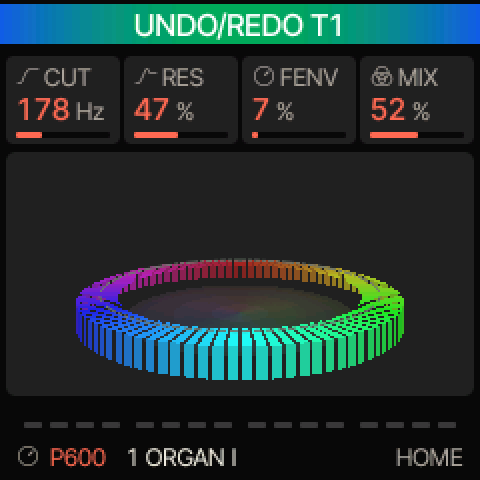
A message: the band at the top of the screen.Un message : le bandeau en haut de l’écran.Eine Meldung: das Band oben auf dem Display.Un mensaje: la banda en la parte superior de la pantalla.Un messaggio: la banda in alto sullo schermo.一条消息：屏幕顶部的横条。メッセージ：画面上部のバンド。
The results of actions (SAVED U01, MUTATED, STOP TO SAVE…) appear for about 2 s in a green-to-blue band at the top of the screen. It needs no response. Two messages can follow one another: LOADED then NO SAMPLE, or a tool’s result then [SAVE] HOLD TO UNDO. Chapter 25 lists every message and what to do about it.
Les résultats des actions (SAVED U01, MUTATED, STOP TO SAVE…) s’affichent environ 2 s dans un bandeau vert-bleu en haut de l’écran. Il n’attend aucune réponse. Deux messages peuvent se suivre : LOADED puis NO SAMPLE, ou le résultat d’un outil puis [SAVE] HOLD TO UNDO. Le chapitre 25 liste chaque message et indique quoi faire.
Die Ergebnisse von Aktionen (SAVED U01, MUTATED, STOP TO SAVE…) erscheinen etwa 2 s lang in einem grün-blauen Band oben auf dem Display. Es erfordert keine Reaktion. Zwei Meldungen können aufeinander folgen: LOADED, dann NO SAMPLE, oder das Ergebnis eines Werkzeugs, dann [SAVE] HOLD TO UNDO. Kapitel 25 listet alle Meldungen auf und sagt, was zu tun ist.
Los resultados de las acciones (SAVED U01, MUTATED, STOP TO SAVE…) aparecen unos 2 s en una banda verde y azul en la parte superior de la pantalla. No requiere respuesta. Dos mensajes pueden sucederse: LOADED y luego NO SAMPLE, o el resultado de una herramienta y luego [SAVE] HOLD TO UNDO. El capítulo 25 enumera todos los mensajes y qué hacer en cada caso.
I risultati delle azioni (SAVED U01, MUTATED, STOP TO SAVE…) compaiono per circa 2 s in una banda verde-blu in alto sullo schermo. Non richiede risposta. Due messaggi possono susseguirsi: LOADED poi NO SAMPLE, oppure il risultato di uno strumento poi [SAVE] HOLD TO UNDO. Il capitolo 25 elenca tutti i messaggi e cosa fare.
操作结果（SAVED U01、MUTATED、STOP TO SAVE…）会在屏幕顶部的绿蓝色横条中显示约 2 秒，无需回应。两条消息可以接连出现：例如 LOADED 之后是 NO SAMPLE，或某个工具的结果之后是 [SAVE] HOLD TO UNDO。第25章列出了每条消息及相应的处理方法。
操作の結果（SAVED U01、MUTATED、STOP TO SAVE…）は、画面上部の緑から青のバンドに約2秒間表示されます。応答する必要はありません。2つのメッセージが続くこともあります。LOADED のあとに NO SAMPLE、またはツールの結果のあとに [SAVE] HOLD TO UNDO などです。すべてのメッセージとその対処法は第25章にまとめています。
A missing sample: NO SAMPLE, with a crossed-out file icon (chapter 20). Until you have opened a quick screen once, each tap of its button shows HOLD [EDIT] QUICK: hold the button to open the quick screen.
Un échantillon manquant : NO SAMPLE, avec une icône de fichier barré (chapitre 20). Tant que vous n’avez pas ouvert un écran rapide une première fois, chaque appui sur son bouton affiche HOLD [EDIT] QUICK : maintenez le bouton pour ouvrir l’écran rapide.
Ein fehlendes Sample: NO SAMPLE, mit einem durchgestrichenen Dateisymbol (Kapitel 20). Solange Sie eine Schnellansicht noch nie geöffnet haben, zeigt jedes Tippen auf ihre Taste HOLD [EDIT] QUICK: Halten Sie die Taste, um die Schnellansicht zu öffnen.
Una muestra que falta: NO SAMPLE, con un icono de archivo tachado (capítulo 20). Hasta que haya abierto una pantalla rápida una vez, cada pulsación de su botón muestra HOLD [EDIT] QUICK: mantenga pulsado el botón para abrir la pantalla rápida.
Un campione mancante: NO SAMPLE, con un’icona di file barrata (capitolo 20). Finché non si è aperta una schermata rapida almeno una volta, ogni tocco del suo pulsante mostra HOLD [EDIT] QUICK: tenere premuto il pulsante per aprire la schermata rapida.
缺失采样：NO SAMPLE，带有一个划掉的文件图标（第20章）。在您第一次打开某个快捷屏幕之前，每次单击其按钮都会显示 HOLD [EDIT] QUICK：按住该按钮即可打开快捷屏幕。
サンプルが見つからない場合：斜線の入ったファイル・アイコンとともに NO SAMPLE と表示されます（第20章）。クイック画面を一度開くまでは、そのボタンを軽く押すたびに HOLD [EDIT] QUICK と表示されます。ボタンを長押しするとクイック画面が開きます。
DialogsLes dialoguesDialogeCuadros de diálogoFinestre di dialogo对话框ダイアログ
Before anything is erased or replaced, a dialog asks for confirmation (sometimes a second line names what will be replaced): OCT− NO, OCT+ YES. The other controls then do nothing; holding HOME opens the menu and cancels the dialog.
Avant toute action qui efface ou remplace, un dialogue demande confirmation (parfois, une deuxième ligne nomme ce qui sera remplacé) : OCT− NON, OCT+ OUI. Les autres commandes ne font alors rien ; maintenir HOME ouvre le menu et annule le dialogue.
Bevor etwas gelöscht oder ersetzt wird, fragt ein Dialog nach einer Bestätigung (manchmal nennt eine zweite Zeile, was ersetzt wird): OCT− NO, OCT+ YES. Die anderen Bedienelemente bewirken dann nichts; HOME gedrückt halten öffnet das Menü und bricht den Dialog ab.
Antes de borrar o sustituir cualquier cosa, un cuadro de diálogo pide confirmación (a veces una segunda línea indica lo que se va a sustituir): OCT− NO, OCT+ YES. Los demás controles no hacen entonces nada; mantener pulsado HOME abre el menú y cancela el cuadro de diálogo.
Prima che qualcosa venga cancellato o sostituito, una finestra di dialogo chiede conferma (a volte una seconda riga indica ciò che verrà sostituito): OCT− NO, OCT+ YES. Gli altri comandi allora non fanno nulla; tenendo premuto HOME si apre il menu e si annulla la finestra di dialogo.
在清除或替换任何内容之前，会出现对话框请求确认（有时第二行会注明将被替换的内容）：OCT− NO，OCT+ YES。此时其他控件不起作用；按住 HOME 会打开菜单并取消对话框。
On-screen helpL’aide à l’écranHilfe auf dem DisplayAyuda en pantallaAiuto sullo schermo屏幕帮助画面上のヘルプ
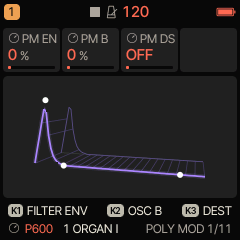
MENU › SYSTEM › HELP ON: the hint under the page.MENU › SYSTEM › HELP sur ON : l’astuce sous la page.MENU › SYSTEM › HELP ON: der Hinweis unter der Seite.MENU › SYSTEM › HELP en ON: la indicación bajo la página.MENU › SYSTEM › HELP ON: il suggerimento sotto la pagina.MENU › SYSTEM › HELP 设为 ON：页面下方显示提示。MENU › SYSTEM › HELP ON：ページの下に表示されるヒント。
MENU › SYSTEM › HELP ON: when a page opens, the bottom of the screen shows its main controls for 2 s, for example K1 FILTER ENV K2 OSC B K3 DEST. In a quick screen, a second help line stays while it is open.
MENU › SYSTEM › HELP sur ON : à l’ouverture d’une page, le bas de l’écran montre ses principales commandes pendant 2 s, par exemple K1 FILTER ENV K2 OSC B K3 DEST. Dans un écran rapide, une deuxième ligne d’aide reste affichée tant qu’il est ouvert.
MENU › SYSTEM › HELP auf ON: Beim Öffnen einer Seite zeigt der untere Rand des Displays 2 s lang ihre wichtigsten Bedienelemente, zum Beispiel K1 FILTER ENV K2 OSC B K3 DEST. In einer Schnellansicht bleibt eine zweite Hilfezeile stehen, solange sie geöffnet ist.
MENU › SYSTEM › HELP en ON: al abrir una página, la parte inferior de la pantalla muestra sus controles principales durante 2 s, por ejemplo K1 FILTER ENV K2 OSC B K3 DEST. En una pantalla rápida, una segunda línea de ayuda permanece mientras está abierta.
MENU › SYSTEM › HELP su ON: all’apertura di una pagina, la parte inferiore dello schermo mostra per 2 s i suoi comandi principali, per esempio K1 FILTER ENV K2 OSC B K3 DEST. In una schermata rapida, una seconda riga di aiuto resta visibile finché è aperta.
MENU › SYSTEM › HELP 设为 ON：打开页面时，屏幕底部会显示 2 秒其主要控件，例如 K1 FILTER ENV K2 OSC B K3 DEST。在快捷屏幕中，第二行帮助会在其打开期间一直显示。
MENU › SYSTEM › HELP を ON にすると、ページを開いたときに画面下部に主な操作子が2秒間表示されます。たとえば K1 FILTER ENV K2 OSC B K3 DEST のように表示されます。クイック画面では、開いている間、2行目のヘルプが表示され続けます。
On action pages, the bottom of the screen shows what OCT+ and OCT− do: OCT+ SAVE OCT− CANCEL.
Sur les pages qui exécutent une action, le bas de l’écran indique ce que font OCT+ et OCT− : OCT+ SAVE OCT− CANCEL.
Auf Aktionsseiten zeigt der untere Rand des Displays, was OCT+ und OCT− bewirken: OCT+ SAVE OCT− CANCEL.
En las páginas de acción, la parte inferior de la pantalla indica lo que hacen OCT+ y OCT−: OCT+ SAVE OCT− CANCEL.
Nelle pagine di azione, la parte inferiore dello schermo indica cosa fanno OCT+ e OCT−: OCT+ SAVE OCT− CANCEL.
在操作页面上，屏幕底部会显示 OCT+ 和 OCT− 的作用：OCT+ SAVE OCT− CANCEL。
実行を伴うページでは、画面下部に OCT+ と OCT− の働きが表示されます：OCT+ SAVE OCT− CANCEL。
The sound, drawn in real timeLe son, dessiné en temps réelDer Klang, in Echtzeit gezeichnetEl sonido, dibujado en tiempo realIl suono, disegnato in tempo reale实时绘制的声音リアルタイムで描かれるサウンド
The panel under the four cards is drawn from the sound itself: left and right output, level, frequencies and the notes you play. Each page has its own picture.
Le panneau sous les quatre cartes est dessiné à partir du son lui-même : sortie gauche et droite, volume, fréquences et notes jouées. Chaque page a sa propre image.
Das Feld unter den vier Karten wird aus dem Klang selbst gezeichnet: Ausgang links und rechts, Lautstärke, Frequenzen und die Noten, die Sie spielen. Jede Seite hat ihr eigenes Bild.
El panel bajo las cuatro tarjetas se dibuja a partir del propio sonido: salida izquierda y derecha, nivel, frecuencias y las notas que toca. Cada página tiene su propia imagen.
Il pannello sotto le quattro schede è disegnato a partire dal suono stesso: uscita sinistra e destra, livello, frequenze e note suonate. Ogni pagina ha la propria immagine.
HOME: the spectrum as bars around a disc, lows at the back, highs at the front; the left half is the left channel, the right half the right one.HOME : le spectre en barres autour d’un disque, graves au fond, aigus devant ; la moitié gauche est le canal gauche, la moitié droite le canal droit.HOME: das Spektrum als Balken rund um eine Scheibe, Bässe hinten, Höhen vorn; die linke Hälfte ist der linke Kanal, die rechte der rechte.HOME: el espectro en barras alrededor de un disco, graves al fondo, agudos delante; la mitad izquierda es el canal izquierdo, la derecha el derecho.HOME: lo spettro in barre intorno a un disco, bassi in fondo, acuti davanti; la metà sinistra è il canale sinistro, la destra il destro.HOME：频谱以柱状环绕圆盘排列，低频在后，高频在前；左半边是左声道，右半边是右声道。HOME：円盤のまわりに棒状に並んだスペクトラム。低音が奥、高音が手前です。左半分が左チャンネル、右半分が右チャンネルです。
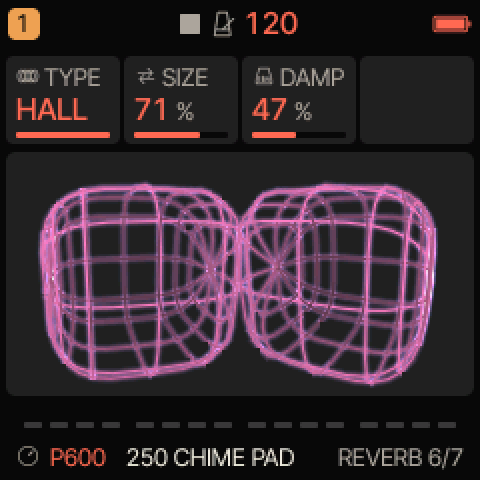
REVERB: a shape, round when the sound is dark, square when it is bright, spikes on each note; it splits in stereo and glows with the reverb.REVERB : une forme ronde quand le son est sombre, carrée quand il est brillant, des pointes à chaque note ; elle se divise en stéréo et rayonne avec la réverbération.REVERB: eine Form, rund bei dunklem Klang, eckig bei hellem, Stacheln bei jeder Note; sie teilt sich in Stereo und leuchtet mit dem Hall.REVERB: una forma redonda cuando el sonido es oscuro, cuadrada cuando es brillante, puntas en cada nota; se divide en estéreo y brilla con la reverberación.REVERB: una forma rotonda quando il suono è scuro, squadrata quando è brillante, punte a ogni nota; si divide in stereo e risplende con il riverbero.REVERB：一个形状，声音暗时呈圆形，亮时呈方形，每个音符出现尖刺；立体声时一分为二，并随混响发光。REVERB：音が暗いと丸く、明るいと四角くなる形で、音を弾くたびにトゲが出ます。ステレオで分かれ、リバーブに合わせて光ります。
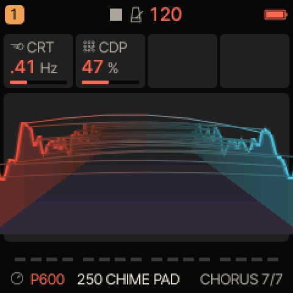
CHORUS: the left and right waves as two walls; merged into one in mono, they move apart as the sound gets wider and louder.CHORUS : les ondes gauche et droite en deux murs ; ils n’en forment qu’un en mono et s’écartent quand le son s’élargit et que son volume monte.CHORUS: die linke und die rechte Welle als zwei Wände; in Mono eine einzige, sie weichen auseinander, wenn der Klang breiter und lauter wird.CHORUS: las ondas izquierda y derecha como dos muros; uno solo en mono, se separan cuando el sonido se ensancha y sube.CHORUS: le onde sinistra e destra come due muri; uno solo in mono, si separano quando il suono si allarga e sale.CHORUS：左右声道的波形如两道墙；单声道时合为一道，声音越宽越响，两道墙分得越开。CHORUS：左右の波形が2枚の壁として表示されます。モノラルでは1枚で、音が広く大きくなるにつれて離れていきます。
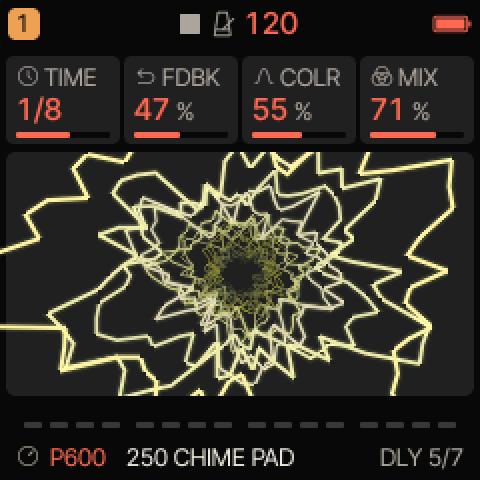
DLY: each waveform becomes a ring flying toward you, like echoes.DLY : chaque forme d’onde devient un anneau qui fonce vers vous, comme des échos.DLY: Jede Wellenform wird zu einem Ring, der wie ein Echo auf Sie zufliegt.DLY: cada forma de onda se convierte en un anillo que vuela hacia usted, como ecos.DLY: ogni forma d’onda diventa un anello che vola verso di voi, come degli echi.DLY：每个波形化作一个飞向您的圆环，如同回声。DLY：各波形がエコーのように、手前に向かって飛んでくるリングになります。
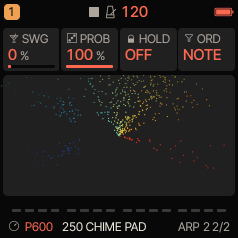
ARP 2: the keyboard bent into a circle; each note throws sparks from its side, blue and slow in the bass, red and fast in the treble.ARP 2 : le clavier courbé en cercle ; chaque note lance des étincelles de son côté, bleues et lentes dans les graves, rouges et rapides dans les aigus.ARP 2: die Tastatur zu einem Kreis gebogen; jede Note wirft Funken von ihrer Seite, blau und langsam im Bass, rot und schnell in den Höhen.ARP 2: el teclado curvado en círculo; cada nota lanza chispas desde su lado, azules y lentas en los graves, rojas y rápidas en los agudos.ARP 2: la tastiera piegata a cerchio; ogni nota lancia scintille dal suo lato, blu e lente nei bassi, rosse e veloci negli acuti.ARP 2：键盘弯成一个圆；每个音符从其位置迸出火花，低音区蓝色而缓慢，高音区红色而迅速。ARP 2：円形に曲げた鍵盤。各音がその位置から火花を散らします。低音は青くゆっくり、高音は赤く速く。
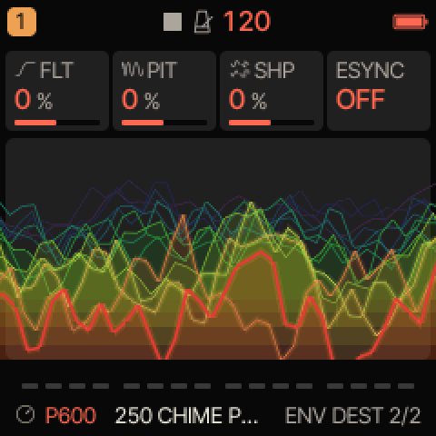
ENV DEST: the last waveforms piled up in depth.ENV DEST : les dernières formes d’onde empilées en profondeur.ENV DEST: die letzten Wellenformen in die Tiefe gestapelt.ENV DEST: las últimas formas de onda apiladas en profundidad.ENV DEST: le ultime forme d’onda impilate in profondità.ENV DEST：最近的波形在纵深方向层层堆叠。ENV DEST：直近の波形が奥行き方向に積み重なります。
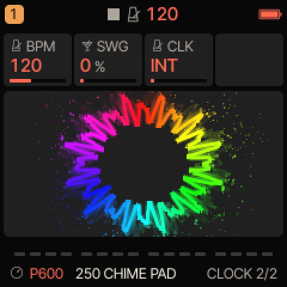
CLOCK: the waveform wound into a flower, with more petals when the sound is brighter.CLOCK : la forme d’onde enroulée en fleur, avec plus de pétales quand le son est brillant.CLOCK: die Wellenform zu einer Blume gewunden, mit mehr Blütenblättern bei hellerem Klang.CLOCK: la forma de onda enrollada en una flor, con más pétalos cuando el sonido es más brillante.CLOCK: la forma d’onda avvolta in un fiore, con più petali quando il suono è più brillante.CLOCK：波形绕成一朵花，声音越亮花瓣越多。CLOCK：花の形に巻かれた波形。音が明るいほど花びらが増えます。
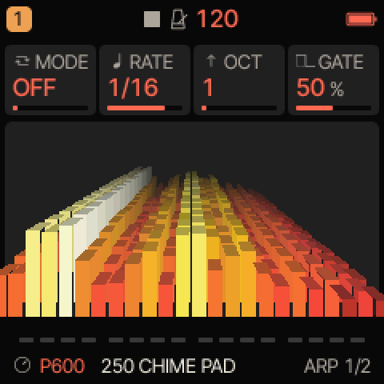
ARP: the spectrum in blocks; each new row pushes the older ones back.ARP : le spectre en blocs ; chaque nouvelle rangée repousse les précédentes vers le fond.ARP: das Spektrum in Blöcken; jede neue Reihe schiebt die älteren nach hinten.ARP: el espectro en bloques; cada fila nueva empuja las anteriores hacia el fondo.ARP: lo spettro a blocchi; ogni nuova fila spinge indietro le precedenti.ARP：方块状的频谱；每一新行将旧行向后推。ARP：ブロック状のスペクトラム。新しい列が古い列を奥へ押しやります。
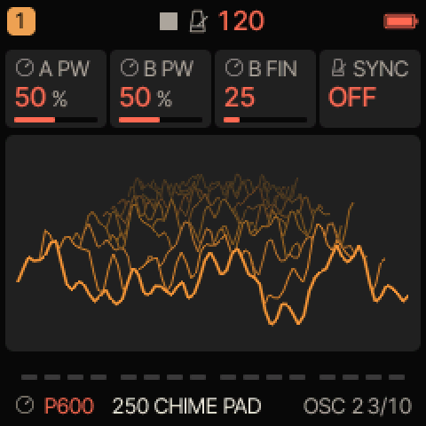
OSC and OSC 2: the waveform as it comes out, the previous ones falling back in a cascade.OSC et OSC 2 : la forme d’onde qui sort, les précédentes reculant en cascade.OSC und OSC 2: die Wellenform, wie sie herauskommt, die vorherigen fallen kaskadenartig zurück.OSC y OSC 2: la forma de onda tal como sale, con las anteriores cayendo en cascada.OSC e OSC 2: la forma d’onda così come esce, con le precedenti che ricadono a cascata.OSC 和 OSC 2：输出的波形，之前的波形层层向后退去，形成瀑布。OSC と OSC 2：出力される波形。過去の波形が滝のように後ろへ流れていきます。
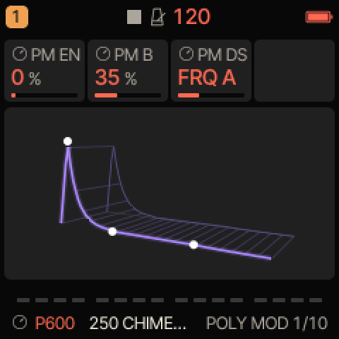
POLY MOD: the envelope that drives the modulation, as a ribbon in depth.POLY MOD : l’enveloppe qui pilote la modulation, en ruban dans la profondeur.POLY MOD: die Hüllkurve, die die Modulation steuert, als Band in die Tiefe.POLY MOD: la envolvente que dirige la modulación, como una cinta en profundidad.POLY MOD: l’inviluppo che guida la modulazione, come un nastro in profondità.POLY MOD：驱动调制的包络，呈现为纵深的飘带。POLY MOD：モジュレーションを駆動するエンベロープを、奥行きのあるリボンとして表示します。
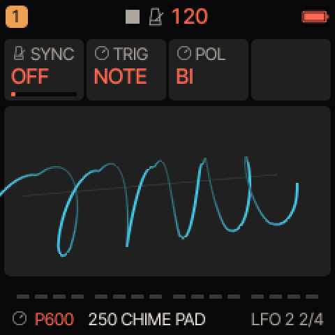
LFO 2: the LFO wave wound into a helix.LFO 2 : l’onde du LFO enroulée en hélice.LFO 2: die LFO-Welle zu einer Spirale gewickelt.LFO 2: la onda del LFO enrollada en hélice.LFO 2: l’onda dell’LFO avvolta a elica.LFO 2：LFO 波形绕成螺旋。LFO 2：らせん状に巻かれた LFO 波形。
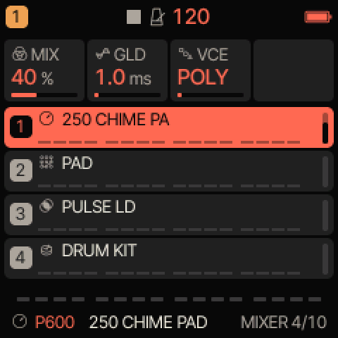
MIXER (EDIT): the four tracks, each with its sound and its level.MIXER (EDIT) : les quatre pistes, chacune avec son propre son et son niveau.MIXER (EDIT): die vier Spuren, jede mit ihrem Sound und ihrem Pegel.MIXER (EDIT): las cuatro pistas, cada una con su sonido y su nivel.MIXER (EDIT): le quattro tracce, ciascuna con il proprio suono e il proprio livello.MIXER（EDIT）：四个音轨，各自显示其音色和电平。MIXER（EDIT）：4つのトラックを、それぞれのサウンドとレベルとともに表示します。
Other sound pages: ENV the sound’s actual level over the last few seconds, a light marking the present; FLT ENV a plate of columns where the spectrum spreads from the center; LFO a ring the LFO wave deforms; FILTER the spectrum as a landscape, warm below the cutoff, cold above, with a wall of light at the cutoff that brightens with the resonance. With MENU › DISPLAY › LARGE ON, some pages show large values instead. MENU › DISPLAY › SCOPE: OUT (the default) takes the sound after MASTER, so the pictures go flat with MASTER turned down; MIX shows them at any volume.
Autres pages du son : ENV le volume réel du son au cours des dernières secondes, une lumière marquant l’instant présent ; FLT ENV un plateau de colonnes où le spectre se propage depuis le centre ; LFO un anneau que l’onde du LFO déforme ; FILTER le spectre en paysage, chaud sous la coupure, froid au-dessus, avec un mur de lumière à la coupure qui brille davantage avec la résonance. Avec MENU › DISPLAY › LARGE sur ON, certaines pages affichent de grandes valeurs à la place. MENU › DISPLAY › SCOPE : OUT (par défaut) prend le son après MASTER, donc les images restent plates MASTER baissé ; MIX les montre quel que soit le volume.
Weitere Klangseiten: ENV die tatsächliche Lautstärke des Klangs der letzten Sekunden, ein Licht markiert den gegenwärtigen Moment; FLT ENV eine Platte aus Säulen, auf der sich das Spektrum von der Mitte aus ausbreitet; LFO ein Ring, den die LFO-Welle verformt; FILTER das Spektrum als Landschaft, warm unterhalb der Grenzfrequenz, kalt darüber, mit einer Lichtwand an der Grenzfrequenz, die mit der Resonanz heller wird. Mit MENU › DISPLAY › LARGE ON zeigen manche Seiten stattdessen große Werte. MENU › DISPLAY › SCOPE: OUT (Voreinstellung) nimmt den Klang nach MASTER ab, bei heruntergedrehtem MASTER werden die Bilder also flach; MIX zeigt sie bei jeder Lautstärke.
Otras páginas de sonido: ENV el nivel real del sonido en los últimos segundos, con una luz que marca el momento presente; FLT ENV una placa de columnas donde el espectro se extiende desde el centro; LFO un anillo que la onda del LFO deforma; FILTER el espectro como un paisaje, cálido por debajo del corte, frío por encima, con un muro de luz en el corte que brilla más con la resonancia. Con MENU › DISPLAY › LARGE en ON, algunas páginas muestran valores grandes en su lugar. MENU › DISPLAY › SCOPE: OUT (por defecto) toma el sonido después de MASTER, así que con MASTER bajado las imágenes se quedan planas; MIX las muestra a cualquier volumen.
Altre pagine del suono: ENV il livello reale del suono negli ultimi secondi, con una luce che segna il momento presente; FLT ENV una piastra di colonne su cui lo spettro si allarga dal centro; LFO un anello deformato dall’onda dell’LFO; FILTER lo spettro come un paesaggio, caldo sotto la frequenza di taglio, freddo sopra, con un muro di luce sul punto di taglio che brilla di più con la risonanza. Con MENU › DISPLAY › LARGE ON, alcune pagine mostrano invece valori grandi. MENU › DISPLAY › SCOPE: OUT (predefinito) prende il suono dopo MASTER, quindi con MASTER abbassato le immagini diventano piatte; MIX le mostra a qualsiasi volume.
Screen and colorsÉcran et couleursDisplay und FarbenPantalla y coloresSchermo e colori屏幕与颜色画面とカラー
MENU › DISPLAY › COLOR chooses the palette (P600 by default); STYLE FLAT or LINE, LARGE bigger values, ANIM the animations (chapter 16).MENU › DISPLAY › COLOR choisit la palette (P600 par défaut) ; STYLE FLAT ou LINE, LARGE des valeurs plus grandes, ANIM les animations (chapitre 16).MENU › DISPLAY › COLOR wählt die Palette (standardmäßig P600); STYLE FLAT oder LINE, LARGE größere Werte, ANIM die Animationen (Kapitel 16).MENU › DISPLAY › COLOR elige la paleta (P600 por defecto); STYLE FLAT o LINE, LARGE valores más grandes, ANIM las animaciones (capítulo 16).MENU › DISPLAY › COLOR sceglie la palette (P600 per impostazione predefinita); STYLE FLAT o LINE, LARGE valori più grandi, ANIM le animazioni (capitolo 16).MENU › DISPLAY › COLOR 选择配色方案（默认为 P600）；STYLE 为 FLAT 或 LINE，LARGE 为大号数值，ANIM 为动画（第16章）。MENU › DISPLAY › COLOR でパレットを選びます（初期設定は P600）。STYLE は FLAT または LINE、LARGE は数値の拡大表示、ANIM はアニメーションです（第16章）。
MENU › DISPLAY › SCREEN OFF turns the screen off after 5 to 60 minutes of inactivity (NEVER by default). The sound and the sequencer keep running. The touch that wakes it does nothing else: no note, no change.MENU › DISPLAY › SCREEN OFF éteint l’écran après 5 à 60 minutes sans aucune manipulation (NEVER par défaut). Le son et le séquenceur continuent. Le geste qui le rallume ne fait rien d’autre : ni note, ni changement.MENU › DISPLAY › SCREEN OFF schaltet das Display nach 5 bis 60 Minuten Inaktivität aus (standardmäßig NEVER). Klang und Sequencer laufen weiter. Die Berührung, die es aufweckt, bewirkt sonst nichts: keine Note, keine Änderung.MENU › DISPLAY › SCREEN OFF apaga la pantalla tras 5 a 60 minutos de inactividad (NEVER por defecto). El sonido y el secuenciador siguen funcionando. El toque que la despierta no hace nada más: ni nota ni cambio.MENU › DISPLAY › SCREEN OFF spegne lo schermo dopo un tempo da 5 a 60 minuti di inattività (NEVER per impostazione predefinita). Il suono e il sequencer continuano a funzionare. Il tocco che lo riattiva non fa nient’altro: nessuna nota, nessuna modifica.MENU › DISPLAY › SCREEN OFF 在无操作 5 至 60 分钟后关闭屏幕（默认为 NEVER）。声音和音序器继续运行。唤醒屏幕的那次触碰不会产生任何其他作用：不发声，也不做修改。MENU › DISPLAY › SCREEN OFF は、操作がない状態が5〜60分続くと画面を消灯します（初期設定は NEVER）。サウンドとシーケンサーは動作し続けます。画面を復帰させるタッチはそれ以外の働きをしません。ノートも鳴らず、設定も変わりません。
8The P600 engine, page by pageLe moteur P600, page par pageDie P600-Klangerzeugung, Seite für SeiteEl motor P600, página a páginaIl motore P600, pagina per paginaP600 引擎逐页详解P600 エンジンをページごとに
A track whose engine is P600 plays like a Prophet-600: per voice, two oscillators (A and B) whose waveforms can be combined, a mixer, a 24 dB low-pass filter with its own envelope and keyboard tracking, the Poly-Mod, then the amplifier and its envelope.
Une piste dont le moteur est P600 joue comme un Prophet-600 : par voix, deux oscillateurs (A et B) aux formes d’onde combinables, un mixeur, un filtre passe-bas 24 dB avec sa propre enveloppe et son suivi de clavier, la Poly-Mod, puis l’amplificateur et son enveloppe.
Eine Spur mit der Klangerzeugung P600 spielt wie ein Prophet-600: pro Stimme zwei Oszillatoren (A und B), deren Wellenformen sich kombinieren lassen, ein Mixer, ein Tiefpassfilter mit 24 dB, eigener Hüllkurve und Keyboard-Tracking, die Poly-Mod, dann der Verstärker und seine Hüllkurve.
Una pista cuyo motor es P600 toca como un Prophet-600: por voz, dos osciladores (A y B) cuyas formas de onda se pueden combinar, un mezclador, un filtro paso bajo de 24 dB con su propia envolvente y seguimiento de teclado, el Poly-Mod y después el amplificador y su envolvente.
Una traccia il cui motore è P600 suona come un Prophet-600: per ogni voce, due oscillatori (A e B) le cui forme d’onda si possono combinare, un mixer, un filtro passa-basso a 24 dB con il proprio inviluppo e il keyboard tracking, il Poly-Mod, poi l’amplificatore e il suo inviluppo.
引擎为 P600 的音轨演奏起来就像 Prophet-600：每个复音有两个振荡器（A 和 B），其波形可以组合，还有混音器、带独立包络和键盘跟随的 24 dB 低通滤波器、Poly-Mod，然后是放大器及其包络。
エンジンが P600 のトラックは、Prophet-600 のように演奏できます。ボイスごとに、波形を組み合わせられる2基のオシレーター（A と B）、ミキサー、専用のエンベロープとキーボード・トラッキングを備えた24 dB ローパス・フィルター、Poly-Mod、そしてアンプとそのエンベロープがあります。
Reaching the pagesAtteindre les pagesDie Seiten erreichenAcceder a las páginasRaggiungere le pagine进入页面ページを開く
Choose a P600 track (ALGORITHM; track 1 at power-on) and press EDIT: page 1/11, POLY MOD. Press EDIT again for the next page, double tap for the previous one.Choisissez une piste P600 (ALGORITHM ; la piste 1 à l’allumage) et appuyez sur EDIT : la page 1/11, POLY MOD. Appuyez de nouveau sur EDIT pour la page suivante, double appui pour la page précédente.Wählen Sie eine P600-Spur (ALGORITHM; beim Einschalten Spur 1) und drücken Sie EDIT: Seite 1/11, POLY MOD. Drücken Sie EDIT erneut für die nächste Seite, Doppeltippen für die vorherige.Elija una pista P600 (ALGORITHM; la pista 1 al encender) y pulse EDIT: página 1/11, POLY MOD. Pulse EDIT de nuevo para la página siguiente, doble pulsación para la anterior.Scegliere una traccia P600 (ALGORITHM; la traccia 1 all’accensione) e premere EDIT: pagina 1/11, POLY MOD. Premere di nuovo EDIT per la pagina successiva, doppia pressione per la precedente.选择一个 P600 音轨（ALGORITHM；开机时为音轨 1），按 EDIT：进入第 1/11 页 POLY MOD。再按 EDIT 进入下一页，双击返回上一页。P600 トラックを選び（ALGORITHM。電源投入時はトラック1）、EDIT を押します：1/11 ページ、POLY MOD。もう一度 EDIT を押すと次のページ、素早く2回押すと前のページです。
EDIT reopens the page you left. The page name and number are at the bottom right of the screen: POLY MOD 1/11, OSC 2/11…EDIT rouvre la page que vous avez quittée. Le nom et le numéro de la page sont en bas à droite de l’écran : POLY MOD 1/11, OSC 2/11…EDIT öffnet wieder die Seite, die Sie verlassen haben. Name und Nummer der Seite stehen unten rechts auf dem Display: POLY MOD 1/11, OSC 2/11…EDIT vuelve a abrir la página que dejó. El nombre y el número de la página están abajo a la derecha de la pantalla: POLY MOD 1/11, OSC 2/11…EDIT riapre la pagina lasciata. Il nome e il numero della pagina sono in basso a destra sullo schermo: POLY MOD 1/11, OSC 2/11…EDIT 会重新打开您离开时的页面。页面名称和编号位于屏幕右下角：POLY MOD 1/11、OSC 2/11…EDIT を押すと、前回離れたページが再び開きます。ページ名と番号は画面右下にあります：POLY MOD 1/11、OSC 2/11…
KNOB 1 to 4 (top right) change the four settings, left to right. The amplifier envelope is on ENV and the LFO on LFO (chapter 9).KNOB 1 à 4 (en haut à droite) modifient les quatre réglages, de gauche à droite. L’enveloppe d’amplitude est sur ENV et le LFO sur LFO (chapitre 9).KNOB 1 bis 4 (oben rechts) ändern die vier Einstellungen, von links nach rechts. Die Verstärkerhüllkurve liegt auf ENV und der LFO auf LFO (Kapitel 9).KNOB 1 a 4 (arriba a la derecha) cambian los cuatro ajustes, de izquierda a derecha. La envolvente del amplificador está en ENV y el LFO en LFO (capítulo 9).Da KNOB 1 a 4 (in alto a destra) si modificano i quattro parametri, da sinistra a destra. L’inviluppo dell’amplificatore si trova su ENV e l’LFO su LFO (capitolo 9).KNOB 1 至 4（右上方）从左到右调节四个参数。放大器包络位于 ENV，LFO 位于 LFO（第9章）。KNOB 1 〜4（右上）で、4つの設定を左から順に変更します。アンプ・エンベロープは ENV に、LFO は LFO にあります（第9章）。
A change affects the track’s sound, not the saved sound: to keep it, see chapter 12.Un changement modifie le son de la piste, pas le son rangé : pour le conserver, voyez le chapitre 12.Eine Änderung betrifft den Sound der Spur, nicht den gespeicherten Sound: Wie Sie ihn behalten, steht in Kapitel 12.Un cambio afecta al sonido de la pista, no al sonido guardado: para conservarlo, consulte el capítulo 12.Una modifica riguarda il suono della traccia, non il suono salvato: per conservarlo, vedere il capitolo 12.修改作用于音轨的音色，而不是已保存的音色：要保留修改，请参阅第12章。変わるのはトラックのサウンドで、保存されたサウンドではありません。変更を残す方法は第12章を参照してください。
EDIT, page 1 of 11.EDIT, page 1 sur 11.EDIT, Seite 1 von 11.EDIT, página 1 de 11.EDIT, pagina 1 di 11.EDIT，第 1 页（共 11 页）。EDIT、11ページ中1ページ目。
In each voice, two sources modulate oscillator A’s pitch and/or the filter.
Dans chaque voix, deux sources modulent la hauteur de l’oscillateur A et/ou le filtre.
In jeder Stimme modulieren zwei Quellen die Tonhöhe von Oszillator A und/oder das Filter.
En cada voz, dos fuentes modulan la afinación del oscilador A y/o el filtro.
In ogni voce, due sorgenti modulano l’intonazione dell’oscillatore A e/o il filtro.
在每个复音中，两个调制源调制振荡器 A 的音高和/或滤波器。
各ボイスの中で、2つのソースがオシレーター A のピッチやフィルターを変調します。
KnobBoutonReglerPotenciómetroManopola旋钮ノブ
What it doesCe qu’il faitFunktionQué haceFunzione功能機能
ValuesValeursWerteValoresValori取值値
PM EN
FILTER ENV: how much the filter envelope modulates the destination.FILTER ENV : quantité de modulation par l’enveloppe du filtre.FILTER ENV: wie stark die Filterhüllkurve das Ziel moduliert.FILTER ENV: cuánto modula la envolvente del filtro el destino.FILTER ENV: quanto l’inviluppo del filtro modula la destinazione.FILTER ENV：滤波器包络对目标的调制量。FILTER ENV：フィルター・エンベロープが変調先をどれだけ変調するか。
0–100 %0–100 %0–100 %0–100 %0–100 %0–100%0–100%
PM B
OSC B: how much oscillator B modulates the destination, at audio speed: metallic, bell-like sounds.OSC B : quantité de modulation par l’oscillateur B, à vitesse audio : sons métalliques, cloches.OSC B: wie stark Oszillator B das Ziel moduliert, mit Audiogeschwindigkeit: metallische, glockenartige Klänge.OSC B: cuánto modula el oscilador B el destino, a velocidad de audio: sonidos metálicos, de campana.OSC B: quanto l’oscillatore B modula la destinazione, a velocità audio: suoni metallici, di campana.OSC B：振荡器 B 以音频速率对目标的调制量：金属感、钟声般的声音。OSC B：オシレーター B がオーディオ・レートで変調先をどれだけ変調するか。金属的な音やベルのような音になります。
0–100 %0–100 %0–100 %0–100 %0–100 %0–100%0–100%
PM DS
DEST: where the modulation goes: OFF, FRQ A (oscillator A’s pitch), FILT (the filter), BOTH.DEST : la destination : OFF, FRQ A (hauteur de l’oscillateur A), FILT (le filtre), BOTH (les deux).DEST: wohin die Modulation geht: OFF, FRQ A (Tonhöhe von Oszillator A), FILT (das Filter), BOTH (beide).DEST: adónde va la modulación: OFF, FRQ A (afinación del oscilador A), FILT (el filtro), BOTH (ambos).DEST: dove va la modulazione: OFF, FRQ A (l’intonazione dell’oscillatore A), FILT (il filtro), BOTH.DEST：调制的去向：OFF、FRQ A（振荡器 A 的音高）、FILT（滤波器）、BOTH（两者）。DEST：変調先。OFF、FRQ A（オシレーター A のピッチ）、FILT（フィルター）、BOTH（両方）。
Nothing happens? DEST is OFF, or both amounts are at 0 %.Rien ne se passe ? DEST est sur OFF, ou les deux quantités sont à 0 %.Es passiert nichts? DEST steht auf OFF, oder beide Werte stehen auf 0 %.¿No ocurre nada? DEST está en OFF, o las dos cantidades están a 0 %.Non succede nulla? DEST è su OFF, oppure entrambe le quantità sono a 0 %.没有变化？DEST 为 OFF，或两个调制量都为 0%。何も変化しない？ DEST が OFF になっているか、両方の量が0% になっています。
FILTER ENV to FRQ A sweeps oscillator A’s pitch at each note, up to five octaves: a sync sweep when SYNC is on (page 3), a zap or a drop otherwise.FILTER ENV vers FRQ A balaie la hauteur de l’oscillateur A à chaque note, jusqu’à cinq octaves : un balayage de synchro quand SYNC est activé (page 3), un « zap » ou une chute sinon.FILTER ENV auf FRQ A fährt bei jeder Note die Tonhöhe von Oszillator A durch, um bis zu fünf Oktaven: ein Sync-Sweep, wenn SYNC aktiviert ist (Seite 3), sonst ein Zap oder ein Absturz der Tonhöhe.FILTER ENV hacia FRQ A barre la afinación del oscilador A en cada nota, hasta cinco octavas: un barrido de sync cuando SYNC está activado (página 3), un zap o una caída en caso contrario.FILTER ENV verso FRQ A fa scorrere l’intonazione dell’oscillatore A a ogni nota, fino a cinque ottave: uno sweep di sync quando SYNC è attivo (pagina 3), altrimenti uno zap o una caduta.FILTER ENV 调制 FRQ A 时，每个音符都会扫动振荡器 A 的音高，最多五个八度：SYNC 开启时（第 3 页）形成同步扫频，否则形成“zap”激光音或下滑音。FILTER ENV を FRQ A に送ると、ノートごとにオシレーター A のピッチが最大5オクターブにわたってスイープします。SYNC がオン（3ページ目）ならシンク・スイープに、オフならザップ音や下降音になります。
OSC B modulates even when mixed out (MIXER at 0 %) or set to OFF (it then acts as a triangle): use it purely as a modulator.OSC B module même hors du mixage (MIXER à 0 %) ou sur OFF (il agit alors comme un triangle) : utilisez-le uniquement comme modulateur.OSC B moduliert auch herausgemischt (MIXER auf 0 %) oder auf OFF (er wirkt dann als Dreieck): Nutzen Sie ihn rein als Modulator.OSC B modula incluso fuera de la mezcla (MIXER a 0 %) o en OFF (actúa entonces como un triángulo): úselo únicamente como modulador.OSC B modula anche escluso dal mix (MIXER a 0 %) o su OFF (agisce allora come un triangolo): usarlo unicamente come modulatore.OSC B 即使已从混音中移除（MIXER 为 0%）或设为 OFF（此时作为三角波工作）也会进行调制：可将其纯粹用作调制器。OSC B はミックスから外しても（MIXER が0%）、OFF にしても（その場合は三角波として働きます）変調します。純粋なモジュレーターとして使えます。
EDIT, page 2 of 11.EDIT, page 2 sur 11.EDIT, Seite 2 von 11.EDIT, página 2 de 11.EDIT, pagina 2 di 11.EDIT，第 2 页（共 11 页）。EDIT、11ページ中2ページ目。
The waveforms and pitches of oscillators A and B.
Les formes d’onde et les hauteurs des oscillateurs A et B.
Wellenformen und Tonhöhen der Oszillatoren A und B.
Las formas de onda y las afinaciones de los osciladores A y B.
Le forme d’onda e le intonazioni degli oscillatori A e B.
振荡器 A 和 B 的波形与音高。
オシレーター A と B の波形とピッチ。
KnobBoutonReglerPotenciómetroManopola旋钮ノブ
What it doesCe qu’il faitFunktionQué haceFunzione功能機能
ValuesValeursWerteValoresValori取值値
A WAV
SHAPE A: oscillator A’s waveforms: OFF (silent), SAW, TRI, SAW+T, PLS, SAW+P, TRI+P, ALL (all three).SHAPE A : formes d’onde de l’oscillateur A : OFF (muet), SAW, TRI, SAW+T, PLS, SAW+P, TRI+P, ALL (les trois).SHAPE A: Wellenformen von Oszillator A: OFF (stumm), SAW, TRI, SAW+T, PLS, SAW+P, TRI+P, ALL (alle drei).SHAPE A: formas de onda del oscilador A: OFF (mudo), SAW, TRI, SAW+T, PLS, SAW+P, TRI+P, ALL (las tres).SHAPE A: le forme d’onda dell’oscillatore A: OFF (muto), SAW, TRI, SAW+T, PLS, SAW+P, TRI+P, ALL (tutte e tre).SHAPE A：振荡器 A 的波形：OFF（静音）、SAW、TRI、SAW+T、PLS、SAW+P、TRI+P、ALL（三种全开）。SHAPE A：オシレーター A の波形。OFF（無音）、SAW、TRI、SAW+T、PLS、SAW+P、TRI+P、ALL（3つすべて）。
FREQ A: oscillator A’s pitch in semitones. 24 plays the note as written, 12 an octave lower, 36 an octave higher.FREQ A : hauteur de l’oscillateur A en demi-tons. 24 joue la note telle quelle, 12 une octave plus bas, 36 une octave plus haut.FREQ A: Tonhöhe von Oszillator A in Halbtönen. 24 spielt die Note wie notiert, 12 eine Oktave tiefer, 36 eine Oktave höher.FREQ A: afinación del oscilador A en semitonos. 24 toca la nota tal como está escrita, 12 una octava más grave, 36 una octava más aguda.FREQ A: l’intonazione dell’oscillatore A in semitoni. 24 suona la nota così com’è, 12 un’ottava sotto, 36 un’ottava sopra.FREQ A：振荡器 A 的音高，以半音为单位。24 按原音高演奏，12 低一个八度，36 高一个八度。FREQ A：オシレーター A のピッチ（半音単位）。24 で書かれたとおりのノート、12 で1オクターブ下、36 で1オクターブ上になります。
0–63 st0–63 st0–63 Halbtöne0–63 st0–63 st0–63 st0–63 st
B WAV
SHAPE B: oscillator B’s waveforms, the same eight choices.SHAPE B : formes d’onde de l’oscillateur B, les huit mêmes choix.SHAPE B: Wellenformen von Oszillator B, dieselben acht Optionen.SHAPE B: formas de onda del oscilador B, las mismas ocho opciones.SHAPE B: le forme d’onda dell’oscillatore B, con le stesse otto scelte.SHAPE B：振荡器 B 的波形，同样八个选项。SHAPE B：オシレーター B の波形。同じ8つの選択肢です。
FREQ B: oscillator B’s pitch, the same way.FREQ B : hauteur de l’oscillateur B, de la même façon.FREQ B: Tonhöhe von Oszillator B, auf dieselbe Weise.FREQ B: afinación del oscilador B, de la misma manera.FREQ B: l’intonazione dell’oscillatore B, allo stesso modo.FREQ B：振荡器 B 的音高，方式相同。FREQ B：オシレーター B のピッチ。設定方法は同じです。
0–63 st0–63 st0–63 Halbtöne0–63 st0–63 st0–63 st0–63 st
No sound? The oscillator you are listening to is set to OFF, or the MIXER (page 4) sends everything to an oscillator set to OFF.Pas de son ? L’oscillateur entendu est sur OFF, ou le MIXER (page 4) donne tout à un oscillateur sur OFF.Kein Ton? Der Oszillator, den Sie hören wollen, steht auf OFF, oder der MIXER (Seite 4) schickt alles zu einem Oszillator, der auf OFF steht.¿No hay sonido? El oscilador que escucha está en OFF, o el MIXER (página 4) lo envía todo a un oscilador en OFF.Nessun suono? L’oscillatore che si sta ascoltando è su OFF, oppure il MIXER (pagina 4) manda tutto a un oscillatore su OFF.没有声音？您正在听的振荡器设为 OFF，或 MIXER（第 4 页）将全部信号送往设为 OFF 的振荡器。音が出ない？聴いているオシレーターが OFF になっているか、MIXER（4ページ目）がすべてを OFF のオシレーターに送っています。
A fifth apart (A 24, B 31) or an octave apart (A 24, B 36): a fuller sound. Detune B slightly with B FINE (page 3) for the classic beating.À une quinte (A 24, B 31) ou une octave (A 24, B 36) : un son plus plein. Désaccordez légèrement B avec B FINE (page 3) pour le battement classique.Eine Quinte auseinander (A 24, B 31) oder eine Oktave auseinander (A 24, B 36): ein vollerer Klang. Verstimmen Sie B leicht mit B FINE (Seite 3) für die klassische Schwebung.A una quinta (A 24, B 31) o a una octava (A 24, B 36): un sonido más lleno. Desafine ligeramente B con B FINE (página 3) para obtener el batimiento clásico.A una quinta di distanza (A 24, B 31) o a un’ottava (A 24, B 36): un suono più pieno. Scordare leggermente B con B FINE (pagina 3) per il classico battimento.相隔五度（A 24、B 31）或一个八度（A 24、B 36）：声音更饱满。用 B FINE（第 3 页）将 B 略微失谐，即可得到经典的拍频效果。5度の間隔（A 24、B 31）やオクターブの間隔（A 24、B 36）にすると、厚みのある音になります。B FINE（3ページ目）で B をわずかにずらすと、定番のうなりが得られます。
PLS (pulse) changes with the pulse width set on page 3.PLS (impulsion) varie selon la largeur d’impulsion réglée en page 3.PLS (Puls) verändert sich mit der auf Seite 3 eingestellten Pulsbreite.PLS (pulso) cambia con el ancho de pulso ajustado en la página 3.PLS (impulso) cambia con la larghezza d’impulso impostata a pagina 3.PLS（脉冲波）随第 3 页设定的脉冲宽度而变化。PLS（パルス波）は、3ページ目で設定するパルス幅によって変化します。
EDIT, page 3 of 11.EDIT, page 3 sur 11.EDIT, Seite 3 von 11.EDIT, página 3 de 11.EDIT, pagina 3 di 11.EDIT，第 3 页（共 11 页）。EDIT、11ページ中3ページ目。
Pulse widths, fine tuning and sync.
Largeurs d’impulsion, accord fin et synchronisation.
Pulsbreiten, Feinstimmung und Sync.
Anchos de pulso, afinación fina y sincronización.
Larghezze d’impulso, accordatura fine e sync.
脉冲宽度、微调和同步。
パルス幅、ファイン・チューニング、シンク。
KnobBoutonReglerPotenciómetroManopola旋钮ノブ
What it doesCe qu’il faitFunktionQué haceFunzione功能機能
ValuesValeursWerteValoresValori取值値
A PW
PW A: pulse width of A (heard when its shape includes PLS). 50 %: square, hollow; narrow: thin, nasal.PW A : largeur d’impulsion de A (audible quand sa forme contient PLS). 50 % : carré, creux ; étroit : fin, nasal.PW A: Pulsbreite von A (hörbar, wenn seine Wellenform PLS enthält). 50 %: Rechteck, hohl; schmal: dünn, näselnd.PW A: ancho de pulso de A (se oye cuando su forma incluye PLS). 50 %: cuadrado, hueco; estrecho: fino, nasal.PW A: larghezza d’impulso di A (udibile quando la sua forma include PLS). 50 %: quadra, cava; stretta: sottile, nasale.PW A：A 的脉冲宽度（当其波形包含 PLS 时可听到）。50%：方波，空洞；窄：单薄、带鼻音。PW A：A のパルス幅（波形に PLS が含まれるときに聞こえます）。50% は矩形波で中空な音、狭くすると細く鼻にかかった音になります。
0–100 %0–100 %0–100 %0–100 %0–100 %0–100%0–100%
B PW
PW B: pulse width of B.PW B : largeur d’impulsion de B.PW B: Pulsbreite von B.PW B: ancho de pulso de B.PW B: larghezza d’impulso di B.PW B：B 的脉冲宽度。PW B：B のパルス幅。
0–100 %0–100 %0–100 %0–100 %0–100 %0–100%0–100%
B FIN
FINE B: raises B slightly, up to a semitone: a fuller, beating sound.FINE B : élève légèrement la hauteur de B, jusqu’à un demi-ton : un son plus épais, qui bat.FINE B: hebt B leicht an, um bis zu einen Halbton: ein vollerer, schwebender Klang.FINE B: sube ligeramente B, hasta un semitono: un sonido más lleno, con batimiento.FINE B: alza leggermente B, fino a un semitono: un suono più pieno, con battimenti.FINE B：将 B 略微升高，最多一个半音：声音更饱满、带拍频。FINE B：B を最大半音までわずかに上げます。厚みのある、うなりのある音になります。
0–1270–1270–1270–1270–1270–1270–127
SYNC
A restarts with each cycle of B: a hard, biting tone, which changes when FREQ A moves.A redémarre à chaque cycle de B : un son dur et mordant, qui change quand FREQ A bouge.A startet mit jedem Zyklus von B neu: ein harter, bissiger Ton, der sich ändert, wenn FREQ A bewegt wird.A se reinicia con cada ciclo de B: un timbre duro y mordiente, que cambia cuando se mueve FREQ A.A riparte a ogni ciclo di B: un timbro duro e graffiante, che cambia quando FREQ A si sposta.A 随 B 的每个周期重新起振：坚硬、尖锐的音色，FREQ A 变化时音色随之改变。A が B の周期ごとにリセットされます。硬く噛みつくような音色で、FREQ A を動かすと変化します。
OFF / ONOFF / ONOFF / ONOFF / ONOFF / ONOFF / ONOFF / ON
SYNC sounds best with A higher than B (FREQ A above FREQ B) and A in the mix. Sweep FREQ A, or let the Poly-Mod do it (page 1).La SYNC s’entend surtout avec A plus aigu que B (FREQ A au-dessus de FREQ B) et A dans le mixage. Balayez FREQ A, ou laissez la Poly-Mod le faire (page 1).SYNC klingt am besten, wenn A höher als B ist (FREQ A über FREQ B) und A im Mix ist. Fahren Sie FREQ A durch oder lassen Sie das die Poly-Mod erledigen (Seite 1).SYNC suena mejor con A más agudo que B (FREQ A por encima de FREQ B) y A en la mezcla. Barra FREQ A, o deje que lo haga el Poly-Mod (página 1).SYNC suona meglio con A più alto di B (FREQ A sopra FREQ B) e A presente nel mix. Far scorrere FREQ A, o lasciarlo fare al Poly-Mod (pagina 1).A 高于 B（FREQ A 大于 FREQ B）且 A 在混音中时，SYNC 效果最佳。扫动 FREQ A，或交给 Poly-Mod 来完成（第 1 页）。SYNC は、A を B より高くし（FREQ A を FREQ B より上に）、A をミックスに入れたときに最もよく響きます。FREQ A をスイープするか、Poly-Mod（1ページ目）に任せてください。
The LFO can move the pulse widths (LFO DEST › SHP): the shimmer of string ensembles.Le LFO peut faire bouger les largeurs d’impulsion (LFO DEST › SHP) : le scintillement des ensembles de cordes.Der LFO kann die Pulsbreiten bewegen (LFO DEST › SHP): das Schimmern von String-Ensembles.El LFO puede mover los anchos de pulso (LFO DEST › SHP): el brillo ondulante de los conjuntos de cuerdas.L’LFO può muovere le larghezze d’impulso (LFO DEST › SHP): lo scintillio degli ensemble d’archi.LFO 可以调制脉冲宽度（LFO DEST › SHP）：弦乐合奏般的闪烁感。LFO でパルス幅を動かすことができます（LFO DEST › SHP）。ストリングス・アンサンブルのきらめきです。
EDIT, page 4 of 11.EDIT, page 4 sur 11.EDIT, Seite 4 von 11.EDIT, página 4 de 11.EDIT, pagina 4 di 11.EDIT，第 4 页（共 11 页）。EDIT、11ページ中4ページ目。
The balance of the two oscillators, the glide and the voice mode.
L’équilibre des deux oscillateurs, le glide et le mode de voix.
Das Verhältnis der beiden Oszillatoren, das Glide und der Stimmenmodus.
El equilibrio de los dos osciladores, el portamento y el modo de voz.
Il bilanciamento dei due oscillatori, il glide e la modalità delle voci.
两个振荡器的平衡、滑音和复音模式。
2基のオシレーターのバランス、グライド、ボイス・モード。
KnobBoutonReglerPotenciómetroManopola旋钮ノブ
What it doesCe qu’il faitFunktionQué haceFunzione功能機能
ValuesValeursWerteValoresValori取值値
MIX
MIXER: 0 % only A, 50 % both equally, 100 % only B.MIXER : 0 % seulement A, 50 % les deux à égalité, 100 % seulement B.MIXER: 0 % nur A, 50 % beide gleich laut, 100 % nur B.MIXER: 0 % solo A, 50 % los dos por igual, 100 % solo B.MIXER: 0 % solo A, 50 % entrambi in parti uguali, 100 % solo B.MIXER：0% 只有 A，50% 两者均等，100% 只有 B。MIXER：0% で A のみ、50% で両方を等量、100% で B のみ。
0–100 %0–100 %0–100 %0–100 %0–100 %0–100%0–100%
GLD
GLIDE: time to slide from one note to the next (0: no glide).GLIDE : temps de glissement d’une note à l’autre (0 : pas de glide).GLIDE: Zeit, um von einer Note zur nächsten zu gleiten (0: kein Glide).GLIDE: tiempo de deslizamiento de una nota a la siguiente (0: sin portamento).GLIDE: tempo per scivolare da una nota alla successiva (0: nessun glide).GLIDE：从一个音符滑到下一个音符的时间（0：无滑音）。GLIDE：あるノートから次のノートへ滑らかに移る時間（0：グライドなし）。
1 ms – 10 s1 ms – 10 s1 ms – 10 s1 ms – 10 s1 ms – 10 s1 ms – 10 秒1 ms – 10秒
VCE
VOICES: POLY (up to six notes), MONO (one note, each note restarts the envelopes), LEG (legato: one note, the envelopes restart only after a gap), UNI (unison: all the voices on one note, huge).VOICES : POLY (jusqu’à six notes), MONO (une note, chaque note relance les enveloppes), LEG (legato : une note, les enveloppes ne repartent qu’après un silence), UNI (unisson : toutes les voix sur une note, énorme).VOICES: POLY (bis zu sechs Noten), MONO (eine Note, jede Note startet die Hüllkurven neu), LEG (Legato: eine Note, die Hüllkurven starten erst nach einer Pause neu), UNI (Unisono: alle Stimmen auf einer Note, gewaltig).VOICES: POLY (hasta seis notas), MONO (una nota; cada nota reinicia las envolventes), LEG (legato: una nota; las envolventes solo se reinician tras una pausa), UNI (unísono: todas las voces en una nota, enorme).VOICES: POLY (fino a sei note), MONO (una nota, ogni nota fa ripartire gli inviluppi), LEG (legato: una nota, gli inviluppi ripartono solo dopo una pausa), UNI (unisono: tutte le voci su una nota, enorme).VOICES：POLY（最多六个音符）、MONO（单音，每个音符都重新触发包络）、LEG（连奏：单音，只有在音符间有间隙时才重新触发包络）、UNI（齐奏：所有复音叠在一个音符上，声音巨大）。VOICES：POLY（最大6音）、MONO（1音。ノートごとにエンベロープが再スタート）、LEG（レガート：1音。エンベロープは間を空けたときだけ再スタート）、UNI（ユニゾン：すべてのボイスを1音に重ねた、非常に分厚い音）。
4 modes4 modes4 Modi4 modos4 modalità4 种模式4つのモード
In UNI, DETUNE (page 7) spreads the stacked voices; the track then plays one note at a time.En UNI, DETUNE (page 7) écarte les voix empilées ; la piste ne joue alors qu’une note à la fois.In UNI fächert DETUNE (Seite 7) die gestapelten Stimmen auf; die Spur spielt dann jeweils nur eine Note.En UNI, DETUNE (página 7) separa las voces apiladas; la pista toca entonces una sola nota a la vez.In UNI, DETUNE (pagina 7) allarga le voci sovrapposte; la traccia suona allora una nota alla volta.在 UNI 模式下，DETUNE（第 7 页）让叠加的复音散开；此时音轨一次只演奏一个音符。UNI では、DETUNE（7ページ目）で重ねたボイスを広げます。このとき、トラックは一度に1音ずつ演奏します。
The four tracks share the FM-1’s eight voices: a P600 track takes six at most, fewer if the other tracks are playing many notes.Les quatre pistes se partagent les huit voix du FM-1 : une piste P600 en prend six au plus, moins si les autres pistes jouent beaucoup de notes.Die vier Spuren teilen sich die acht Stimmen des FM-1: Eine P600-Spur nimmt höchstens sechs, weniger, wenn die anderen Spuren viele Noten spielen.Las cuatro pistas comparten las ocho voces del FM-1: una pista P600 toma seis como máximo, menos si las demás pistas tocan muchas notas.Le quattro tracce condividono le otto voci dell’FM-1: una traccia P600 ne prende al massimo sei, meno se le altre tracce suonano molte note.四个音轨共享 FM-1 的八个复音：P600 音轨最多占用六个；其他音轨演奏许多音符时会更少。4つのトラックは FM-1 の8ボイスを共有します。P600 トラックは最大6ボイスで、ほかのトラックが多くのノートを鳴らしているとそれより少なくなります。
EDIT, page 5 of 11.EDIT, page 5 sur 11.EDIT, Seite 5 von 11.EDIT, página 5 de 11.EDIT, pagina 5 di 11.EDIT，第 5 页（共 11 页）。EDIT、11ページ中5ページ目。
The 24 dB low-pass filter.
Le filtre passe-bas 24 dB.
Das Tiefpassfilter mit 24 dB.
El filtro paso bajo de 24 dB.
Il filtro passa-basso a 24 dB.
24 dB 低通滤波器。
24 dB ローパス・フィルター。
KnobBoutonReglerPotenciómetroManopola旋钮ノブ
What it doesCe qu’il faitFunktionQué haceFunzione功能機能
ValuesValeursWerteValoresValori取值値
CUT
CUTOFF: the brightness. The same as KNOB 1 on HOME.CUTOFF : la brillance. La même chose que KNOB 1 sur HOME.CUTOFF: die Helligkeit. Dasselbe wie KNOB 1 auf HOME.CUTOFF: el brillo. Lo mismo que KNOB 1 en HOME.CUTOFF: la brillantezza. Lo stesso di KNOB 1 su HOME.CUTOFF：明亮度。与 HOME 上的 KNOB 1 相同。CUTOFF：明るさ。HOME の KNOB 1 と同じです。
RESONANCE: boosts the frequencies at the cutoff; past about 70 % the filter whistles on its own.RESONANCE : renforce les fréquences à la coupure ; au-delà d’environ 70 %, le filtre siffle tout seul.RESONANCE: hebt die Frequenzen an der Grenzfrequenz an; ab etwa 70 % pfeift das Filter von selbst.RESONANCE: realza las frecuencias en el punto de corte; a partir de un 70 % aproximadamente, el filtro silba por sí solo.RESONANCE: esalta le frequenze attorno al punto di taglio; oltre il 70 % circa il filtro fischia da solo.RESONANCE：提升截止频率处的频率；超过约 70% 时，滤波器会自行啸叫。RESONANCE：カットオフ付近の周波数を強調します。約70% を超えると、フィルターが自己発振します。
0–100 %0–100 %0–100 %0–100 %0–100 %0–100%0–100%
FENV
ENV AMT: how much the filter envelope (page 6) opens the filter.ENV AMT : à quel point l’enveloppe du filtre (page 6) ouvre celui-ci.ENV AMT: wie weit die Filterhüllkurve (Seite 6) das Filter öffnet.ENV AMT: cuánto abre el filtro la envolvente del filtro (página 6).ENV AMT: quanto l’inviluppo del filtro (pagina 6) apre il filtro.ENV AMT：滤波器包络（第 6 页）打开滤波器的程度。ENV AMT：フィルター・エンベロープ（6ページ目）がフィルターをどれだけ開くか。
0–100 %0–100 %0–100 %0–100 %0–100 %0–100%0–100%
KBD
KEYBOARD: higher notes open the filter: OFF, HALF, FULL (the filter follows the keyboard note for note).KEYBOARD : les notes aiguës ouvrent le filtre : OFF, HALF, FULL (le filtre suit le clavier note pour note).KEYBOARD: Höhere Noten öffnen das Filter: OFF, HALF, FULL (das Filter folgt der Tastatur Note für Note).KEYBOARD: las notas más agudas abren el filtro: OFF, HALF, FULL (el filtro sigue el teclado nota a nota).KEYBOARD: le note più acute aprono il filtro: OFF, HALF, FULL (il filtro segue la tastiera nota per nota).KEYBOARD：音符越高，滤波器开得越大：OFF、HALF、FULL（滤波器逐音跟随键盘）。KEYBOARD：高いノートほどフィルターが開きます。OFF、HALF、FULL（フィルターが鍵盤のノートに正確に追従）。
The sound is dull or silent? CUTOFF is very low and ENV AMT at 0 %: turn one of them up.Le son est sourd ou muet ? CUTOFF est très bas et ENV AMT à 0 % : ouvrez l’un des deux.Der Klang ist dumpf oder stumm? CUTOFF ist sehr niedrig und ENV AMT steht auf 0 %: Drehen Sie einen der beiden auf.¿El sonido es apagado o no suena? CUTOFF está muy bajo y ENV AMT a 0 %: suba uno de los dos.Il suono è spento o muto? CUTOFF è molto basso ed ENV AMT a 0 %: alzare uno dei due.声音沉闷或无声？CUTOFF 很低且 ENV AMT 为 0%：调高其中之一。音がこもる、または出ない？ CUTOFF が非常に低く、ENV AMT が0% になっています。どちらかを上げてください。
With RES very high and KBD FULL, the filter whistles in tune and can be played as a third oscillator, even with both oscillators OFF.Avec RES très élevée et KBD sur FULL, le filtre siffle juste et se joue comme un troisième oscillateur, même avec les deux oscillateurs sur OFF.Mit sehr hoher RES und KBD FULL pfeift das Filter stimmungsgenau und lässt sich als dritter Oszillator spielen, sogar wenn beide Oszillatoren auf OFF stehen.Con RES muy alto y KBD en FULL, el filtro silba afinado y puede tocarse como un tercer oscilador, incluso con los dos osciladores en OFF.Con RES molto alta e KBD FULL, il filtro fischia intonato e si può suonare come un terzo oscillatore, anche con entrambi gli oscillatori su OFF.RES 很高且 KBD 为 FULL 时，滤波器会按音准啸叫，可以当作第三个振荡器来演奏，即使两个振荡器都设为 OFF 也可以。RES を非常に高くして KBD を FULL にすると、フィルターが正しい音程で発振し、両方のオシレーターが OFF でも3つ目のオシレーターとして演奏できます。
Playing harder can open the filter: VEL>FLT on page 7, with a MIDI keyboard or SELECT = VEL.Jouer plus fort peut ouvrir le filtre : VEL>FLT en page 7, avec un clavier MIDI ou SELECT = VEL.Härteres Anschlagen kann das Filter öffnen: VEL>FLT auf Seite 7, mit einem MIDI-Keyboard oder SELECT = VEL.Tocar más fuerte puede abrir el filtro: VEL>FLT en la página 7, con un teclado MIDI o con SELECT = VEL.Suonare più forte può aprire il filtro: VEL>FLT a pagina 7, con una tastiera MIDI o SELECT = VEL.弹得越重，滤波器可以开得越大：第 7 页的 VEL>FLT，需配合 MIDI 键盘或 SELECT = VEL。強く弾くとフィルターが開くようにもできます：7ページ目の VEL>FLT を使い、MIDI キーボードまたは SELECT = VEL で演奏します。
EDIT, page 6 of 11.EDIT, page 6 sur 11.EDIT, Seite 6 von 11.EDIT, página 6 de 11.EDIT, pagina 6 di 11.EDIT，第 6 页（共 11 页）。EDIT、11ページ中6ページ目。
The filter’s own envelope.
L’enveloppe propre au filtre.
Die eigene Hüllkurve des Filters.
La envolvente propia del filtro.
L’inviluppo proprio del filtro.
滤波器自己的包络。
フィルター専用のエンベロープ。
KnobBoutonReglerPotenciómetroManopola旋钮ノブ
What it doesCe qu’il faitFunktionQué haceFunzione功能機能
ValuesValeursWerteValoresValori取值値
ATK
ATTACK: time for the filter to open.ATTACK : temps d’ouverture du filtre.ATTACK: Zeit, bis das Filter geöffnet ist.ATTACK: tiempo que tarda el filtro en abrirse.ATTACK: tempo di apertura del filtro.ATTACK：滤波器打开所需时间。ATTACK：フィルターが開くまでの時間。
1 ms – 10 s1 ms – 10 s1 ms – 10 s1 ms – 10 s1 ms – 10 s1 ms – 10 秒1 ms – 10秒
DEC
DECAY: time to fall back to the sustain level.DECAY : temps de redescente vers le niveau de maintien.DECAY: Zeit bis zum Abfallen auf den Sustain-Pegel.DECAY: tiempo de caída hasta el nivel de sostenimiento.DECAY: tempo per ricadere al livello di sustain.DECAY：回落到延音电平所需时间。DECAY：サステイン・レベルまで下がる時間。
1 ms – 10 s1 ms – 10 s1 ms – 10 s1 ms – 10 s1 ms – 10 s1 ms – 10 秒1 ms – 10秒
SUS
SUSTAIN: the level held while the key is down.SUSTAIN : le niveau tenu tant que la touche est enfoncée.SUSTAIN: der Pegel, der gehalten wird, solange die Taste gedrückt ist.SUSTAIN: el nivel mantenido mientras la tecla está pulsada.SUSTAIN: il livello mantenuto finché il tasto è premuto.SUSTAIN：按住琴键期间保持的电平。SUSTAIN：鍵盤を押している間保たれるレベル。
0–100 %0–100 %0–100 %0–100 %0–100 %0–100%0–100%
REL
RELEASE: time to close after the key is released.RELEASE : temps de fermeture après le relâchement.RELEASE: Zeit zum Schließen nach dem Loslassen der Taste.RELEASE: tiempo de cierre después de soltar la tecla.RELEASE: tempo di chiusura dopo il rilascio del tasto.RELEASE：松开琴键后关闭所需时间。RELEASE：鍵盤を離してから閉じるまでの時間。
1 ms – 10 s1 ms – 10 s1 ms – 10 s1 ms – 10 s1 ms – 10 s1 ms – 10 秒1 ms – 10秒
With ENV AMT (page 5) at 0 %, the envelope does nothing to the filter. It still drives the Poly-Mod (page 1).Avec ENV AMT (page 5) à 0 %, l’enveloppe ne fait rien au filtre. Elle pilote toujours la Poly-Mod (page 1).Mit ENV AMT (Seite 5) auf 0 % bewirkt die Hüllkurve nichts am Filter. Die Poly-Mod (Seite 1) steuert sie trotzdem.Con ENV AMT (página 5) a 0 %, la envolvente no hace nada sobre el filtro. Sigue dirigiendo el Poly-Mod (página 1).Con ENV AMT (pagina 5) a 0 %, l’inviluppo non fa nulla al filtro. Guida comunque il Poly-Mod (pagina 1).ENV AMT（第 5 页）为 0% 时，包络对滤波器毫无作用。但它仍然驱动 Poly-Mod（第 1 页）。ENV AMT（5ページ目）が0% のとき、エンベロープはフィルターに何もしません。ただし Poly-Mod（1ページ目）は引き続き駆動します。
Short ATTACK and DECAY, low SUSTAIN: the pluck of a clavinet or a bass. Slow ATTACK: brass that swells.ATTACK et DECAY courts, SUSTAIN bas : le pincé d’un clavinet ou d’une basse. ATTACK lente : des cuivres qui enflent.Kurzes ATTACK und DECAY, niedriges SUSTAIN: das Zupfen eines Clavinets oder eines Basses. Langsames ATTACK: anschwellende Bläser.ATTACK y DECAY cortos, SUSTAIN bajo: el ataque punteado de un clavinet o de un bajo. ATTACK lento: metales que crecen.ATTACK e DECAY brevi, SUSTAIN basso: il pizzico di un clavinet o di un basso. ATTACK lento: ottoni che crescono.ATTACK 和 DECAY 短、SUSTAIN 低：击弦古钢琴或贝斯的拨弦感。ATTACK 慢：渐强的铜管。ATTACK と DECAY を短く、SUSTAIN を低くすると、クラビネットやベースのプラック音になります。ATTACK を遅くすると、膨らんでいくブラスになります。
EDIT, page 7 of 11.EDIT, page 7 sur 11.EDIT, Seite 7 von 11.EDIT, página 7 de 11.EDIT, pagina 7 di 11.EDIT，第 7 页（共 11 页）。EDIT、11ページ中7ページ目。
Features the Prophet-600 did not have, set per sound.
Ce que le Prophet-600 n’avait pas, réglé par chaque son.
Funktionen, die der Prophet-600 nicht hatte, pro Sound eingestellt.
Funciones que el Prophet-600 no tenía, ajustadas por sonido.
Funzioni che il Prophet-600 non aveva, impostate per ogni suono.
Prophet-600 原本没有的功能，按音色分别设定。
Prophet-600 にはなかった機能で、サウンドごとに設定します。
KnobBoutonReglerPotenciómetroManopola旋钮ノブ
What it doesCe qu’il faitFunktionQué haceFunzione功能機能
ValuesValeursWerteValoresValori取值値
VINTAGE
Each voice drifts slightly, in pitch (up to ±20 cents) and in brightness, like an old analog synthesizer. 0 %: perfectly stable.Chaque voix dérive légèrement, en hauteur (jusqu’à ±20 cents) et en brillance, comme un vieux synthétiseur analogique. 0 % : parfaitement stable.Jede Stimme driftet leicht in Tonhöhe (bis zu ±20 Cent) und Helligkeit, wie bei einem alten Analogsynthesizer. 0 %: vollkommen stabil.Cada voz deriva ligeramente, en afinación (hasta ±20 cents) y en brillo, como un viejo sintetizador analógico. 0 %: perfectamente estable.Ogni voce deriva leggermente, nell’intonazione (fino a ±20 cent) e nella brillantezza, come un vecchio sintetizzatore analogico. 0 %: perfettamente stabile.每个复音在音高（最多 ±20 音分）和明亮度上轻微漂移，就像老式模拟合成器。0%：完全稳定。古いアナログ・シンセサイザーのように、各ボイスのピッチ（最大 ±20 セント）と明るさがわずかに揺らぎます。0%：完全に安定。
0–100 %0–100 %0–100 %0–100 %0–100 %0–100%0–100%
WHEEL
How much of the LFO the mod wheel controls. 0 %: the LFO always plays fully and the wheel does nothing. +100 %: no LFO until you push the wheel. Negative: the wheel takes the LFO away (chapter 17).La part du LFO que commande la molette. 0 % : le LFO joue toujours en entier et la molette ne fait rien. +100 % : pas de LFO tant que vous ne poussez pas la molette. Négatif : la molette retire le LFO (chapitre 17).Wie viel vom LFO das Modulationsrad steuert. 0 %: Der LFO wirkt immer voll, und das Rad bewirkt nichts. +100 %: kein LFO, bis Sie das Rad nach vorn schieben. Negativ: Das Rad nimmt den LFO weg (Kapitel 17).Qué parte del LFO controla la rueda de modulación. 0 %: el LFO suena siempre al completo y la rueda no hace nada. +100 %: no hay LFO hasta que empuja la rueda. Negativo: la rueda retira el LFO (capítulo 17).Quanta parte dell’LFO è controllata dalla rotella di modulazione. 0 %: l’LFO suona sempre al massimo e la rotella non fa nulla. +100 %: nessun LFO finché non si spinge la rotella. Negativo: la rotella toglie l’LFO (capitolo 17).调制轮控制 LFO 的程度。0%：LFO 始终全量作用，调制轮不起作用。+100%：推动调制轮之前没有 LFO。负值：调制轮会减弱 LFO（第17章）。モジュレーション・ホイールで LFO をどれだけコントロールするか。0%：LFO は常に最大でかかり、ホイールは何もしません。+100%：ホイールを押し上げるまで LFO はかかりません。マイナス：ホイールで LFO を減らします（第17章）。
Playing harder opens the filter (negative: closes it). Requires velocity: a MIDI keyboard, or SELECT = VEL.Jouer plus fort ouvre le filtre (négatif : le ferme). Il faut une vélocité : un clavier MIDI, ou SELECT = VEL.Härteres Anschlagen öffnet das Filter (negativ: schließt es). Erfordert Anschlagdynamik: ein MIDI-Keyboard oder SELECT = VEL.Tocar más fuerte abre el filtro (negativo: lo cierra). Requiere velocidad: un teclado MIDI, o SELECT = VEL.Suonare più forte apre il filtro (negativo: lo chiude). Richiede la velocity: una tastiera MIDI, o SELECT = VEL.弹得越重，滤波器开得越大（负值：关得越小）。需要力度：MIDI 键盘，或 SELECT = VEL。強く弾くとフィルターが開きます（マイナスでは閉じます）。ベロシティが必要です：MIDI キーボード、または SELECT = VEL。
The spread of the voices in unison (VOICES = UNI).L’écart des voix en unisson (VOICES = UNI).Die Auffächerung der Stimmen im Unisono (VOICES = UNI).La separación de las voces en unísono (VOICES = UNI).L’apertura delle voci in unisono (VOICES = UNI).齐奏时复音的散开程度（VOICES = UNI）。ユニゾン（VOICES = UNI）でのボイスの広がり。
0–1270–1270–1270–1270–1270–1270–127
WHEEL and VEL>FLT are slots 4 and 3 of the modulation matrix (LFO › MOD); loading a P600 sound resets them (MODW › DEPTH and VEL › CUT). Slots 1 and 2 are free for your own modulations; loading a sound clears them, and only a USER place or a project keeps them.WHEEL et VEL>FLT sont les emplacements 4 et 3 de la matrice de modulation (LFO › MOD) ; charger un son P600 les réinitialise (MODW › DEPTH et VEL › CUT). Les emplacements 1 et 2 sont libres pour vos propres modulations ; charger un son les efface, et seuls un emplacement USER ou un projet les gardent.WHEEL und VEL>FLT sind die Slots 4 und 3 der Modulationsmatrix (LFO › MOD); das Laden eines P600-Sounds setzt sie zurück (MODW › DEPTH und VEL › CUT). Die Slots 1 und 2 sind frei für Ihre eigenen Modulationen; das Laden eines Sounds löscht sie, und nur ein USER-Speicherplatz oder ein Projekt bewahrt sie.WHEEL y VEL>FLT son las ranuras 4 y 3 de la matriz de modulación (LFO › MOD); cargar un sonido P600 las restablece (MODW › DEPTH y VEL › CUT). Las ranuras 1 y 2 quedan libres para sus propias modulaciones; cargar un sonido las borra, y solo una posición USER o un proyecto las conserva.WHEEL e VEL>FLT sono gli slot 4 e 3 della matrice di modulazione (LFO › MOD); caricare un suono P600 li reimposta (MODW › DEPTH e VEL › CUT). Gli slot 1 e 2 sono liberi per le proprie modulazioni; caricare un suono li cancella, e solo una posizione USER o un progetto li conserva.WHEEL 和 VEL>FLT 是调制矩阵（LFO › MOD）的第 4 和第 3 个槽位；载入 P600 音色时会重置它们（MODW › DEPTH 和 VEL › CUT）。槽位 1 和 2 可供您自由设置调制；载入音色会清空它们，只有 USER 位置或工程才能保留。WHEEL と VEL>FLT は、モジュレーション・マトリクス（LFO › MOD）のスロット4と3で、P600 サウンドを読み込むとリセットされます（MODW › DEPTH と VEL › CUT）。スロット1と2は自分のモジュレーションに自由に使えます。サウンドを読み込むと消去され、保持されるのは USER 枠かプロジェクトに保存した場合だけです。
VINTAGE is not saved with a sound in a P600 place (chapter 12): every P600 sound loads with VINTAGE at 24 (about 19 %). It is saved in USER places and projects.VINTAGE n’est pas enregistré avec un son dans une place P600 (chapitre 12) : chaque son P600 se charge avec VINTAGE à 24 (environ 19 %). Il l’est dans les emplacements USER et les projets.VINTAGE wird nicht mit einem Sound auf einem P600-Platz gespeichert (Kapitel 12): Jeder P600-Sound wird mit VINTAGE auf 24 (etwa 19 %) geladen. In USER-Speicherplätzen und Projekten wird es gespeichert.VINTAGE no se guarda con un sonido en una posición P600 (capítulo 12): todo sonido P600 se carga con VINTAGE a 24 (un 19 % aproximadamente). Sí se guarda en las posiciones USER y en los proyectos.VINTAGE non viene salvato con un suono in una posizione P600 (capitolo 12): ogni suono P600 si carica con VINTAGE a 24 (circa 19 %). Viene salvato nelle posizioni USER e nei progetti.VINTAGE 不会随音色保存到 P600 位置（第12章）：每个 P600 音色载入时 VINTAGE 都为 24（约 19%）。它会保存在 USER 位置和工程中。VINTAGE は P600 枠にはサウンドとともに保存されません（第12章）。P600 サウンドはすべて VINTAGE が24（約19%）の状態で読み込まれます。USER 枠とプロジェクトには保存されます。
EDIT, page 8 of 11.EDIT, page 8 sur 11.EDIT, Seite 8 von 11.EDIT, página 8 de 11.EDIT, pagina 8 di 11.EDIT，第 8 页（共 11 页）。EDIT、11ページ中8ページ目。
Gradually turn one sound into another, or create a variation (chapter 10).
Transformer progressivement un son en un autre, ou créer une variante (chapitre 10).
Einen Sound schrittweise in einen anderen verwandeln oder eine Variante erzeugen (Kapitel 10).
Transformar progresivamente un sonido en otro, o crear una variación (capítulo 10).
Trasformare gradualmente un suono in un altro, o creare una variante (capitolo 10).
将一个音色逐渐变为另一个音色，或生成变体（第10章）。
あるサウンドを別のサウンドへ徐々に変化させたり、バリエーションを作ったりします（第10章）。
KnobBoutonReglerPotenciómetroManopola旋钮ノブ
What it doesCe qu’il faitFunktionQué haceFunzione功能機能
ValuesValeursWerteValoresValori取值値
SOUND A
The starting sound: the track’s P600 sound.Le son de départ : le son P600 de la piste.Der Ausgangssound: der P600-Sound der Spur.El sonido de partida: el sonido P600 de la pista.Il suono di partenza: il suono P600 della traccia.起始音色：音轨的 P600 音色。出発点のサウンド：トラックの P600 サウンド。
1–2551–2551–2551–2551–2551–2551–255
SOUND B
The sound to reach.Le son à atteindre.Der Zielsound.El sonido al que llegar.Il suono da raggiungere.目标音色。到達するサウンド。
1–2551–2551–2551–2551–2551–2551–255
MORPH
Where you are between A and B.Où vous êtes entre A et B.Wo Sie sich zwischen A und B befinden.Dónde se encuentra entre A y B.Il punto in cui ci si trova tra A e B.当前处于 A 与 B 之间的位置。A と B の間の現在位置。
0–100 %0–100 %0–100 %0–100 %0–100 %0–100%0–100%
MUTATE
How far OCT+ (MUTATE) changes the sound.Jusqu’où OCT+ (MUTATE) modifie le son.Wie stark OCT+ (MUTATE) den Sound verändert.Cuánto cambia el sonido OCT+ (MUTATE).Quanto OCT+ (MUTATE) modifica il suono.OCT+（MUTATE）改变音色的幅度。OCT+（MUTATE）でサウンドをどこまで変化させるか。
EDIT, page 9 of 11.EDIT, page 9 sur 11.EDIT, Seite 9 von 11.EDIT, página 9 de 11.EDIT, pagina 9 di 11.EDIT，第 9 页（共 11 页）。EDIT、11ページ中9ページ目。
Felucca’s voice page, common to every engine.
La page de voix de Felucca, commune à tous les moteurs.
Die Stimmenseite von Felucca, gemeinsam für alle Klangerzeugungen.
La página de voz de Felucca, común a todos los motores.
La pagina delle voci di Felucca, comune a tutti i motori.
Felucca 的复音页面，所有引擎通用。
Felucca のボイス・ページ。すべてのエンジンで共通です。
KnobBoutonReglerPotenciómetroManopola旋钮ノブ
What it doesCe qu’il faitFunktionQué haceFunzione功能機能
ValuesValeursWerteValoresValori取值値
VOICES
The voice mode, the same setting as on page 4.Le mode de voix, le même réglage qu’en page 4.Der Stimmenmodus, dieselbe Einstellung wie auf Seite 4.El modo de voz, el mismo ajuste que en la página 4.La modalità delle voci, lo stesso parametro di pagina 4.复音模式，与第 4 页的参数相同。ボイス・モード。4ページ目と同じ設定です。
4 modes4 modes4 Modi4 modos4 modalità4 种模式4つのモード
GLIDE
The glide time, the same as on page 4.Le temps de glide, le même qu’en page 4.Die Glide-Zeit, dieselbe wie auf Seite 4.El tiempo de portamento, el mismo que en la página 4.Il tempo di glide, lo stesso di pagina 4.滑音时间，与第 4 页相同。グライド・タイム。4ページ目と同じです。
1 ms – 10 s1 ms – 10 s1 ms – 10 s1 ms – 10 s1 ms – 10 s1 ms – 10 秒1 ms – 10秒
GLMOD
How the glide is timed: RATE (a constant speed: a wide interval takes longer) or TIME (always the same time).Mode du glide : RATE (vitesse constante : un grand intervalle prend plus de temps) ou TIME (toujours le même temps).Wie das Glide berechnet wird: RATE (konstante Geschwindigkeit: ein großes Intervall dauert länger) oder TIME (immer dieselbe Zeit).Cómo se mide el portamento: RATE (una velocidad constante: un intervalo amplio tarda más) o TIME (siempre el mismo tiempo).Come viene calcolato il glide: RATE (una velocità costante: un intervallo ampio richiede più tempo) o TIME (sempre lo stesso tempo).滑音的计时方式：RATE（恒定速度：音程越大，用时越长）或 TIME（始终相同的时间）。グライドの時間の決め方：RATE（一定の速さ。音程差が大きいほど時間がかかる）または TIME（常に同じ時間）。
In MONO and LEG, which note sounds when you hold several: LAST, LOW or HIGH.En MONO et LEG, la note qui sonne quand vous en tenez plusieurs : LAST (la dernière), LOW (la plus grave) ou HIGH (la plus aiguë).In MONO und LEG, welche Note erklingt, wenn Sie mehrere halten: LAST, LOW oder HIGH.En MONO y LEG, qué nota suena cuando mantiene varias: LAST (la última), LOW (la más grave) o HIGH (la más aguda).In MONO e LEG, quale nota suona quando se ne tengono premute diverse: LAST, LOW o HIGH.在 MONO 和 LEG 模式下，同时按住多个音符时发声的那一个：LAST（最后）、LOW（最低）或 HIGH（最高）。MONO と LEG で、複数のノートを押さえたときにどのノートを鳴らすか：LAST、LOW、HIGH。
EDIT, page 10 of 11.EDIT, page 10 sur 11.EDIT, Seite 10 von 11.EDIT, página 10 de 11.EDIT, pagina 10 di 11.EDIT，第 10 页（共 11 页）。EDIT、11ページ中10ページ目。
Voice allocation, unison detune, panning and mute.
Attribution des voix, désaccord d’unisson, panoramique et sourdine.
Stimmenzuweisung, Unisono-Verstimmung, Panorama und Stummschaltung.
Asignación de voces, desafinación del unísono, panorama y silencio.
Assegnazione delle voci, detune dell’unisono, panning e mute.
复音分配、齐奏失谐、声像和静音。
ボイス・アサイン、ユニゾン・デチューン、パン、ミュート。
KnobBoutonReglerPotenciómetroManopola旋钮ノブ
What it doesCe qu’il faitFunktionQué haceFunzione功能機能
ValuesValeursWerteValoresValori取值値
ALLOC
How notes take voices: ROT (in rotation, so a note’s release keeps ringing) or REUSE (a repeated note takes its own voice back).Attribution des voix : ROT (à tour de rôle : la fin d’une note continue ainsi de sonner) ou REUSE (une note répétée reprend sa propre voix).Wie Noten Stimmen belegen: ROT (reihum, sodass das Ausklingen einer Note weiterklingt) oder REUSE (eine wiederholte Note nimmt ihre eigene Stimme wieder).Cómo toman voces las notas: ROT (por rotación, de modo que la liberación de una nota sigue sonando) o REUSE (una nota repetida recupera su propia voz).Come le note prendono le voci: ROT (a rotazione, così il rilascio di una nota continua a suonare) o REUSE (una nota ripetuta riprende la propria voce).音符如何占用复音：ROT（轮流分配，因此一个音符的释放音会继续鸣响）或 REUSE（重复的音符收回自己原来的复音）。ノートへのボイスの割り当て方：ROT（ローテーション。ノートのリリースが鳴り続けます）または REUSE（同じノートを繰り返すと、そのノートのボイスを再び使います）。
The unison detune, the same as on page 7.Le désaccord d’unisson, le même qu’en page 7.Die Unisono-Verstimmung, dieselbe wie auf Seite 7.La desafinación del unísono, la misma que en la página 7.Il detune dell’unisono, lo stesso di pagina 7.齐奏失谐，与第 7 页相同。ユニゾン・デチューン。7ページ目と同じです。
0–1270–1270–1270–1270–1270–1270–127
PAN
The track’s position, left / right.La position de la piste, gauche / droite.Die Position der Spur, links / rechts.La posición de la pista, izquierda / derecha.La posizione della traccia, sinistra / destra.音轨的声像位置，左 / 右。トラックの定位（左／右）。
Silences the track (the same as MIXER › MUTE).Coupe le son de la piste (comme MIXER › MUTE).Schaltet die Spur stumm (dasselbe wie MIXER › MUTE).Silencia la pista (lo mismo que MIXER › MUTE).Silenzia la traccia (come MIXER › MUTE).将音轨静音（与 MIXER › MUTE 相同）。トラックを消音します（MIXER › MUTE と同じ）。
OFF / ONOFF / ONOFF / ONOFF / ONOFF / ONOFF / ONOFF / ON
EDIT, page 11 of 11.EDIT, page 11 sur 11.EDIT, Seite 11 von 11.EDIT, página 11 de 11.EDIT, pagina 11 di 11.EDIT，第 11 页（共 11 页）。EDIT、11ページ中11ページ目。
The stereo spread of the voices.
L’étalement stéréo des voix.
Die Stereobreite der Stimmen.
La separación estéreo de las voces.
L’apertura stereo delle voci.
复音的立体声展开。
ボイスのステレオの広がり。
KnobBoutonReglerPotenciómetroManopola旋钮ノブ
What it doesCe qu’il faitFunktionQué haceFunzione功能機能
ValuesValeursWerteValoresValori取值値
SPRD
The voices alternate left and right of the track’s PAN: chords open up in stereo.Les voix alternent à gauche et à droite du PAN de la piste : les accords s’ouvrent en stéréo.Die Stimmen wechseln sich links und rechts vom PAN der Spur ab: Akkorde öffnen sich im Stereobild.Las voces se alternan a izquierda y derecha del PAN de la pista: los acordes se abren en estéreo.Le voci si alternano a sinistra e a destra del PAN della traccia: gli accordi si aprono in stereo.复音在音轨 PAN 的左右两侧交替：和弦在立体声中展开。ボイスがトラックの PAN を中心に左右交互に振り分けられ、コードがステレオに広がります。
0–100 %0–100 %0–100 %0–100 %0–100 %0–100%0–100%
What a P600 sound holdsCe que contient un son P600Was ein P600-Sound enthältQué contiene un sonido P600Cosa contiene un suono P600P600 音色包含的内容P600 サウンドに含まれるもの
Each of the 255 P600 sounds sets the pages above, plus the amplifier envelope (ENV), the LFO (rate, shape, destinations and amount) and the track’s effect sends (FX). Loading a sound resets all of these, and also the INSERT, the MOD slots, ENV DEST, LFO 2 and the VOICE settings; VINTAGE goes back to 24. What stays unchanged: the track’s level, pan and mute, the scale and the chord keys (SCL), the arpeggiator (ARP), the SLICER, and the sequence with its length and swing. Chapter 26 shows where each knob of the real Prophet-600 is on the Guru-600.
Chacun des 255 sons P600 règle les pages ci-dessus, plus l’enveloppe d’amplitude (ENV), le LFO (vitesse, forme, destinations et quantité) et les envois d’effets de la piste (FX). Charger un son redéfinit tout cela, ainsi que l’INSERT, les emplacements de MOD, ENV DEST, LFO 2 et les réglages VOICE ; VINTAGE revient à 24. Ce qui reste tel quel : le niveau, le panoramique et la sourdine de la piste, la gamme et les accords (SCL), l’arpégiateur (ARP), le SLICER, et la séquence avec sa longueur et son swing. Le chapitre 26 montre où se trouve chaque bouton du vrai Prophet-600 sur le Guru-600.
Jeder der 255 P600-Sounds legt die obigen Seiten fest, dazu die Verstärkerhüllkurve (ENV), den LFO (Rate, Wellenform, Ziele und Intensität) und die Effekt-Sends der Spur (FX). Das Laden eines Sounds setzt all das zurück, außerdem den INSERT, die MOD-Slots, ENV DEST, LFO 2 und die VOICE-Einstellungen; VINTAGE springt auf 24 zurück. Unverändert bleiben: Pegel, Panorama und Stummschaltung der Spur, die Skala und die Akkordtasten (SCL), der Arpeggiator (ARP), der SLICER sowie die Sequenz mit ihrer Länge und ihrem Swing. Kapitel 26 zeigt, wo sich jeder Regler des echten Prophet-600 im Guru-600 befindet.
Cada uno de los 255 sonidos P600 ajusta las páginas anteriores, más la envolvente del amplificador (ENV), el LFO (velocidad, forma, destinos y cantidad) y los envíos de efectos de la pista (FX). Cargar un sonido restablece todo esto, y también el INSERT, las ranuras MOD, ENV DEST, LFO 2 y los ajustes VOICE; VINTAGE vuelve a 24. Lo que no cambia: el nivel, el panorama y el silencio de la pista, la escala y las teclas de acordes (SCL), el arpegiador (ARP), el SLICER y la secuencia con su longitud y su swing. El capítulo 26 muestra dónde está en el Guru-600 cada potenciómetro del Prophet-600 real.
Ciascuno dei 255 suoni P600 imposta le pagine qui sopra, più l’inviluppo dell’amplificatore (ENV), l’LFO (velocità, forma, destinazioni e quantità) e le mandate agli effetti della traccia (FX). Caricare un suono reimposta tutti questi parametri, e anche l’INSERT, gli slot MOD, ENV DEST, LFO 2 e le impostazioni VOICE; VINTAGE torna a 24. Ciò che resta invariato: il livello, il pan e il mute della traccia, la scala e i tasti accordo (SCL), l’arpeggiatore (ARP), lo SLICER, e la sequenza con la sua lunghezza e il suo swing. Il capitolo 26 mostra dove si trova sul Guru-600 ogni manopola del vero Prophet-600.
To start from scratch: hold EDIT and press the CLEAN key (G5), then OCT+ to confirm CLEAN INIT SOUND?. You get the plain P600 voice: two sawtooths, no effects and no modulation (chapter 15). The INIT key (F5) loads the engine’s first sound instead.
Pour partir d’une page blanche : maintenez EDIT et appuyez sur la touche CLEAN (G5), puis OCT+ pour répondre à CLEAN INIT SOUND?. Vous obtenez la voix P600 nue, deux dents de scie, sans effet ni modulation (chapitre 15). La touche INIT (F5), elle, charge le premier son du moteur.
Bei null anfangen: Halten Sie EDIT, drücken Sie die Taste CLEAN (G5) und dann OCT+, um CLEAN INIT SOUND? zu bestätigen. Sie erhalten die schlichte P600-Stimme: zwei Sägezähne, keine Effekte und keine Modulation (Kapitel 15). Die Taste INIT (F5) lädt stattdessen den ersten Sound der Klangerzeugung.
Para empezar desde cero: mantenga pulsado EDIT y pulse la tecla CLEAN (G5), y después OCT+ para confirmar CLEAN INIT SOUND?. Obtiene la voz P600 básica: dos dientes de sierra, sin efectos y sin modulación (capítulo 15). La tecla INIT (F5) carga en su lugar el primer sonido del motor.
Per partire da zero: tenere premuto EDIT e premere il tasto CLEAN (G5), poi OCT+ per confermare CLEAN INIT SOUND?. Si ottiene la voce P600 di base: due dente di sega, nessun effetto e nessuna modulazione (capitolo 15). Il tasto INIT (F5) carica invece il primo suono del motore.
9The amplifier envelope, the LFO and the modulationL’enveloppe d’amplitude, le LFO et la modulationDie Verstärkerhüllkurve, der LFO und die ModulationLa envolvente del amplificador, el LFO y la modulaciónL’inviluppo dell’amplificatore, l’LFO e la modulazione放大器包络、LFO 与调制アンプ・エンベロープ、LFO、モジュレーション
These pages serve every engine. On a P600 track they are the Prophet-600’s amplifier envelope and LFO; each P600 sound sets them.
Ces pages servent à tous les moteurs. Sur une piste P600, ce sont l’enveloppe d’amplitude et le LFO du Prophet-600 ; chaque son P600 les règle.
Diese Seiten dienen allen Klangerzeugungen. Auf einer P600-Spur sind sie die Verstärkerhüllkurve und der LFO des Prophet-600; jeder P600-Sound stellt sie ein.
Estas páginas sirven a todos los motores. En una pista P600 son la envolvente del amplificador y el LFO del Prophet-600; cada sonido P600 los ajusta.
Queste pagine servono tutti i motori. Su una traccia P600 sono l’inviluppo dell’amplificatore e l’LFO del Prophet-600; ogni suono P600 li imposta.
ENV: the amplifier envelopeENV : l’enveloppe d’amplitudeENV: die VerstärkerhüllkurveENV: la envolvente del amplificadorENV: l’inviluppo dell’amplificatoreENV：放大器包络ENV：アンプ・エンベロープ
ENV 1/2ENV 1/2ENV 1/2ENV 1/2ENV 1/2ENV 1/2ENV 1/2
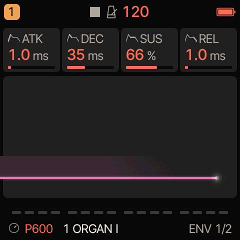
The ENV page.La page ENV.Die Seite ENV.La página ENV.La pagina ENV.ENV 页面。ENV ページ。
How the volume changes during a note. Press ENV.
Comment le volume évolue pendant une note. Appuyez sur ENV.
Wie sich die Lautstärke während einer Note verändert. Drücken Sie ENV.
Cómo cambia el volumen durante una nota. Pulse ENV.
Come cambia il volume durante una nota. Premere ENV.
一个音符内音量如何变化。按 ENV。
ノートの間に音量がどう変化するか。ENV を押します。
KnobBoutonReglerPotenciómetroManopola旋钮ノブ
What it doesCe qu’il faitFunktionQué haceFunzione功能機能
ValuesValeursWerteValoresValori取值値
ATK
ATTACK: time to reach full volume.ATTACK : temps pour atteindre le plein volume.ATTACK: Zeit bis zur vollen Lautstärke.ATTACK: tiempo para alcanzar el volumen máximo.ATTACK: tempo per raggiungere il volume massimo.ATTACK：达到最大音量所需时间。ATTACK：最大音量に達するまでの時間。
1 ms – 10 s1 ms – 10 s1 ms – 10 s1 ms – 10 s1 ms – 10 s1 ms – 10 秒1 ms – 10秒
DEC
DECAY: time to fall to the sustain level.DECAY : temps pour descendre au niveau de maintien.DECAY: Zeit bis zum Abfallen auf den Sustain-Pegel.DECAY: tiempo de caída hasta el nivel de sostenimiento.DECAY: tempo per scendere al livello di sustain.DECAY：回落到延音电平所需时间。DECAY：サステイン・レベルまで下がる時間。
1 ms – 10 s1 ms – 10 s1 ms – 10 s1 ms – 10 s1 ms – 10 s1 ms – 10 秒1 ms – 10秒
SUS
SUSTAIN: the volume held while the key is down.SUSTAIN : le volume tenu tant que la touche est enfoncée.SUSTAIN: die Lautstärke, die gehalten wird, solange die Taste gedrückt ist.SUSTAIN: el volumen mantenido mientras la tecla está pulsada.SUSTAIN: il volume mantenuto finché il tasto è premuto.SUSTAIN：按住琴键期间保持的音量。SUSTAIN：鍵盤を押している間保たれる音量。
0–100 %0–100 %0–100 %0–100 %0–100 %0–100%0–100%
REL
RELEASE: time to die away after the key is released.RELEASE : temps d’extinction après le relâchement.RELEASE: Zeit zum Verklingen nach dem Loslassen der Taste.RELEASE: tiempo que tarda en apagarse después de soltar la tecla.RELEASE: tempo di spegnimento dopo il rilascio del tasto.RELEASE：松开琴键后声音消失所需时间。RELEASE：鍵盤を離してから音が消えるまでの時間。
1 ms – 10 s1 ms – 10 s1 ms – 10 s1 ms – 10 s1 ms – 10 s1 ms – 10 秒1 ms – 10秒
ENV DEST 2/2ENV DEST 2/2ENV DEST 2/2ENV DEST 2/2ENV DEST 2/2ENV DEST 2/2ENV DEST 2/2
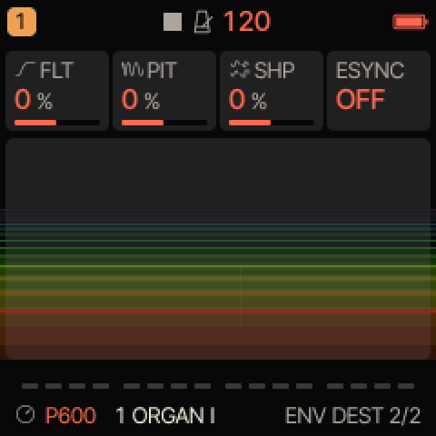
The ENV DEST page.La page ENV DEST.Die Seite ENV DEST.La página ENV DEST.La pagina ENV DEST.ENV DEST 页面。ENV DEST ページ。
The envelope also moves other settings, by a positive or negative amount.
L’enveloppe fait aussi bouger d’autres réglages, d’une quantité positive ou négative.
Die Hüllkurve bewegt auch andere Einstellungen, mit positivem oder negativem Wert.
La envolvente también mueve otros ajustes, con una cantidad positiva o negativa.
L’inviluppo muove anche altri parametri, di una quantità positiva o negativa.
该包络还可以按正或负的调制量驱动其他参数。
エンベロープで、ほかの設定をプラスまたはマイナスの量で動かすこともできます。
KnobBoutonReglerPotenciómetroManopola旋钮ノブ
What it doesCe qu’il faitFunktionQué haceFunzione功能機能
ValuesValeursWerteValoresValori取值値
FLT
To the cutoff.Vers la coupure.Auf die Grenzfrequenz.Hacia el corte.Verso la frequenza di taglio.调制截止频率。カットオフへ。
To the shape (on P600: the pulse widths).Vers la forme (sur P600 : les largeurs d’impulsion).Auf die Wellenform (bei P600: die Pulsbreiten).Hacia la forma (en P600: los anchos de pulso).Verso la forma (su P600: le larghezze d’impulso).调制波形（在 P600 上：脉冲宽度）。シェイプへ（P600 ではパルス幅）。
ON: ATK, DEC and REL become note values (1/16, 1/4, 2BAR…) that follow the tempo.ON : ATK, DEC et REL deviennent des valeurs de notes (1/16, 1/4, 2BAR…) qui suivent le tempo.ON: ATK, DEC und REL werden zu Notenwerten (1/16, 1/4, 2BAR…), die dem Tempo folgen.ON: ATK, DEC y REL se convierten en valores de nota (1/16, 1/4, 2BAR…) que siguen el tempo.ON: ATK, DEC e REL diventano valori di nota (1/16, 1/4, 2BAR…) che seguono il tempo.ON：ATK、DEC 和 REL 变为跟随速度的音符时值（1/16、1/4、2BAR…）。ON：ATK、DEC、REL がテンポに追従する音価（1/16、1/4、2BAR…）になります。
OFF / ONOFF / ONOFF / ONOFF / ONOFF / ONOFF / ONOFF / ON
No sound at all? SUSTAIN at 0 % with a very short DECAY gives a click and nothing else; raise SUSTAIN or DECAY.Plus aucun son ? SUSTAIN à 0 % avec un DECAY très court ne donne qu’un clic ; montez SUSTAIN ou DECAY.Überhaupt kein Ton? SUSTAIN auf 0 % mit sehr kurzem DECAY ergibt ein Klicken und sonst nichts; erhöhen Sie SUSTAIN oder DECAY.¿No hay ningún sonido? SUSTAIN a 0 % con un DECAY muy corto da un clic y nada más; suba SUSTAIN o DECAY.Nessun suono? SUSTAIN a 0 % con un DECAY molto breve dà un clic e nient’altro; alzare SUSTAIN o DECAY.完全没有声音？SUSTAIN 为 0% 且 DECAY 极短时，只会发出一声咔嗒；请调高 SUSTAIN 或 DECAY。まったく音が出ない？ SUSTAIN が0% で DECAY が非常に短いと、クリック音しか出ません。SUSTAIN か DECAY を上げてください。
The sound never stops? RELEASE is very long: lower it.Le son ne s’arrête plus ? RELEASE est très long : baissez-le.Der Klang hört nie auf? RELEASE ist sehr lang: Verringern Sie es.¿El sonido no se detiene nunca? RELEASE es muy largo: bájelo.Il suono non si ferma mai? RELEASE è molto lungo: abbassarlo.声音一直不停？RELEASE 太长：请调低。音が止まらない？ RELEASE が非常に長くなっています。下げてください。
On P600, the filter has its own envelope on EDIT › FLT ENV (chapter 8); ENV DEST › FLT adds the amplifier envelope on top.Sur P600, le filtre a sa propre enveloppe dans EDIT › FLT ENV (chapitre 8) ; ENV DEST › FLT y ajoute l’enveloppe d’amplitude.Bei P600 hat das Filter seine eigene Hüllkurve unter EDIT › FLT ENV (Kapitel 8); ENV DEST › FLT fügt die Verstärkerhüllkurve noch hinzu.En P600, el filtro tiene su propia envolvente en EDIT › FLT ENV (capítulo 8); ENV DEST › FLT añade además la envolvente del amplificador.Su P600, il filtro ha il proprio inviluppo in EDIT › FLT ENV (capitolo 8); ENV DEST › FLT vi aggiunge l’inviluppo dell’amplificatore.在 P600 上，滤波器在 EDIT › FLT ENV 有自己的包络（第8章）；ENV DEST › FLT 会在此基础上叠加放大器包络。P600 では、フィルターには EDIT › FLT ENV に専用のエンベロープがあります（第8章）。ENV DEST › FLT はその上にアンプ・エンベロープを加えます。
LFO: the slow movementLFO : le mouvement lentLFO: die langsame BewegungLFO: el movimiento lentoLFO: il movimento lentoLFO：缓慢的运动LFO：ゆっくりとした動き
LFO 1/4LFO 1/4LFO 1/4LFO 1/4LFO 1/4LFO 1/4LFO 1/4
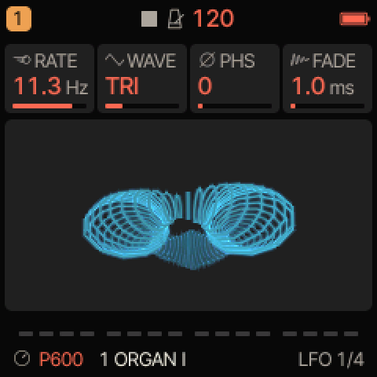
The LFO page.La page LFO.Die Seite LFO.La página LFO.La pagina LFO.LFO 页面。LFO ページ。
A slow wave that moves other settings up and down. Press LFO.
Une onde lente qui fait monter et descendre d’autres réglages. Appuyez sur LFO.
Eine langsame Schwingung, die andere Einstellungen auf und ab bewegt. Drücken Sie LFO.
Una onda lenta que hace subir y bajar otros ajustes. Pulse LFO.
Un’onda lenta che fa salire e scendere altri parametri. Premere LFO.
一个让其他参数上下起伏的缓慢波形。按 LFO。
ほかの設定を上下に動かす、ゆっくりとした波です。LFO を押します。
KnobBoutonReglerPotenciómetroManopola旋钮ノブ
What it doesCe qu’il faitFunktionQué haceFunzione功能機能
ValuesValeursWerteValoresValori取值値
RATE
Its speed. Dimmed when LFO 2 › SYNC follows the tempo.Sa vitesse. Grisée quand LFO 2 › SYNC suit le tempo.Seine Geschwindigkeit. Abgedunkelt, wenn LFO 2 › SYNC dem Tempo folgt.Su velocidad. Atenuado cuando LFO 2 › SYNC sigue el tempo.La sua velocità. Attenuata quando LFO 2 › SYNC segue il tempo.其速度。LFO 2 › SYNC 跟随速度时变暗。速さ。LFO 2 › SYNC がテンポに追従しているときは暗く表示されます。
Where the wave starts at each note.Où l’onde commence à chaque note.Wo die Schwingung bei jeder Note beginnt.Dónde empieza la onda en cada nota.Il punto da cui parte l’onda a ogni nota.每个音符时波形的起始位置。ノートごとに波がどこから始まるか。
0–1270–1270–1270–1270–1270–1270–127
FADE
Time for the LFO to come in after the note starts: a delayed vibrato.Temps d’arrivée du LFO après le début de la note : un vibrato retardé.Zeit, bis der LFO nach dem Notenbeginn einsetzt: ein verzögertes Vibrato.Tiempo que tarda el LFO en entrar después del inicio de la nota: un vibrato retardado.Tempo prima che l’LFO entri dopo l’inizio della nota: un vibrato ritardato.音符开始后 LFO 介入所需时间：延迟颤音。ノートが始まってから LFO がかかり始めるまでの時間：ディレイド・ビブラート。
1 ms – 10 s1 ms – 10 s1 ms – 10 s1 ms – 10 s1 ms – 10 s1 ms – 10 秒1 ms – 10秒
The LFO 2 page.La page LFO 2.Die Seite LFO 2.La página LFO 2.La pagina LFO 2.LFO 2 页面。LFO 2 ページ。
Tempo sync and behavior.
Synchronisation au tempo et comportement.
Tempo-Sync und Verhalten.
Sincronización al tempo y comportamiento.
Sincronizzazione al tempo e comportamento.
速度同步与行为方式。
テンポ同期と動作。
KnobBoutonReglerPotenciómetroManopola旋钮ノブ
What it doesCe qu’il faitFunktionQué haceFunzione功能機能
ValuesValeursWerteValoresValori取值値
SYNC
OFF (RATE sets the speed) or a note value, 4BAR to 1/32, that follows the tempo.OFF (RATE règle la vitesse) ou une valeur de note, de 4BAR à 1/32, qui suit le tempo.OFF (RATE bestimmt die Geschwindigkeit) oder ein Notenwert, 4BAR bis 1/32, der dem Tempo folgt.OFF (RATE ajusta la velocidad) o un valor de nota, de 4BAR a 1/32, que sigue el tempo.OFF (RATE imposta la velocità) o un valore di nota, da 4BAR a 1/32, che segue il tempo.OFF（由 RATE 设定速度）或跟随速度的音符时值，4BAR 至 1/32。OFF（RATE で速さを設定）、またはテンポに追従する音価（4BAR 〜1/32）。
NOTE: the wave restarts at each note. FREE: it runs freely.NOTE : l’onde repart à chaque note. FREE : elle tourne librement.NOTE: Die Schwingung startet bei jeder Note neu. FREE: Sie läuft frei.NOTE: la onda se reinicia en cada nota. FREE: corre libremente.NOTE: l’onda riparte a ogni nota. FREE: scorre liberamente.NOTE：每个音符时波形重新开始。FREE：自由运行。NOTE：ノートごとに波が再スタートします。FREE：自由に動き続けます。
BI: up and down around the setting. UNI: only above it.BI : au-dessus et au-dessous du réglage. UNI : seulement au-dessus.BI: auf und ab um die Einstellung herum. UNI: nur darüber.BI: arriba y abajo alrededor del ajuste. UNI: solo por encima.BI: sopra e sotto il valore impostato. UNI: solo sopra.BI：在设定值上下起伏。UNI：只在设定值之上。BI：設定値を中心に上下に動きます。UNI：設定値より上だけ。
Shape (on P600: the pulse widths): the shimmer of strings.Forme (sur P600 : les largeurs d’impulsion) : le scintillement des cordes.Wellenform (bei P600: die Pulsbreiten): das Schimmern von Streichern.Forma (en P600: los anchos de pulso): el brillo ondulante de las cuerdas.Forma (su P600: le larghezze d’impulso): lo scintillio degli archi.波形（在 P600 上：脉冲宽度）：弦乐般的闪烁感。シェイプ（P600 ではパルス幅）：ストリングスのきらめき。
What it doesCe qu’il faitFunktionQué haceFunzione功能機能
ValuesValeursWerteValoresValori取值値
SLOT
Which of the four slots the other knobs edit.L’emplacement que modifient les autres boutons rotatifs.Welchen der vier Slots die anderen Regler bearbeiten.Cuál de las cuatro ranuras editan los demás potenciómetros.Quale dei quattro slot modificano le altre manopole.其他旋钮所编辑的是四个槽位中的哪一个。ほかのノブで編集する4つのスロットのうちのどれか。
1–41–41–41–41–41–41–4
SRC
The source: OFF, LFO, ENV, VEL (velocity), KEY (the note), RAND (random per note), MODW (mod wheel), AT (aftertouch), EXPR (expression pedal), S&H, SLEW (a smoothed S&H).La source : OFF, LFO, ENV, VEL (vélocité), KEY (la note), RAND (au hasard à chaque note), MODW (molette), AT (aftertouch), EXPR (pédale d’expression), S&H, SLEW (un S&H adouci).Die Quelle: OFF, LFO, ENV, VEL (Anschlagstärke), KEY (die Note), RAND (zufällig pro Note), MODW (Modulationsrad), AT (Aftertouch), EXPR (Expression-Pedal), S&H, SLEW (ein geglättetes S&H).La fuente: OFF, LFO, ENV, VEL (velocidad), KEY (la nota), RAND (aleatorio por nota), MODW (rueda de modulación), AT (aftertouch), EXPR (pedal de expresión), S&H, SLEW (un S&H suavizado).La sorgente: OFF, LFO, ENV, VEL (velocity), KEY (la nota), RAND (casuale per nota), MODW (rotella di modulazione), AT (aftertouch), EXPR (pedale d’espressione), S&H, SLEW (un S&H smussato).调制源：OFF、LFO、ENV、VEL（力度）、KEY（音符）、RAND（每个音符随机）、MODW（调制轮）、AT（触后）、EXPR（表情踏板）、S&H、SLEW（平滑后的 S&H）。ソース：OFF、LFO、ENV、VEL（ベロシティ）、KEY（ノート）、RAND（ノートごとのランダム）、MODW（モジュレーション・ホイール）、AT（アフタータッチ）、EXPR（エクスプレッション・ペダル）、S&H、SLEW（滑らかにした S&H）。
The destination: PITCH, CUT, SHP, AMP, PAN, the effect sends DIST CHO DLY REV, RATE (the LFO’s speed), VIB (vibrato depth), E1 to E8 (the engine’s own settings), DEPTH (the LFO’s depth), VEL (the note’s velocity), TIME (a step plays slightly late).La destination : PITCH, CUT, SHP, AMP, PAN, les envois d’effets DIST CHO DLY REV, RATE (vitesse du LFO), VIB (profondeur du vibrato), E1 à E8 (les réglages du moteur), DEPTH (profondeur du LFO), VEL (vélocité de la note), TIME (un pas joue légèrement en retard).Das Ziel: PITCH, CUT, SHP, AMP, PAN, die Effekt-Sends DIST CHO DLY REV, RATE (die Geschwindigkeit des LFO), VIB (Vibrato-Tiefe), E1 bis E8 (die eigenen Einstellungen der Klangerzeugung), DEPTH (die Tiefe des LFO), VEL (die Anschlagstärke der Note), TIME (ein Step spielt leicht verspätet).El destino: PITCH, CUT, SHP, AMP, PAN, los envíos de efectos DIST CHO DLY REV, RATE (la velocidad del LFO), VIB (profundidad del vibrato), E1 a E8 (los ajustes propios del motor), DEPTH (la profundidad del LFO), VEL (la velocidad de la nota), TIME (un paso suena ligeramente retrasado).La destinazione: PITCH, CUT, SHP, AMP, PAN, le mandate agli effetti DIST CHO DLY REV, RATE (la velocità dell’LFO), VIB (profondità del vibrato), da E1 a E8 (i parametri propri del motore), DEPTH (la profondità dell’LFO), VEL (la velocity della nota), TIME (un passo suona leggermente in ritardo).目标：PITCH、CUT、SHP、AMP、PAN，效果发送 DIST CHO DLY REV，RATE（LFO 的速度），VIB（颤音深度），E1 至 E8（引擎自身的参数），DEPTH（LFO 的深度），VEL（音符的力度），TIME（某一步稍微延后演奏）。変調先：PITCH、CUT、SHP、AMP、PAN、エフェクト・センドの DIST CHO DLY REV、RATE（LFO の速さ）、VIB（ビブラートの深さ）、E1 〜 E8（エンジン固有の設定）、DEPTH（LFO の深さ）、VEL（ノートのベロシティ）、TIME（ステップがわずかに遅れて鳴る）。
The amount, positive or negative.La quantité, positive ou négative.Der Wert, positiv oder negativ.La cantidad, positiva o negativa.La quantità, positiva o negativa.调制量，可正可负。量（プラスまたはマイナス）。
On a P600 track, slots 3 and 4 belong to the sound: VEL › CUT (EXTRAS › VEL>FLT) and MODW › DEPTH (EXTRAS › WHEEL). Loading a P600 sound resets them. Slots 1 and 2 are free for your own modulations; loading a sound clears them too. Only a USER place or a project keeps them, not a P600 place.Sur une piste P600, les emplacements 3 et 4 appartiennent au son : VEL › CUT (EXTRAS › VEL>FLT) et MODW › DEPTH (EXTRAS › WHEEL). Chaque chargement de son P600 les réinitialise. Les emplacements 1 et 2 sont libres pour les vôtres ; tout chargement de son les efface aussi. Seuls un emplacement USER ou un projet les gardent, pas une place P600.Auf einer P600-Spur gehören die Slots 3 und 4 zum Sound: VEL › CUT (EXTRAS › VEL>FLT) und MODW › DEPTH (EXTRAS › WHEEL). Das Laden eines P600-Sounds setzt sie zurück. Die Slots 1 und 2 sind frei für Ihre eigenen Modulationen; jedes Laden eines Sounds löscht sie ebenfalls. Nur ein USER-Speicherplatz oder ein Projekt bewahrt sie, kein P600-Platz.En una pista P600, las ranuras 3 y 4 pertenecen al sonido: VEL › CUT (EXTRAS › VEL>FLT) y MODW › DEPTH (EXTRAS › WHEEL). Cargar un sonido P600 las restablece. Las ranuras 1 y 2 quedan libres para sus propias modulaciones; cualquier carga de sonido también las borra. Solo una posición USER o un proyecto las conserva, no una posición P600.Su una traccia P600, gli slot 3 e 4 appartengono al suono: VEL › CUT (EXTRAS › VEL>FLT) e MODW › DEPTH (EXTRAS › WHEEL). Il caricamento di un suono P600 li reimposta. Gli slot 1 e 2 sono liberi per le proprie modulazioni; anche questi vengono cancellati da qualsiasi caricamento di suono. Solo una posizione USER o un progetto li conserva, non una posizione P600.在 P600 音轨上，槽位 3 和 4 属于音色：VEL › CUT（EXTRAS › VEL>FLT）和 MODW › DEPTH（EXTRAS › WHEEL）。载入 P600 音色会重置它们。槽位 1 和 2 可供您自由设置调制；任何音色载入同样会清空它们。只有 USER 位置或工程才能保留它们，P600 位置不能。P600 トラックでは、スロット3と4はサウンドの一部です：VEL › CUT（EXTRAS › VEL>FLT）と MODW › DEPTH（EXTRAS › WHEEL）。P600 サウンドを読み込むとリセットされます。スロット1と2は自分のモジュレーションに自由に使えますが、サウンドを読み込むとこれらも消去されます。保持されるのは USER 枠かプロジェクトだけで、P600 枠には保存されません。
MODW, AT and EXPR come from a MIDI keyboard (or SELECT = MODW for the mod wheel). Until a value is received, MODW and AT are at 0 and EXPR at full.MODW, AT et EXPR viennent d’un clavier MIDI (ou de SELECT = MODW pour la molette). Tant que rien n’est reçu, MODW et AT valent 0 et EXPR le maximum.MODW, AT und EXPR kommen von einem MIDI-Keyboard (oder SELECT = MODW für das Modulationsrad). Solange kein Wert empfangen wurde, stehen MODW und AT auf 0 und EXPR auf Maximum.MODW, AT y EXPR proceden de un teclado MIDI (o de SELECT = MODW para la rueda de modulación). Hasta que se recibe un valor, MODW y AT están a 0 y EXPR al máximo.MODW, AT ed EXPR provengono da una tastiera MIDI (o da SELECT = MODW per la rotella di modulazione). Finché non si riceve un valore, MODW e AT sono a 0 ed EXPR al massimo.MODW、AT 和 EXPR 来自 MIDI 键盘（调制轮也可用 SELECT = MODW）。在收到数值之前，MODW 和 AT 为 0，EXPR 为最大。MODW、AT、EXPR は MIDI キーボードから送られます（モジュレーション・ホイールは SELECT = MODW でも可）。値を受信するまでは、MODW と AT は0、EXPR は最大です。
ENV › DEPTH gives an LFO that follows the note’s envelope; LFO › RATE gives an LFO whose speed changes.ENV › DEPTH donne un LFO qui suit l’enveloppe de la note ; LFO › RATE, un LFO dont la vitesse change.ENV › DEPTH ergibt einen LFO, der der Hüllkurve der Note folgt; LFO › RATE ergibt einen LFO, dessen Geschwindigkeit sich ändert.ENV › DEPTH da un LFO que sigue la envolvente de la nota; LFO › RATE da un LFO cuya velocidad cambia.ENV › DEPTH dà un LFO che segue l’inviluppo della nota; LFO › RATE dà un LFO la cui velocità cambia.ENV › DEPTH 可得到跟随音符包络的 LFO；LFO › RATE 可得到速度变化的 LFO。ENV › DEPTH にすると、ノートのエンベロープに沿ってかかる LFO になります。LFO › RATE にすると、速さが変化する LFO になります。
MOMENTARY: changes that snap backMOMENTARY : des changements qui reviennentMOMENTARY: Änderungen, die zurückspringenMOMENTARY: cambios que vuelven a su sitioMOMENTARY: modifiche che tornano indietroMOMENTARY：会自动复原的修改MOMENTARY：元に戻る一時的な変更
On HOME, a sound or effect page, or MIXER: hold LFO and turn any of KNOB 1 to 4 (band: MOMENTARY [OCT+] KEEP).Sur HOME, sur une page de son ou d’effet, ou sur MIXER : maintenez LFO et tournez KNOB 1 à 4 (bandeau : MOMENTARY [OCT+] KEEP).Auf HOME, einer Klang- oder Effektseite oder MIXER: Halten Sie LFO und drehen Sie an einem der Regler KNOB 1 bis 4 (Band: MOMENTARY [OCT+] KEEP).En HOME, en una página de sonido o de efectos, o en MIXER: mantenga pulsado LFO y gire cualquiera de KNOB 1 a 4 (banda: MOMENTARY [OCT+] KEEP).Su HOME, su una pagina del suono o degli effetti, o su MIXER: tenere premuto LFO e ruotare una qualsiasi delle manopole da KNOB 1 a 4 (banda: MOMENTARY [OCT+] KEEP).在 HOME、音色或效果器页面，或 MIXER 上：按住 LFO 并旋转 KNOB 1 至 4 中的任意一个（消息条：MOMENTARY [OCT+] KEEP）。HOME、サウンドやエフェクトのページ、または MIXER で、LFO を長押ししながら KNOB 1 〜4 のいずれかを回します（バンド：MOMENTARY [OCT+] KEEP）。
Let go of LFO: every value returns to where it was (BACK).Relâchez LFO : chaque valeur revient comme avant (BACK).Lassen Sie LFO los: Jeder Wert kehrt an seine vorherige Stelle zurück (BACK).Suelte LFO: todos los valores vuelven a donde estaban (BACK).Rilasciare LFO: ogni valore torna dov’era (BACK).松开 LFO：所有数值都恢复原状（BACK）。LFO を離すと、すべての値が元に戻ります（BACK）。
To keep the changes, press OCT+ while still holding LFO (KEPT).Pour conserver les changements, appuyez sur OCT+ sans relâcher LFO (KEPT).Um die Änderungen zu behalten, drücken Sie OCT+, ohne LFO loszulassen (KEPT).Para conservar los cambios, pulse OCT+ sin soltar LFO (KEPT).Per conservare le modifiche, premere OCT+ senza rilasciare LFO (KEPT).要保留修改，请在不松开 LFO 的情况下按 OCT+（KEPT）。変更を残すには、LFO を押したまま OCT+ を押します（KEPT）。
Up to eight values at once (beyond that: MOMENTARY FULL). They are not recorded as automation and do not create an undo step.Jusqu’à huit valeurs à la fois (MOMENTARY FULL au-delà). Elles ne sont pas enregistrées en automation et ne créent pas d’annulation.Bis zu acht Werte gleichzeitig (darüber hinaus: MOMENTARY FULL). Sie werden nicht als Automation aufgenommen und erzeugen keinen Rückgängig-Schritt.Hasta ocho valores a la vez (más allá: MOMENTARY FULL). No se graban como automatización y no crean ningún paso de deshacer.Fino a otto valori alla volta (oltre: MOMENTARY FULL). Non vengono registrati come automazione e non creano un passo di annullamento.最多可同时修改八个数值（超过则显示 MOMENTARY FULL）。这些修改不会录制为自动化，也不会产生撤销步骤。一度に変更できる値は最大8つです（それを超えると MOMENTARY FULL）。オートメーションとしては記録されず、アンドゥのステップも作られません。
Opening the menu, a dialog or a quick screen, or loading another sound on that track, also reverts them.Ouvrir le menu, un dialogue, un écran rapide ou charger un autre son sur cette piste annule aussi ces changements.Das Öffnen des Menüs, eines Dialogs oder einer Schnellansicht sowie das Laden eines anderen Sounds auf dieser Spur setzt sie ebenfalls zurück.Abrir el menú, un cuadro de diálogo o una pantalla rápida, o cargar otro sonido en esa pista, también los revierte.Anche aprire il menu, una finestra di dialogo o una schermata rapida, o caricare un altro suono su quella traccia, li fa tornare indietro.打开菜单、对话框或快捷屏幕，或在该音轨上载入另一个音色，也会使其复原。メニュー、ダイアログ、クイック画面を開いたり、そのトラックに別のサウンドを読み込んだりしても、値は元に戻ります。
A tap on LFO after a MOMENTARY turn does not change the page.Un appui sur LFO après un réglage en MOMENTARY ne change pas de page.Ein Tippen auf LFO nach einer MOMENTARY-Drehung wechselt die Seite nicht.Una pulsación en LFO después de un giro MOMENTARY no cambia de página.Un tocco su LFO dopo una rotazione MOMENTARY non cambia pagina.MOMENTARY 旋转之后单击 LFO 不会翻页。MOMENTARY 操作のあとに LFO を軽く押しても、ページは切り替わりません。
Felucca · Felucca’s features page describes the envelope, the LFO and the modulation matrix of the original firmware. Details: github.com/hugelton/Felucca/wiki/Features (in English).Felucca · La page des fonctions de Felucca décrit l’enveloppe, le LFO et la matrice de modulation du firmware d’origine. Détails : github.com/hugelton/Felucca/wiki/Features (en anglais).Felucca · Die Seite Features von Felucca beschreibt die Hüllkurve, den LFO und die Modulationsmatrix der ursprünglichen Firmware. Details: github.com/hugelton/Felucca/wiki/Features (auf Englisch).Felucca · La página de funciones de Felucca describe la envolvente, el LFO y la matriz de modulación del firmware original. Detalles: github.com/hugelton/Felucca/wiki/Features (en inglés).Felucca · La pagina delle funzioni di Felucca descrive l’inviluppo, l’LFO e la matrice di modulazione del firmware originale. Dettagli: github.com/hugelton/Felucca/wiki/Features (in inglese).Felucca · Felucca 的功能页面介绍了原版固件的包络、LFO 和调制矩阵。详情：github.com/hugelton/Felucca/wiki/Features（英文）。Felucca · Felucca の機能紹介ページでは、オリジナル・ファームウェアのエンベロープ、LFO、モジュレーション・マトリクスについて説明しています。詳細：github.com/hugelton/Felucca/wiki/Features（英語）。
10MORPH and MUTATEMORPH et MUTATEMORPH und MUTATEMORPH y MUTATEMORPH e MUTATEMORPH 与 MUTATEMORPH と MUTATE
EDIT › MORPH, page 8 of 11, on a P600 track.EDIT › MORPH, page 8 sur 11, sur une piste P600.EDIT › MORPH, Seite 8 von 11, auf einer P600-Spur.EDIT › MORPH, página 8 de 11, en una pista P600.EDIT › MORPH, pagina 8 di 11, su una traccia P600.P600 音轨上的 EDIT › MORPH，第 8 页（共 11 页）。P600 トラックの EDIT › MORPH（11ページ中8ページ目）。
MORPH gradually turns one P600 sound into another with a single knob. MUTATE creates a variation of the current sound in one press, close to the original or far from it. Both are on the same page, on P600 tracks only.
MORPH transforme progressivement un son P600 en un autre, avec un seul bouton rotatif. MUTATE crée une variante du son actuel en un appui, proche de l’original ou éloignée. Les deux sont sur la même page, sur les pistes P600 seulement.
MORPH verwandelt mit einem einzigen Regler einen P600-Sound schrittweise in einen anderen. MUTATE erzeugt mit einem Druck eine Variante des aktuellen Sounds, nah am Original oder weit davon entfernt. Beides befindet sich auf derselben Seite, nur auf P600-Spuren.
MORPH transforma progresivamente un sonido P600 en otro con un solo potenciómetro. MUTATE crea una variación del sonido actual con una sola pulsación, cercana al original o alejada de él. Ambos están en la misma página, solo en las pistas P600.
MORPH trasforma gradualmente un suono P600 in un altro con una sola manopola. MUTATE crea una variante del suono attuale con una sola pressione, vicina all’originale o lontana. Entrambi si trovano sulla stessa pagina, solo sulle tracce P600.
Select a P600 track and press EDIT until MORPH 8/11 appears.Choisissez une piste P600 et appuyez sur EDIT jusqu’à MORPH 8/11.Wählen Sie eine P600-Spur und drücken Sie EDIT, bis MORPH 8/11 erscheint.Seleccione una pista P600 y pulse EDIT hasta que aparezca MORPH 8/11.Selezionare una traccia P600 e premere EDIT finché non compare MORPH 8/11.选择一个 P600 音轨，连续按 EDIT 直到出现 MORPH 8/11。P600 トラックを選び、MORPH 8/11 が表示されるまで EDIT を押します。
KnobBoutonReglerPotenciómetroManopola旋钮ノブ
What it doesCe qu’il faitFunktionQué haceFunzione功能機能
ValuesValeursWerteValoresValori取值値
KNOB 1
SOUND A: the starting sound (the track’s sound). Turn it to load the next or previous P600 sound (after 255 comes 1).SOUND A : le son de départ (le son de la piste). Tournez-le pour charger le son P600 suivant ou précédent (après 255 vient 1).SOUND A: der Ausgangssound (der Sound der Spur). Drehen lädt den nächsten oder vorherigen P600-Sound (nach 255 kommt 1).SOUND A: el sonido de partida (el sonido de la pista). Gírelo para cargar el sonido P600 siguiente o anterior (después del 255 viene el 1).SOUND A: il suono di partenza (il suono della traccia). Ruotarla per caricare il suono P600 successivo o precedente (dopo il 255 viene l’1).SOUND A：起始音色（音轨的音色）。旋转可载入下一个或上一个 P600 音色（255 之后是 1）。SOUND A：出発点のサウンド（トラックのサウンド）です。回すと次または前の P600 サウンドを読み込みます（255 の次は1）。
1–2551–2551–2551–2551–2551–2551–255
KNOB 2
SOUND B: the sound to reach, any of the 255 places (after 255 comes 1).SOUND B : le son à atteindre, n’importe laquelle des 255 places (après 255 vient 1).SOUND B: der Zielsound, einer der 255 Plätze (nach 255 kommt 1).SOUND B: el sonido al que llegar, cualquiera de las 255 posiciones (después del 255 viene el 1).SOUND B: il suono da raggiungere, una qualsiasi delle 255 posizioni (dopo il 255 viene l’1).SOUND B：目标音色，可以是 255 个位置中的任意一个（255 之后是 1）。SOUND B：到達するサウンド。255 の枠のどれでも選べます（255 の次は1）。
1–2551–2551–2551–2551–2551–2551–255
KNOB 3
MORPH: 0 % is A, 100 % is B, everything in between is a mixture.MORPH : 0 % correspond à A, 100 % à B ; entre les deux, un mélange.MORPH: 0 % ist A, 100 % ist B, alles dazwischen ist eine Mischung.MORPH: 0 % es A, 100 % es B; todo lo intermedio es una mezcla.MORPH: 0 % è A, 100 % è B, tutto ciò che sta in mezzo è una miscela.MORPH：0% 为 A，100% 为 B，两者之间为混合。MORPH：0% が A、100% が B、その間はすべて混ざり合ったサウンドです。
0–100 %0–100 %0–100 %0–100 %0–100 %0–100%0–100%
KNOB 4
MUTATE: how far a press of OCT+ moves the sound away (31 % when the page opens).MUTATE : jusqu’où un appui sur OCT+ éloigne le son (31 % à l’ouverture de la page).MUTATE: wie weit ein Druck auf OCT+ den Sound verändert (31 % beim Öffnen der Seite).MUTATE: cuánto aleja el sonido una pulsación de OCT+ (31 % al abrir la página).MUTATE: quanto una pressione di OCT+ allontana il suono (31 % all’apertura della pagina).MUTATE：按一次 OCT+ 使声音偏离的幅度（页面打开时为 31%）。MUTATE：OCT+ を1回押したときにサウンドをどこまで変化させるか（ページを開いたときは31%）。
1–100 %1–100 %1–100 %1–100 %1–100 %1–100%1–100%
Morphing, step by stepMorpher, pas à pasMorphen, Schritt für SchrittTransformar, paso a pasoIl morphing, passo per passo分步过渡モーフィングの手順
Choose A with KNOB 1 (or keep the track’s sound) and B with KNOB 2. At 0 %, you hear A.Choisissez A avec KNOB 1 (ou gardez le son de la piste) et B avec KNOB 2. À 0 %, vous entendez A.Wählen Sie A mit KNOB 1 (oder behalten Sie den Sound der Spur) und B mit KNOB 2. Bei 0 % hören Sie A.Elija A con KNOB 1 (o conserve el sonido de la pista) y B con KNOB 2. A 0 %, oye A.Scegliere A con KNOB 1 (o mantenere il suono della traccia) e B con KNOB 2. A 0 % si sente A.用 KNOB 1 选择 A（或保留音轨的音色），用 KNOB 2 选择 B。0% 时您听到的是 A。KNOB 1 で A を選び（またはトラックのサウンドのまま）、KNOB 2 で B を選びます。0% では A が聞こえます。
Play and turn KNOB 3 slowly: the sound moves from A toward B. Continuous settings glide; switches (VOICES, KBD, the LFO’s shape…) change one by one, each at its own point between 20 and 80 %, and the waveforms, SYNC and the Poly-Mod destinations crossfade. At 100 % you have B completely, its effect sends included; settings B does not hold (INSERT, MOD slots 1–2, LFO 2, ENV DEST) go back to their defaults.Jouez et tournez KNOB 3 lentement : le son va de A vers B. Les réglages continus glissent ; les commutateurs (VOICES, KBD, la forme du LFO…) changent un par un, chacun à son propre point entre 20 et 80 %, et les formes d’onde, SYNC et les destinations de la Poly-Mod passent en fondu. À 100 %, vous avez B en entier, envois d’effets compris ; les réglages que B ne contient pas (INSERT, emplacements de MOD 1 et 2, LFO 2, ENV DEST) reviennent à leurs valeurs d’origine.Spielen Sie und drehen Sie langsam an KNOB 3: Der Klang bewegt sich von A in Richtung B. Stufenlose Einstellungen gleiten; Schalter (VOICES, KBD, die Wellenform des LFO…) wechseln einer nach dem anderen, jeder an seinem eigenen Punkt zwischen 20 und 80 %, und die Wellenformen, SYNC und die Poly-Mod-Ziele werden überblendet. Bei 100 % haben Sie vollständig B, einschließlich seiner Effekt-Sends; Einstellungen, die B nicht enthält (INSERT, MOD-Slots 1–2, LFO 2, ENV DEST), kehren zu ihren Standardwerten zurück.Toque y gire KNOB 3 lentamente: el sonido se desplaza de A hacia B. Los ajustes continuos se deslizan; los conmutadores (VOICES, KBD, la forma del LFO…) cambian uno a uno, cada uno en su propio punto entre el 20 y el 80 %, y las formas de onda, SYNC y los destinos del Poly-Mod hacen un fundido cruzado. Al 100 % tiene B por completo, incluidos sus envíos de efectos; los ajustes que B no contiene (INSERT, ranuras MOD 1–2, LFO 2, ENV DEST) vuelven a sus valores por defecto.Suonare e ruotare lentamente KNOB 3: il suono si sposta da A verso B. I parametri continui scivolano; gli interruttori (VOICES, KBD, la forma dell’LFO…) cambiano uno alla volta, ciascuno in un proprio punto tra il 20 e l’80 %, e le forme d’onda, SYNC e le destinazioni del Poly-Mod passano in dissolvenza incrociata. Al 100 % si ha B completamente, mandate agli effetti comprese; i parametri che B non contiene (INSERT, slot MOD 1–2, LFO 2, ENV DEST) tornano ai valori predefiniti.一边演奏一边缓慢旋转 KNOB 3：声音从 A 向 B 移动。连续参数平滑过渡；开关类参数（VOICES、KBD、LFO 的波形…）逐个切换，各自在 20% 至 80% 之间的某一点改变，波形、SYNC 和 Poly-Mod 目标则交叉淡化。到 100% 时完全是 B，包括其效果发送量；B 不包含的参数（INSERT、MOD 槽位 1–2、LFO 2、ENV DEST）恢复为默认值。演奏しながら KNOB 3 をゆっくり回すと、サウンドが A から B へ移っていきます。連続的な設定は滑らかに変化し、スイッチ類（VOICES、KBD、LFO の波形…）は20 〜80% の間のそれぞれのポイントで1つずつ切り替わり、波形、SYNC、Poly-Mod の変調先はクロスフェードします。100% で完全に B になり、エフェクト・センドも含まれます。B が持たない設定（INSERT、MOD スロット1〜2、LFO 2、ENV DEST）は初期値に戻ります。
Stop wherever you like: the sound you hear becomes the track’s sound.Arrêtez-vous où vous voulez : le son entendu devient celui de la piste.Halten Sie an, wo Sie möchten: Der Klang, den Sie hören, wird zum Sound der Spur.Deténgase donde quiera: el sonido que oye pasa a ser el sonido de la pista.Fermarsi dove si vuole: il suono che si sente diventa il suono della traccia.随时可以停下：您听到的声音即成为音轨的音色。好きなところで止めてください。聞こえているサウンドがトラックのサウンドになります。
Back to 0 %: exactly A again.Retour à 0 % : exactement A.Zurück auf 0 %: wieder genau A.Vuelta a 0 %: de nuevo exactamente A.Tornando a 0 %: di nuovo esattamente A.回到 0%：完全恢复为 A。0% に戻すと、正確に A に戻ります。
What the six bars showCe que montrent les six barresWas die sechs Balken zeigenLo que muestran las seis barrasCosa mostrano le sei barre六根条显示的内容6本のバーが示すもの
The bars show six of the settings that travel: CUT (cutoff), RES (resonance), ENV (filter envelope amount), MIX (the mixer), PW (A’s pulse width) and PM (POLY MOD’s FILTER ENV amount). Each bar shows the current value; above 0 %, a white mark shows A and a colored mark B. The slider above shows the MORPH position.
Six des réglages qui voyagent, en barres : CUT (coupure), RES (résonance), ENV (quantité d’enveloppe du filtre), MIX (le mixeur), PW (largeur d’impulsion de A) et PM (quantité FILTER ENV de POLY MOD). Chaque barre montre la valeur actuelle ; au-dessus de 0 %, un repère blanc indique A et un repère de couleur B. Le curseur au-dessus montre la position de MORPH.
Die Balken zeigen sechs der Einstellungen, die sich verändern: CUT (Grenzfrequenz), RES (Resonanz), ENV (Intensität der Filterhüllkurve), MIX (der Mixer), PW (Pulsbreite von A) und PM (Wert FILTER ENV von POLY MOD). Jeder Balken zeigt den aktuellen Wert; über 0 % zeigt eine weiße Markierung A und eine farbige B. Der Schieberegler darüber zeigt die MORPH-Position.
Las barras muestran seis de los ajustes que se desplazan: CUT (corte), RES (resonancia), ENV (cantidad de envolvente del filtro), MIX (el mezclador), PW (ancho de pulso de A) y PM (cantidad FILTER ENV de POLY MOD). Cada barra muestra el valor actual; por encima de 0 %, una marca blanca indica A y una de color, B. El deslizador de arriba muestra la posición de MORPH.
Le barre mostrano sei dei parametri che si spostano: CUT (frequenza di taglio), RES (risonanza), ENV (quantità dell’inviluppo del filtro), MIX (il mixer), PW (larghezza d’impulso di A) e PM (la quantità FILTER ENV di POLY MOD). Ogni barra mostra il valore attuale; sopra lo 0 %, un segno bianco indica A e uno colorato B. Il cursore in alto mostra la posizione di MORPH.
バーは、変化する設定のうち6つを表示します：CUT（カットオフ）、RES（レゾナンス）、ENV（フィルター・エンベロープの量）、MIX（ミキサー）、PW（A のパルス幅）、PM（POLY MOD の FILTER ENV の量）。各バーは現在の値を示します。0% より上では、白い印が A、色の印が B を示します。上のスライダーは MORPH の位置を示します。
Mutating, step by stepMuter, pas à pasMutieren, Schritt für SchrittMutar, paso a pasoLa mutazione, passo per passo分步变异ミューテーションの手順
Set the amount with KNOB 4: low for a close variation, high for a very different sound.Réglez la quantité avec KNOB 4 : faible, une variante proche ; forte, un son très différent.Stellen Sie den Wert mit KNOB 4 ein: niedrig für eine nahe Variante, hoch für einen ganz anderen Klang.Ajuste la cantidad con KNOB 4: baja para una variación cercana, alta para un sonido muy diferente.Impostare la quantità con KNOB 4: bassa per una variante vicina, alta per un suono molto diverso.用 KNOB 4 设定幅度：低则得到相近的变体，高则得到截然不同的声音。KNOB 4 で量を設定します。低くすると近いバリエーション、高くすると大きく異なるサウンドになります。
Press OCT+ (the OCT+ MUTATE keycap, bottom left).Appuyez sur OCT+ (la touche OCT+ MUTATE, en bas à gauche).Drücken Sie OCT+ (das Tastensymbol OCT+ MUTATE, unten links).Pulse OCT+ (la tecla OCT+ MUTATE, abajo a la izquierda).Premere OCT+ (il tasto OCT+ MUTATE, in basso a sinistra).按 OCT+（左下角的 OCT+ MUTATE 按键）。OCT+ を押します（左下の OCT+ MUTATE キーキャップ）。
Press OCT+ again for another variation. Each press starts from the sound you hear.Appuyez de nouveau sur OCT+ pour une autre variante. Chaque appui part du son entendu.Drücken Sie erneut OCT+ für eine weitere Variante. Jeder Druck geht von dem Sound aus, den Sie hören.Pulse OCT+ de nuevo para obtener otra variación. Cada pulsación parte del sonido que oye.Premere di nuovo OCT+ per un’altra variante. Ogni pressione parte dal suono che si sente.再按一次 OCT+ 生成另一个变体。每次按下都从您当前听到的声音出发。もう一度 OCT+ を押すと、別のバリエーションが作られます。押すたびに、いま聞こえているサウンドが出発点になります。
Went one mutation too far? Hold SAVE for 1 s: the sound before the last mutation comes back.Une mutation de trop ? Maintenez SAVE 1 s : le son d’avant la dernière mutation revient.Eine Mutation zu weit gegangen? Halten Sie SAVE 1 s gedrückt: Der Sound vor der letzten Mutation kommt zurück.¿Se ha pasado de una mutación? Mantenga pulsado SAVE 1 s: vuelve el sonido anterior a la última mutación.Una mutazione di troppo? Tenere premuto SAVE per 1 s: ritorna il suono precedente all’ultima mutazione.变异过头了？按住 SAVE 1 秒：最后一次变异之前的音色就会回来。ミューテーションをやりすぎた？ SAVE を1秒長押しすると、最後のミューテーションの前のサウンドに戻ります。
MUTATE changes the waveforms and pitches, the mixer, the filter and its envelope, the pulse widths, the fine tuning and the sync, the Poly-Mod, the amplifier envelope and the LFO’s speed, each by a random amount within what KNOB 4 allows. A mutation is never silent. After a mutation, MORPH goes back to 0 %: the mutated sound is the new A.
MUTATE modifie les formes d’onde et les hauteurs, le mixeur, le filtre et son enveloppe, les largeurs d’impulsion, l’accord fin et la synchro, la Poly-Mod, l’enveloppe d’amplitude et la vitesse du LFO, chacun d’une quantité au hasard dans la limite permise par KNOB 4. Une mutation n’est jamais muette. Après une mutation, MORPH revient à 0 % : le son muté devient le nouveau A.
MUTATE verändert die Wellenformen und Tonhöhen, den Mixer, das Filter und seine Hüllkurve, die Pulsbreiten, die Feinstimmung und Sync, die Poly-Mod, die Verstärkerhüllkurve und die Geschwindigkeit des LFO, jeweils um einen zufälligen Betrag innerhalb dessen, was KNOB 4 zulässt. Eine Mutation ist nie stumm. Nach einer Mutation springt MORPH auf 0 % zurück: Der mutierte Sound ist das neue A.
MUTATE cambia las formas de onda y las afinaciones, el mezclador, el filtro y su envolvente, los anchos de pulso, la afinación fina y la sincronización, el Poly-Mod, la envolvente del amplificador y la velocidad del LFO, cada uno en una cantidad aleatoria dentro de lo que permite KNOB 4. Una mutación nunca es muda. Después de una mutación, MORPH vuelve a 0 %: el sonido mutado es el nuevo A.
MUTATE modifica le forme d’onda e le intonazioni, il mixer, il filtro e il suo inviluppo, le larghezze d’impulso, l’accordatura fine e il sync, il Poly-Mod, l’inviluppo dell’amplificatore e la velocità dell’LFO, ciascuno di una quantità casuale entro quanto consente KNOB 4. Una mutazione non è mai muta. Dopo una mutazione, MORPH torna a 0 %: il suono mutato è il nuovo A.
SAVE › PLACE: in one of the 255 P600 places, replacing its sound (chapter 12).SAVE › PLACE : dans l’une des 255 places P600, en remplaçant le son qui s’y trouve (chapitre 12).SAVE › PLACE: auf einem der 255 P600-Plätze, anstelle des Sounds, der dort ist (Kapitel 12).SAVE › PLACE: en una de las 255 posiciones P600, sustituyendo su sonido (capítulo 12).SAVE › PLACE: in una delle 255 posizioni P600, al posto del suono che contiene (capitolo 12).SAVE › PLACE：存入 255 个 P600 位置之一，替换其中的音色（第12章）。SAVE › PLACE：255 の P600 枠のいずれかに、そこのサウンドと置き換えて保存します（第12章）。
SAVE › USER: in one of the 32 USER places, with a name of your choice (chapter 12).SAVE › USER : dans l’un des 32 emplacements USER, avec le nom de votre choix (chapitre 12).SAVE › USER: auf einem der 32 USER-Speicherplätze, mit einem Namen Ihrer Wahl (Kapitel 12).SAVE › USER: en una de las 32 posiciones USER, con el nombre que elija (capítulo 12).SAVE › USER: in una delle 32 posizioni USER, con un nome a scelta (capitolo 12).SAVE › USER：存入 32 个 USER 位置之一，名称由您自定（第12章）。SAVE › USER：32 の USER 枠のいずれかに、好きな名前をつけて保存します（第12章）。
Or keep it in a project, with the music (chapter 24).Ou conservez-le dans un projet, avec la musique (chapitre 24).Oder behalten Sie ihn in einem Projekt, zusammen mit der Musik (Kapitel 24).O consérvelo en un proyecto, con la música (capítulo 24).Oppure conservarlo in un progetto, insieme alla musica (capitolo 24).或者连同音乐一起保存在工程中（第24章）。または、音楽と一緒にプロジェクトに保存します（第24章）。
Good to knowBon à savoirGut zu wissenConviene saberDa sapere须知知っておきたいこと
Turning KNOB 3 again replaces any setting changed by hand on another page in the meantime.Tourner de nouveau KNOB 3 remplace tout réglage changé à la main entre-temps sur une autre page.Wenn Sie wieder an KNOB 3 drehen, wird jede in der Zwischenzeit auf einer anderen Seite von Hand geänderte Einstellung ersetzt.Volver a girar KNOB 3 sustituye cualquier ajuste cambiado a mano entretanto en otra página.Ruotare di nuovo KNOB 3 sostituisce ogni parametro modificato a mano nel frattempo su un’altra pagina.再次旋转 KNOB 3，会替换在此期间于其他页面上手动修改的任何参数。KNOB 3 を再び回すと、その間にほかのページで手動で変更した設定は置き換えられます。
Changing A with KNOB 1 keeps the MORPH position.Changer A avec KNOB 1 conserve la position de MORPH.Wenn Sie A mit KNOB 1 wechseln, bleibt die MORPH-Position erhalten.Cambiar A con KNOB 1 conserva la posición de MORPH.Cambiare A con KNOB 1 mantiene la posizione di MORPH.用 KNOB 1 更换 A 时，MORPH 位置保持不变。KNOB 1 で A を変えても MORPH の位置は保たれます。
MORPH works on the selected track. Loading another sound on it, or selecting another track, sets MORPH back to 0 %, starting from the current sound.MORPH agit sur la piste choisie. Charger un autre son sur celle-ci, ou choisir une autre piste, remet MORPH à 0 %, à partir du son actuel.MORPH wirkt auf die ausgewählte Spur. Wenn Sie einen anderen Sound auf ihr laden oder eine andere Spur wählen, springt MORPH auf 0 % zurück, ausgehend vom aktuellen Sound.MORPH actúa sobre la pista seleccionada. Cargar otro sonido en ella, o seleccionar otra pista, devuelve MORPH a 0 %, a partir del sonido actual.MORPH agisce sulla traccia selezionata. Caricare un altro suono su di essa, o selezionare un’altra traccia, riporta MORPH a 0 %, a partire dal suono attuale.MORPH 作用于所选音轨。在该音轨上载入另一个音色，或选择另一个音轨，MORPH 会以当前音色为起点回到 0%。MORPH は選択中のトラックに対して働きます。そのトラックに別のサウンドを読み込んだり、別のトラックを選んだりすると、現在のサウンドを起点に MORPH が0% に戻ります。
A and B can be any P600 sounds, including those you saved or imported into the P600 places.A et B peuvent être n’importe quels sons P600, y compris ceux que vous avez enregistrés ou importés dans leurs places.A und B können beliebige P600-Sounds sein, auch solche, die Sie auf den P600-Plätzen gespeichert oder dorthin importiert haben.A y B pueden ser cualquier sonido P600, incluidos los que haya guardado o importado en las posiciones P600.A e B possono essere suoni P600 qualsiasi, compresi quelli salvati o importati nelle posizioni P600.A 和 B 可以是任意 P600 音色，包括您保存或导入到 P600 位置中的音色。A と B には、P600 枠に保存または取り込んだサウンドを含め、どの P600 サウンドでも使えます。
On this page, OCT+ always means MUTATE, and the octave does not change. Press OCT− twice to return to HOME.Sur cette page, OCT+ signifie toujours MUTATE, et l’octave ne change pas. Appuyez deux fois sur OCT− pour revenir à HOME.Auf dieser Seite bedeutet OCT+ immer MUTATE, und die Oktave ändert sich nicht. Drücken Sie zweimal OCT−, um zu HOME zurückzukehren.En esta página, OCT+ significa siempre MUTATE y la octava no cambia. Pulse OCT− dos veces para volver a HOME.Su questa pagina, OCT+ significa sempre MUTATE, e l’ottava non cambia. Premere due volte OCT− per tornare a HOME.在此页面上，OCT+ 始终表示 MUTATE，八度不会改变。按两次 OCT− 返回 HOME。このページでは OCT+ は常に MUTATE を意味し、オクターブは変わりません。HOME に戻るには OCT− を2回押します。
PRESETS still changes the track’s sound, through the whole list.PRESETS change toujours le son de la piste, dans toute la liste.PRESETS wechselt weiterhin den Sound der Spur, durch die ganze Liste.PRESETS sigue cambiando el sonido de la pista, por toda la lista.PRESETS cambia sempre il suono della traccia, attraverso tutto l’elenco.PRESETS 仍会在整个列表中切换音轨的音色。PRESETS は引き続き、リスト全体からトラックのサウンドを切り替えます。
11The sounds: finding a soundLes sons : trouver un sonDie Sounds: einen Sound findenLos sonidos: encontrar un sonidoI suoni: trovare un suono音色：查找音色サウンド：サウンドを探す
Turn PRESETS on HOME or on any sound page to load the next sound on the selected track. The list holds every engine’s sounds, P600 first.
Tournez PRESETS sur HOME ou sur n’importe quelle page de son pour charger le son suivant sur la piste choisie. La liste contient les sons de tous les moteurs, P600 en premier.
Drehen Sie PRESETS auf HOME oder auf einer beliebigen Klangseite, um den nächsten Sound auf die ausgewählte Spur zu laden. Die Liste enthält die Sounds aller Klangerzeugungen, P600 zuerst.
Gire PRESETS en HOME o en cualquier página de sonido para cargar el sonido siguiente en la pista seleccionada. La lista contiene los sonidos de todos los motores, primero los P600.
Ruotare PRESETS su HOME o su una qualsiasi pagina del suono per caricare il suono successivo sulla traccia selezionata. L’elenco contiene i suoni di tutti i motori, prima i P600.
在 HOME 或任何音色页面上旋转 PRESETS，即可为所选音轨载入下一个音色。列表包含所有引擎的音色，P600 在前。
HOME またはいずれかのサウンド・ページで PRESETS を回すと、選択中のトラックに次のサウンドを読み込みます。リストにはすべてのエンジンのサウンドが含まれ、P600 が先頭です。
In all: 326 sounds supplied, 32 USER slots to fill with your sounds, from any engine, and 55 places for your P600 sounds (chapter 12).
En tout : 326 sons fournis, 32 emplacements USER à remplir avec vos sons, de n’importe quel moteur, et 55 places pour vos sons P600 (chapitre 12).
Insgesamt: 326 mitgelieferte Sounds, 32 USER-Plätze für Ihre eigenen Sounds, aus jeder Klangerzeugung, und 55 Plätze für Ihre P600-Sounds (Kapitel 12).
En total: 326 sonidos incluidos, 32 posiciones USER para sus propios sonidos, de cualquier motor, y 55 lugares para sus sonidos P600 (capítulo 12).
In tutto: 326 suoni forniti, 32 posizioni USER da riempire con i vostri suoni, di qualsiasi motore, e 55 posti per i vostri suoni P600 (capitolo 12).
总计：326 个内置音色，32 个 USER 位置可存放您自己的任意引擎音色，以及 55 个位置存放您的 P600 音色（第12章）。
合計：内蔵サウンド326、どのエンジンのサウンドでも保存できる USER 枠32、P600 サウンド用の枠55（第12章）。
NumbersNumérosNummernNúmerosNumeri编号番号
WhatQuoiWasQuéCosa内容内容
1–100
The Prophet-600 factory sounds, the 100 programs Sequential Circuits shipped with it in 1982, with their original names.Les sons d’usine du Prophet-600, les 100 programmes installés par Sequential Circuits en 1982, sous leurs noms d’origine.Die Werksklänge des Prophet-600, die 100 Programme, mit denen Sequential Circuits ihn 1982 auslieferte, mit ihren Originalnamen.Los sonidos de fábrica del Prophet-600, los 100 programas que Sequential Circuits incluyó con él en 1982, con sus nombres originales.I suoni di fabbrica del Prophet-600, i 100 programmi con cui Sequential Circuits lo forniva nel 1982, con i loro nomi originali.Prophet-600 出厂音色，即 Sequential Circuits 于 1982 年随机预置的 100 个程序，沿用原名。Prophet-600 のファクトリー・サウンド。1982年に Sequential Circuits が本体に収録した100 のプログラムで、オリジナルの名前のままです。
101–200
The free v2022 collection: 100 sounds made by Prophet-600 owners for the GliGli firmware and shared under the GPL license.La collection libre v2022 : 100 sons créés par des propriétaires de Prophet-600 pour le firmware GliGli et partagés sous licence GPL.Die freie Sammlung v2022: 100 Sounds, die Besitzer eines Prophet-600 für die GliGli-Firmware erstellt und unter der GPL-Lizenz geteilt haben.La colección libre v2022: 100 sonidos creados por propietarios del Prophet-600 para el firmware GliGli y compartidos con licencia GPL.La collezione libera v2022: 100 suoni creati da possessori del Prophet-600 per il firmware GliGli e condivisi con licenza GPL.免费的 v2022 合集：Prophet-600 用户为 GliGli 固件制作、以 GPL 许可证共享的 100 个音色。無料の v2022 コレクション：Prophet-600 のオーナーたちが GliGli ファームウェア用に作り、GPL ライセンスで公開した100 のサウンド。
201–255
The Guru-600’s own sounds: 30 adapted from the free synthesizer Surge XT (sounds by Claes Johanson, GPL-3) and 25 originals: bells, gong, sync scream, filter percussion, sound effects, random sequences, slow pads.Les sons propres au Guru-600 : 30 adaptés du synthétiseur libre Surge XT (sons de Claes Johanson, GPL-3) et 25 originaux : cloches, gong, cri de synchro, percussions au filtre, bruitages, séquences aléatoires, nappes lentes.Die eigenen Sounds des Guru-600: 30 nach dem freien Synthesizer Surge XT (Sounds von Claes Johanson, GPL-3) und 25 eigene: Glocken, Gong, Sync-Schrei, Filter-Percussion, Soundeffekte, Zufallssequenzen, langsame Flächen.Los sonidos propios del Guru-600: 30 adaptados del sintetizador libre Surge XT (sonidos de Claes Johanson, GPL-3) y 25 originales: campanas, gong, grito de sync, percusiones de filtro, efectos de sonido, secuencias aleatorias, pads lentos.I suoni propri del Guru-600: 30 adattati dal sintetizzatore libero Surge XT (suoni di Claes Johanson, GPL-3) e 25 originali: campane, gong, urlo di sync, percussioni di filtro, effetti sonori, sequenze casuali, pad lenti.Guru-600 自己的音色：30 个改编自免费合成器 Surge XT（音色作者 Claes Johanson，GPL-3），另有 25 个原创音色：钟声、锣、同步尖啸、滤波器打击乐、音效、随机音序、缓慢的铺底音色。Guru-600 独自のサウンド：無料のシンセサイザー Surge XT から移植した30 のサウンド（サウンド制作：Claes Johanson、GPL-3）と、25 のオリジナル・サウンド（ベル、ゴング、シンク・スクリーム、フィルター・パーカッション、効果音、ランダム・シーケンス、ゆったりしたパッド）。
Your USER sounds, the ones you saved (chapter 12).Vos sons USER, ceux que vous avez rangés (chapitre 12).Ihre USER-Sounds, die Sie gespeichert haben (Kapitel 12).Sus sonidos USER, los que ha guardado (capítulo 12).I propri suoni USER, quelli salvati (capitolo 12).您的 USER 音色，即您保存的音色（第12章）。保存した USER サウンド（第12章）。
The list wraps around: after the last sound comes sound 1, and before sound 1 the last one.La liste boucle : après le dernier son vient le son 1, et avant le son 1, le dernier.Die Liste läuft im Kreis: Nach dem letzten Sound kommt Sound 1, und vor Sound 1 der letzte.La lista da la vuelta: después del último sonido viene el sonido 1, y antes del sonido 1, el último.L’elenco ricomincia da capo: dopo l’ultimo suono viene il suono 1, e prima del suono 1 l’ultimo.列表首尾相连：最后一个音色之后是音色 1，音色 1 之前是最后一个。リストは循環します。最後のサウンドの次はサウンド1、サウンド1の前は最後のサウンドです。
Long names are shortened on the screen; the full names are in the appendix.Les noms longs sont abrégés à l’écran ; les noms complets sont en annexe.Lange Namen werden im Display gekürzt; die vollständigen Namen stehen im Anhang.Los nombres largos se abrevian en pantalla; los nombres completos están en el apéndice.I nomi lunghi sono abbreviati sullo schermo; i nomi completi sono in appendice.较长的名称在屏幕上会缩写；完整名称见附录。長い名前は画面上で短縮されます。正式な名前は付録に掲載しています。
Loading a sound never touches the track’s sequence, even while it plays.Charger un son ne touche jamais la séquence de la piste, même pendant qu’elle joue.Das Laden eines Sounds berührt nie die Sequenz der Spur, auch nicht, während sie läuft.Cargar un sonido nunca toca la secuencia de la pista, ni siquiera mientras suena.Caricare un suono non tocca mai la sequenza della traccia, nemmeno mentre suona.载入音色绝不会改动音轨的音序，即使在播放时也是如此。サウンドを読み込んでも、再生中であってもトラックのシーケンスには影響しません。
Went too far? Hold SAVE for 1 s: your previous sound comes back, with its changes. Only the last load comes back: a quick run of turns counts as one.Vous avez tourné trop loin ? Maintenez SAVE 1 s : le son que vous aviez revient, avec ses changements. Seul le dernier chargement revient : une série rapide de crans compte pour un seul.Zu weit gedreht? Halten Sie SAVE 1 s gedrückt: Ihr vorheriger Sound kommt mit seinen Änderungen zurück. Nur der letzte Ladevorgang lässt sich zurückholen: Eine schnelle Folge von Drehungen zählt als eine.¿Se ha pasado? Mantenga pulsado SAVE 1 s: vuelve su sonido anterior, con sus cambios. Solo vuelve la última carga: una serie rápida de giros cuenta como uno.Andati troppo oltre? Tenere premuto SAVE per 1 s: il suono precedente ritorna, con le sue modifiche. Ritorna solo l’ultimo caricamento: una serie rapida di scatti conta come uno solo.转过头了？按住 SAVE 1 秒：之前的音色连同修改都会回来。只能恢复最近一次载入：快速连续旋转算作一次。行きすぎた？ SAVE を1秒長押しすると、変更を含めた前のサウンドに戻ります。戻るのは最後の読み込みだけです。素早く続けて回した分は1回とみなされます。
SAVE › PRESETS, page 3 of 6.SAVE › PRESETS, page 3 sur 6.SAVE › PRESETS, Seite 3 von 6.SAVE › PRESETS, página 3 de 6.SAVE › PRESETS, pagina 3 di 6.SAVE › PRESETS，第 3 页（共 6 页）。SAVE › PRESETS、6ページ中3ページ目。
Press SAVE repeatedly until PRESETS appears (page 3 on a P600 track, page 2 on other tracks).
Appuyez sur SAVE jusqu’à PRESETS (page 3 sur une piste P600, page 2 sur les autres).
Drücken Sie wiederholt SAVE, bis PRESETS erscheint (Seite 3 auf einer P600-Spur, Seite 2 auf anderen Spuren).
Pulse SAVE varias veces hasta que aparezca PRESETS (página 3 en una pista P600, página 2 en las demás pistas).
Premere più volte SAVE finché non compare PRESETS (pagina 3 su una traccia P600, pagina 2 sulle altre tracce).
PRESETS が表示されるまで SAVE を繰り返し押します（P600 トラックでは3ページ目、ほかのトラックでは2ページ目）。
KnobBoutonReglerPotenciómetroManopola旋钮ノブ
What it doesCe qu’il faitFunktionQué haceFunzione功能機能
ValuesValeursWerteValoresValori取值値
KNOB 1
No.: the sound, and its number in the list (1/326…). Same as PRESETS.No. : le son, et son numéro dans la liste (1/326…). Même rôle que PRESETS.No.: der Sound und seine Nummer in der Liste (1/326…). Dasselbe wie PRESETS.No.: el sonido y su número en la lista (1/326…). Lo mismo que PRESETS.No.: il suono, e il suo numero nell’elenco (1/326…). Come PRESETS.No.：音色及其在列表中的编号（1/326…）。与 PRESETS 相同。No.：サウンドと、リスト内での番号（1/326…）。PRESETS と同じです。
listlisteListelistaelenco列表リスト
KNOB 2
ENG: jump to the next or previous engine’s first sound.ENG : saute au premier son du moteur suivant ou précédent.ENG: zum ersten Sound der nächsten oder vorherigen Klangerzeugung springen.ENG: salta al primer sonido del motor siguiente o anterior.ENG: salta al primo suono del motore successivo o precedente.ENG：跳到下一个或上一个引擎的第一个音色。ENG：次または前のエンジンの最初のサウンドへ移動します。
FAV: turn right to mark the sound as a favorite, left to unmark it.FAV : à droite, marque le son comme favori ; à gauche, le retire.FAV: nach rechts drehen, um den Sound als Favoriten zu markieren, nach links, um die Markierung zu entfernen.FAV: gire a la derecha para marcar el sonido como favorito, a la izquierda para desmarcarlo.FAV: ruotare a destra per contrassegnare il suono come preferito, a sinistra per togliere il contrassegno.FAV：向右旋转将音色标为收藏，向左旋转取消收藏。FAV：右に回すとサウンドをお気に入りに登録し、左に回すと登録を解除します。
OFF / ONOFF / ONOFF / ONOFF / ONOFF / ONOFF / ONOFF / ON
KNOB 4
LIST: which sounds PRESETS steps through: ALL, FAV (your favorites), or one family: BASS, LEAD, PAD, PLUCK (plucked sounds and bells), KEYS, DRUM, FX, OTHER.LIST : les sons que parcourt PRESETS : ALL (tous), FAV (vos favoris), ou une famille : BASS, LEAD, PAD, PLUCK (sons pincés et cloches), KEYS, DRUM, FX, OTHER.LIST: durch welche Sounds PRESETS blättert: ALL, FAV (Ihre Favoriten) oder eine Kategorie: BASS, LEAD, PAD, PLUCK (gezupfte Klänge und Glocken), KEYS, DRUM, FX, OTHER.LIST: qué sonidos recorre PRESETS: ALL (todos), FAV (sus favoritos) o una familia: BASS, LEAD, PAD, PLUCK (sonidos punteados y campanas), KEYS, DRUM, FX, OTHER.LIST: quali suoni scorre PRESETS: ALL, FAV (i preferiti), o una famiglia: BASS, LEAD, PAD, PLUCK (suoni pizzicati e campane), KEYS, DRUM, FX, OTHER.LIST：PRESETS 在哪些音色之间切换：ALL（全部）、FAV（您的收藏），或某一类：BASS、LEAD、PAD、PLUCK（拨弦音色和钟声）、KEYS、DRUM、FX、OTHER。LIST：PRESETS で順に選べるサウンドの範囲です。ALL、FAV（お気に入り）、またはいずれかのファミリー：BASS、LEAD、PAD、PLUCK（撥弦系の音とベル）、KEYS、DRUM、FX、OTHER。
LIST applies everywhere. When it is not ALL, PRESETS on HOME and on every page steps only through that family or your favorites. If PRESETS seems to skip sounds, come back here and set LIST to ALL. NO FAVORITES or NO SOUNDS IN LIST means the chosen list is empty.
LIST reste en vigueur partout. Quand elle n’est pas sur ALL, PRESETS sur HOME et sur toutes les pages ne parcourt que cette famille ou vos favoris. Si PRESETS semble sauter des sons, revenez ici et remettez LIST sur ALL. NO FAVORITES ou NO SOUNDS IN LIST signifie que la liste choisie est vide.
LIST gilt überall. Steht sie nicht auf ALL, blättert PRESETS auf HOME und auf allen Seiten nur durch diese Kategorie oder Ihre Favoriten. Wenn PRESETS Sounds zu überspringen scheint, kommen Sie hierher zurück und stellen Sie LIST auf ALL. NO FAVORITES oder NO SOUNDS IN LIST bedeutet, dass die gewählte Liste leer ist.
LIST se aplica en todas partes. Cuando no está en ALL, PRESETS en HOME y en todas las páginas recorre solo esa familia o sus favoritos. Si PRESETS parece saltarse sonidos, vuelva aquí y ajuste LIST en ALL. NO FAVORITES o NO SOUNDS IN LIST significa que la lista elegida está vacía.
LIST vale ovunque. Quando non è su ALL, PRESETS su HOME e su ogni pagina scorre solo quella famiglia o i preferiti. Se PRESETS sembra saltare dei suoni, tornare qui e impostare LIST su ALL. NO FAVORITES o NO SOUNDS IN LIST significa che l’elenco scelto è vuoto.
LIST 处处生效。当它不是 ALL 时，HOME 和所有页面上的 PRESETS 都只在该分类或您的收藏中切换。如果 PRESETS 似乎跳过了某些音色，请回到这里把 LIST 设为 ALL。NO FAVORITES 或 NO SOUNDS IN LIST 表示所选列表为空。
LIST はどこでも有効です。 ALL 以外に設定すると、HOME やどのページでも、PRESETS はそのファミリーまたはお気に入りの中だけを移動します。PRESETS でサウンドが飛ばされるように感じたら、ここに戻って LIST を ALL にしてください。NO FAVORITES または NO SOUNDS IN LIST は、選んだリストが空であることを示します。
Every P600 sound belongs to one family. A USER sound takes the family you give it when you name it (chapter 12).
Chaque son P600 appartient à une famille. Un son USER prend la famille que vous lui donnez en le nommant (chapitre 12).
Jeder P600-Sound gehört zu einer Kategorie. Ein USER-Sound erhält die Kategorie, die Sie ihm beim Benennen geben (Kapitel 12).
Cada sonido P600 pertenece a una familia. Un sonido USER toma la familia que usted le asigna al ponerle nombre (capítulo 12).
Ogni suono P600 appartiene a una famiglia. Un suono USER prende la famiglia che gli si assegna quando lo si nomina (capitolo 12).
The Prophet-600 sounds and the mod wheelLes sons du Prophet-600 et la moletteDie Prophet-600-Sounds und das ModulationsradLos sonidos del Prophet-600 y la rueda de modulaciónI suoni del Prophet-600 e la rotella di modulazioneProphet-600 音色与调制轮Prophet-600 のサウンドとモジュレーション・ホイール
For sounds 1 to 100, the appendix gives the Prophet-600 manual’s notes: what the mod wheel adds and how to play each sound. The FM-1 has no wheel: use a MIDI keyboard’s, or set MENU › CONTROL › SELECT = MODW (chapter 17).
Pour les sons 1 à 100, l’annexe reprend les notes du manuel du Prophet-600 : ce qu’ajoute la molette de modulation et comment jouer chaque son. Le FM-1 n’a pas de molette : utilisez celle d’un clavier MIDI, ou réglez MENU › CONTROL › SELECT = MODW (chapitre 17).
Für die Sounds 1 bis 100 gibt der Anhang die Hinweise der Prophet-600-Anleitung wieder: was das Modulationsrad hinzufügt und wie man jeden Sound spielt. Der FM-1 hat kein Rad: Verwenden Sie das eines MIDI-Keyboards oder stellen Sie MENU › CONTROL › SELECT = MODW ein (Kapitel 17).
Para los sonidos 1 a 100, el apéndice recoge las notas del manual del Prophet-600: lo que añade la rueda de modulación y cómo tocar cada sonido. El FM-1 no tiene rueda: use la de un teclado MIDI, o ajuste MENU › CONTROL › SELECT = MODW (capítulo 17).
Per i suoni da 1 a 100, l’appendice riporta le note del manuale del Prophet-600: cosa aggiunge la rotella di modulazione e come suonare ogni suono. L’FM-1 non ha una rotella: usare quella di una tastiera MIDI, o impostare MENU › CONTROL › SELECT = MODW (capitolo 17).
附录给出了音色 1 至 100 在 Prophet-600 手册中的说明：调制轮的作用以及每个音色的演奏方法。FM-1 没有调制轮：请使用 MIDI 键盘的调制轮，或设置 MENU › CONTROL › SELECT = MODW（第17章）。
12Keeping your soundsConserver vos sonsIhre Sounds behaltenGuardar sus sonidosConservare i propri suoni保存您的音色サウンドの保存
The essentials. Editing a sound does not change the saved sound: the next sound you load replaces your changes. To keep a sound, save it to one of two kinds of places:
L’essentiel. Modifier un son ne modifie pas le son rangé : le prochain son chargé remplace vos changements. Pour conserver un son, rangez-le à l’un de ces deux types d’endroits :
Das Wichtigste. Das Bearbeiten eines Sounds verändert nicht den gespeicherten Sound: Der nächste Sound, den Sie laden, ersetzt Ihre Änderungen. Um einen Sound zu behalten, speichern Sie ihn auf einer von zwei Arten von Plätzen:
Lo esencial. Editar un sonido no cambia el sonido guardado: el siguiente sonido que cargue sustituye sus cambios. Para conservar un sonido, guárdelo en uno de los dos tipos de posiciones:
L’essenziale. Modificare un suono non cambia il suono salvato: il prossimo suono caricato sostituisce le modifiche. Per conservare un suono, salvarlo in uno dei due tipi di posizioni:
What goes inCe que vous y rangezWas hineinkommtQué contienenCosa contengono可存放的内容保存できるもの
Any sound, of any engineN’importe quel son, de n’importe quel moteurJeder Sound, jeder KlangerzeugungCualquier sonido, de cualquier motorQualsiasi suono, di qualsiasi motore任何引擎的任何音色どのエンジンのサウンドでも可
A P600 sound, replacing a built-in one (55 at most in total)Un son P600, à la place d’un son intégré (55 au plus en tout)Ein P600-Sound, der einen eingebauten ersetzt (insgesamt höchstens 55)Un sonido P600, que sustituye a uno integrado (55 como máximo en total)Un suono P600, al posto di uno integrato (55 al massimo in totale)P600 音色，替换某个内置音色（总共最多 55 个）P600 サウンド。内蔵サウンドと置き換わります（合計で最大55）
WhereOùWoDóndeDove位置保存場所
SAVE › USER (U01 to U32); at the end of the PRESETS listSAVE › USER (U01 à U32) ; à la fin de la liste PRESETSSAVE › USER (U01 bis U32); am Ende der PRESETS-ListeSAVE › USER (U01 a U32); al final de la lista PRESETSSAVE › USER (da U01 a U32); alla fine dell’elenco PRESETSSAVE › USER（U01 至 U32）；位于 PRESETS 列表末尾SAVE › USER（U01〜U32）。PRESETS リストの最後
SAVE › PLACE; in PRESETS, at that place’s number (1 to 255)SAVE › PLACE ; dans PRESETS, au numéro de la place (1 à 255)SAVE › PLACE; in PRESETS, unter der Nummer dieses Platzes (1 bis 255)SAVE › PLACE; en PRESETS, en el número de esa posición (1 a 255)SAVE › PLACE; in PRESETS, al numero di quella posizione (da 1 a 255)SAVE › PLACE；在 PRESETS 中位于该位置的编号处（1 至 255）SAVE › PLACE。PRESETS では、その枠の番号（1〜255）の位置
Its nameSon nomSein NameSu nombreIl suo nome名称名前
The one you type (12 characters)Celui que vous tapez (12 caractères)Der, den Sie eingeben (12 Zeichen)El que usted escriba (12 caracteres)Quello che si digita (12 caratteri)您输入的名称（12 个字符）入力した名前（12文字）
The sound’s name, preceded by the new place’s number: ORGAN I saved in place 30 becomes 30 ORGAN I. It cannot be changed on the FM-1Le nom du son, précédé du numéro de la nouvelle place : ORGAN I rangé dans la place 30 devient 30 ORGAN I. Il ne peut pas être changé sur le FM-1Der Name des Sounds, mit der Nummer des neuen Platzes davor: ORGAN I, auf Platz 30 gespeichert, wird zu 30 ORGAN I. Er lässt sich am FM-1 nicht ändernEl nombre del sonido, precedido del número de la nueva posición: ORGAN I guardado en la posición 30 se convierte en 30 ORGAN I. No se puede cambiar en el FM-1Il nome del suono, preceduto dal numero della nuova posizione: ORGAN I salvato nella posizione 30 diventa 30 ORGAN I. Non si può modificare sull’FM-1音色的名称，前面加上新位置的编号：ORGAN I 保存到位置 30 后变为 30 ORGAN I。无法在 FM-1 上修改サウンドの名前の前に新しい枠の番号が付きます。枠30に保存した ORGAN I は30 ORGAN I になります。FM-1 上では変更できません
Kept after power-offConservé après extinctionNach dem Ausschalten erhaltenSe conserva al apagarConservato allo spegnimento关机后保留電源を切っても保持
ERASE, or RESET GURU-600ERASE, ou RESET GURU-600ERASE oder RESET GURU-600ERASE, o RESET GURU-600ERASE, o RESET GURU-600ERASE，或 RESET GURU-600ERASE、または RESET GURU-600
ORIG, RESET SOUNDS, or RESET GURU-600ORIG, RESET SOUNDS, ou RESET GURU-600ORIG, RESET SOUNDS oder RESET GURU-600ORIG, RESET SOUNDS o RESET GURU-600ORIG, RESET SOUNDS, o RESET GURU-600ORIG、RESET SOUNDS 或 RESET GURU-600ORIG、RESET SOUNDS、または RESET GURU-600
Save with the sequencer stopped. STOP TO SAVE: press PLAY to stop it, then save again.
Enregistrez séquenceur arrêté. STOP TO SAVE : appuyez sur PLAY pour l’arrêter, puis enregistrez de nouveau.
Speichern Sie bei gestopptem Sequencer. STOP TO SAVE: Drücken Sie PLAY, um ihn zu stoppen, und speichern Sie dann erneut.
Guarde con el secuenciador detenido. STOP TO SAVE: pulse PLAY para detenerlo y luego vuelva a guardar.
Salvare a sequencer fermo. STOP TO SAVE: premere PLAY per fermarlo, poi salvare di nuovo.
请在音序器停止时保存。STOP TO SAVE：按 PLAY 停止音序器，然后再次保存。
シーケンサーを停止した状態で保存してください。STOP TO SAVE：PLAY を押して停止し、もう一度保存します。
Saving to a USER placeEnregistrer dans un emplacement USERAuf einem USER-Speicherplatz speichernGuardar en una posición USERSalvare in una posizione USER保存到 USER 位置USER 枠に保存する
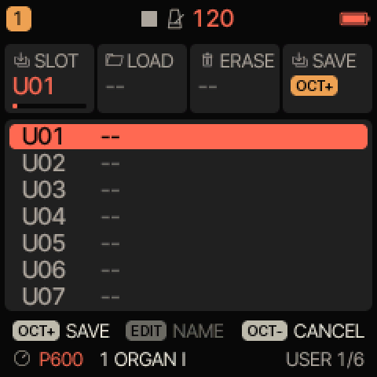
SAVE › USER, page 1 of 6.SAVE › USER, page 1 sur 6.SAVE › USER, Seite 1 von 6.SAVE › USER, página 1 de 6.SAVE › USER, pagina 1 di 6.SAVE › USER，第 1 页（共 6 页）。SAVE › USER、6ページ中1ページ目。
Press SAVE: the USER page opens, with SAVE selected.Appuyez sur SAVE : la page USER s’ouvre, avec SAVE choisi.Drücken Sie SAVE: Die Seite USER öffnet sich, SAVE ist ausgewählt.Pulse SAVE: se abre la página USER, con SAVE seleccionado.Premere SAVE: si apre la pagina USER, con SAVE selezionato.按 SAVE：USER 页面打开，SAVE 已选中。SAVE を押します。USER ページが開き、SAVE が選択されています。
Choose the place, U01 to U32, with KNOB 1 or PRESETS. An empty place reads --.Choisissez l’emplacement, U01 à U32, avec KNOB 1 ou PRESETS. Un emplacement vide affiche --.Wählen Sie den Platz, U01 bis U32, mit KNOB 1 oder PRESETS. Ein leerer Platz zeigt --.Elija la posición, de U01 a U32, con KNOB 1 o PRESETS. Una posición vacía indica --.Scegliere la posizione, da U01 a U32, con KNOB 1 o PRESETS. Una posizione vuota mostra --.用 KNOB 1 或 PRESETS 选择位置 U01 至 U32。空位置显示 --。KNOB 1 または PRESETS で枠（U01〜U32）を選びます。空いている枠は -- と表示されます。
Press OCT+. If the place is in use (OVERWRITE U05?): OCT+ to replace its sound, OCT− to keep it.Appuyez sur OCT+. Si l’emplacement est occupé (OVERWRITE U05?) : OCT+ pour remplacer le son, OCT− pour le conserver.Drücken Sie OCT+. Ist der Platz belegt (OVERWRITE U05?): OCT+, um seinen Sound zu ersetzen, OCT−, um ihn zu behalten.Pulse OCT+. Si la posición está ocupada (OVERWRITE U05?): OCT+ para sustituir su sonido, OCT− para conservarlo.Premere OCT+. Se la posizione è occupata (OVERWRITE U05?): OCT+ per sostituirne il suono, OCT− per conservarlo.按 OCT+。如果该位置已被占用（OVERWRITE U05?）：按 OCT+ 替换其音色，按 OCT− 保留。OCT+ を押します。枠が使用中の場合（OVERWRITE U05?）は、OCT+ でサウンドを置き換え、OCT− でそのまま残します。
On the NAME screen, type a name if you like (table below), choose its family with KNOB 3, then press OCT+.Sur l’écran NAME, tapez un nom si vous le souhaitez (tableau ci-dessous), choisissez sa famille avec KNOB 3, puis appuyez sur OCT+.Geben Sie auf der Seite NAME auf Wunsch einen Namen ein (Tabelle unten), wählen Sie mit KNOB 3 seine Kategorie und drücken Sie dann OCT+.En la pantalla NAME, escriba un nombre si lo desea (tabla siguiente), elija su familia con KNOB 3 y pulse OCT+.Nella schermata NAME, digitare un nome, se si vuole (tabella qui sotto), sceglierne la famiglia con KNOB 3, poi premere OCT+.在 NAME 屏幕上，可以输入名称（见下表），用 KNOB 3 选择分类，然后按 OCT+。NAME 画面で、必要なら名前を入力し（下の表を参照）、KNOB 3 でファミリーを選んでから OCT+ を押します。
The quickest save: SAVE, OCT+, OCT+.
L’enregistrement le plus rapide : SAVE, OCT+, OCT+.
Am schnellsten speichern: SAVE, OCT+, OCT+.
El guardado más rápido: SAVE, OCT+, OCT+.
Il salvataggio più rapido: SAVE, OCT+, OCT+.
最快的保存方法：SAVE、OCT+、OCT+。
いちばん早い保存方法：SAVE、OCT+、OCT+。
On the NAME screenSur l’écran NAMEAuf der Seite NAMEEn la pantalla NAMENella schermata NAME在 NAME 屏幕上NAME 画面での操作
White keysTouches blanchesWeiße TastenTeclas blancasTasti bianchi白键白鍵
Letters, by tapping the same key repeatedly (AB, CD, EF… as on an old phone); a tap within 0.8 s goes to the next letter of the key.Les lettres, en appuyant plusieurs fois sur la même touche (AB, CD, EF… comme sur un vieux téléphone) ; un appui dans les 0,8 s passe à la lettre suivante de la touche.Buchstaben, durch wiederholtes Tippen auf dieselbe Taste (AB, CD, EF… wie bei einem alten Telefon); ein Tippen innerhalb von 0,8 s geht zum nächsten Buchstaben der Taste.Letras, pulsando varias veces la misma tecla (AB, CD, EF… como en un teléfono antiguo); una pulsación en menos de 0,8 s pasa a la siguiente letra de la tecla.Lettere, toccando più volte lo stesso tasto (AB, CD, EF… come su un vecchio telefono); un tocco entro 0,8 s passa alla lettera successiva del tasto.字母：反复单击同一个键（AB、CD、EF…，就像老式手机）；0.8 秒内再次单击则切换到该键的下一个字母。同じ鍵を繰り返し押して文字を入力します（昔の携帯電話のように AB、CD、EF…）。0.8秒以内に押すと、その鍵の次の文字に進みます。
F#Fa#F#F#F#F#F#
Cursor left.Curseur à gauche.Cursor nach links.Cursor a la izquierda.Cursore a sinistra.光标左移。カーソルを左へ。
G#Sol#G#G#G#G#G#
A space.Un espace.Ein Leerzeichen.Un espacio.Uno spazio.空格。スペース。
A#La#A#A#A#A#A#
Cursor right.Curseur à droite.Cursor nach rechts.Cursor a la derecha.Cursore a destra.光标右移。カーソルを右へ。
Letters ↔ numbers (123: 1 to 9, 0 and - . _ / # +).Lettres ↔ chiffres (123 : 1 à 9, 0 et - . _ / # +).Buchstaben ↔ Ziffern (123: 1 bis 9, 0 und - . _ / # +).Letras ↔ números (123: 1 a 9, 0 y - . _ / # +).Lettere ↔ numeri (123: da 1 a 9, 0 e - . _ / # +).字母 ↔ 数字（123：1 至 9、0 以及 - . _ / # +）。文字 ↔ 数字の切り替え（123：1〜9、0 と - . _ / # +）。
KNOB 1KNOB 1KNOB 1KNOB 1KNOB 1KNOB 1KNOB 1
Moves the cursor.Déplace le curseur.Bewegt den Cursor.Mueve el cursor.Sposta il cursore.移动光标。カーソルを移動します。
KNOB 2KNOB 2KNOB 2KNOB 2KNOB 2KNOB 2KNOB 2
Changes the character under the cursor.Change le caractère sous le curseur.Ändert das Zeichen unter dem Cursor.Cambia el carácter bajo el cursor.Cambia il carattere sotto il cursore.更改光标处的字符。カーソル位置の文字を変更します。
KNOB 3KNOB 3KNOB 3KNOB 3KNOB 3KNOB 3KNOB 3
USER: the sound’s family (BASS, LEAD…). PROJECT: a random name.USER : la famille du son (BASS, LEAD…). PROJECT : un nom au hasard.USER: die Kategorie des Sounds (BASS, LEAD…). PROJECT: ein zufälliger Name.USER: la familia del sonido (BASS, LEAD…). PROJECT: un nombre aleatorio.USER: la famiglia del suono (BASS, LEAD…). PROJECT: un nome casuale.USER：音色的分类（BASS、LEAD…）。PROJECT：随机名称。USER：サウンドのファミリー（BASS、LEAD…）。PROJECT：ランダムな名前。
OCT+OCT+OCT+OCT+OCT+OCT+OCT+
Saves under that name.Enregistre, sous ce nom.Speichert unter diesem Namen.Guarda con ese nombre.Salva con quel nome.以该名称保存。その名前で保存します。
OCT−OCT−OCT−OCT−OCT−OCT−OCT−
Cancels: nothing is saved.Annule : rien n’est écrit.Bricht ab: Nichts wird gespeichert.Cancela: no se guarda nada.Annulla: non viene salvato nulla.取消：不保存任何内容。キャンセルします。何も保存されません。
Loading, renaming, erasing a USER soundCharger, renommer, effacer un son USEREinen USER-Sound laden, umbenennen, löschenCargar, renombrar y borrar un sonido USERCaricare, rinominare, cancellare un suono USER载入、重命名、清除 USER 音色USER サウンドの読み込み、名前の変更、消去
Load: turn PRESETS to the end of the list. Or on SAVE › USER: choose the place with KNOB 1, turn KNOB 2 right (LOAD) and press OCT+.Charger : tournez PRESETS jusqu’à la fin de la liste. Ou sur SAVE › USER : choisissez l’emplacement avec KNOB 1, tournez KNOB 2 à droite (LOAD) et appuyez sur OCT+.Laden: Drehen Sie PRESETS bis ans Ende der Liste. Oder auf SAVE › USER: Wählen Sie den Platz mit KNOB 1, drehen Sie KNOB 2 nach rechts (LOAD) und drücken Sie OCT+.Cargar: gire PRESETS hasta el final de la lista. O en SAVE › USER: elija la posición con KNOB 1, gire KNOB 2 a la derecha (LOAD) y pulse OCT+.Caricare: ruotare PRESETS fino alla fine dell’elenco. Oppure su SAVE › USER: scegliere la posizione con KNOB 1, ruotare KNOB 2 a destra (LOAD) e premere OCT+.载入：将 PRESETS 转到列表末尾。或者在 SAVE › USER 上：用 KNOB 1 选择位置，向右旋转 KNOB 2（LOAD），然后按 OCT+。読み込み：PRESETS をリストの最後まで回します。または SAVE › USER で、KNOB 1 で枠を選び、KNOB 2 を右に回して（LOAD）OCT+ を押します。
Rename: on SAVE › USER, choose the place, tap EDIT and type the new name.Renommer : sur SAVE › USER, choisissez l’emplacement, appuyez sur EDIT et tapez le nouveau nom.Umbenennen: Wählen Sie auf SAVE › USER den Platz, tippen Sie auf EDIT und geben Sie den neuen Namen ein.Renombrar: en SAVE › USER, elija la posición, pulse EDIT y escriba el nuevo nombre.Rinominare: su SAVE › USER, scegliere la posizione, toccare EDIT e digitare il nuovo nome.重命名：在 SAVE › USER 上选择位置，单击 EDIT，然后输入新名称。名前の変更：SAVE › USER で枠を選び、EDIT を軽く押して新しい名前を入力します。
Erase: choose the place, turn KNOB 3 right (ERASE), press OCT+, then OCT+ again to confirm.Effacer : choisissez l’emplacement, tournez KNOB 3 à droite (ERASE), appuyez sur OCT+, puis de nouveau sur OCT+ pour confirmer.Löschen: Wählen Sie den Platz, drehen Sie KNOB 3 nach rechts (ERASE), drücken Sie OCT+ und zur Bestätigung erneut OCT+.Borrar: elija la posición, gire KNOB 3 a la derecha (ERASE), pulse OCT+ y luego OCT+ de nuevo para confirmar.Cancellare: scegliere la posizione, ruotare KNOB 3 a destra (ERASE), premere OCT+, poi di nuovo OCT+ per confermare.清除：选择位置，向右旋转 KNOB 3（ERASE），按 OCT+，然后再按 OCT+ 确认。消去：枠を選び、KNOB 3 を右に回して（ERASE）OCT+ を押し、もう一度 OCT+ を押して確定します。
To cancel: turn KNOB 2, 3 or 4 to the left, or press OCT− (a second press returns to HOME).Pour abandonner : tournez KNOB 2, 3 ou 4 vers la gauche, ou appuyez sur OCT− (un second appui ramène à HOME).Abbrechen: Drehen Sie KNOB 2, 3 oder 4 nach links oder drücken Sie OCT− (ein zweiter Druck kehrt zu HOME zurück).Para cancelar: gire KNOB 2, 3 o 4 a la izquierda, o pulse OCT− (una segunda pulsación vuelve a HOME).Per annullare: ruotare KNOB 2, 3 o 4 verso sinistra, o premere OCT− (una seconda pressione riporta a HOME).取消：向左旋转 KNOB 2、3 或 4，或按 OCT−（再按一次返回 HOME）。キャンセルするには、KNOB 2、3、4 を左に回すか、OCT− を押します（もう一度押すと HOME に戻ります）。
Saving a P600 sound to a placeEnregistrer un son P600 dans une placeEinen P600-Sound auf einem Platz speichernGuardar un sonido P600 en una posiciónSalvare un suono P600 in una posizione将 P600 音色保存到位置P600 サウンドを枠に保存する
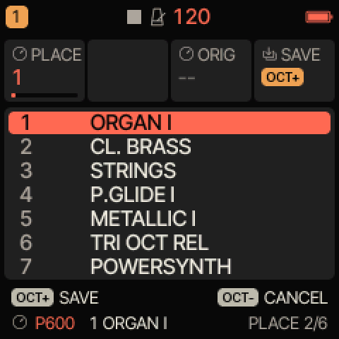
SAVE › PLACE, page 2 of 6 (P600 tracks only).SAVE › PLACE, page 2 sur 6 (pistes P600 seulement).SAVE › PLACE, Seite 2 von 6 (nur P600-Spuren).SAVE › PLACE, página 2 de 6 (solo pistas P600).SAVE › PLACE, pagina 2 di 6 (solo tracce P600).SAVE › PLACE，第 2 页（共 6 页）（仅限 P600 音轨）。SAVE › PLACE、6ページ中2ページ目（P600 トラックのみ）。
On a P600 track, press SAVE twice: the PLACE page opens, on the sound’s own place, with SAVE selected.Sur une piste P600, appuyez deux fois sur SAVE : la page PLACE s’ouvre, sur la place du son, avec SAVE choisi.Drücken Sie auf einer P600-Spur zweimal SAVE: Die Seite PLACE öffnet sich auf dem eigenen Platz des Sounds, SAVE ist ausgewählt.En una pista P600, pulse SAVE dos veces: se abre la página PLACE, en la posición propia del sonido, con SAVE seleccionado.Su una traccia P600, premere due volte SAVE: si apre la pagina PLACE, sulla posizione propria del suono, con SAVE selezionato.在 P600 音轨上按两次 SAVE：PLACE 页面打开，定位在该音色自己的位置上，SAVE 已被选中。P600 トラックで SAVE を2回押します。PLACE ページが、そのサウンドの枠で、SAVE が選択された状態で開きます。
To save it elsewhere, choose another place, 1 to 255, with KNOB 1. A place in color already holds one of your sounds. Every place holds a sound: yours always replaces one. Do not use PRESETS here: it changes the track’s sound, not the place.Pour l’enregistrer ailleurs, choisissez une autre place, de 1 à 255, avec KNOB 1. Une place en couleur contient déjà l’un de vos sons. Toutes les places contiennent un son : le vôtre en remplace toujours un. N’utilisez pas PRESETS ici : il change le son de la piste, pas la place.Um ihn woanders zu speichern, wählen Sie mit KNOB 1 einen anderen Platz, 1 bis 255. Ein farbiger Platz enthält bereits einen Ihrer Sounds. Jeder Platz enthält einen Sound: Ihrer ersetzt immer einen davon. Verwenden Sie hier nicht PRESETS: Er wechselt den Sound der Spur, nicht den Platz.Para guardarlo en otro lugar, elija otra posición, de 1 a 255, con KNOB 1. Una posición en color ya contiene uno de sus sonidos. Todas las posiciones contienen un sonido: el suyo siempre sustituye a uno. No use PRESETS aquí: cambia el sonido de la pista, no la posición.Per salvarlo altrove, scegliere un’altra posizione, da 1 a 255, con KNOB 1. Una posizione a colori contiene già uno dei propri suoni. Ogni posizione contiene un suono: il proprio ne sostituisce sempre uno. Non usare PRESETS qui: cambia il suono della traccia, non la posizione.若要存到别处，用 KNOB 1 选择另一个位置（1 至 255）。彩色显示的位置已存有您的音色。每个位置都有音色：您的音色总是替换其中之一。此处不要使用 PRESETS：它切换的是音轨的音色，而不是位置。別の枠に保存するには、KNOB 1 でほかの枠（1〜255）を選びます。カラーの枠には、すでに自分のサウンドが入っています。どの枠にもサウンドが入っており、保存したサウンドは必ずどれかと置き換わります。ここでは PRESETS を使わないでください。枠ではなくトラックのサウンドが変わります。
Press OCT+, then OCT+ again to confirm (SAVE IN PLACE 12?).Appuyez sur OCT+, puis de nouveau sur OCT+ pour confirmer (SAVE IN PLACE 12?).Drücken Sie OCT+ und zur Bestätigung erneut OCT+ (SAVE IN PLACE 12?).Pulse OCT+ y luego OCT+ de nuevo para confirmar (SAVE IN PLACE 12?).Premere OCT+, poi di nuovo OCT+ per confermare (SAVE IN PLACE 12?).按 OCT+，再按 OCT+ 确认（SAVE IN PLACE 12?）。OCT+ を押し、もう一度 OCT+ を押して確定します（SAVE IN PLACE 12?）。
The track now plays that place, and PRESETS finds your sound at that number.La piste joue désormais cette place, et PRESETS trouve votre son à ce numéro.Die Spur spielt nun diesen Platz, und PRESETS findet Ihren Sound unter dieser Nummer.La pista toca ahora esa posición, y PRESETS encuentra su sonido en ese número.La traccia suona ora quella posizione, e PRESETS trova il proprio suono a quel numero.音轨现在播放该位置的音色，PRESETS 在该编号处即可找到您的音色。トラックはその枠を演奏するようになり、PRESETS ではその番号で保存したサウンドが見つかります。
Your sound replaces the built-in one only while it is there: the built-in sound is never lost and comes back with ORIG or RESET SOUNDS.Votre son remplace le son intégré seulement tant qu’il est là : le son intégré n’est jamais perdu et revient avec ORIG ou RESET SOUNDS.Ihr Sound ersetzt den eingebauten nur, solange er dort ist: Der eingebaute Sound geht nie verloren und kommt mit ORIG oder RESET SOUNDS zurück.Su sonido sustituye al integrado solo mientras está ahí: el sonido integrado nunca se pierde y vuelve con ORIG o RESET SOUNDS.Il proprio suono sostituisce quello integrato solo finché resta lì: il suono integrato non va mai perso e ritorna con ORIG o RESET SOUNDS.您的音色仅在存放期间替换内置音色：内置音色永远不会丢失，可通过 ORIG 或 RESET SOUNDS 恢复。保存したサウンドが内蔵サウンドと置き換わるのは、それが入っている間だけです。内蔵サウンドが失われることはなく、ORIG または RESET SOUNDS で元に戻ります。
Saved with the sound: the oscillators, the mixer, the filter and its envelope, the Poly-Mod, the amplifier envelope, the glide, UNI on or off (with its DETUNE), the LFO’s rate, shape and destinations, WHEEL and VEL>FLT. Not saved: VINTAGE (back to 24 at each load), the effect sends (a kept sound plays dry, all sends at 0), the INSERT, MONO and LEG (a kept sound always plays POLY, or UNI if its unison was on), the LFO’s PHS and FADE and the LFO 2 page, ENV DEST, MOD slots 1–2 and the VOICE pages. Use a USER place to keep everything.Enregistrés avec le son : les oscillateurs, le mixeur, le filtre et son enveloppe, la Poly-Mod, l’enveloppe d’amplitude, le glide, UNI actif ou non (avec son DETUNE), la vitesse, la forme et les destinations du LFO, WHEEL et VEL>FLT. Non enregistrés : VINTAGE (revient à 24 à chaque chargement), les envois d’effets (un son gardé joue sec, tous les envois à 0), l’INSERT, MONO et LEG (un son gardé joue toujours en POLY, ou en UNI si son unisson était actif), PHS et FADE du LFO et la page LFO 2, ENV DEST, les emplacements de MOD 1 et 2 et les pages VOICE. Utilisez un emplacement USER pour tout conserver.Mit dem Sound gespeichert: die Oszillatoren, der Mixer, das Filter und seine Hüllkurve, die Poly-Mod, die Verstärkerhüllkurve, das Glide, UNI ein oder aus (mit seinem DETUNE), Rate, Wellenform und Ziele des LFO, WHEEL und VEL>FLT. Nicht gespeichert: VINTAGE (bei jedem Laden zurück auf 24), die Effekt-Sends (ein behaltener Sound spielt trocken, alle Sends auf 0), der INSERT, MONO und LEG (ein behaltener Sound spielt immer POLY, oder UNI, wenn sein Unisono aktiv war), PHS und FADE des LFO sowie die Seite LFO 2, ENV DEST, die MOD-Slots 1–2 und die VOICE-Seiten. Verwenden Sie einen USER-Speicherplatz, um alles zu behalten.Se guarda con el sonido: los osciladores, el mezclador, el filtro y su envolvente, el Poly-Mod, la envolvente del amplificador, el portamento, UNI activado o no (con su DETUNE), la velocidad, la forma y los destinos del LFO, WHEEL y VEL>FLT. No se guarda: VINTAGE (vuelve a 24 en cada carga), los envíos de efectos (un sonido conservado suena seco, con todos los envíos a 0), el INSERT, MONO y LEG (un sonido conservado toca siempre en POLY, o en UNI si su unísono estaba activado), PHS y FADE del LFO y la página LFO 2, ENV DEST, las ranuras MOD 1–2 y las páginas VOICE. Use una posición USER para conservarlo todo.Salvati con il suono: gli oscillatori, il mixer, il filtro e il suo inviluppo, il Poly-Mod, l’inviluppo dell’amplificatore, il glide, UNI attivo o no (con il suo DETUNE), la velocità, la forma e le destinazioni dell’LFO, WHEEL e VEL>FLT. Non salvati: VINTAGE (di nuovo a 24 a ogni caricamento), le mandate agli effetti (un suono conservato suona senza effetti, tutte le mandate a 0), l’INSERT, MONO e LEG (un suono conservato suona sempre POLY, o UNI se il suo unisono era attivo), PHS e FADE dell’LFO e la pagina LFO 2, ENV DEST, gli slot MOD 1–2 e le pagine VOICE. Usare una posizione USER per conservare tutto.随音色保存：振荡器、混音器、滤波器及其包络、Poly-Mod、放大器包络、滑音、UNI 开或关（及其 DETUNE）、LFO 的速率、波形和目标、WHEEL 和 VEL>FLT。不保存：VINTAGE（每次载入都恢复为 24）、效果发送量（保存的音色为干声播放，所有发送量为 0）、INSERT、MONO 和 LEG（保存的音色总是以 POLY 播放，若开启了齐奏则为 UNI）、LFO 的 PHS 和 FADE 以及 LFO 2 页面、ENV DEST、MOD 槽位 1–2 和 VOICE 页面。要保留全部内容，请使用 USER 位置。サウンドとともに保存されるもの：オシレーター、ミキサー、フィルターとそのエンベロープ、Poly-Mod、アンプ・エンベロープ、グライド、UNI のオン／オフ（DETUNE を含む）、LFO のレート、波形、行き先、WHEEL と VEL>FLT。保存されないもの：VINTAGE（読み込むたびに24に戻ります）、エフェクト・センド（保存したサウンドはすべてのセンドが0のドライで鳴ります）、INSERT、MONO と LEG（保存したサウンドは常に POLY、ユニゾンがオンなら UNI で鳴ります）、LFO の PHS と FADE、LFO 2 ページ、ENV DEST、MOD スロット1〜2、VOICE ページ。すべてを残すには USER 枠を使ってください。
The 55 places of your own are shared by the sounds you save here and the sounds sent from a computer (chapter 13). Beyond 55: P600 MEMORY FULL. Free up places with ORIG.Les 55 places à vous sont partagées entre les sons enregistrés ici et les sons envoyés depuis un ordinateur (chapitre 13). Au-delà de 55 : P600 MEMORY FULL. Libérez-en avec ORIG.Die 55 eigenen Plätze teilen sich die Sounds, die Sie hier speichern, und die vom Computer gesendeten Sounds (Kapitel 13). Über 55 hinaus: P600 MEMORY FULL. Geben Sie Plätze mit ORIG frei.Las 55 posiciones propias se reparten entre los sonidos que guarda aquí y los sonidos enviados desde un ordenador (capítulo 13). Más allá de 55: P600 MEMORY FULL. Libere posiciones con ORIG.Le 55 posizioni personali sono condivise tra i suoni salvati qui e i suoni inviati da un computer (capitolo 13). Oltre 55: P600 MEMORY FULL. Liberare posizioni con ORIG.55 个专属位置由您在此保存的音色和从电脑发送的音色共用（第13章）。超过 55 个：P600 MEMORY FULL。请用 ORIG 释放位置。自分用の55の枠は、ここで保存したサウンドとコンピューターから送信したサウンド（第13章）で共有されます。55を超えると P600 MEMORY FULL と表示されます。ORIG で枠を空けてください。
Wait 1.5 s after saving before switching off; the sound is written only while the sequencer is stopped. P600: NOT SAVED: the write failed; stop the sequencer and save the place again. If a USR3 sample sent by an older version of the firmware takes the storage area of the P600 sounds, they are kept only until power-off (no message): send a new sample to USR3, or erase it, from the Felucca web editor.Attendez 1,5 s après l’enregistrement avant d’éteindre ; le son n’est écrit que séquenceur arrêté. P600: NOT SAVED : l’écriture a échoué ; arrêtez le séquenceur et enregistrez de nouveau la place. Si un échantillon USR3 envoyé par une ancienne version du firmware occupe la zone de mémoire des sons P600, ceux-ci ne sont gardés que jusqu’à l’extinction (sans message) : envoyez un nouvel échantillon dans USR3, ou effacez-le, depuis l’éditeur web Felucca.Warten Sie nach dem Speichern 1,5 s, bevor Sie ausschalten; der Sound wird nur bei gestopptem Sequencer geschrieben. P600: NOT SAVED: Das Schreiben ist fehlgeschlagen; stoppen Sie den Sequencer und speichern Sie den Platz erneut. Belegt ein USR3-Sample, das von einer älteren Firmware-Version gesendet wurde, den Speicherbereich der P600-Sounds, bleiben diese nur bis zum Ausschalten erhalten (ohne Meldung): Senden Sie über den Felucca-Webeditor ein neues Sample an USR3 oder löschen Sie es.Espere 1,5 s después de guardar antes de apagar; el sonido solo se escribe con el secuenciador detenido. P600: NOT SAVED: la escritura ha fallado; detenga el secuenciador y vuelva a guardar la posición. Si una muestra USR3 enviada por una versión anterior del firmware ocupa la zona de almacenamiento de los sonidos P600, estos solo se conservan hasta el apagado (sin mensaje): envíe una nueva muestra a USR3, o bórrela, desde el editor web de Felucca.Attendere 1,5 s dopo il salvataggio prima di spegnere; il suono viene scritto solo a sequencer fermo. P600: NOT SAVED: la scrittura non è riuscita; fermare il sequencer e salvare di nuovo la posizione. Se un campione USR3 inviato da una versione precedente del firmware occupa l’area di memoria dei suoni P600, questi vengono conservati solo fino allo spegnimento (nessun messaggio): inviare un nuovo campione in USR3, o cancellarlo, dall’editor web Felucca.保存后请等待 1.5 秒再关机；音色仅在音序器停止时写入。P600: NOT SAVED：写入失败；请停止音序器，再次保存该位置。如果旧版固件发送的 USR3 采样占用了 P600 音色的存储区，这些音色只会保留到关机为止（没有提示）：请通过 Felucca 网页编辑器向 USR3 发送新的采样，或将其清除。保存後、電源を切る前に1.5秒待ってください。サウンドはシーケンサーが停止している間だけ書き込まれます。P600: NOT SAVED：書き込みに失敗しました。シーケンサーを停止して、もう一度その枠に保存してください。旧バージョンのファームウェアで送信された USR3 サンプルが P600 サウンドの保存領域を占めている場合、P600 サウンドは電源を切るまでしか保持されません（メッセージは表示されません）。Felucca の Web エディターから、USR3 に新しいサンプルを送るか、USR3 を消去してください。
NOT A P600 SOUND: the track’s engine is not P600. Use SAVE › USER for it.NOT A P600 SOUND : le moteur de la piste n’est pas P600. Utilisez plutôt SAVE › USER.NOT A P600 SOUND: Die Klangerzeugung der Spur ist nicht P600. Verwenden Sie dafür SAVE › USER.NOT A P600 SOUND: el motor de la pista no es P600. Use SAVE › USER para ese sonido.NOT A P600 SOUND: il motore della traccia non è P600. Usare SAVE › USER per questo suono.NOT A P600 SOUND：该音轨的引擎不是 P600。请改用 SAVE › USER。NOT A P600 SOUND：トラックのエンジンが P600 ではありません。SAVE › USER を使ってください。
Getting a place’s original sound backRetrouver le son d’origine d’une placeDen Originalsound eines Platzes zurückholenRecuperar el sonido original de una posiciónRitrovare il suono originale di una posizione恢复某个位置的原始音色枠のオリジナル・サウンドに戻す
On SAVE › PLACE, choose the place with KNOB 1.Sur SAVE › PLACE, choisissez la place avec KNOB 1.Wählen Sie auf SAVE › PLACE den Platz mit KNOB 1.En SAVE › PLACE, elija la posición con KNOB 1.Su SAVE › PLACE, scegliere la posizione con KNOB 1.在 SAVE › PLACE 上，用 KNOB 1 选择位置。SAVE › PLACE で、KNOB 1 で枠を選びます。
Turn KNOB 3 right (ORIG) and press OCT+ (ORIGINAL TO 12?).Tournez KNOB 3 à droite (ORIG) et appuyez sur OCT+ (ORIGINAL TO 12?).Drehen Sie KNOB 3 nach rechts (ORIG) und drücken Sie OCT+ (ORIGINAL TO 12?).Gire KNOB 3 a la derecha (ORIG) y pulse OCT+ (ORIGINAL TO 12?).Ruotare KNOB 3 a destra (ORIG) e premere OCT+ (ORIGINAL TO 12?).向右旋转 KNOB 3（ORIG）并按 OCT+（ORIGINAL TO 12?）。KNOB 3 を右に回して（ORIG）OCT+ を押します（ORIGINAL TO 12?）。
OCT+ to confirm. ALREADY ORIGINAL: the place holds no sound of yours.OCT+ pour confirmer. ALREADY ORIGINAL : la place ne contient aucun son à vous.Zur Bestätigung OCT+. ALREADY ORIGINAL: Der Platz enthält keinen Ihrer Sounds.OCT+ para confirmar. ALREADY ORIGINAL: la posición no contiene ningún sonido suyo.OCT+ per confermare. ALREADY ORIGINAL: la posizione non contiene alcun suono personale.按 OCT+ 确认。ALREADY ORIGINAL：该位置没有您的音色。OCT+ で確定します。ALREADY ORIGINAL：その枠に自分のサウンドは入っていません。
Back to the saved sound: turn PRESETS one step away and back; the sound reloads as it was saved.Revenir au son rangé : tournez PRESETS d’un cran puis revenez ; le son se recharge tel qu’il est rangé.Zurück zum gespeicherten Sound: Drehen Sie PRESETS einen Schritt weiter und wieder zurück; der Sound wird so neu geladen, wie er gespeichert wurde.Volver al sonido guardado: gire PRESETS un paso y vuelva atrás; el sonido se recarga tal como se guardó.Tornare al suono salvato: ruotare PRESETS di uno scatto e poi tornare indietro; il suono viene ricaricato come era stato salvato.回到已保存的音色：将 PRESETS 转开一格再转回来；音色按保存时的状态重新载入。保存したサウンドに戻す：PRESETS を1つ回して戻します。サウンドが保存したときの状態で再読み込みされます。
Undo a load: hold SAVE for 1 s; hold again to redo. It undoes the track’s last sound load (a quick run of PRESETS turns counts as one), MUTATE, pattern load or sequence edit.Annuler un chargement : maintenez SAVE 1 s ; maintenez de nouveau pour rétablir. Cela annule le dernier chargement de son de la piste (une série rapide de crans de PRESETS compte pour un seul), MUTATE, chargement de séquence ou modification de séquence.Einen Ladevorgang rückgängig machen: Halten Sie SAVE 1 s gedrückt; erneut halten, um ihn wiederherzustellen. Rückgängig gemacht wird der letzte Ladevorgang eines Sounds auf der Spur (eine schnelle Folge von PRESETS-Drehungen zählt als einer), MUTATE, das Laden eines Patterns oder die Bearbeitung der Sequenz.Deshacer una carga: mantenga pulsado SAVE 1 s; manténgalo de nuevo para rehacer. Deshace la última carga de sonido de la pista (una serie rápida de giros de PRESETS cuenta como una), MUTATE, carga de patrón o edición de secuencia.Annullare un caricamento: tenere premuto SAVE per 1 s; tenerlo di nuovo premuto per ripristinare. Annulla l’ultimo caricamento di suono della traccia (una serie rapida di scatti di PRESETS conta come uno solo), MUTATE, caricamento di pattern o modifica della sequenza.撤销载入：按住 SAVE 1 秒；再次按住则重做。它会撤销该音轨最近一次的音色载入（快速连续旋转 PRESETS 算作一次）、MUTATE、样式载入或音序编辑。読み込みを元に戻す：SAVE を1秒間長押しします。もう一度長押しするとやり直します。トラックの直前のサウンド読み込み（PRESETS を素早く続けて回した場合は1回分とみなされます）、MUTATE、パターンの読み込み、シーケンスの編集を元に戻します。
Clear all your P600 sounds at once: RESET SOUNDS (chapter 18). Your USER sounds are not affected.Oublier d’un coup tous vos sons P600 : RESET SOUNDS (chapitre 18). Vos sons USER ne sont pas touchés.Alle Ihre P600-Sounds auf einmal löschen: RESET SOUNDS (Kapitel 18). Ihre USER-Sounds sind davon nicht betroffen.Borrar todos sus sonidos P600 de una vez: RESET SOUNDS (capítulo 18). Sus sonidos USER no se ven afectados.Cancellare tutti i propri suoni P600 in una volta: RESET SOUNDS (capitolo 18). I suoni USER non vengono toccati.一次清除所有 P600 音色：RESET SOUNDS（第18章）。您的 USER 音色不受影响。P600 サウンドをすべて一度に消去する：RESET SOUNDS（第18章）。USER サウンドには影響しません。
A project (SAVE › PROJECT) keeps the four tracks’ sounds with the music, as they are (chapter 24).
Un projet (SAVE › PROJECT) conserve les sons des quatre pistes avec la musique, tels qu’ils sont (chapitre 24).
Ein Projekt (SAVE › PROJECT) bewahrt die Sounds der vier Spuren zusammen mit der Musik, so, wie sie sind (Kapitel 24).
Un proyecto (SAVE › PROJECT) conserva los sonidos de las cuatro pistas con la música, tal como están (capítulo 24).
Un progetto (SAVE › PROJECT) conserva i suoni delle quattro tracce insieme alla musica, così come sono (capitolo 24).
13Sending sounds from a computer, and getting them backEnvoyer des sons depuis un ordinateur, et les récupérerSounds vom Computer senden und zurückholenEnviar sonidos desde un ordenador y recuperarlosInviare suoni da un computer, e recuperarli从电脑发送音色及取回音色コンピューターからのサウンド送信と取り出し
The Guru-600 Sound Sender page (marcgoudy.github.io/guru-600/envoi-sons.html) sends Prophet-600 sounds to the FM-1 and brings them back to the computer. The sounds stay in the FM-1 after power-off.
La page Guru-600 Sound Sender (marcgoudy.github.io/guru-600/envoi-sons.html) envoie des sons Prophet-600 au FM-1 et les rapatrie sur l’ordinateur. Les sons restent dans le FM-1 après extinction.
Die Seite Guru-600 Sound Sender (marcgoudy.github.io/guru-600/envoi-sons.html) sendet Prophet-600-Sounds an den FM-1 und holt sie auf den Computer zurück. Die Sounds bleiben nach dem Ausschalten im FM-1.
La página Guru-600 Sound Sender (marcgoudy.github.io/guru-600/envoi-sons.html) envía sonidos del Prophet-600 al FM-1 y los devuelve al ordenador. Los sonidos permanecen en el FM-1 tras apagarlo.
La pagina Guru-600 Sound Sender (marcgoudy.github.io/guru-600/envoi-sons.html) invia suoni Prophet-600 all’FM-1 e li riporta sul computer. I suoni restano nell’FM-1 dopo lo spegnimento.
What it acceptsCe qu’elle accepteWas sie akzeptiertLo que aceptaCosa accetta支持的文件対応ファイル
A .syx file of Prophet-600 sounds: an original Sequential program dump, or a GliGli firmware patch file.Un fichier .syx de sons Prophet-600 : un dump de programmes Sequential d’origine, ou un fichier de patchs du firmware GliGli.Eine .syx-Datei mit Prophet-600-Sounds: ein originaler Sequential-Programm-Dump oder eine Patch-Datei der GliGli-Firmware.Un archivo .syx de sonidos del Prophet-600: un volcado de programas original de Sequential o un archivo de patches del firmware GliGli.Un file .syx di suoni Prophet-600: un dump di programmi originale Sequential o un file di patch del firmware GliGli.Prophet-600 音色的 .syx 文件：Sequential 原版程序转储，或 GliGli 固件的音色文件。Prophet-600 のサウンドの .syx ファイル：Sequential オリジナルのプログラム・ダンプ、または GliGli ファームウェアのパッチ・ファイル。
One sound or a whole bank of 100 in the same file.Un seul son ou une banque entière de 100 dans le même fichier.Ein einzelner Sound oder eine ganze Bank mit 100 in derselben Datei.Un solo sonido o un banco completo de 100 en el mismo archivo.Un solo suono o un intero banco di 100 nello stesso file.同一文件中可以是单个音色，也可以是 100 个音色的完整音色库。1ファイルに1サウンドでも、100サウンドのバンク全体でもかまいません。
Any other file: No Prophet-600 sound in this file.Tout autre fichier : Aucun son Prophet-600 dans ce fichier.Jede andere Datei: Kein Prophet-600-Sound in dieser Datei.Cualquier otro archivo: No hay ningún sonido de Prophet-600 en este archivo.Qualsiasi altro file: Nessun suono Prophet-600 in questo file.其他任何文件：“No Prophet-600 sound in this file”（此文件中没有 Prophet-600 音色）。それ以外のファイルでは「No Prophet-600 sound in this file.」（このファイルには Prophet-600 のサウンドがありません）と表示されます。
Sending, step by stepEnvoyer, pas à pasSenden, Schritt für SchrittEl envío, paso a pasoL’invio, passo per passo分步发送送信の手順
Connect the FM-1 to the computer with a USB data cable and switch it on. Close the other applications that use MIDI.Branchez le FM-1 à l’ordinateur avec un câble USB de données et allumez-le. Fermez les autres applications qui utilisent le MIDI.Verbinden Sie den FM-1 mit einem USB-Datenkabel mit dem Computer und schalten Sie ihn ein. Schließen Sie die anderen Anwendungen, die MIDI nutzen.Conecte el FM-1 al ordenador con un cable USB de datos y enciéndalo. Cierre las demás aplicaciones que usen MIDI.Collegare l’FM-1 al computer con un cavo USB dati e accenderlo. Chiudere le altre applicazioni che usano il MIDI.用 USB 数据线将 FM-1 连接到电脑并开机。关闭其他使用 MIDI 的应用程序。FM-1 をコンピューターに USB データケーブルで接続し、電源を入れます。MIDI を使用しているほかのアプリケーションは終了してください。
Open the page in a MIDI-compatible browser (Chrome, Edge, Brave, Opera…) and press Connect; allow MIDI (SysEx) when the browser asks.Ouvrez la page dans un navigateur compatible MIDI (Chrome, Edge, Brave, Opera…) et cliquez sur Connecter ; autorisez le MIDI (SysEx) quand le navigateur le demande.Öffnen Sie die Seite in einem MIDI-fähigen Browser (Chrome, Edge, Brave, Opera…) und klicken Sie auf Verbinden; erlauben Sie MIDI (SysEx), wenn der Browser fragt.Abra la página en un navegador compatible con MIDI (Chrome, Edge, Brave, Opera…) y pulse Conectar; permita MIDI (SysEx) cuando el navegador lo solicite.Aprire la pagina in un browser compatibile MIDI (Chrome, Edge, Brave, Opera…) e premere Connetti; consentire il MIDI (SysEx) quando il browser lo chiede.在支持 MIDI 的浏览器（Chrome、Edge、Brave、Opera……）中打开该页面，点击 “Connect”（连接）；浏览器询问时，允许 MIDI（SysEx）。MIDI 対応のブラウザー（Chrome、Edge、Brave、Opera など）でページを開き、「Connect」（接続）を押します。ブラウザーから確認されたら MIDI（SysEx）を許可してください。
Open the .syx file.Ouvrez le fichier .syx.Öffnen Sie die .syx-Datei.Abra el archivo .syx.Aprire il file .syx.打开 .syx 文件。.syx ファイルを開きます。
For each sound, type its place (1 to 255, as numbered in PRESETS) and press Send. Or type a first place and press Send all: the sounds go into consecutive places from there.Pour chaque son, tapez sa place (de 1 à 255, selon la numérotation de PRESETS) et cliquez sur Envoyer. Ou tapez une première place et cliquez sur Tout envoyer : les sons se suivent à partir de là.Geben Sie für jeden Sound seinen Platz ein (1 bis 255, wie in PRESETS nummeriert) und klicken Sie auf Senden. Oder geben Sie einen ersten Platz ein und klicken Sie auf Alle senden: Die Sounds kommen ab dort auf aufeinanderfolgende Plätze.Para cada sonido, escriba su posición (1 a 255, según la numeración de PRESETS) y pulse Enviar. O escriba una primera posición y pulse Enviar todos: los sonidos van a posiciones consecutivas a partir de ahí.Per ogni suono, digitare la sua posizione (da 1 a 255, secondo la numerazione di PRESETS) e premere Invia. Oppure digitare una prima posizione e premere Invia tutti: i suoni vanno in posizioni consecutive a partire da lì.为每个音色输入其位置（1 至 255，与 PRESETS 中的编号一致），然后点击 “Send”（发送）。或者输入第一个位置，再点击 “Send all”（全部发送）：音色会从该位置起依次存入连续的位置。サウンドごとに枠（PRESETS の番号どおり1〜255）を入力し、「Send」（送信）を押します。または最初の枠を入力して「Send all」（すべて送信）を押すと、その枠から連続した枠にサウンドが入ります。
The sounds are now in the PRESETS list.Les sons sont désormais dans la liste PRESETS.Die Sounds sind nun in der PRESETS-Liste.Los sonidos ya están en la lista PRESETS.I suoni sono ora nell’elenco PRESETS.这些音色现已出现在 PRESETS 列表中。サウンドが PRESETS リストに入りました。
A sent sound replaces the built-in sound of its place until ORIG or RESET SOUNDS brings it back.Un son envoyé remplace le son intégré de sa place jusqu’à ce que ORIG ou RESET SOUNDS le rétablisse.Ein gesendeter Sound ersetzt den eingebauten Sound seines Platzes, bis ORIG oder RESET SOUNDS ihn zurückholt.Un sonido enviado sustituye al sonido integrado de su posición hasta que ORIG o RESET SOUNDS lo restablezca.Un suono inviato sostituisce il suono integrato della sua posizione finché ORIG o RESET SOUNDS non lo ripristina.发送的音色会替换其所在位置的内置音色，直到 ORIG 或 RESET SOUNDS 将内置音色恢复。送信したサウンドは、ORIG または RESET SOUNDS で戻すまで、その枠の内蔵サウンドと置き換わります。
55 sounds at most in total, whether sent or saved on the FM-1, whatever their places. Beyond that: P600: NO FREE PLACE on the FM-1.55 sons au maximum en tout, envoyés ou enregistrés sur le FM-1, quelle que soit leur place. Au-delà : P600: NO FREE PLACE sur le FM-1.Insgesamt höchstens 55 Sounds, ob gesendet oder auf dem FM-1 gespeichert, egal auf welchen Plätzen. Darüber hinaus: P600: NO FREE PLACE auf dem FM-1.55 sonidos como máximo en total, ya sean enviados o guardados en el FM-1, sean cuales sean sus posiciones. Más allá: P600: NO FREE PLACE en el FM-1.55 suoni al massimo in totale, inviati o salvati sull’FM-1, qualunque sia la loro posizione. Oltre: P600: NO FREE PLACE sull’FM-1.无论是发送的还是在 FM-1 上保存的，无论位于哪个位置，总共最多 55 个音色。超过时，FM-1 上显示 P600: NO FREE PLACE。送信したものと FM-1 で保存したものを合わせて、枠の位置にかかわらず最大55サウンドまでです。それを超えると、FM-1 に P600: NO FREE PLACE と表示されます。
Sending to a place that already holds a sound of yours replaces it without counting as an extra sound.Un son envoyé vers une place qui contient déjà l’un de vos sons remplace celui-ci, sans compter un son de plus.Das Senden auf einen Platz, der bereits einen Ihrer Sounds enthält, ersetzt diesen, ohne als zusätzlicher Sound zu zählen.Enviar a una posición que ya contiene un sonido suyo lo sustituye sin contar como un sonido adicional.Inviare a una posizione che contiene già un proprio suono lo sostituisce senza contare come un suono in più.发送到已存有您音色的位置会将其替换，不会额外占用名额。すでに自分のサウンドが入っている枠に送信すると、そのサウンドと置き換わり、追加の1サウンドとしては数えられません。
An imported sound’s name begins with its place number.Le nom d’un son importé commence par son numéro de place.Der Name eines importierten Sounds beginnt mit der Nummer seines Speicherplatzes.El nombre de un sonido importado empieza por su número de posición.Il nome di un suono importato inizia con il numero della sua posizione.导入音色的名称以其位置编号开头。取り込んだサウンドの名前は、枠番号で始まります。
A sent sound is kept like a sound saved on SAVE › PLACE (chapter 12): it plays POLY (or UNI if its unison is on), dry (no effect send) and with VINTAGE at 24.Un son envoyé est gardé comme un son enregistré sur SAVE › PLACE (chapitre 12) : il joue en POLY (ou en UNI si son unisson est actif), sec (sans envoi d’effet) et avec VINTAGE à 24.Ein gesendeter Sound wird wie ein auf SAVE › PLACE gespeicherter Sound behalten (Kapitel 12): Er spielt POLY (oder UNI, wenn sein Unisono aktiv ist), trocken (ohne Effekt-Send) und mit VINTAGE auf 24.Un sonido enviado se conserva como un sonido guardado en SAVE › PLACE (capítulo 12): toca en POLY (o en UNI si su unísono está activado), seco (sin envío de efectos) y con VINTAGE a 24.Un suono inviato viene conservato come un suono salvato su SAVE › PLACE (capitolo 12): suona POLY (o UNI se il suo unisono è attivo), senza effetti (nessuna mandata) e con VINTAGE a 24.发送的音色与在 SAVE › PLACE 上保存的音色一样保存（第12章）：以 POLY 播放（若开启了齐奏则为 UNI），干声（无效果发送），VINTAGE 为 24。送信したサウンドは、SAVE › PLACE で保存したサウンド（第12章）と同じように保持されます。POLY（ユニゾンがオンなら UNI）、ドライ（エフェクト・センドなし）、VINTAGE は24で鳴ります。
Any SysEx utility can also send a .syx file to the FM-1 by USB. A sound sent that way, with no place named, goes to the first place from 201 that holds none of your sounds, replacing a built-in Guru-600 sound there.N’importe quel utilitaire SysEx peut aussi envoyer un fichier .syx au FM-1 par USB. Un son envoyé ainsi, sans place indiquée, va dans la première place à partir de 201 qui ne contient aucun de vos sons, à la place d’un son intégré du Guru-600.Auch jedes SysEx-Programm kann eine .syx-Datei per USB an den FM-1 senden. Ein so gesendeter Sound ohne angegebenen Platz kommt auf den ersten Platz ab 201, der keinen Ihrer Sounds enthält, und ersetzt dort einen eingebauten Guru-600-Sound.Cualquier utilidad SysEx también puede enviar un archivo .syx al FM-1 por USB. Un sonido enviado de esta forma, sin indicar posición, va a la primera posición a partir de la 201 que no contenga ningún sonido suyo, sustituyendo allí un sonido integrado del Guru-600.Anche qualsiasi utility SysEx può inviare un file .syx all’FM-1 via USB. Un suono inviato in questo modo, senza indicare una posizione, va nella prima posizione a partire dalla 201 che non contiene alcun suono personale, sostituendo lì un suono integrato del Guru-600.任何 SysEx 工具也都可以通过 USB 将 .syx 文件发送到 FM-1。以这种方式发送、未指定位置的音色，会存入从 201 起第一个没有您音色的位置，替换那里的 Guru-600 内置音色。どの SysEx ユーティリティからでも、USB で .syx ファイルを FM-1 に送信できます。この方法で枠を指定せずに送信したサウンドは、201以降で自分のサウンドが入っていない最初の枠に入り、そこにある Guru-600 の内蔵サウンドと置き換わります。
USB only: neither the MIDI socket (TRS) nor the Mac application receives sounds (chapter 3).USB seulement : ni la prise MIDI (TRS) ni l’application Mac ne reçoivent de sons (chapitre 3).Nur per USB: Weder die MIDI-Buchse (TRS) noch die Mac-Anwendung empfängt Sounds (Kapitel 3).Solo por USB: ni la toma MIDI (TRS) ni la aplicación para Mac reciben sonidos (capítulo 3).Solo USB: né la presa MIDI (TRS) né l’applicazione per Mac ricevono suoni (capitolo 3).仅限 USB：MIDI 接口（TRS）和 Mac 应用程序都不接收音色（第3章）。USB のみ対応です。MIDI 端子（TRS）と Mac 用アプリケーションではサウンドを受信できません（第3章）。
Send with the sequencer stopped.Envoyez les sons séquenceur arrêté.Senden Sie bei gestopptem Sequencer.Envíe con el secuenciador detenido.Inviare con il sequencer fermo.请在音序器停止时发送。シーケンサーを停止した状態で送信してください。
Getting sounds back from the FM-1Récupérer des sons du FM-1Sounds vom FM-1 zurückholenRecuperar sonidos del FM-1Recuperare i suoni dall’FM-1从 FM-1 取回音色FM-1 からサウンドを取り出す
In the GET SOUNDS BACK box of the same page, once connected:
Dans le cadre RÉCUPÉRER DES SONS de la même page, une fois connecté :
Im Bereich SOUNDS ZURÜCKHOLEN derselben Seite, nach dem Verbinden:
En el recuadro RECUPERAR SONIDOS de la misma página, una vez conectado:
Nel riquadro RECUPERARE I SUONI della stessa pagina, una volta connessi:
连接后，在同一页面的 GET SOUNDS BACK（取回音色）区域中：
同じページの GET SOUNDS BACK（サウンドを取り戻す）欄で、接続後に次のいずれかを選びます。
Get this place: one sound, from the place you type.Récupérer cette place : un son, celui de la place indiquée.Diesen Platz holen: ein Sound, von dem Platz, den Sie eingeben.Recuperar esta posición: un sonido, de la posición que escriba.Recupera questa posizione: un suono, dalla posizione digitata.“Get this place”（取回此位置）：取回您输入的位置上的一个音色。Get this place（この枠を取得）：入力した枠の1サウンド。
Get the saved and imported sounds: all your sounds (No saved or imported sound on the FM-1 when there is none).Récupérer les sons enregistrés et importés : tous vos sons (Aucun son enregistré ou importé sur le FM-1 s’il n’y en a pas).Gespeicherte und importierte Sounds holen: alle Ihre Sounds (Kein gespeicherter oder importierter Sound auf dem FM-1, wenn es keinen gibt).Recuperar los sonidos guardados e importados: todos sus sonidos (No hay ningún sonido guardado o importado en el FM-1 cuando no hay ninguno).Recupera i suoni salvati e importati: tutti i propri suoni (Nessun suono salvato o importato sull’FM-1 quando non ce n’è nessuno).“Get the saved and imported sounds”（取回保存和导入的音色）：取回您的所有音色（如果没有，则显示“No saved or imported sound on the FM-1”，即 FM-1 上没有保存或导入的音色）。Get the saved and imported sounds（保存・取り込みサウンドを取得）：自分のサウンドすべて（1つもない場合は「No saved or imported sound on the FM-1」＝FM-1 に保存・取り込みサウンドはありません、と表示されます）。
Get all 255: the whole bank.Tout récupérer (255) : toute la banque.Alle 255 holen: die ganze Bank.Recuperar las 255: el banco completo.Recupera tutte le 255: l’intero banco.“Get all 255”（取回全部 255 个）：取回整个音色库。Get all 255（255 すべてを取得）：バンク全体。
The sounds arrive in a .syx file in your Downloads folder, in the Prophet-600’s format (Sequential’s). Send it back to the FM-1, keep it as a backup, share it or load it into a real Prophet-600. An unmodified factory sound comes back identical to Sequential’s original; finer Guru-600 settings are rounded to the nearest Prophet-600 value. Send a real Prophet-600 only places 1 to 100: place 101 lands on its program 01, and so does place 201.
Les sons arrivent dans un fichier .syx, dans le dossier Téléchargements, au format du Prophet-600 (celui de Sequential). Renvoyez-le au FM-1, gardez-le en sauvegarde, partagez-le ou chargez-le dans un vrai Prophet-600. Un son d’usine non modifié revient identique à l’original de Sequential ; les réglages plus fins du Guru-600 sont arrondis à la valeur la plus proche du Prophet-600. N’envoyez à un vrai Prophet-600 que les places 1 à 100 : la place 101 arrive sur son programme 01, la place 201 aussi.
Die Sounds landen in einer .syx-Datei im Ordner Downloads, im Format des Prophet-600 (dem von Sequential). Senden Sie sie an den FM-1 zurück, bewahren Sie sie als Backup auf, teilen Sie sie oder laden Sie sie in einen echten Prophet-600. Ein unveränderter Werksklang kommt identisch mit dem Original von Sequential zurück; feinere Einstellungen des Guru-600 werden auf den nächstliegenden Prophet-600-Wert gerundet. Senden Sie einem echten Prophet-600 nur die Plätze 1 bis 100: Platz 101 landet auf seinem Programm 01, ebenso Platz 201.
Los sonidos llegan en un archivo .syx a su carpeta Descargas, en el formato del Prophet-600 (el de Sequential). Vuelva a enviarlo al FM-1, consérvelo como copia de seguridad, compártalo o cárguelo en un Prophet-600 real. Un sonido de fábrica sin modificar vuelve idéntico al original de Sequential; los ajustes más finos del Guru-600 se redondean al valor del Prophet-600 más cercano. Envíe a un Prophet-600 real solo las posiciones 1 a 100: la posición 101 cae en su programa 01, y la 201 también.
I suoni arrivano in un file .syx nella cartella Download, nel formato del Prophet-600 (quello di Sequential). Rinviarlo all’FM-1, conservarlo come backup, condividerlo o caricarlo in un vero Prophet-600. Un suono di fabbrica non modificato ritorna identico all’originale di Sequential; le impostazioni più fini del Guru-600 vengono arrotondate al valore del Prophet-600 più vicino. Inviare a un vero Prophet-600 solo le posizioni da 1 a 100: la posizione 101 finisce sul suo programma 01, e così anche la 201.
Only what a Prophet-600 sound can hold travels this way. WHEEL travels as the LFO’s INITIAL AMOUNT; VEL>FLT, VINTAGE, DETUNE, the LFO’s volume destination and the effects do not; the LFO’s shape becomes triangle or square, and the glide is rounded. Names do not travel: sent back, a sound is named P600 and a number. To keep everything, use USER places or projects, and the Felucca web editor’s backup (chapter 2).
Seul ce que peut contenir un son de Prophet-600 voyage ainsi. WHEEL voyage comme INITIAL AMOUNT du LFO ; VEL>FLT, VINTAGE, DETUNE, la destination volume du LFO et les effets, non ; la forme du LFO devient triangle ou carré, et le glide est arrondi. Les noms ne voyagent pas : renvoyé, un son s’appelle P600 suivi d’un numéro. Pour tout conserver, utilisez les emplacements USER ou les projets, et la sauvegarde de l’éditeur web Felucca (chapitre 2).
Auf diesem Weg wird nur übertragen, was ein Prophet-600-Sound enthalten kann. WHEEL wird als INITIAL AMOUNT des LFO übertragen; VEL>FLT, VINTAGE, DETUNE, das Lautstärkeziel des LFO und die Effekte nicht; die Wellenform des LFO wird zu Dreieck oder Rechteck, und das Glide wird gerundet. Namen werden nicht übertragen: Zurückgesendet heißt ein Sound P600 mit einer Nummer. Um alles zu behalten, verwenden Sie USER-Speicherplätze oder Projekte sowie das Backup des Felucca-Webeditors (Kapitel 2).
Por esta vía solo viaja lo que puede contener un sonido del Prophet-600. WHEEL viaja como INITIAL AMOUNT del LFO; VEL>FLT, VINTAGE, DETUNE, el destino de volumen del LFO y los efectos no viajan; la forma del LFO se convierte en triángulo o cuadrada, y el portamento se redondea. Los nombres no viajan: al reenviarse, un sonido se llama P600 y un número. Para conservarlo todo, use las posiciones USER o los proyectos, y la copia de seguridad del editor web Felucca (capítulo 2).
In questo modo viaggia solo ciò che un suono Prophet-600 può contenere. WHEEL viaggia come INITIAL AMOUNT dell’LFO; VEL>FLT, VINTAGE, DETUNE, la destinazione volume dell’LFO e gli effetti no; la forma dell’LFO diventa triangolo o quadra, e il glide viene arrotondato. I nomi non viaggiano: rinviato, un suono si chiama P600 seguito da un numero. Per conservare tutto, usare le posizioni USER o i progetti, e il backup dell’editor web Felucca (capitolo 2).
Restoring the original sounds from the computerRétablir les sons d’origine depuis l’ordinateurDie Originalsounds vom Computer aus wiederherstellenRestaurar los sonidos originales desde el ordenadorRipristinare i suoni originali dal computer从电脑恢复原始音色コンピューターからオリジナル・サウンドを復元する
In the RESET box, Restore the original sounds erases every sent or saved sound, after confirmation, and brings back the 255 built-in sounds. Same as RESET SOUNDS on the FM-1 (chapter 18).
Dans le cadre RÉINITIALISATION, Restaurer les sons d’origine oublie tous les sons envoyés ou enregistrés, après confirmation, et rétablit les 255 sons intégrés. Identique à RESET SOUNDS sur le FM-1 (chapitre 18).
Im Bereich ZURÜCKSETZEN löscht Originalsounds wiederherstellen nach einer Bestätigung alle gesendeten oder gespeicherten Sounds und stellt die 255 eingebauten Sounds wieder her. Entspricht RESET SOUNDS auf dem FM-1 (Kapitel 18).
En el recuadro RESTABLECER, Restaurar los sonidos originales borra todos los sonidos enviados o guardados, tras una confirmación, y restablece los 255 sonidos integrados. Equivale a RESET SOUNDS en el FM-1 (capítulo 18).
Nel riquadro RIPRISTINO, Ripristina i suoni originali cancella tutti i suoni inviati o salvati, dopo conferma, e ripristina i 255 suoni integrati. Equivale a RESET SOUNDS sull’FM-1 (capitolo 18).
在 RESET 区域中，“Restore the original sounds”（恢复原始音色）会在确认后清除所有发送或保存的音色，并恢复 255 个内置音色。与 FM-1 上的 RESET SOUNDS 相同（第18章）。
RESET 欄の「Restore the original sounds」（オリジナル・サウンドを復元）は、確認のあと、送信または保存したサウンドをすべて消去し、255 の内蔵サウンドを戻します。FM-1 の RESET SOUNDS と同じです（第18章）。
If it does not workSi cela ne fonctionne pasWenn es nicht funktioniertSi no funcionaSe non funziona如果无法使用うまくいかないときは
The page saysLa page afficheDie Seite meldetLa página indicaLa pagina indica页面显示ページの表示
What to doQue faireWas zu tun istQué hacerCosa fare处理方法対処方法
This browser has no Web MIDI.Ce navigateur ne prend pas en charge Web MIDI.Dieser Browser unterstützt kein Web MIDI.Este navegador no admite Web MIDI.Questo browser non supporta Web MIDI.“This browser has no Web MIDI.”（此浏览器不支持 Web MIDI。）「This browser has no Web MIDI.」（このブラウザーは Web MIDI に対応していません）
Use a MIDI-compatible browser: Chrome, Edge, Brave, Opera…Utilisez un navigateur compatible MIDI : Chrome, Edge, Brave, Opera…Verwenden Sie einen MIDI-fähigen Browser: Chrome, Edge, Brave, Opera…Use un navegador compatible con MIDI: Chrome, Edge, Brave, Opera…Usare un browser compatibile MIDI: Chrome, Edge, Brave, Opera…请使用支持 MIDI 的浏览器：Chrome、Edge、Brave、Opera……MIDI 対応のブラウザーを使ってください：Chrome、Edge、Brave、Opera など。
MIDI (SysEx) access was not allowed.L’accès MIDI (SysEx) n’a pas été autorisé.Der MIDI-Zugriff (SysEx) wurde nicht erlaubt.No se permitió el acceso MIDI (SysEx).L’accesso MIDI (SysEx) non è stato consentito.“MIDI (SysEx) access was not allowed.”（未允许 MIDI（SysEx）访问。）「MIDI (SysEx) access was not allowed.」（MIDI（SysEx）へのアクセスが許可されませんでした。）
Allow MIDI in the site settings (the icon to the left of the address bar) and press Connect again.Autorisez le MIDI dans les paramètres du site (l’icône à gauche de la barre d’adresse) et cliquez de nouveau sur Connecter.Erlauben Sie MIDI in den Website-Einstellungen (das Symbol links in der Adressleiste) und klicken Sie erneut auf Verbinden.Permita MIDI en la configuración del sitio (el icono situado a la izquierda de la barra de direcciones) y vuelva a pulsar Conectar.Consentire il MIDI nelle impostazioni del sito (l’icona a sinistra della barra degli indirizzi) e premere di nuovo Connetti.在网站设置中允许 MIDI（地址栏左侧的图标），然后再次点击“Connect”（连接）。サイトの設定（アドレスバーの左のアイコン）で MIDI を許可し、もう一度「Connect」（接続）を押してください。
Check the cable (a data cable) and that the FM-1 is on.Vérifiez le câble (un câble de données) et assurez-vous que le FM-1 est allumé.Prüfen Sie das Kabel (ein Datenkabel) und ob der FM-1 eingeschaltet ist.Compruebe el cable (un cable de datos) y que el FM-1 esté encendido.Controllare il cavo (un cavo dati) e che l’FM-1 sia acceso.检查数据线（须为数据线）以及 FM-1 是否已开机。ケーブル（データ・ケーブル）と、FM-1 の電源が入っていることを確認してください。
The FM-1 does not answer.Le FM-1 ne répond pas.Der FM-1 antwortet nicht.El FM-1 no responde.L’FM-1 non risponde.“The FM-1 does not answer.”（FM-1 没有响应。）「The FM-1 does not answer.」（FM-1 が応答しません）
Check that it is running the Guru-600 and is connected by USB, then press Connect again.Vérifiez qu’il utilise bien le Guru-600 et qu’il est branché en USB, puis cliquez de nouveau sur Connecter.Prüfen Sie, ob der Guru-600 läuft und per USB verbunden ist, und klicken Sie dann erneut auf Verbinden.Compruebe que tiene el Guru-600 y que está conectado por USB, y vuelva a pulsar Conectar.Verificare che abbia il Guru-600 e sia collegato via USB, poi premere di nuovo Connetti.确认它运行的是 Guru-600 且已通过 USB 连接，然后再次点击“Connect”（连接）。Guru-600 が動作していて USB で接続されていることを確認し、もう一度「Connect」（接続）を押してください。
14Scales, chords and the chord memoryGammes, accords et mémoire d’accordsSkalen, Akkorde und der AkkordspeicherEscalas, acordes y la memoria de acordesScale, accordi e memoria di accordi音阶、和弦与和弦记忆スケール、コード、コード・メモリー
Press SCL: two pages, SCL (the scale) and CHORD (the chord keys). Both act on the selected track; on a DRUM track the keys keep their drum mapping.
Appuyez sur SCL : deux pages, SCL (la gamme) et CHORD (les accords). Les deux agissent sur la piste choisie ; sur une piste DRUM, les touches gardent leur répartition de batterie.
Drücken Sie SCL: zwei Seiten, SCL (die Skala) und CHORD (die Akkordtasten). Beide wirken auf die ausgewählte Spur; auf einer DRUM-Spur behalten die Tasten ihre Drum-Belegung.
Pulse SCL: dos páginas, SCL (la escala) y CHORD (las teclas de acordes). Ambas actúan sobre la pista seleccionada; en una pista DRUM, las teclas conservan su asignación de batería.
Premere SCL: due pagine, SCL (la scala) e CHORD (i tasti accordo). Entrambe agiscono sulla traccia selezionata; su una traccia DRUM i tasti mantengono la loro mappatura di batteria.
The SCL page.La page SCL.Die Seite SCL.La página SCL.La pagina SCL.SCL 页面。SCL ページ。
The scale the keys play in.
La gamme dans laquelle jouent les touches.
Die Skala, in der die Tasten spielen.
La escala en la que tocan las teclas.
La scala in cui suonano i tasti.
琴键演奏所用的音阶。
鍵盤で演奏するスケール。
KnobBoutonReglerPotenciómetroManopola旋钮ノブ
What it doesCe qu’il faitFunktionQué haceFunzione功能機能
ValuesValeursWerteValoresValori取值値
ROOT
The scale’s root note, C to B.La note de départ de la gamme, de C à B.Der Grundton der Skala, C bis B.La nota fundamental de la escala, de C a B.La tonica della scala, da C a B.音阶的主音，C 至 B。スケールのルート音（C〜B）。
How the keys follow the scale: OFF (every key plays its own note), SNAP (a note outside the scale is moved down into it), WHITE (the scale on the white keys only: C4 plays ROOT, the black keys are silent), SEQ (like SNAP, and the sequence also plays in the scale), SEQ+T (like SEQ, and TRN transposes the sequence too).Comment les touches suivent la gamme : OFF (chaque touche joue sa note), SNAP (une note hors gamme est ramenée dans la gamme, vers le bas), WHITE (la gamme sur les seules touches blanches : C4 joue ROOT, les noires sont muettes), SEQ (comme SNAP, et la séquence joue aussi dans la gamme), SEQ+T (comme SEQ, et TRN transpose aussi la séquence).Wie die Tasten der Skala folgen: OFF (jede Taste spielt ihre eigene Note), SNAP (eine Note außerhalb der Skala wird nach unten in die Skala verschoben), WHITE (die Skala nur auf den weißen Tasten: C4 spielt ROOT, die schwarzen Tasten sind stumm), SEQ (wie SNAP, und auch die Sequenz spielt in der Skala), SEQ+T (wie SEQ, und TRN transponiert auch die Sequenz).Cómo siguen las teclas la escala: OFF (cada tecla toca su propia nota), SNAP (una nota fuera de la escala se desplaza hacia abajo dentro de ella), WHITE (la escala solo en las teclas blancas: C4 toca ROOT, las teclas negras quedan mudas), SEQ (como SNAP, y la secuencia también toca en la escala), SEQ+T (como SEQ, y TRN transpone también la secuencia).Come i tasti seguono la scala: OFF (ogni tasto suona la propria nota), SNAP (una nota fuori scala viene spostata verso il basso dentro la scala), WHITE (la scala solo sui tasti bianchi: C4 suona ROOT, i tasti neri sono muti), SEQ (come SNAP, e anche la sequenza suona nella scala), SEQ+T (come SEQ, e TRN traspone anche la sequenza).琴键如何跟随音阶：OFF（每个键演奏自己的音）、SNAP（音阶外的音向下移入音阶）、WHITE（只用白键演奏音阶：C4 演奏 ROOT，黑键不发声）、SEQ（与 SNAP 相同，且音序也按音阶演奏）、SEQ+T（与 SEQ 相同，且 TRN 也会移调音序）。鍵盤がスケールにどう従うか：OFF（各鍵が本来の音を鳴らす）、SNAP（スケール外の音は下のスケール音に移動）、WHITE（白鍵だけでスケールを演奏：C4 で ROOT が鳴り、黒鍵は鳴りません）、SEQ（SNAP と同様で、シーケンスもスケール内で演奏）、SEQ+T（SEQ と同様で、TRN でシーケンスも移調）。
5 modes5 modes5 Modi5 modos5 modalità5 种模式5 モード
TRN
Transposes what the keys play, in semitones.Transpose ce que jouent les touches, en demi-tons.Transponiert, was die Tasten spielen, in Halbtönen.Transpone lo que tocan las teclas, en semitonos.Traspone ciò che suonano i tasti, in semitoni.将琴键演奏的音移调，以半音为单位。鍵盤で演奏する音を半音単位で移調します。
MENU › CONTROL › SCALE LEDS ON lights the keys of the scale.MENU › CONTROL › SCALE LEDS sur ON éclaire les touches de la gamme.MENU › CONTROL › SCALE LEDS ON lässt die Tasten der Skala leuchten.MENU › CONTROL › SCALE LEDS en ON ilumina las teclas de la escala.MENU › CONTROL › SCALE LEDS ON illumina i tasti della scala.MENU › CONTROL › SCALE LEDS 设为 ON 时，音阶内的琴键会亮起。MENU › CONTROL › SCALE LEDS を ON にすると、スケールの鍵が点灯します。
The keys play strange notes? SCL is not on CHR, QNT is not OFF, or TRN is not 0: reset them.Les touches jouent des notes étranges ? SCL n’est pas sur CHR, QNT pas sur OFF, ou TRN pas à 0 : rétablissez ces réglages.Die Tasten spielen seltsame Noten? SCL steht nicht auf CHR, QNT nicht auf OFF oder TRN nicht auf 0: Setzen Sie sie zurück.¿Las teclas tocan notas extrañas? SCL no está en CHR, QNT no está en OFF o TRN no está a 0: restablézcalos.I tasti suonano note strane? SCL non è su CHR, QNT non è su OFF, o TRN non è a 0: reimpostarli.琴键弹出奇怪的音？SCL 不是 CHR、QNT 不是 OFF，或 TRN 不是 0：请将它们复位。鍵盤からおかしな音が鳴る？ SCL が CHR になっていない、QNT が OFF になっていない、または TRN が0になっていません。元に戻してください。
Hold SCL to open a quick screen where a key sets the root instantly (chapter 15).Maintenu, SCL ouvre un écran rapide où une touche règle aussitôt la note de départ (chapitre 15).Halten Sie SCL, um eine Schnellansicht zu öffnen, in der eine Taste sofort den Grundton festlegt (Kapitel 15).Mantenga pulsado SCL para abrir una pantalla rápida donde una tecla ajusta la fundamental al instante (capítulo 15).Tenere premuto SCL per aprire una schermata rapida in cui un tasto imposta subito la tonica (capitolo 15).按住 SCL 可打开快捷屏幕，按一个键即可立即设定主音（第15章）。SCL を長押しするとクイック画面が開き、鍵を押すだけですぐにルートを設定できます（第15章）。
The CHORD page.La page CHORD.Die Seite CHORD.La página CHORD.La pagina CHORD.CHORD 页面。CHORD ページ。
One finger plays a chord. Press SCL again.
Un doigt joue un accord. Appuyez de nouveau sur SCL.
Ein Finger spielt einen Akkord. Drücken Sie erneut SCL.
Un solo dedo toca un acorde. Pulse SCL de nuevo.
Un dito suona un accordo. Premere di nuovo SCL.
一根手指弹奏和弦。再按一次 SCL。
指1本でコードを演奏します。SCL をもう一度押します。
KnobBoutonReglerPotenciómetroManopola旋钮ノブ
What it doesCe qu’il faitFunktionQué haceFunzione功能機能
ValuesValeursWerteValoresValori取值値
CHRD
The chord keys: OFF, DIA3 (the scale’s triads: every chord is in key), DIA7 (the scale’s sevenths), MAJ, MIN, DOM7, MAJ7, MIN7, SUS4, POW (fixed shapes on every key), MEM (your own chord, below).Les accords : OFF, DIA3 (les triades de la gamme : chaque accord est dans la tonalité), DIA7 (les septièmes de la gamme), MAJ, MIN, DOM7, MAJ7, MIN7, SUS4, POW (des formes fixes sur chaque touche), MEM (votre propre accord, ci-dessous).Die Akkordtasten: OFF, DIA3 (die Dreiklänge der Skala: jeder Akkord ist tonartgerecht), DIA7 (die Septakkorde der Skala), MAJ, MIN, DOM7, MAJ7, MIN7, SUS4, POW (feste Akkordformen auf jeder Taste), MEM (Ihr eigener Akkord, siehe unten).Las teclas de acordes: OFF, DIA3 (las tríadas de la escala: todos los acordes están en la tonalidad), DIA7 (las cuatriadas de séptima de la escala), MAJ, MIN, DOM7, MAJ7, MIN7, SUS4, POW (formas fijas en todas las teclas), MEM (su propio acorde, ver más abajo).I tasti accordo: OFF, DIA3 (le triadi della scala: ogni accordo è in tonalità), DIA7 (le settime della scala), MAJ, MIN, DOM7, MAJ7, MIN7, SUS4, POW (forme fisse su ogni tasto), MEM (il proprio accordo, vedi sotto).和弦键：OFF、DIA3（音阶的三和弦：每个和弦都在调内）、DIA7（音阶的七和弦）、MAJ、MIN、DOM7、MAJ7、MIN7、SUS4、POW（每个键上都是固定的和弦形态）、MEM（您自己的和弦，见下文）。コード・キー：OFF、DIA3（スケールの三和音：どのコードもキーに合います）、DIA7（スケールの七の和音）、MAJ、MIN、DOM7、MAJ7、MIN7、SUS4、POW（どの鍵でも固定の形）、MEM（自分のコード、下記参照）。
The voicing: CLOSE, OPEN (spread out), INV1, INV2 (inversions), +OCT (the root added an octave below; a seventh then drops its fifth).La disposition : CLOSE (serré), OPEN (écarté), INV1, INV2 (renversements), +OCT (la fondamentale ajoutée à l’octave inférieure ; une septième perd alors sa quinte).Das Voicing: CLOSE, OPEN (gespreizt), INV1, INV2 (Umkehrungen), +OCT (der Grundton eine Oktave tiefer hinzugefügt; ein Septakkord verliert dann seine Quinte).La disposición: CLOSE (cerrada), OPEN (abierta), INV1, INV2 (inversiones), +OCT (la fundamental añadida una octava más abajo; una séptima pierde entonces su quinta).Il voicing: CLOSE, OPEN (aperto), INV1, INV2 (rivolti), +OCT (la tonica aggiunta un’ottava sotto; una settima perde allora la quinta).和弦排列：CLOSE（密集）、OPEN（展开）、INV1、INV2（转位）、+OCT（在低八度加入根音；七和弦此时会省去五音）。ボイシング：CLOSE、OPEN（広げた配置）、INV1、INV2（転回形）、+OCT（ルートを1オクターブ下に追加。セブンスでは5度が省かれます）。
The chord memory: turn right to select LEARN, then press OCT+.La mémoire d’accords : tournez à droite pour choisir LEARN, puis OCT+.Der Akkordspeicher: nach rechts drehen, um LEARN auszuwählen, dann OCT+ drücken.La memoria de acordes: gire a la derecha para seleccionar LEARN y pulse OCT+.La memoria di accordi: ruotare a destra per selezionare LEARN, poi premere OCT+.和弦记忆：向右旋转选中 LEARN，然后按 OCT+。コード・メモリー：右に回して LEARN を選び、OCT+ を押します。
actionactionAktionacciónazione操作アクション
DIA3 and DIA7 follow the scale set on the SCL page (with SCL on CHR, the major scale of ROOT); a key outside the scale takes the scale note below it. A chord uses as many voices as it has notes. In MONO, LEG or UNI, the track plays only the chord’s root; DRUM and SLICE tracks ignore the chord keys.
DIA3 et DIA7 suivent la gamme réglée sur la page SCL (avec SCL sur CHR, la gamme majeure de ROOT) ; une touche hors gamme prend la note de la gamme juste en dessous. Un accord utilise autant de voix qu’il a de notes. En MONO, LEG ou UNI, la piste ne joue que la fondamentale de l’accord ; les pistes DRUM et SLICE ignorent les accords.
DIA3 und DIA7 folgen der auf der Seite SCL eingestellten Skala (bei SCL auf CHR der Dur-Tonleiter von ROOT); eine Taste außerhalb der Skala nimmt den Skalenton darunter. Ein Akkord belegt so viele Stimmen, wie er Noten hat. In MONO, LEG oder UNI spielt die Spur nur den Grundton des Akkords; DRUM- und SLICE-Spuren ignorieren die Akkordtasten.
DIA3 y DIA7 siguen la escala ajustada en la página SCL (con SCL en CHR, la escala mayor de ROOT); una tecla fuera de la escala toma la nota de la escala inmediatamente inferior. Un acorde usa tantas voces como notas tiene. En MONO, LEG o UNI, la pista solo toca la fundamental del acorde; las pistas DRUM y SLICE ignoran las teclas de acordes.
DIA3 e DIA7 seguono la scala impostata nella pagina SCL (con SCL su CHR, la scala maggiore di ROOT); un tasto fuori scala prende la nota della scala sotto di esso. Un accordo usa tante voci quante sono le sue note. In MONO, LEG o UNI, la traccia suona solo la fondamentale dell’accordo; le tracce DRUM e SLICE ignorano i tasti accordo.
The chord memory (MEM)La mémoire d’accords (MEM)Der Akkordspeicher (MEM)La memoria de acordes (MEM)La memoria di accordi (MEM)和弦记忆（MEM）コード・メモリー（MEM）
Play a chord of up to four notes once: each key then plays that chord built on it.
Jouez une fois un accord de quatre notes au plus : chaque touche joue ensuite cet accord bâti sur elle.
Spielen Sie einmal einen Akkord mit bis zu vier Noten: Jede Taste spielt dann diesen Akkord, auf ihr aufgebaut.
Toque una vez un acorde de hasta cuatro notas: cada tecla toca entonces ese acorde construido sobre ella.
Suonare una volta un accordo di massimo quattro note: ogni tasto suona poi quell’accordo costruito su di sé.
弹一次最多四个音的和弦：此后每个键都会以自己为根音弹出该和弦。
最大4音のコードを一度弾きます。以後、各鍵はその鍵を基にしたそのコードを鳴らします。
On the CHORD page, turn KNOB 3 right (LEARN).Sur la page CHORD, tournez KNOB 3 à droite (LEARN).Drehen Sie auf der Seite CHORD KNOB 3 nach rechts (LEARN).En la página CHORD, gire KNOB 3 a la derecha (LEARN).Nella pagina CHORD, ruotare KNOB 3 a destra (LEARN).在 CHORD 页面上，向右旋转 KNOB 3（LEARN）。CHORD ページで KNOB 3 を右に回します（LEARN）。
Press OCT+: PLAY THE CHORD.Appuyez sur OCT+ : PLAY THE CHORD.Drücken Sie OCT+: PLAY THE CHORD.Pulse OCT+: PLAY THE CHORD.Premere OCT+: PLAY THE CHORD.按 OCT+：PLAY THE CHORD。OCT+ を押します（PLAY THE CHORD）。
Play the notes of your chord, together or one after the other (four different notes at most).Jouez les notes de votre accord, ensemble ou l’une après l’autre (quatre notes différentes au plus).Spielen Sie die Noten Ihres Akkords, zusammen oder nacheinander (höchstens vier verschiedene Noten).Toque las notas de su acorde, juntas o una tras otra (cuatro notas diferentes como máximo).Suonare le note dell’accordo, insieme o una dopo l’altra (al massimo quattro note diverse).弹奏您的和弦音，可以同时弹，也可以逐个弹（最多四个不同的音）。コードの音を、同時に、または1音ずつ弾きます（異なる音は4つまで）。
Press OCT+ again: CHORD KEPT: MEM. Each key plays your chord.Appuyez de nouveau sur OCT+ : CHORD KEPT: MEM. Chaque touche joue votre accord.Drücken Sie erneut OCT+: CHORD KEPT: MEM. Jede Taste spielt Ihren Akkord.Pulse OCT+ de nuevo: CHORD KEPT: MEM. Cada tecla toca su acorde.Premere di nuovo OCT+: CHORD KEPT: MEM. Ogni tasto suona l’accordo.再按一次 OCT+：CHORD KEPT: MEM。每个键都会弹出您的和弦。もう一度 OCT+ を押します（CHORD KEPT: MEM）。各鍵で自分のコードが鳴ります。
The chord’s shape is measured from its lowest note: C E G B gives a major seventh chord on every key.La forme de l’accord se mesure depuis sa note la plus grave : C E G B donne un accord de septième majeure sur chaque touche.Die Form des Akkords wird von seiner tiefsten Note aus gemessen: C E G B ergibt auf jeder Taste einen großen Septakkord.La forma del acorde se mide desde su nota más grave: C E G B da un acorde de séptima mayor en cada tecla.La forma dell’accordo si misura dalla sua nota più bassa: C E G B dà un accordo di settima maggiore su ogni tasto.和弦形态以其最低音为基准：C E G B 会在每个键上得到大七和弦。コードの形は最低音から測ります。C E G B なら、どの鍵でもメジャー・セブンス・コードになります。
The notes may span more than an octave (up to 31 semitones above the lowest).Les notes peuvent couvrir plus d’une octave (jusqu’à 31 demi-tons au-dessus de la plus grave).Die Noten dürfen mehr als eine Oktave umfassen (bis zu 31 Halbtöne über der tiefsten).Las notas pueden abarcar más de una octava (hasta 31 semitonos por encima de la más grave).Le note possono estendersi su più di un’ottava (fino a 31 semitoni sopra la più bassa).这些音的跨度可以超过一个八度（最高可比最低音高 31 个半音）。音は1オクターブを超えてもかまいません（最低音から31半音上まで）。
No note played before the second OCT+: NO NOTE, nothing changes. Leaving the page cancels the learning.Aucune note jouée avant le second OCT+ : NO NOTE, rien ne change. Quitter la page annule l’apprentissage.Keine Note vor dem zweiten OCT+ gespielt: NO NOTE, nichts ändert sich. Das Verlassen der Seite bricht das Lernen ab.Ninguna nota tocada antes del segundo OCT+: NO NOTE, nada cambia. Salir de la página cancela el aprendizaje.Nessuna nota suonata prima del secondo OCT+: NO NOTE, non cambia nulla. Lasciare la pagina annulla l’apprendimento.第二次按 OCT+ 之前没有弹任何音：显示 NO NOTE，不做任何改变。离开页面会取消学习。2回目の OCT+ の前に1音も弾かないと NO NOTE となり、何も変わりません。ページを離れると記憶はキャンセルされます。
The chord memory belongs to the track: it stays when you change sounds, and it is saved with the project. VOIC applies to it too.La mémoire d’accords appartient à la piste : elle reste quand vous changez de son, et elle est enregistrée avec le projet. VOIC s’y applique aussi.Der Akkordspeicher gehört zur Spur: Er bleibt beim Wechseln des Sounds erhalten und wird mit dem Projekt gespeichert. VOIC gilt auch für ihn.La memoria de acordes pertenece a la pista: se mantiene al cambiar de sonido y se guarda con el proyecto. VOIC también se le aplica.La memoria di accordi appartiene alla traccia: resta quando si cambia suono e viene salvata con il progetto. Anche VOIC si applica ad essa.和弦记忆属于音轨：切换音色时保持不变，并随工程一起保存。VOIC 同样适用于它。コード・メモリーはトラックごとに保持されます。サウンドを変えても残り、プロジェクトとともに保存されます。VOIC も適用されます。
Back to normal keys: CHRD = OFF. Your chord stays in memory: CHRD = MEM brings it back.Retour aux touches normales : CHRD = OFF. Votre accord reste en mémoire : CHRD = MEM le ramène.Zurück zu normalen Tasten: CHRD = OFF. Ihr Akkord bleibt im Speicher: CHRD = MEM holt ihn zurück.Volver a las teclas normales: CHRD = OFF. Su acorde permanece en la memoria: CHRD = MEM lo recupera.Per tornare ai tasti normali: CHRD = OFF. L’accordo resta in memoria: CHRD = MEM lo richiama.恢复普通琴键：CHRD = OFF。您的和弦仍保留在记忆中：CHRD = MEM 即可将其找回。通常の鍵盤に戻すには：CHRD = OFF。コードはメモリーに残っているので、CHRD = MEM で呼び戻せます。
On the CHORD page, OCT− and OCT+ do not change the octave: they control the LEARN action.Sur la page CHORD, OCT− et OCT+ ne changent pas l’octave : ils pilotent l’action LEARN.Auf der Seite CHORD ändern OCT− und OCT+ nicht die Oktave: Sie steuern die Aktion LEARN.En la página CHORD, OCT− y OCT+ no cambian la octava: controlan la acción LEARN.Nella pagina CHORD, OCT− e OCT+ non cambiano l’ottava: controllano l’azione LEARN.在 CHORD 页面上，OCT− 和 OCT+ 不改变八度：它们控制 LEARN 操作。CHORD ページでは、OCT− と OCT+ はオクターブを変えず、LEARN アクションを操作します。
Hold FX, GLO, SCL, EDIT, SEQ or REC to open its quick screen: shortcuts on the keys and the four knobs. Let go to close it. While the button is held, the keys are shortcuts and make no sound.
Maintenez FX, GLO, SCL, EDIT, SEQ ou REC pour ouvrir son écran rapide : des raccourcis sur les touches et les quatre boutons rotatifs. Relâchez pour le fermer. Tant que le bouton est maintenu, les touches servent de raccourcis et ne sonnent pas.
Halten Sie FX, GLO, SCL, EDIT, SEQ oder REC, um deren Schnellansicht zu öffnen: Kurzbefehle auf den Tasten und den vier Reglern. Lassen Sie los, um sie zu schließen. Solange die Taste gehalten wird, dienen die Klaviertasten als Kurzbefehle und erzeugen keinen Ton.
Mantenga pulsado FX, GLO, SCL, EDIT, SEQ o REC para abrir su pantalla rápida: atajos en las teclas y en los cuatro potenciómetros. Suéltelo para cerrarla. Mientras se mantiene el botón, las teclas actúan como atajos y no suenan.
Tenere premuto FX, GLO, SCL, EDIT, SEQ o REC per aprirne la schermata rapida: scorciatoie sui tasti e sulle quattro manopole. Rilasciare per chiuderla. Mentre il pulsante è tenuto premuto, i tasti fungono da scorciatoie e non suonano.
Hold the button: the screen opens after 0.4 s (MENU › CONTROL › HOLD: 0.3 to 0.6 s).Maintenez le bouton : l’écran s’ouvre après 0,4 s (MENU › CONTROL › HOLD : de 0,3 à 0,6 s).Halten Sie die Taste: Die Ansicht öffnet sich nach 0,4 s (MENU › CONTROL › HOLD: 0,3 bis 0,6 s).Mantenga pulsado el botón: la pantalla se abre al cabo de 0,4 s (MENU › CONTROL › HOLD: de 0,3 a 0,6 s).Tenere premuto il pulsante: la schermata si apre dopo 0,4 s (MENU › CONTROL › HOLD: da 0,3 a 0,6 s).按住按钮：0.4 秒后屏幕打开（MENU › CONTROL › HOLD：0.3 至 0.6 秒）。ボタンを長押しします。0.4秒後に画面が開きます（MENU › CONTROL › HOLD：0.3〜0.6秒）。
Press a key or turn a knob with the button held: the map opens immediately and the action is performed. The button’s own page does not open.Appuyez sur une touche ou tournez un bouton rotatif en maintenant le bouton : la carte s’ouvre aussitôt et l’action est exécutée. La page du bouton ne s’ouvre pas.Drücken Sie bei gehaltener Taste eine Klaviertaste oder drehen Sie einen Regler: Die Übersicht öffnet sich sofort, und die Aktion wird ausgeführt. Die eigene Seite der Taste öffnet sich nicht.Pulse una tecla o gire un potenciómetro con el botón mantenido: el mapa se abre de inmediato y se ejecuta la acción. La página propia del botón no se abre.Premere un tasto o ruotare una manopola tenendo premuto il pulsante: la mappa si apre subito e l’azione viene eseguita. La pagina del pulsante non si apre.在按住按钮的同时按下琴键或旋转旋钮：快捷操作图立即打开并执行该操作。按钮自身的页面不会打开。ボタンを押したまま鍵を押すかノブを回すと、一覧がすぐに開いてその操作が実行されます。ボタン本来のページは開きません。
Keep it open: hold the button for more than 1 s without touching anything else, then let go. It stays open (padlock beside its name). Keys, knobs and OCT− then act as if the button were held.Le garder ouvert : maintenez le bouton plus de 1 s, sans rien toucher d’autre, et relâchez. Il reste ouvert (cadenas à côté de son nom). Les touches, les boutons rotatifs et OCT− agissent alors comme si le bouton était maintenu.Geöffnet halten: Halten Sie die Taste länger als 1 s, ohne etwas anderes zu berühren, und lassen Sie dann los. Sie bleibt geöffnet (Vorhängeschloss neben ihrem Namen). Klaviertasten, Regler und OCT− wirken dann, als würde die Taste gehalten.Mantenerla abierta: mantenga pulsado el botón más de 1 s sin tocar nada más y suéltelo. Se queda abierta (candado junto a su nombre). Las teclas, los potenciómetros y OCT− actúan entonces como si el botón estuviera mantenido.Tenerla aperta: tenere premuto il pulsante per più di 1 s senza toccare nient’altro, poi rilasciarlo. Resta aperta (lucchetto accanto al nome). Tasti, manopole e OCT− agiscono allora come se il pulsante fosse tenuto premuto.保持打开：按住按钮超过一秒且不碰其他控件，然后松开。它会保持打开（名称旁有挂锁）。此时琴键、旋钮和 OCT− 的作用就像仍按住按钮一样。開いたままにする：ほかに何も触れずにボタンを1秒以上長押ししてから離します。画面は開いたままになります（名前の横に南京錠）。鍵盤、ノブ、OCT− はボタンを押しているときと同じように働きます。
GLO and REC also stay open with a double tap. On REC, the double tap also cancels the arming the first tap did.GLO et REC restent aussi ouverts avec un double appui. Sur REC, le double appui annule aussi l’armement fait par le premier appui.GLO und REC bleiben auch durch Doppeltippen geöffnet. Bei REC hebt das Doppeltippen außerdem die Aufnahmebereitschaft auf, die das erste Tippen eingeschaltet hat.GLO y REC también se quedan abiertas con una doble pulsación. En REC, la doble pulsación cancela además la preparación de grabación que hizo la primera pulsación.GLO e REC restano aperti anche con una doppia pressione. Su REC, la doppia pressione annulla anche l’armamento fatto dal primo tocco.GLO 和 REC 也可以通过双击保持打开。在 REC 上，双击还会取消第一次单击所做的录音准备。GLO と REC は、素早く2回押しても開いたままになります。REC では、2回目の押下で1回目の録音待機も取り消されます。
Close it: tap its button. Any other page button, HOME or SAVE also closes it, then performs its usual function. PLAY, REC and OCT± do not close it.Le fermer : appuyez sur son bouton. Tout autre bouton de page, HOME ou SAVE le ferme aussi, puis remplit sa fonction habituelle. PLAY, REC et OCT± ne le ferment pas.Schließen: Tippen Sie auf ihre Taste. Jede andere Seitentaste, HOME oder SAVE schließt sie ebenfalls und führt dann ihre übliche Funktion aus. PLAY, REC und OCT± schließen sie nicht.Cerrarla: pulse su botón. Cualquier otro botón de página, HOME o SAVE también la cierra y luego realiza su función habitual. PLAY, REC y OCT± no la cierran.Chiuderla: toccare il suo pulsante. Anche qualsiasi altro pulsante di pagina, HOME o SAVE la chiude, poi svolge la sua funzione abituale. PLAY, REC e OCT± non la chiudono.关闭：单击其按钮。任何其他页面按钮、HOME 或 SAVE 也会将其关闭，然后执行各自的常规功能。PLAY、REC 和 OCT± 不会将其关闭。閉じる：そのボタンを軽く押します。ほかのページ・ボタン、HOME、SAVE でも閉じ、それぞれ通常の機能が実行されます。PLAY、REC、OCT± では閉じません。
OCT− (GLO, SCL, EDIT, SEQ, REC) undoes everything changed in the quick screen since it opened: MIX PUT BACK, SCALE PUT BACK, SEQUENCE PUT BACK…OCT− (GLO, SCL, EDIT, SEQ, REC) annule tout ce que l’écran rapide a modifié depuis son ouverture : MIX PUT BACK, SCALE PUT BACK, SEQUENCE PUT BACK…OCT− (GLO, SCL, EDIT, SEQ, REC) macht alles rückgängig, was seit dem Öffnen in der Schnellansicht geändert wurde: MIX PUT BACK, SCALE PUT BACK, SEQUENCE PUT BACK…OCT− (GLO, SCL, EDIT, SEQ, REC) deshace todo lo que se ha cambiado en la pantalla rápida desde que se abrió: MIX PUT BACK, SCALE PUT BACK, SEQUENCE PUT BACK…OCT− (GLO, SCL, EDIT, SEQ, REC) annulla tutto ciò che è stato modificato nella schermata rapida dalla sua apertura: MIX PUT BACK, SCALE PUT BACK, SEQUENCE PUT BACK…OCT−（GLO、SCL、EDIT、SEQ、REC）撤销自快捷屏幕打开以来的所有修改：MIX PUT BACK、SCALE PUT BACK、SEQUENCE PUT BACK…OCT−（GLO、SCL、EDIT、SEQ、REC）：クイック画面を開いてから変更したものをすべて元に戻します：MIX PUT BACK、SCALE PUT BACK、SEQUENCE PUT BACK…
One quick screen at a time. With a button held, ALGORITHM, HOME, SAVE and the other page buttons do nothing; PLAY and REC still work.Un seul écran rapide à la fois. Tant qu’un bouton est maintenu, ALGORITHM, HOME, SAVE et les autres boutons de page ne font rien ; PLAY et REC fonctionnent toujours.Immer nur eine Schnellansicht. Bei gehaltener Taste bewirken ALGORITHM, HOME, SAVE und die anderen Seitentasten nichts; PLAY und REC funktionieren weiterhin.Una pantalla rápida a la vez. Con un botón mantenido, ALGORITHM, HOME, SAVE y los demás botones de página no hacen nada; PLAY y REC siguen funcionando.Una schermata rapida alla volta. Con un pulsante tenuto premuto, ALGORITHM, HOME, SAVE e gli altri pulsanti di pagina non fanno nulla; PLAY e REC funzionano ancora.一次只能打开一个快捷屏幕。按住某个按钮时，ALGORITHM、HOME、SAVE 和其他页面按钮不起作用；PLAY 和 REC 仍然有效。クイック画面は一度に1つだけです。ボタンを押している間、ALGORITHM、HOME、SAVE、ほかのページ・ボタンは働きません。PLAY と REC は使えます。
In the map, a lit key is in effect now, a breathing key can be pressed, a dark key does nothing.Sur la carte, une touche allumée est active, une touche qui respire peut être pressée, une touche éteinte ne fait rien.In der Übersicht ist eine leuchtende Taste jetzt wirksam, eine atmende Taste kann gedrückt werden, eine dunkle Taste bewirkt nichts.En el mapa, una tecla encendida está activa ahora, una tecla que respira se puede pulsar y una tecla apagada no hace nada.Nella mappa, un tasto acceso è attivo in questo momento, un tasto che pulsa si può premere, un tasto spento non fa nulla.在快捷操作图中，亮起的键表示当前生效，呼吸闪烁的键可以按下，熄灭的键不起作用。一覧では、点灯している鍵は現在有効、明滅している鍵は押せる鍵、暗い鍵は何もしない鍵です。
KNOB 1 to 4 do nothing for a quarter of a second after a quick screen closes.KNOB 1 à 4 ne font rien pendant un quart de seconde après la fermeture d’un écran rapide.KNOB 1 bis 4 bewirken eine Viertelsekunde lang nach dem Schließen einer Schnellansicht nichts.KNOB 1 a 4 no hacen nada durante un cuarto de segundo después de que se cierre una pantalla rápida.Le manopole da KNOB 1 a 4 non fanno nulla per un quarto di secondo dopo la chiusura di una schermata rapida.快捷屏幕关闭后的四分之一秒内，KNOB 1 至 4 不起作用。クイック画面が閉じてから0.25秒間は KNOB 1〜4 が働きません。
EDIT: engines and soundEDIT : moteurs et sonEDIT: Klangerzeugungen und SoundEDIT: motores y sonidoEDIT: motori e suonoEDIT：引擎与音色EDIT：エンジンとサウンド
White keys, from F3: the engines, in order: P600, ANALOG, FM6, PHASE, LOFI, SAMPLE, VOICE, TRIO, WHEEL, GRAIN, PHYS, NOISE, SLICE, DRUM. A key switches the track to that engine with its first sound. Careful: this replaces the track’s sound (hold SAVE to undo). The key of the track’s current engine does nothing.Touches blanches, depuis F3 : les moteurs, dans l’ordre : P600, ANALOG, FM6, PHASE, LOFI, SAMPLE, VOICE, TRIO, WHEEL, GRAIN, PHYS, NOISE, SLICE, DRUM. Une touche fait passer la piste sur ce moteur avec son premier son. Attention : cela remplace le son de la piste (maintenez SAVE pour annuler). La touche du moteur actuel de la piste ne fait rien.Weiße Tasten, ab F3: die Klangerzeugungen, der Reihe nach: P600, ANALOG, FM6, PHASE, LOFI, SAMPLE, VOICE, TRIO, WHEEL, GRAIN, PHYS, NOISE, SLICE, DRUM. Eine Taste schaltet die Spur mit deren erstem Sound auf diese Klangerzeugung um. Vorsicht: Das ersetzt den Sound der Spur (SAVE halten zum Rückgängigmachen). Die Taste der aktuellen Klangerzeugung der Spur bewirkt nichts.Teclas blancas, desde F3: los motores, en orden: P600, ANALOG, FM6, PHASE, LOFI, SAMPLE, VOICE, TRIO, WHEEL, GRAIN, PHYS, NOISE, SLICE, DRUM. Una tecla cambia la pista a ese motor con su primer sonido. Atención: esto sustituye el sonido de la pista (mantenga pulsado SAVE para deshacer). La tecla del motor actual de la pista no hace nada.Tasti bianchi, da F3: i motori, in ordine: P600, ANALOG, FM6, PHASE, LOFI, SAMPLE, VOICE, TRIO, WHEEL, GRAIN, PHYS, NOISE, SLICE, DRUM. Un tasto passa la traccia a quel motore con il suo primo suono. Attenzione: questo sostituisce il suono della traccia (tenere premuto SAVE per annullare). Il tasto del motore attuale della traccia non fa nulla.白键，从 F3 起依次为各引擎：P600、ANALOG、FM6、PHASE、LOFI、SAMPLE、VOICE、TRIO、WHEEL、GRAIN、PHYS、NOISE、SLICE、DRUM。按一个键即可将音轨切换到该引擎及其第一个音色。注意：这会替换音轨的音色（按住 SAVE 可撤销）。音轨当前引擎对应的键不起作用。白鍵（F3 から）：エンジンを順に P600、ANALOG、FM6、PHASE、LOFI、SAMPLE、VOICE、TRIO、WHEEL、GRAIN、PHYS、NOISE、SLICE、DRUM。鍵を押すと、トラックがそのエンジンの最初のサウンドに切り替わります。注意：トラックのサウンドが置き換わります（SAVE の長押しで元に戻せます）。トラックの現在のエンジンの鍵は何もしません。
F5 INIT: INITIALIZE SOUND? (the engine’s first sound, its defaults). G5 CLEAN: CLEAN INIT SOUND? (the engine’s plain voice: no effects, no modulation). OCT+ confirms.F5 INIT : INITIALIZE SOUND? (le premier son du moteur, ses réglages d’origine). G5 CLEAN : CLEAN INIT SOUND? (la voix nue du moteur : ni effet, ni modulation). OCT+ confirme.F5 INIT: INITIALIZE SOUND? (der erste Sound der Klangerzeugung, ihre Standardwerte). G5 CLEAN: CLEAN INIT SOUND? (die schlichte Stimme der Klangerzeugung: keine Effekte, keine Modulation). OCT+ bestätigt.F5 INIT: INITIALIZE SOUND? (el primer sonido del motor, sus valores por defecto). G5 CLEAN: CLEAN INIT SOUND? (la voz básica del motor: sin efectos ni modulación). OCT+ confirma.F5 INIT: INITIALIZE SOUND? (il primo suono del motore, con i valori predefiniti). G5 CLEAN: CLEAN INIT SOUND? (la voce di base del motore: nessun effetto, nessuna modulazione). OCT+ conferma.F5 INIT：INITIALIZE SOUND?（该引擎的第一个音色，采用默认值）。G5 CLEAN：CLEAN INIT SOUND?（该引擎最基本的音色：无效果、无调制）。按 OCT+ 确认。F5 INIT：INITIALIZE SOUND?（エンジンの最初のサウンド、初期設定）。G5 CLEAN：CLEAN INIT SOUND?（エンジンの素のボイス：エフェクトなし、モジュレーションなし）。OCT+ で確定します。
Black keys, on a DRUM track: mute lanes 1 to 8 (KICK, SNARE, CLAP, HATCL, HATOP, TOM, RIM, BELL); these mutes are neither recorded nor saved. Elsewhere they do nothing.Touches noires, sur une piste DRUM : coupent les voies 1 à 8 (KICK, SNARE, CLAP, HATCL, HATOP, TOM, RIM, BELL) ; ces coupures ne sont ni enregistrées ni conservées. Ailleurs, elles ne font rien.Schwarze Tasten, auf einer DRUM-Spur: Stummschaltung der Lanes 1 bis 8 (KICK, SNARE, CLAP, HATCL, HATOP, TOM, RIM, BELL); diese Stummschaltungen werden weder aufgenommen noch gespeichert. Anderswo bewirken sie nichts.Teclas negras, en una pista DRUM: silencian las líneas 1 a 8 (KICK, SNARE, CLAP, HATCL, HATOP, TOM, RIM, BELL); estos silencios no se graban ni se guardan. En otras pistas no hacen nada.Tasti neri, su una traccia DRUM: mute delle corsie da 1 a 8 (KICK, SNARE, CLAP, HATCL, HATOP, TOM, RIM, BELL); questi mute non vengono né registrati né salvati. Altrove non fanno nulla.黑键，在 DRUM 音轨上：将声部 1 至 8（KICK、SNARE、CLAP、HATCL、HATOP、TOM、RIM、BELL）静音；这些静音既不录制也不保存。在其他音轨上不起作用。黒鍵：DRUM トラックでは、レーン1〜8（KICK、SNARE、CLAP、HATCL、HATOP、TOM、RIM、BELL）をミュートします。このミュートは録音も保存もされません。ほかのトラックでは何もしません。
KNOB 1 ENG: the engine. KNOB 2 No.: the engine’s sounds, then your USER sounds of that engine. KNOB 3 FAV: favorite on / off.KNOB 1 ENG : le moteur. KNOB 2 No. : les sons du moteur, puis vos sons USER de ce moteur. KNOB 3 FAV : favori activé / désactivé.KNOB 1 ENG: die Klangerzeugung. KNOB 2 No.: die Sounds der Klangerzeugung, dann Ihre USER-Sounds dieser Klangerzeugung. KNOB 3 FAV: Favorit ein / aus.KNOB 1 ENG: el motor. KNOB 2 No.: los sonidos del motor y luego sus sonidos USER de ese motor. KNOB 3 FAV: favorito activado / desactivado.KNOB 1 ENG: il motore. KNOB 2 No.: i suoni del motore, poi i propri suoni USER di quel motore. KNOB 3 FAV: preferito sì / no.KNOB 1 ENG：引擎。KNOB 2 No.：该引擎的音色，然后是您该引擎的 USER 音色。KNOB 3 FAV：收藏开 / 关。KNOB 1 ENG：エンジン。KNOB 2 No.：エンジンのサウンド、続いてそのエンジンの USER サウンド。KNOB 3 FAV：お気に入りのオン／オフ。
OCT−: puts the track’s sound back as it was when the quick screen opened (and the DRUM lane mutes).OCT− : remet le son de la piste tel qu’il était à l’ouverture de l’écran rapide (et les coupures des voies DRUM).OCT−: stellt den Sound der Spur so wieder her, wie er beim Öffnen der Schnellansicht war (sowie die Stummschaltungen der DRUM-Lanes).OCT−: devuelve el sonido de la pista al estado en que estaba al abrirse la pantalla rápida (y los silencios de las líneas DRUM).OCT−: rimette il suono della traccia com’era all’apertura della schermata rapida (e i mute delle corsie DRUM).OCT−：将音轨的音色（以及 DRUM 声部的静音）恢复为快捷屏幕打开时的状态。OCT−：トラックのサウンド（と DRUM レーンのミュート）を、クイック画面を開いたときの状態に戻します。
FX: performance effectsFX : effets de jeuFX: Performance-EffekteFX: efectos de interpretaciónFX: effetti performanceFX：演奏效果FX：パフォーマンス・エフェクト
While FX is held, each white key applies an effect to the whole mix for as long as the key is down; the black keys F#3, G#3, A#3 and C#4 silence tracks 1 to 4 while held.
Tant que FX est maintenu, chaque touche blanche applique un effet à tout le mixage pendant qu’elle est enfoncée ; les touches noires F#3, G#3, A#3 et C#4 coupent les pistes 1 à 4 tant qu’elles sont tenues.
Solange FX gehalten wird, legt jede weiße Taste einen Effekt auf den gesamten Mix, solange sie gedrückt ist; die schwarzen Tasten F#3, G#3, A#3 und C#4 schalten die Spuren 1 bis 4 stumm, solange sie gehalten werden.
Mientras se mantiene FX, cada tecla blanca aplica un efecto a toda la mezcla mientras la tecla esté pulsada; las teclas negras F#3, G#3, A#3 y C#4 silencian las pistas 1 a 4 mientras se mantienen.
Mentre si tiene premuto FX, ogni tasto bianco applica un effetto all’intero mix finché il tasto resta premuto; i tasti neri F#3, G#3, A#3 e C#4 silenziano le tracce da 1 a 4 finché sono premuti.
FX を押している間、各白鍵は押している間だけミックス全体にエフェクトをかけます。黒鍵 F#3、G#3、A#3、C#4 は、押している間トラック1〜4を消音します。
KeyToucheTasteTeclaTasto琴键鍵
EffectEffetWirkungEfectoEffetto效果効果
F3
REPEAT 1/8
G3
REPEAT 1/16
A3
REPEAT 1/32
B3
REVERSE
C4
LPF
D4
HPF
E4
TAPE STOP
F4
FREEZE
G4
OCT UP
A4
OCT DN
B4
FLANGER
C5
PHASER
D5
REV THROW
E5
ECHO THROW
F5
—
G5
—
REPEAT and REVERSE start on the next sixteenth note (immediately when stopped). An effect that cannot work at this tempo (REPEAT 1/8 or REVERSE below about 81 BPM) appears dimmed.REPEAT et REVERSE démarrent à la double croche suivante (aussitôt à l’arrêt). Un effet impossible à ce tempo (REPEAT 1/8 ou REVERSE sous environ 81 BPM) apparaît grisé.REPEAT und REVERSE beginnen auf dem nächsten Sechzehntel (sofort, wenn gestoppt). Ein Effekt, der bei diesem Tempo nicht funktionieren kann (REPEAT 1/8 oder REVERSE unter etwa 81 BPM), erscheint abgedunkelt.REPEAT y REVERSE empiezan en la siguiente semicorchea (de inmediato con el secuenciador detenido). Un efecto que no puede funcionar a este tempo (REPEAT 1/8 o REVERSE por debajo de unos 81 BPM) aparece atenuado.REPEAT e REVERSE partono alla semicroma successiva (subito a sequencer fermo). Un effetto che non può funzionare a questo tempo (REPEAT 1/8 o REVERSE sotto gli 81 BPM circa) appare attenuato.REPEAT 和 REVERSE 从下一个十六分音符开始（停止状态下则立即开始）。在当前速度下无法使用的效果（REPEAT 1/8，或约 81 BPM 以下的 REVERSE）会变暗显示。REPEAT と REVERSE は次の16分音符から始まります（停止中はすぐに）。現在のテンポで使えないエフェクト（REPEAT 1/8、または約81 BPM 未満での REVERSE）は暗く表示されます。
KNOB 1 FILTER (left low-pass, right high-pass), KNOB 2 CRUSH, KNOB 3 THROW (into delay and reverb), KNOB 4 DEPTH (SHIMR while OCT UP or DN plays). They return to 0 when you let go of FX.KNOB 1 FILTER (à gauche passe-bas, à droite passe-haut), KNOB 2 CRUSH, KNOB 3 THROW (vers le delay et la réverbération), KNOB 4 DEPTH (SHIMR pendant OCT UP ou DN). Ils reviennent à 0 quand vous relâchez FX.KNOB 1 FILTER (links Tiefpass, rechts Hochpass), KNOB 2 CRUSH, KNOB 3 THROW (in Delay und Hall), KNOB 4 DEPTH (SHIMR, während OCT UP oder DN spielt). Sie kehren auf 0 zurück, wenn Sie FX loslassen.KNOB 1 FILTER (a la izquierda paso bajo, a la derecha paso alto), KNOB 2 CRUSH, KNOB 3 THROW (hacia el retardo y la reverberación), KNOB 4 DEPTH (SHIMR mientras suena OCT UP o DN). Vuelven a 0 al soltar FX.KNOB 1 FILTER (a sinistra passa-basso, a destra passa-alto), KNOB 2 CRUSH, KNOB 3 THROW (verso delay e riverbero), KNOB 4 DEPTH (SHIMR mentre suona OCT UP o DN). Tornano a 0 al rilascio di FX.KNOB 1 FILTER（向左低通，向右高通），KNOB 2 CRUSH，KNOB 3 THROW（送入延迟和混响），KNOB 4 DEPTH（OCT UP 或 DN 播放时为 SHIMR）。松开 FX 后，它们都回到 0。KNOB 1 FILTER（左でローパス、右でハイパス）、KNOB 2 CRUSH、KNOB 3 THROW（ディレイとリバーブへ送る）、KNOB 4 DEPTH（OCT UP または DN の演奏中は SHIMR）。FX を離すと0に戻ります。
Another effect on a key: hold FX, hold the white key, turn PRESETS: the key steps through the effects and NONE (B4 FLANGER…). Press EDIT with the key held to restore its original effect. Your map is kept.Un autre effet sur une touche : maintenez FX, maintenez la touche blanche, tournez PRESETS : la touche passe d’un effet à l’autre, NONE compris (B4 FLANGER…). EDIT avec la touche tenue : retour à son effet d’origine. Votre carte est conservée.Ein anderer Effekt auf einer Taste: Halten Sie FX, halten Sie die weiße Taste und drehen Sie PRESETS: Die Taste blättert durch die Effekte und NONE (B4 FLANGER…). Drücken Sie bei gehaltener Taste EDIT, um ihren ursprünglichen Effekt wiederherzustellen. Ihre Belegung bleibt erhalten.Otro efecto en una tecla: mantenga FX, mantenga la tecla blanca y gire PRESETS: la tecla recorre los efectos y NONE (B4 FLANGER…). Pulse EDIT con la tecla mantenida para restaurar su efecto original. Su mapa se conserva.Un altro effetto su un tasto: tenere premuto FX, tenere premuto il tasto bianco, ruotare PRESETS: il tasto scorre gli effetti e NONE (B4 FLANGER…). Premere EDIT tenendo premuto il tasto per ripristinarne l’effetto originale. La propria mappa viene conservata.为琴键指定另一种效果：按住 FX，按住该白键，旋转 PRESETS：该键会在各效果和 NONE 之间切换（B4 FLANGER…）。按住该键时按 EDIT，可恢复其原有效果。您的映射会被保留。鍵に別のエフェクトを割り当てる：FX を押しながら白鍵を押し、PRESETS を回します。その鍵のエフェクトがエフェクト一覧と NONE の間で切り替わります（B4 FLANGER…）。鍵を押したまま EDIT を押すと、元のエフェクトに戻ります。割り当ては保持されます。
MENU › CONTROL › FX LATCH ON: a key switches its effect on and off, the knobs keep their values ([FX] LATCH), and FX + OCT− turns everything off (FX ALL OFF). The FX light stays lit while an effect is on.MENU › CONTROL › FX LATCH sur ON : une touche allume et éteint son effet, les boutons rotatifs conservent leurs valeurs ([FX] LATCH), et FX + OCT− éteint tout (FX ALL OFF). Le voyant FX reste allumé tant qu’un effet est actif.MENU › CONTROL › FX LATCH ON: Eine Taste schaltet ihren Effekt ein und aus, die Regler behalten ihre Werte ([FX] LATCH), und FX + OCT− schaltet alles aus (FX ALL OFF). Das Lämpchen von FX leuchtet, solange ein Effekt aktiv ist.MENU › CONTROL › FX LATCH en ON: una tecla activa y desactiva su efecto, los potenciómetros conservan sus valores ([FX] LATCH), y FX + OCT− lo desactiva todo (FX ALL OFF). La luz de FX permanece encendida mientras haya un efecto activo.MENU › CONTROL › FX LATCH ON: un tasto attiva e disattiva il proprio effetto, le manopole mantengono i loro valori ([FX] LATCH), e FX + OCT− spegne tutto (FX ALL OFF). La spia FX resta accesa mentre un effetto è attivo.MENU › CONTROL › FX LATCH 设为 ON：按一下琴键即可开关其效果，旋钮保持其数值（[FX] LATCH），FX + OCT− 关闭所有效果（FX ALL OFF）。有效果开启时，FX 指示灯保持亮起。MENU › CONTROL › FX LATCH を ON にすると、鍵を押すたびにエフェクトがオン／オフし、ノブは値を保持します（[FX] LATCH）。FX + OCT− ですべてオフになります（FX ALL OFF）。エフェクトがオンの間は FX のランプが点灯したままです。
The performance effects are never recorded and never saved with a sound.Les effets de jeu ne sont jamais enregistrés ni sauvegardés avec un son.Die Performance-Effekte werden nie aufgenommen und nie mit einem Sound gespeichert.Los efectos de interpretación nunca se graban ni se guardan con un sonido.Gli effetti performance non vengono mai registrati né salvati con un suono.演奏效果永远不会被录制，也永远不会随音色保存。パフォーマンス・エフェクトは録音されず、サウンドとともに保存されることもありません。
GLO: the mix and the tempoGLO : le mixage et le tempoGLO: der Mix und das TempoGLO: la mezcla y el tempoGLO: il mix e il tempoGLO：混音与速度GLO：ミックスとテンポ
F3, G3, A3, B3: SOLO tracks 1 to 4 while held.F3, G3, A3, B3 : SOLO des pistes 1 à 4 tant qu’elles sont tenues.F3, G3, A3, B3: SOLO der Spuren 1 bis 4, solange gehalten.F3, G3, A3, B3: SOLO de las pistas 1 a 4 mientras se mantienen.F3, G3, A3, B3: SOLO delle tracce da 1 a 4 finché sono premuti.F3、G3、A3、B3：按住期间 SOLO（独奏）音轨 1 至 4。F3、G3、A3、B3：押している間、トラック1〜4をソロにします。
Black keys F#3, G#3, A#3, C#4: MUTE tracks 1 to 4 on / off (lit: the track is audible).Touches noires F#3, G#3, A#3, C#4 : MUTE des pistes 1 à 4, activé / désactivé (touche allumée : la piste sonne).Schwarze Tasten F#3, G#3, A#3, C#4: MUTE der Spuren 1 bis 4 ein / aus (leuchtend: Die Spur ist hörbar).Teclas negras F#3, G#3, A#3, C#4: MUTE de las pistas 1 a 4 activado / desactivado (encendida: la pista se oye).Tasti neri F#3, G#3, A#3, C#4: MUTE delle tracce da 1 a 4 sì / no (acceso: la traccia è udibile).黑键 F#3、G#3、A#3、C#4：音轨 1 至 4 的 MUTE（静音）开 / 关（亮起：音轨可听见）。黒鍵 F#3、G#3、A#3、C#4：トラック1〜4のミュートのオン／オフ（点灯：トラックが聞こえる状態）。
C4 ALL: unmute every track. D4 LEARN: MIDI LEARN (chapter 17). E4 FILL: while held, the steps set to FILL play (chapter 21). F4 TAP: tap the tempo (it takes effect from the third tap; after 2 s without a tap, counting starts over).C4 ALL : rétablit toutes les pistes. D4 LEARN : MIDI LEARN (chapitre 17). E4 FILL : tant que la touche est tenue, les pas réglés sur FILL jouent (chapitre 21). F4 TAP : tapez le tempo (pris en compte dès le troisième appui ; après 2 s sans appui, le comptage recommence).C4 ALL: hebt die Stummschaltung aller Spuren auf. D4 LEARN: MIDI LEARN (Kapitel 17). E4 FILL: Solange gehalten, spielen die auf FILL gesetzten Steps (Kapitel 21). F4 TAP: Tempo eintippen (es wirkt ab dem dritten Tippen; nach 2 s ohne Tippen beginnt die Zählung von vorn).C4 ALL: quita el silencio a todas las pistas. D4 LEARN: MIDI LEARN (capítulo 17). E4 FILL: mientras se mantiene, suenan los pasos ajustados en FILL (capítulo 21). F4 TAP: marque el tempo (se aplica a partir de la tercera pulsación; tras 2 s sin pulsar, el recuento vuelve a empezar).C4 ALL: riattiva tutte le tracce. D4 LEARN: MIDI LEARN (capitolo 17). E4 FILL: finché è premuto, suonano i passi impostati su FILL (capitolo 21). F4 TAP: battere il tempo (ha effetto dal terzo tocco; dopo 2 s senza tocchi, il conteggio ricomincia).C4 ALL：取消所有音轨的静音。D4 LEARN：MIDI LEARN（第17章）。E4 FILL：按住期间，设为 FILL 的步会演奏（第21章）。F4 TAP：拍击设定速度（从第三次拍击起生效；2 秒内没有拍击则重新计数）。C4 ALL：すべてのトラックのミュートを解除。D4 LEARN：MIDI LEARN（第17章）。E4 FILL：押している間、FILL に設定したステップを演奏（第21章）。F4 TAP：タップでテンポを入力（3回目のタップから反映。2秒間タップがないとカウントをやり直します）。
KNOB 1 to 4: the levels of tracks 1 to 4. SELECT: the tempo, even with BPM LOCK. PLAY: RESTART from the start (GLO held: in a locked GLO screen, PLAY starts and stops as usual).KNOB 1 à 4 : les niveaux des pistes 1 à 4. SELECT : le tempo, même avec BPM LOCK. PLAY : RESTART depuis le début (GLO maintenu : dans un écran GLO verrouillé, PLAY lance et arrête comme d’habitude).KNOB 1 bis 4: die Pegel der Spuren 1 bis 4. SELECT: das Tempo, auch mit BPM LOCK. PLAY: RESTART vom Anfang (bei gehaltenem GLO; in einer dauerhaft geöffneten GLO-Ansicht startet und stoppt PLAY wie gewohnt).KNOB 1 a 4: los niveles de las pistas 1 a 4. SELECT: el tempo, incluso con BPM LOCK. PLAY: RESTART desde el principio (con GLO mantenido; en una pantalla GLO bloqueada, PLAY inicia y detiene como de costumbre).Da KNOB 1 a 4: i livelli delle tracce da 1 a 4. SELECT: il tempo, anche con BPM LOCK. PLAY: RESTART dall’inizio (con GLO tenuto premuto: in una schermata GLO bloccata, PLAY avvia e ferma come al solito).KNOB 1 至 4：音轨 1 至 4 的电平。SELECT：速度，即使开启了 BPM LOCK 也可调节。PLAY：RESTART，从头开始（按住 GLO 时；在锁定打开的 GLO 屏幕中，PLAY 照常开始和停止）。KNOB 1〜4：トラック1〜4のレベル。SELECT：テンポ（BPM LOCK 時も有効）。PLAY：最初から RESTART（GLO 長押し時。開いたままの GLO 画面では、PLAY は通常どおりスタート／ストップします）。
OCT−: restores the mutes, levels and tempo (MIX PUT BACK).OCT− : sourdines, niveaux et tempo reviennent comme avant (MIX PUT BACK).OCT−: stellt die Stummschaltungen, Pegel und das Tempo wieder her (MIX PUT BACK).OCT−: restaura los silencios, los niveles y el tempo (MIX PUT BACK).OCT−: ripristina i mute, i livelli e il tempo (MIX PUT BACK).OCT−：恢复静音、电平和速度（MIX PUT BACK）。OCT−：ミュート、レベル、テンポを元に戻します（MIX PUT BACK）。
SCL: the scaleSCL : la gammeSCL: die SkalaSCL: la escalaSCL: la scalaSCL：音阶SCL：スケール
Any key: sets the scale’s root to that note.N’importe quelle touche : règle la note de départ de la gamme sur cette note.Beliebige Taste: legt den Grundton der Skala auf diese Note.Cualquier tecla: ajusta la fundamental de la escala en esa nota.Qualsiasi tasto: imposta la tonica della scala su quella nota.任意琴键：将音阶的主音设为该音。任意の鍵：スケールのルートをその音に設定します。
KNOB 1 to 4: ROOT, SCL (the scale), CHRD (the chord keys), VOIC (the voicing).KNOB 1 à 4 : ROOT, SCL (la gamme), CHRD (les accords), VOIC (la disposition).KNOB 1 bis 4: ROOT, SCL (die Skala), CHRD (die Akkordtasten), VOIC (das Voicing).KNOB 1 a 4: ROOT, SCL (la escala), CHRD (las teclas de acordes), VOIC (la disposición).Da KNOB 1 a 4: ROOT, SCL (la scala), CHRD (i tasti accordo), VOIC (il voicing).KNOB 1 至 4：ROOT、SCL（音阶）、CHRD（和弦键）、VOIC（和弦排列）。KNOB 1〜4：ROOT、SCL（スケール）、CHRD（コード・キー）、VOIC（ボイシング）。
OCT−: restores the scale and chords (SCALE PUT BACK).OCT− : gamme et accords reviennent comme avant (SCALE PUT BACK).OCT−: stellt Skala und Akkorde wieder her (SCALE PUT BACK).OCT−: restaura la escala y los acordes (SCALE PUT BACK).OCT−: ripristina la scala e gli accordi (SCALE PUT BACK).OCT−：恢复音阶与和弦（SCALE PUT BACK）。OCT−：スケールとコードを元に戻します（SCALE PUT BACK）。
SEQ: the sequence toolsSEQ : les outils de séquenceSEQ: die SequenzwerkzeugeSEQ: las herramientas de secuenciaSEQ: gli strumenti della sequenzaSEQ：音序工具SEQ：シーケンス・ツール
White keys: F3 CLEAR, G3 REVERSE, A3 SHIFT left, B3 SHIFT right, C4 RANDOM, D4 COOK (a musical variation; press again for more), E4 BEAT (DRUM), F4 EUCLID, then on DRUM tracks G4 to C5 the lane’s CLEAR, REVERSE, FILL and RANDOM, and D5 DOUBLE (length ×2), E5 HALF (length ÷2). On a DRUM track, a black key (1 to 8) first selects the lane the lane tools act on.Touches blanches : F3 CLEAR, G3 REVERSE, A3 SHIFT à gauche, B3 SHIFT à droite, C4 RANDOM, D4 COOK (une variation musicale ; un nouvel appui l’accentue), E4 BEAT (DRUM), F4 EUCLID, puis sur les pistes DRUM de G4 à C5 CLEAR, REVERSE, FILL et RANDOM de la voie, et D5 DOUBLE (longueur ×2), E5 HALF (longueur ÷2). Sur une piste DRUM, une touche noire (1 à 8) choisit d’abord la voie sur laquelle agissent les outils de voie.Weiße Tasten: F3 CLEAR, G3 REVERSE, A3 SHIFT nach links, B3 SHIFT nach rechts, C4 RANDOM, D4 COOK (eine musikalische Variation; erneut drücken für mehr), E4 BEAT (DRUM), F4 EUCLID, dann auf DRUM-Spuren G4 bis C5 CLEAR, REVERSE, FILL und RANDOM der Lane sowie D5 DOUBLE (Länge ×2), E5 HALF (Länge ÷2). Auf einer DRUM-Spur wählt eine schwarze Taste (1 bis 8) zuerst die Lane, auf die die Lane-Werkzeuge wirken.Teclas blancas: F3 CLEAR, G3 REVERSE, A3 SHIFT a la izquierda, B3 SHIFT a la derecha, C4 RANDOM, D4 COOK (una variación musical; pulse de nuevo para más), E4 BEAT (DRUM), F4 EUCLID; después, en las pistas DRUM, de G4 a C5 CLEAR, REVERSE, FILL y RANDOM de la línea, y D5 DOUBLE (longitud ×2), E5 HALF (longitud ÷2). En una pista DRUM, una tecla negra (1 a 8) selecciona primero la línea sobre la que actúan las herramientas de línea.Tasti bianchi: F3 CLEAR, G3 REVERSE, A3 SHIFT a sinistra, B3 SHIFT a destra, C4 RANDOM, D4 COOK (una variazione musicale; premere di nuovo per averne altre), E4 BEAT (DRUM), F4 EUCLID, poi sulle tracce DRUM da G4 a C5 CLEAR, REVERSE, FILL e RANDOM della corsia, e D5 DOUBLE (lunghezza ×2), E5 HALF (lunghezza ÷2). Su una traccia DRUM, un tasto nero (da 1 a 8) seleziona prima la corsia su cui agiscono gli strumenti di corsia.白键：F3 CLEAR、G3 REVERSE、A3 SHIFT 左移、B3 SHIFT 右移、C4 RANDOM、D4 COOK（音乐性的变奏；再按一次得到更多变化）、E4 BEAT（DRUM）、F4 EUCLID，然后在 DRUM 音轨上，G4 至 C5 为该声部的 CLEAR、REVERSE、FILL 和 RANDOM，D5 DOUBLE（长度 ×2），E5 HALF（长度 ÷2）。在 DRUM 音轨上，先按一个黑键（1 至 8）选择声部工具所作用的声部。白鍵：F3 CLEAR、G3 REVERSE、A3 SHIFT 左、B3 SHIFT 右、C4 RANDOM、D4 COOK（音楽的なバリエーション。押すたびに変化）、E4 BEAT（DRUM）、F4 EUCLID。DRUM トラックではさらに G4〜C5 がレーンの CLEAR、REVERSE、FILL、RANDOM、D5 DOUBLE（長さ×2）、E5 HALF（長さ÷2）。DRUM トラックでは、まず黒鍵（1〜8）でレーン・ツールの対象となるレーンを選びます。
KNOB 1 to 4: LEN (1 to 64 steps), DIV (the step’s length), SWG (swing), GATE (the notes’ length).KNOB 1 à 4 : LEN (1 à 64 pas), DIV (la durée d’un pas), SWG (swing), GATE (la longueur des notes).KNOB 1 bis 4: LEN (1 bis 64 Steps), DIV (die Länge eines Steps), SWG (Swing), GATE (die Länge der Noten).KNOB 1 a 4: LEN (1 a 64 pasos), DIV (la duración del paso), SWG (swing), GATE (la duración de las notas).Da KNOB 1 a 4: LEN (da 1 a 64 passi), DIV (la durata del passo), SWG (swing), GATE (la durata delle note).KNOB 1 至 4：LEN（1 至 64 步）、DIV（每步的时值）、SWG（摇摆）、GATE（音符的长度）。KNOB 1〜4：LEN（1〜64ステップ）、DIV（ステップの長さ）、SWG（スウィング）、GATE（音の長さ）。
EUCLID (F4): KNOB 1 HITS, KNOB 2 STEPS, KNOB 3 ROT; OCT+ applies, OCT− cancels. Closing the screen, F4 again or another tool key also applies it.EUCLID (F4) : KNOB 1 HITS, KNOB 2 STEPS, KNOB 3 ROT ; OCT+ applique, OCT− annule. Fermer l’écran, un nouvel appui sur F4 ou une autre touche d’outil l’appliquent aussi.EUCLID (F4): KNOB 1 HITS, KNOB 2 STEPS, KNOB 3 ROT; OCT+ wendet an, OCT− bricht ab. Auch das Schließen der Ansicht, erneutes F4 oder eine andere Werkzeugtaste wendet es an.EUCLID (F4): KNOB 1 HITS, KNOB 2 STEPS, KNOB 3 ROT; OCT+ aplica, OCT− cancela. Cerrar la pantalla, pulsar F4 de nuevo u otra tecla de herramienta también lo aplica.EUCLID (F4): KNOB 1 HITS, KNOB 2 STEPS, KNOB 3 ROT; OCT+ applica, OCT− annulla. Anche chiudere la schermata, premere di nuovo F4 o un altro tasto strumento lo applica.EUCLID（F4）：KNOB 1 HITS、KNOB 2 STEPS、KNOB 3 ROT；OCT+ 应用，OCT− 取消。关闭屏幕、再按 F4 或按其他工具键也会应用。EUCLID（F4）：KNOB 1 HITS、KNOB 2 STEPS、KNOB 3 ROT。OCT+ で適用、OCT− でキャンセル。画面を閉じる、もう一度 F4 を押す、ほかのツールの鍵を押す、のいずれでも適用されます。
Each tool can be undone separately (hold SAVE). OCT−: restores the sequence as it was when the screen opened.Chaque outil s’annule séparément (maintenez SAVE). OCT− : la séquence revient telle qu’à l’ouverture de l’écran.Jedes Werkzeug lässt sich einzeln rückgängig machen (SAVE halten). OCT−: stellt die Sequenz so wieder her, wie sie beim Öffnen der Ansicht war.Cada herramienta puede deshacerse por separado (mantenga pulsado SAVE). OCT−: restaura la secuencia tal como estaba al abrirse la pantalla.Ogni strumento si può annullare separatamente (tenere premuto SAVE). OCT−: ripristina la sequenza com’era all’apertura della schermata.每个工具都可以单独撤销（按住 SAVE）。OCT−：将音序恢复为屏幕打开时的状态。各ツールは個別に元に戻せます（SAVE 長押し）。OCT−：シーケンスを画面を開いたときの状態に戻します。
REC: recording settingsREC : réglages d’enregistrementREC: AufnahmeeinstellungenREC: ajustes de grabaciónREC: impostazioni di registrazioneREC：录音设置REC：録音の設定
F3 CLEAR: erases the track’s sequence and automation (can be undone). G3 CLICK: OFF, REC (only while recording), ON. A3 COUNT-IN: OFF, 1 BAR, 2 BARS. B3 LEVEL: the click’s level, LOW, MID, HIGH.F3 CLEAR : efface la séquence et l’automation de la piste (annulable). G3 CLICK : OFF, REC (seulement pendant l’enregistrement), ON. A3 COUNT-IN : OFF, 1 BAR, 2 BARS. B3 LEVEL : le volume du clic, LOW, MID, HIGH.F3 CLEAR: löscht Sequenz und Automation der Spur (rückgängig machbar). G3 CLICK: OFF, REC (nur während der Aufnahme), ON. A3 COUNT-IN: OFF, 1 BAR, 2 BARS. B3 LEVEL: die Lautstärke des Klicks, LOW, MID, HIGH.F3 CLEAR: borra la secuencia y la automatización de la pista (se puede deshacer). G3 CLICK: OFF, REC (solo durante la grabación), ON. A3 COUNT-IN: OFF, 1 BAR, 2 BARS. B3 LEVEL: el nivel del clic, LOW, MID, HIGH.F3 CLEAR: cancella la sequenza e l’automazione della traccia (si può annullare). G3 CLICK: OFF, REC (solo durante la registrazione), ON. A3 COUNT-IN: OFF, 1 BAR, 2 BARS. B3 LEVEL: il livello del click, LOW, MID, HIGH.F3 CLEAR：清除音轨的音序和自动化（可撤销）。G3 CLICK：OFF、REC（仅在录音时）、ON。A3 COUNT-IN：OFF、1 BAR、2 BARS。B3 LEVEL：节拍器音量，LOW、MID、HIGH。F3 CLEAR：トラックのシーケンスとオートメーションを消去（元に戻せます）。G3 CLICK：OFF、REC（録音中のみ）、ON。A3 COUNT-IN：OFF、1 BAR、2 BARS。B3 LEVEL：クリックの音量、LOW、MID、HIGH。
KNOB 1 to 3: the same three settings as in MENU › AUDIO.KNOB 1 à 3 : les trois mêmes réglages que dans MENU › AUDIO.KNOB 1 bis 3: dieselben drei Einstellungen wie unter MENU › AUDIO.KNOB 1 a 3: los mismos tres ajustes que en MENU › AUDIO.Da KNOB 1 a 3: le stesse tre impostazioni di MENU › AUDIO.KNOB 1 至 3：与 MENU › AUDIO 中相同的三项设置。KNOB 1〜3：MENU › AUDIO と同じ3つの設定です。
A tap on REC still arms recording; only holding it opens the screen.Un appui sur REC arme toujours l’enregistrement ; seul le maintien ouvre l’écran.Ein Tippen auf REC schaltet weiterhin die Aufnahme scharf; nur das Halten öffnet die Ansicht.Una pulsación en REC sigue preparando la grabación; solo mantenerlo pulsado abre la pantalla.Un tocco su REC arma comunque la registrazione; solo tenendolo premuto si apre la schermata.单击 REC 仍然是准备录音；只有按住才会打开屏幕。REC を軽く押すと、これまでどおり録音待機になります。画面が開くのは長押ししたときだけです。
16The menu, row by rowLe menu, ligne par ligneDas Menü, Zeile für ZeileEl menú, línea por líneaIl menu, riga per riga菜单逐行详解メニューを1行ずつ
Using the menuUtiliser le menuDas Menü bedienenUsar el menúUsare il menu使用菜单メニューの使い方
Open: hold HOME for 1 s. It reopens at the tab and row where you left it.Ouvrir : maintenez HOME 1 s. Il s’ouvre sur l’onglet et la ligne où vous l’avez quitté.Öffnen: Halten Sie HOME 1 s lang gedrückt. Es öffnet sich wieder auf dem Reiter und der Zeile, wo Sie es verlassen haben.Abrir: mantenga pulsado HOME durante 1 s. Se vuelve a abrir en la pestaña y la línea donde lo dejó.Aprire: tenere premuto HOME per 1 s. Si riapre sulla scheda e sulla riga in cui lo si era lasciato.打开：按住 HOME 1 秒。菜单会在您上次离开的标签页和行重新打开。開く：HOME を1秒長押しします。前回閉じたときのタブと行で開きます。
ALGORITHM: the tab (DISPLAY, CONTROL, AUDIO, MIDI, SYSTEM). PRESETS: the row. KNOB 1 to 4 or OCT− / OCT+: the value. On a row ending with a chevron (›), OCT+ opens or runs it.ALGORITHM : l’onglet (DISPLAY, CONTROL, AUDIO, MIDI, SYSTEM). PRESETS : la ligne. KNOB 1 à 4 ou OCT− / OCT+ : la valeur. Sur une ligne terminée par un chevron (›), OCT+ l’ouvre ou l’exécute.ALGORITHM: der Reiter (DISPLAY, CONTROL, AUDIO, MIDI, SYSTEM). PRESETS: die Zeile. KNOB 1 bis 4 oder OCT− / OCT+: der Wert. Bei einer Zeile, die mit einem Winkel (›) endet, öffnet oder startet OCT+ sie.ALGORITHM: la pestaña (DISPLAY, CONTROL, AUDIO, MIDI, SYSTEM). PRESETS: la línea. KNOB 1 a 4 u OCT− / OCT+: el valor. En una línea que termina con un galón (›), OCT+ la abre o la ejecuta.ALGORITHM: la scheda (DISPLAY, CONTROL, AUDIO, MIDI, SYSTEM). PRESETS: la riga. Da KNOB 1 a 4 o OCT− / OCT+: il valore. Su una riga che termina con una freccia (›), OCT+ la apre o la esegue.ALGORITHM：标签页（DISPLAY、CONTROL、AUDIO、MIDI、SYSTEM）。PRESETS：行。KNOB 1 至 4 或 OCT− / OCT+：数值。在以箭头（›）结尾的行上，OCT+ 打开或执行该项。ALGORITHM：タブ（DISPLAY、CONTROL、AUDIO、MIDI、SYSTEM）。PRESETS：行。KNOB 1〜4 または OCT− / OCT+：値。山形記号（›）で終わる行では、OCT+ で開くか実行します。
Changes apply immediately. The OCT lights breathe in the direction the value can still move.Un changement s’applique aussitôt. Les voyants OCT respirent dans le ou les sens où la valeur peut encore évoluer.Änderungen wirken sofort. Die OCT-Lämpchen atmen in der Richtung, in die sich der Wert noch bewegen lässt.Los cambios se aplican de inmediato. Las luces OCT respiran en el sentido en que aún puede moverse el valor.Le modifiche si applicano subito. Le spie OCT pulsano nella direzione in cui il valore può ancora spostarsi.修改立即生效。OCT 指示灯朝数值还能变化的方向呼吸闪烁。変更はすぐに反映されます。OCT のランプは、値をまだ動かせる方向で明滅します。
Close: tap HOME. The settings are saved when the menu closes, provided the sequencer is stopped: close the menu before switching off.Fermer : appuyez sur HOME. Les réglages sont enregistrés à la fermeture du menu, une fois le séquenceur arrêté : fermez le menu avant d’éteindre.Schließen: Tippen Sie auf HOME. Die Einstellungen werden beim Schließen des Menüs gespeichert, sofern der Sequencer gestoppt ist: Schließen Sie das Menü, bevor Sie ausschalten.Cerrar: pulse HOME. Los ajustes se guardan al cerrar el menú, siempre que el secuenciador esté detenido: cierre el menú antes de apagar.Chiudere: toccare HOME. Le impostazioni vengono salvate alla chiusura del menu, purché il sequencer sia fermo: chiudere il menu prima di spegnere.关闭：单击 HOME。菜单关闭时，只要音序器处于停止状态，设置就会保存：关机前请先关闭菜单。閉じる：HOME を軽く押します。設定は、シーケンサーが停止していれば、メニューを閉じたときに保存されます。電源を切る前にメニューを閉じてください。
While the menu is open, the keys still play; the other buttons do nothing.Tant que le menu est ouvert, les touches jouent toujours ; les autres boutons ne font rien.Solange das Menü geöffnet ist, spielen die Tasten weiterhin; die anderen Tasten bewirken nichts.Mientras el menú está abierto, las teclas siguen sonando; los demás botones no hacen nada.Mentre il menu è aperto, i tasti suonano ancora; gli altri pulsanti non fanno nulla.菜单打开期间，琴键仍可演奏；其他按钮不起作用。メニューを開いている間も鍵盤は演奏できます。ほかのボタンは働きません。
Values (default in bold)Valeurs (réglage d’origine en gras)Werte (Standard fett)Valores (por defecto en negrita)Valori (predefinito in grassetto)数值（默认值为粗体）値（太字は初期設定）
The screen’s palette. CUSTOM appears only when a palette was made in the Felucca web editor.La palette de l’écran. CUSTOM n’apparaît que si une palette a été créée dans l’éditeur web Felucca.Die Farbpalette des Displays. CUSTOM erscheint nur, wenn im Felucca-Webeditor eine Palette erstellt wurde.La paleta de la pantalla. CUSTOM solo aparece cuando se ha creado una paleta en el editor web de Felucca.La palette dello schermo. CUSTOM compare solo se è stata creata una palette nell’editor web Felucca.屏幕的配色方案。只有在 Felucca 网页编辑器中制作过配色方案时，才会出现 CUSTOM。画面のパレット。CUSTOM は、Felucca の Web エディターでパレットを作成した場合にだけ表示されます。
STYLE
FLAT, LINE
FLAT: filled cards. LINE: dark areas separated by thin lines.FLAT : cartes pleines. LINE : zones sombres séparées par des filets.FLAT: gefüllte Karten. LINE: dunkle Flächen, durch dünne Linien getrennt.FLAT: tarjetas rellenas. LINE: zonas oscuras separadas por líneas finas.FLAT: schede piene. LINE: aree scure separate da linee sottili.FLAT：填充的卡片。LINE：以细线分隔的深色区域。FLAT：塗りつぶしのカード。LINE：細い線で区切られた暗い領域。
LARGE
OFF, ON
Larger names and values on the pages.Noms et valeurs plus grands sur les pages.Größere Namen und Werte auf den Seiten.Nombres y valores más grandes en las páginas.Nomi e valori più grandi nelle pagine.页面上的名称和数值更大。ページ上の名前と値を大きく表示します。
ANIM
OFF, ON, IDLE
OFF: no animation (values change at once, no light sweep at power-on). IDLE: like ON, and the lights animate after a minute of inactivity.OFF : aucune animation (les valeurs changent d’un coup, pas de balayage lumineux à l’allumage). IDLE : comme ON, et les voyants s’animent après une minute sans manipulation.OFF: keine Animation (Werte ändern sich sofort, kein Lichtlauf beim Einschalten). IDLE: wie ON, und die Lämpchen werden nach einer Minute Inaktivität animiert.OFF: sin animación (los valores cambian de golpe, sin barrido de luces al encender). IDLE: como ON, y las luces se animan tras un minuto de inactividad.OFF: nessuna animazione (i valori cambiano subito, nessuno scorrimento di luci all’accensione). IDLE: come ON, e le spie si animano dopo un minuto di inattività.OFF：无动画（数值立即改变，开机时没有灯光扫过）。IDLE：与 ON 相同，且无操作一分钟后指示灯会动画显示。OFF：アニメーションなし（値はすぐに変わり、起動時の光の流れもなし）。IDLE：ON と同様で、1分間操作がないとランプがアニメーションします。
LEDS
OFF, DIM LO, DIM HI, INV, INV LO, INV HI
The lights’ style: DIM: unused lights glow faintly; OFF: they are dark; INV: the reverse (like the M-VAVE firmware).Le style des voyants : DIM : les voyants inutilisés luisent faiblement ; OFF : ils sont éteints ; INV : l’inverse (comme le firmware M-VAVE).Der Stil der Lämpchen: DIM: unbenutzte Lämpchen glimmen schwach; OFF: sie sind dunkel; INV: umgekehrt (wie die M-VAVE-Firmware).El estilo de las luces: DIM: las luces sin uso brillan débilmente; OFF: están apagadas; INV: al revés (como el firmware de M-VAVE).Lo stile delle spie: DIM: le spie inutilizzate brillano debolmente; OFF: sono spente; INV: il contrario (come nel firmware M-VAVE).指示灯的样式：DIM：未使用的指示灯微亮；OFF：熄灭；INV：反过来（与 M-VAVE 固件相同）。ランプのスタイル：DIM：使われていないランプがかすかに光る。OFF：消灯。INV：その逆（M-VAVE 純正ファームウェアと同様）。
SCREEN OFF
NEVER, 5, 15, 30, 60 MIN
Turns the screen off after that much inactivity; the sound keeps playing.Éteint l’écran après ce délai sans manipulation ; le son continue.Schaltet das Display nach dieser Zeit der Inaktivität aus; der Klang spielt weiter.Apaga la pantalla tras ese tiempo de inactividad; el sonido sigue sonando.Spegne lo schermo dopo questo tempo di inattività; il suono continua.无操作达到该时长后关闭屏幕；声音继续播放。この時間操作がないと画面を消灯します。サウンドは鳴り続けます。
SCOPE
OUT, MIX
Where the visuals pick up the sound: after MASTER (OUT) or before (MIX).Où les images captent le son : après MASTER (OUT) ou avant (MIX).Wo die Visualisierungen den Klang abgreifen: nach MASTER (OUT) oder davor (MIX).Dónde toman el sonido las visualizaciones: después de MASTER (OUT) o antes (MIX).Dove le immagini prelevano il suono: dopo MASTER (OUT) o prima (MIX).图像从何处获取声音：MASTER 之后（OUT）或之前（MIX）。ビジュアルがサウンドを拾う位置：MASTER の後（OUT）または前（MIX）。
CONTROLCONTROLCONTROLCONTROLCONTROLCONTROLCONTROL
RowLigneZeileLíneaRiga行行
Values (default in bold)Valeurs (réglage d’origine en gras)Werte (Standard fett)Valores (por defecto en negrita)Valori (predefinito in grassetto)数值（默认值为粗体）値（太字は初期設定）
What it doesRôleFunktionQué haceFunzione功能機能
HOLD
0.3, 0.4, 0.5, 0.6 s
How long a quick-screen button is held before its screen opens.Durée de maintien d’un bouton d’écran rapide avant que l’écran s’ouvre.Wie lange eine Taste mit Schnellansicht gehalten wird, bevor sich ihre Ansicht öffnet.Cuánto tiempo se mantiene un botón de pantalla rápida antes de que se abra su pantalla.Per quanto tempo si tiene premuto il pulsante di una schermata rapida prima che si apra.快捷屏幕按钮需按住多久才打开其屏幕。クイック画面のボタンを、画面が開くまでに押し続ける時間。
KNOB ACCEL
OFF, ON
A fast turn moves faster on long ranges.Un tour rapide avance plus vite sur les grandes plages.Schnelles Drehen bewegt sich bei großen Wertebereichen schneller.Un giro rápido avanza más deprisa en los rangos largos.Una rotazione rapida si sposta più velocemente sulle escursioni lunghe.在范围较大的参数上快速旋转时，变化更快。素早く回すと、範囲の広い値で速く動きます。
FX LATCH
OFF, ON
FX quick screen: keys switch effects on and off instead of working only while held.Écran rapide FX : les touches allument et éteignent les effets au lieu de les maintenir.Schnellansicht FX: Tasten schalten Effekte ein und aus, statt nur beim Halten zu wirken.Pantalla rápida FX: las teclas activan y desactivan los efectos en lugar de funcionar solo mientras se mantienen.Schermata rapida FX: i tasti attivano e disattivano gli effetti invece di agire solo finché sono premuti.FX 快捷屏幕：琴键改为开关效果，而不是只在按住期间生效。FX クイック画面：鍵を押している間だけでなく、押すたびにエフェクトをオン／オフします。
BPM LOCK
OFF, ON
SELECT changes the tempo only with GLO held.SELECT ne change le tempo qu’avec GLO maintenu.SELECT ändert das Tempo nur bei gehaltenem GLO.SELECT solo cambia el tempo con GLO mantenido.SELECT cambia il tempo solo tenendo premuto GLO.SELECT 只有在按住 GLO 时才改变速度。SELECT は、GLO を押しているときだけテンポを変えます。
SCALE LEDS
OFF, ON
The keys of the scale light up.Les touches de la gamme s’allument.Die Tasten der Skala leuchten.Las teclas de la escala se iluminan.I tasti della scala si illuminano.音阶内的琴键亮起。スケールの鍵が点灯します。
STEP PREVIEW
OFF, ON
On SEQ › STEP, the step under the cursor sounds when you move to it (sequencer stopped).Sur SEQ › STEP, le pas sous le curseur sonne quand vous l’atteignez (séquenceur arrêté).Auf SEQ › STEP erklingt der Step unter dem Cursor, wenn Sie zu ihm wechseln (Sequencer gestoppt).En SEQ › STEP, el paso bajo el cursor suena al desplazarse a él (secuenciador detenido).Su SEQ › STEP, il passo sotto il cursore suona quando ci si sposta su di esso (sequencer fermo).在 SEQ › STEP 上，移动到某一步时，光标所在的步会发声（音序器停止时）。SEQ › STEP で、カーソルを移動するとその位置のステップが鳴ります（シーケンサー停止中）。
CHORD ENTRY
HOLD, ADD
Step recording: HOLD writes the keys held together; ADD adds or removes each key in the step.Enregistrement pas à pas : HOLD écrit les touches tenues ensemble ; ADD ajoute ou retire chaque touche dans le pas.Step-Aufnahme: HOLD schreibt die zusammen gehaltenen Tasten; ADD fügt jede Taste dem Step hinzu oder entfernt sie.Grabación paso a paso: HOLD escribe las teclas mantenidas a la vez; ADD añade o quita cada tecla en el paso.Registrazione a passi: HOLD scrive i tasti tenuti premuti insieme; ADD aggiunge o toglie ogni tasto nel passo.步进录音：HOLD 写入同时按住的键；ADD 在该步中逐个添加或移除每个键。ステップ録音：HOLD は同時に押した鍵を書き込みます。ADD は鍵ごとにステップへの追加と削除を行います。
SELECT
BPM, PAGE, MODW, VEL
What SELECT does: the tempo, the pages, the mod wheel (also sent as MIDI CC 1), or the keys’ velocity.Ce que fait SELECT : le tempo, les pages, la molette de modulation (aussi envoyée en MIDI CC 1), ou la vélocité des touches.Was SELECT bewirkt: das Tempo, die Seiten, das Modulationsrad (auch als MIDI CC 1 gesendet) oder die Anschlagstärke der Tasten.Lo que hace SELECT: el tempo, las páginas, la rueda de modulación (enviada también como MIDI CC 1) o la velocidad de las teclas.Cosa fa SELECT: il tempo, le pagine, la rotella di modulazione (inviata anche come MIDI CC 1), o la velocity dei tasti.SELECT 的功能：速度、翻页、调制轮（同时以 MIDI CC 1 发送），或琴键力度。SELECT の働き：テンポ、ページ、モジュレーション・ホイール（MIDI CC 1 としても送信）、または鍵盤のベロシティ。
AUDIOAUDIOAUDIOAUDIOAUDIOAUDIOAUDIO
RowLigneZeileLíneaRiga行行
Values (default in bold)Valeurs (réglage d’origine en gras)Werte (Standard fett)Valores (por defecto en negrita)Valori (predefinito in grassetto)数值（默认值为粗体）値（太字は初期設定）
What it doesRôleFunktionQué haceFunzione功能機能
SPEAKER EQ
FLAT, LOWCUT, BASS+
A tone correction for the small speaker; it also affects headphones and USB audio.Une correction de timbre pour le petit haut-parleur ; elle s’applique aussi au casque et l’audio USB.Eine Klangkorrektur für den kleinen Lautsprecher; sie wirkt sich auch auf Kopfhörer und USB-Audio aus.Una corrección de timbre para el pequeño altavoz; también afecta a los auriculares y al audio USB.Una correzione del timbro per il piccolo altoparlante; agisce anche sulle cuffie e sull’audio USB.针对小扬声器的音色校正；也会影响耳机和 USB 音频。小型スピーカー用の音質補正。ヘッドホンと USB オーディオにも影響します。
USB LEVEL
MASTER, FIXED
FIXED: the USB audio stays at full level regardless of MASTER.FIXED : l’audio USB reste à plein niveau quel que soit MASTER.FIXED: Das USB-Audio bleibt unabhängig von MASTER auf vollem Pegel.FIXED: el audio USB se mantiene a nivel máximo, sea cual sea MASTER.FIXED: l’audio USB resta a livello massimo indipendentemente da MASTER.FIXED：无论 MASTER 如何，USB 音频始终保持满电平。FIXED：USB オーディオは MASTER にかかわらずフル・レベルのままです。
CLICK
OFF, REC, ON
The metronome; REC: only while recording.Le métronome ; REC : seulement pendant l’enregistrement.Das Metronom; REC: nur während der Aufnahme.El metrónomo; REC: solo durante la grabación.Il metronomo; REC: solo durante la registrazione.节拍器；REC：仅在录音时。メトロノーム。REC：録音中のみ。
CLICK LEVEL
LOW, MID, HIGH
The metronome’s volume.Le volume du métronome.Die Lautstärke des Metronoms.El volumen del metrónomo.Il volume del metronomo.节拍器的音量。メトロノームの音量。
COUNT-IN
OFF, 1 BAR, 2 BARS
A count before recording starts.Un décompte avant le début de l’enregistrement.Ein Einzähler vor dem Start der Aufnahme.Una cuenta previa antes de que empiece la grabación.Un conteggio prima che inizi la registrazione.录音开始前的预备拍。録音開始前のカウント。
TUNE
−50 … 0 … +50 ct
The overall tuning, in cents. Kept with the project, not with the settings.L’accord général, en cents. Enregistré avec le projet, pas avec les réglages.Die Gesamtstimmung, in Cent. Wird mit dem Projekt gespeichert, nicht mit den Einstellungen.La afinación general, en cents. Se conserva con el proyecto, no con los ajustes.L’accordatura generale, in cent. Conservata con il progetto, non con le impostazioni.整体调音，以音分为单位。随工程保存，而不是随设置保存。全体のチューニング（セント単位）。設定ではなく、プロジェクトとともに保存されます。
MIDIMIDIMIDIMIDIMIDIMIDIMIDI
RowLigneZeileLíneaRiga行行
Values (default in bold)Valeurs (réglage d’origine en gras)Werte (Standard fett)Valores (por defecto en negrita)Valori (predefinito in grassetto)数值（默认值为粗体）値（太字は初期設定）
What it doesRôleFunktionQué haceFunzione功能機能
MIDI IN
CH1-4, SEL, CH5-8, CH9-12, CH13-16, TRACK
Which MIDI channels play which track: CH1-4 = channels 1 to 4 on tracks 1 to 4 (same for the other blocks); SEL = every channel on the selected track; TRACK = the channels set below. Kept with the project.Quels canaux MIDI jouent quelle piste : CH1-4 = canaux 1 à 4 sur les pistes 1 à 4 (de même pour les autres blocs) ; SEL = tous les canaux sur la piste choisie ; TRACK = les canaux réglés ci-dessous. Enregistré avec le projet.Welche MIDI-Kanäle welche Spur spielen: CH1-4 = Kanäle 1 bis 4 auf den Spuren 1 bis 4 (entsprechend für die anderen Blöcke); SEL = alle Kanäle auf der ausgewählten Spur; TRACK = die unten eingestellten Kanäle. Wird mit dem Projekt gespeichert.Qué canales MIDI tocan qué pista: CH1-4 = canales 1 a 4 en las pistas 1 a 4 (igual para los demás bloques); SEL = todos los canales en la pista seleccionada; TRACK = los canales ajustados más abajo. Se conserva con el proyecto.Quali canali MIDI suonano quale traccia: CH1-4 = canali da 1 a 4 sulle tracce da 1 a 4 (lo stesso per gli altri blocchi); SEL = tutti i canali sulla traccia selezionata; TRACK = i canali impostati qui sotto. Conservato con il progetto.哪些 MIDI 通道演奏哪个音轨：CH1-4 = 通道 1 至 4 对应音轨 1 至 4（其他组同理）；SEL = 所有通道都对应所选音轨；TRACK = 采用下方设定的通道。随工程保存。どの MIDI チャンネルでどのトラックを演奏するか：CH1-4 = チャンネル1〜4 をトラック1〜4 に（ほかのブロックも同様）。SEL = すべてのチャンネルを選択中のトラックに。TRACK = 下で設定したチャンネル。プロジェクトとともに保存されます。
T1 … T4 CHANNEL
1 … 16, OMNI, OFF (T1 = 1, T2 = 2, T3 = 3, T4 = 4)
Each track’s channel, used only with MIDI IN = TRACK (grayed out otherwise). Kept with the project.Le canal de chaque piste, utilisé seulement avec MIDI IN = TRACK (grisé sinon). Enregistré avec le projet.Der Kanal jeder Spur, nur bei MIDI IN = TRACK verwendet (sonst ausgegraut). Wird mit dem Projekt gespeichert.El canal de cada pista, usado solo con MIDI IN = TRACK (atenuado en caso contrario). Se conserva con el proyecto.Il canale di ogni traccia, usato solo con MIDI IN = TRACK (altrimenti in grigio). Conservato con il progetto.每个音轨的通道，仅在 MIDI IN = TRACK 时使用（否则显示为灰色）。随工程保存。各トラックのチャンネル。MIDI IN = TRACK のときだけ使われます（それ以外はグレー表示）。プロジェクトとともに保存されます。
AUTO SELECT
OFF, ON
A MIDI note for another track selects that track.Une note MIDI destinée à une autre piste sélectionne cette piste.Eine MIDI-Note für eine andere Spur wählt diese Spur aus.Una nota MIDI destinada a otra pista selecciona esa pista.Una nota MIDI destinata a un’altra traccia seleziona quella traccia.发往另一个音轨的 MIDI 音符会选中该音轨。別のトラックの MIDI ノートを受けると、そのトラックが選択されます。
SCREEN WAKE
+MIDI, PANEL
What wakes a dark screen: the panel and MIDI notes, or the panel only.Ce qui rallume l’écran : la façade et les notes MIDI, ou la façade seulement.Was ein dunkles Display aufweckt: das Bedienfeld und MIDI-Noten oder nur das Bedienfeld.Qué despierta una pantalla apagada: el panel y las notas MIDI, o solo el panel.Cosa riattiva uno schermo spento: il pannello e le note MIDI, o solo il pannello.什么可以唤醒熄灭的屏幕：面板和 MIDI 音符，或仅面板。暗くなった画面を何で復帰させるか：パネルと MIDI ノート、またはパネルのみ。
LEARN CLEAR
NONE / n CC ›
OCT+ forgets every MIDI LEARN assignment at once, without confirmation (LEARN CLEARED; NOTHING LEARNED if there was none). Saved at once, even with the menu open.OCT+ oublie d’un coup toutes les attributions MIDI LEARN, sans confirmation (LEARN CLEARED ; NOTHING LEARNED s’il n’y en avait pas). Enregistré aussitôt, même menu ouvert.OCT+ löscht alle MIDI-LEARN-Zuweisungen auf einmal, ohne Bestätigung (LEARN CLEARED; NOTHING LEARNED, wenn es keine gab). Wird sofort gespeichert, auch bei geöffnetem Menü.OCT+ olvida de una vez todas las asignaciones de MIDI LEARN, sin confirmación (LEARN CLEARED; NOTHING LEARNED si no había ninguna). Se guarda al instante, incluso con el menú abierto.OCT+ dimentica tutte le assegnazioni MIDI LEARN in una volta, senza conferma (LEARN CLEARED; NOTHING LEARNED se non ce n’erano). Salvato subito, anche con il menu aperto.OCT+ 会一次性清除所有 MIDI LEARN 分配，无需确认（LEARN CLEARED；如果没有分配则显示 NOTHING LEARNED）。即使菜单仍打开，也会立即保存。OCT+ で、すべての MIDI LEARN の割り当てを確認なしで一度に消去します（LEARN CLEARED。割り当てがなかった場合は NOTHING LEARNED）。メニューを開いたままでも、すぐに保存されます。
SYSTEMSYSTEMSYSTEMSYSTEMSYSTEMSYSTEMSYSTEM
RowLigneZeileLíneaRiga行行
Values (default in bold)Valeurs (réglage d’origine en gras)Werte (Standard fett)Valores (por defecto en negrita)Valori (predefinito in grassetto)数值（默认值为粗体）値（太字は初期設定）
What it doesRôleFunktionQué haceFunzione功能機能
RESTORE LAST
ON, OFF
ON: the music and the sounds are kept when you switch off and come back at power-on. OFF: the FM-1 starts fresh each time.ON : la musique et les sons sont conservés à l’extinction et reviennent à l’allumage. OFF : le FM-1 démarre comme neuf à chaque fois.ON: Musik und Sounds bleiben beim Ausschalten erhalten und kommen beim Einschalten zurück. OFF: Der FM-1 startet jedes Mal neu.ON: la música y los sonidos se conservan al apagar y vuelven al encender. OFF: el FM-1 arranca de cero cada vez.ON: la musica e i suoni vengono conservati allo spegnimento e ritornano all’accensione. OFF: l’FM-1 riparte da zero ogni volta.ON：关机时保留音乐和音色，开机时恢复。OFF：FM-1 每次都以全新状态启动。ON：電源を切っても音楽とサウンドが保持され、次に電源を入れたときに元に戻ります。OFF：FM-1 は毎回まっさらな状態で起動します。
HELP
OFF, ON
Hints at the bottom of each page and quick screen (chapter 7).Des astuces en bas de chaque page et de chaque écran rapide (chapitre 7).Hinweise am unteren Rand jeder Seite und Schnellansicht (Kapitel 7).Indicaciones en la parte inferior de cada página y pantalla rápida (capítulo 7).Suggerimenti in fondo a ogni pagina e schermata rapida (capitolo 7).每个页面和快捷屏幕底部的提示（第7章）。各ページとクイック画面の下部に表示されるヒント（第7章）。
2ND CORE
OFF, ON (BETA)
Uses the chip’s second core, starting at the next power-on (2ND CORE ON: RESTART). It switches itself off if it misbehaves.Utilise le second cœur de la puce, au prochain allumage (2ND CORE ON: RESTART). Il se désactive de lui-même en cas de problème.Nutzt den zweiten Kern des Chips, ab dem nächsten Einschalten (2ND CORE ON: RESTART). Er schaltet sich selbst ab, wenn er fehlerhaft arbeitet.Usa el segundo núcleo del chip, a partir del siguiente encendido (2ND CORE ON: RESTART). Se desactiva solo si funciona mal.Usa il secondo core del chip, a partire dalla prossima accensione (2ND CORE ON: RESTART). Si disattiva da solo se non funziona correttamente.从下次开机起使用芯片的第二个核心（2ND CORE ON: RESTART）。如果运行异常，它会自动关闭。次回の電源投入から、チップの2つ目のコアを使用します（2ND CORE ON: RESTART）。動作がおかしい場合は自動的にオフになります。
CALIBRATION
›
Teaches the FM-1 each button and knob again (chapter 18).Réapprend au FM-1 chaque bouton et chaque bouton rotatif (chapitre 18).Bringt dem FM-1 jede Taste und jeden Regler erneut bei (Kapitel 18).Vuelve a enseñar al FM-1 cada botón y cada potenciómetro (capítulo 18).Insegna di nuovo all’FM-1 ogni pulsante e manopola (capitolo 18).重新教 FM-1 认识每个按钮和旋钮（第18章）。FM-1 に各ボタンとノブをもう一度覚えさせます（第18章）。
RESET SOUNDS
›
Erases every P600 sound you saved or imported (chapter 18).Oublie tous les sons P600 enregistrés ou importés (chapitre 18).Löscht alle P600-Sounds, die Sie gespeichert oder importiert haben (Kapitel 18).Borra todos los sonidos P600 que haya guardado o importado (capítulo 18).Cancella tutti i suoni P600 salvati o importati (capitolo 18).清除您保存或导入的所有 P600 音色（第18章）。保存または取り込んだ P600 サウンドをすべて消去します（第18章）。
RESET GURU-600
›
Erases everything and restarts fresh, after ARE YOU SURE? (chapter 18).Efface tout et redémarre comme neuf, après ARE YOU SURE? (chapitre 18).Löscht alles und startet nach ARE YOU SURE? neu (Kapitel 18).Lo borra todo y arranca de cero, tras ARE YOU SURE? (capítulo 18).Cancella tutto e riparte da zero, dopo ARE YOU SURE? (capitolo 18).在 ARE YOU SURE? 确认后，清除所有内容并以全新状态重新启动（第18章）。ARE YOU SURE? の確認のあと、すべてを消去してまっさらな状態で再起動します（第18章）。
INFO
›
The firmware version (v1.6.1, Felucca’s numbering), the USB state (OFF, WAIT, BUS, ENUM, MIDI) and the audio processor’s load. OCT− goes back. The Guru-600’s own version is shown on its start screen.La version du firmware (v1.6.1, la numérotation de Felucca), l’état de l’USB (OFF, WAIT, BUS, ENUM, MIDI) et la charge du processeur audio. OCT− pour revenir. La version du Guru-600 lui-même s’affiche sur son écran de démarrage.Die Firmware-Version (v1.6.1, Nummerierung von Felucca), der USB-Status (OFF, WAIT, BUS, ENUM, MIDI) und die Auslastung des Audioprozessors. OCT− geht zurück. Die eigene Version des Guru-600 wird auf seinem Startbildschirm angezeigt.La versión del firmware (v1.6.1, numeración de Felucca), el estado USB (OFF, WAIT, BUS, ENUM, MIDI) y la carga del procesador de audio. OCT− vuelve atrás. La versión propia del Guru-600 se muestra en su pantalla de inicio.La versione del firmware (v1.6.1, secondo la numerazione di Felucca), lo stato USB (OFF, WAIT, BUS, ENUM, MIDI) e il carico del processore audio. OCT− torna indietro. La versione propria del Guru-600 è indicata nella sua schermata di avvio.固件版本（v1.6.1，采用 Felucca 的版本号）、USB 状态（OFF、WAIT、BUS、ENUM、MIDI）和音频处理器的负载。OCT− 返回。Guru-600 自己的版本号显示在其启动画面上。ファームウェアのバージョン（v1.6.1、Felucca の番号体系）、USB の状態（OFF、WAIT、BUS、ENUM、MIDI）、オーディオ・プロセッサーの負荷。OCT− で戻ります。Guru-600 自体のバージョンは起動画面に表示されます。
ABOUT
›
Felucca’s credits and licenses, with a QR code to its site; PRESETS scrolls. OCT− goes back.Les crédits et licences de Felucca, avec un QR code vers son site ; PRESETS fait défiler. OCT− pour revenir.Mitwirkende und Lizenzen von Felucca, mit einem QR-Code zu seiner Website; PRESETS scrollt. OCT− geht zurück.Los créditos y licencias de Felucca, con un código QR hacia su sitio; PRESETS desplaza el texto. OCT− vuelve atrás.I riconoscimenti e le licenze di Felucca, con un codice QR verso il suo sito; PRESETS scorre. OCT− torna indietro.Felucca 的致谢和许可证信息，附带指向其网站的二维码；PRESETS 滚动。OCT− 返回。Felucca のクレジットとライセンス、およびサイトへの QR コード。PRESETS でスクロールします。OCT− で戻ります。
17The mod wheel, MIDI and MIDI LEARNLa molette, le MIDI et MIDI LEARNDas Modulationsrad, MIDI und MIDI LEARNLa rueda de modulación, MIDI y MIDI LEARNLa rotella di modulazione, il MIDI e MIDI LEARN调制轮、MIDI 与 MIDI LEARNモジュレーション・ホイール、MIDI、MIDI LEARN
Playing from a MIDI keyboardJouer depuis un clavier MIDIÜber ein MIDI-Keyboard spielenTocar desde un teclado MIDISuonare da una tastiera MIDI用 MIDI 键盘演奏MIDI キーボードから演奏する
Connect it by USB or to the MIDI socket (TRS). It plays the tracks as set in MENU › MIDI › MIDI IN: by default channels 1 to 4 play tracks 1 to 4 (chapter 16).Branchez-le en USB ou sur la prise MIDI (TRS). Il joue les pistes selon MENU › MIDI › MIDI IN : par défaut, les canaux 1 à 4 jouent les pistes 1 à 4 (chapitre 16).Schließen Sie es per USB oder an der MIDI-Buchse (TRS) an. Es spielt die Spuren gemäß der Einstellung unter MENU › MIDI › MIDI IN: Standardmäßig spielen die Kanäle 1 bis 4 die Spuren 1 bis 4 (Kapitel 16).Conéctelo por USB o a la toma MIDI (TRS). Toca las pistas según lo ajustado en MENU › MIDI › MIDI IN: por defecto, los canales 1 a 4 tocan las pistas 1 a 4 (capítulo 16).Collegarla via USB o alla presa MIDI (TRS). Suona le tracce secondo l’impostazione di MENU › MIDI › MIDI IN: per impostazione predefinita i canali da 1 a 4 suonano le tracce da 1 a 4 (capitolo 16).通过 USB 或 MIDI 接口（TRS）连接。它按 MENU › MIDI › MIDI IN 的设置演奏各音轨：默认情况下，通道 1 至 4 演奏音轨 1 至 4（第16章）。USB または MIDI 端子（TRS）で接続します。MENU › MIDI › MIDI IN の設定どおりにトラックを演奏します。初期設定では、チャンネル1〜4 がトラック1〜4 を演奏します（第16章）。
To play the selected track whatever the keyboard’s channel: MIDI IN = SEL.Pour jouer la piste choisie quel que soit le canal du clavier : MIDI IN = SEL.Um unabhängig vom Kanal des Keyboards die ausgewählte Spur zu spielen: MIDI IN = SEL.Para tocar la pista seleccionada sea cual sea el canal del teclado: MIDI IN = SEL.Per suonare la traccia selezionata qualunque sia il canale della tastiera: MIDI IN = SEL.无论键盘使用哪个通道都演奏所选音轨：MIDI IN = SEL。キーボードのチャンネルに関係なく選択中のトラックを演奏するには：MIDI IN = SEL。
The keyboard’s velocity, mod wheel (CC 1), aftertouch, expression pedal (CC 11) and sustain pedal (CC 64) all work. The pitch wheel bends the notes by ±2 semitones (a keyboard can change that range with RPN 0). Aftertouch and the expression pedal act only through the modulation matrix (LFO › MOD, sources AT and EXPR).La vélocité du clavier, sa molette de modulation (CC 1), l’aftertouch, la pédale d’expression (CC 11) et la pédale de maintien (CC 64) fonctionnent. La molette de hauteur infléchit les notes de ±2 demi-tons (un clavier peut changer cette plage par le RPN 0). L’aftertouch et la pédale d’expression n’agissent qu’à travers la matrice de modulation (LFO › MOD, sources AT et EXPR).Anschlagdynamik, Modulationsrad (CC 1), Aftertouch, Expression-Pedal (CC 11) und Sustain-Pedal (CC 64) des Keyboards funktionieren alle. Das Pitch-Bend-Rad beugt die Noten um ±2 Halbtöne (ein Keyboard kann diesen Bereich mit RPN 0 ändern). Aftertouch und Expression-Pedal wirken nur über die Modulationsmatrix (LFO › MOD, Quellen AT und EXPR).La velocidad del teclado, la rueda de modulación (CC 1), el aftertouch, el pedal de expresión (CC 11) y el pedal de sustain (CC 64) funcionan. La rueda de inflexión desafina las notas ±2 semitonos (un teclado puede cambiar ese rango con RPN 0). El aftertouch y el pedal de expresión solo actúan a través de la matriz de modulación (LFO › MOD, fuentes AT y EXPR).La velocity della tastiera, la rotella di modulazione (CC 1), l’aftertouch, il pedale d’espressione (CC 11) e il pedale di sustain (CC 64) funzionano tutti. La rotella del pitch bend piega le note di ±2 semitoni (una tastiera può cambiare questa escursione con RPN 0). L’aftertouch e il pedale d’espressione agiscono solo tramite la matrice di modulazione (LFO › MOD, sorgenti AT ed EXPR).键盘的力度、调制轮（CC 1）、触后、表情踏板（CC 11）和延音踏板（CC 64）都能使用。弯音轮可将音符弯曲 ±2 个半音（键盘可用 RPN 0 更改该范围）。触后和表情踏板只能通过调制矩阵起作用（LFO › MOD，调制源 AT 和 EXPR）。キーボードのベロシティ、モジュレーション・ホイール（CC 1）、アフタータッチ、エクスプレッション・ペダル（CC 11）、サステイン・ペダル（CC 64）はすべて使えます。ピッチ・ホイールはノートを ±2 半音ベンドします（キーボード側から RPN 0 でこの幅を変更できます）。アフタータッチとエクスプレッション・ペダルは、モジュレーション・マトリクス（LFO › MOD、ソース AT と EXPR）を通してのみ効果があります。
Nothing plays? The keyboard is sending on a channel that MIDI IN does not use (set MIDI IN = SEL to check), or the track is muted.Rien ne joue ? Le clavier émet sur un canal que MIDI IN n’utilise pas (réglez MIDI IN = SEL pour vérifier), ou la piste est coupée.Es spielt nichts? Das Keyboard sendet auf einem Kanal, den MIDI IN nicht verwendet (stellen Sie zur Kontrolle MIDI IN = SEL ein), oder die Spur ist stummgeschaltet.¿No suena nada? El teclado envía en un canal que MIDI IN no usa (ajuste MIDI IN = SEL para comprobarlo), o la pista está silenciada.Non suona nulla? La tastiera trasmette su un canale che MIDI IN non usa (impostare MIDI IN = SEL per verificare), oppure la traccia è in mute.没有声音？键盘发送的通道不是 MIDI IN 所用的通道（可设置 MIDI IN = SEL 进行检查），或该音轨已静音。音が出ない？キーボードが MIDI IN で使っていないチャンネルで送信している（確認するには MIDI IN = SEL に設定します）か、トラックがミュートされています。
The mod wheelLa molette de modulationDas ModulationsradLa rueda de modulaciónLa rotella di modulazione调制轮モジュレーション・ホイール
The appendix gives the mod wheel’s role in each factory sound. The FM-1 has no mod wheel:
L’annexe indique l’effet de la molette de modulation dans chaque son d’usine. Le FM-1 n’en a pas :
Der Anhang nennt die Rolle des Modulationsrads in jedem Werksklang. Der FM-1 hat kein Modulationsrad:
El apéndice indica la función de la rueda de modulación en cada sonido de fábrica. El FM-1 no tiene rueda de modulación:
L’appendice indica il ruolo della rotella di modulazione in ogni suono di fabbrica. L’FM-1 non ha la rotella di modulazione:
use a MIDI keyboard’s mod wheel (CC 1);utilisez la molette d’un clavier MIDI (CC 1) ;Verwenden Sie das Modulationsrad eines MIDI-Keyboards (CC 1);use la rueda de modulación de un teclado MIDI (CC 1);usare la rotella di modulazione di una tastiera MIDI (CC 1);使用 MIDI 键盘的调制轮（CC 1）；MIDI キーボードのモジュレーション・ホイール（CC 1）を使う。
or set MENU › CONTROL › SELECT = MODW: SELECT becomes the mod wheel of the selected track (MODW 0 to 127 in the band). The tempo then moves to GLO + SELECT.ou réglez MENU › CONTROL › SELECT = MODW : SELECT devient la molette de la piste choisie (MODW 0 à 127 dans le bandeau). Le tempo passe alors à GLO + SELECT.oder stellen Sie MENU › CONTROL › SELECT = MODW ein: SELECT wird zum Modulationsrad der ausgewählten Spur (MODW 0 bis 127 im Band). Das Tempo liegt dann auf GLO + SELECT.o ajuste MENU › CONTROL › SELECT = MODW: SELECT se convierte en la rueda de modulación de la pista seleccionada (MODW 0 a 127 en la banda). El tempo pasa entonces a GLO + SELECT.oppure impostare MENU › CONTROL › SELECT = MODW: SELECT diventa la rotella di modulazione della traccia selezionata (MODW da 0 a 127 nella banda). Il tempo passa allora su GLO + SELECT.或设置 MENU › CONTROL › SELECT = MODW：SELECT 变为所选音轨的调制轮（消息条显示 MODW 0 至 127）。速度则改用 GLO + SELECT 调节。または MENU › CONTROL › SELECT = MODW に設定する：SELECT が選択中のトラックのモジュレーション・ホイールになります（メッセージ・バンドに MODW 0〜127 を表示）。テンポは GLO + SELECT に移ります。
WHEEL on the EXTRAS page sets the wheel’s effect (chapter 8). The wheel does not spring back: at 0, it adds nothing.
WHEEL sur la page EXTRAS dose l’action de la molette (chapitre 8). La molette ne revient pas seule : à 0, elle n’ajoute rien.
WHEEL auf der Seite EXTRAS stellt die Wirkung des Rads ein (Kapitel 8). Das Rad federt nicht zurück: Auf 0 fügt es nichts hinzu.
WHEEL, en la página EXTRAS, ajusta el efecto de la rueda (capítulo 8). La rueda no vuelve sola: en 0, no añade nada.
WHEEL nella pagina EXTRAS imposta l’effetto della rotella (capitolo 8). La rotella non torna da sola: a 0 non aggiunge nulla.
Every P600 control on a MIDI CCChaque commande P600 sur un CC MIDIJeder P600-Parameter auf einem MIDI-CCTodos los controles P600 en un CC MIDIOgni comando P600 su un CC MIDI每个 P600 控制都对应一个 MIDI CCP600 のすべてのコントロールを MIDI CC で
On a P600 track, each Guru-600 setting responds to a fixed MIDI CC, from a controller’s knobs or from music software (Logic, Ableton…). The numbers are those of the GliGli firmware for the Prophet-600: a setup made for a real Prophet-600 works as is, except the glide, on CC 5 instead of 38. The CC is received on the track’s channel (MENU › MIDI). A CC set with MIDI LEARN takes priority. While the track records, CC moves are recorded as automation.
Sur une piste P600, chaque réglage du Guru-600 répond à un CC MIDI fixe, depuis les boutons d’un contrôleur ou un logiciel de musique (Logic, Ableton…). Les numéros sont ceux du firmware GliGli pour le Prophet-600 : un réglage prévu pour un vrai Prophet-600 fonctionne tel quel, sauf le glide, sur le CC 5 au lieu du 38. Le CC arrive sur le canal de la piste (MENU › MIDI). Un CC réglé avec MIDI LEARN est prioritaire. Pendant que la piste enregistre, les mouvements de CC sont enregistrés en automation.
Auf einer P600-Spur reagiert jede Einstellung des Guru-600 auf einen festen MIDI-CC, von den Reglern eines Controllers oder aus einer Musiksoftware (Logic, Ableton…). Die Nummern sind die der GliGli-Firmware für den Prophet-600: Ein für einen echten Prophet-600 eingerichtetes Setup funktioniert ohne Änderungen, außer dem Glide, das auf CC 5 statt auf 38 liegt. Der CC wird auf dem Kanal der Spur empfangen (MENU › MIDI). Ein mit MIDI LEARN zugewiesener CC hat Vorrang. Während die Spur aufnimmt, werden CC-Bewegungen als Automation aufgenommen.
En una pista P600, cada ajuste del Guru-600 responde a un CC MIDI fijo, desde los potenciómetros de un controlador o desde un programa de música (Logic, Ableton…). Los números son los del firmware GliGli para el Prophet-600: una configuración hecha para un Prophet-600 real funciona tal cual, salvo el portamento, en el CC 5 en lugar del 38. El CC se recibe en el canal de la pista (MENU › MIDI). Un CC ajustado con MIDI LEARN tiene prioridad. Mientras la pista graba, los movimientos de CC se graban como automatización.
Su una traccia P600, ogni parametro del Guru-600 risponde a un CC MIDI fisso, dalle manopole di un controller o da un software musicale (Logic, Ableton…). I numeri sono quelli del firmware GliGli per il Prophet-600: una configurazione pensata per un vero Prophet-600 funziona così com’è, tranne il glide, sul CC 5 invece del 38. Il CC viene ricevuto sul canale della traccia (MENU › MIDI). Un CC impostato con MIDI LEARN ha la priorità. Mentre la traccia registra, i movimenti dei CC vengono registrati come automazione.
0 to 1270 à 1270 bis 1270 a 127da 0 a 1270 至 1270〜127
30 · 31 · 32 · 33
AMPLIFIER RELEASE · SUSTAIN · DECAY · ATTACK
0 to 1270 à 1270 bis 1270 a 127da 0 a 1270 至 1270〜127
34
POLY-MOD FIL ENV
0 to 1270 à 1270 bis 1270 a 127da 0 a 1270 至 1270〜127
35
POLY-MOD OSC B
0 to 1270 à 1270 bis 1270 a 127da 0 a 1270 至 1270〜127
36
LFO FREQUENCY
0 to 1270 à 1270 bis 1270 a 127da 0 a 1270 至 1270〜127
37
LFO INITIAL AMOUNT
0 to 1270 à 1270 bis 1270 a 127da 0 a 1270 至 1270〜127
40
VEL > FLT (EXTRAS)
0 to 1270 à 1270 bis 1270 a 127da 0 a 1270 至 1270〜127
44
DETUNE (UNISON)
0 to 1270 à 1270 bis 1270 a 127da 0 a 1270 至 1270〜127
48 · 49 · 50
OSC A SAW · TRI · PULSE
64 to 127 = on64 à 127 = activé64 bis 127 = an64 a 127 = activadoda 64 a 127 = attivo64 至 127 = 开64〜127 = オン
51 · 52 · 53
OSC B SAW · TRI · PULSE
64 to 127 = on64 à 127 = activé64 bis 127 = an64 a 127 = activadoda 64 a 127 = attivo64 至 127 = 开64〜127 = オン
54
SYNC
64 to 127 = on64 à 127 = activé64 bis 127 = an64 a 127 = activadoda 64 a 127 = attivo64 至 127 = 开64〜127 = オン
55 · 56
POLY-MOD › FREQ A · FILTER
64 to 127 = on64 à 127 = activé64 bis 127 = an64 a 127 = activadoda 64 a 127 = attivo64 至 127 = 开64〜127 = オン
57
LFO SHAPE
0 to 63 triangle, 64 to 127 square0 à 63 triangle, 64 à 127 carré0 bis 63 Dreieck, 64 bis 127 Rechteck0 a 63 triángulo, 64 a 127 cuadradada 0 a 63 triangolo, da 64 a 127 quadra0 至 63 三角波，64 至 127 方波0〜63 三角波、64〜127 矩形波
60
FILTER KEYBOARD
0 to 42 OFF, 43 to 85 HALF, 86 to 127 FULL0 à 42 OFF, 43 à 85 HALF, 86 à 127 FULL0 bis 42 OFF, 43 bis 85 HALF, 86 bis 127 FULL0 a 42 OFF, 43 a 85 HALF, 86 a 127 FULLda 0 a 42 OFF, da 43 a 85 HALF, da 86 a 127 FULL0 至 42 OFF，43 至 85 HALF，86 至 127 FULL0〜42 OFF、43〜85 HALF、86〜127 FULL
66
UNISON
64 to 127 = on64 à 127 = activé64 bis 127 = an64 a 127 = activadoda 64 a 127 = attivo64 至 127 = 开64〜127 = オン
113 · 114 · 115
LFO › FREQ A-B · PW A-B · FILTER
64 to 127 = on64 à 127 = activé64 bis 127 = an64 a 127 = activadoda 64 a 127 = attivo64 至 127 = 开64〜127 = オン
116
VINTAGE (EXTRAS)
0 to 1270 à 1270 bis 1270 a 127da 0 a 1270 至 1270〜127
For every enginePour tous les moteursFür alle KlangerzeugungenPara todos los motoresPer tutti i motori适用于所有引擎すべてのエンジン共通
These CCs act on every track, whatever its engine: 5 GLIDE, 7 LEVEL, 10 PAN, 71 resonance, 72 release, 73 attack, 74 brightness, 75 decay, 91 reverb send, 93 chorus send, 94 delay send.Ces CC agissent sur toutes les pistes, quel que soit leur moteur : 5 GLIDE, 7 LEVEL, 10 PAN, 71 résonance, 72 release, 73 attack, 74 brillance, 75 decay, 91 envoi de réverbération, 93 envoi de chorus, 94 envoi de delay.Diese CCs wirken auf jede Spur, unabhängig von ihrer Klangerzeugung: 5 GLIDE, 7 LEVEL, 10 PAN, 71 Resonanz, 72 Release, 73 Attack, 74 Helligkeit, 75 Decay, 91 Hall-Send, 93 Chorus-Send, 94 Delay-Send.Estos CC actúan en todas las pistas, sea cual sea su motor: 5 GLIDE, 7 LEVEL, 10 PAN, 71 resonancia, 72 liberación, 73 ataque, 74 brillo, 75 caída, 91 envío de reverberación, 93 envío de chorus, 94 envío de retardo.Questi CC agiscono su ogni traccia, qualunque sia il suo motore: 5 GLIDE, 7 LEVEL, 10 PAN, 71 risonanza, 72 release, 73 attack, 74 brillantezza, 75 decay, 91 mandata riverbero, 93 mandata chorus, 94 mandata delay.以下 CC 作用于所有音轨，无论其引擎为何：5 GLIDE、7 LEVEL、10 PAN、71 共振、72 释放、73 起音、74 明亮度、75 衰减、91 混响发送、93 合唱发送、94 延迟发送。次の CC は、エンジンに関係なくすべてのトラックで有効です：5 GLIDE、7 LEVEL、10 PAN、71 レゾナンス、72 リリース、73 アタック、74 ブライトネス、75 ディケイ、91 リバーブ・センド、93 コーラス・センド、94 ディレイ・センド。
Program Change: the track loads a sound from its own engine: program 0 is the engine’s first sound, 1 the second, and so on (on P600: programs 0 to 127 = sounds 1 to 128). A program beyond the engine’s last sound is ignored; the engine does not change. P600 places 129 to 255 cannot be reached this way. On a DRUM track, the program picks the KIT; on FM6, programs past the eight sounds pick the voices B1 to B32 of the bank sent from the web editor.Program Change : la piste charge un son de son propre moteur : le programme 0 est le premier son du moteur, 1 le deuxième, etc. (sur P600 : programmes 0 à 127 = sons 1 à 128). Un programme au-delà du dernier son du moteur est ignoré ; le moteur ne change pas. Les places P600 129 à 255 ne sont pas accessibles ainsi. Sur une piste DRUM, le programme choisit le KIT ; sur FM6, les programmes au-delà des huit sons choisissent les voix B1 à B32 de la banque envoyée par l’éditeur web.Program Change: Die Spur lädt einen Sound ihrer eigenen Klangerzeugung: Programm 0 ist der erste Sound der Klangerzeugung, 1 der zweite und so weiter (bei P600: Programme 0 bis 127 = Sounds 1 bis 128). Ein Programm jenseits des letzten Sounds der Klangerzeugung wird ignoriert; die Klangerzeugung wechselt nicht. Die P600-Plätze 129 bis 255 sind auf diesem Weg nicht erreichbar. Auf einer DRUM-Spur wählt das Programm das KIT; bei FM6 wählen Programme jenseits der acht Sounds die Stimmen B1 bis B32 der vom Webeditor gesendeten Bank.Program Change: la pista carga un sonido de su propio motor: el programa 0 es el primer sonido del motor, el 1 el segundo, y así sucesivamente (en P600: programas 0 a 127 = sonidos 1 a 128). Un programa más allá del último sonido del motor se ignora; el motor no cambia. Las posiciones P600 129 a 255 no son accesibles de esta forma. En una pista DRUM, el programa elige el KIT; en FM6, los programas más allá de los ocho sonidos eligen las voces B1 a B32 del banco enviado desde el editor web.Program Change: la traccia carica un suono del proprio motore: il programma 0 è il primo suono del motore, 1 il secondo, e così via (su P600: programmi da 0 a 127 = suoni da 1 a 128). Un programma oltre l’ultimo suono del motore viene ignorato; il motore non cambia. Le posizioni P600 da 129 a 255 non si possono raggiungere in questo modo. Su una traccia DRUM, il programma sceglie il KIT; su FM6, i programmi oltre gli otto suoni scelgono le voci da B1 a B32 del banco inviato dall’editor web.Program Change（程序切换）：音轨从自己的引擎载入音色：程序 0 是该引擎的第一个音色，1 是第二个，依此类推（在 P600 上：程序 0 至 127 = 音色 1 至 128）。超出该引擎最后一个音色的程序会被忽略；引擎不会改变。P600 位置 129 至 255 无法通过这种方式调用。在 DRUM 音轨上，程序选择 KIT；在 FM6 上，超出八个音色的程序选择从网页编辑器发送的音色库中的 B1 至 B32。Program Change：トラックは自分のエンジンのサウンドを読み込みます。プログラム0 がエンジンの最初のサウンド、1 が2番目、以下同様です（P600 では、プログラム0〜127 = サウンド1〜128）。エンジンの最後のサウンドを超えるプログラムは無視され、エンジンは変わりません。P600 の枠129〜255 にはこの方法ではアクセスできません。DRUM トラックではプログラムで KIT を選び、FM6 では8つのサウンドより先のプログラムで、Web エディターから送信したバンクのボイス B1〜B32 を選びます。
The FM-1’s own keys send their notes over USB MIDI, on the selected track’s channel: they can play software on the computer.Les touches du FM-1 envoient leurs notes en MIDI USB, sur le canal de la piste choisie : elles peuvent jouer un logiciel sur l’ordinateur.Die eigenen Tasten des FM-1 senden ihre Noten per USB-MIDI auf dem Kanal der ausgewählten Spur: Sie können Software auf dem Computer spielen.Las propias teclas del FM-1 envían sus notas por MIDI USB, en el canal de la pista seleccionada: pueden tocar programas en el ordenador.I tasti dell’FM-1 inviano le loro note via MIDI USB, sul canale della traccia selezionata: possono suonare un software sul computer.FM-1 自身的琴键通过 USB MIDI 在所选音轨的通道上发送音符：可以演奏电脑上的软件。FM-1 自体の鍵盤は、選択中のトラックのチャンネルで USB MIDI からノートを送信するので、コンピューター上のソフトを演奏できます。
USB audio: connected to a computer, the FM-1 is also an audio input for recording its output, metronome excluded.Audio USB : branché à un ordinateur, le FM-1 est aussi une entrée audio pour enregistrer sa sortie, sans le métronome.USB-Audio: Mit einem Computer verbunden, ist der FM-1 auch ein Audioeingang, um seinen Ausgang aufzunehmen, ohne das Metronom.Audio USB: conectado a un ordenador, el FM-1 es también una entrada de audio para grabar su salida, sin el metrónomo.Audio USB: collegato a un computer, l’FM-1 è anche un ingresso audio per registrarne l’uscita, metronomo escluso.USB 音频：连接到电脑时，FM-1 也是一个音频输入，可录制其输出，不含节拍器。USB オーディオ：コンピューターに接続すると、FM-1 はオーディオ入力にもなり、その出力を録音できます（メトロノームは除く）。
MIDI LEARN: your own CC on any knobMIDI LEARN : votre propre CC sur n’importe quel boutonMIDI LEARN: Ihr eigener CC auf jedem ReglerMIDI LEARN: su propio CC en cualquier potenciómetroMIDI LEARN: il proprio CC su qualsiasi manopolaMIDI LEARN：在任意旋钮上使用您自己的 CCMIDI LEARN：好きなノブに自分の CC を
Hold GLO and press key D4 (LEARN): the band says MIDI LEARN ON. Let go of GLO.Maintenez GLO et appuyez sur la touche D4 (LEARN) : le bandeau indique MIDI LEARN ON. Relâchez GLO.Halten Sie GLO und drücken Sie die Taste D4 (LEARN): Das Band meldet MIDI LEARN ON. Lassen Sie GLO los.Mantenga pulsado GLO y pulse la tecla D4 (LEARN): la banda indica MIDI LEARN ON. Suelte GLO.Tenere premuto GLO e premere il tasto D4 (LEARN): la banda indica MIDI LEARN ON. Rilasciare GLO.按住 GLO 并按 D4 键（LEARN）：消息条显示 MIDI LEARN ON。松开 GLO。GLO を押したまま鍵盤の D4（LEARN）を押します。メッセージ・バンドに MIDI LEARN ON と表示されます。GLO から指を離します。
Turn the knob you want to control, on any page (HOME, a sound page, MIXER, GLO’s levels): the bottom line shows the setting, for example T2 CUT: SEND A CC (before any knob: LEARN: TURN A KNOB; once learned: T2 CUT = CC74).Tournez le bouton rotatif à piloter, sur n’importe quelle page (HOME, une page de son, MIXER, les niveaux de GLO) : la ligne du bas indique le réglage, par exemple T2 CUT: SEND A CC (avant tout bouton : LEARN: TURN A KNOB ; une fois appris : T2 CUT = CC74).Drehen Sie den Regler, den Sie steuern möchten, auf einer beliebigen Seite (HOME, eine Klangseite, MIXER, die Pegel von GLO): Die untere Zeile zeigt die Einstellung, zum Beispiel T2 CUT: SEND A CC (vor jedem Regler: LEARN: TURN A KNOB; nach dem Lernen: T2 CUT = CC74).Gire el potenciómetro que quiera controlar, en cualquier página (HOME, una página de sonido, MIXER, los niveles de GLO): la línea inferior muestra el ajuste, por ejemplo T2 CUT: SEND A CC (antes de girar ningún potenciómetro: LEARN: TURN A KNOB; una vez aprendido: T2 CUT = CC74).Ruotare la manopola che si vuole controllare, su qualsiasi pagina (HOME, una pagina del suono, MIXER, i livelli di GLO): la riga in basso mostra il parametro, per esempio T2 CUT: SEND A CC (prima di qualsiasi manopola: LEARN: TURN A KNOB; una volta appreso: T2 CUT = CC74).在任意页面上（HOME、音色页面、MIXER、GLO 的电平）旋转您想控制的旋钮：底行显示该参数，例如 T2 CUT: SEND A CC（旋转旋钮之前：LEARN: TURN A KNOB；学习完成后：T2 CUT = CC74）。操作したいノブを、どのページ（HOME、サウンド・ページ、MIXER、GLO のレベル）でもよいので回します。最下行にその設定が表示されます。たとえば T2 CUT: SEND A CC（ノブを回す前は LEARN: TURN A KNOB、割り当て後は T2 CUT = CC74）。
Move a knob of your MIDI controller: CC74 -> T2 CUT. That CC now controls that setting, on that track.Bougez un bouton de votre contrôleur MIDI : CC74 -> T2 CUT. Ce CC pilote désormais ce réglage, sur cette piste.Bewegen Sie einen Regler Ihres MIDI-Controllers: CC74 -> T2 CUT. Dieser CC steuert nun diese Einstellung auf dieser Spur.Mueva un potenciómetro de su controlador MIDI: CC74 -> T2 CUT. Ese CC controla ahora ese ajuste, en esa pista.Muovere una manopola del controller MIDI: CC74 -> T2 CUT. Quel CC ora controlla quel parametro, su quella traccia.转动 MIDI 控制器上的一个旋钮：CC74 -> T2 CUT。该 CC 现在控制该音轨上的这个参数。MIDI コントローラーのノブを動かします：CC74 -> T2 CUT。これで、その CC がそのトラックのその設定を操作します。
Repeat for other knobs, then press OCT+ (or GLO + D4 again): LEARN DONE.Recommencez pour d’autres boutons, puis appuyez sur OCT+ (ou de nouveau GLO + D4) : LEARN DONE.Wiederholen Sie das für andere Regler und drücken Sie dann OCT+ (oder erneut GLO + D4): LEARN DONE.Repita con otros potenciómetros y luego pulse OCT+ (o GLO + D4 de nuevo): LEARN DONE.Ripetere per altre manopole, poi premere OCT+ (o di nuovo GLO + D4): LEARN DONE.对其他旋钮重复上述步骤，然后按 OCT+（或再按一次 GLO + D4）：LEARN DONE。ほかのノブも同様に繰り返し、OCT+（またはもう一度 GLO + D4）を押します：LEARN DONE。
One CC controls one setting, and one setting responds to one CC: learning again replaces both. 16 assignments at most (LEARN FULL).Un CC pilote un réglage, et un réglage répond à un CC : réapprendre remplace les deux. 16 attributions au plus (LEARN FULL).Ein CC steuert eine Einstellung, und eine Einstellung reagiert auf einen CC: Erneutes Lernen ersetzt beides. Höchstens 16 Zuweisungen (LEARN FULL).Un CC controla un ajuste, y un ajuste responde a un CC: volver a aprender sustituye ambos. 16 asignaciones como máximo (LEARN FULL).Un CC controlla un parametro, e un parametro risponde a un CC: un nuovo apprendimento sostituisce entrambi. 16 assegnazioni al massimo (LEARN FULL).一个 CC 控制一个参数，一个参数响应一个 CC：重新学习会同时替换两者。最多 16 个分配（LEARN FULL）。1つの CC は1つの設定を操作し、1つの設定は1つの CC に応答します。もう一度割り当てると、両方とも置き換わります。割り当ては最大16個です（LEARN FULL）。
While learning, OCT− removes the CC of the setting just turned (T2 CUT CC CLEARED).Pendant l’apprentissage, OCT− retire le CC du réglage que vous venez de tourner (T2 CUT CC CLEARED).Während des Lernens entfernt OCT− den CC der gerade gedrehten Einstellung (T2 CUT CC CLEARED).Durante el aprendizaje, OCT− quita el CC del ajuste que acaba de girar (T2 CUT CC CLEARED).Durante l’apprendimento, OCT− rimuove il CC del parametro appena ruotato (T2 CUT CC CLEARED).学习期间，OCT− 会移除刚刚旋转的参数的 CC（T2 CUT CC CLEARED）。割り当て中に OCT− を押すと、直前に回した設定の CC が解除されます（T2 CUT CC CLEARED）。
CC NOT LEARNABLE: CCs 0, 1, 6, 11, 32, 38, 64, 96 to 101 and 120 to 127 cannot be learned.CC NOT LEARNABLE : les CC 0, 1, 6, 11, 32, 38, 64, 96 à 101 et 120 à 127 ne peuvent pas être appris.CC NOT LEARNABLE: Die CCs 0, 1, 6, 11, 32, 38, 64, 96 bis 101 und 120 bis 127 lassen sich nicht zuweisen.CC NOT LEARNABLE: los CC 0, 1, 6, 11, 32, 38, 64, 96 a 101 y 120 a 127 no se pueden asignar.CC NOT LEARNABLE: i CC 0, 1, 6, 11, 32, 38, 64, da 96 a 101 e da 120 a 127 non si possono assegnare.CC NOT LEARNABLE：CC 0、1、6、11、32、38、64、96 至 101 以及 120 至 127 无法学习。CC NOT LEARNABLE：CC 0、1、6、11、32、38、64、96〜101、120〜127 は割り当てできません。
The assignments are kept after power-off. MENU › MIDI › LEARN CLEAR clears them all.Les attributions sont conservées après extinction. MENU › MIDI › LEARN CLEAR les oublie toutes.Die Zuweisungen bleiben nach dem Ausschalten erhalten. MENU › MIDI › LEARN CLEAR löscht sie alle.Las asignaciones se conservan al apagar. MENU › MIDI › LEARN CLEAR las borra todas.Le assegnazioni vengono conservate dopo lo spegnimento. MENU › MIDI › LEARN CLEAR le cancella tutte.这些分配在关机后仍会保留。MENU › MIDI › LEARN CLEAR 可将其全部清除。割り当ては電源を切っても保持されます。MENU › MIDI › LEARN CLEAR ですべて消去されます。
Tempo and clockTempo et horlogeTempo und ClockTempo y relojTempo e clock速度与时钟テンポとクロック
On HOME › CLOCK, CLK chooses who sets the tempo: INT (the FM-1), USB or TRS (an external MIDI clock sets the tempo and starts the sequencer). With an external clock, TAP and RESTART respond with CLK IS EXT (chapter 19).
Sur HOME › CLOCK, CLK choisit qui donne le tempo : INT (le FM-1), USB ou TRS (une horloge MIDI externe donne le tempo et lance le séquenceur). Avec une horloge externe, TAP et RESTART répondent CLK IS EXT (chapitre 19).
Auf HOME › CLOCK wählt CLK, wer das Tempo vorgibt: INT (der FM-1), USB oder TRS (eine externe MIDI-Clock gibt das Tempo vor und startet den Sequencer). Bei externer Clock antworten TAP und RESTART mit CLK IS EXT (Kapitel 19).
En HOME › CLOCK, CLK elige quién marca el tempo: INT (el FM-1), USB o TRS (un reloj MIDI externo marca el tempo e inicia el secuenciador). Con un reloj externo, TAP y RESTART responden con CLK IS EXT (capítulo 19).
Su HOME › CLOCK, CLK sceglie chi imposta il tempo: INT (l’FM-1), USB o TRS (un clock MIDI esterno imposta il tempo e avvia il sequencer). Con un clock esterno, TAP e RESTART rispondono con CLK IS EXT (capitolo 19).
在 HOME › CLOCK 上，CLK 选择由谁设定速度：INT（FM-1）、USB 或 TRS（由外部 MIDI 时钟设定速度并启动音序器）。使用外部时钟时，TAP 和 RESTART 会显示 CLK IS EXT（第19章）。
HOME › CLOCK の CLK で、テンポを決めるものを選びます：INT（FM-1）、USB または TRS（外部 MIDI クロックがテンポを決め、シーケンサーをスタートさせます）。外部クロックのときは、TAP と RESTART を押すと CLK IS EXT と表示されます（第19章）。
18Resets, calibration and rescueRéinitialisations, calibrage et secoursResets, Kalibrierung und RettungReinicios, calibración y rescateReset, calibrazione e soccorso重置、校准与救援リセット、キャリブレーション、復旧
Every P600 sound you saved in a place or sent from a computerTous les sons P600 enregistrés dans une place ou envoyés depuis un ordinateurAlle P600-Sounds, die Sie auf einem Platz gespeichert oder vom Computer gesendet habenTodos los sonidos P600 que haya guardado en una posición o enviado desde un ordenadorTutti i suoni P600 salvati in una posizione o inviati da un computer您保存到位置或从电脑发送的所有 P600 音色FM-1 で枠に保存した P600 サウンド、またはコンピューターから送信した P600 サウンドすべて
Everything: settings, USER sounds, projects, the current music, samples, P600 sounds, the FM6 bank, MIDI LEARNTout : réglages, sons USER, projets, musique en cours, échantillons, sons P600, banque FM6, MIDI LEARNAlles: Einstellungen, USER-Sounds, Projekte, die aktuelle Musik, Samples, P600-Sounds, die FM6-Bank, MIDI LEARNTodo: ajustes, sonidos USER, proyectos, la música actual, muestras, sonidos P600, el banco FM6, MIDI LEARNTutto: impostazioni, suoni USER, progetti, la musica attuale, campioni, suoni P600, il banco FM6, MIDI LEARN所有内容：设置、USER 音色、工程、当前音乐、采样、P600 音色、FM6 音色库、MIDI LEARNすべて：設定、USER サウンド、プロジェクト、現在の音楽、サンプル、P600 サウンド、FM6 バンク、MIDI LEARN
KeepsConserveBehältConservaConserva保留残るもの
Everything else: USER sounds, projects, settings, the current musicTout le reste : sons USER, projets, réglages, musique en coursAlles andere: USER-Sounds, Projekte, Einstellungen, die aktuelle MusikTodo lo demás: sonidos USER, proyectos, ajustes, la música actualTutto il resto: suoni USER, progetti, impostazioni, la musica attuale其他所有内容：USER 音色、工程、设置、当前音乐それ以外すべて：USER サウンド、プロジェクト、設定、現在の音楽
Only the calibration of the controlsSeulement le calibrage des commandesNur die Kalibrierung der BedienelementeSolo la calibración de los controlesSolo la calibrazione dei comandi仅保留控件的校准コントロールのキャリブレーションのみ
AfterwardsEnsuiteDanachDespuésDopo之后実行後
The 255 built-in sounds are backLes 255 sons intégrés sont revenusDie 255 eingebauten Sounds sind zurückVuelven los 255 sonidos integradosTornano i 255 suoni integrati255 个内置音色恢复255 の内蔵サウンドが元に戻ります
The Guru-600 restarts freshLe Guru-600 redémarre comme neufDer Guru-600 startet wie neuEl Guru-600 arranca de ceroIl Guru-600 riparte da zeroGuru-600 以全新状态重新启动Guru-600 がまっさらな状態で再起動します
RESET SOUNDS: the original sounds backRESET SOUNDS : retour aux sons d’origineRESET SOUNDS: die Originalsounds zurückholenRESET SOUNDS: vuelven los sonidos originalesRESET SOUNDS: il ritorno dei suoni originaliRESET SOUNDS：恢复原始音色RESET SOUNDS：オリジナルのサウンドに戻す
From the menu: hold HOME, go to the SYSTEM tab with ALGORITHM, choose RESET SOUNDS with PRESETS and press OCT+. The band says SOUNDS RESET (or NO IMPORTED SOUND if there was none).Par le menu : maintenez HOME, allez à l’onglet SYSTEM avec ALGORITHM, choisissez RESET SOUNDS avec PRESETS et appuyez sur OCT+. Le bandeau indique SOUNDS RESET (ou NO IMPORTED SOUND s’il n’y en avait aucun).Über das Menü: Halten Sie HOME gedrückt, wechseln Sie mit ALGORITHM zum Reiter SYSTEM, wählen Sie mit PRESETS RESET SOUNDS und drücken Sie OCT+. Das Band meldet SOUNDS RESET (oder NO IMPORTED SOUND, wenn es keinen gab).Desde el menú: mantenga pulsado HOME, vaya a la pestaña SYSTEM con ALGORITHM, elija RESET SOUNDS con PRESETS y pulse OCT+. La banda indica SOUNDS RESET (o NO IMPORTED SOUND si no había ninguno).Dal menu: tenere premuto HOME, andare alla scheda SYSTEM con ALGORITHM, scegliere RESET SOUNDS con PRESETS e premere OCT+. La banda indica SOUNDS RESET (o NO IMPORTED SOUND se non ce n’erano).通过菜单：按住 HOME，用 ALGORITHM 进入 SYSTEM 标签页，用 PRESETS 选择 RESET SOUNDS，然后按 OCT+。消息条显示 SOUNDS RESET（如果没有导入的音色，则显示 NO IMPORTED SOUND）。メニューから：HOME を長押しし、ALGORITHM で SYSTEM タブに移動して、PRESETS で RESET SOUNDS を選び、OCT+ を押します。メッセージ・バンドに SOUNDS RESET と表示されます（取り込んだサウンドがなかった場合は NO IMPORTED SOUND）。
At power-on: hold SAVE while switching on. The screen asks RESET SOUNDS?: OCT+ yes (DONE), OCT− no (CANCELLED). It waits until you answer.À l’allumage : maintenez SAVE en allumant le FM-1. L’écran demande RESET SOUNDS ? : OCT+ oui (DONE), OCT− non (CANCELLED). Il attend votre réponse.Beim Einschalten: Halten Sie SAVE gedrückt, während Sie einschalten. Das Display fragt RESET SOUNDS?: OCT+ ja (DONE), OCT− nein (CANCELLED). Es wartet, bis Sie antworten.Al encender: mantenga pulsado SAVE mientras enciende. La pantalla pregunta RESET SOUNDS?: OCT+ sí (DONE), OCT− no (CANCELLED). Espera hasta que responda.All’accensione: tenere premuto SAVE mentre si accende. Lo schermo chiede RESET SOUNDS?: OCT+ sì (DONE), OCT− no (CANCELLED). Attende finché non si risponde.开机时：按住 SAVE 的同时开机。屏幕询问 RESET SOUNDS?：OCT+ 是（DONE），OCT− 否（CANCELLED）。它会一直等待您回答。電源投入時：SAVE を押したまま電源を入れます。画面に RESET SOUNDS? と表示されます：OCT+ ではい（DONE）、OCT− でいいえ（CANCELLED）。答えるまで待機します。
From a computer: on the Sound Sender page, click Restore the original sounds (chapter 13).Depuis un ordinateur : sur la page d’envoi, Restaurer les sons d’origine (chapitre 13).Vom Computer aus: Klicken Sie auf der Seite Sound Sender auf Originalsounds wiederherstellen (Kapitel 13).Desde un ordenador: en la página Sound Sender, haga clic en Restaurar los sonidos originales (capítulo 13).Da un computer: nella pagina Sound Sender, fare clic su Ripristina i suoni originali (capitolo 13).通过电脑：在 Sound Sender 页面点击“Restore the original sounds”（恢复原始音色）（第13章）。コンピューターから：Sound Sender ページで「Restore the original sounds」（オリジナルのサウンドを復元）をクリックします（第13章）。
In the menu, RESET SOUNDS asks for no confirmation: OCT+ erases your P600 sounds immediately. To keep them, copy them to a computer first (chapter 13). To reset a single place, use ORIG on SAVE › PLACE instead (chapter 12).
Dans le menu, RESET SOUNDS ne pose pas de question : OCT+ oublie aussitôt vos sons P600. Pour les conserver, récupérez-les d’abord sur un ordinateur (chapitre 13). Pour oublier une seule place, utilisez plutôt ORIG sur SAVE › PLACE (chapitre 12).
Im Menü fragt RESET SOUNDS nicht nach einer Bestätigung: OCT+ löscht Ihre P600-Sounds sofort. Um sie zu behalten, kopieren Sie sie zuerst auf einen Computer (Kapitel 13). Um einen einzelnen Platz zurückzusetzen, verwenden Sie stattdessen ORIG auf SAVE › PLACE (Kapitel 12).
En el menú, RESET SOUNDS no pide confirmación: OCT+ borra sus sonidos P600 de inmediato. Para conservarlos, cópielos antes a un ordenador (capítulo 13). Para restablecer una sola posición, use en su lugar ORIG en SAVE › PLACE (capítulo 12).
Nel menu, RESET SOUNDS non chiede conferma: OCT+ cancella subito i propri suoni P600. Per conservarli, copiarli prima su un computer (capitolo 13). Per reimpostare una sola posizione, usare invece ORIG su SAVE › PLACE (capitolo 12).
在菜单中，RESET SOUNDS 不要求确认：按 OCT+ 会立即清除您的 P600 音色。如需保留，请先将它们复制到电脑（第13章）。如果只想重置单个位置，请改用 SAVE › PLACE 上的 ORIG（第12章）。
メニューの RESET SOUNDS は確認を求めません。OCT+ を押すと、P600 サウンドがすぐに消去されます。残しておきたい場合は、先にコンピューターへコピーしてください（第13章）。1つの枠だけをリセットするには、代わりに SAVE › PLACE の ORIG を使います（第12章）。
RESET GURU-600: as good as newRESET GURU-600 : comme neufRESET GURU-600: wie neuRESET GURU-600: como nuevoRESET GURU-600: come nuovoRESET GURU-600：如新机一般RESET GURU-600：新品同様に
Hold HOME, go to SYSTEM, choose RESET GURU-600 and press OCT+.Maintenez HOME, allez à SYSTEM, choisissez RESET GURU-600 et appuyez sur OCT+.Halten Sie HOME gedrückt, wechseln Sie zu SYSTEM, wählen Sie RESET GURU-600 und drücken Sie OCT+.Mantenga pulsado HOME, vaya a SYSTEM, elija RESET GURU-600 y pulse OCT+.Tenere premuto HOME, andare su SYSTEM, scegliere RESET GURU-600 e premere OCT+.按住 HOME，进入 SYSTEM，选择 RESET GURU-600 并按 OCT+。HOME を長押しし、SYSTEM に移動して RESET GURU-600 を選び、OCT+ を押します。
ARE YOU SURE? / ALL WILL BE ERASED: OCT+ confirms, OCT− cancels.ARE YOU SURE? / ALL WILL BE ERASED : OCT+ confirme, OCT− annule.ARE YOU SURE? / ALL WILL BE ERASED: OCT+ bestätigt, OCT− bricht ab.ARE YOU SURE? / ALL WILL BE ERASED: OCT+ confirma, OCT− cancela.ARE YOU SURE? / ALL WILL BE ERASED: OCT+ conferma, OCT− annulla.ARE YOU SURE? / ALL WILL BE ERASED：OCT+ 确认，OCT− 取消。ARE YOU SURE? / ALL WILL BE ERASED：OCT+ で確定、OCT− でキャンセルします。
The Guru-600 restarts as new.Le Guru-600 redémarre comme neuf.Der Guru-600 startet wie neu.El Guru-600 se reinicia como nuevo.Il Guru-600 si riavvia come nuovo.Guru-600 将恢复如新并重新启动。Guru-600 が新品の状態で再起動します。
First back up what you want to keep (the Felucca web editor’s backup, chapter 2). The Mac application works the same way.
Sauvegardez d’abord ce que vous voulez conserver (la sauvegarde de l’éditeur web Felucca, chapitre 2). L’application Mac fonctionne de la même façon.
Sichern Sie vorher, was Sie behalten möchten (das Backup des Felucca-Webeditors, Kapitel 2). Die Mac-Anwendung funktioniert genauso.
Haga antes una copia de seguridad de lo que quiera conservar (la copia de seguridad del editor web Felucca, capítulo 2). La aplicación para Mac funciona igual.
Salvare prima ciò che si vuole conservare (il backup dell’editor web Felucca, capitolo 2). L’applicazione per Mac funziona allo stesso modo.
CALIBRATION: when a button or knob responds incorrectlyCALIBRATION : quand un bouton répond malCALIBRATION: wenn eine Taste oder ein Regler falsch reagiertCALIBRATION: cuando un botón o un potenciómetro responde malCALIBRATION: quando un pulsante o una manopola risponde in modo erratoCALIBRATION：按钮或旋钮响应不正确时CALIBRATION：ボタンやノブが正しく反応しないとき
If a button acts like another one, or a knob turns the wrong way, teach the FM-1 its controls again:
Si un bouton agit comme un autre, ou si un bouton rotatif tourne à l’envers, réapprenez ses commandes au FM-1 :
Wenn eine Taste wie eine andere wirkt oder ein Regler in die falsche Richtung dreht, bringen Sie dem FM-1 seine Bedienelemente erneut bei:
Si un botón actúa como otro, o un potenciómetro gira en sentido contrario, vuelva a enseñar al FM-1 sus controles:
Se un pulsante agisce come un altro, o una manopola gira nel verso sbagliato, insegnare di nuovo all’FM-1 i suoi comandi:
MENU › SYSTEM › CALIBRATION, OCT+; or hold OCT− and OCT+ together while switching on.MENU › SYSTEM › CALIBRATION, OCT+ ; ou maintenez OCT− et OCT+ ensemble en allumant le FM-1.MENU › SYSTEM › CALIBRATION, OCT+; oder halten Sie beim Einschalten OCT− und OCT+ zusammen gedrückt.MENU › SYSTEM › CALIBRATION, OCT+; o mantenga pulsados OCT− y OCT+ a la vez mientras enciende.MENU › SYSTEM › CALIBRATION, OCT+; oppure tenere premuti insieme OCT− e OCT+ mentre si accende.MENU › SYSTEM › CALIBRATION，按 OCT+；或在开机时同时按住 OCT− 和 OCT+。MENU › SYSTEM › CALIBRATION で OCT+。または、OCT− と OCT+ を同時に押したまま電源を入れます。
HARDWARE CALIBRATION: let go of every button. At each PRESS, press the button named: the 14 buttons, in the order FX, SCL, ENV, LFO, EDIT, GLO, HOME, SAVE, ARP, SEQ, PLAY, REC, OCT−, OCT+.HARDWARE CALIBRATION : relâchez tous les boutons. À chaque PRESS, appuyez sur le bouton nommé : les 14 boutons, dans l’ordre FX, SCL, ENV, LFO, EDIT, GLO, HOME, SAVE, ARP, SEQ, PLAY, REC, OCT−, OCT+.HARDWARE CALIBRATION: Lassen Sie alle Tasten los. Drücken Sie bei jedem PRESS die genannte Taste: die 14 Tasten in der Reihenfolge FX, SCL, ENV, LFO, EDIT, GLO, HOME, SAVE, ARP, SEQ, PLAY, REC, OCT−, OCT+.HARDWARE CALIBRATION: suelte todos los botones. En cada PRESS, pulse el botón indicado: los 14 botones, en el orden FX, SCL, ENV, LFO, EDIT, GLO, HOME, SAVE, ARP, SEQ, PLAY, REC, OCT−, OCT+.HARDWARE CALIBRATION: rilasciare tutti i pulsanti. A ogni PRESS, premere il pulsante indicato: i 14 pulsanti, nell’ordine FX, SCL, ENV, LFO, EDIT, GLO, HOME, SAVE, ARP, SEQ, PLAY, REC, OCT−, OCT+.HARDWARE CALIBRATION：松开所有按钮。每次出现 PRESS 时，按下所显示的按钮：14 个按钮的顺序为 FX、SCL、ENV、LFO、EDIT、GLO、HOME、SAVE、ARP、SEQ、PLAY、REC、OCT−、OCT+。HARDWARE CALIBRATION：すべてのボタンから指を離します。PRESS のたびに、表示されたボタンを押します。14個のボタンの順序は FX、SCL、ENV、LFO、EDIT、GLO、HOME、SAVE、ARP、SEQ、PLAY、REC、OCT−、OCT+ です。
Then TURN RIGHT for each of the seven knobs (SELECT, ALGORITHM, PRESETS, KNOB 1 to 4): turn the knob named clockwise.Puis TURN RIGHT pour chacun des sept boutons rotatifs (SELECT, ALGORITHM, PRESETS, KNOB 1 à 4) : tournez le bouton nommé dans le sens des aiguilles d’une montre.Dann TURN RIGHT für jeden der sieben Regler (SELECT, ALGORITHM, PRESETS, KNOB 1 bis 4): Drehen Sie den genannten Regler im Uhrzeigersinn.Después, TURN RIGHT para cada uno de los siete potenciómetros (SELECT, ALGORITHM, PRESETS, KNOB 1 a 4): gire el potenciómetro indicado en el sentido de las agujas del reloj.Poi TURN RIGHT per ciascuna delle sette manopole (SELECT, ALGORITHM, PRESETS, da KNOB 1 a 4): ruotare in senso orario la manopola indicata.然后对七个旋钮（SELECT、ALGORITHM、PRESETS、KNOB 1 至 4）分别显示 TURN RIGHT：将所显示的旋钮顺时针旋转。次に、7つのノブ（SELECT、ALGORITHM、PRESETS、KNOB 1〜4）それぞれについて TURN RIGHT と表示されます。表示されたノブを時計回りに回してください。
The calibration is saved (from the menu: when the menu closes). Pressing a keyboard key, or 30 s of inactivity, cancels it: SETUP CANCELLED, and the old settings remain.Le calibrage est enregistré (depuis le menu : à la fermeture de celui-ci). Un appui sur une touche du clavier, ou 30 s sans manipulation, annule l’opération : SETUP CANCELLED, et les anciens réglages restent.Die Kalibrierung wird gespeichert (über das Menü: beim Schließen des Menüs). Das Drücken einer Klaviertaste oder 30 s Inaktivität brechen sie ab: SETUP CANCELLED, und die alten Einstellungen bleiben erhalten.La calibración se guarda (desde el menú: al cerrar el menú). Pulsar una tecla del teclado, o 30 s de inactividad, la cancela: SETUP CANCELLED, y se mantienen los ajustes anteriores.La calibrazione viene salvata (dal menu: alla chiusura del menu). Premere un tasto della tastiera, o 30 s di inattività, la annulla: SETUP CANCELLED, e restano le vecchie impostazioni.校准结果会被保存（从菜单进入时：在菜单关闭时保存）。按下键盘上的琴键或 30 秒无操作会取消校准：显示 SETUP CANCELLED，保留原有设置。キャリブレーションは保存されます（メニューから行った場合は、メニューを閉じたとき）。鍵盤を押すか、30秒間操作しないとキャンセルされ、SETUP CANCELLED と表示されて以前の設定が残ります。
If the FM-1 stops respondingSi le FM-1 ne répond plusWenn der FM-1 nicht mehr reagiertSi el FM-1 deja de responderSe l’FM-1 non risponde più如果 FM-1 停止响应FM-1 が反応しなくなったら
Recovery mode on purpose: hold OCT− and OCT+ for 5 s. During the countdown UPDATE MODE IN 3, 2, 1, let go to cancel (UPDATE CANCELLED). The FM-1 is then in recovery mode (a computer sees it as WL80UBOOT). To get out of it, see chapter 2.Mode récupération volontaire : maintenez OCT− et OCT+ pendant 5 s. Pendant le décompte UPDATE MODE IN 3, 2, 1, relâchez pour annuler (UPDATE CANCELLED). Le FM-1 est ensuite en mode récupération (un ordinateur le voit sous le nom WL80UBOOT). Pour en sortir, voyez le chapitre 2.Wiederherstellungsmodus gezielt aufrufen: Halten Sie OCT− und OCT+ 5 s lang gedrückt. Lassen Sie während des Countdowns UPDATE MODE IN 3, 2, 1 los, um abzubrechen (UPDATE CANCELLED). Der FM-1 ist dann im Wiederherstellungsmodus (ein Computer sieht ihn als WL80UBOOT). Wie Sie ihn verlassen, steht in Kapitel 2.Modo de recuperación a propósito: mantenga OCT− y OCT+ durante 5 s. Durante la cuenta atrás UPDATE MODE IN 3, 2, 1, suelte para cancelar (UPDATE CANCELLED). El FM-1 queda entonces en modo de recuperación (un ordenador lo ve como WL80UBOOT). Para salir de él, consulte el capítulo 2.Modalità ripristino volontaria: tenere premuti OCT− e OCT+ per 5 s. Durante il conto alla rovescia UPDATE MODE IN 3, 2, 1, rilasciare per annullare (UPDATE CANCELLED). L’FM-1 è quindi in modalità ripristino (un computer lo vede come WL80UBOOT). Per uscirne, vedere il capitolo 2.主动进入恢复模式：同时按住 OCT− 和 OCT+ 5 秒。在倒计时 UPDATE MODE IN 3, 2, 1 期间松开即可取消（UPDATE CANCELLED）。之后 FM-1 处于恢复模式（电脑将其识别为 WL80UBOOT）。退出方法见第2章。意図的にリカバリー・モードに入る：OCT− と OCT+ を5秒間押し続けます。カウントダウン UPDATE MODE IN 3, 2, 1 の間に指を離すとキャンセルされます（UPDATE CANCELLED）。その後 FM-1 はリカバリー・モードになります（コンピューターからは WL80UBOOT として見えます）。抜け出し方は第2章を参照してください。
FELUCCA CRASH with numbers: a firmware error. The FM-1 restarts by itself after 4 s. If it happens again, note the numbers and reinstall.FELUCCA CRASH avec des chiffres : une erreur du firmware. Le FM-1 redémarre de lui-même au bout de 4 s. Si cela se reproduit, notez les chiffres et réinstallez.FELUCCA CRASH mit Zahlen: ein Firmware-Fehler. Der FM-1 startet nach 4 s von selbst neu. Passiert es erneut, notieren Sie die Zahlen und installieren Sie neu.FELUCCA CRASH con números: un error del firmware. El FM-1 se reinicia solo al cabo de 4 s. Si vuelve a ocurrir, anote los números y reinstale.FELUCCA CRASH con dei numeri: un errore del firmware. L’FM-1 si riavvia da solo dopo 4 s. Se succede di nuovo, annotare i numeri e reinstallare.FELUCCA CRASH 加一串数字：固件错误。FM-1 会在4 秒后自动重新启动。如果再次发生，请记下这些数字并重新安装。FELUCCA CRASH と数字が表示される：ファームウェアのエラーです。FM-1 は4秒後に自動的に再起動します。再発する場合は、数字を控えて再インストールしてください。
After two failed starts in a row, the FM-1 goes into that same recovery mode by itself at the next start: see chapter 2.Après deux démarrages ratés consécutifs, le FM-1 passe de lui-même dans ce même mode récupération au démarrage suivant : voyez le chapitre 2.Nach zwei fehlgeschlagenen Starts in Folge wechselt der FM-1 beim nächsten Start von selbst in denselben Wiederherstellungsmodus: siehe Kapitel 2.Tras dos arranques fallidos seguidos, el FM-1 entra solo en ese mismo modo de recuperación en el siguiente arranque: consulte el capítulo 2.Dopo due avvii falliti di seguito, l’FM-1 entra da solo nella stessa modalità ripristino all’avvio successivo: vedere il capitolo 2.连续两次启动失败后，FM-1 会在下次启动时自动进入同样的恢复模式：见第2章。2回続けて起動に失敗すると、FM-1 は次の起動時に自動的に同じリカバリー・モードに入ります。第2章を参照してください。
2ND CORE MISREAD: OFF: the second core switched itself off; everything carries on as normal.2ND CORE MISREAD: OFF : le second cœur s’est désactivé de lui-même ; tout continue normalement.2ND CORE MISREAD: OFF: Der zweite Kern hat sich selbst abgeschaltet; alles läuft normal weiter.2ND CORE MISREAD: OFF: el segundo núcleo se ha desactivado solo; todo sigue funcionando con normalidad.2ND CORE MISREAD: OFF: il secondo core si è disattivato da solo; tutto continua normalmente.2ND CORE MISREAD: OFF：第二个核心已自动关闭；一切照常运行。2ND CORE MISREAD: OFF：2つ目のコアが自動的にオフになりました。ほかはすべて通常どおり動作します。
The sound freezes or a note hangs: switch the FM-1 off and on again; your music comes back (RESTORE LAST).Le son est figé ou une note reste accrochée : éteignez et rallumez le FM-1 ; votre musique revient (RESTORE LAST).Der Klang friert ein oder eine Note hängt: Schalten Sie den FM-1 aus und wieder ein; Ihre Musik kommt zurück (RESTORE LAST).El sonido se congela o una nota se queda colgada: apague el FM-1 y vuelva a encenderlo; su música vuelve (RESTORE LAST).Il suono si blocca o una nota resta appesa: spegnere e riaccendere l’FM-1; la musica ritorna (RESTORE LAST).声音卡住或音符悬挂：将 FM-1 关机后再开机；您的音乐会恢复（RESTORE LAST）。音が固まる、またはノートが鳴りっぱなしになる：FM-1 の電源を切って入れ直してください。音楽は元に戻ります（RESTORE LAST）。
19Four tracks, the mixer and the tempoQuatre pistes, le mixeur et le tempoVier Spuren, der Mixer und das TempoCuatro pistas, el mezclador y el tempoQuattro tracce, il mixer e il tempo四个音轨、混音器与速度4つのトラック、ミキサー、テンポ
The FM-1 plays four tracks at once. Each has its own engine, sound, sequence and effect sends; the eight voices of the FM-1 are shared between them. ALGORITHM selects the track the keys, the knobs and PRESETS act on; its number is at the top left of the screen.
Le FM-1 joue quatre pistes à la fois. Chacune a son propre moteur, son son, sa séquence et ses envois d’effets ; les huit voix du FM-1 sont partagées entre elles. ALGORITHM choisit la piste sur laquelle agissent les touches, les boutons rotatifs et PRESETS ; son numéro est en haut à gauche de l’écran.
Der FM-1 spielt vier Spuren gleichzeitig. Jede hat ihre eigene Klangerzeugung, ihren Sound, ihre Sequenz und ihre Effekt-Sends; die acht Stimmen des FM-1 werden zwischen ihnen geteilt. ALGORITHM wählt die Spur, auf die die Tasten, die Regler und PRESETS wirken; ihre Nummer steht oben links auf dem Display.
El FM-1 toca cuatro pistas a la vez. Cada una tiene su propio motor, sonido, secuencia y envíos de efectos; las ocho voces del FM-1 se reparten entre ellas. ALGORITHM selecciona la pista sobre la que actúan las teclas, los potenciómetros y PRESETS; su número aparece arriba a la izquierda de la pantalla.
L’FM-1 suona quattro tracce contemporaneamente. Ciascuna ha il proprio motore, suono, sequenza e mandate agli effetti; le otto voci dell’FM-1 sono condivise tra loro. ALGORITHM seleziona la traccia su cui agiscono i tasti, le manopole e PRESETS; il suo numero è in alto a sinistra sullo schermo.
The MIXER page.La page MIXER.Die Seite MIXER.La página MIXER.La pagina MIXER.MIXER 页面。MIXER ページ。
The selected track’s place in the mix. On HOME, press HOME.
La place de la piste choisie dans le mixage. Sur HOME, appuyez sur HOME.
Der Platz der ausgewählten Spur im Mix. Auf HOME drücken Sie HOME.
El lugar de la pista seleccionada en la mezcla. En HOME, pulse HOME.
La posizione della traccia selezionata nel mix. Su HOME, premere HOME.
所选音轨在混音中的位置。在 HOME 上按 HOME。
ミックス内での選択中トラックの設定。HOME ページで HOME を押します。
KnobBoutonReglerPotenciómetroManopola旋钮ノブ
What it doesCe qu’il faitFunktionQué haceFunzione功能機能
ValuesValeursWerteValoresValori取值値
LEVEL
The track’s volume, in dB.Le volume de la piste, en dB.Die Lautstärke der Spur, in dB.El volumen de la pista, en dB.Il volume della traccia, in dB.音轨的音量，以 dB 为单位。トラックの音量（dB）。
The track’s reverb send.L’envoi de la piste vers la réverbération.Der Hall-Send der Spur.El envío de reverberación de la pista.La mandata al riverbero della traccia.音轨的混响发送量。トラックのリバーブ・センド。
0–100 %0–100 %0–100 %0–100 %0–100 %0–100%0–100%
MUTE
Right: muted; left: unmuted.À droite : piste muette ; à gauche : le son revient.Rechts: stummgeschaltet; links: nicht stummgeschaltet.A la derecha: silenciada; a la izquierda: sin silenciar.A destra: in mute; a sinistra: udibile.向右：静音；向左：取消静音。右：ミュート、左：ミュート解除。
OFF / ONOFF / ONOFF / ONOFF / ONOFF / ONOFF / ONOFF / ON
The CLOCK page.La page CLOCK.Die Seite CLOCK.La página CLOCK.La pagina CLOCK.CLOCK 页面。CLOCK ページ。
The tempo and the clock. On MIXER, press HOME again.
Le tempo et l’horloge. Sur MIXER, appuyez de nouveau sur HOME.
Das Tempo und die Clock. Auf MIXER drücken Sie erneut HOME.
El tempo y el reloj. En MIXER, pulse HOME de nuevo.
Il tempo e il clock. Su MIXER, premere di nuovo HOME.
速度与时钟。在 MIXER 上再按一次 HOME。
テンポとクロック。MIXER でもう一度 HOME を押します。
KnobBoutonReglerPotenciómetroManopola旋钮ノブ
What it doesCe qu’il faitFunktionQué haceFunzione功能機能
ValuesValeursWerteValoresValori取值値
BPM
The tempo, even with BPM LOCK.Le tempo, même avec BPM LOCK.Das Tempo, auch mit BPM LOCK.El tempo, incluso con BPM LOCK.Il tempo, anche con BPM LOCK.速度，即使开启了 BPM LOCK 也可调节。テンポ（BPM LOCK のときも）。
40–24040–24040–24040–24040–24040–24040–240
SWG
The swing of every track.Le swing de toutes les pistes.Der Swing aller Spuren.El swing de todas las pistas.Lo swing di tutte le tracce.所有音轨的摇摆。全トラックのスウィング。
0–100 %0–100 %0–100 %0–100 %0–100 %0–100%0–100%
CLK
Who sets the tempo: INT (the FM-1), USB or TRS (an external MIDI clock).Qui donne le tempo : INT (le FM-1), USB ou TRS (une horloge MIDI externe).Wer das Tempo vorgibt: INT (der FM-1), USB oder TRS (eine externe MIDI-Clock).Quién marca el tempo: INT (el FM-1), USB o TRS (un reloj MIDI externo).Chi imposta il tempo: INT (l’FM-1), USB o TRS (un clock MIDI esterno).由谁设定速度：INT（FM-1）、USB 或 TRS（外部 MIDI 时钟）。テンポを決めるもの：INT（FM-1）、USB または TRS（外部 MIDI クロック）。
You can also mix in the GLO quick screen: levels on the knobs, solos, mutes and tap tempo (chapter 15).Le mixage se règle aussi dans l’écran rapide GLO : niveaux sur les boutons rotatifs, solos, sourdines et tempo tapé (chapitre 15).Sie können auch in der Schnellansicht GLO mischen: Pegel auf den Reglern, Solos, Stummschaltungen und Tap-Tempo (Kapitel 15).También puede mezclar en la pantalla rápida GLO: niveles en los potenciómetros, solos, silencios y tap tempo (capítulo 15).Si può anche mixare nella schermata rapida GLO: livelli sulle manopole, solo, mute e tap tempo (capitolo 15).您也可以在 GLO 快捷屏幕中混音：旋钮调节电平，另有独奏、静音和拍击速度（第15章）。GLO クイック画面でもミックスできます：ノブでレベル、ソロ、ミュート、タップ・テンポ（第15章）。
A track’s level, pan and mute stay unchanged when you change its sound.Le niveau, le panoramique et la sourdine d’une piste restent quand vous changez de son.Pegel, Panorama und Stummschaltung einer Spur bleiben unverändert, wenn Sie ihren Sound wechseln.El nivel, el panorama y el silencio de una pista no cambian cuando cambia su sonido.Il livello, il pan e il mute di una traccia restano invariati quando se ne cambia il suono.切换音色时，音轨的电平、声像和静音保持不变。トラックのレベル、パン、ミュートは、サウンドを変えてもそのまま保持されます。
A track is silent? MUTE is ON (MIXER or GLO), its LEVEL is at its lowest, or another track is soloed.Une piste est muette ? MUTE est sur ON (MIXER ou GLO), son LEVEL est au plus bas, ou une autre piste est en solo.Eine Spur ist stumm? MUTE steht auf ON (MIXER oder GLO), ihr LEVEL ist ganz unten, oder eine andere Spur ist auf Solo geschaltet.¿Una pista no suena? MUTE está en ON (MIXER o GLO), su LEVEL está al mínimo u otra pista está en solo.Una traccia è muta? MUTE è su ON (MIXER o GLO), il suo LEVEL è al minimo, oppure un’altra traccia è in solo.某个音轨没有声音？MUTE 为 ON（MIXER 或 GLO），其 LEVEL 调到了最低，或另一个音轨处于独奏状态。トラックの音が出ない？ MUTE が ON になっている（MIXER または GLO）、LEVEL が最小になっている、またはほかのトラックがソロになっています。
Notes are cut off? The eight voices are shared: four tracks playing chords at once can run out of voices; the oldest notes stop first.Des notes sont coupées ? Les huit voix sont partagées : quatre pistes jouant des accords en même temps peuvent manquer de voix ; les notes les plus anciennes s’arrêtent d’abord.Noten werden abgeschnitten? Die acht Stimmen werden geteilt: Vier Spuren, die gleichzeitig Akkorde spielen, können die Stimmen aufbrauchen; die ältesten Noten enden zuerst.¿Las notas se cortan? Las ocho voces se comparten: cuatro pistas tocando acordes a la vez pueden quedarse sin voces; las notas más antiguas se detienen primero.Le note vengono troncate? Le otto voci sono condivise: quattro tracce che suonano accordi contemporaneamente possono esaurire le voci; le note più vecchie si fermano per prime.音符被切断？八个复音是共享的：四个音轨同时演奏和弦可能会耗尽复音；最早的音符会最先停止。ノートが途切れる？ 8ボイスは共有されています。4つのトラックで同時に和音を演奏するとボイスが足りなくなることがあり、古いノートから停止します。
20Felucca’s other sound enginesLes autres moteurs sonores de FeluccaDie weiteren Klangerzeugungen von FeluccaLos demás motores de sonido de FeluccaGli altri motori sonori di FeluccaFelucca 的其他声音引擎Felucca のその他の音源エンジン
Besides P600, each track can use one of thirteen Felucca engines. Change a track’s engine by turning PRESETS past the P600 sounds, on SAVE › PRESETS with KNOB 2 (ENG), or by holding EDIT and pressing the engine’s key (chapter 15). Each engine has its own pages on EDIT (EDIT 1, EDIT 2, then VOICE, VOICE 2, VOICE 3), and its four main settings on HOME.
En plus du moteur P600, chaque piste peut utiliser l’un des treize moteurs de Felucca. Changez le moteur d’une piste en tournant PRESETS au-delà des sons P600, sur SAVE › PRESETS avec KNOB 2 (ENG), ou en maintenant EDIT et en appuyant sur la touche du moteur (chapitre 15). Chaque moteur a ses propres pages dans EDIT (EDIT 1, EDIT 2, puis VOICE, VOICE 2, VOICE 3), et ses quatre réglages principaux sur HOME.
Neben P600 kann jede Spur eine von dreizehn Klangerzeugungen von Felucca verwenden. Wechseln Sie die Klangerzeugung einer Spur, indem Sie PRESETS über die P600-Sounds hinaus drehen, auf SAVE › PRESETS mit KNOB 2 (ENG) oder indem Sie EDIT halten und die Taste der Klangerzeugung drücken (Kapitel 15). Jede Klangerzeugung hat ihre eigenen Seiten auf EDIT (EDIT 1, EDIT 2, dann VOICE, VOICE 2, VOICE 3) und ihre vier wichtigsten Einstellungen auf HOME.
Además de P600, cada pista puede usar uno de los trece motores de Felucca. Cambie el motor de una pista girando PRESETS más allá de los sonidos P600, en SAVE › PRESETS con KNOB 2 (ENG), o manteniendo pulsado EDIT y pulsando la tecla del motor (capítulo 15). Cada motor tiene sus propias páginas en EDIT (EDIT 1, EDIT 2 y luego VOICE, VOICE 2, VOICE 3), y sus cuatro ajustes principales en HOME.
Oltre a P600, ogni traccia può usare uno dei tredici motori di Felucca. Si cambia il motore di una traccia ruotando PRESETS oltre i suoni P600, su SAVE › PRESETS con KNOB 2 (ENG), o tenendo premuto EDIT e premendo il tasto del motore (capitolo 15). Ogni motore ha le proprie pagine su EDIT (EDIT 1, EDIT 2, poi VOICE, VOICE 2, VOICE 3), e i suoi quattro parametri principali su HOME.
HOME knobsBoutons rotatifs (HOME)Regler auf HOMEPotenciómetros de HOMEManopole HOMEHOME 旋钮HOME のノブ
SoundsSonsSoundsSonidosSuoni音色サウンド
ANALOG
Virtual analog: two oscillators (WAVE: SAW, SQR, TRI, SIN, PWM, SYNC, SUB), noise, drive and a resonant filter, low-pass, band-pass or high-pass (EDIT › FILTER).Analogique virtuel : deux oscillateurs (WAVE : SAW, SQR, TRI, SIN, PWM, SYNC, SUB), bruit, saturation et un filtre résonant, passe-bas, passe-bande ou passe-haut (EDIT › FILTER).Virtuell-analog: zwei Oszillatoren (WAVE: SAW, SQR, TRI, SIN, PWM, SYNC, SUB), Rauschen, Drive und ein resonanzfähiges Filter, Tiefpass, Bandpass oder Hochpass (EDIT › FILTER).Analógico virtual: dos osciladores (WAVE: SAW, SQR, TRI, SIN, PWM, SYNC, SUB), ruido, saturación y un filtro resonante, paso bajo, paso banda o paso alto (EDIT › FILTER).Analogico virtuale: due oscillatori (WAVE: SAW, SQR, TRI, SIN, PWM, SYNC, SUB), rumore, drive e un filtro risonante, passa-basso, passa-banda o passa-alto (EDIT › FILTER).虚拟模拟：两个振荡器（WAVE：SAW、SQR、TRI、SIN、PWM、SYNC、SUB）、噪声、过载和一个共振滤波器，可选低通、带通或高通（EDIT › FILTER）。バーチャル・アナログ：2つのオシレーター（WAVE：SAW、SQR、TRI、SIN、PWM、SYNC、SUB）、ノイズ、ドライブ、レゾナンス付きフィルター（ローパス、バンドパス、ハイパス。EDIT › FILTER）。
CUT RES ATK REL
12
FM6
Six-operator FM: 32 algorithms, a full patch per track, edited on EDIT › OPERATOR, OP ENV and OPERATOR 2, one operator at a time; SLOT selects a factory patch (F1–F8), the track’s own (OWN) or a voice of the bank sent by the web editor (B1–B32).FM à six opérateurs : 32 algorithmes, un patch complet par piste, réglé dans EDIT › OPERATOR, OP ENV et OPERATOR 2, un opérateur à la fois ; SLOT choisit un patch d’usine (F1–F8), celui de la piste (OWN) ou une voix de la banque envoyée par l’éditeur web (B1–B32).FM mit sechs Operatoren: 32 Algorithmen, ein vollständiger Patch pro Spur, bearbeitet auf EDIT › OPERATOR, OP ENV und OPERATOR 2, jeweils ein Operator; SLOT wählt einen Werkspatch (F1–F8), den eigenen der Spur (OWN) oder eine Stimme der vom Webeditor gesendeten Bank (B1–B32).FM de seis operadores: 32 algoritmos, un patch completo por pista, editado en EDIT › OPERATOR, OP ENV y OPERATOR 2, un operador a la vez; SLOT elige un patch de fábrica (F1–F8), el propio de la pista (OWN) o una voz del banco enviado por el editor web (B1–B32).FM a sei operatori: 32 algoritmi, una patch completa per traccia, modificata su EDIT › OPERATOR, OP ENV e OPERATOR 2, un operatore alla volta; SLOT seleziona una patch di fabbrica (F1–F8), quella propria della traccia (OWN) o una voce del banco inviato dall’editor web (B1–B32).六算子 FM：32 种算法，每个音轨一个完整音色，在 EDIT › OPERATOR、OP ENV 和 OPERATOR 2 上逐个算子编辑；SLOT 选择出厂音色（F1–F8）、音轨自己的音色（OWN），或网页编辑器发送的音色库中的音色（B1–B32）。6オペレーター FM：32のアルゴリズム、トラックごとに完全なパッチを持ち、EDIT › OPERATOR、OP ENV、OPERATOR 2 で1オペレーターずつエディットします。SLOT でファクトリー・パッチ（F1〜F8）、トラック独自のパッチ（OWN）、または Web エディターから送信したバンクのボイス（B1〜B32）を選びます。
MLVL MRAT MEG SLOT
8
PHASE
Phase distortion, with a second waveform, a second detuned voice mixed in or ring-modulated, a sub-oscillator and a wavefolder (FOLD).Distorsion de phase, avec une deuxième forme d’onde, une seconde voix désaccordée, mélangée ou modulée en anneau, un sous-oscillateur et un replieur d’onde (FOLD).Phasenverzerrung, mit einer zweiten Wellenform, einer zweiten verstimmten Stimme, beigemischt oder ringmoduliert, einem Suboszillator und einem Wavefolder (FOLD).Distorsión de fase, con una segunda forma de onda, una segunda voz desafinada mezclada o modulada en anillo, un suboscilador y un plegador de onda (FOLD).Distorsione di fase, con una seconda forma d’onda, una seconda voce scordata mixata o modulata ad anello, un sub-oscillatore e un wavefolder (FOLD).相位失真，带第二种波形、混入或环形调制的第二个失谐声部、次振荡器和波形折叠器（FOLD）。フェイズ・ディストーション：2つ目の波形、デチューンした2つ目のボイスのミックスまたはリング・モジュレーション、サブ・オシレーター、ウェーブフォルダー（FOLD）。
DCW ENV DTN REL
6
LOFI
Chiptune: pulse, triangle, saw, noise and a wave RAM, stepped envelope, pitch sweep and arpeggio.Chiptune : impulsion, triangle, dent de scie, bruit et une RAM d’onde, enveloppe en paliers, balayage de hauteur et arpège.Chiptune: Puls, Dreieck, Sägezahn, Rauschen und ein Wave-RAM, gestufte Hüllkurve, Pitch-Sweep und Arpeggio.Chiptune: pulso, triángulo, diente de sierra, ruido y una RAM de ondas, envolvente escalonada, barrido de afinación y arpegio.Chiptune: impulso, triangolo, dente di sega, rumore e una wave RAM, inviluppo a gradini, sweep d’intonazione e arpeggio.芯片音乐：脉冲波、三角波、锯齿波、噪声和波形 RAM，阶梯式包络、音高扫频和琶音。チップチューン：パルス、三角波、ノコギリ波、ノイズ、ウェーブ RAM、ステップ状のエンベロープ、ピッチ・スイープ、アルペジオ。
WAVE DUTY CRSH REL
5
SAMPLE
Multisampled instruments (PIANO, FLUTE and SAX) and three user slots USR1 to USR3 that you fill from the web editor.Instruments multi-échantillonnés, PIANO, FLUTE et SAX, et trois emplacements utilisateur USR1 à USR3 que vous remplissez depuis l’éditeur web.Multisample-Instrumente (PIANO, FLUTE und SAX) und drei User-Slots USR1 bis USR3, die Sie über den Webeditor füllen.Instrumentos multimuestreados (PIANO, FLUTE y SAX) y tres ranuras de usuario USR1 a USR3 que se llenan desde el editor web.Strumenti multicampionati (PIANO, FLUTE e SAX) e tre slot utente da USR1 a USR3 che si riempiono dall’editor web.多重采样乐器（PIANO、FLUTE 和 SAX），以及三个由您通过网页编辑器填充的用户槽位 USR1 至 USR3。マルチサンプル楽器（PIANO、FLUTE、SAX）と、Web エディターから読み込む3つのユーザー・スロット USR1〜USR3。
SET CUT ATK REL
3
VOICE
A singing formant voice: the vowels A E I O U with glides between them (TALK), breath and buzz.Une voix chantée à formants : les voyelles A E I O U, glissées (TALK), souffle et bourdonnement.Eine singende Formantstimme: die Vokale A E I O U mit Übergängen dazwischen (TALK), Atem und Schnarren.Una voz cantada de formantes: las vocales A E I O U con transiciones entre ellas (TALK), soplo y zumbido.Una voce cantata a formanti: le vocali A E I O U con transizioni tra di esse (TALK), respiro e ronzio.会唱歌的共振峰人声：元音 A E I O U 及其间的滑移（TALK）、气声和嗡鸣。歌うフォルマント・ボイス：母音 A E I O U とその間のグライド（TALK）、ブレス、バズ。
VOWL BUZZ BRTH TALK
4
TRIO
Three oscillators with ring modulation and sync, into a 12 dB multimode filter, in the style of 8-bit computers.Trois oscillateurs avec modulation en anneau et synchro, dans un filtre multimode 12 dB, à la manière des ordinateurs 8 bits.Drei Oszillatoren mit Ringmodulation und Sync, in ein 12-dB-Multimodefilter, im Stil der 8-Bit-Computer.Tres osciladores con modulación en anillo y sincronización, hacia un filtro multimodo de 12 dB, al estilo de los ordenadores de 8 bits.Tre oscillatori con modulazione ad anello e sync, in un filtro multimodo a 12 dB, nello stile dei computer a 8 bit.三个振荡器，带环形调制和同步，送入 12 dB 多模式滤波器，具有 8 位电脑的风格。8ビット・コンピューター風の、リング・モジュレーションとシンク付き3オシレーターと12 dB マルチモード・フィルター。
CUT RES PW INT2
5
WHEEL
A tonewheel organ: 16 drawbar registrations, percussion, key click, drive and a rotary speaker.Un orgue à roues phoniques : 16 registrations de tirettes, percussion, clic de touche, saturation et cabine rotative.Eine Tonradorgel: 16 Zugriegel-Registrierungen, Perkussion, Tastenklick, Drive und ein Rotorlautsprecher.Un órgano de ruedas fónicas: 16 registraciones de tiradores, percusión, clic de tecla, saturación y un altavoz rotativo.Un organo a ruote foniche: 16 registrazioni di drawbar, percussione, key click, drive e un altoparlante rotante.音轮风琴：16 种拉杆组合、打击音、按键咔嗒声、过载和旋转扬声器。トーンホイール・オルガン：16種類のドローバー・レジストレーション、パーカッション、キー・クリック、ドライブ、ロータリー・スピーカー。
REG PERC DRV ROTR
5
GRAIN
Granular textures made from the samples (built-in or user): position, size, density, spread.Textures granulaires faites à partir des échantillons (intégrés ou utilisateur) : position, taille, densité, dispersion.Granulare Texturen aus den Samples (eingebaut oder eigene): Position, Größe, Dichte, Streuung.Texturas granulares creadas a partir de las muestras (integradas o de usuario): posición, tamaño, densidad, dispersión.Texture granulari create dai campioni (integrati o utente): posizione, dimensione, densità, apertura.由采样（内置或用户）生成的颗粒纹理：位置、大小、密度、展开。サンプル（内蔵またはユーザー）から作るグラニュラー・テクスチャー：ポジション、サイズ、密度、広がり。
POS SIZE DENS SPRD
4
PHYS
Physical models: modal resonators, strings, struck membranes and sympathetic strings.Modèles physiques : résonateurs modaux, cordes, membranes frappées et cordes sympathiques.Physikalische Modelle: modale Resonatoren, Saiten, angeschlagene Membranen und Resonanzsaiten.Modelos físicos: resonadores modales, cuerdas, membranas percutidas y cuerdas simpáticas.Modelli fisici: risonatori modali, corde, membrane percosse e corde simpatiche.物理建模：模态共振器、弦、击打膜和共鸣弦。物理モデル：モーダル・レゾネーター、弦、打撃膜、共鳴弦。
STRC BRIT DAMP POS
9
NOISE
Noises from analog to digital: colors, crackle, shift-register and metallic tones.Des bruits de l’analogique au numérique : couleurs, crépitements, registres à décalage et sons métalliques.Rauschen von analog bis digital: Farben, Knistern, Schieberegister und metallische Töne.Ruidos de analógico a digital: colores, crepitación, registro de desplazamiento y tonos metálicos.Rumori dall’analogico al digitale: colori, crepitio, shift register e timbri metallici.从模拟到数字的各种噪声：音色、噼啪声、移位寄存器和金属音色。アナログからデジタルまでのノイズ：カラー、クラックル、シフト・レジスター、金属的なトーン。
FREQ RES COLR REL
4
SLICE
A drum break, a piano note or your own sample, cut into slices, one per key; the slices can be set by hand on EDIT › SLICES.Un break de batterie, une note de piano ou votre propre échantillon, découpés en tranches, une par touche ; les tranches se règlent à la main dans EDIT › SLICES.Ein Drumbreak, eine Klaviernote oder Ihr eigenes Sample, in Slices zerlegt, eines pro Taste; die Slices lassen sich auf EDIT › SLICES von Hand festlegen.Un break de batería, una nota de piano o su propia muestra, cortados en fragmentos, uno por tecla; los fragmentos pueden ajustarse a mano en EDIT › SLICES.Un break di batteria, una nota di pianoforte o un proprio campione, tagliato in slice, una per tasto; le slice si possono impostare a mano su EDIT › SLICES.一段鼓点循环、一个钢琴音或您自己的采样，切成多个切片，每个琴键一个；切片可在 EDIT › SLICES 上手动设定。ドラム・ブレイク、ピアノのノート、または自分のサンプルをスライスに分割し、1鍵に1スライスずつ割り当てます。スライスは EDIT › SLICES で手動でも設定できます。
SRC DIV PTCH DCAY
2
DRUM
An 8-lane drum kit (KICK, SNARE, CLAP, HAT CL, HAT OP, TOM, RIM, BELL) on the General MIDI key map, all synthesized: STD and the kits 80, 10, 66, 55, 77, DEEP, TIGHT and PERC; lane levels on EDIT › LANES.Une batterie à huit voies (KICK, SNARE, CLAP, HAT CL, HAT OP, TOM, RIM, BELL) sur la répartition General MIDI, toute synthétisée : STD et les kits 80, 10, 66, 55, 77, DEEP, TIGHT et PERC ; niveaux des voies dans EDIT › LANES.Ein Drumkit mit 8 Lanes (KICK, SNARE, CLAP, HAT CL, HAT OP, TOM, RIM, BELL) auf der General-MIDI-Tastenbelegung, vollständig synthetisiert: STD und die Kits 80, 10, 66, 55, 77, DEEP, TIGHT und PERC; Lane-Pegel auf EDIT › LANES.Una batería de 8 líneas (KICK, SNARE, CLAP, HAT CL, HAT OP, TOM, RIM, BELL) con el mapa de teclas General MIDI, toda sintetizada: STD y los kits 80, 10, 66, 55, 77, DEEP, TIGHT y PERC; niveles de línea en EDIT › LANES.Un kit di batteria a 8 corsie (KICK, SNARE, CLAP, HAT CL, HAT OP, TOM, RIM, BELL) sulla mappa dei tasti General MIDI, tutto sintetizzato: STD e i kit 80, 10, 66, 55, 77, DEEP, TIGHT e PERC; livelli delle corsie su EDIT › LANES.8 声部鼓组（KICK、SNARE、CLAP、HAT CL、HAT OP、TOM、RIM、BELL），采用 General MIDI 键位映射，全部为合成音色：STD 以及鼓组 80、10、66、55、77、DEEP、TIGHT 和 PERC；声部电平在 EDIT › LANES 上调节。General MIDI の鍵盤配置による8レーンのドラム・キット（KICK、SNARE、CLAP、HAT CL、HAT OP、TOM、RIM、BELL）。すべてシンセサイズ音です：STD と、キット80、10、66、55、77、DEEP、TIGHT、PERC。レーンのレベルは EDIT › LANES で設定します。
Samples: NO SAMPLEÉchantillons : NO SAMPLESamples: NO SAMPLEMuestras: NO SAMPLECampioni: NO SAMPLE采样：NO SAMPLEサンプル：NO SAMPLE
SAMPLE, GRAIN and SLICE can play your own samples from the user slots USR1, USR2 and USR3. Send them from the Felucca web editor (the editor link on the installation page). The FM-1 cannot record a sample.SAMPLE, GRAIN et SLICE peuvent jouer vos propres échantillons depuis les emplacements USR1, USR2 et USR3. Envoyez-les depuis l’éditeur web de Felucca (le lien vers l’éditeur sur la page d’installation). Le FM-1 ne sait pas enregistrer un échantillon.SAMPLE, GRAIN und SLICE können Ihre eigenen Samples aus den User-Slots USR1, USR2 und USR3 abspielen. Senden Sie sie vom Felucca-Webeditor (Editor-Link auf der Installationsseite). Der FM-1 kann kein Sample aufnehmen.SAMPLE, GRAIN y SLICE pueden tocar sus propias muestras desde las ranuras de usuario USR1, USR2 y USR3. Envíelas desde el editor web de Felucca (el enlace al editor en la página de instalación). El FM-1 no puede grabar una muestra.SAMPLE, GRAIN e SLICE possono suonare i propri campioni dagli slot utente USR1, USR2 e USR3. Inviarli dall’editor web Felucca (il link all’editor nella pagina di installazione). L’FM-1 non può registrare un campione.SAMPLE、GRAIN 和 SLICE 可以播放用户槽位 USR1、USR2 和 USR3 中您自己的采样。请通过 Felucca 网页编辑器发送（编辑器链接见安装页面）。FM-1 无法录制采样。SAMPLE、GRAIN、SLICE は、ユーザー・スロット USR1、USR2、USR3 の自分のサンプルを再生できます。サンプルは Felucca の Web エディター（インストール・ページにあるエディターへのリンク）から送信します。FM-1 ではサンプルを録音できません。
An empty slot plays a plain sine wave at the note’s pitch, and the band says NO SAMPLE, once per track and slot.Un emplacement vide joue une simple sinusoïde à la hauteur de la note, et le bandeau indique NO SAMPLE, une fois par piste et par emplacement.Ein leerer Slot spielt eine einfache Sinuswelle in der Tonhöhe der Note, und das Band meldet NO SAMPLE, einmal pro Spur und Slot.Una ranura vacía toca una simple onda sinusoidal a la altura de la nota, y la banda indica NO SAMPLE, una vez por pista y ranura.Uno slot vuoto suona una semplice onda sinusoidale all’altezza della nota, e la banda indica NO SAMPLE, una volta per traccia e per slot.空槽位会按音符音高播放一个纯正弦波，消息条显示 NO SAMPLE，每个音轨和槽位各显示一次。空のスロットでは、ノートの音程で単純なサイン波が鳴り、メッセージ・バンドに NO SAMPLE と表示されます（トラックとスロットごとに1回）。
On the Guru-600, the third slot (USR3) holds 68 KB instead of 80 KB.Sur le Guru-600, le troisième emplacement (USR3) contient 68 Ko au lieu de 80.Beim Guru-600 fasst der dritte Slot (USR3) 68 KB statt 80 KB.En el Guru-600, la tercera ranura (USR3) tiene 68 KB en lugar de 80 KB.Sul Guru-600, il terzo slot (USR3) contiene 68 KB invece di 80 KB.在 Guru-600 上，第三个槽位（USR3）的容量为 68 KB，而不是 80 KB。Guru-600 では、3つ目のスロット（USR3）の容量は80 KB ではなく68 KB です。
Good to knowBon à savoirGut zu wissenConviene saberDa sapere须知知っておきたいこと
A DRUM track plays its kit on the keys and shows a grid instead of the piano roll on SEQ › STEP (chapter 21). Its sounds ignore the envelope, glide and chord keys.Une piste DRUM joue son kit sur les touches et affiche une grille au lieu du piano roll sur SEQ › STEP (chapitre 21). Ses sons ignorent l’enveloppe, le glide et les accords.Eine DRUM-Spur spielt ihr Kit auf den Tasten und zeigt auf SEQ › STEP ein Raster statt der Pianorolle (Kapitel 21). Ihre Sounds ignorieren Hüllkurve, Glide und Akkordtasten.Una pista DRUM toca su kit en las teclas y muestra una cuadrícula en lugar del piano roll en SEQ › STEP (capítulo 21). Sus sonidos ignoran la envolvente, el portamento y las teclas de acordes.Una traccia DRUM suona il proprio kit sui tasti e mostra una griglia al posto del piano roll su SEQ › STEP (capitolo 21). I suoi suoni ignorano l’inviluppo, il glide e i tasti accordo.DRUM 音轨在琴键上演奏其鼓组，并在 SEQ › STEP 上显示网格而不是钢琴卷帘（第21章）。其音色忽略包络、滑音和和弦键。DRUM トラックは鍵盤でキットを演奏し、SEQ › STEP ではピアノ・ロールの代わりにグリッドを表示します（第21章）。そのサウンドには、エンベロープ、グライド、コード・キーは効きません。
SLICE plays one slice per key, from the lowest key upward, ignoring the scale.SLICE joue une tranche par touche, de la touche la plus grave vers le haut, sans tenir compte de la gamme.SLICE spielt ein Slice pro Taste, von der tiefsten Taste aufwärts, ohne Rücksicht auf die Skala.SLICE toca un fragmento por tecla, desde la tecla más grave hacia arriba, ignorando la escala.SLICE suona una slice per tasto, dal tasto più basso verso l’alto, ignorando la scala.SLICE 每个琴键演奏一个切片，从最低的琴键向上排列，忽略音阶。SLICE は、最低音の鍵から順に1鍵に1スライスずつ再生し、スケールは無視します。
VOICE plays four notes at most, GRAIN and PHYS three, P600 and FM6 six, the others eight (within the FM-1’s eight voices).VOICE joue quatre notes au plus, GRAIN et PHYS trois, P600 et FM6 six, les autres huit (dans la limite des huit voix du FM-1).VOICE spielt höchstens vier Noten, GRAIN und PHYS drei, P600 und FM6 sechs, die anderen acht (innerhalb der acht Stimmen des FM-1).VOICE toca cuatro notas como máximo, GRAIN y PHYS tres, P600 y FM6 seis y los demás ocho (dentro de las ocho voces del FM-1).VOICE suona al massimo quattro note, GRAIN e PHYS tre, P600 e FM6 sei, gli altri otto (entro le otto voci dell’FM-1).VOICE 最多演奏四个音符，GRAIN 和 PHYS 三个，P600 和 FM6 六个，其他引擎八个（在 FM-1 的八个复音范围内）。同時発音数は VOICE が最大4音、GRAIN と PHYS が3音、P600 と FM6 が6音、そのほかは8音です（FM-1 の8ボイスの範囲内）。
The FM6 patches and samples are edited in the Felucca web editor, which also makes full backups.Les patchs FM6 et les échantillons se règlent dans l’éditeur web de Felucca, qui fait aussi des sauvegardes complètes.Die FM6-Patches und die Samples werden im Felucca-Webeditor bearbeitet, der auch vollständige Backups erstellt.Los patches FM6 y las muestras se editan en el editor web de Felucca, que también hace copias de seguridad completas.Le patch FM6 e i campioni si modificano nell’editor web Felucca, che crea anche backup completi.FM6 音色和采样在 Felucca 网页编辑器中编辑，该编辑器还可制作完整备份。FM6 のパッチとサンプルは Felucca の Web エディターでエディットします。Web エディターでは完全なバックアップも作成できます。
Each track has its own sequence of up to 64 steps, with chords, ties, accents, slides, chance, velocity and repeats. PLAY starts and stops all four tracks together. Press SEQ: three pages, STEP, DETAIL and AUTOMATION.
Chaque piste a sa propre séquence, jusqu’à 64 pas, avec accords, liaisons, accents, glissés, probabilité, vélocité et répétitions. PLAY lance et arrête les quatre pistes ensemble. Appuyez sur SEQ : trois pages, STEP, DETAIL et AUTOMATION.
Jede Spur hat ihre eigene Sequenz mit bis zu 64 Steps, mit Akkorden, Bindungen, Akzenten, Slides, Wahrscheinlichkeit, Anschlagstärke und Wiederholungen. PLAY startet und stoppt alle vier Spuren zusammen. Drücken Sie SEQ: drei Seiten, STEP, DETAIL und AUTOMATION.
Cada pista tiene su propia secuencia de hasta 64 pasos, con acordes, ligaduras, acentos, deslizamientos, probabilidad, velocidad y repeticiones. PLAY inicia y detiene las cuatro pistas a la vez. Pulse SEQ: tres páginas, STEP, DETAIL y AUTOMATION.
Ogni traccia ha la propria sequenza fino a 64 passi, con accordi, legature, accenti, slide, probabilità, velocity e ripetizioni. PLAY avvia e ferma insieme tutte e quattro le tracce. Premere SEQ: tre pagine, STEP, DETAIL e AUTOMATION.
Live: tap REC; if it is stopped, the sequencer starts, with a count-in if one is set. Play: your notes are recorded in a loop, on top of what is already there.En direct : appuyez sur REC ; si le séquenceur est arrêté, il démarre, avec le décompte s’il est activé. Jouez : vos notes s’enregistrent en boucle, par-dessus ce qui est déjà enregistré.Live: Tippen Sie auf REC; ist der Sequencer gestoppt, startet er, mit Einzähler, falls einer eingestellt ist. Spielen Sie: Ihre Noten werden in einer Schleife aufgenommen, zusätzlich zu dem, was bereits da ist.En directo: pulse REC; si está detenido, el secuenciador arranca, con una cuenta previa si está ajustada. Toque: sus notas se graban en bucle, encima de lo que ya hay.Dal vivo: toccare REC; se è fermo, il sequencer parte, con un count-in se impostato. Suonare: le note vengono registrate in loop, sopra a ciò che c’è già.实时录音：单击 REC；如果音序器处于停止状态，它会启动，若设置了预备拍则先播放预备拍。开始演奏：您的音符会循环录制，叠加在已有内容之上。リアルタイム：REC を軽く押します。停止中の場合はシーケンサーがスタートし、カウントインが設定されていればカウントインから始まります。演奏すると、ノートがループで、すでにある内容に重ねて録音されます。
Step by step: on SEQ › STEP, with the sequencer stopped, tap REC (KEYS WRITE STEPS). Each chord or note you play fills the step under the cursor, and the cursor moves on when you let go. With MENU › CONTROL › CHORD ENTRY = ADD, each key adds or removes a note and the cursor stays put.Pas à pas : sur SEQ › STEP, le séquenceur étant arrêté, appuyez sur REC (KEYS WRITE STEPS). Chaque note ou accord joué remplit le pas sous le curseur, et le curseur avance quand vous relâchez. MENU › CONTROL › CHORD ENTRY ADD : chaque touche ajoute ou retire une note, et le curseur ne bouge pas.Schritt für Schritt: Tippen Sie auf SEQ › STEP bei gestopptem Sequencer auf REC (KEYS WRITE STEPS). Jeder Akkord und jede Note, die Sie spielen, füllt den Step unter dem Cursor, und der Cursor rückt beim Loslassen weiter. Mit MENU › CONTROL › CHORD ENTRY = ADD fügt jede Taste eine Note hinzu oder entfernt sie, und der Cursor bleibt stehen.Paso a paso: en SEQ › STEP, con el secuenciador detenido, pulse REC (KEYS WRITE STEPS). Cada acorde o nota que toque llena el paso bajo el cursor, y el cursor avanza al soltar. Con MENU › CONTROL › CHORD ENTRY = ADD, cada tecla añade o quita una nota y el cursor no se mueve.Passo per passo: su SEQ › STEP, a sequencer fermo, toccare REC (KEYS WRITE STEPS). Ogni accordo o nota suonata riempie il passo sotto il cursore, e il cursore avanza al rilascio. Con MENU › CONTROL › CHORD ENTRY = ADD, ogni tasto aggiunge o toglie una nota e il cursore resta fermo.步进录音：在 SEQ › STEP 上，音序器停止时单击 REC（KEYS WRITE STEPS）。您弹奏的每个和弦或音符都会填入光标所在的步，松开后光标前进。MENU › CONTROL › CHORD ENTRY = ADD 时，每个键添加或移除一个音符，光标保持不动。ステップ入力：シーケンサーを停止した状態で SEQ › STEP を開き、REC を軽く押します（KEYS WRITE STEPS）。演奏した和音やノートがカーソル位置のステップに入力され、指を離すとカーソルが次へ進みます。MENU › CONTROL › CHORD ENTRY = ADD のときは、鍵を押すたびにノートが追加または削除され、カーソルは動きません。
Tap REC again to stop recording. Your timing is kept as a NUDGE per step; with the track’s QUANTIZE ON (the default) the steps play on the grid.Appuyez de nouveau sur REC pour arrêter l’enregistrement. Votre placement rythmique est conservé sous forme de NUDGE pour chaque pas ; avec le QUANTIZE de la piste sur ON (le réglage d’origine), les pas jouent sur la grille.Tippen Sie erneut auf REC, um die Aufnahme zu beenden. Ihr Timing wird als NUDGE pro Step bewahrt; mit QUANTIZE ON der Spur (Voreinstellung) spielen die Steps auf dem Raster.Pulse REC de nuevo para detener la grabación. Su forma de tocar se conserva como un NUDGE por paso; con QUANTIZE de la pista en ON (por defecto), los pasos suenan en la cuadrícula.Toccare di nuovo REC per fermare la registrazione. Il proprio timing viene conservato come NUDGE per passo; con QUANTIZE della traccia su ON (predefinito) i passi suonano sulla griglia.再次单击 REC 停止录音。您的节奏误差会作为每一步的 NUDGE 保存；音轨的 QUANTIZE 为 ON（默认）时，各步按网格演奏。もう一度 REC を軽く押すと録音が止まります。演奏のタイミングはステップごとの NUDGE として保持されます。トラックの QUANTIZE が ON（初期設定）のときは、ステップはグリッドどおりに再生されます。
Click and count-in: set them in the REC quick screen or in MENU › AUDIO (chapter 15). The count-in (internal clock only) shows COUNT-IN, the bar (1 BAR, BAR 1 OF 2…) and the beats; PLAY cancels it. A note played in the last eighth of the count-in is recorded on step 1.Clic et décompte : dans l’écran rapide REC ou dans MENU › AUDIO (chapitre 15). Le décompte (horloge interne seulement) affiche COUNT-IN, la mesure (1 BAR, BAR 1 OF 2…) et les temps ; PLAY l’annule. Une note jouée dans le dernier huitième du décompte s’enregistre sur le pas 1.Klick und Einzähler: Stellen Sie sie in der Schnellansicht REC oder unter MENU › AUDIO ein (Kapitel 15). Der Einzähler (nur bei interner Clock) zeigt COUNT-IN, den Takt (1 BAR, BAR 1 OF 2…) und die Schläge; PLAY bricht ihn ab. Eine im letzten Achtel des Einzählers gespielte Note wird auf Step 1 aufgenommen.Clic y cuenta previa: ajústelos en la pantalla rápida REC o en MENU › AUDIO (capítulo 15). La cuenta previa (solo con reloj interno) muestra COUNT-IN, el compás (1 BAR, BAR 1 OF 2…) y los tiempos; PLAY la cancela. Una nota tocada en la última corchea de la cuenta previa se graba en el paso 1.Click e count-in: impostarli nella schermata rapida REC o in MENU › AUDIO (capitolo 15). Il count-in (solo clock interno) mostra COUNT-IN, la battuta (1 BAR, BAR 1 OF 2…) e i battiti; PLAY lo annulla. Una nota suonata nell’ultimo ottavo del count-in viene registrata sul passo 1.节拍器和预备拍：在 REC 快捷屏幕或 MENU › AUDIO 中设置（第15章）。预备拍（仅限内部时钟）显示 COUNT-IN、小节（1 BAR、BAR 1 OF 2…）和拍数；PLAY 可取消预备拍。在预备拍最后八分之一内弹奏的音符会录在第 1 步上。クリックとカウントイン：REC クイック画面または MENU › AUDIO で設定します（第15章）。カウントイン（内部クロックのときのみ）では COUNT-IN、小節（1 BAR、BAR 1 OF 2…）、拍が表示されます。PLAY でキャンセルできます。カウントインの最後の8分音符の間に弾いたノートは、ステップ1に録音されます。
Transposes the step’s notes (on an empty step: writes the last note).Transpose les notes du pas (sur un pas vide : écrit la dernière note).Transponiert die Noten des Steps (auf einem leeren Step: schreibt die letzte Note).Transpone las notas del paso (en un paso vacío: escribe la última nota).Traspone le note del passo (su un passo vuoto: scrive l’ultima nota).将该步的音符移调（在空步上：写入最后一个音符）。ステップのノートを移調します（空のステップでは、最後のノートを入力します）。
ststHalbtönestststst
TIME / LEN
On a note: its length in steps (ties after it). Otherwise: NOTE, TIE or REST.Sur une note : sa longueur en pas (liaisons après elle). Sinon : NOTE, TIE ou REST.Auf einer Note: ihre Länge in Steps (Bindungen danach). Sonst: NOTE, TIE oder REST.Sobre una nota: su duración en pasos (ligaduras posteriores). Si no: NOTE, TIE o REST.Su una nota: la sua durata in passi (legature dopo di essa). Altrimenti: NOTE, TIE o REST.在音符上：其长度（以步计，后接连音）。否则：NOTE、TIE 或 REST。ノート上では：その長さ（ステップ数、後に続くタイ）。それ以外では：NOTE、TIE、REST。
EDIT on STEP: clears the step under the cursor and moves on (STEP CLEARED).EDIT sur STEP : efface le pas sous le curseur et avance (STEP CLEARED).EDIT auf STEP: löscht den Step unter dem Cursor und rückt weiter (STEP CLEARED).EDIT en STEP: borra el paso bajo el cursor y avanza (STEP CLEARED).EDIT su STEP: cancella il passo sotto il cursore e avanza (STEP CLEARED).在 STEP 上按 EDIT：清除光标所在的步并前进（STEP CLEARED）。STEP で EDIT：カーソル位置のステップを消去して次へ進みます（STEP CLEARED）。
Parameter lock: while entering a step (keys held) or holding a drum step, turn KNOB 1 to 4: that step gets its own value for the setting those knobs controlled on the sound page you last viewed. EDIT with the step held clears its locks. PRESETS with steps held sets their NUDGE.Verrou de paramètre : pendant la saisie d’un pas (touches tenues) ou en tenant un pas de batterie, tournez KNOB 1 à 4 : ce pas reçoit sa propre valeur pour le réglage que ces boutons pilotaient sur la dernière page de son affichée. EDIT, pas tenu, efface ses verrous. PRESETS, pas tenus, règle leur NUDGE.Parameter-Lock: Während Sie einen Step eingeben (Tasten gehalten) oder einen Drum-Step halten, drehen Sie KNOB 1 bis 4: Dieser Step erhält seinen eigenen Wert für die Einstellung, die diese Regler auf der zuletzt angesehenen Klangseite gesteuert haben. EDIT bei gehaltenem Step löscht seine Locks. PRESETS bei gehaltenen Steps stellt ihren NUDGE ein.Bloqueo de parámetro: mientras introduce un paso (teclas mantenidas) o mantiene un paso de batería, gire KNOB 1 a 4: ese paso recibe su propio valor para el ajuste que esos potenciómetros controlaban en la última página de sonido que vio. EDIT con el paso mantenido borra sus bloqueos. PRESETS con pasos mantenidos ajusta su NUDGE.Parameter lock: mentre si inserisce un passo (tasti premuti) o si tiene premuto un passo di batteria, ruotare da KNOB 1 a 4: quel passo riceve un proprio valore per il parametro che quelle manopole controllavano nell’ultima pagina del suono visualizzata. EDIT con il passo tenuto premuto ne cancella i lock. PRESETS con dei passi tenuti premuti ne imposta il NUDGE.参数锁定：在输入某一步（按住琴键）或按住某个鼓步时，旋转 KNOB 1 至 4：该步会获得自己的数值，对应这些旋钮在您上次查看的音色页面上所控制的参数。按住该步时按 EDIT 可清除其锁定。按住若干步时旋转 PRESETS 可设定它们的 NUDGE。パラメーター・ロック：ステップの入力中（鍵を押している間）またはドラム・ステップを押している間に KNOB 1〜4 を回すと、最後に表示したサウンド・ページでそのノブが操作していた設定について、そのステップだけの値が設定されます。ステップを押したまま EDIT を押すと、そのロックが消去されます。ステップを押したまま PRESETS を回すと、その NUDGE を設定します。
DRUM track: STEP is a grid (GRID). White keys = the 16 steps of the page shown; black keys 1 to 8 = the lanes, 9 held = accent, 10 and 11 = page down and up. Knobs: STEP, LANE, HIT, ACC.Piste DRUM : STEP est une grille (GRID). Touches blanches = les 16 pas de la page affichée ; touches noires 1 à 8 = les voies, la 9 tenue = accent, 10 et 11 = page précédente et suivante. Boutons rotatifs : STEP, LANE, HIT, ACC.DRUM-Spur: STEP ist ein Raster (GRID). Weiße Tasten = die 16 Steps der angezeigten Seite; schwarze Tasten 1 bis 8 = die Lanes, 9 gehalten = Akzent, 10 und 11 = Seite zurück und vor. Regler: STEP, LANE, HIT, ACC.Pista DRUM: STEP es una cuadrícula (GRID). Teclas blancas = los 16 pasos de la página mostrada; teclas negras 1 a 8 = las líneas, 9 mantenida = acento, 10 y 11 = página anterior y siguiente. Potenciómetros: STEP, LANE, HIT, ACC.Traccia DRUM: STEP è una griglia (GRID). Tasti bianchi = i 16 passi della pagina mostrata; tasti neri da 1 a 8 = le corsie, 9 tenuto premuto = accento, 10 e 11 = pagina giù e su. Manopole: STEP, LANE, HIT, ACC.DRUM 音轨：STEP 为网格（GRID）。白键 = 当前显示页面的 16 步；黑键 1 至 8 = 各声部，按住 9 = 重音，10 和 11 = 向前和向后翻页。旋钮：STEP、LANE、HIT、ACC。DRUM トラック：STEP はグリッド（GRID）になります。白鍵 = 表示中のページの16ステップ。黒鍵1〜8 = レーン、9 を押したまま = アクセント、10 と11 = ページの前後。ノブ：STEP、LANE、HIT、ACC。
MENU › CONTROL › STEP PREVIEW ON: moving the cursor plays the step.MENU › CONTROL › STEP PREVIEW sur ON : déplacer le curseur joue le pas.MENU › CONTROL › STEP PREVIEW ON: Das Bewegen des Cursors spielt den Step.MENU › CONTROL › STEP PREVIEW en ON: mover el cursor hace sonar el paso.MENU › CONTROL › STEP PREVIEW ON: spostando il cursore si suona il passo.MENU › CONTROL › STEP PREVIEW 设为 ON：移动光标时播放该步。MENU › CONTROL › STEP PREVIEW ON：カーソルを動かすとそのステップが鳴ります。
The step under the cursor, in detail. PRESETS moves the cursor.
Le pas sous le curseur, en détail. PRESETS déplace le curseur.
Der Step unter dem Cursor im Detail. PRESETS bewegt den Cursor.
El paso bajo el cursor, en detalle. PRESETS mueve el cursor.
Il passo sotto il cursore, nel dettaglio. PRESETS sposta il cursore.
光标所在步的详细设置。PRESETS 移动光标。
カーソル位置のステップの詳細。PRESETS でカーソルを動かします。
KnobBoutonReglerPotenciómetroManopola旋钮ノブ
What it doesCe qu’il faitFunktionQué haceFunzione功能機能
ValuesValeursWerteValoresValori取值値
CHANCE
How often it plays (0–100 %), or a condition: 1:2, 2:2, 1:3… (loop 1 of 2…), FILL (only with GLO + E4 held),!FILL (only when they are not held).Sa fréquence de jeu (0–100 %), ou une condition : 1:2, 2:2, 1:3… (boucle 1 sur 2…), FILL (seulement quand GLO + E4 sont tenus), !FILL (seulement quand ils ne le sont pas).Wie oft er spielt (0–100 %), oder eine Bedingung: 1:2, 2:2, 1:3… (Durchlauf 1 von 2…), FILL (nur bei gehaltenem GLO + E4),!FILL (nur, wenn sie nicht gehalten werden).Con qué frecuencia suena (0–100 %), o una condición: 1:2, 2:2, 1:3… (vuelta 1 de 2…), FILL (solo con GLO + E4 mantenidos),!FILL (solo cuando no están mantenidos).Quanto spesso suona (0–100 %), o una condizione: 1:2, 2:2, 1:3… (loop 1 di 2…), FILL (solo con GLO + E4 tenuti premuti),!FILL (solo quando non sono premuti).演奏频率（0–100%），或条件：1:2、2:2、1:3…（第 1 遍/共 2 遍…）、FILL（仅在按住 GLO + E4 时）、!FILL（仅在未按住时）。再生される頻度（0〜100%）、または条件：1:2、2:2、1:3…（2回のループのうち1回目…）、FILL（GLO + E4 を押している間のみ）、!FILL（押していないときのみ）。
Plays the step 1 to 4 times within its length.Le pas joué 1 à 4 fois dans sa durée.Spielt den Step 1- bis 4-mal innerhalb seiner Länge.Toca el paso de 1 a 4 veces dentro de su duración.Suona il passo da 1 a 4 volte entro la sua durata.在该步的时长内将其演奏 1 至 4 次。ステップの長さの中で、ステップを1〜4回鳴らします。
x1–x4x1–x4x1–x4x1–x4x1–x4x1–x4x1–x4
NUDGE
Early or late, in sixteenths of a step (applies only with QUANTIZE OFF).En avance ou en retard, en seizièmes de pas (appliqué seulement avec QUANTIZE OFF).Früher oder später, in Sechzehnteln eines Steps (wirkt nur bei QUANTIZE OFF).Adelantado o retrasado, en dieciseisavos de paso (solo se aplica con QUANTIZE en OFF).In anticipo o in ritardo, in sedicesimi di passo (si applica solo con QUANTIZE OFF).提前或延后，以一步的十六分之一为单位（仅在 QUANTIZE OFF 时生效）。タイミングの前後のずれ。単位はステップの16分の1（QUANTIZE OFF のときのみ有効）。
−8 / +7−8 / +7−8 / +7−8 / +7−8 / +7−8 / +7−8 / +7
VEL
The step’s velocity.La vélocité du pas.Die Anschlagstärke des Steps.La velocidad del paso.La velocity del passo.该步的力度。ステップのベロシティ。
1–1271–1271–1271–1271–1271–1271–127
EDIT on DETAIL resets the step to 100 %, x1, 0 and 96 (STEP RESET).
EDIT sur DETAIL : le pas revient à 100 %, x1, 0 et 96 (STEP RESET).
EDIT auf DETAIL setzt den Step auf 100 %, x1, 0 und 96 zurück (STEP RESET).
EDIT en DETAIL restablece el paso a 100 %, x1, 0 y 96 (STEP RESET).
EDIT su DETAIL reimposta il passo a 100 %, x1, 0 e 96 (STEP RESET).
The list of everything on the track’s steps: PLAY and QUANTIZE, the locks, the recorded knob moves and the steps’ details (CHANCE, RATCH, NUDGE, VEL). KNOB 1 (or PRESETS) chooses the row; the other cards give its step, setting and value. The PLAY row switches the whole automation on or off; QUANTIZE ON plays every step on the grid, OFF plays the NUDGEs.
La liste de tout ce qui figure sur les pas de la piste : PLAY et QUANTIZE, les verrous, les mouvements de boutons enregistrés et les détails des pas (CHANCE, RATCH, NUDGE, VEL). KNOB 1 (ou PRESETS) choisit la ligne ; les autres cartes donnent son pas, son réglage et sa valeur. La ligne PLAY active ou coupe toute l’automation ; QUANTIZE sur ON joue chaque pas sur la grille, sur OFF, il applique les NUDGE.
Die Liste von allem auf den Steps der Spur: PLAY und QUANTIZE, die Locks, die aufgenommenen Reglerbewegungen und die Details der Steps (CHANCE, RATCH, NUDGE, VEL). KNOB 1 (oder PRESETS) wählt die Zeile; die anderen Karten zeigen ihren Step, ihre Einstellung und ihren Wert. Die Zeile PLAY schaltet die gesamte Automation ein oder aus; QUANTIZE ON spielt jeden Step auf dem Raster, OFF spielt die NUDGEs.
La lista de todo lo que hay en los pasos de la pista: PLAY y QUANTIZE, los bloqueos, los movimientos de potenciómetro grabados y los detalles de los pasos (CHANCE, RATCH, NUDGE, VEL). KNOB 1 (o PRESETS) elige la línea; las demás tarjetas dan su paso, su ajuste y su valor. La línea PLAY activa o desactiva toda la automatización; QUANTIZE en ON toca cada paso en la cuadrícula, en OFF toca los NUDGE.
L’elenco di tutto ciò che c’è sui passi della traccia: PLAY e QUANTIZE, i lock, i movimenti delle manopole registrati e i dettagli dei passi (CHANCE, RATCH, NUDGE, VEL). KNOB 1 (o PRESETS) sceglie la riga; le altre schede ne indicano il passo, il parametro e il valore. La riga PLAY attiva o disattiva l’intera automazione; QUANTIZE ON suona ogni passo sulla griglia, OFF suona i NUDGE.
Recording knob moves: arm the track and play: every knob you turn is recorded step by step.Enregistrer des mouvements de boutons : armez la piste et jouez : chaque bouton rotatif tourné s’enregistre pas à pas.Reglerbewegungen aufnehmen: Schalten Sie die Spur scharf und spielen Sie: Jeder Regler, den Sie drehen, wird Step für Step aufgenommen.Grabar movimientos de potenciómetro: prepare la pista para grabar y toque: cada potenciómetro que gire se graba paso a paso.Registrare i movimenti delle manopole: armare la traccia e suonare: ogni manopola ruotata viene registrata passo per passo.录制旋钮动作：让音轨准备录音并开始演奏：您旋转的每个旋钮都会逐步录制下来。ノブの動きを録音する：トラックを録音待機にして演奏します。回したノブはすべてステップごとに記録されます。
OCT+ on + ADD adds a lock or a detail; on a record, switches it between lock and automation; on PLAY, asks CLEAR T1 AUTOMATION?. EDIT deletes the row.OCT+ sur + ADD ajoute un verrou ou un détail ; sur un enregistrement, change un verrou en automation ou l’inverse ; sur PLAY, demande CLEAR T1 AUTOMATION?. EDIT supprime la ligne.OCT+ auf + ADD fügt einen Lock oder ein Detail hinzu; auf einem Eintrag schaltet es zwischen Lock und Automation um; auf PLAY fragt es CLEAR T1 AUTOMATION?. EDIT löscht die Zeile.OCT+ sobre + ADD añade un bloqueo o un detalle; sobre un registro, lo alterna entre bloqueo y automatización; sobre PLAY, pregunta CLEAR T1 AUTOMATION?. EDIT borra la línea.OCT+ su + ADD aggiunge un lock o un dettaglio; su un record, lo commuta tra lock e automazione; su PLAY, chiede CLEAR T1 AUTOMATION?. EDIT elimina la riga.在 + ADD 上按 OCT+ 可添加锁定或详细设置；在某条记录上，切换其为锁定或自动化；在 PLAY 上，询问 CLEAR T1 AUTOMATION?。EDIT 删除该行。+ ADD で OCT+ を押すとロックまたは詳細を追加します。記録上ではロックとオートメーションを切り替え、PLAY 上では CLEAR T1 AUTOMATION? と確認します。EDIT で行を削除します。
128 records at most, shared by the four tracks (AUTOMATION FULL).128 enregistrements au plus, partagés par les quatre pistes (AUTOMATION FULL).Höchstens 128 Einträge, geteilt von den vier Spuren (AUTOMATION FULL).128 registros como máximo, compartidos por las cuatro pistas (AUTOMATION FULL).128 record al massimo, condivisi tra le quattro tracce (AUTOMATION FULL).最多 128 条记录，由四个音轨共享（AUTOMATION FULL）。記録は最大128件で、4つのトラックで共有されます（AUTOMATION FULL）。
Length, speed and toolsLongueur, vitesse et outilsLänge, Geschwindigkeit und WerkzeugeLongitud, velocidad y herramientasLunghezza, velocità e strumenti长度、速度与工具長さ、速さ、ツール
Hold SEQ on any page: KNOB 1 to 4 set LEN (1 to 64 steps), DIV (the step’s length, 4 bars to 1/32), SWG (swing) and GATE, and the white keys are the tools: CLEAR, REVERSE, SHIFT, RANDOM, COOK, EUCLID, DOUBLE, HALF… (chapter 15). Every edit can be undone by holding SAVE.
Maintenez SEQ sur n’importe quelle page : KNOB 1 à 4 règlent LEN (1 à 64 pas), DIV (la durée d’un pas, de 4 mesures à 1/32), SWG (swing) et GATE, et les touches blanches sont les outils : CLEAR, REVERSE, SHIFT, RANDOM, COOK, EUCLID, DOUBLE, HALF… (chapitre 15). Toute modification s’annule en maintenant SAVE.
Halten Sie SEQ auf einer beliebigen Seite: KNOB 1 bis 4 stellen LEN (1 bis 64 Steps), DIV (die Länge eines Steps, 4 Takte bis 1/32), SWG (Swing) und GATE ein, und die weißen Tasten sind die Werkzeuge: CLEAR, REVERSE, SHIFT, RANDOM, COOK, EUCLID, DOUBLE, HALF… (Kapitel 15). Jede Bearbeitung lässt sich durch Halten von SAVE rückgängig machen.
Mantenga pulsado SEQ en cualquier página: KNOB 1 a 4 ajustan LEN (1 a 64 pasos), DIV (la duración del paso, de 4 compases a 1/32), SWG (swing) y GATE, y las teclas blancas son las herramientas: CLEAR, REVERSE, SHIFT, RANDOM, COOK, EUCLID, DOUBLE, HALF… (capítulo 15). Toda edición se puede deshacer manteniendo pulsado SAVE.
Tenere premuto SEQ su qualsiasi pagina: da KNOB 1 a 4 impostano LEN (da 1 a 64 passi), DIV (la durata del passo, da 4 battute a 1/32), SWG (swing) e GATE, e i tasti bianchi sono gli strumenti: CLEAR, REVERSE, SHIFT, RANDOM, COOK, EUCLID, DOUBLE, HALF… (capitolo 15). Ogni modifica si può annullare tenendo premuto SAVE.
STOP TO EDIT: a song is playing (chapter 24); stop it to edit the steps.STOP TO EDIT : un morceau est en lecture (chapitre 24) ; arrêtez-le pour modifier les pas.STOP TO EDIT: Ein Song läuft (Kapitel 24); stoppen Sie ihn, um die Steps zu bearbeiten.STOP TO EDIT: está sonando una canción (capítulo 24); deténgala para editar los pasos.STOP TO EDIT: è in riproduzione una song (capitolo 24); fermarla per modificare i passi.STOP TO EDIT：歌曲正在播放（第24章）；请停止播放后再编辑各步。STOP TO EDIT：ソングを再生中です（第24章）。ステップをエディットするには停止してください。
Changing the sound never changes the sequence; loading a phrase (SAVE › PHRASES) replaces it, after confirmation if it contains your own steps.Changer de son ne change jamais la séquence ; charger une phrase (SAVE › PHRASES) la remplace, après confirmation si elle contient vos propres pas.Ein Wechsel des Sounds ändert nie die Sequenz; das Laden einer Phrase (SAVE › PHRASES) ersetzt sie, nach einer Bestätigung, wenn sie Ihre eigenen Steps enthält.Cambiar el sonido nunca cambia la secuencia; cargar una frase (SAVE › PHRASES) la sustituye, tras una confirmación si contiene pasos suyos.Cambiare suono non cambia mai la sequenza; caricare una frase (SAVE › PHRASES) la sostituisce, dopo conferma se contiene passi propri.切换音色绝不会改变音序；载入乐句（SAVE › PHRASES）会替换音序，如果其中包含您自己的步，会先要求确认。サウンドを変えてもシーケンスは変わりません。フレーズを読み込む（SAVE › PHRASES）とシーケンスは置き換わります。自分で入力したステップが含まれている場合は確認があります。
The arpeggiator plays the notes you hold one after the other, in time with the tempo. Press ARP. It acts on the selected track, with any engine. Set MODE to OFF to play normally again.
L’arpégiateur joue l’une après l’autre les notes tenues, en rythme avec le tempo. Appuyez sur ARP. Il agit sur la piste choisie, avec n’importe quel moteur. Réglez MODE sur OFF pour revenir au jeu normal.
Der Arpeggiator spielt die gehaltenen Noten nacheinander, im Takt des Tempos. Drücken Sie ARP. Er wirkt auf die ausgewählte Spur, mit jeder Klangerzeugung. Stellen Sie MODE auf OFF, um wieder normal zu spielen.
El arpegiador toca una tras otra las notas que mantiene, al ritmo del tempo. Pulse ARP. Actúa sobre la pista seleccionada, con cualquier motor. Ajuste MODE en OFF para volver a tocar normalmente.
L’arpeggiatore suona le note tenute premute una dopo l’altra, a tempo. Premere ARP. Agisce sulla traccia selezionata, con qualsiasi motore. Impostare MODE su OFF per tornare a suonare normalmente.
琶音器按照速度，将您按住的音符逐个演奏。按 ARP。它作用于所选音轨，适用于任何引擎。将 MODE 设为 OFF 即可恢复正常演奏。
アルペジエーターは、押さえているノートをテンポに合わせて1音ずつ順に演奏します。ARP を押します。選択中のトラックに、どのエンジンでも働きます。通常の演奏に戻すには MODE を OFF にします。
ARP 1/2ARP 1/2ARP 1/2ARP 1/2ARP 1/2ARP 1/2ARP 1/2
The ARP page.La page ARP.Die Seite ARP.La página ARP.La pagina ARP.ARP 页面。ARP ページ。
The pattern and its speed.
Le motif et sa vitesse.
Das Muster und seine Geschwindigkeit.
El patrón y su velocidad.
Lo schema e la sua velocità.
琶音样式及其速度。
パターンとその速さ。
KnobBoutonReglerPotenciómetroManopola旋钮ノブ
What it doesCe qu’il faitFunktionQué haceFunzione功能機能
ValuesValeursWerteValoresValori取值値
MODE
OFF, UP, DN, UPDN, RND, ORD (the order you pressed them), REPEAT, and for chords DNUP, UP+8, CONV, DIVG, PINKY, THUMB, WALK, CHORD.OFF, UP, DN, UPDN, RND, ORD (l’ordre d’appui), REPEAT, et pour les accords DNUP, UP+8, CONV, DIVG, PINKY, THUMB, WALK, CHORD.OFF, UP, DN, UPDN, RND, ORD (die Reihenfolge, in der Sie sie gedrückt haben), REPEAT und für Akkorde DNUP, UP+8, CONV, DIVG, PINKY, THUMB, WALK, CHORD.OFF, UP, DN, UPDN, RND, ORD (el orden en que las pulsó), REPEAT y, para acordes, DNUP, UP+8, CONV, DIVG, PINKY, THUMB, WALK, CHORD.OFF, UP, DN, UPDN, RND, ORD (l’ordine in cui sono state premute), REPEAT, e per gli accordi DNUP, UP+8, CONV, DIVG, PINKY, THUMB, WALK, CHORD.OFF、UP、DN、UPDN、RND、ORD（按您按下的顺序）、REPEAT，以及用于和弦的 DNUP、UP+8、CONV、DIVG、PINKY、THUMB、WALK、CHORD。OFF、UP、DN、UPDN、RND、ORD（押した順）、REPEAT、和音用に DNUP、UP+8、CONV、DIVG、PINKY、THUMB、WALK、CHORD。
The note value of each step, 4 bars to 1/32.La valeur de chaque note, de 4 mesures à 1/32.Der Notenwert jedes Schritts, 4 Takte bis 1/32.El valor de nota de cada paso, de 4 compases a 1/32.Il valore di nota di ogni passo, da 4 battute a 1/32.每一步的音符时值，4 小节至 1/32。各ステップの音価、4小節〜1/32。
How many octaves it climbs.Le nombre d’octaves parcourues.Über wie viele Oktaven er steigt.Cuántas octavas sube.Quante ottave sale.向上攀升几个八度。何オクターブ上がるか。
1–41–41–41–41–41–41–4
GATE
The length of each note.La longueur de chaque note.Die Länge jeder Note.La duración de cada nota.La durata di ogni nota.每个音符的长度。各ノートの長さ。
The ARP 2 page.La page ARP 2.Die Seite ARP 2.La página ARP 2.La pagina ARP 2.ARP 2 页面。ARP 2 ページ。
Feel and latch.
Groove et verrouillage.
Groove und Latch.
Groove y retención.
Groove e latch.
律动与锁存。
ノリとラッチ。
KnobBoutonReglerPotenciómetroManopola旋钮ノブ
What it doesCe qu’il faitFunktionQué haceFunzione功能機能
ValuesValeursWerteValoresValori取值値
SWG
Swing.Swing.Swing.Swing.Swing.摇摆。スウィング。
0–100 %0–100 %0–100 %0–100 %0–100 %0–100%0–100%
PROB
The chance that each note plays.La probabilité que chaque note joue.Die Wahrscheinlichkeit, dass jede Note spielt.La probabilidad de que suene cada nota.La probabilità che ogni nota suoni.每个音符演奏的概率。各ノートが鳴る確率。
0–100 %0–100 %0–100 %0–100 %0–100 %0–100%0–100%
HOLD
ON: the notes keep playing after you let go (latch); a new chord replaces them.ON : les notes continuent après le relâchement (verrouillage) ; un nouvel accord les remplace.ON: Die Noten spielen nach dem Loslassen weiter (Latch); ein neuer Akkord ersetzt sie.ON: las notas siguen sonando después de soltarlas (retención); un nuevo acorde las sustituye.ON: le note continuano a suonare dopo il rilascio (latch); un nuovo accordo le sostituisce.ON：松开后音符继续演奏（锁存）；新的和弦会将其替换。ON：指を離してもノートが鳴り続けます（ラッチ）。新しい和音を押すと置き換わります。
OFF / ONOFF / ONOFF / ONOFF / ONOFF / ONOFF / ONOFF / ON
ORD
NOTE: by pitch. PLAY: in the order you played.NOTE : par hauteur. PLAY : dans l’ordre joué.NOTE: nach Tonhöhe. PLAY: in der gespielten Reihenfolge.NOTE: por altura. PLAY: en el orden en que las tocó.NOTE: per altezza. PLAY: nell’ordine in cui sono state suonate.NOTE：按音高。PLAY：按您演奏的顺序。NOTE：音程順。PLAY：弾いた順。
It plays by itself? HOLD is ON: set it to OFF, or set MODE to OFF. REC › CLEAR also clears a latched chord.Il joue tout seul ? HOLD est sur ON : repassez-le sur OFF, ou réglez MODE sur OFF. REC › CLEAR oublie aussi un accord verrouillé.Er spielt von selbst? HOLD steht auf ON: Stellen Sie es auf OFF oder stellen Sie MODE auf OFF. REC › CLEAR löscht auch einen gehaltenen Akkord.¿Toca solo? HOLD está en ON: póngalo en OFF, o ajuste MODE en OFF. REC › CLEAR también borra un acorde retenido.Suona da solo? HOLD è su ON: impostarlo su OFF, o impostare MODE su OFF. REC › CLEAR cancella anche un accordo in latch.自己在演奏？HOLD 为 ON：将其设为 OFF，或将 MODE 设为 OFF。REC › CLEAR 也会清除锁存的和弦。勝手に鳴り続ける？ HOLD が ON になっています。OFF にするか、MODE を OFF にしてください。REC › CLEAR でもラッチされた和音を消去できます。
With the chord keys (SCL › CHORD), one finger plays a whole arpeggiated chord.Avec les accords (SCL › CHORD), un seul doigt produit un accord entier arpégé.Mit den Akkordtasten (SCL › CHORD) spielt ein Finger einen ganzen arpeggierten Akkord.Con las teclas de acordes (SCL › CHORD), un solo dedo toca todo un acorde arpegiado.Con i tasti accordo (SCL › CHORD), un dito suona un intero accordo arpeggiato.配合和弦键（SCL › CHORD），一根手指即可演奏完整的琶音和弦。コード・キー（SCL › CHORD）を使えば、指1本でアルペジオの和音全体を演奏できます。
The arpeggiator’s settings belong to the track: they stay when you change sounds.Les réglages de l’arpégiateur appartiennent à la piste : ils restent quand vous changez de son.Die Einstellungen des Arpeggiators gehören zur Spur: Sie bleiben beim Wechseln des Sounds erhalten.Los ajustes del arpegiador pertenecen a la pista: se mantienen al cambiar de sonido.Le impostazioni dell’arpeggiatore appartengono alla traccia: restano quando si cambia suono.琶音器的设置属于音轨：切换音色时保持不变。アルペジエーターの設定はトラックに属しているので、サウンドを変えてもそのまま残ります。
Press FX. The first four pages belong to the selected track (its sends, SLICER and INSERT). DLY, REVERB and CHORUS are shared by the four tracks; each track sets its own send. Hold FX for the performance effects (chapter 15).
Appuyez sur FX. Les quatre premières pages appartiennent à la piste choisie (ses envois, le SLICER et l’INSERT). DLY, REVERB et CHORUS sont communs aux quatre pistes ; chaque piste règle son propre envoi. Maintenez FX pour les effets de jeu (chapitre 15).
Drücken Sie FX. Die ersten vier Seiten gehören zur ausgewählten Spur (ihre Sends, SLICER und INSERT). DLY, REVERB und CHORUS werden von den vier Spuren geteilt; jede Spur stellt ihren eigenen Send ein. Halten Sie FX für die Performance-Effekte (Kapitel 15).
Pulse FX. Las cuatro primeras páginas pertenecen a la pista seleccionada (sus envíos, SLICER e INSERT). DLY, REVERB y CHORUS son compartidos por las cuatro pistas; cada pista ajusta su propio envío. Mantenga pulsado FX para los efectos de interpretación (capítulo 15).
Premere FX. Le prime quattro pagine appartengono alla traccia selezionata (le sue mandate, SLICER e INSERT). DLY, REVERB e CHORUS sono condivisi dalle quattro tracce; ogni traccia regola la propria mandata. Tenere premuto FX per gli effetti performance (capitolo 15).
按 FX。前四个页面属于所选音轨（其发送量、SLICER 和 INSERT）。DLY、REVERB 和 CHORUS 由四个音轨共享；每个音轨设定自己的发送量。按住 FX 可使用演奏效果（第15章）。
FX を押します。最初の4ページは選択中のトラック用です（センド、SLICER、INSERT）。DLY、REVERB、CHORUS は4つのトラックで共有され、各トラックが自分のセンド量を設定します。FX を長押しすると、パフォーマンス・エフェクトを使えます（第15章）。
FX 1/7FX 1/7FX 1/7FX 1/7FX 1/7FX 1/7FX 1/7
The FX page.La page FX.Die Seite FX.La página FX.La pagina FX.FX 页面。FX ページ。
The track’s distortion and its sends to the shared effects.
La distorsion de la piste et ses envois vers les effets communs.
Die Verzerrung der Spur und ihre Sends zu den gemeinsamen Effekten.
La distorsión de la pista y sus envíos a los efectos compartidos.
La distorsione della traccia e le sue mandate agli effetti condivisi.
音轨的失真及其送往共享效果器的发送量。
トラックのディストーションと、共有エフェクトへのセンド。
KnobBoutonReglerPotenciómetroManopola旋钮ノブ
What it doesCe qu’il faitFunktionQué haceFunzione功能機能
What it doesCe qu’il faitFunktionQué haceFunzione功能機能
ValuesValeursWerteValoresValori取值値
INSRT
The type, OFF to CHOR.Le type, de OFF à CHOR.Der Typ, OFF bis CHOR.El tipo, de OFF a CHOR.Il tipo, da OFF a CHOR.类型，OFF 至 CHOR。タイプ、OFF〜CHOR。
9 types9 types9 Typen9 tipos9 tipi9 种类型9 タイプ
A, B, C
Its three settings, named by the type.Ses trois réglages, nommés selon le type.Seine drei Einstellungen, je nach Typ benannt.Sus tres ajustes, cuyo nombre depende del tipo.I suoi tre parametri, denominati in base al tipo.其三个参数，名称随类型而定。タイプに応じた名前の3つの設定。
DLY 5/7: TIME (in note values), FDBK, COLR, MIX.DLY 5/7 : TIME (en valeurs de notes), FDBK, COLR, MIX.DLY 5/7: TIME (in Notenwerten), FDBK, COLR, MIX.DLY 5/7: TIME (en valores de nota), FDBK, COLR, MIX.DLY 5/7: TIME (in valori di nota), FDBK, COLR, MIX.DLY 5/7：TIME（以音符时值计）、FDBK、COLR、MIX。DLY 5/7：TIME（音価）、FDBK、COLR、MIX。REVERB 6/7: TYPE (HALL, ROOM, SPRING), SIZE, DAMP.REVERB 6/7 : TYPE (HALL, ROOM, SPRING), SIZE, DAMP.REVERB 6/7: TYPE (HALL, ROOM, SPRING), SIZE, DAMP.REVERB 6/7: TYPE (HALL, ROOM, SPRING), SIZE, DAMP.REVERB 6/7: TYPE (HALL, ROOM, SPRING), SIZE, DAMP.REVERB 6/7：TYPE（HALL、ROOM、SPRING）、SIZE、DAMP。REVERB 6/7：TYPE（HALL、ROOM、SPRING）、SIZE、DAMP。CHORUS 7/7: CRT (rate), CDP (depth).CHORUS 7/7 : CRT (vitesse), CDP (profondeur).CHORUS 7/7: CRT (Rate), CDP (Tiefe).CHORUS 7/7: CRT (velocidad), CDP (profundidad).CHORUS 7/7: CRT (velocità), CDP (profondità).CHORUS 7/7：CRT（速率）、CDP（深度）。CHORUS 7/7：CRT（レート）、CDP（深さ）。
The FX sends are part of a sound: loading a sound resets them. The shared DLY, REVERB and CHORUS settings stay; the project saves them.Les envois FX font partie d’un son : charger un son les redéfinit. Les réglages communs de DLY, REVERB et CHORUS restent ; le projet les enregistre.Die FX-Sends sind Teil eines Sounds: Das Laden eines Sounds setzt sie zurück. Die gemeinsamen Einstellungen von DLY, REVERB und CHORUS bleiben; das Projekt speichert sie.Los envíos FX forman parte de un sonido: cargar un sonido los restablece. Los ajustes compartidos de DLY, REVERB y CHORUS se mantienen; el proyecto los guarda.Le mandate FX fanno parte di un suono: caricare un suono le reimposta. Le impostazioni condivise di DLY, REVERB e CHORUS restano; il progetto le salva.FX 发送量是音色的一部分：载入音色会将其重置。共享的 DLY、REVERB 和 CHORUS 设置保持不变；工程会保存它们。FX センドはサウンドの一部なので、サウンドを読み込むとリセットされます。共有の DLY、REVERB、CHORUS の設定はそのまま残り、プロジェクトに保存されます。
No reverb? The track’s REV send is at 0 %, on FX or on HOME › MIXER (the same setting).Pas de réverbération ? L’envoi REV de la piste est à 0 %, sur FX ou sur HOME › MIXER (le même réglage).Kein Hall? Der REV-Send der Spur steht auf 0 %, auf FX oder auf HOME › MIXER (dieselbe Einstellung).¿No hay reverberación? El envío REV de la pista está a 0 %, en FX o en HOME › MIXER (es el mismo ajuste).Nessun riverbero? La mandata REV della traccia è a 0 %, su FX o su HOME › MIXER (lo stesso parametro).没有混响？音轨的 REV 发送量为 0%，可在 FX 或 HOME › MIXER 上调节（同一个参数）。リバーブがかからない？トラックの REV センドが0% になっています（FX または HOME › MIXER。同じ設定です）。
A limiter on the master keeps the output from clipping.Un limiteur sur la sortie générale l’empêche de saturer.Ein Limiter auf der Summe verhindert, dass der Ausgang übersteuert.Un limitador en la salida general evita que la salida sature.Un limiter sul master impedisce all’uscita di saturare.总输出上的限幅器可防止输出削波。マスターのリミッターが、出力のクリップを防ぎます。
24Projects, phrases and songsProjets, phrases et morceauxProjekte, Phrasen und SongsProyectos, frases y cancionesProgetti, frasi e song工程、乐句与歌曲プロジェクト、フレーズ、ソング
Projects: everything at onceProjets : tout à la foisProjekte: alles auf einmalProyectos: todo a la vezProgetti: tutto in una volta工程：一次保存全部プロジェクト：すべてをまとめて
SAVE › PROJECT, page 5 of 6.SAVE › PROJECT, page 5 sur 6.SAVE › PROJECT, Seite 5 von 6.SAVE › PROJECT, página 5 de 6.SAVE › PROJECT, pagina 5 di 6.SAVE › PROJECT，第 5 页（共 6 页）。SAVE › PROJECT（6ページ中5ページ目）。
Four project slots, A to D. A project holds the four tracks: their sounds, sequences, automation, mix, effects, scales, arpeggiators, and the song.
Quatre emplacements de projet, de A à D. Un projet contient les quatre pistes : leurs sons, séquences, automations, mixage, effets, gammes, arpégiateurs, et le morceau.
Vier Projekt-Slots, A bis D. Ein Projekt enthält die vier Spuren: ihre Sounds, Sequenzen, Automation, Mix, Effekte, Skalen, Arpeggiatoren und den Song.
Cuatro ranuras de proyecto, de A a D. Un proyecto contiene las cuatro pistas: sus sonidos, secuencias, automatización, mezcla, efectos, escalas, arpegiadores y la canción.
Quattro slot di progetto, da A a D. Un progetto contiene le quattro tracce: i loro suoni, sequenze, automazioni, mix, effetti, scale, arpeggiatori, e la song.
四个工程槽位 A 至 D。一个工程包含四个音轨：其音色、音序、自动化、混音、效果、音阶、琶音器以及歌曲。
What it doesCe qu’il faitFunktionQué haceFunzione功能機能
ValuesValeursWerteValoresValori取值値
SLOT
The project, A to D (also PRESETS).Le projet, A à D (aussi PRESETS).Das Projekt, A bis D (auch PRESETS).El proyecto, de A a D (también PRESETS).Il progetto, da A a D (anche PRESETS).工程 A 至 D（也可用 PRESETS）。プロジェクト、A〜D（PRESETS でも選択可）。
A–DA–DA–DA–DA–DA–DA–D
ERASE
Select, then OCT+: ERASE PROJECT A?Choisir, puis OCT+ : ERASE PROJECT A?Auswählen, dann OCT+: ERASE PROJECT A?Seleccione y luego OCT+: ERASE PROJECT A?Selezionare, poi OCT+: ERASE PROJECT A?选中后按 OCT+：ERASE PROJECT A?選んでから OCT+：ERASE PROJECT A?
actionactionAktionacciónazione操作アクション
LOAD
Select, then OCT+: LOADED.Choisir, puis OCT+ : LOADED.Auswählen, dann OCT+: LOADED.Seleccione y luego OCT+: LOADED.Selezionare, poi OCT+: LOADED.选中后按 OCT+：LOADED。選んでから OCT+：LOADED。
actionactionAktionacciónazione操作アクション
SAVE
Select, then OCT+: the NAME screen (KNOB 3: a random name), OCT+ to save: SAVED.Choisir, puis OCT+ : l’écran NAME (KNOB 3 : un nom au hasard), OCT+ pour écrire : SAVED.Auswählen, dann OCT+: die Seite NAME (KNOB 3: ein zufälliger Name), OCT+ zum Speichern: SAVED.Seleccione y luego OCT+: la pantalla NAME (KNOB 3: un nombre aleatorio), OCT+ para guardar: SAVED.Selezionare, poi OCT+: la schermata NAME (KNOB 3: un nome casuale), OCT+ per salvare: SAVED.选中后按 OCT+：NAME 屏幕（KNOB 3：随机名称），按 OCT+ 保存：SAVED。選んでから OCT+：NAME 画面（KNOB 3：ランダムな名前）、OCT+ で保存：SAVED。
actionactionAktionacciónazione操作アクション
Stop the sequencer first (STOP TO SAVE, STOP TO ERASE). EDIT renames the project.Arrêtez d’abord le séquenceur (STOP TO SAVE, STOP TO ERASE). EDIT renomme le projet.Stoppen Sie zuerst den Sequencer (STOP TO SAVE, STOP TO ERASE). EDIT benennt das Projekt um.Detenga antes el secuenciador (STOP TO SAVE, STOP TO ERASE). EDIT renombra el proyecto.Fermare prima il sequencer (STOP TO SAVE, STOP TO ERASE). EDIT rinomina il progetto.请先停止音序器（STOP TO SAVE、STOP TO ERASE）。EDIT 可重命名工程。先にシーケンサーを停止してください（STOP TO SAVE、STOP TO ERASE）。EDIT でプロジェクト名を変更します。
Saving to a slot in use shows OVERWRITE PROJECT A? with its name.Si vous enregistrez sur un emplacement occupé, OVERWRITE PROJECT A? s’affiche avec son nom.Das Speichern auf einem belegten Slot zeigt OVERWRITE PROJECT A? mit seinem Namen.Guardar en una ranura ocupada muestra OVERWRITE PROJECT A? con su nombre.Salvare in uno slot occupato mostra OVERWRITE PROJECT A? con il suo nome.保存到已占用的槽位时，会显示 OVERWRITE PROJECT A? 及其名称。使用中のスロットに保存すると、その名前とともに OVERWRITE PROJECT A? と表示されます。
A project loaded with a missing sample says NO SAMPLE after LOADED.Un projet chargé avec un échantillon manquant indique NO SAMPLE après LOADED.Ein Projekt, das mit einem fehlenden Sample geladen wird, meldet NO SAMPLE nach LOADED.Un proyecto cargado con una muestra que falta indica NO SAMPLE después de LOADED.Un progetto caricato con un campione mancante indica NO SAMPLE dopo LOADED.载入的工程缺少采样时，会在 LOADED 之后显示 NO SAMPLE。サンプルが見つからないプロジェクトを読み込むと、LOADED のあとに NO SAMPLE と表示されます。
The current music is kept automatically at switch-off (RESTORE LAST). Use a project to keep several pieces, or a version to come back to.La musique en cours est conservée automatiquement à l’extinction (RESTORE LAST). Utilisez un projet pour conserver plusieurs morceaux, ou une version à laquelle revenir.Die aktuelle Musik wird beim Ausschalten automatisch bewahrt (RESTORE LAST). Verwenden Sie ein Projekt, um mehrere Stücke zu behalten oder eine Version, zu der Sie zurückkehren möchten.La música actual se conserva automáticamente al apagar (RESTORE LAST). Use un proyecto para conservar varias piezas, o una versión a la que quiera volver.La musica attuale viene conservata automaticamente allo spegnimento (RESTORE LAST). Usare un progetto per conservare più brani, o una versione a cui tornare.关机时，当前音乐会自动保留（RESTORE LAST）。用工程保存多首作品，或您想回头再用的某个版本。現在の音楽は、電源を切ると自動的に保持されます（RESTORE LAST）。複数の曲や、あとで戻りたいバージョンはプロジェクトに残してください。
Phrases: ready-made sequencesPhrases : des séquences toutes faitesPhrasen: fertige SequenzenFrases: secuencias listas para usarFrasi: sequenze pronte乐句：现成的音序フレーズ：既成のシーケンス
SAVE › PHRASES, page 4 of 6.SAVE › PHRASES, page 4 sur 6.SAVE › PHRASES, Seite 4 von 6.SAVE › PHRASES, página 4 de 6.SAVE › PHRASES, pagina 4 di 6.SAVE › PHRASES，第 4 页（共 6 页）。SAVE › PHRASES（6ページ中4ページ目）。
Loads a ready-made sequence on the selected track: 13 factory phrases (ACID, OFFBEAT, MELODY, LEAD, PAD, KEYS, BELL, SUB, CHOP, STUTTER, SLICES, BEAT, ARP), then those of your USER sounds.
Charge une séquence toute faite sur la piste choisie : 13 phrases d’usine (ACID, OFFBEAT, MELODY, LEAD, PAD, KEYS, BELL, SUB, CHOP, STUTTER, SLICES, BEAT, ARP), puis celles de vos sons USER.
Lädt eine fertige Sequenz auf die ausgewählte Spur: 13 Werksphrasen (ACID, OFFBEAT, MELODY, LEAD, PAD, KEYS, BELL, SUB, CHOP, STUTTER, SLICES, BEAT, ARP), dann die Ihrer USER-Sounds.
Carga una secuencia lista para usar en la pista seleccionada: 13 frases de fábrica (ACID, OFFBEAT, MELODY, LEAD, PAD, KEYS, BELL, SUB, CHOP, STUTTER, SLICES, BEAT, ARP) y después las de sus sonidos USER.
Carica una sequenza pronta sulla traccia selezionata: 13 frasi di fabbrica (ACID, OFFBEAT, MELODY, LEAD, PAD, KEYS, BELL, SUB, CHOP, STUTTER, SLICES, BEAT, ARP), poi quelle dei propri suoni USER.
在所选音轨上载入现成的音序：13 个出厂乐句（ACID、OFFBEAT、MELODY、LEAD、PAD、KEYS、BELL、SUB、CHOP、STUTTER、SLICES、BEAT、ARP），然后是您的 USER 音色的乐句。
選択中のトラックに既成のシーケンスを読み込みます：13のファクトリー・フレーズ（ACID、OFFBEAT、MELODY、LEAD、PAD、KEYS、BELL、SUB、CHOP、STUTTER、SLICES、BEAT、ARP）、続いて USER サウンドのフレーズ。
KnobBoutonReglerPotenciómetroManopola旋钮ノブ
What it doesCe qu’il faitFunktionQué haceFunzione功能機能
OCT+ loads it (REPLACE T1 SEQUENCE? if the track holds your own steps). Hold SAVE to undo.OCT+ la charge (REPLACE T1 SEQUENCE? si la piste contient vos propres pas). Maintenez SAVE pour annuler.OCT+ lädt sie (REPLACE T1 SEQUENCE?, wenn die Spur Ihre eigenen Steps enthält). SAVE halten zum Rückgängigmachen.OCT+ la carga (REPLACE T1 SEQUENCE? si la pista contiene pasos suyos). Mantenga pulsado SAVE para deshacer.OCT+ la carica (REPLACE T1 SEQUENCE? se la traccia contiene passi propri). Tenere premuto SAVE per annullare.OCT+ 载入（如果音轨包含您自己的步，则显示 REPLACE T1 SEQUENCE?）。按住 SAVE 可撤销。OCT+ で読み込みます（トラックに自分で入力したステップがある場合は REPLACE T1 SEQUENCE?）。SAVE の長押しで取り消せます。
actionactionAktionacciónazione操作アクション
Songs: sections in a rowMorceaux : des sections à la suiteSongs: Abschnitte hintereinanderCanciones: secciones encadenadasSong: sezioni in successione歌曲：依次排列的段落ソング：セクションを順に
Up to 16 sections played one after the other. For each track, a section sets the project (A to D) whose pattern it plays, or - for silence, and its number of repeats.
Jusqu’à 16 sections jouées l’une après l’autre. Pour chaque piste, une section indique le projet (A à D) dont elle joue le motif, ou - pour un silence, et son nombre de répétitions.
Bis zu 16 Abschnitte, die nacheinander gespielt werden. Für jede Spur legt ein Abschnitt das Projekt (A bis D) fest, dessen Pattern sie spielt, oder - für Stille, sowie die Zahl seiner Wiederholungen.
Hasta 16 secciones tocadas una tras otra. Para cada pista, una sección indica el proyecto (A a D) cuyo patrón toca, o - para silencio, y su número de repeticiones.
Fino a 16 sezioni suonate una dopo l’altra. Per ogni traccia, una sezione stabilisce il progetto (da A a D) di cui suona il pattern, o - per il silenzio, e il numero di ripetizioni.
What it doesCe qu’il faitFunktionQué haceFunzione功能機能
ValuesValeursWerteValoresValori取值値
SEC
The section (also PRESETS); the last row, + ADD, adds one.La section (aussi PRESETS) ; la dernière ligne, + ADD, en ajoute une.Der Abschnitt (auch PRESETS); die letzte Zeile, + ADD, fügt einen hinzu.La sección (también PRESETS); la última línea, + ADD, añade una.La sezione (anche PRESETS); l’ultima riga, + ADD, ne aggiunge una.段落（也可用 PRESETS）；最后一行 + ADD 用于添加段落。セクション（PRESETS でも選択可）。最後の行の + ADD でセクションを追加します。
1–161–161–161–161–161–161–16
TRACK
The track, T1 to T4.La piste, T1 à T4.Die Spur, T1 bis T4.La pista, de T1 a T4.La traccia, da T1 a T4.音轨 T1 至 T4。トラック、T1〜T4。
T1–T4T1–T4T1–T4T1–T4T1–T4T1–T4T1–T4
PAT
A, B, C, D or - (also the keys A3, B3, C4, D4).A, B, C, D ou - (aussi les touches A3, B3, C4, D4).A, B, C, D oder - (auch die Tasten A3, B3, C4, D4).A, B, C, D o - (también las teclas A3, B3, C4, D4).A, B, C, D o - (anche i tasti A3, B3, C4, D4).A、B、C、D 或 -（也可用琴键 A3、B3、C4、D4）。A、B、C、D または -（鍵盤の A3、B3、C4、D4 でも選べます）。
How many times the section plays.Le nombre de répétitions de la section.Wie oft der Abschnitt gespielt wird.Cuántas veces se toca la sección.Quante volte suona la sezione.该段落播放的次数。そのセクションを繰り返す回数です。
1–161–161–161–161–161–161–16
PLAY (or OCT+) on SONG plays the song from the first section; PLAY again stops it. Elsewhere, PLAY plays the current patterns in a loop.PLAY (ou OCT+) sur SONG joue le morceau depuis la première section ; un nouvel appui sur PLAY l’arrête. Ailleurs, PLAY joue les motifs actuels en boucle.PLAY (oder OCT+) auf SONG spielt den Song ab dem ersten Abschnitt; erneut PLAY stoppt ihn. Anderswo spielt PLAY die aktuellen Patterns in einer Schleife.PLAY (u OCT+) en SONG toca la canción desde la primera sección; PLAY de nuevo la detiene. En otros lugares, PLAY toca en bucle los patrones actuales.PLAY (o OCT+) su SONG suona la song dalla prima sezione; premendo di nuovo PLAY la si ferma. Altrove, PLAY suona i pattern attuali in loop.在 SONG 上按 PLAY（或 OCT+）会从第一个段落开始播放歌曲；再按 PLAY 则停止。在其他页面上，PLAY 循环播放当前样式。SONG で PLAY（または OCT+）を押すと、最初のセクションからソングを再生します。もう一度 PLAY を押すと停止します。それ以外のページでは、PLAY で現在のパターンをループ再生します。
While a song plays, the sequences cannot be edited: STOP TO EDIT.Pendant qu’un morceau joue, les séquences ne peuvent pas être modifiées : STOP TO EDIT.Während ein Song läuft, lassen sich die Sequenzen nicht bearbeiten: STOP TO EDIT.Mientras suena una canción, las secuencias no se pueden editar: STOP TO EDIT.Mentre suona una song, le sequenze non si possono modificare: STOP TO EDIT.歌曲播放期间无法编辑音序：STOP TO EDIT。ソングの再生中はシーケンスを編集できません：STOP TO EDIT。
ADD A SECTION: the song is empty. PATTERN A EMPTY: the project named in a section has no pattern for that track.ADD A SECTION : le morceau est vide. PATTERN A EMPTY : le projet nommé dans une section n’a pas de motif pour cette piste.ADD A SECTION: Der Song ist leer. PATTERN A EMPTY: Das in einem Abschnitt genannte Projekt hat kein Pattern für diese Spur.ADD A SECTION: la canción está vacía. PATTERN A EMPTY: el proyecto indicado en una sección no tiene patrón para esa pista.ADD A SECTION: la song è vuota. PATTERN A EMPTY: il progetto indicato in una sezione non ha alcun pattern per quella traccia.ADD A SECTION：歌曲为空。PATTERN A EMPTY：段落中指定的工程没有该音轨的样式。ADD A SECTION：ソングが空です。PATTERN A EMPTY：セクションで指定したプロジェクトに、そのトラックのパターンがありません。
SAVE › TOOLS, page 6 of 6.SAVE › TOOLS, page 6 sur 6.SAVE › TOOLS, Seite 6 von 6.SAVE › TOOLS, página 6 de 6.SAVE › TOOLS, pagina 6 di 6.SAVE › TOOLS，第 6 页（共 6 页）。SAVE › TOOLS、6ページ中の6ページ目。
Clearing tools, each with a confirmation.
Effacements, chacun après confirmation.
Löschwerkzeuge, jeweils mit Bestätigung.
Herramientas de borrado, cada una con una confirmación.
Strumenti di cancellazione, ciascuno con una conferma.
清除工具，每项都需确认。
消去用のツールです。いずれも確認があります。
KnobBoutonReglerPotenciómetroManopola旋钮ノブ
What it doesCe qu’il faitFunktionQué haceFunzione功能機能
ValuesValeursWerteValoresValori取值値
PAT
CLEAR: the track’s sequence and automation (CLEAR T1 SEQUENCE?).CLEAR : la séquence et l’automation de la piste (CLEAR T1 SEQUENCE?).CLEAR: Sequenz und Automation der Spur (CLEAR T1 SEQUENCE?).CLEAR: la secuencia y la automatización de la pista (CLEAR T1 SEQUENCE?).CLEAR: la sequenza e l’automazione della traccia (CLEAR T1 SEQUENCE?).CLEAR：音轨的音序和自动化（CLEAR T1 SEQUENCE?）。CLEAR：トラックのシーケンスとオートメーション（CLEAR T1 SEQUENCE?）。
actionactionAktionacciónazione操作アクション
SOUND
Turn right once: INIT (the engine’s first sound); twice: CLEAN (its plain voice).À droite une fois : INIT (le premier son du moteur) ; deux fois : CLEAN (sa voix nue).Einmal nach rechts drehen: INIT (der erste Sound der Klangerzeugung); zweimal: CLEAN (ihre schlichte Stimme).Gire a la derecha una vez: INIT (el primer sonido del motor); dos veces: CLEAN (su voz básica).Ruotare a destra una volta: INIT (il primo suono del motore); due volte: CLEAN (la sua voce di base).向右转一格：INIT（该引擎的第一个音色）；转两格：CLEAN（其最基本的音色）。右に1回回すと INIT（そのエンジンの最初のサウンド）、2回回すと CLEAN（素のボイス）。
actionactionAktionacciónazione操作アクション
SEC
DELETE: the song section shown on GLO › SONG.DELETE : la section de morceau affichée sur GLO › SONG.DELETE: der auf GLO › SONG angezeigte Song-Abschnitt.DELETE: la sección de canción mostrada en GLO › SONG.DELETE: la sezione della song mostrata su GLO › SONG.DELETE：GLO › SONG 上显示的歌曲段落。DELETE：GLO › SONG に表示されているソングのセクション。
actionactionAktionacciónazione操作アクション
SONG
CLEAR: the whole song order.CLEAR : tout l’ordre du morceau.CLEAR: die gesamte Song-Reihenfolge.CLEAR: todo el orden de la canción.CLEAR: l’intero ordine della song.CLEAR：整个歌曲顺序。CLEAR：ソングの並び全体。
25Questions and answers, and every messageQuestions et réponses, et tous les messagesFragen und Antworten, und alle MeldungenPreguntas y respuestas, y todos los mensajesDomande e risposte, e tutti i messaggi问答及所有消息Q&A とすべてのメッセージ
No sound, or not the expected soundPas de son, ou pas le son attenduKein Ton oder nicht der erwartete TonSin sonido, o no el sonido esperadoNessun suono, o non il suono atteso没有声音，或声音与预期不符音が出ない、または思った音が出ない
I hear nothing at all.Je n’entends rien du tout.Ich höre überhaupt nichts.No oigo nada en absoluto.Non sento proprio nulla.完全听不到声音。まったく何も聞こえません。
Turn MASTER up. Check that the track is not muted (HOME › MIXER, or the GLO quick screen) and that another track is not soloed. On a sound you changed, an oscillator set to OFF, a closed CUTOFF, or SUSTAIN at 0 with a short DECAY can silence it; turn PRESETS one step away and back to reload it.Montez MASTER. Vérifiez que la piste n’est pas coupée (HOME › MIXER, ou l’écran rapide GLO) et qu’aucune autre piste n’est en solo. Sur un son modifié : un oscillateur sur OFF, la coupure fermée, ou un SUSTAIN à 0 avec un DECAY court peuvent le rendre muet ; tournez PRESETS d’un cran puis revenez pour le recharger.Drehen Sie MASTER auf. Prüfen Sie, ob die Spur nicht stummgeschaltet ist (HOME › MIXER oder die Schnellansicht GLO) und ob keine andere Spur auf Solo steht. Bei einem veränderten Sound können ein auf OFF gestellter Oszillator, ein geschlossenes CUTOFF oder SUSTAIN auf 0 mit kurzem DECAY ihn verstummen lassen; drehen Sie PRESETS einen Schritt weiter und zurück, um ihn neu zu laden.Suba MASTER. Compruebe que la pista no está silenciada (HOME › MIXER o la pantalla rápida GLO) y que no hay otra pista en solo. En un sonido que ha modificado, un oscilador en OFF, un CUTOFF cerrado o SUSTAIN a 0 con un DECAY corto pueden dejarlo mudo; gire PRESETS un paso y vuelva atrás para recargarlo.Alzare MASTER. Verificare che la traccia non sia in mute (HOME › MIXER, o la schermata rapida GLO) e che un’altra traccia non sia in solo. Su un suono modificato, un oscillatore su OFF, un CUTOFF chiuso, o SUSTAIN a 0 con un DECAY breve possono renderlo muto; ruotare PRESETS di uno scatto e tornare indietro per ricaricarlo.调高 MASTER。检查音轨是否被静音（HOME › MIXER 或 GLO 快捷屏幕），以及是否有另一个音轨处于独奏状态。在修改过的音色上，振荡器设为 OFF、CUTOFF 关死，或 SUSTAIN 为 0 且 DECAY 很短，都可能导致无声；将 PRESETS 转开一格再转回来即可重新载入。MASTER を上げてください。トラックがミュートされていないか（HOME › MIXER、または GLO のクイック画面）、ほかのトラックがソロになっていないかを確認します。変更したサウンドでは、オシレーターが OFF、CUTOFF が閉じている、SUSTAIN が0 で DECAY が短い、といった設定で音が出なくなることがあります。PRESETS を1つ回して戻すと、サウンドが再読み込みされます。
The keys play different notes from the ones I press.Les touches jouent d’autres notes que celles sur lesquelles j’appuie.Die Tasten spielen andere Noten als die, die ich drücke.Las teclas tocan notas distintas de las que pulso.I tasti suonano note diverse da quelle che premo.琴键弹出的音与我按的不同。押した鍵盤と違う音程が鳴ります。
A scale or a transposition is set: on SCL, set SCL to CHR, QNT to OFF and TRN to 0. For the octave, press OCT− and OCT+ together. For the chord keys, set CHRD to OFF on SCL › CHORD.Une gamme ou une transposition est réglée : sur SCL, mettez SCL sur CHR, QNT sur OFF et TRN à 0. L’octave : appuyez ensemble sur OCT− et OCT+. Les accords : sur SCL › CHORD, réglez CHRD sur OFF.Eine Skala oder eine Transposition ist eingestellt: Stellen Sie auf SCL die Skala SCL auf CHR, QNT auf OFF und TRN auf 0. Für die Oktave drücken Sie OCT− und OCT+ zusammen. Für die Akkordtasten stellen Sie CHRD auf SCL › CHORD auf OFF.Hay una escala o una transposición ajustada: en SCL, ajuste SCL en CHR, QNT en OFF y TRN a 0. Para la octava, pulse OCT− y OCT+ a la vez. Para las teclas de acordes, ajuste CHRD en OFF en SCL › CHORD.È impostata una scala o una trasposizione: su SCL, impostare SCL su CHR, QNT su OFF e TRN a 0. Per l’ottava, premere insieme OCT− e OCT+. Per i tasti accordo, impostare CHRD su OFF in SCL › CHORD.设置了音阶或移调：在 SCL 上，将 SCL 设为 CHR、QNT 设为 OFF、TRN 设为 0。八度方面，同时按下 OCT− 和 OCT+。和弦键方面，在 SCL › CHORD 上将 CHRD 设为 OFF。スケールまたはトランスポーズが設定されています。SCL で SCL を CHR、QNT を OFF、TRN を0 にしてください。オクターブは OCT− と OCT+ を同時に押すと戻ります。コード・キーは SCL › CHORD で CHRD を OFF にします。
A note keeps playing by itself.Une note continue toute seule.Eine Note spielt von selbst weiter.Una nota sigue sonando sola.Una nota continua a suonare da sola.某个音符自己一直在响。ノートが鳴りっぱなしになります。
The arpeggiator’s HOLD is ON (ARP 2), or RELEASE is very long (ENV). Press PLAY to check that it is not the sequencer. As a last resort, switch off and on: the music comes back.Le HOLD de l’arpégiateur est sur ON (ARP 2), ou le RELEASE est très long (ENV). Appuyez sur PLAY pour vérifier que ce n’est pas le séquenceur. En dernier recours, éteignez et rallumez : la musique revient.HOLD des Arpeggiators steht auf ON (ARP 2), oder RELEASE ist sehr lang (ENV). Drücken Sie PLAY, um zu prüfen, ob es nicht der Sequencer ist. Als letztes Mittel aus- und wieder einschalten: Die Musik kommt zurück.El HOLD del arpegiador está en ON (ARP 2), o RELEASE es muy largo (ENV). Pulse PLAY para comprobar que no es el secuenciador. Como último recurso, apague y vuelva a encender: la música vuelve.HOLD dell’arpeggiatore è su ON (ARP 2), oppure RELEASE è molto lungo (ENV). Premere PLAY per verificare che non sia il sequencer. Come ultima risorsa, spegnere e riaccendere: la musica ritorna.琶音器的 HOLD 为 ON（ARP 2），或 RELEASE 非常长（ENV）。按 PLAY 确认不是音序器在播放。实在不行就关机再开机：音乐会恢复。アルペジエーターの HOLD が ON（ARP 2）になっているか、RELEASE が非常に長い（ENV）可能性があります。PLAY を押して、シーケンサーではないことを確認してください。最後の手段として電源を入れ直します。音楽は元どおりに戻ります。
Notes are cut short when I play chords.Des notes sont coupées quand je joue des accords.Noten werden abgeschnitten, wenn ich Akkorde spiele.Las notas se cortan cuando toco acordes.Le note vengono troncate quando suono accordi.弹和弦时音符被切断。和音を弾くとノートが途切れます。
The eight voices are shared by the four tracks, and a P600 track has six at most. Play fewer notes on the other tracks, or set a bass track to MONO / LEG.Les huit voix sont partagées par les quatre pistes, et une piste P600 en a six au plus. Jouez moins de notes sur les autres pistes, ou passez une piste de basse en MONO / LEG.Die acht Stimmen werden von den vier Spuren geteilt, und eine P600-Spur hat höchstens sechs. Spielen Sie weniger Noten auf den anderen Spuren, oder stellen Sie eine Bassspur auf MONO / LEG.Las ocho voces se reparten entre las cuatro pistas, y una pista P600 tiene seis como máximo. Toque menos notas en las demás pistas, o ponga una pista de bajo en MONO / LEG.Le otto voci sono condivise dalle quattro tracce, e una traccia P600 ne ha al massimo sei. Suonare meno note sulle altre tracce, o impostare una traccia di basso su MONO / LEG.八个复音由四个音轨共享，P600 音轨最多占用六个。请在其他音轨上少弹几个音，或将贝斯音轨设为 MONO / LEG。8つのボイスは4つのトラックで共有され、P600 トラックは最大6ボイスです。ほかのトラックで弾くノートを減らすか、ベースのトラックを MONO / LEG にしてください。
The sound crackles in the Mac application.Le son craque dans l’application Mac.Der Klang knistert in der Mac-Anwendung.El sonido crepita en la aplicación para Mac.Il suono gracchia nell’applicazione per Mac.Mac 应用程序中声音出现爆音。Mac のアプリケーションで音がプチプチと途切れます。
Choose Audio › Latency 35 ms or 50 ms, and close the other applications.Choisissez Audio › Latency 35 ms ou 50 ms, et fermez les autres applications.Wählen Sie Audio › Latency 35 ms oder 50 ms und schließen Sie die anderen Anwendungen.Elija Audio › Latency 35 ms o 50 ms y cierre las demás aplicaciones.Scegliere Audio › Latency 35 ms o 50 ms e chiudere le altre applicazioni.选择 Audio › Latency 35 ms 或 50 ms，并关闭其他应用程序。Audio › Latency で35 ms か50 ms を選び、他のアプリケーションを閉じてください。
The mod wheel does nothing.La molette ne fait rien.Das Modulationsrad bewirkt nichts.La rueda de modulación no hace nada.La rotella di modulazione non fa nulla.调制轮不起作用。モジュレーション・ホイールが効きません。
The sound’s EXTRAS › WHEEL is at 0 % (the LFO then always plays fully, whatever the wheel), or the sound’s LFO is not routed anywhere (LFO DEST). To use SELECT as the wheel, set MENU › CONTROL › SELECT to MODW.Le WHEEL du son (EXTRAS) est à 0 % (le LFO joue alors toujours en entier, quelle que soit la molette), ou le LFO du son ne va nulle part (LFO DEST). Pour utiliser SELECT comme molette, réglez MENU › CONTROL › SELECT sur MODW.EXTRAS › WHEEL des Sounds steht auf 0 % (der LFO wirkt dann immer voll, unabhängig vom Rad), oder der LFO des Sounds ist nirgendwohin geleitet (LFO DEST). Um SELECT als Rad zu verwenden, stellen Sie MENU › CONTROL › SELECT auf MODW.EXTRAS › WHEEL del sonido está a 0 % (el LFO suena entonces siempre al completo, sea cual sea la rueda), o el LFO del sonido no está dirigido a ningún sitio (LFO DEST). Para usar SELECT como rueda, ponga MENU › CONTROL › SELECT en MODW.EXTRAS › WHEEL del suono è a 0 % (l’LFO suona allora sempre al massimo, qualunque sia la posizione della rotella), oppure l’LFO del suono non è indirizzato da nessuna parte (LFO DEST). Per usare SELECT come rotella, impostare MENU › CONTROL › SELECT su MODW.音色的 EXTRAS › WHEEL 为 0%（此时无论调制轮在什么位置，LFO 都始终全量作用），或音色的 LFO 没有路由到任何目标（LFO DEST）。要用 SELECT 充当调制轮，请将 MENU › CONTROL › SELECT 设为 MODW。サウンドの EXTRAS › WHEEL が0% になっている（この場合、LFO はホイールに関係なく常に最大でかかります）か、サウンドの LFO がどこにもルーティングされていません（LFO DEST）。SELECT をホイールとして使うには、MENU › CONTROL › SELECT を MODW にしてください。
My modulations on MOD slots 1 and 2 disappeared.Mes modulations des emplacements de MOD 1 et 2 ont disparu.Meine Modulationen auf den MOD-Slots 1 und 2 sind verschwunden.Mis modulaciones de las ranuras MOD 1 y 2 han desaparecido.Le mie modulazioni sugli slot MOD 1 e 2 sono scomparse.我在 MOD 槽位 1 和 2 上设置的调制不见了。MOD スロット1 と2 のモジュレーションが消えました。
Loading a sound resets them, and a P600 place does not keep them. Keep the sound in a USER place or a project.Charger un son les réinitialise, et une place P600 ne les garde pas. Rangez le son dans un emplacement USER ou un projet.Das Laden eines Sounds setzt sie zurück, und ein P600-Platz bewahrt sie nicht. Behalten Sie den Sound auf einem USER-Speicherplatz oder in einem Projekt.Cargar un sonido las restablece, y una posición P600 no las conserva. Guarde el sonido en una posición USER o en un proyecto.Caricare un suono le reimposta, e una posizione P600 non le conserva. Conservare il suono in una posizione USER o in un progetto.载入音色会重置它们，P600 位置也不保留它们。请将音色保存在 USER 位置或工程中。サウンドを読み込むとリセットされます。また、P600 枠には保存されません。サウンドは USER 枠かプロジェクトに保存してください。
VINTAGE went back to 24.VINTAGE est revenu à 24.VINTAGE ist wieder auf 24.VINTAGE ha vuelto a 24.VINTAGE è tornato a 24.VINTAGE 恢复成了 24。VINTAGE が24 に戻りました。
Every P600 sound loads with VINTAGE at 24 (about 19 %); a P600 place does not keep it. A USER place or a project does.Chaque son P600 se charge avec VINTAGE à 24 (environ 19 %) ; une place P600 ne le garde pas. Un emplacement USER ou un projet, si.Jeder P600-Sound wird mit VINTAGE auf 24 (etwa 19 %) geladen; ein P600-Platz bewahrt es nicht. Ein USER-Speicherplatz oder ein Projekt schon.Todo sonido P600 se carga con VINTAGE a 24 (un 19 % aproximadamente); una posición P600 no lo conserva. Una posición USER o un proyecto, sí.Ogni suono P600 si carica con VINTAGE a 24 (circa 19 %); una posizione P600 non lo conserva. Una posizione USER o un progetto sì.每个 P600 音色载入时 VINTAGE 都为 24（约 19%）；P600 位置不保留它。USER 位置或工程会保留。P600 のサウンドはすべて VINTAGE 24（約19%）で読み込まれ、P600 枠には保存されません。USER 枠やプロジェクトには保存されます。
The 3D pictures do not move.Les images 3D ne bougent pas.Die 3D-Bilder bewegen sich nicht.Las imágenes 3D no se mueven.Le immagini 3D non si muovono.3D 图像不动。3D の映像が動きません。
MASTER is turned down with MENU › DISPLAY › SCOPE on OUT: the pictures take the sound after MASTER. Turn MASTER up, or set SCOPE to MIX.MASTER est baissé avec MENU › DISPLAY › SCOPE sur OUT : les images prennent le son après MASTER. Montez MASTER, ou réglez SCOPE sur MIX.MASTER ist heruntergedreht und MENU › DISPLAY › SCOPE steht auf OUT: Die Bilder nehmen den Klang nach MASTER ab. Drehen Sie MASTER auf oder stellen Sie SCOPE auf MIX.MASTER está bajado con MENU › DISPLAY › SCOPE en OUT: las imágenes toman el sonido después de MASTER. Suba MASTER o ajuste SCOPE en MIX.MASTER è abbassato con MENU › DISPLAY › SCOPE su OUT: le immagini prendono il suono dopo MASTER. Alzare MASTER, o impostare SCOPE su MIX.MENU › DISPLAY › SCOPE 为 OUT 时调低了 MASTER：图像取的是 MASTER 之后的声音。调高 MASTER，或将 SCOPE 设为 MIX。MENU › DISPLAY › SCOPE が OUT のときに MASTER が下がっています。映像は MASTER を通った後の音を使います。MASTER を上げるか、SCOPE を MIX にしてください。
Pages and buttonsPages et boutonsSeiten und TastenPáginas y botonesPagine e pulsanti页面与按钮ページとボタン
I am on an unfamiliar page. How do I get out?Je suis sur une page que je ne connais pas, comment en sortir ?Ich bin auf einer unbekannten Seite. Wie komme ich da heraus?Estoy en una página desconocida. ¿Cómo salgo?Sono su una pagina che non conosco. Come esco?我进入了一个陌生的页面，如何退出？見慣れないページが開いています。どうやって抜ければよいですか？
Press HOME: back to the HOME page from anywhere. The current page’s name is at the bottom right; chapter 7 lists every page by button.Appuyez sur HOME : retour à la page HOME depuis n’importe où. Le nom de la page affichée est en bas à droite ; le chapitre 7 liste toutes les pages par bouton.Drücken Sie HOME: Von überall zurück zur Seite HOME. Der Name der aktuellen Seite steht unten rechts; Kapitel 7 listet alle Seiten nach Tasten auf.Pulse HOME: vuelta a la página HOME desde cualquier lugar. El nombre de la página actual está abajo a la derecha; el capítulo 7 enumera todas las páginas por botón.Premere HOME: ritorno alla pagina HOME da qualsiasi punto. Il nome della pagina attuale è in basso a destra; il capitolo 7 elenca tutte le pagine per pulsante.按 HOME：无论在哪里都会返回 HOME 页面。当前页面的名称显示在右下角；第7章按按钮列出了所有页面。HOME を押してください。どこからでも HOME ページに戻ります。現在のページ名は画面右下に表示されます。第7章に、ボタンごとのすべてのページの一覧があります。
A screen full of keys opened and will not close.Un écran plein de touches s’est ouvert et reste affiché.Eine Ansicht voller Tasten hat sich geöffnet und schließt sich nicht.Se ha abierto una pantalla llena de teclas y no se cierra.Si è aperta una schermata piena di tasti che non si chiude.打开了一个满是按键的屏幕，关不掉。鍵盤だらけの画面が開いて閉じません。
It is a quick screen kept open (a padlock next to its name): tap its button (EDIT, FX…) to close it. This happens when you hold a button for more than 1 s.C’est un écran rapide maintenu ouvert (un cadenas à côté de son nom) : appuyez sur son bouton (EDIT, FX…) pour le fermer. Il s’ouvre quand un bouton est maintenu plus de 1 s.Es ist eine dauerhaft geöffnete Schnellansicht (ein Vorhängeschloss neben ihrem Namen): Tippen Sie auf ihre Taste (EDIT, FX…), um sie zu schließen. Das passiert, wenn Sie eine Taste länger als 1 s halten.Es una pantalla rápida que se ha quedado abierta (un candado junto a su nombre): pulse su botón (EDIT, FX…) para cerrarla. Ocurre cuando se mantiene pulsado un botón más de 1 s.È una schermata rapida tenuta aperta (un lucchetto accanto al nome): toccare il suo pulsante (EDIT, FX…) per chiuderla. Succede quando si tiene premuto un pulsante per più di 1 s.这是一个保持打开的快捷屏幕（名称旁有挂锁）：单击其按钮（EDIT、FX…）即可关闭。按住某个按钮超过一秒就会出现这种情况。開いたままになったクイック画面です（名前の横に鍵のマーク）。そのボタン（EDIT、FX…）を軽く押すと閉じます。ボタンを1秒以上押し続けると、このようになります。
Pressing EDIT does nothing at first, then the page changes after a delay.Un appui sur EDIT ne fait rien, puis la page change en retard.Ein Druck auf EDIT bewirkt zunächst nichts, dann wechselt die Seite mit Verzögerung.Al pulsar EDIT no pasa nada al principio y luego la página cambia con retraso.Premere EDIT all’inizio non fa nulla, poi la pagina cambia dopo un ritardo.按 EDIT 起初没有反应，过一会儿页面才切换。EDIT を押しても最初は何も起こらず、少し遅れてページが変わります。
Within the family already shown, a tap waits a third of a second in case a second tap follows (a double tap goes back one page).Dans la famille déjà affichée, un appui attend un tiers de seconde au cas où un second appui suivrait (ce double appui recule d’une page).Innerhalb der bereits angezeigten Familie wartet ein Tippen eine Drittelsekunde, falls ein zweites Tippen folgt (Doppeltippen geht eine Seite zurück).Dentro de la familia ya mostrada, una pulsación espera un tercio de segundo por si le sigue una segunda (una doble pulsación vuelve una página atrás).All’interno della famiglia già mostrata, un tocco attende un terzo di secondo nel caso segua un secondo tocco (una doppia pressione torna indietro di una pagina).在已显示的页面组内，单击后会等待三分之一秒，以防紧接着第二次单击（双击会返回上一页）。すでに表示中のファミリー内では、2回目の押下に備えて、1回押してから1/3秒待ちます（素早く2回押すと1ページ戻ります）。
OCT+ does not change the octave.OCT+ ne change pas l’octave.OCT+ ändert die Oktave nicht.OCT+ no cambia la octava.OCT+ non cambia l’ottava.OCT+ 不改变八度。OCT+ でオクターブが変わりません。
On action pages (SAVE pages, MORPH, CHORD, SONG, AUTOMATION…), in dialogs, in the menu and in the GLO, SCL, EDIT, SEQ and REC quick screens, OCT− and OCT+ control the page instead. Go to HOME to change the octave.Sur les pages qui exécutent une action (pages SAVE, MORPH, CHORD, SONG, AUTOMATION…), dans les dialogues, le menu et les écrans rapides GLO, SCL, EDIT, SEQ et REC, OCT− et OCT+ servent aux actions de la page. Allez sur HOME pour changer l’octave.Auf Aktionsseiten (SAVE-Seiten, MORPH, CHORD, SONG, AUTOMATION…), in Dialogen, im Menü und in den Schnellansichten GLO, SCL, EDIT, SEQ und REC steuern OCT− und OCT+ stattdessen die Seite. Wechseln Sie zu HOME, um die Oktave zu ändern.En las páginas de acción (páginas SAVE, MORPH, CHORD, SONG, AUTOMATION…), en los cuadros de diálogo, en el menú y en las pantallas rápidas GLO, SCL, EDIT, SEQ y REC, OCT− y OCT+ controlan la página. Vaya a HOME para cambiar la octava.Nelle pagine di azione (pagine SAVE, MORPH, CHORD, SONG, AUTOMATION…), nelle finestre di dialogo, nel menu e nelle schermate rapide GLO, SCL, EDIT, SEQ e REC, OCT− e OCT+ controllano invece la pagina. Andare su HOME per cambiare l’ottava.在操作页面（SAVE 各页面、MORPH、CHORD、SONG、AUTOMATION…）、对话框、菜单以及 GLO、SCL、EDIT、SEQ 和 REC 快捷屏幕中，OCT− 和 OCT+ 改为控制页面操作。请到 HOME 上改变八度。実行を伴うページ（SAVE の各ページ、MORPH、CHORD、SONG、AUTOMATION…）、ダイアログ、メニュー、そして GLO、SCL、EDIT、SEQ、REC のクイック画面では、OCT− と OCT+ はそのページの操作に使われます。オクターブを変えるには HOME に移動してください。
Turning PRESETS skips sounds.PRESETS saute des sons.Beim Drehen von PRESETS werden Sounds übersprungen.Al girar PRESETS se saltan sonidos.Ruotando PRESETS si saltano dei suoni.旋转 PRESETS 时会跳过某些音色。PRESETS を回すとサウンドが飛ばされます。
SAVE › PRESETS › LIST is set to a family or to FAV: set it back to ALL.SAVE › PRESETS › LIST est réglée sur une famille ou sur FAV : remettez-la sur ALL.SAVE › PRESETS › LIST steht auf einer Kategorie oder auf FAV: Stellen Sie es wieder auf ALL.SAVE › PRESETS › LIST está ajustado en una familia o en FAV: vuelva a ponerlo en ALL.SAVE › PRESETS › LIST è impostato su una famiglia o su FAV: rimetterlo su ALL.SAVE › PRESETS › LIST 设成了某个分类或 FAV：请将其设回 ALL。SAVE › PRESETS › LIST がファミリーか FAV になっています。ALL に戻してください。
PRESETS moves a cursor instead of changing the sound.PRESETS déplace un curseur au lieu de changer le son.PRESETS bewegt einen Cursor, statt den Sound zu wechseln.PRESETS mueve un cursor en lugar de cambiar el sonido.PRESETS sposta un cursore invece di cambiare il suono.PRESETS 移动的是光标，而不是切换音色。PRESETS を回すとサウンドが変わらず、カーソルが動きます。
On STEP, DETAIL, AUTOMATION, SONG, USER, PHRASES and PROJECT it moves the cursor, the row or the slot, like KNOB 1; on TOOLS and SLICES it does nothing. Go to HOME to change the sound.Sur STEP, DETAIL, AUTOMATION, SONG, USER, PHRASES et PROJECT, il déplace le curseur, la ligne ou l’emplacement, comme KNOB 1 ; sur TOOLS et SLICES, il ne fait rien. Allez sur HOME pour changer le son.Auf STEP, DETAIL, AUTOMATION, SONG, USER, PHRASES und PROJECT bewegt er den Cursor, die Zeile oder den Slot, wie KNOB 1; auf TOOLS und SLICES bewirkt er nichts. Wechseln Sie zu HOME, um den Sound zu wechseln.En STEP, DETAIL, AUTOMATION, SONG, USER, PHRASES y PROJECT mueve el cursor, la línea o la ranura, como KNOB 1; en TOOLS y SLICES no hace nada. Vaya a HOME para cambiar el sonido.Su STEP, DETAIL, AUTOMATION, SONG, USER, PHRASES e PROJECT sposta il cursore, la riga o lo slot, come KNOB 1; su TOOLS e SLICES non fa nulla. Andare su HOME per cambiare il suono.在 STEP、DETAIL、AUTOMATION、SONG、USER、PHRASES 和 PROJECT 上，它像 KNOB 1 一样移动光标、行或槽位；在 TOOLS 和 SLICES 上不起作用。请到 HOME 上切换音色。STEP、DETAIL、AUTOMATION、SONG、USER、PHRASES、PROJECT では、KNOB 1 と同じくカーソル、行、スロットを移動します。TOOLS と SLICES では何もしません。サウンドを変えるには HOME に移動してください。
SELECT does not change the tempo.SELECT ne change pas le tempo.SELECT ändert das Tempo nicht.SELECT no cambia el tempo.SELECT non cambia il tempo.SELECT 不改变速度。SELECT でテンポが変わりません。
MENU › CONTROL › BPM LOCK is ON, SELECT is set to PAGE, MODW or VEL, or an external clock sets the tempo (HOME › CLOCK › CLK).MENU › CONTROL › BPM LOCK est sur ON, SELECT est réglé sur PAGE, MODW ou VEL, ou une horloge externe donne le tempo (HOME › CLOCK › CLK).MENU › CONTROL › BPM LOCK steht auf ON, SELECT ist auf PAGE, MODW oder VEL eingestellt, oder eine externe Clock gibt das Tempo vor (HOME › CLOCK › CLK).MENU › CONTROL › BPM LOCK está en ON, SELECT está ajustado en PAGE, MODW o VEL, o un reloj externo marca el tempo (HOME › CLOCK › CLK).MENU › CONTROL › BPM LOCK è su ON, SELECT è impostato su PAGE, MODW o VEL, oppure un clock esterno imposta il tempo (HOME › CLOCK › CLK).MENU › CONTROL › BPM LOCK 为 ON，SELECT 设为 PAGE、MODW 或 VEL，或者由外部时钟设定速度（HOME › CLOCK › CLK）。MENU › CONTROL › BPM LOCK が ON になっている、SELECT が PAGE、MODW、VEL のいずれかになっている、または外部クロックがテンポを決めています（HOME › CLOCK › CLK）。
The P600 pages have disappeared.Les pages P600 ont disparu.Die P600-Seiten sind verschwunden.Las páginas P600 han desaparecido.Le pagine P600 sono scomparse.P600 页面不见了。P600 のページが消えました。
The selected track is not a P600 track: check the engine at the bottom left, choose a P600 track with ALGORITHM, or load a P600 sound on this one.La piste choisie n’est pas une piste P600 : regardez le moteur en bas à gauche, choisissez une piste P600 avec ALGORITHM, ou chargez un son P600 sur celle-ci.Die ausgewählte Spur ist keine P600-Spur: Prüfen Sie die Klangerzeugung unten links, wählen Sie mit ALGORITHM eine P600-Spur oder laden Sie einen P600-Sound auf diese.La pista seleccionada no es una pista P600: compruebe el motor abajo a la izquierda, elija una pista P600 con ALGORITHM o cargue un sonido P600 en esta.La traccia selezionata non è una traccia P600: controllare il motore in basso a sinistra, scegliere una traccia P600 con ALGORITHM, o caricare un suono P600 su questa.所选音轨不是 P600 音轨：查看左下角的引擎，用 ALGORITHM 选择一个 P600 音轨，或在当前音轨上载入一个 P600 音色。選択中のトラックが P600 トラックではありません。画面左下のエンジンを確認し、ALGORITHM で P600 トラックを選ぶか、このトラックに P600 のサウンドを読み込んでください。
A button acts like another one.Un bouton agit comme un autre.Eine Taste wirkt wie eine andere.Un botón actúa como otro.Un pulsante agisce come un altro.某个按钮的作用像另一个按钮。ボタンが別のボタンのように動作します。
Recalibrate the panel (chapter 18).Recalibrez la façade (chapitre 18).Kalibrieren Sie das Bedienfeld neu (Kapitel 18).Vuelva a calibrar el panel (capítulo 18).Ricalibrare il pannello (capitolo 18).重新校准面板（第18章）。パネルを再キャリブレーションしてください（第18章）。
On SAVE › PLACE, turning PRESETS changed my sound.Sur SAVE › PLACE, tourner PRESETS a changé mon son.Auf SAVE › PLACE hat das Drehen von PRESETS meinen Sound gewechselt.En SAVE › PLACE, al girar PRESETS ha cambiado mi sonido.Su SAVE › PLACE, ruotando PRESETS ho cambiato il mio suono.在 SAVE › PLACE 上，旋转 PRESETS 改变了我的音色。SAVE › PLACE で PRESETS を回したら、サウンドが変わってしまいました。
On PLACE, PRESETS loads sounds; choose the place with KNOB 1. Hold SAVE for a moment to get your sound back, then save it.Sur PLACE, PRESETS charge des sons ; choisissez la place avec KNOB 1. Maintenez SAVE un instant pour retrouver votre son, puis rangez-le.Auf PLACE lädt PRESETS Sounds; wählen Sie den Platz mit KNOB 1. Halten Sie SAVE einen Moment gedrückt, um Ihren Sound zurückzuholen, und speichern Sie ihn dann.En PLACE, PRESETS carga sonidos; elija la posición con KNOB 1. Mantenga pulsado SAVE un momento para recuperar su sonido y luego guárdelo.Su PLACE, PRESETS carica suoni; scegliere la posizione con KNOB 1. Tenere premuto SAVE per un istante per ritrovare il proprio suono, poi salvarlo.在 PLACE 上，PRESETS 会载入音色；请用 KNOB 1 选择位置。按住 SAVE 片刻即可找回您的音色，然后再保存。PLACE では PRESETS でサウンドが読み込まれます。枠は KNOB 1 で選んでください。SAVE を少し長押しすると元のサウンドが戻るので、それから保存します。
Closing the menu takes me to HOME.Fermer le menu me ramène à HOME.Das Schließen des Menüs bringt mich zu HOME.Al cerrar el menú voy a HOME.Chiudendo il menu arrivo su HOME.关闭菜单后回到了 HOME。メニューを閉じると HOME に移動します。
It always does, whichever page you opened it from.C’est toujours le cas, quelle que soit la page d’où vous l’avez ouvert.Das ist immer so, egal von welcher Seite aus Sie es geöffnet haben.Siempre es así, sea cual sea la página desde la que lo abrió.Succede sempre, da qualunque pagina lo si sia aperto.无论从哪个页面打开菜单，关闭后总是回到 HOME。どのページから開いた場合でも、常にそうなります。
What do A* next to the track number, OCT +1 at the top right, or a red ring mean?Que signifient A* à côté du numéro de piste, OCT +1 en haut à droite, ou un anneau rouge ?Was bedeuten A* neben der Spurnummer, OCT +1 oben rechts oder ein roter Ring?¿Qué significan A* junto al número de pista, OCT +1 arriba a la derecha o un anillo rojo?Cosa significano A* accanto al numero di traccia, OCT +1 in alto a destra, o un anello rosso?音轨编号旁的 A*、右上角的 OCT +1 或红色圆环是什么意思？トラック番号の横の A*、右上の OCT +1、赤いリングは何を意味しますか？
A*: the track’s pattern comes from project A and was edited since. OCT +1: the keyboard is one octave up. A red ring: another track is armed for recording (chapter 7).A* : la séquence de la piste vient du projet A et a été modifiée depuis. OCT +1 : le clavier est une octave plus haut. Un anneau rouge : une autre piste est armée pour l’enregistrement (chapitre 7).A*: Das Pattern der Spur stammt aus Projekt A und wurde seitdem bearbeitet. OCT +1: Die Tastatur liegt eine Oktave höher. Ein roter Ring: Eine andere Spur ist für die Aufnahme scharfgeschaltet (Kapitel 7).A*: el patrón de la pista procede del proyecto A y se ha editado desde entonces. OCT +1: el teclado está una octava más arriba. Un anillo rojo: otra pista está preparada para grabar (capítulo 7).A*: il pattern della traccia proviene dal progetto A ed è stato modificato da allora. OCT +1: la tastiera è un’ottava sopra. Un anello rosso: un’altra traccia è armata per la registrazione (capitolo 7).A*：音轨的样式来自工程 A，且之后被编辑过。OCT +1：键盘升高了一个八度。红色圆环：另一个音轨已准备录音（第7章）。A*：トラックのパターンはプロジェクト A のもので、その後に編集されています。OCT +1：鍵盤が1オクターブ上がっています。赤いリング：ほかのトラックが録音待機中です（第7章）。
Which version of the Guru-600 is installed?Quelle version du Guru-600 est installée ?Welche Version des Guru-600 ist installiert?¿Qué versión del Guru-600 está instalada?Quale versione del Guru-600 è installata?安装的是哪个版本的 Guru-600？どのバージョンの Guru-600 がインストールされていますか？
It is shown on the start screen. MENU › SYSTEM › INFO shows Felucca’s numbering (v1.6.1), and ABOUT shows only Felucca’s credits.Elle s’affiche sur l’écran de démarrage. MENU › SYSTEM › INFO montre la numérotation de Felucca (v1.6.1), et ABOUT seulement les crédits de Felucca.Sie wird auf dem Startbildschirm angezeigt. MENU › SYSTEM › INFO zeigt die Nummerierung von Felucca (v1.6.1), und ABOUT zeigt nur die Mitwirkenden von Felucca.Se muestra en la pantalla de inicio. MENU › SYSTEM › INFO muestra la numeración de Felucca (v1.6.1), y ABOUT muestra solo los créditos de Felucca.È indicata nella schermata di avvio. MENU › SYSTEM › INFO mostra la numerazione di Felucca (v1.6.1), e ABOUT mostra solo i riconoscimenti di Felucca.版本号显示在启动画面上。MENU › SYSTEM › INFO 显示的是 Felucca 的版本号（v1.6.1），ABOUT 只显示 Felucca 的致谢信息。起動画面に表示されます。MENU › SYSTEM › INFO には Felucca のバージョン番号（v1.6.1）が表示され、ABOUT には Felucca のクレジットのみが表示されます。
Sounds and memorySons et mémoireSounds und SpeicherSonidos y memoriaSuoni e memoria音色与内存サウンドとメモリー
I changed a sound and lost it by turning PRESETS.J’ai modifié un son et je l’ai perdu en tournant PRESETS.Ich habe einen Sound verändert und ihn durch Drehen an PRESETS verloren.He modificado un sonido y lo he perdido al girar PRESETS.Ho modificato un suono e l’ho perso ruotando PRESETS.我修改了一个音色，旋转 PRESETS 后把它弄丢了。サウンドを変更したあと、PRESETS を回して失ってしまいました。
Immediately hold SAVE for 1 s: your previous sound comes back, with its changes (only the last load: a quick run of turns counts as one). Then save it (chapter 12).Maintenez aussitôt SAVE 1 s : le son que vous aviez revient, avec ses changements (seul le dernier chargement : une série rapide de crans compte pour un seul). Rangez-le ensuite (chapitre 12).Halten Sie sofort SAVE 1 s gedrückt: Ihr vorheriger Sound kommt mit seinen Änderungen zurück (nur der letzte Ladevorgang: Eine schnelle Folge von Drehungen zählt als einer). Speichern Sie ihn dann (Kapitel 12).Mantenga pulsado SAVE inmediatamente 1 s: vuelve su sonido anterior, con sus cambios (solo la última carga: una serie rápida de giros cuenta como una). Después guárdelo (capítulo 12).Tenere subito premuto SAVE per 1 s: il suono precedente ritorna, con le sue modifiche (solo l’ultimo caricamento: una serie rapida di scatti conta come uno solo). Poi salvarlo (capitolo 12).立即按住 SAVE 1 秒：之前的音色连同修改都会回来（只能恢复最近一次载入：快速连续旋转算作一次）。然后将其保存（第12章）。すぐに SAVE を1秒長押ししてください。変更を含めた直前のサウンドが戻ります（戻せるのは最後の読み込みだけです。素早く続けて回した場合は1回と数えます）。その後、保存してください（第12章）。
Is a changed sound kept when I switch off?Un son modifié est-il conservé à l’extinction ?Bleibt ein veränderter Sound beim Ausschalten erhalten?¿Se conserva un sonido modificado al apagar?Un suono modificato viene conservato quando spengo?关机后修改过的音色还在吗？変更したサウンドは、電源を切っても残りますか？
Yes, if you wait about a minute with the sequencer stopped before switching off: the FM-1 restarts as you left it (RESTORE LAST). To keep it for good, save it to a USER place or a P600 place.Oui, si vous attendez environ une minute, séquenceur arrêté, avant d’éteindre : le FM-1 redémarre tel que vous l’avez laissé (RESTORE LAST). Pour le conserver définitivement, rangez-le dans un emplacement USER ou une place P600.Ja, wenn Sie vor dem Ausschalten bei gestopptem Sequencer etwa eine Minute warten: Der FM-1 startet so wieder, wie Sie ihn verlassen haben (RESTORE LAST). Um ihn dauerhaft zu behalten, speichern Sie ihn auf einem USER-Speicherplatz oder einem P600-Platz.Sí, si espera alrededor de un minuto con el secuenciador detenido antes de apagar: el FM-1 vuelve a arrancar tal como lo dejó (RESTORE LAST). Para conservarlo definitivamente, guárdelo en una posición USER o en una posición P600.Sì, se si attende circa un minuto a sequencer fermo prima di spegnere: l’FM-1 riparte come lo si era lasciato (RESTORE LAST). Per conservarlo definitivamente, salvarlo in una posizione USER o in una posizione P600.会，只要您在关机前让音序器停止并等待约一分钟：FM-1 重新启动时会恢复您离开时的状态（RESTORE LAST）。要永久保留，请将它保存到 USER 位置或 P600 位置。はい。電源を切る前に、シーケンサーを止めた状態で1分ほど待てば、FM-1 は終了時の状態で起動します（RESTORE LAST）。ずっと残すには、USER 枠か P600 枠に保存してください。
USER place or P600 place?Emplacement USER ou place P600 ?USER-Speicherplatz oder P600-Platz?¿Posición USER o posición P600?Posizione USER o posizione P600?用 USER 位置还是 P600 位置？USER 枠と P600 枠、どちらを使えばよいですか？
A P600 place replaces a built-in sound and appears at its number; it keeps the Prophet-600 settings, but not the effects, the INSERT, MONO / LEG or VINTAGE. A USER place accepts any engine, keeps everything (effects, VINTAGE) and uses a name you choose. Chapter 12 compares them.Une place P600 remplace un son intégré et se trouve à son numéro ; elle conserve les réglages du Prophet-600, mais pas les effets, l’INSERT, MONO / LEG ni VINTAGE. Un emplacement USER accepte tout moteur, conserve tout (effets, VINTAGE) et prend votre propre nom. Le chapitre 12 les compare.Ein P600-Platz ersetzt einen eingebauten Sound und erscheint unter dessen Nummer; er bewahrt die Prophet-600-Einstellungen, aber nicht die Effekte, den INSERT, MONO / LEG oder VINTAGE. Ein USER-Speicherplatz akzeptiert jede Klangerzeugung, bewahrt alles (Effekte, VINTAGE) und verwendet einen Namen Ihrer Wahl. Kapitel 12 vergleicht beide.Una posición P600 sustituye a un sonido integrado y aparece en su número; conserva los ajustes del Prophet-600, pero no los efectos, el INSERT, MONO / LEG ni VINTAGE. Una posición USER acepta cualquier motor, lo conserva todo (efectos, VINTAGE) y usa el nombre que usted elija. El capítulo 12 las compara.Una posizione P600 sostituisce un suono integrato e compare al suo numero; conserva i parametri del Prophet-600, ma non gli effetti, l’INSERT, MONO / LEG o VINTAGE. Una posizione USER accetta qualsiasi motore, conserva tutto (effetti, VINTAGE) e usa un nome a scelta. Il capitolo 12 le confronta.P600 位置替换一个内置音色，并出现在其编号处；它保留 Prophet-600 的参数，但不保留效果、INSERT、MONO / LEG 或 VINTAGE。USER 位置接受任何引擎，保留全部内容（效果、VINTAGE），并使用您自选的名称。第12章对两者进行了比较。P600 枠は内蔵サウンドと置き換わり、その番号に表示されます。Prophet-600 の設定は保存されますが、エフェクト、INSERT、MONO / LEG、VINTAGE は保存されません。USER 枠はどのエンジンでも使え、すべて（エフェクト、VINTAGE）を保存し、好きな名前を付けられます。第12章で両者を比較しています。
Have I lost the original factory sound I replaced?Ai-je perdu le son d’usine que j’ai remplacé ?Habe ich den ursprünglichen Werksklang verloren, den ich ersetzt habe?¿He perdido el sonido de fábrica original que sustituí?Ho perso il suono di fabbrica originale che ho sostituito?我替换掉的原始出厂音色丢失了吗？置き換えた工場出荷時のサウンドは失われましたか？
No: the built-in sounds are never erased. ORIG on SAVE › PLACE brings one back, RESET SOUNDS brings them all back.Non : les sons intégrés ne sont jamais effacés. ORIG sur SAVE › PLACE en ramène un, RESET SOUNDS les ramène tous.Nein: Die eingebauten Sounds werden nie gelöscht. ORIG auf SAVE › PLACE holt einen zurück, RESET SOUNDS holt alle zurück.No: los sonidos integrados nunca se borran. ORIG en SAVE › PLACE recupera uno, RESET SOUNDS los recupera todos.No: i suoni integrati non vengono mai cancellati. ORIG su SAVE › PLACE ne richiama uno, RESET SOUNDS li richiama tutti.没有：内置音色永远不会被清除。SAVE › PLACE 上的 ORIG 可恢复单个音色，RESET SOUNDS 可恢复全部音色。いいえ。内蔵サウンドが消去されることはありません。SAVE › PLACE の ORIG で1つずつ、RESET SOUNDS ですべてを元に戻せます。
How do I back up everything?Comment tout sauvegarder ?Wie sichere ich alles?¿Cómo hago una copia de seguridad de todo?Come faccio il backup di tutto?如何备份所有内容？すべてをバックアップするにはどうすればよいですか？
With the Felucca web editor’s backup (chapter 2): the music, the projects, the USER sounds, the P600 places, the samples, the settings. In the Mac application: copy the flash.bin file (chapter 3).Avec la sauvegarde de l’éditeur web Felucca (chapitre 2) : la musique, les projets, les sons USER, les places P600, les échantillons, les réglages. Dans l’application Mac : copiez le fichier flash.bin (chapitre 3).Mit dem Backup des Felucca-Webeditors (Kapitel 2): die Musik, die Projekte, die USER-Sounds, die P600-Plätze, die Samples, die Einstellungen. In der Mac-Anwendung: Kopieren Sie die Datei flash.bin (Kapitel 3).Con la copia de seguridad del editor web Felucca (capítulo 2): la música, los proyectos, los sonidos USER, los lugares P600, las muestras, los ajustes. En la aplicación para Mac: copie el archivo flash.bin (capítulo 3).Con il backup dell’editor web Felucca (capitolo 2): la musica, i progetti, i suoni USER, i posti P600, i campioni, le impostazioni. Nell’applicazione per Mac: copiare il file flash.bin (capitolo 3).使用 Felucca 网页编辑器的备份功能（第2章）：音乐、工程、USER 音色、P600 位置、采样、设置。在 Mac 应用程序中：复制 flash.bin 文件（第3章）。Felucca ウェブ・エディターのバックアップで（第2章）：曲、プロジェクト、USER サウンド、P600 の枠、サンプル、設定。Mac 用アプリケーションでは、flash.bin ファイルをコピーします（第3章）。
Can I move my sounds from the Mac application to the FM-1?Puis-je transférer mes sons de l’application Mac vers le FM-1 ?Kann ich meine Sounds aus der Mac-Anwendung auf den FM-1 übertragen?¿Puedo pasar mis sonidos de la aplicación para Mac al FM-1?Posso trasferire i miei suoni dall’applicazione per Mac all’FM-1?我能把音色从 Mac 应用程序转移到 FM-1 上吗？Mac のアプリケーションのサウンドを FM-1 に移せますか？
Yes, with everything else: in the application, Backup › Export Backup…, then Restore backup in the Felucca web editor (chapter 3).Oui, avec tout le reste : dans l’application, Sauvegarde › Exporter une sauvegarde…, puis Restore backup dans l’éditeur web Felucca (chapitre 3).Ja, mit allem anderen: in der Anwendung Backup › Backup exportieren…, dann Restore backup im Felucca-Webeditor (Kapitel 3).Sí, con todo lo demás: en la aplicación, Copia de seguridad › Exportar copia de seguridad…, y luego Restore backup en el editor web Felucca (capítulo 3).Sì, insieme a tutto il resto: nell’applicazione, Backup › Esporta backup…, poi Restore backup nell’editor web Felucca (capitolo 3).可以，连同其他所有内容：在应用程序中选择 Backup › Export Backup…，然后在 Felucca 网页编辑器中使用 Restore backup（第3章）。はい、ほかのすべてと一緒に移せます。アプリケーションで Backup › Export Backup… を選び、Felucca ウェブ・エディターで Restore backup を使います（第3章）。
Can I use my Prophet-600’s sounds?Puis-je utiliser les sons de mon Prophet-600 ?Kann ich die Sounds meines Prophet-600 verwenden?¿Puedo usar los sonidos de mi Prophet-600?Posso usare i suoni del mio Prophet-600?我能使用自己 Prophet-600 的音色吗？自分の Prophet-600 のサウンドを使えますか？
Yes: send its .syx dumps with the Sound Sender page (chapter 13). Conversely, you can get your Guru-600 sounds back in the Prophet-600’s format.Oui : envoyez ses dumps .syx avec la page d’envoi (chapitre 13) ; et dans l’autre sens, récupérez vos sons Guru-600 au format du Prophet-600.Ja: Senden Sie seine .syx-Dumps mit der Seite Sound Sender (Kapitel 13). Umgekehrt können Sie Ihre Guru-600-Sounds im Format des Prophet-600 zurückholen.Sí: envíe sus volcados .syx con la página Sound Sender (capítulo 13). A la inversa, puede recuperar sus sonidos del Guru-600 en el formato del Prophet-600.Sì: inviarne i dump .syx con la pagina Sound Sender (capitolo 13). Al contrario, si possono recuperare i propri suoni del Guru-600 nel formato del Prophet-600.可以：用 Sound Sender 页面发送其 .syx 转储文件（第13章）。反过来，您也可以将 Guru-600 音色以 Prophet-600 格式取回。はい。.syx ダンプを Sound Sender ページで送信します（第13章）。逆に、Guru-600 のサウンドを Prophet-600 の形式で取り出すこともできます。
How do I name or rename a sound in a P600 place?Comment nommer ou renommer un son dans une place P600 ?Wie gebe ich einem Sound auf einem P600-Platz einen Namen oder benenne ihn um?¿Cómo pongo nombre o cambio el nombre de un sonido en una posición P600?Come nomino o rinomino un suono in una posizione P600?如何为 P600 位置中的音色命名或重命名？P600 枠のサウンドに名前を付けたり、名前を変えたりするには？
You cannot on the FM-1: it keeps its own name with the place’s number (ORGAN I saved in place 30 is 30 ORGAN I). To choose a name, use a USER place.Ce n’est pas possible sur le FM-1 : il garde son propre nom avec le numéro de la place (ORGAN I rangé dans la place 30 s’appelle 30 ORGAN I). Pour choisir un nom, utilisez un emplacement USER.Am FM-1 geht das nicht: Er behält seinen eigenen Namen mit der Nummer des Platzes (ORGAN I, auf Platz 30 gespeichert, heißt 30 ORGAN I). Um einen Namen zu wählen, verwenden Sie einen USER-Speicherplatz.No se puede en el FM-1: conserva su propio nombre con el número de la posición (ORGAN I guardado en la posición 30 es 30 ORGAN I). Para elegir un nombre, use una posición USER.Non si può fare sull’FM-1: mantiene il proprio nome con il numero della posizione (ORGAN I salvato nella posizione 30 è 30 ORGAN I). Per scegliere un nome, usare una posizione USER.无法在 FM-1 上操作：它保留自己的名称并加上位置编号（ORGAN I 保存到位置 30 后为 30 ORGAN I）。要自选名称，请使用 USER 位置。FM-1 ではできません。サウンドは元の名前に枠の番号を付けた名前になります（ORGAN I を枠30 に保存すると30 ORGAN I）。名前を選びたい場合は USER 枠を使ってください。
Are there empty P600 places?Y a-t-il des places P600 vides ?Gibt es leere P600-Plätze?¿Hay posiciones P600 vacías?Ci sono posizioni P600 vuote?有空的 P600 位置吗？空いている P600 枠はありますか？
No: all 255 hold a sound, and yours replace up to 55 of them. They are shown in color on SAVE › PLACE.Non : les 255 contiennent un son, et les vôtres en remplacent jusqu’à 55. Ils sont en couleur sur SAVE › PLACE.Nein: Alle 255 enthalten einen Sound, und Ihre ersetzen bis zu 55 davon. Sie erscheinen auf SAVE › PLACE farbig.No: las 255 contienen un sonido, y los suyos sustituyen hasta 55 de ellos. Aparecen en color en SAVE › PLACE.No: tutte le 255 contengono un suono, e i propri ne sostituiscono fino a 55. Sono mostrate a colori su SAVE › PLACE.没有：255 个位置都有音色，您的音色最多替换其中 55 个。它们在 SAVE › PLACE 上以彩色显示。いいえ。255 枠すべてにサウンドが入っており、自分のサウンドで最大55 枠まで置き換えられます。置き換えた枠は SAVE › PLACE でカラー表示されます。
My saved P600 sound plays without its effects, or POLY instead of MONO.Mon son P600 rangé joue sans ses effets, ou en POLY au lieu de MONO.Mein gespeicherter P600-Sound spielt ohne seine Effekte oder POLY statt MONO.Mi sonido P600 guardado suena sin sus efectos, o en POLY en lugar de MONO.Il mio suono P600 salvato suona senza effetti, o POLY invece di MONO.我保存的 P600 音色播放时没有效果，或者是 POLY 而不是 MONO。保存した P600 サウンドが、エフェクトなし、または MONO ではなく POLY で鳴ります。
A P600 place keeps the Prophet-600 part of the sound only: a kept sound plays POLY (or UNI), dry, with no effect send. Use a USER place to keep everything (chapter 12).Une place P600 ne garde que la partie Prophet-600 du son : un son gardé joue en POLY (ou en UNI), sec, sans envoi d’effet. Utilisez un emplacement USER pour tout conserver (chapitre 12).Ein P600-Platz bewahrt nur den Prophet-600-Teil des Sounds: Ein behaltener Sound spielt POLY (oder UNI), trocken, ohne Effekt-Send. Verwenden Sie einen USER-Speicherplatz, um alles zu behalten (Kapitel 12).Una posición P600 solo conserva la parte Prophet-600 del sonido: un sonido conservado toca en POLY (o UNI), seco, sin envío de efectos. Use una posición USER para conservarlo todo (capítulo 12).Una posizione P600 conserva solo la parte Prophet-600 del suono: un suono conservato suona POLY (o UNI), senza effetti, senza alcuna mandata. Usare una posizione USER per conservare tutto (capitolo 12).P600 位置只保留音色中属于 Prophet-600 的部分：保存的音色以 POLY（或 UNI）播放，干声，无效果发送。要保留全部内容，请使用 USER 位置（第12章）。P600 枠に保存されるのは、サウンドの Prophet-600 部分だけです。保存したサウンドは POLY（または UNI）で、エフェクト・センドのないドライな音で鳴ります。すべてを保存するには USER 枠を使ってください（第12章）。
My P600 sounds were gone after switching off.Mes sons P600 avaient disparu après l’extinction.Meine P600-Sounds waren nach dem Ausschalten weg.Mis sonidos P600 habían desaparecido después de apagar.I miei suoni P600 erano spariti dopo lo spegnimento.关机后我的 P600 音色不见了。電源を切ったら P600 のサウンドが消えていました。
The FM-1 was switched off less than about 2 s after saving, or while the sequencer was playing (they are written only when it is stopped). Or a USR3 sample sent by an older firmware takes their storage area: send a new sample to USR3, or erase it, from the Felucca web editor.Le FM-1 a été éteint moins de 2 s environ après l’enregistrement, ou pendant que le séquenceur jouait (ils ne sont écrits qu’à l’arrêt). Ou un échantillon USR3 envoyé par un ancien firmware occupe leur zone de mémoire : envoyez un nouvel échantillon dans USR3, ou effacez-le, depuis l’éditeur web Felucca.Der FM-1 wurde weniger als etwa 2 s nach dem Speichern ausgeschaltet oder während der Sequencer lief (sie werden nur bei gestopptem Sequencer geschrieben). Oder ein USR3-Sample, das von einer älteren Firmware gesendet wurde, belegt ihren Speicherbereich: Senden Sie über den Felucca-Webeditor ein neues Sample an USR3 oder löschen Sie es.El FM-1 se apagó menos de unos 2 s después de guardar, o mientras el secuenciador tocaba (solo se escriben cuando está detenido). O bien una muestra USR3 enviada por un firmware anterior ocupa su zona de almacenamiento: envíe una nueva muestra a USR3, o bórrela, desde el editor web de Felucca.L’FM-1 è stato spento meno di 2 s circa dopo il salvataggio, o mentre il sequencer suonava (vengono scritti solo quando è fermo). Oppure un campione USR3 inviato da un firmware precedente occupa la loro area di memoria: inviare un nuovo campione in USR3, o cancellarlo, dall’editor web Felucca.FM-1 在保存后不到约 2 秒就被关机，或者是在音序器播放时关机的（只有在音序器停止时才会写入）。也可能是旧版固件发送的 USR3 采样占用了它们的存储区：请通过 Felucca 网页编辑器向 USR3 发送新的采样，或将其清除。保存してから約2秒以内に電源を切ったか、シーケンサーの再生中に電源を切った可能性があります（書き込みはシーケンサーが止まっているときにしか行われません）。または、古いファームウェアで送信した USR3 のサンプルが保存領域を占有しています。Felucca ウェブ・エディターから、USR3 に新しいサンプルを送るか、そのサンプルを消去してください。
The names are gone after getting sounds back and sending them again.Les noms ont disparu après avoir récupéré puis renvoyé des sons.Die Namen sind nach dem Zurückholen und erneuten Senden der Sounds weg.Los nombres han desaparecido después de recuperar los sonidos y volver a enviarlos.I nomi sono spariti dopo aver recuperato i suoni e averli inviati di nuovo.取回音色再发送回去后，名称不见了。サウンドを取り出して送り直したら、名前が消えていました。
The Prophet-600 format holds no names: a sound sent back is named P600 and a number (chapter 13).Le format du Prophet-600 ne contient pas de noms : un son renvoyé s’appelle P600 suivi d’un numéro (chapitre 13).Das Prophet-600-Format enthält keine Namen: Ein zurückgesendeter Sound heißt P600 mit einer Nummer (Kapitel 13).El formato del Prophet-600 no contiene nombres: un sonido reenviado se llama P600 y un número (capítulo 13).Il formato del Prophet-600 non contiene nomi: un suono rinviato si chiama P600 seguito da un numero (capitolo 13).Prophet-600 格式不包含名称：发送回去的音色会被命名为 P600 加编号（第13章）。Prophet-600 の形式には名前が含まれません。送り直したサウンドの名前は P600 と番号になります（第13章）。
Can I load the Get all 255 file into my Prophet-600?Puis-je charger le fichier Tout récupérer (255) dans mon Prophet-600 ?Kann ich die Datei von Alle 255 holen in meinen Prophet-600 laden?¿Puedo cargar el archivo de Recuperar las 255 en mi Prophet-600?Posso caricare il file di Recupera tutte le 255 nel mio Prophet-600?我能把“Get all 255”（取回全部 255 个）得到的文件载入我的 Prophet-600 吗？「Get all 255」のファイルを Prophet-600 に読み込めますか？
Only places 1 to 100 make sense: a Prophet-600 has 100 programs, and places 101 to 255 would overwrite programs 1 to 100.Seules les places 1 à 100 ont un sens : un Prophet-600 a 100 programmes, et les places 101 à 255 écraseraient les programmes 1 à 100.Nur die Plätze 1 bis 100 ergeben Sinn: Ein Prophet-600 hat 100 Programme, und die Plätze 101 bis 255 würden die Programme 1 bis 100 überschreiben.Solo tienen sentido las posiciones 1 a 100: un Prophet-600 tiene 100 programas, y las posiciones 101 a 255 sobrescribirían los programas 1 a 100.Hanno senso solo le posizioni da 1 a 100: un Prophet-600 ha 100 programmi, e le posizioni da 101 a 255 sovrascriverebbero i programmi da 1 a 100.只有位置 1 至 100 有意义：Prophet-600 有 100 个程序，位置 101 至 255 会覆盖程序 1 至 100。意味があるのは枠1 〜100 だけです。Prophet-600 のプログラムは100 個なので、枠101 〜255 はプログラム1 〜100 を上書きしてしまいます。
Can I send sounds with my own SysEx tool?Puis-je envoyer des sons avec mon propre outil SysEx ?Kann ich Sounds mit meinem eigenen SysEx-Programm senden?¿Puedo enviar sonidos con mi propia herramienta SysEx?Posso inviare suoni con il mio strumento SysEx?我能用自己的 SysEx 工具发送音色吗？自分の SysEx ツールでサウンドを送信できますか？
Yes, over USB. Each sound goes to the first place from 201 that holds none of your sounds, replacing a built-in Guru-600 sound there.Oui, en USB. Chaque son va dans la première place à partir de 201 qui ne contient aucun de vos sons, à la place d’un son intégré du Guru-600.Ja, per USB. Jeder Sound kommt auf den ersten Platz ab 201, der keinen Ihrer Sounds enthält, und ersetzt dort einen eingebauten Guru-600-Sound.Sí, por USB. Cada sonido va a la primera posición a partir de la 201 que no contenga ningún sonido suyo, sustituyendo allí un sonido integrado del Guru-600.Sì, via USB. Ogni suono va nella prima posizione a partire dalla 201 che non contiene alcun suono personale, sostituendo lì un suono integrato del Guru-600.可以，通过 USB。每个音色会存入从 201 起第一个没有您音色的位置，替换那里的 Guru-600 内置音色。はい、USB 経由で送信できます。各サウンドは、201 以降で自分のサウンドが入っていない最初の枠に送られ、そこにある Guru-600 の内蔵サウンドと置き換わります。
Can a MIDI Program Change reach places 129 to 255?Un Program Change MIDI peut-il atteindre les places 129 à 255 ?Kann ein MIDI-Program-Change die Plätze 129 bis 255 erreichen?¿Puede un Program Change MIDI llegar a las posiciones 129 a 255?Un Program Change MIDI può raggiungere le posizioni da 129 a 255?MIDI Program Change 能调用位置 129 至 255 吗？MIDI プログラム・チェンジで枠129 〜255 を呼び出せますか？
No: programs 0 to 127 are sounds 1 to 128. Choose the higher places with PRESETS.Non : les programmes 0 à 127 sont les sons 1 à 128. Choisissez les places plus hautes avec PRESETS.Nein: Die Programme 0 bis 127 sind die Sounds 1 bis 128. Wählen Sie die höheren Plätze mit PRESETS.No: los programas 0 a 127 son los sonidos 1 a 128. Elija las posiciones superiores con PRESETS.No: i programmi da 0 a 127 sono i suoni da 1 a 128. Scegliere le posizioni più alte con PRESETS.不能：程序 0 至 127 对应音色 1 至 128。更高的位置请用 PRESETS 选择。いいえ。プログラム0 〜127 がサウンド1 〜128 に対応します。それより上の枠は PRESETS で選んでください。
Can I undo RESET SOUNDS?Puis-je annuler RESET SOUNDS ?Kann ich RESET SOUNDS rückgängig machen?¿Puedo deshacer RESET SOUNDS?Posso annullare RESET SOUNDS?RESET SOUNDS 可以撤销吗？RESET SOUNDS は取り消せますか？
No: only a .syx file you got back beforehand brings your P600 sounds back (chapter 13).Non : seul un fichier .syx récupéré auparavant ramène vos sons P600 (chapitre 13).Nein: Nur eine vorher zurückgeholte .syx-Datei bringt Ihre P600-Sounds zurück (Kapitel 13).No: solo un archivo .syx que haya recuperado antes le devuelve sus sonidos P600 (capítulo 13).No: solo un file .syx recuperato in precedenza riporta i propri suoni P600 (capitolo 13).不可以：只有事先取回的 .syx 文件才能找回您的 P600 音色（第13章）。いいえ。事前に取り出しておいた .syx ファイルがある場合のみ、P600 のサウンドを元に戻せます（第13章）。
Does the morph survive changing track or sound?Le morph survit-il à un changement de piste ou de son ?Übersteht das Morphen einen Wechsel der Spur oder des Sounds?¿La transformación sobrevive a un cambio de pista o de sonido?Il morphing sopravvive a un cambio di traccia o di suono?切换音轨或音色后，过渡还会保留吗？トラックやサウンドを変えても、モーフは保たれますか？
No: it starts again from the sound as it is then, with MORPH back at 0 %. To keep the sound you made, save it first: SAVE › PLACE, SAVE › USER or a project (chapter 10).Non : il repart du son tel qu’il est alors, MORPH revenu à 0 %. Pour garder le son obtenu, rangez-le avant : SAVE › PLACE, SAVE › USER ou un projet (chapitre 10).Nein: Es beginnt erneut vom dann aktuellen Sound, mit MORPH zurück auf 0 %. Um den erzeugten Sound zu behalten, legen Sie ihn vorher ab: SAVE › PLACE, SAVE › USER oder ein Projekt (Kapitel 10).No: vuelve a empezar a partir del sonido tal como esté en ese momento, con MORPH de nuevo a 0 %. Para conservar el sonido obtenido, guárdelo antes: SAVE › PLACE, SAVE › USER o un proyecto (capítulo 10).No: riparte dal suono così com’è in quel momento, con MORPH di nuovo a 0 %. Per conservare il suono ottenuto, salvarlo prima: SAVE › PLACE, SAVE › USER o un progetto (capitolo 10).不会：它会以当时的音色为起点重新开始，MORPH 回到 0%。要保留得到的音色，请先保存：SAVE › PLACE、SAVE › USER 或工程（第10章）。いいえ。その時点のサウンドから改めて始まり、MORPH は0% に戻ります。できたサウンドを残すには、先に保存してください：SAVE › PLACE、SAVE › USER、またはプロジェクト（第10章）。
Every message, and what to doTous les messages, et que faireAlle Meldungen und was zu tun istTodos los mensajes y qué hacerTutti i messaggi, e cosa fare所有消息及处理方法すべてのメッセージと対処法
The band at the top of the screen shows the result of each action.
Le bandeau en haut de l’écran indique le résultat de chaque action.
Das Band oben auf dem Display zeigt das Ergebnis jeder Aktion.
La banda de la parte superior de la pantalla muestra el resultado de cada acción.
La banda in alto sullo schermo mostra il risultato di ogni azione.
屏幕顶部的消息条显示每次操作的结果。
画面上部のバンドには、各操作の結果が表示されます。
MessageMessageMeldungMensajeMessaggio消息メッセージ
What it means, what to doCe que cela signifie, que faireBedeutung, was zu tun istQué significa, qué hacerCosa significa, cosa fare含义及处理方法意味と対処法
STOP TO SAVE / STOP TO ERASE
You can only save or erase while the sequencer is stopped: press PLAY to stop it, then try again.Pour enregistrer ou effacer, le séquenceur doit être arrêté : appuyez sur PLAY, puis recommencez.Speichern oder Löschen ist nur bei gestopptem Sequencer möglich: Drücken Sie PLAY, um ihn zu stoppen, und versuchen Sie es erneut.Solo se puede guardar o borrar con el secuenciador detenido: pulse PLAY para detenerlo e inténtelo de nuevo.Si può salvare o cancellare solo a sequencer fermo: premere PLAY per fermarlo, poi riprovare.只能在音序器停止时保存或清除：按 PLAY 停止音序器，然后重试。保存や消去はシーケンサーが停止しているときにしかできません。PLAY を押して停止してから、もう一度お試しください。
STOP TO EDIT
A song is playing: stop it to edit the steps, the song or the tools.Un morceau joue : arrêtez-le pour modifier les pas, le morceau ou les outils.Ein Song läuft: Stoppen Sie ihn, um die Steps, den Song oder die Werkzeuge zu bearbeiten.Está sonando una canción: deténgala para editar los pasos, la canción o las herramientas.È in riproduzione una song: fermarla per modificare i passi, la song o gli strumenti.歌曲正在播放：请停止播放后再编辑各步、歌曲或使用工具。ソングを再生中です。ステップ、ソング、ツールを編集するには停止してください。
STOP TO RECORD / STOP TO UNDO
Not possible while a song is playing: stop it first.Pas pendant qu’un morceau joue : arrêtez-le d’abord.Nicht möglich, während ein Song läuft: Stoppen Sie ihn zuerst.No es posible mientras suena una canción: deténgala primero.Non possibile mentre suona una song: fermarla prima.歌曲播放期间无法执行：请先停止播放。ソングの再生中はできません。先に停止してください。
[SEQ] TO RECORD
On the SONG page, REC does not arm recording: go to a SEQ page.Sur la page SONG, REC n’arme pas : allez sur une page SEQ.Auf der Seite SONG schaltet REC die Aufnahme nicht scharf: Wechseln Sie zu einer SEQ-Seite.En la página SONG, REC no prepara la grabación: vaya a una página SEQ.Nella pagina SONG, REC non arma la registrazione: andare su una pagina SEQ.在 SONG 页面上，REC 不会准备录音：请转到 SEQ 页面。SONG ページでは REC で録音待機になりません。SEQ のページに移動してください。
KEYS WRITE STEPS / KEYS ADD TO STEP
Step recording is on (SEQ › STEP, stopped): the keys write into the step under the cursor.L’enregistrement pas à pas est actif (SEQ › STEP, séquenceur arrêté) : les touches écrivent dans le pas sous le curseur.Die Step-Aufnahme ist aktiv (SEQ › STEP, gestoppt): Die Tasten schreiben in den Step unter dem Cursor.La grabación paso a paso está activada (SEQ › STEP, detenido): las teclas escriben en el paso bajo el cursor.La registrazione a passi è attiva (SEQ › STEP, fermo): i tasti scrivono nel passo sotto il cursore.步进录音已开启（SEQ › STEP，停止状态）：琴键会写入光标所在的步。ステップ録音がオンです（SEQ › STEP、停止中）。鍵盤を弾くと、カーソル位置のステップに書き込まれます。
KEYS RECORD LIVE / LANE KEYS RECORD
Live recording is on, on the piano roll or the drum grid.L’enregistrement en direct est actif, sur le piano roll ou la grille de batterie.Die Live-Aufnahme ist aktiv, in der Pianorolle oder im Drum-Raster.La grabación en directo está activada, en el piano roll o en la cuadrícula de batería.La registrazione dal vivo è attiva, sul piano roll o sulla griglia di batteria.实时录音已开启，在钢琴卷帘或鼓组网格上。ピアノロールまたはドラム・グリッドで、リアルタイム録音がオンになっています。
SAVED Uxx / LOADED Uxx / ERASED Uxx / RENAMED Uxx
Done for USER place xx.Fait, sur l’emplacement USER xx.Erledigt für USER-Speicherplatz xx.Hecho para la posición USER xx.Fatto per la posizione USER xx.USER 位置 xx 已完成操作。USER 枠 xx への処理が完了しました。
SAVED / LOADED / RENAMED / PROJECT A ERASED
Done for the project.Fait, sur le projet.Erledigt für das Projekt.Hecho para el proyecto.Fatto per il progetto.工程已完成操作。プロジェクトへの処理が完了しました。
SAVED (RAM) / ERASED (RAM)
Kept for now but not saved to memory (the memory was unavailable): save again.Conservé pour l’instant mais pas écrit dans la mémoire (mémoire indisponible) : enregistrez de nouveau.Vorläufig behalten, aber nicht im Speicher gesichert (der Speicher war nicht verfügbar): Speichern Sie erneut.Conservado por ahora pero no guardado en la memoria (la memoria no estaba disponible): vuelva a guardar.Conservato per ora ma non salvato in memoria (la memoria non era disponibile): salvare di nuovo.暂时保留但未保存到内存（内存不可用）：请再次保存。いったん保持されましたが、メモリーには保存されていません（メモリーが使用できませんでした）。もう一度保存してください。
SAVE ERROR / ERASE ERROR / SAVE FORMAT ERROR
The memory could not be written: try again; if it persists, back up and reinstall.La mémoire n’a pas pu être écrite : réessayez ; si cela persiste, sauvegardez et réinstallez.Der Speicher konnte nicht beschrieben werden: Versuchen Sie es erneut; bleibt das Problem bestehen, sichern Sie alles und installieren Sie neu.No se pudo escribir en la memoria: inténtelo de nuevo; si persiste, haga una copia de seguridad y reinstale.Non è stato possibile scrivere la memoria: riprovare; se persiste, fare un backup e reinstallare.无法写入内存：请重试；如果问题持续，请备份后重新安装。メモリーに書き込めませんでした。もう一度お試しください。解決しない場合は、バックアップを取ってから再インストールしてください。
EMPTY SLOT
There is nothing in that place to load, rename or erase.Il n’y a rien dans cet emplacement à charger, renommer ou effacer.Auf diesem Platz gibt es nichts zu laden, umzubenennen oder zu löschen.No hay nada en esa posición que cargar, renombrar o borrar.In quella posizione non c’è nulla da caricare, rinominare o cancellare.该位置没有可载入、重命名或清除的内容。その枠には、読み込み、名前の変更、消去の対象となるものがありません。
NAME FULL
A name has 12 characters at most.Un nom a 12 caractères au plus.Ein Name hat höchstens 12 Zeichen.Un nombre tiene 12 caracteres como máximo.Un nome ha al massimo 12 caratteri.名称最多 12 个字符。名前は最大12文字です。
SAVED 30 ORGAN I
Your P600 sound is saved in that place: its name begins with the place’s number.Votre son P600 est rangé dans cette place : son nom commence par le numéro de la place.Ihr P600-Sound ist auf diesem Platz gespeichert: Sein Name beginnt mit der Nummer des Platzes.Su sonido P600 está guardado en esa posición: su nombre empieza por el número de la posición.Il proprio suono P600 è salvato in quella posizione: il suo nome inizia con il numero della posizione.您的 P600 音色已存入该位置：其名称以位置编号开头。P600 サウンドがその枠に保存されました。名前の先頭は枠の番号です。
P600 MEMORY FULL / P600: NO FREE PLACE
All 55 places of your own are in use: free some up with ORIG, or use a USER place.Les 55 places à vous sont occupées : libérez-en avec ORIG, ou utilisez un emplacement USER.Alle 55 eigenen Plätze sind belegt: Geben Sie mit ORIG einige frei oder verwenden Sie einen USER-Speicherplatz.Las 55 posiciones propias están ocupadas: libere algunas con ORIG o use una posición USER.Tutte le 55 posizioni personali sono occupate: liberarne alcune con ORIG, o usare una posizione USER.55 个专属位置已全部占用：请用 ORIG 释放一些位置，或使用 USER 位置。自分用の55 枠がすべて使用中です。ORIG で空きを作るか、USER 枠を使ってください。
NOT A P600 SOUND
SAVE › PLACE is for P600 sounds: use SAVE › USER for this engine.SAVE › PLACE est réservé aux sons P600 : utilisez SAVE › USER pour ce moteur.SAVE › PLACE ist für P600-Sounds: Verwenden Sie für diese Klangerzeugung SAVE › USER.SAVE › PLACE es para los sonidos P600: use SAVE › USER para este motor.SAVE › PLACE è per i suoni P600: usare SAVE › USER per questo motore.SAVE › PLACE 用于 P600 音色：此引擎请使用 SAVE › USER。SAVE › PLACE は P600 サウンド専用です。このエンジンでは SAVE › USER を使ってください。
ALREADY ORIGINAL / ORIGINAL BACK
The place holds its built-in sound (already, or again).La place contient son son intégré (déjà, ou de nouveau).Der Platz enthält seinen eingebauten Sound (bereits oder wieder).La posición contiene su sonido integrado (ya, o de nuevo).La posizione contiene il suo suono integrato (già, o di nuovo).该位置存放的是其内置音色（原本就是，或已恢复）。その枠には内蔵サウンドが入っています（もともと、または元に戻りました）。
RECEIVED 12 P600 05
A sound received from the computer; its name begins with its place (here 12).Un son reçu de l’ordinateur ; son nom commence par sa place (ici 12).Ein vom Computer empfangener Sound; sein Name beginnt mit seinem Platz (hier 12).Un sonido recibido del ordenador; su nombre empieza por su posición (aquí 12).Un suono ricevuto dal computer; il suo nome inizia con la sua posizione (qui 12).从电脑收到的音色；其名称以其位置编号开头（此处为 12）。コンピューターから受信したサウンドです。名前はその枠番号で始まります（ここでは12）。
P600 PLACE CLEARED / SOUNDS RESET / NO IMPORTED SOUND
One place or every place is back to its built-in sound (or there was nothing to reset).Une place, ou toutes, sont revenues à leur son intégré (ou il n’y avait rien à réinitialiser).Ein Platz oder alle Plätze sind wieder bei ihrem eingebauten Sound (oder es gab nichts zurückzusetzen).Una posición o todas las posiciones han vuelto a su sonido integrado (o no había nada que restablecer).Una posizione o tutte le posizioni sono tornate al loro suono integrato (oppure non c’era nulla da reimpostare).某一个位置或所有位置已恢复为内置音色（或者原本就没有需要重置的内容）。1つの枠、またはすべての枠が内蔵サウンドに戻りました（またはリセットするものがありませんでした）。
P600: NOT SAVED
Your P600 sounds could not be written to memory, and the FM-1 does not retry by itself: stop the sequencer and save the place again.Vos sons P600 n’ont pas pu être écrits dans la mémoire, et le FM-1 ne réessaie pas de lui-même : arrêtez le séquenceur et enregistrez de nouveau la place.Ihre P600-Sounds konnten nicht in den Speicher geschrieben werden, und der FM-1 versucht es nicht von selbst erneut: Stoppen Sie den Sequencer und speichern Sie den Platz erneut.Sus sonidos P600 no se han podido escribir en la memoria, y el FM-1 no lo reintenta solo: detenga el secuenciador y vuelva a guardar la posición.Non è stato possibile scrivere in memoria i propri suoni P600, e l’FM-1 non riprova da solo: fermare il sequencer e salvare di nuovo la posizione.您的 P600 音色无法写入内存，且 FM-1 不会自动重试：请停止音序器，再次保存该位置。P600 のサウンドをメモリーに書き込めませんでした。FM-1 は自動では再試行しません。シーケンサーを停止して、もう一度枠に保存してください。
MUTATED
MORPH page: a new variation of the sound.Page MORPH : une nouvelle variante du son.Seite MORPH: eine neue Variante des Sounds.Página MORPH: una nueva variación del sonido.Pagina MORPH: una nuova variante del suono.MORPH 页面：生成了音色的新变体。MORPH ページ：サウンドの新しいバリエーションです。
PLAY THE CHORD / CHORD KEPT: MEM / NO NOTE
Chord memory: play your chord / it is stored / no note was played.Mémoire d’accords : jouez votre accord / il est mémorisé / aucune note n’a été jouée.Akkordspeicher: Spielen Sie Ihren Akkord / er ist gespeichert / es wurde keine Note gespielt.Memoria de acordes: toque su acorde / está almacenado / no se tocó ninguna nota.Memoria di accordi: suonare l’accordo / è memorizzato / non è stata suonata alcuna nota.和弦记忆：请弹奏和弦 / 和弦已存储 / 未弹奏任何音符。コード・メモリー：コードを弾いてください／記憶されました／ノートが弾かれませんでした。
ENGINE DRUM
The track has switched engines.La piste a changé de moteur.Die Spur hat die Klangerzeugung gewechselt.La pista ha cambiado de motor.La traccia ha cambiato motore.音轨已切换引擎。トラックのエンジンが切り替わりました。
NO FAVORITES / NO SOUNDS IN LIST
The list chosen on SAVE › PRESETS › LIST is empty: set LIST to ALL.La liste choisie sur SAVE › PRESETS › LIST est vide : remettez LIST sur ALL.Die unter SAVE › PRESETS › LIST gewählte Liste ist leer: Stellen Sie LIST auf ALL.La lista elegida en SAVE › PRESETS › LIST está vacía: ajuste LIST en ALL.L’elenco scelto in SAVE › PRESETS › LIST è vuoto: impostare LIST su ALL.在 SAVE › PRESETS › LIST 中选择的列表为空：请将 LIST 设为 ALL。SAVE › PRESETS › LIST で選んだリストが空です。LIST を ALL にしてください。
SOUND INIT / CLEAN INIT
The track’s sound was initialized.Le son de la piste a été initialisé.Der Sound der Spur wurde initialisiert.El sonido de la pista se ha inicializado.Il suono della traccia è stato inizializzato.音轨的音色已初始化。トラックのサウンドが初期化されました。
UNDO/REDO T1 / NOTHING TO UNDO
SAVE held: the last load undone or redone / nothing to undo.SAVE maintenu : le dernier chargement annulé ou rétabli / rien à annuler.SAVE gehalten: Der letzte Ladevorgang wurde rückgängig gemacht oder wiederhergestellt / nichts rückgängig zu machen.SAVE mantenido: la última carga deshecha o rehecha / nada que deshacer.SAVE tenuto premuto: l’ultimo caricamento annullato o ripristinato / niente da annullare.按住 SAVE：已撤销或重做上一次载入 / 没有可撤销的内容。SAVE の長押し：最後の読み込みを取り消し、またはやり直しました／取り消すものがありません。
[SAVE] HOLD TO UNDO
A reminder after a tool or a phrase load: holding SAVE undoes it.Un rappel après un outil ou un chargement de phrase : SAVE maintenu l’annule.Eine Erinnerung nach einem Werkzeug oder dem Laden einer Phrase: Halten von SAVE macht es rückgängig.Un recordatorio tras una herramienta o la carga de una frase: mantener pulsado SAVE lo deshace.Un promemoria dopo uno strumento o il caricamento di una frase: tenendo premuto SAVE lo si annulla.使用工具或载入乐句后的提醒：按住 SAVE 可撤销。ツールやフレーズを読み込んだあとのお知らせ：SAVE を長押しすると取り消せます。
HOLD [EDIT] QUICK
Hold this button to open its quick screen. The reminder stops once you have opened it.Maintenez ce bouton pour ouvrir son écran rapide. Le rappel cesse une fois l’écran ouvert.Halten Sie diese Taste, um ihre Schnellansicht zu öffnen. Die Erinnerung verschwindet, sobald Sie sie geöffnet haben.Mantenga pulsado este botón para abrir su pantalla rápida. El recordatorio deja de aparecer una vez que la ha abierto.Tenere premuto questo pulsante per aprire la sua schermata rapida. Il promemoria non compare più dopo averla aperta.按住此按钮可打开其快捷屏幕。打开过一次后，此提醒不再出现。このボタンを長押しすると、クイック画面が開きます。一度開くと、このお知らせは出なくなります。
MIX PUT BACK / SCALE PUT BACK / SEQUENCE PUT BACK / REC PUT BACK / MUTES PUT BACK
OCT− in a quick screen: its changes are undone.OCT− dans un écran rapide : ce que l’écran rapide avait modifié est annulé.OCT− in einer Schnellansicht: Ihre Änderungen wurden rückgängig gemacht.OCT− en una pantalla rápida: sus cambios se deshacen.OCT− in una schermata rapida: le sue modifiche vengono annullate.在快捷屏幕中按 OCT−：其中的修改已撤销。クイック画面で OCT−：変更が取り消されました。
FX ALL OFF
FX LATCH: every performance effect is off.FX LATCH : tous les effets de jeu sont éteints.FX LATCH: Alle Performance-Effekte sind aus.FX LATCH: todos los efectos de interpretación están desactivados.FX LATCH: tutti gli effetti performance sono spenti.FX LATCH：所有演奏效果都已关闭。FX LATCH：パフォーマンス・エフェクトがすべてオフになりました。
HOLD A KEY: ASSIGN / B4 FLANGER…
FX quick screen: hold a white key and turn PRESETS to assign it an effect.Écran rapide FX : tenez une touche blanche et tournez PRESETS pour lui donner un effet.Schnellansicht FX: Halten Sie eine weiße Taste und drehen Sie PRESETS, um ihr einen Effekt zuzuweisen.Pantalla rápida FX: mantenga una tecla blanca y gire PRESETS para asignarle un efecto.Schermata rapida FX: tenere premuto un tasto bianco e ruotare PRESETS per assegnargli un effetto.FX 快捷屏幕：按住一个白键并旋转 PRESETS，即可为其指定效果。FX クイック画面：白鍵を押さえたまま PRESETS を回すと、その鍵盤にエフェクトを割り当てられます。
MOMENTARY [OCT+] KEEP / BACK / KEPT / MOMENTARY FULL
MENU › CONTROL › BPM LOCK is on: set the tempo with GLO + SELECT or on HOME › CLOCK.MENU › CONTROL › BPM LOCK est actif : le tempo se règle avec GLO + SELECT ou sur HOME › CLOCK.MENU › CONTROL › BPM LOCK ist aktiviert: Stellen Sie das Tempo mit GLO + SELECT oder auf HOME › CLOCK ein.MENU › CONTROL › BPM LOCK está activado: ajuste el tempo con GLO + SELECT o en HOME › CLOCK.MENU › CONTROL › BPM LOCK è attivo: impostare il tempo con GLO + SELECT o su HOME › CLOCK.MENU › CONTROL › BPM LOCK 已开启：请用 GLO + SELECT 或在 HOME › CLOCK 上设定速度。MENU › CONTROL › BPM LOCK がオンです。テンポは GLO ＋ SELECT、または HOME › CLOCK で設定してください。
MODW n / VEL n
SELECT acts as the mod wheel or sets the velocity (MENU › CONTROL › SELECT).SELECT sert de molette ou règle la vélocité (MENU › CONTROL › SELECT).SELECT dient als Modulationsrad oder stellt die Anschlagstärke ein (MENU › CONTROL › SELECT).SELECT actúa como rueda de modulación o ajusta la velocidad (MENU › CONTROL › SELECT).SELECT funge da rotella di modulazione o imposta la velocity (MENU › CONTROL › SELECT).SELECT 充当调制轮或设定力度（MENU › CONTROL › SELECT）。SELECT はモジュレーション・ホイールとして動作するか、ベロシティを設定します（MENU › CONTROL › SELECT）。
TAP: CLK IS EXT / RESTART: CLK IS EXT
An external clock sets the tempo (HOME › CLOCK › CLK).Une horloge externe donne le tempo (HOME › CLOCK › CLK).Eine externe Clock gibt das Tempo vor (HOME › CLOCK › CLK).Un reloj externo marca el tempo (HOME › CLOCK › CLK).Un clock esterno imposta il tempo (HOME › CLOCK › CLK).由外部时钟设定速度（HOME › CLOCK › CLK）。外部クロックがテンポを決めています（HOME › CLOCK › CLK）。
CLICK … / COUNT-IN … / CLICK LEVEL …
REC quick screen: the new value.Écran rapide REC : la nouvelle valeur.Schnellansicht REC: der neue Wert.Pantalla rápida REC: el nuevo valor.Schermata rapida REC: il nuovo valore.REC 快捷屏幕：新的数值。REC クイック画面：新しい値です。
MIDI IN -> T2
MIDI notes are arriving for a track other than the selected one.Des notes MIDI arrivent pour une autre piste que celle choisie.MIDI-Noten treffen für eine andere als die ausgewählte Spur ein.Están llegando notas MIDI para una pista distinta de la seleccionada.Arrivano note MIDI per una traccia diversa da quella selezionata.收到的 MIDI 音符是发往所选音轨以外的另一个音轨的。選択中のトラック以外のトラックに MIDI ノートが届いています。
MIDI LEARN ON / LEARN DONE / CC74 -> T2 CUT
MIDI LEARN: started / finished / a CC assigned.MIDI LEARN : commencé / terminé / un CC attribué.MIDI LEARN: gestartet / beendet / ein CC zugewiesen.MIDI LEARN: iniciado / terminado / un CC asignado.MIDI LEARN: avviato / terminato / un CC assegnato.MIDI LEARN：已开始 / 已完成 / 已分配一个 CC。MIDI LEARN：開始しました／終了しました／CC を割り当てました。
CC NOT LEARNABLE / LEARN FULL / TURN A KNOB / NO CC TO CLEAR
MIDI LEARN: a reserved CC / 16 assignments already / turn a knob first / that setting has no CC.MIDI LEARN : un CC réservé / déjà 16 attributions / tournez d’abord un bouton rotatif / ce réglage n’a pas de CC.MIDI LEARN: ein reservierter CC / bereits 16 Zuweisungen / zuerst einen Regler drehen / diese Einstellung hat keinen CC.MIDI LEARN: un CC reservado / ya hay 16 asignaciones / gire primero un potenciómetro / ese ajuste no tiene CC.MIDI LEARN: un CC riservato / già 16 assegnazioni / ruotare prima una manopola / quel parametro non ha CC.MIDI LEARN：保留的 CC / 已有 16 个分配 / 请先旋转旋钮 / 该参数没有 CC。MIDI LEARN：予約済みの CC です／すでに16件割り当て済みです／先にノブを回してください／その設定には CC がありません。
LEARN CLEARED / NOTHING LEARNED
MENU › MIDI › LEARN CLEAR: all assignments cleared / there were none.MENU › MIDI › LEARN CLEAR : toutes les attributions oubliées / il n’y en avait aucune.MENU › MIDI › LEARN CLEAR: alle Zuweisungen gelöscht / es gab keine.MENU › MIDI › LEARN CLEAR: todas las asignaciones borradas / no había ninguna.MENU › MIDI › LEARN CLEAR: tutte le assegnazioni cancellate / non ce n’erano.MENU › MIDI › LEARN CLEAR：所有分配已清除 / 原本就没有分配。MENU › MIDI › LEARN CLEAR：すべての割り当てを消去しました／割り当てはありませんでした。
NO SAMPLE
SAMPLE, GRAIN or SLICE on an empty user slot: it plays a plain sine wave. Send a sample from the web editor or choose another source.SAMPLE, GRAIN ou SLICE sur un emplacement utilisateur vide : il joue une simple sinusoïde. Envoyez un échantillon depuis l’éditeur web ou choisissez une autre source.SAMPLE, GRAIN oder SLICE auf einem leeren User-Slot: Er spielt eine einfache Sinuswelle. Senden Sie ein Sample über den Webeditor oder wählen Sie eine andere Quelle.SAMPLE, GRAIN o SLICE en una ranura de usuario vacía: toca una simple onda sinusoidal. Envíe una muestra desde el editor web o elija otra fuente.SAMPLE, GRAIN o SLICE su uno slot utente vuoto: suona una semplice onda sinusoidale. Inviare un campione dall’editor web o scegliere un’altra sorgente.SAMPLE、GRAIN 或 SLICE 使用了空的用户槽位：播放纯正弦波。请从网页编辑器发送采样，或选择其他来源。空のユーザー・スロットに SAMPLE、GRAIN、SLICE を使用：単純なサイン波が鳴ります。ウェブ・エディターからサンプルを送るか、別のソースを選んでください。
USR1 EMPTY / SRC USR1-3 TO EDIT / SAMPLE TOO SHORT / PICK A SLICE / FIRST SLICE / 32 SLICES AT MOST / SLICE TOO SHORT / DIV MAN / SLICES SAVED / TOO LONG TO SAVE
EDIT › SLICES: what the slice editor can and cannot do with that sample.EDIT › SLICES : ce que l’éditeur de tranches peut ou non faire avec cet échantillon.EDIT › SLICES: was der Slice-Editor mit diesem Sample kann und was nicht.EDIT › SLICES: lo que el editor de fragmentos puede y no puede hacer con esa muestra.EDIT › SLICES: cosa l’editor di slice può e non può fare con quel campione.EDIT › SLICES：切片编辑器对该采样能做和不能做的操作。EDIT › SLICES：そのサンプルに対してスライス・エディターでできること、できないこと。
STEP CLEARED / STEP RESET / NOTHING TO RESET / LOCKS CLEARED / NO LOCKS
SEQ › STEP or DETAIL: the step cleared or reset / its locks cleared.SEQ › STEP ou DETAIL : le pas effacé ou réinitialisé / ses verrous effacés.SEQ › STEP oder DETAIL: Step gelöscht oder zurückgesetzt / seine Locks gelöscht.SEQ › STEP o DETAIL: el paso borrado o restablecido / sus bloqueos borrados.SEQ › STEP o DETAIL: il passo cancellato o reimpostato / i suoi lock cancellati.SEQ › STEP 或 DETAIL：该步已清除或复位 / 其锁定已清除。SEQ › STEP または DETAIL：ステップを消去またはリセットしました／ロックを消去しました。
NOTE AHEAD / END OF PATTERN
A note cannot be longer: the next note or the end of the pattern is in the way.Une note ne peut pas être plus longue : la note suivante ou la fin du motif l’en empêche.Eine Note kann nicht länger sein: Die nächste Note oder das Ende des Patterns steht im Weg.Una nota no puede ser más larga: la nota siguiente o el final del patrón lo impiden.Una nota non può essere più lunga: la nota successiva o la fine del pattern lo impedisce.音符无法再延长：被下一个音符或样式的结尾挡住了。ノートをこれ以上長くできません。次のノートかパターンの終わりにぶつかります。
QUANTIZE IS ON
A NUDGE is not applied while the track’s QUANTIZE is ON (SEQ › AUTOMATION).Un NUDGE n’est pas appliqué tant que le QUANTIZE de la piste est sur ON (SEQ › AUTOMATION).Ein NUDGE wird nicht angewendet, solange QUANTIZE der Spur auf ON steht (SEQ › AUTOMATION).Un NUDGE no se aplica mientras QUANTIZE de la pista está en ON (SEQ › AUTOMATION).Un NUDGE non viene applicato mentre QUANTIZE della traccia è su ON (SEQ › AUTOMATION).音轨的 QUANTIZE 为 ON 时不应用 NUDGE（SEQ › AUTOMATION）。トラックの QUANTIZE が ON の間は NUDGE は適用されません（SEQ › AUTOMATION）。
NUDGE +3
The held steps’ nudge.Le décalage des pas tenus.Der Nudge der gehaltenen Steps.El desplazamiento (nudge) de los pasos mantenidos.Il nudge dei passi tenuti premuti.所按住各步的微移量。押さえているステップのナッジ量です。
ACC PLAYS 127
An accented step always plays at full velocity.Un pas accentué joue toujours à pleine vélocité.Ein akzentuierter Step spielt immer mit voller Anschlagstärke.Un paso acentuado suena siempre a velocidad máxima.Un passo accentato suona sempre alla velocity massima.重音步始终以最大力度演奏。アクセント付きのステップは、常に最大ベロシティで鳴ります。
AUTOMATION FULL
All 128 automation records are in use: delete some on SEQ › AUTOMATION.Les 128 enregistrements d’automation sont tous utilisés : supprimez-en sur SEQ › AUTOMATION.Alle 128 Automationseinträge sind belegt: Löschen Sie einige auf SEQ › AUTOMATION.Los 128 registros de automatización están ocupados: borre algunos en SEQ › AUTOMATION.Tutti i 128 record di automazione sono occupati: eliminarne alcuni su SEQ › AUTOMATION.128 条自动化记录已全部占用：请在 SEQ › AUTOMATION 上删除一些。128 件のオートメーション・レコードがすべて使用中です。SEQ › AUTOMATION でいくつか削除してください。
REVERSED, SHIFTED…, RANDOM BEAT, COOKED, DOUBLED, HALVED, EUCLID…
SEQ quick screen: the tool’s result.Écran rapide SEQ : le résultat de l’outil.Schnellansicht SEQ: das Ergebnis des Werkzeugs.Pantalla rápida SEQ: el resultado de la herramienta.Schermata rapida SEQ: il risultato dello strumento.SEQ 快捷屏幕：工具的执行结果。SEQ クイック画面：ツールの結果です。
NOTHING TO CLEAR / NOTHING TO COOK / 64 STEPS: NO ROOM / 1 STEP: NO HALF
The tool had nothing to do.L’outil n’avait rien à faire.Das Werkzeug hatte nichts zu tun.La herramienta no tenía nada que hacer.Lo strumento non aveva nulla da fare.该工具无事可做。ツールで処理するものがありませんでした。
The song cannot play: it is empty / stop first / a section names an empty pattern.Le morceau ne peut pas jouer : il est vide / arrêtez d’abord / une section nomme un motif vide.Der Song kann nicht spielen: Er ist leer / zuerst stoppen / ein Abschnitt nennt ein leeres Pattern.La canción no puede sonar: está vacía / deténgala primero / una sección indica un patrón vacío.La song non può suonare: è vuota / fermare prima / una sezione indica un pattern vuoto.歌曲无法播放：歌曲为空 / 请先停止 / 某个段落指定了空样式。ソングを再生できません：ソングが空です／先に停止してください／空のパターンを指定したセクションがあります。
2ND CORE ON: RESTART / 2ND CORE MISREAD: OFF
The second-core setting takes effect at the next power-on / it switched itself off.Le second cœur change au prochain allumage / il s’est désactivé de lui-même.Die Einstellung des zweiten Kerns wirkt ab dem nächsten Einschalten / er hat sich selbst abgeschaltet.El ajuste del segundo núcleo se aplica en el siguiente encendido / se ha desactivado solo.L’impostazione del secondo core ha effetto alla prossima accensione / si è disattivato da solo.第二核心设置将在下次开机时生效 / 它已自动关闭。セカンド・コアの設定は次回の電源投入時に有効になります／自動的にオフになりました。
SETUP CANCELLED / UPDATE CANCELLED
Calibration or recovery mode cancelled: nothing changed.Calibrage ou mode récupération annulé : rien n’a changé.Kalibrierung oder Wiederherstellungsmodus abgebrochen: Nichts wurde geändert.Calibración o modo de recuperación cancelados: no ha cambiado nada.Calibrazione o modalità ripristino annullata: non è cambiato nulla.校准或恢复模式已取消：没有任何改变。キャリブレーションまたはリカバリー・モードを中止しました。何も変更されていません。
2ND CORE OFF: RESTART
The second core will be off from the next power-on.Le second cœur sera désactivé à partir du prochain allumage.Der zweite Kern ist ab dem nächsten Einschalten aus.El segundo núcleo estará desactivado a partir del siguiente encendido.Il secondo core sarà disattivato dalla prossima accensione.从下次开机起，第二核心将关闭。セカンド・コアは次回の電源投入時からオフになります。
RENAMED (RAM)
Renamed for now, but not written into the memory: rename again.Renommé pour l’instant, mais pas écrit dans la mémoire : renommez de nouveau.Vorläufig umbenannt, aber nicht in den Speicher geschrieben: Benennen Sie erneut um.Renombrado por ahora, pero no escrito en la memoria: vuelva a renombrar.Rinominato per ora, ma non scritto in memoria: rinominare di nuovo.暂时已重命名，但未写入内存：请再次重命名。名前はいったん変更されましたが、メモリーには書き込まれていません。もう一度名前を変更してください。
LOADED 03 MELODY
SAVE › PHRASES: the phrase is loaded on the track.SAVE › PHRASES : la phrase est chargée sur la piste.SAVE › PHRASES: Die Phrase ist auf der Spur geladen.SAVE › PHRASES: la frase se ha cargado en la pista.SAVE › PHRASES: la frase è caricata sulla traccia.SAVE › PHRASES：乐句已载入音轨。SAVE › PHRASES：フレーズをトラックに読み込みました。
KICK MUTED / KICK ON
EDIT quick screen, DRUM track: a lane muted / back on (not saved).Écran rapide EDIT, piste DRUM : une voie coupée / rétablie (non conservé).Schnellansicht EDIT, DRUM-Spur: eine Lane stummgeschaltet / wieder an (nicht gespeichert).Pantalla rápida EDIT, pista DRUM: una línea silenciada / reactivada (no se guarda).Schermata rapida EDIT, traccia DRUM: una corsia in mute / di nuovo attiva (non salvato).EDIT 快捷屏幕，DRUM 音轨：某个声部已静音 / 已恢复（不保存）。EDIT クイック画面、DRUM トラック：レーンをミュートしました／元に戻しました（保存されません）。
NO NOTE
SEQ › DETAIL: the step has no note to set.SEQ › DETAIL : le pas n’a pas de note à régler.SEQ › DETAIL: Der Step hat keine Note, die sich einstellen ließe.SEQ › DETAIL: el paso no tiene ninguna nota que ajustar.SEQ › DETAIL: il passo non ha alcuna nota da impostare.SEQ › DETAIL：该步没有可设定的音符。SEQ › DETAIL：そのステップには設定するノートがありません。
SEQ quick screen: COOK pressed again in the same opening (the count).Écran rapide SEQ : COOK de nouveau pressé dans la même ouverture (le nombre).Schnellansicht SEQ: COOK erneut gedrückt, während die Ansicht noch geöffnet ist (die Anzahl).Pantalla rápida SEQ: COOK pulsado de nuevo en la misma apertura (el recuento).Schermata rapida SEQ: COOK premuto di nuovo nella stessa apertura (il conteggio).SEQ 快捷屏幕：在同一次打开中再次按下 COOK（次数）。SEQ クイック画面：同じ表示中に COOK をもう一度押しました（回数）。
T2 CUT CC CLEARED
MIDI LEARN: OCT− removed the CC of the setting just turned.MIDI LEARN : OCT− a retiré le CC du réglage qui vient d’être tourné.MIDI LEARN: OCT− hat den CC der gerade gedrehten Einstellung entfernt.MIDI LEARN: OCT− ha quitado el CC del ajuste que acaba de girar.MIDI LEARN: OCT− ha rimosso il CC del parametro appena ruotato.MIDI LEARN：OCT− 移除了刚刚旋转的参数的 CC。MIDI LEARN：OCT− で、直前に回した設定の CC を解除しました。
VEL SHOWN / VEL HIDDEN
SEQ › AUTOMATION: the VEL rows of the steps are shown / hidden.SEQ › AUTOMATION : les lignes VEL des pas sont affichées / masquées.SEQ › AUTOMATION: Die VEL-Zeilen der Steps werden angezeigt / ausgeblendet.SEQ › AUTOMATION: las líneas VEL de los pasos se muestran / se ocultan.SEQ › AUTOMATION: le righe VEL dei passi sono mostrate / nascoste.SEQ › AUTOMATION：各步的 VEL 行已显示 / 已隐藏。SEQ › AUTOMATION：ステップの VEL 行を表示しました／非表示にしました。
ALREADY LISTED
SEQ › AUTOMATION: that row is already in the list.SEQ › AUTOMATION : cette ligne figure déjà dans la liste.SEQ › AUTOMATION: Diese Zeile ist bereits in der Liste.SEQ › AUTOMATION: esa línea ya está en la lista.SEQ › AUTOMATION: quella riga è già nell’elenco.SEQ › AUTOMATION：该行已在列表中。SEQ › AUTOMATION：その行はすでにリストにあります。
SEQ › AUTOMATION, + ADD: the detail or the lock is added.SEQ › AUTOMATION, + ADD : le détail ou le verrou est ajouté.SEQ › AUTOMATION, + ADD: Das Detail oder der Lock wurde hinzugefügt.SEQ › AUTOMATION, + ADD: se añade el detalle o el bloqueo.SEQ › AUTOMATION, + ADD: il dettaglio o il lock è stato aggiunto.SEQ › AUTOMATION，+ ADD：已添加详细设置或锁定。SEQ › AUTOMATION、+ ADD：ディテールまたはロックを追加しました。
NOW A LOCK / NOW AUTOMATION
SEQ › AUTOMATION: OCT+ turned the record into a lock / into automation.SEQ › AUTOMATION : OCT+ a changé l’enregistrement en verrou / en automation.SEQ › AUTOMATION: OCT+ hat den Eintrag in einen Lock / in Automation umgewandelt.SEQ › AUTOMATION: OCT+ ha convertido el registro en un bloqueo / en automatización.SEQ › AUTOMATION: OCT+ ha trasformato il record in un lock / in automazione.SEQ › AUTOMATION：OCT+ 已将该记录转为锁定 / 转为自动化。SEQ › AUTOMATION：OCT+ でレコードをロックに変えました／オートメーションに変えました。
DELETED / VEL 96
SEQ › AUTOMATION, EDIT: the record deleted / the step’s velocity back to 96.SEQ › AUTOMATION, EDIT : l’enregistrement supprimé / la vélocité du pas revenue à 96.SEQ › AUTOMATION, EDIT: Eintrag gelöscht / Anschlagstärke des Steps zurück auf 96.SEQ › AUTOMATION, EDIT: el registro borrado / la velocidad del paso de nuevo a 96.SEQ › AUTOMATION, EDIT: il record eliminato / la velocity del passo di nuovo a 96.SEQ › AUTOMATION，EDIT：已删除该记录 / 该步的力度已恢复为 96。SEQ › AUTOMATION、EDIT：レコードを削除しました／ステップのベロシティを96 に戻しました。
During MIDI LEARN, the bottom line (not the band) says where you are: LEARN: TURN A KNOB (turn the knob to control), T2 CUT: SEND A CC (move a controller knob), T2 CUT = CC74 (that setting answers CC 74), with OCT+ DONE at the right.
Pendant MIDI LEARN, la ligne du bas (pas le bandeau) indique où vous en êtes : LEARN: TURN A KNOB (tournez le bouton à piloter), T2 CUT: SEND A CC (bougez un bouton du contrôleur), T2 CUT = CC74 (ce réglage répond au CC 74), avec OCT+ DONE à droite.
Während MIDI LEARN zeigt die untere Zeile (nicht das Band), wo Sie sich befinden: LEARN: TURN A KNOB (den zu steuernden Regler drehen), T2 CUT: SEND A CC (einen Regler am Controller bewegen), T2 CUT = CC74 (diese Einstellung reagiert auf CC 74), mit OCT+ DONE rechts.
Durante MIDI LEARN, la línea inferior (no la banda) indica dónde está: LEARN: TURN A KNOB (gire el potenciómetro que quiere controlar), T2 CUT: SEND A CC (mueva un potenciómetro del controlador), T2 CUT = CC74 (ese ajuste responde al CC 74), con OCT+ DONE a la derecha.
Durante MIDI LEARN, la riga in basso (non la banda) indica a che punto si è: LEARN: TURN A KNOB (ruotare la manopola da controllare), T2 CUT: SEND A CC (muovere una manopola del controller), T2 CUT = CC74 (quel parametro risponde al CC 74), con OCT+ DONE a destra.
在 MIDI LEARN 期间，底行（而不是消息条）会显示当前进度：LEARN: TURN A KNOB（旋转要控制的旋钮）、T2 CUT: SEND A CC（转动控制器上的旋钮）、T2 CUT = CC74（该参数响应 CC 74），右侧显示 OCT+ DONE。
MIDI LEARN 中は、バンドではなく画面下の行に現在の状態が表示されます：LEARN: TURN A KNOB（操作したいノブを回します）、T2 CUT: SEND A CC（コントローラーのノブを動かします）、T2 CUT = CC74（その設定が CC 74 に反応します）。右端には OCT+ DONE が表示されます。
DialogsLes dialoguesDialogeCuadros de diálogoFinestre di dialogo对话框ダイアログ
Opens NAME to replace the sound or the project (nothing is written before NAME’s OCT+).Ouvre NAME pour remplacer le son ou le projet (rien n’est écrit avant l’OCT+ de NAME).Öffnet NAME, um den Sound oder das Projekt zu ersetzen (vor dem OCT+ auf NAME wird nichts geschrieben).Abre NAME para sustituir el sonido o el proyecto (no se escribe nada antes del OCT+ de NAME).Apre NAME per sostituire il suono o il progetto (nulla viene scritto prima dell’OCT+ di NAME).打开 NAME 以替换音色或工程（在 NAME 上按 OCT+ 之前不会写入任何内容）。NAME を開いて、サウンドまたはプロジェクトを置き換えます（NAME で OCT+ を押すまでは何も書き込まれません）。
Saves the P600 sound to that place.Range le son P600 dans cette place.Speichert den P600-Sound auf diesem Platz.Guarda el sonido P600 en esa posición.Salva il suono P600 in quella posizione.将 P600 音色保存到该位置。P600 サウンドをその枠に保存します。
ORIGINAL TO 12?
Brings the place’s built-in sound back.Ramène le son intégré de la place.Holt den eingebauten Sound des Platzes zurück.Recupera el sonido integrado de la posición.Richiama il suono integrato della posizione.恢复该位置的内置音色。その枠の内蔵サウンドに戻します。
REPLACE T1 SEQUENCE?
Loads the phrase over your own steps (hold SAVE to undo).Charge la phrase à la place de vos propres pas (maintenez SAVE pour annuler).Lädt die Phrase über Ihre eigenen Steps (SAVE halten zum Rückgängigmachen).Carga la frase sobre sus propios pasos (mantenga pulsado SAVE para deshacer).Carica la frase sopra i propri passi (tenere premuto SAVE per annullare).载入乐句，覆盖您自己的步（按住 SAVE 可撤销）。自分のステップの上にフレーズを読み込みます（SAVE の長押しで取り消せます）。
CLEAR T1 SEQUENCE? / CLEAR T1 AUTOMATION?
Clears the track’s steps / its automation.Efface les pas de la piste / son automation.Löscht die Steps der Spur / ihre Automation.Borra los pasos de la pista / su automatización.Cancella i passi della traccia / la sua automazione.清除音轨的各步 / 其自动化。トラックのステップ／オートメーションを消去します。
DELETE SECTION? / CLEAR SONG ORDER?
Deletes the song section / the whole song order.Supprime la section du morceau / tout l’ordre du morceau.Löscht den Song-Abschnitt / die gesamte Song-Reihenfolge.Borra la sección de la canción / todo el orden de la canción.Elimina la sezione della song / l’intero ordine della song.删除该歌曲段落 / 整个歌曲顺序。ソングのセクション／ソングの並び全体を削除します。
INITIALIZE SOUND? / CLEAN INIT SOUND?
Initializes the track’s sound / resets it to its plain voice, with no effects and no modulation.Initialise le son de la piste / le ramène à sa voix nue, sans effet ni modulation.Initialisiert den Sound der Spur / setzt ihn auf seine schlichte Stimme zurück, ohne Effekte und ohne Modulation.Inicializa el sonido de la pista / lo restablece a su voz básica, sin efectos ni modulación.Inizializza il suono della traccia / lo riporta alla sua voce di base, senza effetti né modulazione.初始化音轨的音色 / 将其重置为最基本的音色，无效果、无调制。トラックのサウンドを初期化します／エフェクトもモジュレーションもない素のボイスにリセットします。
ARE YOU SURE? ALL WILL BE ERASED
RESET GURU-600: erases everything and restarts.RESET GURU-600 : efface tout et redémarre.RESET GURU-600: löscht alles und startet neu.RESET GURU-600: lo borra todo y reinicia.RESET GURU-600: cancella tutto e riavvia.RESET GURU-600：清除所有内容并重新启动。RESET GURU-600：すべてを消去して再起動します。
OCT− always answers NO and changes nothing.
OCT− répond toujours NON et ne change rien.
OCT− antwortet immer NO und ändert nichts.
OCT− responde siempre NO y no cambia nada.
OCT− risponde sempre NO e non cambia nulla.
OCT− 始终表示 NO（否），不做任何改变。
OCT− は常に NO として動作し、何も変更しません。
The Guru-600 is a free project, and it can always evolve. If you have an idea for a feature or an improvement, or if you find a bug, write to us on github.com/MarcGoudy/guru-600: Issues for bugs, Discussions for ideas. Without a GitHub account: guru600fm1@gmail.com.
Le Guru-600 est un projet libre, qui peut toujours évoluer. Si vous avez une idée de fonctionnalité ou d’amélioration, ou si vous constatez un bug, écrivez-nous sur github.com/MarcGoudy/guru-600 : « Issues » pour les bugs, « Discussions » pour les idées. Sans compte GitHub : guru600fm1@gmail.com.
Der Guru-600 ist ein freies Projekt und kann sich immer weiterentwickeln. Wenn Sie eine Idee für eine Funktion oder Verbesserung haben oder einen Fehler bemerken, schreiben Sie uns auf github.com/MarcGoudy/guru-600: Issues für Fehler, Discussions für Ideen. Ohne GitHub-Konto: guru600fm1@gmail.com.
El Guru-600 es un proyecto libre, que siempre puede evolucionar. Si tiene una idea de función o de mejora, o si detecta un error, escríbanos en github.com/MarcGoudy/guru-600: Issues para los errores, Discussions para las ideas. Sin cuenta de GitHub: guru600fm1@gmail.com.
Il Guru-600 è un progetto libero, che può sempre evolvere. Se avete un’idea per una funzione o un miglioramento, o se notate un bug, scriveteci su github.com/MarcGoudy/guru-600: Issues per i bug, Discussions per le idee. Senza un account GitHub: guru600fm1@gmail.com.
26The Prophet-600 panel ↔ the Guru-600La façade du Prophet-600 ↔ le Guru-600Das Bedienfeld des Prophet-600 ↔ der Guru-600El panel del Prophet-600 ↔ el Guru-600Il pannello del Prophet-600 ↔ il Guru-600Prophet-600 面板 ↔ Guru-600Prophet-600 のパネル ↔ Guru-600
Where each control of the Prophet-600’s panel is on the Guru-600.
Où se trouve chaque commande de la façade du Prophet-600 sur le Guru-600.
Wo sich jedes Bedienelement des Bedienfelds des Prophet-600 im Guru-600 befindet.
Dónde está en el Guru-600 cada control del panel del Prophet-600.
Dove si trova sul Guru-600 ogni comando del pannello del Prophet-600.
Prophet-600 面板上的每个控制在 Guru-600 上的位置。
Prophet-600 のパネルの各操作子が Guru-600 のどこにあるかを示します。
Prophet-600 panelFaçade du Prophet-600Bedienfeld des Prophet-600Panel del Prophet-600Pannello del Prophet-600Prophet-600 面板Prophet-600 のパネル
Guru-600 on the FM-1Le Guru-600 sur le FM-1Guru-600 auf dem FM-1Guru-600 en el FM-1Guru-600 sull’FM-1FM-1 上的 Guru-600FM-1 上の Guru-600
POLY-MOD › FILTER ENVELOPE, OSC B
EDIT › POLY MOD (1/11) › PM EN, PM B
POLY-MOD › FREQ A, FILTER (switches)
EDIT › POLY MOD (1/11) › PM DS: FRQ A, FILT, BOTHEDIT › POLY MOD (1/11) › PM DS : FRQ A, FILT, BOTHEDIT › POLY MOD (1/11) › PM DS: FRQ A, FILT, BOTHEDIT › POLY MOD (1/11) › PM DS: FRQ A, FILT, BOTHEDIT › POLY MOD (1/11) › PM DS: FRQ A, FILT, BOTHEDIT › POLY MOD（1/11）› PM DS：FRQ A、FILT、BOTHEDIT › POLY MOD (1/11) › PM DS：FRQ A、FILT、BOTH
LFO › FREQUENCY, SHAPE
LFO › RATE, WAVE
LFO › INITIAL AMOUNT
EDIT › EXTRAS (7/11) › WHEEL (lower WHEEL = more LFO without the wheel)EDIT › EXTRAS (7/11) › WHEEL (WHEEL plus bas = plus de LFO sans la molette)EDIT › EXTRAS (7/11) › WHEEL (niedrigeres WHEEL = mehr LFO ohne das Rad)EDIT › EXTRAS (7/11) › WHEEL (WHEEL más bajo = más LFO sin la rueda)EDIT › EXTRAS (7/11) › WHEEL (WHEEL più basso = più LFO senza la rotella)EDIT › EXTRAS（7/11）› WHEEL（WHEEL 越低 = 不用调制轮时 LFO 越多）EDIT › EXTRAS (7/11) › WHEEL（WHEEL を下げるほど、ホイールなしでも LFO が深くかかります）
LFO › FREQ, PW, FILTER (switches)
LFO › LFO DEST › PIT, SHP, FLT (0 or 100 %)LFO › LFO DEST › PIT, SHP, FLT (0 ou 100 %)LFO › LFO DEST › PIT, SHP, FLT (0 oder 100 %)LFO › LFO DEST › PIT, SHP, FLT (0 o 100 %)LFO › LFO DEST › PIT, SHP, FLT (0 o 100 %)LFO › LFO DEST › PIT、SHP、FLT（0 或 100%）LFO › LFO DEST › PIT、SHP、FLT（0 または100%）
EDIT › FILTER (5/11) › CUT, RES, FENV (also HOME › KNOB 1 to 3)EDIT › FILTER (5/11) › CUT, RES, FENV (aussi HOME › KNOB 1 à 3)EDIT › FILTER (5/11) › CUT, RES, FENV (auch HOME › KNOB 1 bis 3)EDIT › FILTER (5/11) › CUT, RES, FENV (también HOME › KNOB 1 a 3)EDIT › FILTER (5/11) › CUT, RES, FENV (anche HOME › da KNOB 1 a 3)EDIT › FILTER（5/11）› CUT、RES、FENV（也可用 HOME › KNOB 1 至 3）EDIT › FILTER (5/11) › CUT、RES、FENV（HOME › KNOB 1 〜3 でも可）
FILTER › KEYBOARD HALF / FULL
EDIT › FILTER (5/11) › KBD
FILTER ENVELOPE › ATTACK, DECAY, SUSTAIN, RELEASE
EDIT › FLT ENV (6/11)
AMPLIFIER › ATTACK, DECAY, SUSTAIN, RELEASE
ENV (1/2)
MASTER VOLUME
MASTER
TUNE
MENU › AUDIO › TUNE
PROGRAM (the numeric keys)PROGRAM (les touches numériques)PROGRAM (die Zifferntasten)PROGRAM (las teclas numéricas)PROGRAM (i tasti numerici)PROGRAM（数字键）PROGRAM（数字キー）
PRESETS
RECORD
SAVE › PLACE
Pitch wheelMolette de hauteurPitch-Bend-RadRueda de inflexiónRotella del pitch bend弯音轮ピッチ・ホイール
a MIDI keyboard’s pitch wheelcelle d’un clavier MIDIdas Pitch-Bend-Rad eines MIDI-Keyboardsla rueda de inflexión de un teclado MIDIla rotella del pitch bend di una tastiera MIDIMIDI 键盘的弯音轮MIDI キーボードのピッチ・ホイール
Mod wheelMolette de modulationModulationsradRueda de modulaciónRotella di modulazione调制轮モジュレーション・ホイール
a MIDI keyboard’s mod wheel, or SELECT = MODW; its amount: EDIT › EXTRAS › WHEELcelle d’un clavier MIDI, ou SELECT = MODW ; son dosage : EDIT › EXTRAS › WHEELdas Modulationsrad eines MIDI-Keyboards oder SELECT = MODW; seine Intensität: EDIT › EXTRAS › WHEELla rueda de modulación de un teclado MIDI, o SELECT = MODW; su cantidad: EDIT › EXTRAS › WHEELla rotella di modulazione di una tastiera MIDI, o SELECT = MODW; la sua quantità: EDIT › EXTRAS › WHEELMIDI 键盘的调制轮，或 SELECT = MODW；其调制量：EDIT › EXTRAS › WHEELMIDI キーボードのモジュレーション・ホイール、または SELECT = MODW。かかり具合：EDIT › EXTRAS › WHEEL
The same controls respond to the MIDI CC numbers of the GliGli firmware (chapter 17).
Les mêmes commandes répondent aux numéros de CC MIDI du firmware GliGli (chapitre 17).
Dieselben Bedienelemente reagieren auf die MIDI-CC-Nummern der GliGli-Firmware (Kapitel 17).
Los mismos controles responden a los números de CC MIDI del firmware GliGli (capítulo 17).
Gli stessi comandi rispondono ai numeri di CC MIDI del firmware GliGli (capitolo 17).
这些控制同样响应 GliGli 固件的 MIDI CC 编号（第17章）。
同じ操作子は、GliGli ファームウェアの MIDI CC 番号にも反応します（第17章）。
27Credits and licensesCrédits et licencesMitwirkende und LizenzenCréditos y licenciasRiconoscimenti e licenze致谢与许可クレジットとライセンス
Guru-600: Marc Massé, 2026, GPL-3 license.Guru-600 : Marc Massé, 2026, licence GPL-3.Guru-600: Marc Massé, 2026, Lizenz GPL-3.Guru-600: Marc Massé, 2026, licencia GPL-3.Guru-600: Marc Massé, 2026, licenza GPL-3.Guru-600：Marc Massé，2026，GPL-3 许可。Guru-600：Marc Massé、2026年、GPL-3 ライセンス。
Prophet-600 factory programs: Sequential Circuits, 1982. Prophet-600 is a trademark of its owner; the Guru-600 is not affiliated with Sequential.Programmes d’usine du Prophet-600 : Sequential Circuits, 1982. Prophet-600 est une marque de son propriétaire ; le Guru-600 est sans lien avec Sequential.Werksprogramme des Prophet-600: Sequential Circuits, 1982. Prophet-600 ist eine Marke ihres Inhabers; der Guru-600 steht in keiner Verbindung zu Sequential.Programas de fábrica del Prophet-600: Sequential Circuits, 1982. Prophet-600 es una marca de su propietario; el Guru-600 no tiene relación con Sequential.Programmi di fabbrica del Prophet-600: Sequential Circuits, 1982. Prophet-600 è un marchio del suo proprietario; il Guru-600 non ha legami con Sequential.Prophet-600 出厂程序：Sequential Circuits，1982 年。Prophet-600 是其所有者的商标；Guru-600 与 Sequential 无任何关联。Prophet-600 ファクトリー・プログラム：Sequential Circuits、1982年。Prophet-600 はその所有者の商標です。Guru-600 は Sequential とは提携していません。
v2022 collection: its authors (see appendix), GPL license, from the GliGli Prophet-600 firmware project.Collection v2022 : ses auteurs (voir l’annexe), licence GPL, issue du projet de firmware Prophet-600 GliGli.Sammlung v2022: ihre Autoren (siehe Anhang), Lizenz GPL, aus dem Prophet-600-Firmware-Projekt GliGli.Colección v2022: sus autores (ver anexo), licencia GPL, del proyecto de firmware Prophet-600 GliGli.Collezione v2022: i suoi autori (vedi appendice), licenza GPL, dal progetto di firmware Prophet-600 GliGli.v2022 音色集：其作者（见附录），GPL 许可，来自 GliGli Prophet-600 固件项目。v2022 コレクション：各作者（付録を参照）、GPL ライセンス、GliGli Prophet-600 ファームウェア・プロジェクトより。
Sounds 201 to 230: adapted from the factory sounds of Surge XT (surge-synthesizer.github.io, GPL-3), by Claes Johanson. Sounds 231 to 255: originals made for the Guru-600.Sons 201 à 230 : adaptés des sons d’usine de Surge XT (surge-synthesizer.github.io, GPL-3), conçus par Claes Johanson. Sons 231 à 255 : originaux créés pour le Guru-600.Sounds 201 bis 230: nach den Werksklängen von Surge XT (surge-synthesizer.github.io, GPL-3) von Claes Johanson. Sounds 231 bis 255: für den Guru-600 geschaffene Originale.Sonidos 201 a 230: adaptados de los sonidos de fábrica de Surge XT (surge-synthesizer.github.io, GPL-3), de Claes Johanson. Sonidos 231 a 255: originales creados para el Guru-600.Suoni da 201 a 230: adattati dai suoni di fabbrica di Surge XT (surge-synthesizer.github.io, GPL-3), di Claes Johanson. Suoni da 231 a 255: originali creati per il Guru-600.音色 201 至 230：改编自 Surge XT（surge-synthesizer.github.io，GPL-3）的出厂音色，作者 Claes Johanson。音色 231 至 255：为 Guru-600 制作的原创音色。サウンド201〜230：Claes Johanson による Surge XT（surge-synthesizer.github.io、GPL-3）のファクトリー・サウンドをアレンジ。サウンド231〜255：Guru-600 のために制作したオリジナル。
Fonts: Inter Tight (SIL Open Font License); VI Mong Rong (VN-Fonts Team, 1994).Polices : Inter Tight (licence SIL Open Font) ; VI Mong Rong (VN-Fonts Team, 1994).Schriften: Inter Tight (Lizenz SIL Open Font); VI Mong Rong (VN-Fonts Team, 1994).Tipografías: Inter Tight (licencia SIL Open Font); VI Mong Rong (VN-Fonts Team, 1994).Caratteri: Inter Tight (licenza SIL Open Font); VI Mong Rong (VN-Fonts Team, 1994).字体：Inter Tight（SIL Open Font License）；VI Mong Rong（VN-Fonts Team，1994 年）。フォント：Inter Tight（SIL Open Font License）、VI Mong Rong（VN-Fonts Team、1994年）。
The Guru-600 is a free project, and it can always evolve. If you have an idea for a feature or an improvement, or if you find a bug, write to us on github.com/MarcGoudy/guru-600: Issues for bugs, Discussions for ideas. Without a GitHub account: guru600fm1@gmail.com.
Le Guru-600 est un projet libre, qui peut toujours évoluer. Si vous avez une idée de fonctionnalité ou d’amélioration, ou si vous constatez un bug, écrivez-nous sur github.com/MarcGoudy/guru-600 : « Issues » pour les bugs, « Discussions » pour les idées. Sans compte GitHub : guru600fm1@gmail.com.
Der Guru-600 ist ein freies Projekt und kann sich immer weiterentwickeln. Wenn Sie eine Idee für eine Funktion oder Verbesserung haben oder einen Fehler bemerken, schreiben Sie uns auf github.com/MarcGoudy/guru-600: Issues für Fehler, Discussions für Ideen. Ohne GitHub-Konto: guru600fm1@gmail.com.
El Guru-600 es un proyecto libre, que siempre puede evolucionar. Si tiene una idea de función o de mejora, o si detecta un error, escríbanos en github.com/MarcGoudy/guru-600: Issues para los errores, Discussions para las ideas. Sin cuenta de GitHub: guru600fm1@gmail.com.
Il Guru-600 è un progetto libero, che può sempre evolvere. Se avete un’idea per una funzione o un miglioramento, o se notate un bug, scriveteci su github.com/MarcGoudy/guru-600: Issues per i bug, Discussions per le idee. Senza un account GitHub: guru600fm1@gmail.com.
The 255 sounds · Les 255 sons · Die 255 Klänge · Los 255 sonidos · I 255 suoni · 255 个音色 · 255 の音色
1–100 · Prophet-600 factory sounds
No.
Name
Mod wheel
Tips
1
ORGAN I
EN Hammond-style chorusFR chorus façon orgue Hammond
—
2
CLASSICAL BRASS
vibrato
EN For a ‘brass chorale’, switch OSC A SYNC off and detune with B FINE.FR Pour un « choral de cuivres », coupez la SYNC de l’oscillateur A et désaccordez avec FINE B.
3
STRINGS
EN pulse-width animationFR animation de la largeur d’impulsion
EN Every Prophet-600 string sound uses pulse-width modulation to imitate the shimmering harmonics of a string section.FR Toutes les cordes du Prophet-600 utilisent la modulation de largeur d’impulsion pour imiter les harmoniques mouvantes d’un pupitre de cordes.
4
POLY GLIDE I
EN pulse-width animationFR animation de la largeur d’impulsion
—
5
METALLIC I
—
—
6
TRIANGLE WAVES W/OCTAVE RELEASE
EN filter movementFR mouvement du filtre
EN Oscillator A’s pitch also follows the filter envelope through Poly-Mod.FR La hauteur de l’oscillateur A suit aussi l’enveloppe du filtre, par la Poly-Mod.
7
POWER SYNTH
EN filter movementFR mouvement du filtre
—
8
MINI-LEAD
vibrato
EN A unison lead: every voice on one note.FR Un lead en unisson : toutes les voix sur une seule note.
9
POLY-GLIDE II
EN pulse-width movementFR mouvement de largeur d’impulsion
—
10
VIDEO GAMES
—
EN Play the low keys.FR Jouez dans les graves.
11
ORGAN II
EN pulse-width movementFR mouvement de largeur d’impulsion
—
12
BRASS I
vibrato
EN For a fatter sound, add the saw wave to oscillator B.FR Pour un son plus épais, ajoutez la dent de scie à l’oscillateur B.
13
MUTED STRINGS
EN pulse-width movementFR mouvement de largeur d’impulsion
—
14
CLAV I
—
EN For a fuller tone, adjust the pulse widths.FR Pour un son plus plein, ajustez les largeurs d’impulsion.
15
PERCUSSIVE ELECTRIC PIANO
—
—
16
FLUTE
—
EN For a fuller sound, add the saw wave to oscillator B.FR Pour un son plus plein, ajoutez la dent de scie à l’oscillateur B.
17
HARPSICHORD I
EN strong pulse-width movementFR fort mouvement de largeur d’impulsion
—
18
SYNC I
vibrato
EN Try it in unison.FR Essayez-le en unisson.
19
CLUB ORGAN
vibrato
—
20
SLEEPING ORGS
—
EN Play low. Oscillator B’s pulse modulates oscillator A and the filter (Poly-Mod), and the LFO makes that modulation come and go.FR Jouez dans les graves. L’impulsion de l’oscillateur B module l’oscillateur A et le filtre (Poly-Mod), et le LFO fait aller et venir cette modulation.
21
ORGAN FLUTE STOP
vibrato
EN The filter is tuned an octave and a fifth up.FR Le filtre est accordé une octave et une quinte au-dessus.
22
BRASS II
—
—
23
LIGHT STRINGS
EN pulse-width movementFR mouvement de largeur d’impulsion
—
24
CLAV II
—
EN For other timbres, add the saw waves.FR Pour d’autres timbres, ajoutez les dents de scie.
25
ICE CREAM
vibrato
—
26
MUTED
vibrato
—
27
SYNC II
—
—
28
FULL BASS
—
EN A unison sound.FR Un son en unisson.
29
MOVIES
EN slight pulse-width movementFR léger mouvement de largeur d’impulsion
—
30
LEECHES FROM SPACE
EN slow pitch sweepFR lent balayage de hauteur
—
31
ORGAN W/CHORUS
chorus
—
32
BACH TRUMPET
vibrato
EN For a thinner horn, use the pulse wave on oscillator A instead of the saw.FR Pour un cuivre plus fin, prenez l’impulsion sur l’oscillateur A à la place de la dent de scie.
33
LOW STRINGS
EN pulse-width movementFR mouvement de largeur d’impulsion
—
34
HARMONICA
vibrato
—
35
WURLIE PIANO
EN pulse-width movementFR mouvement de largeur d’impulsion
—
36
DINKITY-DINK
EN slow vibratoFR vibrato lent
—
37
BUDDY
—
—
38
CUTTING BASS
EN pulse-width movementFR mouvement de largeur d’impulsion
—
39
ECHO-REPEAT
EN filter movementFR mouvement du filtre
—
40
SCREAMIN' MEMES
EN square-wave pitch effectFR effet de hauteur en créneaux
—
41
CHIFFY ORGAN
—
—
42
BRASS III
vibrato
—
43
ARCO STRINGS
EN pulse-width movementFR mouvement de largeur d’impulsion
—
44
RUNAWAY
EN slight vibratoFR léger vibrato
—
45
HONKY TONK SYNTH
—
—
46
WHISTLE
vibrato
—
47
ANGELIC SYNTH
EN slight pulse-width movementFR léger mouvement de largeur d’impulsion
EN The filter is tuned an octave above oscillator A.FR Le filtre est accordé une octave au-dessus de l’oscillateur A.
48
HARD LEAD BASS
vibrato
EN A unison lead / bass.FR Un lead / une basse en unisson.
49
HARP
EN pulse-width movementFR mouvement de largeur d’impulsion
—
50
INDIGESTION
EN pulse-width movementFR mouvement de largeur d’impulsion
—
51
DISTORTED ORGAN
—
—
52
DIGITAL BRASS
vibrato
—
53
HIGH STRINGS
EN pulse-width movementFR mouvement de largeur d’impulsion
EN A slow attack.FR Une attaque lente.
54
PULSE MOD I
EN pulse-width movementFR mouvement de largeur d’impulsion
—
55
HIGH PLUCKY
EN slight square-wave effectFR léger effet en créneaux
—
56
DESCENDING BELLS
—
—
57
HARPSI-SYNTH
vibrato
—
58
NASAL BASS
EN slow filter sweepFR lent balayage du filtre
EN For a fuller sound, switch on any oscillator B wave.FR Pour un son plus plein, activez une forme d’onde de l’oscillateur B.
59
XYLOPHONE
—
—
60
OBNOXIOUS MOD
EN set to the maximum in the programFR réglée au maximum dans le programme
EN Hold the key down for several seconds.FR Tenez la touche plusieurs secondes.
61
CATHEDRAL ORGAN
—
—
62
SLOW BRASS
—
—
63
ARCO BASS VIOL
EN pulse-width movementFR mouvement de largeur d’impulsion
EN A unison sound. Play at the low end of the keyboard.FR Un son en unisson. Jouez en bas du clavier.
64
FROG CITY
EN set to the maximum in the programFR réglée au maximum dans le programme
EN No oscillator: the filter itself whistles (self-resonance). For a large frog, switch unison on.FR Aucun oscillateur : c’est le filtre qui siffle (auto-oscillation). Pour une grosse grenouille, passez en unisson.
65
DOG'S BARK
—
EN Best near the second C# or E from the bottom of the keyboard.FR Meilleur effet vers le deuxième do dièse ou mi en partant du bas du clavier.
66
CAT'S MEOW
—
—
67
SUSTAINED SYNC W/GLIDE
—
—
68
MODOR
—
EN A unison sound. Play low (as 20 SLEEP ORGS).FR Un son en unisson. Jouez dans les graves (comme 20 SLEEP ORGS).
69
TACK SYNTH
—
EN Try other wave combinations, and detune with B FINE for a chorus sound.FR Essayez d’autres combinaisons d’ondes, et désaccordez avec FINE B pour un son chorus.
70
GONZOID STEEL DRUMS
EN trillFR trille
—
71
ORGAN PERCUSSIVE I
EN pulse-width movementFR mouvement de largeur d’impulsion
—
72
B.D.L.'S
—
—
73
R.F.M.
vibrato
EN To fine-tune, use POLY-MOD OSC B.FR Pour affiner l’accord, utilisez OSC B de la Poly-Mod.
74
HARMONIUM
—
—
75
METALLIC II
EN slight ‘rolling’ pulse-width movementFR léger « roulement » de largeur d’impulsion
—
76
POLY-MOD PITCH GLIDE
vibrato
EN Fine-tune oscillator A with POLY-MOD FIL ENV.FR Affinez l’accord de l’oscillateur A avec FIL ENV de la Poly-Mod.
77
SYNC III
vibrato
EN For a harsher sound, adjust oscillator A’s frequency or pulse width.FR Pour un son plus dur, ajustez la fréquence ou la largeur d’impulsion de l’oscillateur A.
78
FAT OCTAVES
EN every LFO destinationFR toutes les destinations du LFO
EN A unison sound meant for all six voices together.FR Un son en unisson prévu pour les six voix ensemble.
79
LOW PLUCKY
—
—
80
SPACE RACE
EN more ‘spaciousness’FR plus d’« espace »
EN A unison sound. Play middle C#, then a fourth below (G#), then a third lower (E): it shifts down.FR Un son en unisson. Jouez le do dièse du milieu, puis une quarte en dessous (sol dièse), puis une tierce plus bas (mi) : il « rétrograde ».
81
ORGAN PERCUSSIVE II
chorus
—
82
DETUNED
EN pulse-width movementFR mouvement de largeur d’impulsion
EN Try the filter KEYBOARD tracking on HALF.FR Essayez le suivi de clavier du filtre (KBD) sur HALF.
83
VOCAL HARMONICA
vibrato
—
84
SQUARE WAVE BUBBLES
EN full effect when turned upFR effet complet molette relevée
—
85
METALLIC III
—
—
86
JOSEF
EN slow vibratoFR vibrato lent
EN The pulse widths are set for square waves (50 %).FR Les largeurs d’impulsion sont réglées en carré (50 %).
87
PULSE WIDTH MOD II
—
—
88
LUCKY MAN
vibrato
EN A unison sound.FR Un son en unisson.
89
SUPER PERCUSSION
vibrato
EN For variations, change B’s pulse width, POLY-MOD OSC B or the cutoff.FR Pour des variantes, changez la largeur d’impulsion de B, OSC B de la Poly-Mod ou le cutoff.
90
NOISE SCREAM
—
EN A unison sound effect.FR Un effet sonore en unisson.
91
FULL ORGAN
EN rotating-speaker effectFR effet de haut-parleur tournant
—
92
FILTER FUNK
vibrato
EN For tone variations, adjust POLY-MOD OSC B.FR Pour varier le timbre, ajustez OSC B de la Poly-Mod.
93
BANJO
EN trillFR trille
EN Try different amplifier DECAY settings.FR Essayez différents réglages de DECAY de l’amplificateur.
94
CLAV III
EN filter movementFR mouvement du filtre
—
95
PULSE WIDTH MOD III
—
—
96
DRUNKEN SYNTH
vibrato
EN Oscillator A is tuned out of key, and Poly-Mod brings it back in tune an octave higher.FR L’oscillateur A est accordé faux, et la Poly-Mod le ramène juste, une octave plus haut.
97
TEARS
vibrato
—
98
FIFTHS LEAD
vibrato
EN A unison lead. On release the pitch drops (Poly-Mod from the filter envelope): set the speed with the filter and amplifier RELEASE.FR Un lead en unisson. Au relâchement, la hauteur chute (Poly-Mod par l’enveloppe du filtre) : réglez sa vitesse avec le RELEASE du filtre et de l’amplificateur.
99
OOPS!
—
EN Play with the amplifier ATTACK and DECAY.FR Jouez avec l’ATTACK et le DECAY de l’amplificateur.
100
ALIEN
EN slow pitch sweepFR lent balayage de hauteur
EN A unison sound effect.FR Un effet sonore en unisson.
101–200 · v2022 (GPL)
EN
Osc FM: how strongly oscillator B modulates oscillator A (Poly-Mod), from * to *****.
Filter FM: how strongly oscillator B modulates the filter (Poly-Mod), from * to *****.
ENV: non-standard envelope routing (POLY or GATE).
SYNC: oscillator sync on. HARM: harmonic filter (full keyboard tracking, resonance near self-oscillation: the filter plays as a third oscillator). UNI: unison. VEL: plays with more expression from a velocity-sensitive MIDI keyboard.
Z80 Nbr. n: a version of the original factory sound n (number n+1 in Guru-600).
FR
Osc FM : intensité de la modulation de l’oscillateur A par l’oscillateur B (Poly-Mod), de * à *****.
Filter FM : intensité de la modulation du filtre par l’oscillateur B (Poly-Mod), de * à *****.
ENV : routage d’enveloppe non standard (POLY ou GATE).
SYNC : synchro des oscillateurs active. HARM : filtre harmonique (suivi de clavier complet, résonance proche de l’auto-oscillation : le filtre joue comme un troisième oscillateur). UNI : unisson. VEL : plus expressif joué depuis un clavier MIDI sensible à la vélocité.
Z80 Nbr. n : une version du son d’usine d’origine n (numéro n+1 dans Guru-600).
DE
Osc FM: wie stark Oszillator B Oszillator A moduliert (Poly-Mod), von * bis *****.
Filter FM: wie stark Oszillator B das Filter moduliert (Poly-Mod), von * bis *****.
ENV: abweichendes Hüllkurven-Routing (POLY oder GATE).
SYNC: Oszillator-Sync an. HARM: harmonisches Filter (volles Keyboard-Tracking, Resonanz nahe der Selbstoszillation: Das Filter spielt als dritter Oszillator). UNI: Unisono. VEL: spielt ausdrucksstärker mit einer anschlagdynamischen MIDI-Tastatur.
Z80 Nbr. n: eine Version des ursprünglichen Werksklangs n (Nummer n+1 in Guru-600).
ES
Osc FM: intensidad con la que el oscilador B modula el oscilador A (Poly-Mod), de * a *****.
Filter FM: intensidad con la que el oscilador B modula el filtro (Poly-Mod), de * a *****.
ENV: asignación de envolvente no estándar (POLY o GATE).
SYNC: sincronización de osciladores activada. HARM: filtro armónico (seguimiento de teclado completo, resonancia cerca de la autooscilación: el filtro suena como un tercer oscilador). UNI: unísono. VEL: gana expresividad con un teclado MIDI sensible a la velocidad.
Z80 Nbr. n: una versión del sonido de fábrica original n (número n+1 en Guru-600).
IT
Osc FM: quanto l’oscillatore B modula l’oscillatore A (Poly-Mod), da * a *****.
Filter FM: quanto l’oscillatore B modula il filtro (Poly-Mod), da * a *****.
ENV: instradamento non standard dell’inviluppo (POLY o GATE).
SYNC: sync degli oscillatori attivo. HARM: filtro armonico (tracking completo della tastiera, risonanza vicina all’autooscillazione: il filtro suona come un terzo oscillatore). UNI: unisono. VEL: più espressivo con una tastiera MIDI sensibile alla dinamica.
Z80 Nbr. n: una versione del suono di fabbrica originale n (numero n+1 in Guru-600).
Z80 Nbr. n：オリジナルのファクトリー・サウンド n のバージョン（Guru-600 では n+1 番）。
No.
Name
Author
Family
Features
Comments
101
GliGli Clavi
Andy
Piano
—
—
102
Chorus EP
Jpro600k
Piano
Filter FM ***
—
103
Piano 2
imogen
Piano
Osc FM ** VEL
—
104
Tap me twice
imogen
Piano
VEL
EN LFO retrigger on key, increase LFO amountFR LFO redéclenché à chaque touche, augmenter la quantité de LFO
105
PWM Piano
Jpro600k
Piano
Filter FM **
—
106
Vocal Piano
Jpro600k
Piano
Filter FM ****
—
107
EP
imogen
Piano
VEL
—
108
Pianorganism
imogen
Piano
—
—
109
Plain Piano
imogen
Piano
Osc FM * VEL
—
110
Pianet
imogen
Piano
Osc FM ***** SYNC VEL
EN FM adds a little bell-like timbreFR La FM ajoute un léger timbre de cloche
111
Z80 Nbr. 3 (= 4)
EN PadFR Nappe
—
—
112
Soft Poly
el-folie
EN PadFR Nappe
—
—
113
Kometenmelodie
el-folie
EN PadFR Nappe
—
—
114
5th Sweep
Andy
EN PadFR Nappe
—
—
115
Slow Atmo Brass
Jpro600k
EN PadFR Nappe
Filter FM **
—
116
Forever 80s
imogen
EN PadFR Nappe
Osc FM **
—
117
Fly By
el-folie
EN PadFR Nappe
—
—
118
Falling Asleep
imogen
EN PadFR Nappe
Osc FM **
—
119
Night Drive
imogen
EN PadFR Nappe
HARM
—
120
Blade Runner
Matrix12x
EN PadFR Nappe
Filter FM * VEL
EN LFO retrigger on keyFR LFO redéclenché à chaque touche
121
Center Stage
el-folie
EN LeadFR Lead / mélodie
UNI
EN Unison note pattern (0-12)FR Motif de notes en unisson (0-12)
122
Common Sync
imogen
EN LeadFR Lead / mélodie
Osc FM **** ENV GATE SYNC VEL
EN LFO targets only oscillator AFR Le LFO ne module que l’oscillateur A
123
DCO
imogen
EN LeadFR Lead / mélodie
Osc FM ** Filter FM ** UNI
EN Unison note pattern (0-12-24)FR Motif de notes en unisson (0-12-24)
124
I told you
el-folie
EN LeadFR Lead / mélodie
UNI
—
125
Fuzz Guitar
Matrix12x
EN LeadFR Lead / mélodie
SYNC UNI VEL
EN Single voice unisonFR Unisson sur une seule voix
126
Cut
el-folie
EN LeadFR Lead / mélodie
UNI
—
127
PW Pad
Matrix12x
EN LeadFR Lead / mélodie
UNI
—
128
Moogys
imogen
EN LeadFR Lead / mélodie
Osc FM ** Filter FM ** ENV GATE UNI
—
129
Fusion
el-folie
EN LeadFR Lead / mélodie
UNI
—
130
Melody
Matrix12x
EN LeadFR Lead / mélodie
UNI
EN Single voice unisonFR Unisson sur une seule voix
131
Bread & Butter
imogen
EN BrassFR Cuivres
VEL
—
132
Bread & Marmite
imogen
EN BrassFR Cuivres
Osc FM ***
EN Added creamy spectrum compared to 131FR Spectre plus onctueux que le 131
133
Trombone Set
imogen
EN BrassFR Cuivres
Filter FM *
—
134
Attack Brass
Jpro600k
EN BrassFR Cuivres
—
—
135
Bright Brass
imogen
EN BrassFR Cuivres
Osc FM * Filter FM * SYNC
EN This requires a very evenly calibrated poly-modFR Nécessite un poly-mod calibré de façon très homogène
136
Mild Brass
Jpro600k
EN BrassFR Cuivres
—
—
137
Elegiac Brass
el-folie
EN BrassFR Cuivres
Filter FM *****
EN Effect of strong filter FMFR Effet d’une forte FM du filtre
138
Orchestral 1
Jpro600k
EN BrassFR Cuivres
Osc FM **** Filter FM **** SYNC
EN Poly-mod for complex timbre and transientFR Poly-mod pour un timbre et une attaque complexes
139
Orchestral 2
imogen
EN BrassFR Cuivres
Filter FM **
EN Filter FM creates brass top endFR La FM du filtre crée les aigus cuivrés
140
Orchestral 3
Jpro600k
EN BrassFR Cuivres
Osc FM ** Filter FM ** SYNC
EN Poly-mod for complex timbre and transientFR Poly-mod pour un timbre et une attaque complexes
141
Attack Bass
el-folie
EN BassFR Basse
UNI
—
142
Bassically
imogen
EN BassFR Basse
Osc FM *** ENV POLY SYNC
EN Filter emulation by envelope sync modulationFR Émulation de filtre par modulation de la synchro à l’enveloppe
143
Double Bass
imogen
EN BassFR Basse
Osc FM **** ENV POLY
EN Transient pitch modulation for picking soundFR Modulation de hauteur à l’attaque pour un son de corde pincée
144
Funkey
Matrix12x
EN BassFR Basse
UNI
—
145
Yaz Bass
Matrix12x
EN BassFR Basse
—
—
146
Unison Dark Bass
imogen
EN BassFR Basse
Filter FM **** UNI
—
147
Slap Bass
imogen
EN BassFR Basse
Osc FM ** SYNC UNI
EN FM adds to the timbre of hitting string hardFR La FM renforce le timbre d’une corde frappée fort
148
Unison Full-Bass Z80 Nbr. 27
Z80 Nbr. 27 (= 28)
EN BassFR Basse
UNI
EN Single voice unisonFR Unisson sur une seule voix
149
Deep Square Bass
el-folie
EN BassFR Basse
UNI
—
150
Performance
imogen
EN BassFR Basse
Osc FM *
—
151
Space Oboe
imogen
EN Natural instrumentsFR Instruments acoustiques
Filter FM ***** SYNC
—
152
Wind Organ
imogen
EN Natural instrumentsFR Instruments acoustiques
Osc FM ** ENV GATE SYNC
EN LFO targets only oscillator AFR Le LFO ne module que l’oscillateur A
153
Totally Trumpet
imogen
EN Natural instrumentsFR Instruments acoustiques
Osc FM *** ENV GATE SYNC
EN 2nd envelope used to model attack transientFR 2e enveloppe utilisée pour modeler l’attaque
154
My Spinett
imogen
EN Natural instrumentsFR Instruments acoustiques
Osc FM **
—
155
Space Oboe Chord
imogen
EN Natural instrumentsFR Instruments acoustiques
Filter FM ***** SYNC UNI
EN Unison pattern (0-3-7-8) with glide, based on 151FR Motif d’unisson (0-3-7-8) avec glide, d’après le 151
156
Wood Block
imogen
EN Natural instrumentsFR Instruments acoustiques
Osc FM *
—
157
Z80 Nbr. 18 (= 19)
EN Natural instrumentsFR Instruments acoustiques
—
—
158
Z80 Nbr. 40 (= 41)
EN Natural instrumentsFR Instruments acoustiques
—
—
159
Harmonica Z80 Nbr. 33
Z80 Nbr. 33 (= 34)
EN Natural instrumentsFR Instruments acoustiques
SYNC
—
160
Reso Flute
Andy
EN Natural instrumentsFR Instruments acoustiques
HARM
—
161
Cave
imogen
EN EffectsFR Effets
Osc FM ** Filter FM ** HARM
EN Artefacts from interference of oscillator and filter FMFR Artefacts dus à l’interférence entre FM d’oscillateur et FM du filtre
162
Pulsar
Andy
EN EffectsFR Effets
SYNC
—
163
Vox Humana
Matrix12x
EN EffectsFR Effets
VEL
—
164
Moskito
Jpro600k
EN EffectsFR Effets
Osc FM *** Filter FM *** SYNC
—
165
Voice
Matrix12x
EN EffectsFR Effets
Filter FM *****
—
166
AW Laser Harp
Andy
EN EffectsFR Effets
Filter FM ***** HARM
—
167
Beyond Jupiter
imogen
EN EffectsFR Effets
Osc FM ** Filter FM ** ENV GATE UNI
—
168
Comet Stopover
el-folie
EN EffectsFR Effets
Filter FM ***** HARM
—
169
Bubble Bobble
imogen
EN EffectsFR Effets
—
EN LFO retrigger on key, LFO targets only oscillator AFR LFO redéclenché à chaque touche, le LFO ne module que l’oscillateur A
170
Simmons Toms
imogen
EN EffectsFR Effets
Osc FM ***
—
171
Fifths
imogen
EN StabsFR Stabs (accords brefs)
Osc FM **
EN LFO targets only oscillator AFR Le LFO ne module que l’oscillateur A
172
Wake Up!
imogen
EN StabsFR Stabs (accords brefs)
Osc FM ** Filter FM **
—
173
One Two Three
imogen
EN StabsFR Stabs (accords brefs)
ENV POLY
EN LFO retrigger on key, LFO targets only oscillator AFR LFO redéclenché à chaque touche, le LFO ne module que l’oscillateur A
174
Pulsify
imogen
EN StabsFR Stabs (accords brefs)
Osc FM *** ENV POLY SYNC
EN LFO targets only oscillator AFR Le LFO ne module que l’oscillateur A
175
Phase
el-folie
EN StabsFR Stabs (accords brefs)
Osc FM *
—
176
Noisy Stuff
imogen
EN StabsFR Stabs (accords brefs)
SYNC
—
177
Harmonic Release
imogen
EN StabsFR Stabs (accords brefs)
ENV POLY
EN Envelope pitch shift releases 2 oscillators to a fifthFR La variation de hauteur par l’enveloppe ramène les 2 oscillateurs à la quinte
178
Noisy Stab
Matrix12x
EN StabsFR Stabs (accords brefs)
Filter FM *** UNI
EN Noise LFO modulates oscillator B for noise emulationFR Le LFO en bruit module l’oscillateur B pour émuler un bruit
179
Soft Stab
imogen
EN StabsFR Stabs (accords brefs)
Osc FM ** VEL
—
180
Crispy
imogen
EN StabsFR Stabs (accords brefs)
Osc FM *** Filter FM *** ENV POLY
—
181
Crystal
imogen
EN BellsFR Cloches
Osc FM *** ENV POLY
—
182
Snow Bell
Jpro600k
EN BellsFR Cloches
Filter FM ***
—
183
Glockenspiel
imogen
EN BellsFR Cloches
Osc FM ** Filter FM ** ENV POLY
—
184
Dew
imogen
EN BellsFR Cloches
Osc FM *
—
185
Gong
imogen
EN BellsFR Cloches
Osc FM *****
EN Extreme FMFR FM extrême
186
Chime
imogen
EN BellsFR Cloches
Osc FM * Filter FM *
—
187
Tinkerbell
imogen
EN BellsFR Cloches
Osc FM **** ENV POLY
—
188
High Bells
imogen
EN BellsFR Cloches
Osc FM *** ENV POLY
—
189
Flute Bells
imogen
EN BellsFR Cloches
Osc FM ** Filter FM ** HARM
—
190
Steel Bars
imogen
EN BellsFR Cloches
Osc FM *** ENV POLY SYNC
—
191
Cold Wind
imogen
EN PadFR Nappe
Osc FM *****
—
192
Psycho Choir
imogen
EN PadFR Nappe
HARM
EN LFO targets only oscillator AFR Le LFO ne module que l’oscillateur A
193
Z80 Nbr. 2 (= 3)
EN PadFR Nappe
—
—
194
Foggy Strings
Andy
EN PadFR Nappe
—
—
195
Retro Pad
Jpro600k
EN PadFR Nappe
Filter FM **
—
196
Pulse Mod I Z80 Nbr. 53
Z80 Nbr. 53 (= 54)
EN PadFR Nappe
Filter FM ***
—
197
Wobbly Church
imogen
EN PadFR Nappe
Osc FM **** ENV POLY SYNC
EN LFO targets only oscillator AFR Le LFO ne module que l’oscillateur A
198
Room Strings
Jpro600k
EN PadFR Nappe
—
—
199
SH Pad
imogen
EN PadFR Nappe
Osc FM *
EN LFO retrigger on keyFR LFO redéclenché à chaque touche
200
Shimmer
el-folie
EN PadFR Nappe
Osc FM **
—
201–255 · Guru-600
No.
Name
Family
Origin
About
201
BASS TWO
EN BassFR Basse
Surge XT
EN Adapted from the Surge XT sound “Bass two” by Claes Johanson.FR Adapté du son « Bass two » de Surge XT, de Claes Johanson.
202
SAW LOFI
EN BassFR Basse
Surge XT
EN Adapted from the Surge XT sound “Saw Lofi” by Claes Johanson.FR Adapté du son « Saw Lofi » de Surge XT, de Claes Johanson.
203
SQUARED
EN BassFR Basse
Surge XT
EN Adapted from the Surge XT sound “Squared” by Claes Johanson.FR Adapté du son « Squared » de Surge XT, de Claes Johanson.
204
SUB 4
EN BassFR Basse
Surge XT
EN Adapted from the Surge XT sound “Sub 4” by Claes Johanson.FR Adapté du son « Sub 4 » de Surge XT, de Claes Johanson.
205
TACKY 2
EN BassFR Basse
Surge XT
EN Adapted from the Surge XT sound “Tacky 2” by Claes Johanson.FR Adapté du son « Tacky 2 » de Surge XT, de Claes Johanson.
206
INHARM STAB
EN ChordFR Accord
Surge XT
EN Adapted from the Surge XT sound “Inharmonic Stab” by Claes Johanson.FR Adapté du son « Inharmonic Stab » de Surge XT, de Claes Johanson.
207
MAJMIN STAB
EN ChordFR Accord
Surge XT
EN Adapted from the Surge XT sound “Maj-Min Stab” by Claes Johanson.FR Adapté du son « Maj-Min Stab » de Surge XT, de Claes Johanson.
208
DAMAGE
EN FXFR Bruitage
Surge XT
EN Adapted from the Surge XT sound “Damage Dealer” by Claes Johanson.FR Adapté du son « Damage Dealer » de Surge XT, de Claes Johanson.
209
EVIL SEQ
EN FXFR Bruitage
Surge XT
EN Adapted from the Surge XT sound “Evil suckerseq” by Claes Johanson.FR Adapté du son « Evil suckerseq » de Surge XT, de Claes Johanson.
210
SOFTSUIT
EN KeysFR Clavier
Surge XT
EN Adapted from the Surge XT sound “Softsuit” by Claes Johanson.FR Adapté du son « Softsuit » de Surge XT, de Claes Johanson.
211
BANTER
Lead
Surge XT
EN Adapted from the Surge XT sound “Banter” by Claes Johanson.FR Adapté du son « Banter » de Surge XT, de Claes Johanson.
212
BITTEN
Lead
Surge XT
EN Adapted from the Surge XT sound “Bitten” by Claes Johanson.FR Adapté du son « Bitten » de Surge XT, de Claes Johanson.
213
CRAY
Lead
Surge XT
EN Adapted from the Surge XT sound “Cray” by Claes Johanson.FR Adapté du son « Cray » de Surge XT, de Claes Johanson.
214
HARSH
Lead
Surge XT
EN Adapted from the Surge XT sound “Harsh” by Claes Johanson.FR Adapté du son « Harsh » de Surge XT, de Claes Johanson.
215
SMOOTHNESS
Lead
Surge XT
EN Adapted from the Surge XT sound “Smoothness World Cup” by Claes Johanson.FR Adapté du son « Smoothness World Cup » de Surge XT, de Claes Johanson.
216
SQUARE
Lead
Surge XT
EN Adapted from the Surge XT sound “Square” by Claes Johanson.FR Adapté du son « Square » de Surge XT, de Claes Johanson.
217
TRIPLE
Lead
Surge XT
EN Adapted from the Surge XT sound “Triple” by Claes Johanson.FR Adapté du son « Triple » de Surge XT, de Claes Johanson.
218
BURDEN
EN PadFR Nappe
Surge XT
EN Adapted from the Surge XT sound “Burden” by Claes Johanson.FR Adapté du son « Burden » de Surge XT, de Claes Johanson.
219
HARM SWEEP
EN PadFR Nappe
Surge XT
EN Adapted from the Surge XT sound “Harmonics sweep” by Claes Johanson.FR Adapté du son « Harmonics sweep » de Surge XT, de Claes Johanson.
220
NEWTON EVIL
EN PadFR Nappe
Surge XT
EN Adapted from the Surge XT sound “Newton was evil” by Claes Johanson.FR Adapté du son « Newton was evil » de Surge XT, de Claes Johanson.
221
KICK TECH 1
Percussion
Surge XT
EN Adapted from the Surge XT sound “Kick Tech 1” by Claes Johanson.FR Adapté du son « Kick Tech 1 » de Surge XT, de Claes Johanson.
222
BITE
EN PluckFR Son pincé
Surge XT
EN Adapted from the Surge XT sound “Bite” by Claes Johanson.FR Adapté du son « Bite » de Surge XT, de Claes Johanson.
223
LATE FALL
EN PluckFR Son pincé
Surge XT
EN Adapted from the Surge XT sound “Late Fall” by Claes Johanson.FR Adapté du son « Late Fall » de Surge XT, de Claes Johanson.
224
LIGHTER
EN PluckFR Son pincé
Surge XT
EN Adapted from the Surge XT sound “Lighter” by Claes Johanson.FR Adapté du son « Lighter » de Surge XT, de Claes Johanson.
225
DIRTY HOLE
EN PolysynthFR Polysynthé
Surge XT
EN Adapted from the Surge XT sound “Dirty Hole” by Claes Johanson.FR Adapté du son « Dirty Hole » de Surge XT, de Claes Johanson.
226
FAILURE
EN PolysynthFR Polysynthé
Surge XT
EN Adapted from the Surge XT sound “Failure” by Claes Johanson.FR Adapté du son « Failure » de Surge XT, de Claes Johanson.
227
FILTMOD
EN PolysynthFR Polysynthé
Surge XT
EN Adapted from the Surge XT sound “FiltMod” by Claes Johanson.FR Adapté du son « FiltMod » de Surge XT, de Claes Johanson.
228
JP UNISON
EN PolysynthFR Polysynthé
Surge XT
EN Adapted from the Surge XT sound “Japanese Unison” by Claes Johanson.FR Adapté du son « Japanese Unison » de Surge XT, de Claes Johanson.
229
ACID SEQ 1
EN SequenceFR Séquence
Surge XT
EN Adapted from the Surge XT sound “Acid Seq 1” by Claes Johanson.FR Adapté du son « Acid Seq 1 » de Surge XT, de Claes Johanson.
230
PHASE 3
EN SequenceFR Séquence
Surge XT
EN Adapted from the Surge XT sound “Phase 3” by Claes Johanson.FR Adapté du son « Phase 3 » de Surge XT, de Claes Johanson.
231
GLASS BELLS
EN BellsFR Cloches
Guru-600
EN Osc B modulates osc A at a non-harmonic ratio: clear, glassy bells. Play high.FR L’oscillateur B module l’oscillateur A à un rapport non harmonique : des cloches claires, de verre. Jouez dans l’aigu.
232
GONG
EN BellsFR Cloches
Guru-600
EN A metallic hit that rings for seconds. Play low and let it die away.FR Un coup métallique qui résonne plusieurs secondes. Jouez dans le grave et laissez-le s’éteindre.
233
SYNC SCREAM
Lead
Guru-600
EN Osc A synced to B, its pitch swept by the filter envelope through POLY-MOD: the classic sync scream.FR L’oscillateur A synchronisé sur B, sa hauteur balayée par l’enveloppe du filtre via la POLY-MOD : le cri de synchro classique.
234
WATER DROP
Percussion
Guru-600
EN The self-oscillating filter dropping in pitch: a drop of water. Try different notes.FR Le filtre en auto-oscillation qui chute en hauteur : une goutte d’eau. Essayez plusieurs notes.
235
SYNTH TOM
Percussion
Guru-600
EN An 80s electronic tom, from the filter alone. Play low to mid.FR Un tom électronique des années 80, fait avec le seul filtre. Jouez du grave au médium.
236
METAL PLATE
EN FXFR Bruitage
Guru-600
EN A struck metal sheet: osc B modulates both osc A and the filter.FR Une plaque de métal frappée : l’oscillateur B module à la fois l’oscillateur A et le filtre.
237
LASER ZAP
EN FXFR Bruitage
Guru-600
EN A fast pitch fall from the filter envelope through POLY-MOD: laser shots.FR Une chute de hauteur très rapide, par l’enveloppe du filtre via la POLY-MOD : des tirs de laser.
238
SONAR PING
EN FXFR Bruitage
Guru-600
EN A pure ping that fades slowly, with a slight drift: a submarine sonar.FR Un « ping » pur qui s’éteint lentement, avec une légère dérive : le sonar d’un sous-marin.
239
S&H BLEEPS
EN SequenceFR Séquence
Guru-600
EN The LFO in Sample & Hold sets the filter at random: computer bleeps. Hold a note or a chord.FR Le LFO en échantillonneur-bloqueur règle le filtre au hasard : des bips d’ordinateur. Tenez une note ou un accord.
240
DRONE 5THS
EN PadFR Nappe
Guru-600
EN A slow drone in fifths that opens over several seconds. Hold one note.FR Un bourdon lent en quintes qui s’ouvre en plusieurs secondes. Tenez une seule note.
241
SLOW SWEEP
EN PadFR Nappe
Guru-600
EN A dark pad whose filter rises slowly while the pulse widths shimmer.FR Une nappe sombre dont le filtre s’ouvre lentement pendant que les largeurs d’impulsion scintillent.
242
TRILL LEAD
Lead
Guru-600
EN A square LFO on the pitch makes a fast trill, as the Prophet-600 manual suggests.FR Un LFO carré sur la hauteur produit un trille rapide, comme le suggère le manuel du Prophet-600.
243
WOBBLE BASS
EN BassFR Basse
Guru-600
EN A filter wobbled by the LFO at three beats a second. Turn LFO FREQUENCY to follow the tempo.FR Un filtre secoué par le LFO, trois fois par seconde. Réglez LFO FREQUENCY sur le tempo.
244
HARP PLUCK
EN PluckFR Son pincé
Guru-600
EN A bright pluck that rounds off as it fades, close to a harp. Velocity opens it.FR Un son pincé brillant qui s’arrondit en s’éteignant, proche d’une harpe. La vélocité l’ouvre.
245
ROBOT VOICE
EN FXFR Bruitage
Guru-600
EN Osc B moves the resonant filter at audio rate: a talking robot. Play slow melodies.FR L’oscillateur B fait bouger le filtre résonant à vitesse audio : un robot qui parle. Jouez des mélodies lentes.
246
SIREN
EN FXFR Bruitage
Guru-600
EN A big pitch swing from the LFO, with glide: a siren. Hold one note.FR Un grand balancement de hauteur par le LFO, avec glide : une sirène. Tenez une note.
247
ARP PULSE
EN SequenceFR Séquence
Guru-600
EN A short, narrow pulse made for the arpeggiator and the sequencer.FR Une impulsion courte et étroite, faite pour l’arpégiateur et le séquenceur.
248
CLOCK TICK
Percussion
Guru-600
EN A tiny high tick, for rhythms in the sequencer.FR Un petit « tic » aigu, pour les rythmes du séquenceur.
249
BOWED METAL
EN PadFR Nappe
Guru-600
EN A bowed metal bar: inharmonic, slow to start, with a light vibrato.FR Une barre de métal frottée à l’archet : inharmonique, lente à démarrer, avec un léger vibrato.
250
CHIME PAD
EN PadFR Nappe
Guru-600
EN Soft bells that swell in and ring on: a bell pad.FR Des cloches douces qui gonflent et résonnent longtemps : une nappe de cloches.
251
UNI MONSTER
Lead
Guru-600
EN All six voices stacked and wide apart on one note: a huge bass-lead.FR Les six voix empilées et très désaccordées sur une seule note : une basse-lead énorme.
252
RAVE HOOVER
Lead
Guru-600
EN A narrow pulse with a fast pulse-width LFO, unison and a pitch dip: the 90s rave sound.FR Une impulsion étroite avec un LFO rapide sur sa largeur, l’unisson et une petite plongée de hauteur : le son des raves des années 90.
253
DIGI RAIN
EN SequenceFR Séquence
Guru-600
EN Sample & Hold on the pitch: random notes at every LFO step. Hold a key.FR L’échantillonneur-bloqueur sur la hauteur : une note au hasard à chaque pas du LFO. Tenez une touche.
254
GATED PAD
EN PadFR Nappe
Guru-600
EN A pad chopped by a square LFO on the volume: a rhythmic gate.FR Une nappe hachée par un LFO carré sur le volume : un effet de porte rythmique.
255
RING BASS
EN BassFR Basse
Guru-600
EN Osc B modulates osc A at a low ratio: a grainy, metallic bass.FR L’oscillateur B module l’oscillateur A à un rapport grave : une basse granuleuse et métallique.